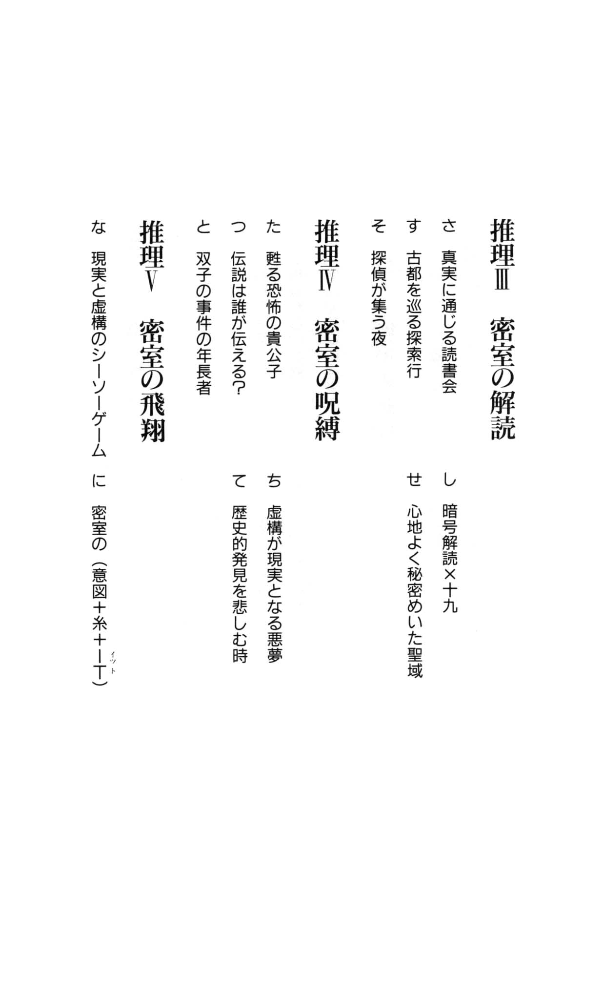
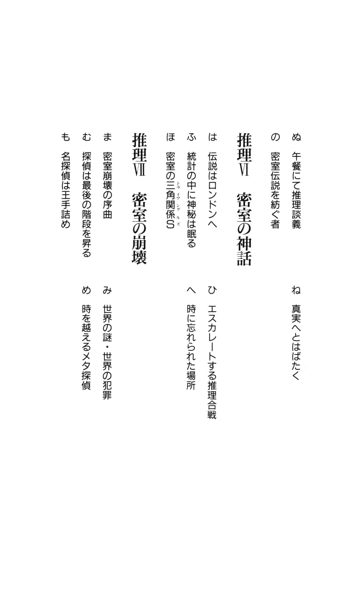
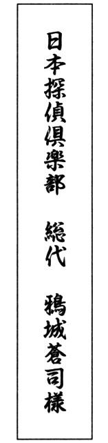
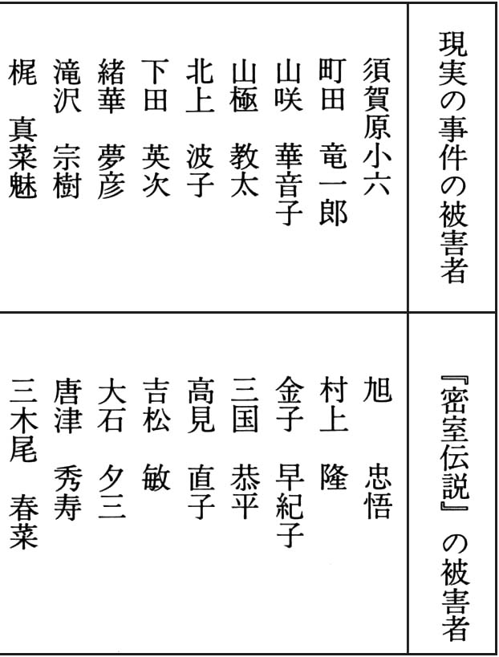
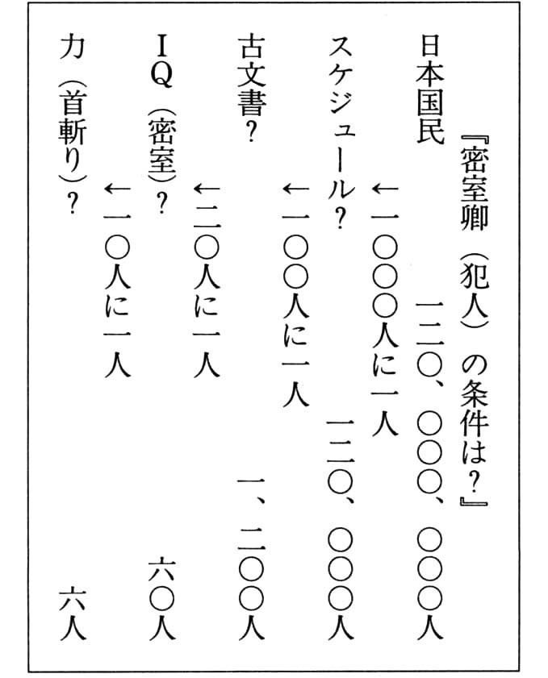

| コズミック 世紀末探偵神話 (講談社ノベルス) | |
| 清涼院流水 | |
| 講談社 (1996) | |
本作品は、縦書き表示での閲覧を推奨いたします。横書き表示にした際には、表示が一部くずれる恐れがあります。
ご利用になるブラウザまたはビューワにより、表示が異なることがあります。
コズミック
世紀末探偵神話
清涼院流水
本文デザイン＝熊谷博人
扉作成＝小石沢昌宏
梗概構成＝みずさわなぎさ


密室の・扉に鍵が・かけられる
天は号泣していた。
──なにをそんなに悲しむのか。『予 』の考えを知ってのことか？
仰向けに寝転んだまま、密 室 卿 はごろりと首を横に向けた。バショウの葉にあたり、雨の滴 が窓から踊りこんでくる。
滴は密室卿の頰に接吻すると弾けてそのまま滑り落ちた。
......はかないものだ。命というものはどうしようもなくはかない。
密室卿は泣いていた。嗚咽を漏らすことはなかったが、天に負けじと泣いていた。
自分は間違っているのだろうか？ ──そう自問したのも、一度や二度ではない。時には気持ちが揺らぎ、自分のすべてが崩壊していくような錯覚にとらわれることもあった。
だが、......
やらねばならないのだ 。──必ず 。
●
密室卿は知っていた。
千数百年もの間 、誰にも解かれることのなかった密室の秘密を知っていた 。
──密室 ──
......なんと心地よい響きの言葉だろう。
密室は人生の象徴だ。すべての方位を壁に囲まれ、謎を内に孕 んでいる。
密室の中には 、すべてがある 。
だからこそ、密室の中での死は美しい。
──ましてや、密室卿に殺されたのであれば尚更だ。
●
密室の中で、密室卿は法悦境にある自分を感じていた。
──『扉』を開かねば......。
完璧な密室のみが持つ独特の雰囲気が、密室卿を縛る。
──密室の『扉』を......。
グルグルと、がんじがらめにする。密室の呪縛が体を支配する。危険な高揚感が閃き、瞬時に全身を疾りぬける。
裸の心で密室卿は感じる。宇宙を......世界の神秘のすべてを。
もう迷いはない。
そして、密室卿は覚悟を固める。
──『扉』を開く時が来た！
●
雨足が激しくなる。
──悲しむことはない。もう、決めたことなのだ。
雨の音にまぎれて、蛙の鳴き声がした。続いて、ポチャンという小気味よい音が......。
山吹の茂みに潜んでいた蛙が、池に飛びこんだのだろう。いつもの癖で、反射的に俳句を詠んだ。
山吹や 蛙飛 ンだる 水の音
涙をふくと密室卿は微笑した。これから自分がやろうとしていることを考えると、笑わずにはいられなかった。
●
......密室伝説は、その時、幕を開けた。
密室の『扉』が開かれ、その直後、密室には鍵がかけられた。
密室一 平安神宮の密室
『人生のスリル』
今夜も、獲物たちが狩り場にやってくる。
狙われているとも知らずに、奴らは必ずやってくる。大 晦日 から元日へと年が改まるその頃、平安神宮は人の海となる。
京 阪 電車の丸 田 町 駅から、丸太町通沿いに幾つかの人の群れが続く。東山丸太町の交差点を過ぎると、群れが集まって行列となる。
──『初 詣 』という名目を借り、友人、恋人、家族、同僚と（──あるいは一人で──）参 詣 する奴らのほとんどにとって、『初詣』というのは一つの行事にすぎないのだろう。
元日に参拝する必然性など、なにも感じていないのだ。大した信心もないのに、多くの者が元日にここにやってくる理由は......。
──みんながしていることだから ──
日本人というものはそういうものだ。群集心理に左右されやすい。......学生時代、教師から聞かされた人種の特徴を示す小話を、須 賀 原 小 六 はよく覚えている。
船が沈没し、一艘の救命ボートに様々な人種が乗りあわせた。ところがボートは小さく、何人かが救命具をつけて海に飛び込まなければ、今度はボートが沈んでしまう。そんな状況での説得の言葉は......
アメリカ人→「スポーツマンシップを期待して」
イギリス人→「あなたを紳士と見込んで」
ドイツ人→「船長の命令です」
日本人→「みんな飛び込みますよ」
......自意識なんてものは、奴らからは微 塵 も感じられない。群衆に埋没した奴らは、『初詣客』というジグソーパズルを構成する一つのピースでしかない。
──そうだ。奴らは、ピースにすぎないのだ。
小六は、仕事の前に自分のやろうとしていることを正当化するのが好きだった。
──オレは、『人 様 』のものをくすねるんじゃない。奴らはピースなんだから。
平安神宮には、要所要所に数人のガードマンが配置されている。ガードマンたちは決して無能ではない......だが、小六たちスリ にとって、彼らの目をかいくぐって『狩り』をすることは容易なことだった。
人の壁が小六を守ってくれる。人の壁に囲まれた群衆の密室 は、『狩り』には絶好の場所なのだ。ガードする側でも、そのことは承知している。だから、初詣客に注意をうながしてはいるものの、必要最低数以上にガードマンをふやすなどということはしない。撲 滅 できるはずのない窃 盗 を根絶しようと努力するのは、ヒマで低能な奴が試みることなのだ。ガードする側も、自分たちにできる限界は承知している。商売人が万引の被害をあらかじめ計算に入れて売物に値をつけるように。
自分は盗られるはずがないと、根拠もなく盲信している連中がいなくならない限りは、スリがこの世から絶滅することはない。
小六だけではなく、スリを生業 とするものたちにとって、大晦日から元日にかけての平安神宮は絶好の狩り場だった。
人の壁と闇が自分を守ってくれる──稼ぎ放題だ。
●
ポマードで髪を丁寧に後ろへなでつけ、紺のスーツで上下を固めている。その上には黒のロングコート。見るからに高価な金時計を左の手首にはめ、太い黒縁の伊達眼鏡をかけている。
──人生の道を踏み外したことのないエリートサラリーマン、ってとこだな。
初詣客が互いに注意しているとも思えないのだが、わざわざ疑わしい格好をしていくこともない。初詣客の中には、コートの下にスーツを着ている者は決して多くない。だが、小六はかつての経験から、スーツを着ている方が獲物を油断させやすいということを承知していた。......少なくとも、薄汚れたジャンパーによれよれの帽子、といった出で立ちより警戒されにくいのは事実だろう。
トイレの鏡にニヤリと微笑みかけると、小六はネクタイの角度を正した。咳 払いを一つして、外に出る。
かなり広い喫茶店は、まもなく午前零時になろうかというのに、満席に近い状態だった。親しげに笑みを交わすカップル、騒がしくバカ話をする若者たち、珍しく深夜の外出を許された子供たちの脇には、孫に優しい視線を向ける老人も見える。
──大晦日はやはり特別な日だな。一般人にとっても。......オレたちスリにとっても。
カウンターの椅子に置いたブリーフケースをとり、伝票をウエイトレスに渡す。ブルー・マウンテンは、仕事の成功の前祝いとしては、安い値段だった。......『珈琲 の青山』の『青山』はブルー・マウンテンからきているんだったよな──小六はくだらないことを思い出して苦笑しつつ、支払いを済ませた。
すべてが面白く、おかしい。
既に確定している仕事の大成功は、小六にとって、決して不快なものではなかった。
●
東山丸太町の交差点にある喫茶店から平安神宮までは、徒歩十分の距離である。途絶えることのない参詣行列が、神宮への道を示してくれる。列に入った小六は、ゆっくりと歩を進めながら、追憶にふけっていた。
★
あれは小六が中学生の時だから、もう二十五年も前のことになる。
三度目に万引で捕まった時、小六は初めて警察に連行され、指紋をとられた。
『盗癖がついちまってるんだ、こいつは。社会からドロップ・アウトしたクズだ』
小六を取り調べた警官は、野良犬に唾を吐くように、そう言い捨てた。警官の説教は十分程度で終り、小六は迎えにきた母親と一緒に帰宅した。
道中、母親は終始無言だった。家についた時、ただ一言、『父ちゃんに謝るんだよ』と言っただけだった。
小六は父が嫌いだった。自分は定職に就くでもなく酒に溺れ、妻と息子たちを働かせてその日その日の暮らしを凌いでるくせに、やたらに威張りちらしている父は、尊敬ではなく憎悪の対象だった。
殺してやりたい 、そう思ったことも一度や二度ではない。
そんな父を母がまだ愛していなかったら、きっと小六は父を本当に殺していただろう。
●
父は、玄関口で待ち構えていた。一升瓶を手に持ち仁王立ちになっているその後ろから、兄と妹がおずおずとこちらを見ている。
黙って父の脇を通り過ぎようとした時、嫌味ったらしい口調が小六の背中を叩いた。
『警察の厄介になるようなことしといて、オレに挨拶なしか、小六？ 偉くなったもんだな』
──貴様に言われてたまるか！
舌打ちをし、小六がふり返った時、鉛の固まりのようなもので頭を強打された。
頭が割れた、と思った。母と兄妹が短く悲鳴をあげた。
その時は、一升瓶で殴られたことさえわからなかった。頭が熱くなり、手をあてると緋 い液体がかすかに付着した。よろめきながらも頭に血をのぼらせた小六は父に飛びかかり、馬乗りになり、憎らしい顔をひたすら殴打した。
なにかを叫んでいたような気もするが、あの時、自分がなにを口走ったか、まったく覚えていない。
止めに入った母たちを突き飛ばし、小六は家を出た。最後に目にした父の顔は血まみれだった。
......それ以来、一度も家には帰っていない。
●
小六は浮浪者に紛 れて生活し、スリを繰り返し、一日一日を必死で生きた。浮浪者たちは、仲間に加わった小六に様々なことを教えた。彼らは小六のライヴァルであり、友であり、親代わりの存在であり、生きた教師だった。わずかな稼ぎを仲間に騙 し取られることもあったが、それはそれでいい経験だった。最初こそ憤慨したが、詐欺は騙される側がいなくては成立しないということを学び、失敗する度に小六は大きく成長していった。
兄や妹とは何度か顔を合わせたが、結局、母とはそれ以来口をきいていない。兄から『親父が死んだ』と聞かされた夜、小六は誰もいない公園で一人祝杯をあげた。
父の死に対する悲しみといったものは、まったくなかった。アルコールという魔物の餌 食 となった時に、彼の父は既に一度死んでいたからだ。
●
父が不帰の人となった頃には、小六は仲間からも一目置かれるほどにスリの腕をあげていた。世間の連中が『落伍者』と呼ぶような仲間ばかりが増えていった。だが、小六の心に虚脱感はなく、素晴らしい仲間に囲まれた最高の人生だという充足感で一杯だった。
パチプロからパチンコで損をしないテクニックと心がけを盗み続けたおかげで、今ではパチンコはスリと並ぶ小六の収入源である。成功の秘 訣 というものは、誰かから教わるものではなく自分で学ぶものなのだということもまた、小六は理解していた。勝ち続ける、とまではいかないものの、競馬、競輪、競艇の『三競』でもハナ がきくようになっていた。
──退屈な人生はつまらないものだ。なぜ？ それは、人生はギャンブルだからだ。冒険とスリルのない人生は、人生じゃない。
小六にとって、ギャンブルはアイデンティティだった。趣味の延長上にある娯楽......そのさらに延長には、職業として彼が選んだスリというギャンブルもある。
万引を繰り返していた少年時代、大人たちは自分を厳しく叱るばかりで、優しく諭 してくれた者は一人もいなかった。悪いことをしてはいけないと繰り返す。なぜ、それが悪いことなのかを論理的に説明することは決してせずに、ただひたすらに、考えることなく繰り返すだけ......。
今では小六は、自分の周りに最低の大人たちしかいなかったことに感謝すらしていた。もっとまともな 大人たちに囲まれていたら、自分は現在のようにはなれなかっただろう。
気心の知れた仲間たちにも会えず、ただ社会の歯車として、無為に人生を過ごしていたかもしれないのだ。
......なにも目的を見出せず、人生という密室の中で、生きる指標──『扉』を探して右往左往していたかもしれないのだ。
そうならなかったことを、小六は心から感謝していた。
★
喧 騒 が小六を包んでいる。
小六は、平安神宮に向かっている自分に回帰した。
──これまでの人生のことを思い出すと勇気が出るな。
小六の体に、力が漲 ってくる。自然に笑いがこみあげ口元がゆるむ。高揚感で体が爆発してしまいそうだ。
──スリはオレの天職だ！
そう絶叫したい気分だった。
平安神宮に近づくにつれて屋台が増え、人の声は大きくなっていく。道路は渋滞し、車は足どめをくらっている。
うねる人の波を巧みにすり抜け、小六は朱色の柱が並ぶ応天門の階段を昇った。
視野が拡がり、小六の視界全体に人の海が現れる。黒い人間の頭がうねうねと揺れ、小六を挑発している。三万人は下らないだろう。
──今夜も、獲物たちがいっぱいだ。
小六は、大声をあげて笑いそうになった。
──これだから、平安神宮での『狩り』は止められない。
最初の獲物は、どいつにするかな？
★
三 好 美 世 子 は、びくびくしていた 。
平安神宮には、人間が多すぎた。一箇所にこれだけの人数が集まっているのを、美世子は過去二十三年間の人生で見たことがなかった。
本殿を始めとする幾つかの建物に灯りがついている他は、篝 に入った松明がゆらゆらと乱舞しているだけなので、辺りは一面薄闇だ。
美世子が思わず由 良 直 樹 の腕をぎゅっと握ると、直樹は優しい声を返した。
「ミヨ は、ここ初めてだったよな。すごい人だろ」
三好美世子は、『ミヨ』というアダ名で呼ばれている。名づけ親は、彼女が今、腕を組んでいる男だった。
「──毎年、こうなの？」
美世子の声には、呆れたような響きがあった。直樹は笑って頷 く。
本殿へと続く長い長い列は後尾のところで右へ左へと曲折し、とぐろを巻いた蛇を連想させるものだった。最後尾をようやく探しあてると、直樹と美世子はそこへ並んだ。
列の先頭へ達するには三十分から一時間、いや、もっとかかるかもしれない。直樹と美世子の後ろにも、すぐに列ができた。初詣の群衆はそれぞれ会話を交わし、それらが集合して独特の喧騒を作り出している。
騒音の渦の中にいても、周囲の人間の会話ぐらいは耳に入ってくる。直樹は、美世子にだけ聞こえるように心持ち声を低くした。
「......もっと早く来ておくんだったな。午前零時ごろから、また混み始めるぞ。それにしても、まったく、ヒマなやつが多い。どこにこんなに人がいるのか」
「でも、わたしたちもここにいるのよ」
遠慮がちに美世子が言うと、直樹は肩をすくめた。
「厳しいお言葉だね。抗弁を試みてもいいけど、ま、オレたちがヒマなのも事実だしな」
「オレたち、ですって。勝手にわたしをヒマ人 にしないでくれる。こう見えても、忙しいんだから」
「ミヨはもてていいな、正月からデートの約束でいっぱいなんだろ？ あまり男を弄 ぶなよ。せめて、二股にしておけ」
直樹は、悪戯 っ子のような眼になった。恋人の冴えない冗談に、美世子は思わず苦笑した。
「......ハズレ。あいにく、わたしは一人の男性に尽くすタイプですから」
「うらやましいね、そいつが」
「名前を知りたい？ 由良直樹ってひと」
「いい名前だ。ハンサムな奴だろ？」
「さあね......」
美世子は片目をつぶってみせた。
●
満員電車、満員のバス、駅、繁華街、デパート......
美世子は、人が群れているところが嫌いだった。人が嫌いなのではないが、群衆というものを彼女は苦手としていた。
誰も自分に注目しているはずがないのに、なぜか、いつもみんなに見られているような気がするのだ。頭のてっぺんから爪先まで、まじまじと値踏みするような視線の集中砲火を受けている。
物心ついた時からそういう感情があり、様々な治療を試みたが、いずれも結果は無駄に終わっていた。
実家で精神科医を営む美世子の父に言わせると、広場恐怖症の一種で、群衆劣等感 とでも言うべき症状らしい。病気というよりも、性格に起因する問題なので、これといった治療の術 はなかった。気をつけていればとりたてて生活に支障をきたすことはないだろう、とのことで今日に至るまで放置されたままでいる。
現に学生時代、同級生たちが群れていても、美世子は別に恐怖は感じなかった。ただしそれも、全校集会のレヴェルにまでいくと、充分に怯 える対象となったのだが。
大学を卒業し、大手のゲーム会社に入社したはいいが、新入社員たちのゲーム談義についていけず、初めの一 月 は他の社員たちから孤立していた。
たとえそれがどんなに小さな集団であっても、美世子が群衆と判断すれば、彼女がその中に入っていくことは難しかった。
由良直樹が掛 橋 となってくれなければ、美世子は永遠に社員の環 の中に入ることができなかったかもしれない......。
★
五月初頭、社運を賭けての大プロジェクトであった新作ゲームが完成した、打上げの日。
デスクの上を片づけ、早々に帰社しようとしていた美世子に話しかけてきたのが、直樹だった。
『君は、打上げには来ないの？』
直樹の顔を見た瞬間、美世子はハッとした。高校の時つきあっていた水 上 芳 樹 にそっくりの男が話しかけてきたのだ。驚くのも無理はない。
刹 那 的に浮かんだのは、それが水上当人だという発想だったが、それはすぐに頭の中で却下された。二年浪人して大学に入った水上が、今、こんな所にいるはずがない。
『......あの、あなたは？』
『オレは、ＣＧ 課の由良直樹。──まだ、こっちの質問の答えを聞いてないんだけど』
顔は似ているが、喋り方はまったく違っていた。水上は単語をとぎらせながら喋ることが多かったが、直樹の言葉は流動的だった。相手の唇からこちらの耳へと言葉が流れこんでくるような印象を受けた。
『わたしは、行きません。用事がありますので』
美世子は嘘をついた。母親と弟に夕食を作ってやり、トレンディドラマを観ながら夜を過ごすのは、『用事』とは言えないだろう。
『そうか......、残念だな。こんな美人が来ないんじゃ、面白くない。オレも打上げには出ないでおこうか』
表情を変えずに、さらりと言ってのける。美世子は、心の琴 線 がかすかに震えるのを感じたような気がした。
『ひょっとして、ナンパなさってます？』
直樹は破顔し、たちまち少年のようなあどけない表情になった。
『うまくやったつもりなんだけど。......今の誘い方、どうかな？』
『女心をくすぐるには、まだまだじゃないかしら。実はわたしの今晩の用事、大した用事じゃないの』
『──決まりだ。一緒に打上げに出よう』
直樹が側にいてくれる時、美世子は不思議とリラックスできる自分に気づいた。気がつくと、彼女は打上げの席上で群衆に溶け込んでいた。
●
水上芳樹が受験した大学（──そして不合格になった大学──）よりも偏差値の高い大学に現役で合格してしまったせいだろうか。大学に入ると、美世子と水上の関係は日に日に悪化していった。
劣等複合 というやつかもしれない。受験勉強の合間に励ましの電話をかけてくる美世子を、水上は冷たくあしらうようになった。
それでも美世子は、たまに電話をして、冷酷な彼氏を励まし続けた。しかし......
水上はやがて嫌味しか言わないようになり、それが当然の帰結であるかのように二人の関係は終 焉 を迎えた。
『お前には、オレの気持ちはわからねえよ！』
それが水上の最後の言葉だった。
●
打上げの翌日から、美世子と直樹はつきあい始めた。直樹との関係は、水上の時よりも、はるかにうまくいった。
美世子は、水上との関係が破局に至ったことに責任を感じていた。自分が彼を追い詰めて、苦しめてしまったのかもしれない。......別れてからもずっと、心の片隅にそんな罪悪感を持ち続けていた。
そんな考えは男どもをつけあがらせるだけだ。もっと自分中心にものを考えればいい──直樹は自分が『男ども』の一員であるのを忘れたかのような口調で美世子を慰めた。
直樹は恋愛だけでなく様々な面で豊富な人生経験を持ち、人間的にも美世子より一回りも二回りも大きい人物だった。彼は、恋愛に対する責任は男女平等であるということを美世子に教えてくれた。そして実際、二人はすべてにおいて対等の立場でつきあっていた。
美世子は、少しずつ水上の影を捨てていった。群衆に対する恐怖感 も以前ほどではなくなり、直樹と一緒の時はなんとか普通にふるまえるようになった。
水を得た魚のように、美世子は直樹と接することができた。すべてが幸福に包まれ、順調すぎて、美世子には怖いぐらいだった。初めての相手とよく似た顔を持つ直樹とベッドを共にすることにも、抵抗はなかった。その時には、水上の影は美世子から完全に消えていて、直樹は直樹以外の何者でもなかったからだ。二人が一つになった時、美世子は自分が直樹を愛していることを知った。
──中学、高校、大学のつきあいというのは、最初から崩れる運命にあったのかもしれないわね。本当の伴侶は、就職してから、人生の職場に入ってから見つかるものなのかもしれない。
二人は今ではお互いに結婚のことを意識してつきあっていた。直樹の腕の中で眠る時、美世子は限りなく幸せだった。すべて問題なく、万事がうまくいく──はずだった。
★
平安神宮の群衆がまた自分を見ているような気がしていたが、びくびくしながらも、美世子はなんとか平常心を保つことができた。
腕を組んでいる直樹から勇気をふきこまれているようだった。直樹の前でなら、がんばることができる。直樹の顔をこっそりと見上げる。彼は、黙って本殿の方を向いていた。
──不思議なひと......。
いつも勇気と自信に溢れていて、周りにいる人たちに力を与える存在。直樹ほど魅力的な男性は、他にいないだろう。満足そうに、美世子ははにかんだ笑みを浮かべる。直樹を一人じめする最高の幸せを、全身が震えるほどに激しく感じながら。
......その後ろから須賀原小六が忍び寄っていることを、彼女が知る由もなかった。
★
三人の獲物から現金のみを調達した。収穫はなかなかのものだった。だが、まだまだこんなものではない。
──なんといっても、今日は稼ぎ時なのだ。
小六は、本殿へと続く長蛇の列の中ほどに並ぶカップルに眼をつけた。男の方は知的な顔立ちだが、あまり金は持っていなさそうだ。女の方は......
妙にびくびくしている 。
──なにをそんなに怯えているんだ。右肩から下げているブランド物のハンドバッグに、よほど大事なものを入れているのか？
大事なものを持っている者。大金を持っている者は一目でわかる。スリを警戒しすぎているのだ。わたしから盗らないでと、顔に書いてある。
──決めた。次の獲物は 、あの女だ 。
本殿へと続く列の周囲にも、人が溢れている。数万人もの人がいるのだ。誰がなにをしていようと、わかるものか。
木の葉は森に隠せ。人は、人ごみに隠せ──。
列の近辺は、特にこみあっていた。肩と肩が衝突する。どこかから、ののしりあう声もする。
──スリがスラれたりしたら、面白すぎる冗談だ。気をつけよう。
一歩ずつ慎重に、小六はそのカップルの女の方に歩みより、見えないように下から手をまわす。
群衆の間をぬうように、スリの手が伸びる。密集する体の 間からスルリと伸びる。獲物に飛び掛かる蛇の敏捷さで、手が伸びる。
間からスルリと伸びる。獲物に飛び掛かる蛇の敏捷さで、手が伸びる。
三好美世子のハンドバッグを、須賀原小六がつかんだ。
★
年が変わる瞬間は、独特の雰囲気を備えている。
すべてが一瞬で瓦解、崩壊、霧消し、次の瞬間、すべてが新生、創造、構築される神々しい聖 刻 ──。
......ＰＰＰＰＰＰＰ......
アラームが新年の到来を告げた。
美世子が右手の腕時計に眼をやると、午前零時一秒だった。デジタル時計は休みなく時を刻む。未来へ、未来へ......二秒、三秒、四秒。
──一九九三年から、一九九四年へ──
平安京創建一二〇〇周年の年がやってきた。今年は、二人にとってどんな一年になるだろう。来年の今頃はもう、結婚しているだろうか？
美世子の思考は、そこで中断を強いられた。
肩からかけているハンドバッグが、後ろからずい とつかまれたのだ！
反射的に短い悲鳴をあげ、美世子は直樹の手をきつく握った。
「どうした、ミヨ？」
美世子が後ろをふり返ると、そこには──
鮮血が美世子の顔にふりかかる 。顔だけではない 、髪にも 、服にも 、靴にも ......
黒いコートの下に紺のスーツを着た首のない屍 体 が、ハンドバッグをつかんだまま地面に倒れ伏した。首の斬り口から噴水のように血が吐き出される。神宮の地面に血が飛び散り、またたく間に赤い泉が拡がる。
誰かが（──女の声だ──）かん高い悲鳴をあげた。屍体の周りから人が退き、それを取り巻くように人の輪ができる。ざわめきが膨脹し、爆発する。
──なんなの、これ。なにかの冗談⁉ 本当に、人間なの？
首なし屍体のすぐ脇に、胴体と別れを告げたばかりと思 しき首が、ころころ転がり、停止した。
髪は後ろになでつけられ、太い黒縁の眼鏡をかけた、首......
眼鏡の奥で、眼がパチパチと二回まばたきをする。両眼と口を開けたまま、首はただの肉塊となった。
●
首のない屍体の背中には、なにか文字が書かれているようだった。暗いのではっきりとは見えない。美世子は直樹の胸に顔をうずめていたが、好奇心からおそるおそる眼を凝らした。
三文字の言葉。
二文字めまでは『密室』と読める（──密室ですって？ ──）。三文字めは、なんと書いてあるのか、美世子にはわからなかった。
●
密室 ......。
美世子は、平安神宮がいわゆる密室状況下 にあった、という事実に気づいて慄然とした。
四方を人の壁に囲まれた、人の密室。
──わたしのすぐ近くに、犯人がいたということだわ。誰か、見た人はいるのかしら？
誰もその問いには答えてくれそうになかった。
★
不気味な惨劇は、平安京創建一二〇〇周年の京都、平安神宮で幕を開けた。一つの首斬り殺人が、人類未 曾 有 の密室連続殺人へと発展するとは、この時、誰も予想しえなかった。
......ただ一人の例外 、密室卿 を除いては。
●
『１番目の被害者』 一九九四年一月一日深夜
■須賀原小六
性別＝男 年齢＝三八
身長＝一七三 体重＝七二
血液型＝AB
職業＝無職（スリ）
屍体発見現場◎京都府
密室の仮名称◎平安神宮の密室
■現場の状況↓
①平安神宮には人が溢れていたが、犯人、不審人物を目撃したとの証言は得られなかった。
②当時、現場には約三万人の初詣客がいた。
③被害者は、首を鋭利な刃物で切断されていた。
④現場の周辺から、凶器と思われるものは発見されていない。
⑤被害者の背中には、被害者自身の血で『密室壹 』と記されていた。
密室二 空車タクシーの密室
『埋葬されたガム』
元日というのは、妙なものだ。
こちらがそれと意識しているからだろうか、それとも『元日』という日そのものに謎めいた力があるのか。
一月一日、街はいつもと違った顔を見せる。
──よく考えれば、それも当然のことかもしれない。歩道は、初詣に赴 くと思われるおめでたい恰好の人々でごったがえし、道路は昼前から車で混雑している。......そのくせ、いつもならこの時間に開いている店が閉まっているのだ。
ゴーストタウンに、艶 やかな服装の人々が突然ドッとやってきた光景を考えれば、元日が目に妖しく映るのも理の当然かもな。
......また、赤信号だ。
町 田 竜 一 郎 は、愛車 のハンドルから手を離し、胸ポケットからガムを取り出した。口に放り込み、舌で折り曲げ、クチャクチャとそれを嚙みながら、ふと、ガムというものについて考える。
──ガムは面白い。嚙んでも嚙んでもねちょねちょと体をくねらせ、口の中で踊り続けている。退屈な時の暇つぶしには最高だな。
二年前、タバコの吸いすぎでトイレで血を吐いてから禁煙を続けている竜一郎にとって、ガムは、口の寂しさを紛らわせてくれる無二の親友だった。
信号が青に変わる。竜一郎は、アクセルを踏んだ。
──それにしても......。
案外、人間もガムと似たようなものかもしれないぞ。生まれた時から、口の中という密室の中でしか生きられないガム。そうでありながらも、密室で踊り続けるしかないガムは、人間と同じじゃないか。
人間も、人生という『口の中（密室）』で、運命という『舌』に弄ばれるガムに過ぎないじゃないか。
──人間はガムなのだ 。
そう考えると、毎日を必死で生きている自分が、なんだか急に卑小な存在になった気がした。人生というものが、不意にバカバカしくなる。
──人間はガムなのだ 。
こいつは巧い言い回し だ。オレの墓碑銘 はこれにしてもらうか。しかし......、オレが死んだら誰が墓を造るんだ。オレには、親兄弟も恋人も、これといった友人もいない。天涯孤独の一個のガムでしかないオレの墓は、誰が造るんだろう？
★
昨晩は家族四人で遅くまでテレビを観て夜更かしをしていた。起床は遅く、朝食兼昼食 におせち料理を食べたのが午前十一時を過ぎた頃だった。
岡 本 涼 蔵 は、十四歳になって今までよりも明らかに球威を増してきている息子の涼 介 と、家の前の路上でキャッチボールをしていた。
──涼介の奴、いつの間にこんなに球が速くなったんだ？
速いだけではない。重い 球だ。それに、カーヴやシュートもおりまぜ、コントロールも正確だ。
──子供の成長は速いんだな。涼介の球のように速い。光陰矢のごとしとは、うまく言ったものだ。やれやれ、この調子だと、気づいたら孫とキャッチボールしているかもしれないな。
そう考えると、時の流れの速さがせつなく思えたが、涼介の成長を体で感じられることは、嬉しいことでもあった。
「親父、もっと本気で投げてくれよ。ゆるすぎるよ」
父の球を受けながら、涼介が不平をもらしている。
「こいつ、言ってくれるじゃないか。オレの本気の球を受けられるのか？」
「いいから投げてみろよ」
涼蔵は大きくふりかぶって、鋭く右手を投げおろした。涼介の手前でボールはカクンと落ち、アスファルト舗装の道路でワンバウンドしてミットにおさまる。
ヒュー、と涼介が口笛を吹いた。
「へえ、やるじゃん。フォークかよ」
「生意気 を言わなきゃ、教えてやってもいいんだぞ？」
「もう投げられるよ。クソ親父！」
ボールと一緒に、涼介の愛情を受けているような気がした。
今はまだ......父と子の間を阻む垣根は小さなものだ。だがやがて垣根は成長し、涼介の姿は自分の側からは見えなくなるだろう。
──自分と父の関係がそうであったように。
自分の現在の年齢に涼介が達した時、涼介はなにをしているだろう。どんな職についているだろう。父親と同じようにサラリーマンの道を選んでいるだろうか。子供とキャッチボールをしているだろうか？
その時、岡本家のドアが内から開かれた。扉についた鈴がシャランと鳴る。
めかしこんだ妻の雪 絵 と、一 張 羅 を着た絵 美 が出てくる。涼蔵のボールをキャッチすると、涼介は二人の元へ歩み寄った。
「お、絵美。その服、なかなか似合うじゃん」
「ありがと。お兄ちゃんは......また昨日と同じ服着てるの？」
不精な涼介は、同じ服を何日も着続けることがあった。今日も、元日だというのに昨日と同じ服を着ている。
苦笑しながら、雪絵も、急 かすように息子に言った。
「そうよ、涼介。待っててあげるから、今から着替えてきなさいよ」
「いーよ。オレは、服装や髪形で本当の自分をごまかすのは嫌なんだ」
涼蔵が、後ろから涼介の頭を軽く小突いた。
「お前は、単に面倒臭いだけだろうが。そんなことじゃ、嫁さんの来手がないぞ」
涼介は、涼蔵を見上げると悪戯っぽく笑う。
「心配するなって。親父だって、結婚できたんだから」
笑いの輪が拡がった。
★
「ありがとうございました。おばあちゃん、気をつけて。......忘れ物がないようにね」
九 十 九 髪 に曲がった腰の老婆を阪 急 電車門 戸 厄 神 駅で降ろした町田竜一郎は、すぐに次の客を拾った。
年の頃、七十前後の夫婦らしい男女だ。眼鏡をかけた老紳士然とした男の方は、杖を持っている。
「どちらまで？」
バックミラーに映る二人に竜一郎が問いかけると、老婦人の方が応えた。
「厄神さんまでお願いします」
「厄神さんですか。なにぶん、人が多いもんでねえ、近くまでしか行けませんが......構いませんか？」
バックミラーに目をやる竜一郎。
婦人が紳士に目で尋ねる。老紳士はうなずき、咳ばらいをして杖の柄を握りしめた。
「近くまでで結構ですので、お願いします」
老婦人に了解の意を示すと、竜一郎はアクセルを踏む足に力をこめた。
──初詣客が多いので、今日は客に不自由しない。ありがたいこった。
日本三大厄神の一つ門戸厄神は、初詣客で元日から賑わっている。阪急電車門戸厄神駅から西に歩いて十分ほどで岡田山の麓に至り、その辺りから参詣行列が続いている。ゆるやかな傾斜の岡田山の参道は、たいした広さではない。それに加えて屋台が道の両側に並んでいるので、車で直接、門戸厄神まで行くのは不可能であった。
人の列ができている通りを避けて、竜一郎はタクシーを走らせる。車では三分の距離だ。
──メーターは上がらないが、まあいいだろう。質より量だ。
正月の間は、初詣客を狙うに限る。距離は短いが、その分、回転が速い。
三十分前から嚙み続けているガムは、いいかげんまったく味を感じなくなっている。柔らかいゴムを嚙んでいるような感じだった。
──飲みこんでやろうか。いや......
竜一郎は左手をハンドルから離し、胸ポケットにつっこんでおいた包み紙で危篤の ガムを優しくくるんだ。
──ちゃんと埋葬 してやらないとな。オレたちは似たもの同士なんだから。
竜一郎がほくそ笑んだのに、二人の客は気づかなかった。
●
「あなた。お体の方は大丈夫ですか？」
乗りこんできてからしきりに咳をしている老紳士は、どうやら、なにか持病があるようだ。老婦人は心配そうに、右手で男の背中を軽くさすっている。
──病気を押してまで初詣に行かなくってもいいだろうに。
声に出すことはなかったが、それが竜一郎の率直な感想だった。
「京都の平安神宮で、昨晩、殺人事件があったって言うじゃありませんか。ニュースで言ってましたわ」
「ああ。われわれも気をつけんとな」
咳こむ老紳士。
──だから、気をつけるんなら、おとなしく自分の家で寝てろよな。
ちらちらとバックミラーの二人を見ながら、竜一郎は心の中で毒づいていた。
車道を走る自転車がタクシーの進路を妨害している。竜一郎がクラクションを鳴らすと、老婦人はビクッと一瞬、顔を強 張 らせた。
「でも、初詣客の中で人殺しなんて怖いですわねえ」
「物騒な時代だ」
老紳士は、また大きく咳こんだ。
平安神宮の殺人、──か。
本当に物騒な時代になってきたものだ、と竜一郎も思う。連続殺人やバラバラ殺人など、ここ数年、とみに犯罪が凶悪になってきているような気がする。ミステリドラマや、推理小説などの悪影響ではないのだろうか？
竜一郎もタクシー会社の同僚に勧められ、つい先日、ベストセラーになっているトラベルミステリとやらを読んでみた。テンポのいい話で、読んでいる最中は物語にひたすら没頭した。だが、読み終えてからよくよく内容を考えてみると......。
一人の人間が列車の中で殺された事件を、警視庁の刑事たちが、ああでもないこうでもない、と束になって推理する内容には閉口してしまう。読んでいる時に面白ければ、リアリティなど関係ないのかもしれない。確かに値段分の面白さは提供してもらえたのだし。
──それでも、滑 なんだな。
事実は小説より奇なり、とはよく言ったものだ。小説は超現実的だからこそ面白いのだと、竜一郎は思っていた。ところがどうだ、極上の推理小説と銘打たれたあのミステリは、現実の事件にはるかに見劣りする内容だった。
あんな話を書いて食っていけるなら、オレでも小説家になれるかもな......。もっともこれは素人考えで、プロの世界はそんなに甘くないのだろうが。
三分は、夢想するには短すぎる時間だった。老夫婦を降ろした竜一郎は、一分と待たずに、初詣帰りの新たな客をつかまえた。
★
「あーあ、天ぷらソバでも食いたいなあ」
ジーンズにウインドブレーカー、野球帽といういでたちの涼介が歩きながら不平を漏らした。
岡本家の四人は、住宅街を走る道を、門戸厄神へと歩いていた。国道一七一号線を一本、北に入った道である。門戸厄神までは徒歩三十分の距離だ。歩いていくのには少し遠いので、途中で、タクシーをつかまえるつもりだった。
「さっき昼ごはんを食べたところでしょ」
子供たちの後ろを、夫と二人でゆっくり歩く雪絵が、軽く叱るような口調で言った。
「オレ、おせちってあまり好きじゃないんだよ」
涼介は、おせち料理にはあまり箸をつけていなかった。育ち盛りの少年が、あの程度の量で満足できるはずはないのだが、と涼蔵はいぶかっていたのだが、案の定、そういう裏があった。思い返してみれば、昨年も、その前の年も、涼介は料理に文句を言っていたような記憶がある。
雪絵の兄は、名の知れた日本料理屋の板 前 をしている。その縁もあって、岡本家では毎年、三 日はおせち料理だけを食べるという習慣があった。上質の料理を安価で回してもらえるということで、涼蔵などは義兄に感謝していたのだが、どうも涼介には不満があるらしい。
「あんなにうまいものが嫌いなのか？」
信じられない、といった調子で涼蔵は息子の背中に問いかけた。
四人の先頭を歩いていた涼介はふり返り、絵美と目を見合わせる。
「だって地味じゃんかよ。絵美も嫌いだろ？」
それは、質問というより誘導尋問に近かった。兄想いの妹は、曖昧にうなずいてお茶を濁している。
「大人になれば、わかるんだよ。あのうまさが」
そう言いながらも、それは嘘かもしれないなと、涼蔵は胸中密かに思っていた。
涼蔵は子供の頃からおせちが好きで好きでたまらなかった。昔から彼にとって、正月の楽しみは、お年玉よりもおせちだったのだ。
同様に涼介は、大人になってもおせちを嫌いかもしれない。
それはそれでいいか、とも思う。おせちが好きか嫌いかで人格が決定されるわけではないし、涼介がおせちを嫌いなのは、世代の差というよりも、単に、個人的な趣味の問題である可能性もあるからだ。
「いいよ、オレ子供だし」
ふてくされたような口調で言うと、涼介はまた先頭を歩き出した。後ろの三人は、顔を見合わせ、声を殺して笑った。無邪気な岡本家の長男は、一家の人気者だった。
●
道の両脇には、ずっと人家のコンクリート塀が並んでいる。はるか後方から前方まで。巨大迷路の道の一つを歩いているような不思議な感じだった。国道から一本、中に入っただけでも、人通りはかなり少ない。動いているのは自分たちを含めて数えるほどしかいないということもあり、無機的な印象を見る者に与える殺風景な景観だった。
●
──タクシーだ。
黄色に白のラインが入ったタクシーが、こちらに向かってくる。進行方向は逆だが、脇道から国道へ出られるだろう。
「涼介、タクシーだ」
声をかけるとともに、涼蔵自身も右手をあげてタクシーに合図を送った。
★
──そろそろ昼めしでも食うかな。
まだ正午までには時間があったが、竜一郎は、いつになく空腹を覚えていた。
回転が早いということは、それだけ多くの客の相手をしなければならないということだ。客の中には、嫌な奴もいる。小銭を出すのにグズグズする奴や、最短区間しか乗っていないのに万札を出して、『領収書』と宣 う奴らだ。
多くの客を乗せると嫌な客にあたる確率も増える。最低の客に接すると腹が立ち、ストレスがたまる。ストレスがたまると、腹が減る。
──つまりは、そういうことだな。
冷静に自己分析をしてみせるが、飢えは一向におさまる様子がない。
──弁当屋でチキン南蛮を買うか。それとも、牛丼屋で大盛を食うか。......コンビニの弁当でもいいな。
ガムをきらしていることを思い出した竜一郎は、コンビニに寄ることに決めた。
今度は余分にガムを買っておこう。今日は、まだまだ忙しくなりそうだ。
少し前方に、手をあげている家族連れが見える。少年と父はそうでもないが、母と娘の方は、一目でそれとわかる恰好をしている。また初詣客だ。
──今から厄神まで引き返すのは面倒だな。また、昼めしが遅くなっちまう。
そう思った時、純真な瞳の少年と目があった。
──まあ、いいか。もう一組乗せてからでも遅くはない。昼めしは逃げないんだ。
開いた窓から、冷たく乾いた風が竜一郎の顔に吹きつける。ハンドルをきり、タクシーを歩道に寄せた。
●
歩道に寄ってきたタクシーは、なぜか涼蔵たちの前を素通りした。
「なんだよ。手、あげてるのに」
涼介は野球帽をとり、それを通りすぎたタクシーにふってみせた。
「お客さんが乗ってたんじゃないの」
母の当然の疑問を娘が軽く否定する。
「ううん。運転手さん以外、誰もいなかったよ」
タクシーはそのまま直進し続ける。前方はカーブになっているというのに、そのまま......
歩道に乗りあげ、人家のコンクリート塀に突っ込む。──まったく減速せずに 。
スペースシャトルを打ち上げたような轟音が、瞬間的に轟いた！
コンクリート塀の一部が崩れ、タクシーはそこにボンネットを押し込む形で停止した。
●
──運転手は大丈夫か？
しばらくは四人とも、じっと動かなかった。
──なぜ 、カーブを曲がらなかったんだ ？
突然、我に返り、涼蔵はタクシーへと駆け出した。涼介がその後を追う。
何事かと道路に出てきた周囲の家の者たちがタクシーへと歩み寄っている。コンクリート塀をぶち抜かれた人家からも、中年の男性が出てくる。
涼蔵たちはタクシーに駆け寄り、運転席側の開いた窓から中を見た。
「......なんだよ、これ！」
涼介が悲鳴をあげ、二、三歩後ずさった。
あまりにも日常生活からかけ離れたオブジェが、そこにあった。
超現実的すぎるがゆえに、恐怖や生理的な嫌悪感は湧いてこなかった。それほどまでにアンバランスな光景だった。
運転席に腰かけた運転手には、首がなかった 。
フロントガラスや車内に、血が飛び散っている。そして、肉塊と化した運転手の膝には、タクシー会社のロゴの入った帽子をかぶった首が、トンと乗っている。
──運転手の首と思しきそれは、なにかに驚いたような、呆然とした表情をしていた。
●
『２番目の被害者』 一九九四年一月一日昼
■町田竜一郎
性別＝男 年齢＝四四
身長＝一六五 体重＝六八
血液型＝Ｂ
職業＝タクシー運転手
屍体発見現場◎兵庫県
密室の仮名称◎タクシーの密室
■現場の状況↓
①被害者は、走っているタクシーの中で、首を鋭利な刃物で斬られて殺されていた。
②目撃者の証言によると、コンクリート塀に衝突する直前、運転手はまだ首を斬られていなかったようだ、とのことである（首が胴体に乗っていただけ、という可能性はある）。
③現場の周辺から凶器と思われるものは発見されていない。
④被害者の胴体は、シートベルトで運転席に固定されていた。そして、その背中には、被害者自身の血で、『密室貳 』と記されていた。
密室三 砂丘マンションの密室
『影に潜む魔』
ブラウン管には、初詣客で賑わう各地の有名神社の映像が映しだされている。アナウンサーの声は躍動感溢れるもので、ニュースも祝賀ムード一色、といった感じだ。
──そろそろね。綾 女 たちが帰ってくるのは。
壁にかかる時計は、午後七時十八分を指していた。昨夜、スーパーで買った『洋風おせちセット』の残りを食卓の中央にすえる。皿と箸を並べ終えた山 咲 華 音 子 は、窓を開けるとヴェランダに出た。
マンションの七階から、眼下に広がる夜の街を眺めるのは気持ち良かった。夜闇に家々の光点がちりばめられた様子は、きらびやかな宝石のショーケースを思わせる。視界いっぱいにまばらに広がる煌 めきの向こうに見える日本海も、月光を浴びて優雅に輝いている。思わず詩を創作してしまいたくなるような美景だった。
一月の寒風が肌を刺す。ぶるる、と身を震わせた華音子は、あわてて室内に戻ると窓を閉めた。娘の受験が間近だという時に、母親が風邪をひくわけにはいかない。
『続いてのニュースです。昨夜、平安神宮で中年男性が殺された事件で、......』
アナウンサーの声が、にわかに沈んだ調子になった。
なんだろう？ ──華音子は、食卓の椅子に座り、注意をテレビに向ける。
ニュースは、今日の正午頃、兵庫県の門戸厄神のすぐ近くで、タクシーの運転手が殺された事件を報じていた。
人家の塀に頭を突っ込んだタクシーと、その周りを囲んでいる捜査員たちの様子がブラウン管に見える。ＶＴＲだろう。
と、映像が一変し、タクシーの取り除かれた夜の現場に立つリポーターの報告が入る。警察では、昨夜の平安神宮の殺人事件との関係を鋭意捜査中、初詣の混乱を利用した、同一犯人による犯行との可能性もある、とのことだった。
──怖いわ。初詣客の中で、人が殺されるなんて。
華音子の背中を、なにか得体の知れない冷たいものが滑りおりた。
彼女も日中、綾女の合格祈願を兼ねた初詣に行った。あの人がごったがえす中で、殺人が行われていたら......それは、愉快とはほど遠い想像だった。
考えてみれば、初詣の時ほど、様々なバックグラウンドを持つ人々が一堂に会する場も珍しいのではないだろうか？
普段なら怪しく見える人も、初詣の人の渦にまぎれてしまったら、おそらく他の人たちとあまり区別できないだろう。
平安神宮と門戸厄神の事件が同一犯人だとしたら、犯人はどんな人物なのだろうか。
──変質者？ それとも......
華音子はぶるぶると首をふると、あわててリモコンをとり、テレビを消した。
──こんなことを考えても、しょうがないわ。事件の捜査は警察がするでしょうし、それに、ここは鳥取県なんだから。
京都の平安神宮、兵庫の門戸厄神、......次は、島根の出雲 大社とか？ まさか──そんなことはありえない。たとえ同一犯人だとしても、また殺人を犯すなんてことはないでしょう。一人で三人も殺すなんて。
それに──
そうよ。変質者が初詣客を狙って殺人を繰り返すなら、家でじっとしてればいいわ 。いや、そもそも、殺人というのは、動機があって成立するものだから、わたしは大丈夫......。
──わたしは大丈夫 。本当に......そうなの？
幸 広 になら、動機があるかもしれない。わたしを殺す動機が。
ふとそう考え、次の瞬間、華音子はひどい自己嫌悪に襲われて眉をひそめた。
──わたしはなんてちっぽけで、いやらしい人間なんだろう。
結局、いつも自分のことしか考えていないのよ。殺人事件のニュースを見て、真っ先に傍観者である自分の安全を確認して、一人で安心しているなんて呆れるわ。元日早々、家族に死なれた遺族の胸の内も知らずに......。
今日、もし幸広が死んだら。今日、もし綾女が死んだら。わたしは、どんな風に感じるのだろう。
──わたしは 、元日だけは命日にしたくないわ。
ふたたび利己的な思考が動きだす。そう気づいた時、華音子は愕然とし、自分に対する憤りに震えた。
──こんなわたしだから、幸広とうまくいかなかったのよ。こんなわたしだから、きっと......。
★
高校を卒業した頃は、幸広との愛がすべてだと信じていた。
幸広さえいればそれでいい......そう、信じていた。
両親を説得し、幸広と一緒になった。幸広は印刷会社に就職し、安アパートでの二人暮らしが始まった。
しかし、現実は華音子が考えていたほどロマンティックでもドラマティックでもなかった。
毎日が同じことの繰り返し。朝起きて朝食を作り、幸広を起こして朝食を食べさせる。幸広を送り出した後は、掃除、洗濯......ボーッとテレビを観ているうちに買物、夕食の支度。ひたすら、その繰り返し。
アパートの隣近所の住人は、昼間いなかったり年齢が華音子とあまりに離れていたりで、彼女の方からつきあいを閉ざしてしまった。大学に進学したり、就職したりした友だちは、それぞれの新しい環境で新しい友だちを作り、自分からは次第に遠ざかっていく......。
幸広と一緒なのは限られた時間だけ。アパートに帰ってくると、幸広は疲れてすぐ眠りにつくことが多い。夫婦の営みを持つことも減り、他人のようなよそよそしさが二人の間に漂い始める。
働く気力もなく、いったん途絶えた近所とのつきあいが再開することもなく、これといった趣味もなく、ただ中途半端に余った時間をもてあます日々が続く。気がつくと新婚生活という密室の中でがんじがらめになっていた。
世界は変わってしまった。こんなはずではなかった。もっと楽しいはずの人生が......。
自分の置かれている状況を冷静に考えると、無性に涙が流れ、発狂しそうになる。密室の壁の圧力に押し潰されそうになり、自分という人格が崩壊しそうになる。
大学に行っておけばよかったのかもしれない。就職していればよかったのかもしれない。
選択を誤った過去の自分への憎悪が日増しにつのり、幸広との仲は冷えきっていった。
●
昇進、昇給しても喜ばない妻に、ある日、幸広は疑問を口にした。
『どうしたっていうんだ。最近のお前、おかしいよ。昔に戻ってくれよ。なあ、楽しくやろうぜ』
あなたはいい......。職場で、知り合いもたくさんいるだろう。だが、わたしは──あなたのせいで、すべてを失った。
長い時間を経てたまっていたものが、堰 を切ってあふれ、膨脹し、爆発する。
......あなたのせいで......あなたのせいで......あなたのせいで ！
わたしの人生は狂ってしまった！
気がつくと華音子は、無我夢中で、手当たり次第に物を幸広に投げつけていた。
幸広はその後、三日間、家に戻らなかった。
●
──わたしたちの仲は終わったんだ。もう、これ以上は続けることができない......。
だが華音子は、離婚することが怖かった。自分は、幸広のせいで すっかりダメな人間になってしまった。今、一人で社会に出ても生きていく覇 気 はないだろう。
結婚した時の両親の言葉が、水面下から浮上するように、不意に脳裏によみがえる。
『お前たちは、まだ早すぎると思うけどねえ』
早すぎる？ ──早すぎる。......早すぎる！
そうだったのだ。わたしたちに、結婚は早すぎたのだ。両親の言うことを聞き、大学に進学し、就職してからでも結婚は遅くなかった。自分はあまりにも、世間というものを知らなすぎたのだ。
『扉』を閉ざしたのは華音子の方だった。両親や友人たちの反対をつっぱね、威勢よく『わたしは専業主婦になる』と豪語し、密室の中に閉じこもる道を選んだのは、彼女自身だった。
密室の中には、幸広も一緒にいてくれると思っていた。だが、幸広は密室の外にいた。彼女は一人だった。
絶望にくれ、精神の崩壊まで秒読みとなった時、華音子は妊娠を知った。
●
子供ができれば、幸広との仲も修復できるかもしれない。中学や高校の頃のように、また楽しくやれるかもしれない。
これから生まれてくる子供は、華音子の希望だった。幸広との掛 橋 となってくれ、自分を幸せへと導いてくれる子供......。
綾女が生まれると、幸広は変わった。今も住んでいる、家賃は高いが広いマンションに移り、前よりいっそう働くようになった。そして、表面上は、優しく華音子に接するようになった。
それが表面上の優しさでしかないことを、華音子は敏感に感じとっていた。幸広の優しさは自分に向けられているのではない。幸広の優しさは、常に、彼の娘に向けられているのだ。自分は、娘にとって必要な母親だから優しくしてもらっているのにすぎない。
華音子は綾女に嫉妬した。夫の寵 愛 を受ける娘を羨 ましく思った。だが、綾女を憎悪することはできなかった。綾女は自分が腹を痛めて産んだ子であり、密室の中で共に暮らす同士だったから。
●
綾女が成長するごとに、幸広と華音子の関係は、娘が産まれる以前のものに戻っていった。その頃には、華音子はすべてがどうでもよくなり始めていた。
──生きるってことは、こういうものなんだ。所詮、密室から外に出ることはできないのよ。
そう考えるようになった。
★
愛車 を走らせながら、山咲幸広は、綾女の話に相槌を打っていた。元日だというのに、午後から夜にかけて、学習塾の『元日特訓』があった。ようやく勉強漬けの一日を終え、彼女は解放感でいっぱいの表情をしている。
元日ということで、塾の方でも、いろいろ考えているようだ。勉強だけではなく、もちつき大会を催したり、教室でもできる簡単なゲームをはさんで授業をしたり......綾女の話を聞くかぎりでは、彼女も今日一日、かなり楽しんだようだった。が、勉強に支配された毎日だ。『楽しさ』という感覚が麻痺しているのではないか、と幸広は首を傾 げずにはいられない。
『小学校時代の勉強で人生を有利にしよう』──という文句は、塾の宣伝文句 としてはよいが、自分の子供のためを考えると、果たしていいことなのだろうか。
明けても暮れても勉強、勉強で、子供たちには心休まる暇がない。中学受験、高校受験、大学受験、そして、就職......。決められたレールの上を（──世間が理想とし、親が希望する人生のレールの上を──）走り続けなければならない子供たち。
今でこそ違和感なく接することができるようになったが、最初、綾女に接した時、幸広は名状しがたい戸惑いに直面したものだ。
この子の将来を決めるのは、自分と華音子なのだ──その責任の重みに、押しつぶされそうになることもしばしばだった。
子育てなんてものは、洗脳と同じだ。親の思い通りに子供を教育し、親の倫理観を子供に叩きこみ、親の理想が子供の理想となるようにしむける。
──だが、自分や華音子が（──人間的にまだまだ未熟な我々が──）人の親となる資格はあるのだろうか。教祖となり、洗脳者として、子供の人生に多大なる影響を及ぼして良いものだろうか？
答えの出ないまま、幸広は子育て、そして人生を諦 観 するようになった。
なにを自分は懸念しているんだ。身の程知らずにも真理に手を伸ばし、『扉』を見出だそうと......。
所詮、答えは出ないのに。
結局、人間は密室に囚われているのに。
●
カーラジオのニュースが、平安神宮に続いて、門戸厄神の近くでも殺人事件が発生したことを報じていた。今度の被害者は、タクシーの運転手、とのことだった。
「また人が殺されたんだって。こわーい」
首をちぢこめ、助手席の綾女はラジオに注意を傾けている。
幸広はさして興味をそそられなかった。最近では、毎日、何人もの人間が殺されたり、事故死したりしているため、他人の死に慣れてしまったのだ。
「タクシーの運転手さんって、タクシーの中で殺されたのかなぁ、パパ？」
ラジオに耳を傾けながら綾女が尋ねた。ニュースでは、詳しい事件の状況については言及されていなかった。ただ、二つの事件は現場の状況などに類似する点が多いため、警察では同一犯の可能性を検討中、とのことである。
「どうかな。でも、タクシーの中にいる人が殺されるなんてことは、ないんじゃないか。タクシーの外で殺されたんだろ」
幸広は曖昧に首をふってそう言いながら、なんとか話題をそらさねばと考えていた。子供に殺人の話はあまり良くない。ホラー映画が好きというだけでも、綾女は普通の小学生の女の子らしくないのだから......。
「走っているタクシーの中で殺されたんだったら凄いよね。空を飛んでいる、物質を通過する能力のある怪物が、運転手さんをズバッと殺しちゃうの」
子供の想像力には、驚かされることもしばしばだった。綾女が空想上の怪物の話をするのは今に始まったことではないが、今回のは傑作だった。
「そんなことは......」
言いかけて、幸広はさむけ が自分の体を走るのを感じた。
幸広と綾女は、走行中の車の中にいる。もし今、自分たちが誰かに殺されたら──。
車という密室、しかも走行中。外部から完全に遮断された空間と『死』が絶妙のイメージで結合し、不可解な恐怖を増幅させた。
綾女が怪訝そうに見つめてくるのを感じながら、幸広は、しばらく言葉を失っていた。
●
『サンドヒル宮城』は、八階建てのマンションだった。住宅街の中心からは外れているが、車があれば、そう不便というわけでもない。
地下の駐車場に車を停め、階段でエントランスへと上がる。ホールを脇に折れ、エレヴェーターのボタンを押した。その間、幸広はずっと、綾女の手を握っていた。
七階から、エレヴェーターが降下してくるのが表示でわかる。
七......六......五......四......三......二......
チンッ、と音がして扉が開いた。
だれも乗っていないエレヴェーターボックスに乗りこみ、『７』というボタンと『閉』ボタンを押す。
エレヴェーターは、ゆっくりと上昇を開始した。
★
華音子は、インターホンの音で我に返った。
──綾女たちだわ。
随分と長い時間が経過したように思われたが、時計を見ると、まだ午後七時二十五分である。
インターホンが鳴る。二度、三度......
──鍵を開けなくちゃ。
華音子は腰をあげようとした 。
●
四度、五度......六度......。
何度鳴らしても、華音子の返事はない。トイレにでも入っているのだろうか。あるいは、電話中か。いや、それにしても長すぎる 。
幸広は、不思議そうな顔をしている綾女を見下ろした。
「綾ちゃん、鍵持ってたな。出してくれないか」
幸広は、綾女を迎えに行くためだけに外出したので、スラックスにトレーナーというラフな恰好をしている。鍵は持っていなかった。
「ママは、お家 にいないの？」
「いや、いないはずはないんだが──」
華音子には、たまに黙り込み、自分の世界に浸ってしまう癖があった。そうなると、外部の音が耳に入らないのだ。また、あれ だろうか？
「ちょっと待ってね。カバンの底にあったはず......」
ミッキーマウスの柄の入ったカバンをゴソゴソやっていた綾女は、鳥取砂丘のキー・ホルダーのついた銀の鍵を取り出し、幸広に差し出した。
幸広はうなずき、鍵を鍵孔に挿入し、右に回す。
カチリッ。
鍵の開く音が、通路の静 謐 の中、不気味に一 際 大きく響いた。
●
「ただいまー。ママ、いないの？」
綾女の声が、吸い込まれるように室内に消える。
室内は、無音の空間だった。空気が張りつめたピリピリとした謎の緊迫感が漂っている。
靴を脱ぐと、幸広は通路を抜け、食卓の置かれたリヴィングに達した。
そこで彼が見たものは──
●
「きゃっ！」
幸広の後ろからニュッと顔を出した綾女が、短く悲鳴をあげた。いったんは顔をそらしたものの、おそるおそる幸広を盾にして『それ』を覗き込む。
ホラー映画の与えてくれるゾクゾクとした快感が、綾女は好きだった。しかしこれは、ゾクゾクなどというものではない。
映画より現実的なはずの本物の屍体。しかも、彼女の実の母親の屍体は、なんだかよそよそしかった 。
純白のテーブルクロス、料理、皿は、鮮血で朱に染まっている。椅子に座った華音子には首がなく、首をもがれたマネキン人形のように座す彼女の首の切り口は緋 い。
料理の載っていない大皿の上に、華音子の首が載っていた。
★
華音子......。そんなバカな──。
じっと立ちつくす幸広の脳裏に漠とした悲哀が去来する。
最近、華音子と彼はうまくいっていなかった。だが、彼らは夫婦だった。生涯の伴侶 だったのだ。
中学、高校時代の華音子との楽しい想い出が、白黒 の映像で、走馬灯のように頭をよぎる。
●
「パパ。パパ！ しっかりして、パパ！」
綾女が体を揺すっている。幸広は、自分が涙を流していることに気づいた。
そしてその時、このマンションの部屋が密室状況であるということに気づいた。
華音子は密室の中で首を斬られて殺された。
──ということは、華音子を殺した犯人は、まだこの部屋の中にいる！
ゾワッ
一瞬で全身に鳥肌が立った。綾女を抱きしめる腕に力がこもる。
幸広は、おそるおそる周囲の様子をうかがった。
灯りがついているのは、リヴィングと通路だけだ。
居間、ヴェランダ、バス、トイレ、......どこかの闇に犯人が潜んでいるかもしれない！
そう考えると、恐怖に気が狂いそうだった。斧を持った変質者が室内に潜んでいたら......。
ハアッ ハアッ
息を切らす。全身の毛穴から発汗する。体が熱い。
──警察を呼ぼう──
しかし......
幸広には、電話までの距離が、はてしなく遠く思えた。
●
『３番目の被害者』 一九九四年一月一日夜
■山咲華音子
性別＝女 年齢＝二九
身長＝一五六 体重＝四四
血液型＝Ｂ
職業＝主婦
屍体発見現場◎鳥取県
密室の仮名称◎マンションの密室
■現場の状況↓
①被害者は、密室状況のマンションの部屋で、首を鋭利な刃物で斬られて殺されていた。
②遺族の証言によると、部屋は、窓も扉も完全に内側から施錠されていたにもかかわらず、室内には誰もいなかった。
③現場の周辺から凶器と思われるものは発見されていない。
④食卓の椅子に座っていた被害者の背中には、被害者自身の血で、『密室參 』と記されていた。
密室四 超高速・国道の密室
『首を斬 る橋』
善良な市民が初夢の中で戯 れている頃、山 極 教 太 は、暴走族グループ『狂 鬼 狼 』の特攻隊長 として、十人ほどのグループを先導していた。
夜道に爆音を轟かせ、国道一八〇号線をゆっくりと走る。前方を確認しつつ、教太はメイン集団の数十メートル先を走っている。
昼間は車も多かったが、今は、ほとんど見られない。
──オレたちが、夜の国道をしきってるんだ。
まぶたを閉じ、顔に吹きつける風を心地好く感じながら、教太はＸＪＲ・一二〇〇 のスピードをあげた。
●
「『山 賊 』のダンナ、今日はペース早いよね」
赤く染めた髪をツンとおっ立てた湖 城 魅 紀 が、バイクの爆音に負けじと、声をはりあげて話しかけてくる。
『山賊』とは、山極教太の通り名だった。サンゴク の音と、ゾク （族）を掛けた単純なネーミングなのだが、案外、定着している。岡山県全域とまではいかずとも、総 社 市では、『狂鬼狼の山賊』と言えば族仲間なら誰にでも通用する名前だ。
倉 橋 哲 也 は曖昧にうなずいただけだった。哲也の興味は今のところ、背中にギュッと押しつけられている魅紀の胸の感触よりも、後方の闇にあった。
──山賊さんに殿軍 任されたんだ。気合い入れてかないとな。
哲也たち殿軍の三機は道路いっぱいに間隔をとって広がり、後方に注意を集中している。パトカーに追撃された時、その進路を妨害し、仲間を逃がす。解散すると今度は自らも脇道にそれ、警察をまく。殿軍の役割は重要であり、そうであるがゆえに、殿軍を任されることは非常に名誉なことであると言えた。
高校の先輩であり、『狂鬼狼』の同志でもある山極教太を、哲也は尊敬していた。
──巷 で言われているほどおっかない人じゃない。確かに敵には容赦ないが、仲間には優しい人だ。それに、確かな人生哲学と信念に基づいて行動する姿は本当に凄いと思う。
『哲也、オレたちは悪 じゃない』
哲也を殿軍に指名した時、彼はそう言った。
『無条件にオレたちを悪 だと決めつける奴らこそが悪 なんだ。「自分の思考」ってものを持たずに、道徳なんて物差しで他人を測ろうとするバカどもがいるかぎり、オレは走りをやめないぜ』
山賊の言葉は絶対だった。張りのある声が天から降ってきて脳天から入り、体の中をビリビリと走り抜けたように感じられた。
『とびっきり大きな音たてようぜ！ 奴らの目をさましてやるにゃ、オレたちの目ざまし が必要だろうからな！』
──山賊さん。あんた、最高だよ......。
山賊と出会い、哲也は人生というくだらない肥 溜 めから救い出された気がした。人生という密室の外から眺めて、初めてわかった。それは、なんと濁った色をしていることか！
──たとえ将来、族を抜けることになっても、あの肥溜めには戻りたくないな。もう、二度と。
「テツ！ おい、テツ！」
並走するタツとケンが自分を呼ぶ声に、哲也は気づいていた。
「......わかってるよ」
ミラーに映るパトカーのライトは、遠目でもすぐそれとわかる。国道付近の住民のことを考えて、サイレンは鳴らしていない。
「お手並み拝見、ってとこかな」
哲也の股間を軽く撫で、なまめかしい声で、魅紀が挑発する。哲也は、ＧＳＸ・一一〇〇 を一気に加速した。
「魅紀、しっかりつかまってろよ！」
「アイアイサー！」
殿軍の三機をパトカーが猛追する。
★
「元日からパッパカうるさい奴らだな」
パトカーの中で、伊 達 新 平 が舌打ちをした。
「正確には、一月二日だ。もう午前零時を回っているからな」
助手席に座る羽 山 亮 は、几帳面な性格だった。
「細かいこと言うな。しかし、新年早々、こんな所で族と鬼ごっこしてるとは......。十年前には思ってもみなかったぞ」
「当たり前だ。オレたちは予言者じゃない」
伊達と羽山が初めて会ったのが、ちょうど十年前、中学一年の時だった。あの頃は互いに虫の好かない奴だと思っていたものだが、奇妙なもので、それ以来、くされ縁が続いている。
「まあ、連中なんてかわいいものさ。密室卿に比べたらな 」
いきり立つ同僚をなだめようと羽山が切り出したが、逆効果だったようだ。伊達は、呆れたようなまなざしで相棒を見る。
「おいおい、それは口外厳禁だぞ」
羽山には、ふだん冷静なわりに、大胆なところがあった。ヒヤヒヤさせられるのは、これが初めてではない。
「構わんさ。パトカーの中は密室 なんだ。誰も聞いちゃいない。......それにしても、だ。新平、お前どう思う。あの事件について？」
「どう思うったって、まだ三つの殺人が同一の犯人と決まったわけじゃないだろうに。それより！ まだマスコミにも箝 口 令 をしいてるんだ。不用意にその話題を口に出すのは慎しめよ」
そうは言っても、伊達と羽山も実は密室連続殺人の裏話を同僚から耳打ちされた身だった。まったくもって、人の口に戸は立てられないものだ。
「どうだか──。京都、兵庫、鳥取、......次は、この岡山かもしれんぞ。これ以上、事件が続いたら、上層部はどう動くかな？」
「探 偵 倶 楽 部 のお歴々も動き始めたようだ」
「ほう......。あの、犯罪捜査のエリート頭脳集団か。これは面白いことになってきた。事件を解決するのは、警察か、探偵倶楽部か？」
「お前は、そのよく動く口を少しは閉じたらどうだ」
「──見ろよ。誘ってるぞ、奴ら」
パトカーのすぐ眼前で、バイクの後ろにまたがる赤毛の女が、こちらに中指をつきたてている。
「あいつら、なめやがって！」
「おしおきの時間だ。尻 百叩きですみそうにないな。新平、お手やわらかにな」
「あいつらの無事を祈ってやれよ」
話題がそれたことに安堵しつつ、伊達が微笑した。
★
後ろが騒がしくなってきた......。警 察 だな。
山極教太は減速し、ミラーで後方に注意を向ける。
──『首斬り橋 』を越えたら解散するか。
道路が上り坂に入った。『首斬り橋』は、もう、すぐそこだ。
『天道橋』──族仲間に『首斬り橋』と呼ばれるその橋は、天井川にかかっている。十年前、警察がはったピアノ線で族の一人の首が斬れて転がったというマユツバものの伝説を持つ橋である。
伝説の真偽はともかくとして、天井川の橋であるため、高速では下り坂が見えない。族グループが丸太を置いて対立グループを転倒させるという事故も過去、頻 発 している由緒ある 橋である。
教太は、時速四十キロまでスピードを落とし、メイン集団が追いつくのを待った。
★
右に左にパトカーを混乱させようと嫌がらせ運転をする殿軍の三機に、伊達は手を焼いていた。
「最近の族は事故らない。安全確認をおこたらないからな。......族が安全確認とはお笑いだ」
伊達の苦労をよそに、先ほどから羽山は冷静な声で、暴走族に対する文句を並べている。
「それどころか、最近、奴らは携 帯 電 話 で連絡をとりあっているんだぞ。──族も進化したもんだ。もっとも、一方で幼稚なこともやっているんだがな。オレとしては、道路にテープで『ＳＴＡＲＴ』と書くのはやめて欲しいところだ。ここらはサーキットとは違うし、なにより、あれはセンスが悪い」
伊達は運転しながらイライラしていた。横でいろいろと喋られると、運転に集中できないのだ。
「先月、『紅 の鯱 』を一斉に取り締まった時には、驚かされたよな。覚えているか、新平？ 補導した二十人のうち、十人が小学生だったんだぞ。族の世界の低年齢化も進みすぎだ。数学も習わないうちから族とつるんでるから、『紅の鮭 』、『破減 （破滅？）』、『FUK YOU!（FUCK YOU?）』なんてふうに文字を間違えるんだ。スプレーで落書きをする前に、奴らは漢字や綴り を勉強すべきだ。そうは思わんか、新平」
相棒の返事は短かった。
「静かにしろ！」
★
哲也は、パトカーのライトを背中に浴びながら、先日、魅紀と鷲羽 山を車で走っていた時のことを思い出していた。
●
山道を走る哲也たちの乗った車を、二機のバイクが猛スピードで追いぬいていった。
──飛ばし屋だ──
しばらくすると、黒板を爪でひっかいた音を千倍は強烈にしたような音が深夜の山道に轟いた。
まず女の体が道路に転がっていた。数十メートル行ったところに男の体が。さらに数十メートル先にはバイクがあった。
男も女も即死だった。
●
最近の暴走族は、スピードよりも音を重視するようになった。スピードを重視する輩 は、飛ばし屋として、暴走族から分離していった。
──オレも、昔は、音よりもスピードを重視していた。暴走することによって、世間から逃れられると思っていたからだ。
教太に会って、哲也の人生観は百八十度変わった。
──山賊さんに会っていなければ、オレも......。
山道でみた男女の屍体が思い出された。
昔の自分は、己を見失っていた。だからこそ、蒙 を啓 いてくれた山賊さんには感謝している。少しでも、あの人の力になりたい......。
あの人のために、オレは走るんだ。
★
メイン集団が追いついてきたところで、教太は一気に加速した。
四十......五十......六十......
スピードメーターの針が、レッドゾーンを目指す！ 坂の勾配は急になる。国道の両脇の人家の数も、天井川に近づくにしたがって、まばらになる。
七十......八十......九十......
教太は弾丸となって、『首斬り橋』を目指した。橋は天井川にかかっているため、向こう側は全く見えない。
だから、教太は『首斬り橋』が好きだった。
──人生と同じだ。先が見えないスリルがある。
時速一〇〇キロに達した時、『首斬り橋』の頂上部で勢い余り、教太を乗せたＸＪＲ・一二〇〇は宙を駆った。
ジェットコースターの浮上感に似ている。尻がフワッと持ち上がり、内臓が下から押し上げられるかのような奇妙な快感......。
「いやっほう！」
空中で、教太は叫んだ。
着地すると、彼を乗せたバイクは下り坂を滑りおりた。
●
「いやっほう！」
教太の声が聞こえた直後、後続のバイク数機も、『首斬り橋』を越えた。
前方の下り坂を教太のバイクが滑っていく......。バチバチと火花を散らしながら、運転手 を乗せたまま滑っていく......。
コロコロとボール大のなにかが転がり（──首？ ──）、続いて胴体も車体から離れ、路上をすべるように転がる。百メートルほど滑ったバイクは、路上で軽くスピンしながら停止する。
「山賊さん！」
誰かが絶叫した。
★
『首斬り橋』を越えた時、前方の路上で、メンバーが輪になっているのが見えた。
「おい、あいつらなにしてんだ！」
「パトカーが来てるんだぞ！」
タツとケンが絶叫する。下り坂を走る三機の後ろからは、パトカーが......。
「どうしたっての、テツ。みんな集まってるじゃん」
魅紀の声にも、戸惑いがうかがえる。
哲也は加速し、輪を描くようにメンバーの周りを回って止まった。
なにかが──説明できないなにかが、彼を警戒させた。なにかヤバイことが起こっている！
その時初めて、哲也は教太の姿がメンバーの中に見えないのに気づいた。
──山賊さん......！
ＧＳＸ・一一〇〇を乗り捨て、メンバーの一人に駆け寄る。
「どうした？ 山賊さんは！」
事故ったのか、と言いかけた哲也に、メンバーは顎で『それ』を示した。
●
山賊はそこにいた。
国道一八〇号線の路上に、首を斬られて横たわっていた。少し離れたところには、生気の通わぬ虚ろな瞳をした教太の首が（──特攻隊長 の頭部 が──）転がっている。主を失った胴体の背中には、『密室肆 』という文字が......。
山極教太の屍体は、常夜灯の円形の光を受け、スポットライトを浴びているかのように見えた。
★
「どうしたんだ、奴ら？ なにを雁首並べてるんだ」
伊達はブレーキを踏み、パトカーを停めた。
「こんなところで集会されたらたまらんな」
車を降り、羽山が肩をすくめる。二人は顔を見合わせた。
相手は十人程度だ。応援は必要ないだろう。
「おい、お前ら。どうした？」
自分でも間の抜けた質問だとは思ったが、一様にしょぼくれた尋常ならざる族たちの雰囲気が、彼にそう尋ねさせた。
──なにかが起こったんだ。事故か？
伊達の後ろを歩きつつ、羽山は、悪い予感に震えていた。そのようなことがあるはずがない。まさかとは思うが、これはもしや......。
族たちは輪を崩し、二人の警官に道をゆずった。やけに素直な彼らを怪訝そうに見やり、伊達と羽山は路上に転がるそれを見た。
「......嘘だろ」
思わず後ずさる伊達。
「──大当たり だ」
帽子のつばを下げ、うなだれる羽山。
二人は、応援を呼ぶためにパトカーに戻った。救急車よりも霊柩車が必要なのは瞭然だった。
「密室卿の第四の被害者だ。......なあ、新平。オレは悪い予感がしているんだ」
パトカーのドアを開けた伊達の手が止まった。顔をあげ、十年来の親友に視線を向ける。
「気があうな。実は、オレもだ」
「おそらく、この事件はまだまだ続くぞ。この、密室連続殺人 はな」
「......ああ」
一瞬にして生命を絶たれた山極教太。殺人の舞台は、京都府、兵庫県、鳥取県から岡山県に移った。
──次なる密室卿の被害者は？
●
『４番目の被害者』 一九九四年一月二日深夜
■山極教太
性別＝男 年齢＝二五
身長＝一八三 体重＝七六
血液型＝Ｏ
職業＝暴走族？
屍体発見現場◎岡山県
密室の仮名称◎国道の密室
■現場の状況↓
①被害者は、『天道橋』の上でバイクの走行中に首を斬られて殺害されたと推測される。
②殺害される直前に、被害者の仲間は被害者の声を聞いている。
③『天道橋』の周囲を見渡す限り、人影はなく、橋の上には、いかなる仕掛けも存在しなかった。
④現場の周辺から、凶器と思われるものは発見されていない。
⑤被害者の背中には、路面でこすれていたものの、被害者自身の血で『密室肆』と記されていた。
密室五 新幹線・地上最速の密室
『すれ違い』
自由席は、人で溢れていた。
座席は人で埋まっている。通路に立つ人の数も多い。網棚の上は、旅行鞄でいっぱいだった。
通路に立ち、バランスをとりながら、北 上 奈 緒 美 はロバート・コーミアの『フェイド』を読んでいた。昨晩、読み始めたこの本があまりにも面白いので、昨日は少ししか寝ていない。
新幹線がトンネルに入った。
急に視界の端で世界が消失したような錯覚にとらわれる。ガラスがビリビリと振動している。
暗い列車窓に目をやると、眼鏡をかけ文庫本を手にした、いかにも繊細そうな少女（──あいかわらず、たよりなさそうな容姿だわ──）と目があった。
奈緒美はよく、小説家の 村 薫 に似ていると言われる。それで、 村薫の小説を読んでみたが──いくら容姿で似ているところがあるからといって、わたしと比べるなんて 村さんに失礼だわ、という感想を抱かずにはいられなかった。
わたしと彼女では、本質的に、まったく違う。
小説を一読すれば明らかなのだが、彼女には芯の通った『強さ』がある。でも、わたしには、それがない。わたしのような弱い子には......。
トンネルを出ると、奈緒美はふたたび小説に目を落とした。だが、自分の『弱さ』について考え始めると読書に身が入らず、字面を目で追うだけで、読み進むごとに何ページも前に戻って読み直さなくてはならなかった。
●
子供の頃から（──十六歳になった今でも、充分に子供といえるが──）、意志が弱いと言われ続けてきた。
自分が意志が弱い人間なのは、そのせいではないか、とも思う。お前は意志が弱い、意志が弱いと言われ続けたら、たとえどんなに強い人間でもくじけてしまうのではないだろうか。
物心ついた時に、すでに父は死んでいた。男の人の強さに接して過ごすことがなかったからかもしれないと、言い訳めいた分析をして自分をなぐさめることもある。
しかし、つまるところは自分が弱いだけなのだ。
──この、どうしようもない弱々しさ 。
もっと強くならなくちゃ、もっと世間にもまれて、芯の通った人間にならなくちゃ......。
目をつぶり、そう幾度も念じているうちに、少しずつ落ち着いた気分になっていった。
奈緒美は、『フェイド』の最後の数ページを読むことに集中した。
★
列車窓から、姫 路 の街並みを眺めていた北上波 子 は、隣に立つ娘に視線を向けた。娘のわきから、遠慮がちにその顔を覗きこむ。
波子は、娘の頼りなさをいつも危惧していた。体が弱いというわけではないのだが、奈緒美はいつも、風が吹けば飛ばされそうに頼りなく見える。
女の子だから、というわけではないだろう。最近では女性の自立が歓迎されている。実際、逞 しく一人で生きている女性も多い。いくらまだ若いとはいえ、少なくとも精神面においては、女だから弱い、などというのは理由にならない。そんなのは、女性蔑 視 の理論だろう。
自分も五十に手が届こうかという年齢だ。もし、自分にもしものことがあったら......と、娘のことが気が気でならない。
奈緒美は、父親というものを知らない。そのことが、彼女の弱さに起因しているのだろうかと考えたのも、一度や二度ではない。
父親から強さを学ぶことも必要なのだろうか？
最近では、波子は真剣に再婚を考えていた。
しかし、再婚というものは、一人でできるものではない。相手がいなくてはならないのだ。候補者もおらず、たまに候補者らしき男性が自分の前に現れても、つい、武 和 と比べてしまうのだ。
過去という密室の中に生きる武和に、自分がまだ縛られているのではないか。そう考え、また、それが事実だと承知しているものの、なかなかに克服するのは難しい問題だった。
●
父の後を継ぎ弁護士となった北上武和は、親のコネでいい仕事を続けることができた。若くしてそこそこの成功を収め、ある程度の財と信頼を築くことに成功していた。
武和が仕事で出入りする法律事務所で働いていた縁で、波子は彼と知り合った。それ以来、二人の関係はオシドリのように仲睦 まじく、うまくいっていた。
『一緒に人類の存続に貢献しないかい？』
それが、武和のプロポーズの言葉だった。文学的修辞とは縁遠いセリフだったが、波子の心にぐっと迫るものがあった。もっとも、最初にその言葉を聞いた時は思わず吹き出してしまい、武和を当惑させてしまったのだが......。
武和は、頭のいい男だった。常に周りの人間に気を配り、場の全員が不快になることのないように努めることを忘れず、誰からも愛されていた。波子は事務所で働いていた時、一介の事務員にすぎなかったので専門的な法律の問題はよくわからなかったが、『あいつは鋭いよ。研 ぎすまされた刃物みたいなもんさ』と、同期の同僚から聞かされていた。溢 れる才能ゆえに妬 まれることも少しはあったようだが、それでも武和はうまくやっていた。
明晰な頭脳の斬れ味を遺憾なく発揮された時には、そのあまりの鋭さに思考がついていかず、波子などは思わず鼻白んでしまったものだが、その一方で武和には、少年っぽさを感じさせるところがあった。
『子供はいいよ。......まだ、夢を見られる世代だから』
武和は子供が好きだった。単に好きというのではなく、その底にあるのは羨 望 の情であることを波子は知っていた。武和が子供を見る時、彼は忘我の表情で子供の無邪気さを羨む視線になるのである。
波子の懐妊を知った時、武和は欣 喜 雀 躍 した。波子の腹に耳をあて、彼は胎児に語りかけていた。
『早く元気に生まれて来いよ。お前は、オレの分身なんだ』
その翌日、──武和は交通事故で逝 った。
目撃者の証言では、信号が赤なのに、ふらふらと車道を横切り、突っ込んできたダンプに巻き込まれたらしい。
●
事故のショックは大きかった。波子も、武和が不死だと思っていたわけではない。だが、自分よりもはるかに早く、それも、初めての子供ができたことを知ったその翌日に──幸せの絶頂にある時に、武和という存在が永遠にこの世から消失してしまうなどとは、夢想だにしていなかったのだ。
あの時、胎内に奈緒美がいなければ、自分ははたして、理性を保つことができただろうか。お腹の中の子は武和の分身なのだと自分に言い聞かせなければ、あの時、波子という人格は崩壊してしまっていただろう。
そういう意味では、波子は奈緒美に感謝していた。彼女は、過去への『扉』なのだ。彼女を見ると、いつでも武和のことを思い出すことができる。
●
波子は恐れていた。自分が再婚することによって、武和という個人がこの世から完全に（──完璧なまでに──）消え去ってしまうことに、恐怖していた。
どんな相手と再婚するにせよ、武和に抱いたほどの愛を育 むことは、もうできないだろう。それに、まったく別の誰かと一緒に生活することによって、記憶は埋没し、武和の影は薄れていってしまうかもしれないのだ。やがて、奈緒美を通しても彼の姿は見えなくなり、『扉』は完全に閉ざされる。彼は密室の中に消えるのだ。
自分も、武和も、いずれは世界から消え去るだろう。誰の頭にも残らず、微塵も残さず存在を失う日がくるのはわかっている。
──でも、まだそれには早すぎる。
波子は、もう少し夢を見ていたかった。自分という存在に。そして、この世界に......。
★
『フェイド』を読了した奈緒美は、突然、眩暈 を覚えた。船酔いにも似た、あの独特の気持ちの悪さが食道を逆流してくる。本を閉じ、ハンドバッグにいれる。
「ナオ。ちょっと、お手洗い行ってくるね」
ちょうどその時、そう言って後部車両に歩き出した母の手を、奈緒美はつかんだ。
「お母さん、あたしも。ちょっと気分悪いの」
波子は、心配そうな瞳で娘の顔色を窺 った。
「大丈夫？ あなた、顔が青いんじゃない」
「本読んでたから......。乗り物酔いみたいなものだと思うけど」
奈緒美は母に心配かけまいと、せいぜい強がってみせた。......が、気分の悪さは変わらない。
「岡山で、いったん降りてもいいのよ」
「......大丈夫よ。お祖父ちゃん家 に着くの遅れちゃうし」
広島に住む母方の祖父母を、奈緒美は恐れていた。二言めには、『頼りない子だねえ』と彼女を責めてくるのだ。
「お手洗い、行ってくるね」
「お母さん、ついてってあげようか」
二人の荷物は網棚に載っているので、置き引きにあわないよう、どちらかが車両に残った方が良かった。しかし、波子はいつもながら娘のことを心配していた。
「──だいじょうぶ。平気よ」
奈緒美は、こみあげるものを必死で堪え、可能な限り自然な動作で、後部車両に消えた。母には、これ以上心配をかけたくなかった。
●
後部車両へと通じる自動扉が閉まる瞬間、波子は奈緒美の背中に武和の影を見た。
──あの事故の日。あの人も、こんな背中をしていたんだわ。きっと......。
奈緒美を一人で行かせたことを、波子は、死ぬまで後悔することになる。
★
トイレで吐くと、だいぶ気分が良くなった。
昨晩、夜更かししたせいで、胃腸が少し弱っていたのかもしれない。胃腸が弱っている時は乗り物酔いしやすい、となにかの本で読んだことがある。
腹の調子も下し気味だったが、用を足し、そちらの方も、幾分ましになった。
まだ、頭の奥がうずく。奈緒美は立ったまま、トイレの壁を見つめ、ため息をついた。
──考えてみれば、このトイレは密室なのね。
今朝のニュースで見た密室連続殺人の報道が、奈緒美の頭に残っていた。
京都、兵庫、鳥取、岡山で殺された四人の男女。それぞれ背中に『密室』という文字が記され、首を斬られていたことから、警察では同一犯の可能性が強いとみて捜査中、とのことだった。
──なぜ、犯人は背中に『密室』と記したのだろう。ひょっとしたら、犯行現場は密室状況にあったのではないだろうか？
読書好きの奈緒美は、謎解きパズルもの、と彼女自身が分類している推理小説を何冊か読んだことがある。アガサ・クリスティーやコナン・ドイルといった大御所がほとんどだったが、それでも『密室』という単語は知っていた。
鍵のかかった部屋（──密室──）で人が殺され、鹿爪らしい名探偵が密室のトリック（──いかにして犯人は鍵のかかった部屋の中にいる人物を殺害しえたか──）を解明するのだ。
──犯行現場が密室で、警察がまだそのトリックを解明できずにいるとしたら......？
無用の混乱を招くために、警察が恣 意 的 に事件の情報をふせるという話を、どこかで聞いたことがある──今度の場合がそうだとしたら？
犯人に、なにかとてつもない密室トリックがあり、犯人はいかなる密室でも出入りできるとすれば？
──そして、犯人が無作為にターゲットを選び、殺してまわっている（──今のところ被害者に共通点はない、とニュースでは言っていた──）のだとしたら？
？ ？ ？ ？
クェスチョンマークが、頭の中で乱舞 している。
つい数分前、読了したばかりの『フェイド』が頭に浮かんだ。
『フェイド』は、透明人間の話だった。それも、Ｈ・Ｇ・ウェルズの『透明人間』や、Ｈ・Ｆ・セイントの『透明人間の告白』のように、薬品で透明になってしまったのではない。『フェイド』の主人公は、自分の意志 で、自分の体を透明にするのだ。
──もし、そんな人間がいるとしたら？
その仮定がバカげているとは承知している。だが、小説内小説 のトリックが見事に決まった『フェイド』のラスト数行のせいで、もしかしたら、という気になってしまうのだ......。
ついちょっと前、アナウンスが岡山駅に停車したのを告げた。密室連続殺人の第四の被害者は、岡山県で殺されているのだ。たとえ透明人間でなくても、警察にも解けないような密室トリックを持った犯人が、この新幹線に乗りこんでいるとしたら......。
そして、トイレという密室の中にいるわたしに目をつけたら？
そう考えると、恐怖に体が強張った。ありえないことだと信じたい。だが──、『もしかしたら』という言葉には、恐怖を呼びさます不気味な力があった。
一刻も早く、ここを出なくちゃ。今すぐ、『密室』から出よう！
★
新幹線が岡山駅を出発しても、奈緒美はまだ戻ってこなかった。
──トイレが混んでいるのよ。それにあの子、気分悪そうだったから。福山駅に着く頃には、顔色をよくして帰ってくるでしょう。
岡山駅から広島駅まで、約二十二分である。
様子を見に行くべきでは、とも思ったが、そうすることは、奈緒美になにかが起こっているのを認めるようで嫌だった。
──奈緒美もまた、武和のように突然消えてしまうなんてこと、あるわけないわ。そんなバカなこと！
強く自分に言い聞かせ、波子は、自動扉に娘の姿が見えるのを待った。
●
福山駅を過ぎても、奈緒美は戻ってこなかった。
その頃には、波子自身の生理的欲求も、我慢の限界に達していた。
波子は、奈緒美を探しに行くことに決めた。
●
三号車のトイレは『使用中』となっていた。若い女性が二人、トイレの前に並んでいる。
波子は、軽く会釈して通りすぎた。
──ここが混んでるので、一号車まで行ったのかもしれないわね。
下腹部が重い。波子の忍耐も、限界に達しつつある。波子は、一号車に向かった。
●
一号車のトイレは空いていた。
──ということは、さっきのトイレに、奈緒美が入っていたのね。
居場所がわかったということで、ひとまず波子は安堵し、トイレに入った。
──こんなに心配するぐらいなら、無理にでも、あの時について行くべきだったわね。
そんなことを考えながら......。
★
三号車のトイレを出た奈緒美は、順番を待つ二人の若い女性に軽く頭を下げ、洗面台で手を洗い、母の待つ四号車へと戻った。
しかし、そこに波子の姿はない。
──お母さん、どこへ？ ......そうか、トイレに行ったのね。
●
待てども待てども、母は戻ってこない。
腕時計を見ると、午後一時を回っていた。広島駅に着くまで、十分ほどしかない。
ただ黙って待っていても、母は帰ってこないのではないか。ふと、そんな疑惑にとらわれた奈緒美は、一号車へと向かった。
漠然とした不安が、頭の中を閃光のように走る。
三号車のトイレのところには、母はいなかった。とすると、一号車のトイレしか考えられない。
●
一号車のトイレの前には、でっぷりと太った中年の男が立っていた。念のため一号車を覗いてみるが、波子の姿はない。
奈緒美がトイレに入っている間に、岡山駅か福山駅のどちらかで母が下車したとは考えられない。単純な消去法で、母が一号車のトイレの中にいることは明らかだった。
奈緒美は、見ず知らずの他人に話しかけるのは苦手だったが、場合が場合である。時間もないし、選択の余地はない。勇気を奮いたたせて、順番を待つ中年男性に語りかけた。
「......あの、すいません。いつごろから、ここでお待ちになってますか？」
中年男性は腕時計に目を落とし、低い声で答えた。
「──五分ほど前から、かな。それが？」
「そうですか。──ちょっと、失礼します」
奈緒美は遠慮がちに、トイレの戸をノックした。
コン コン
返事はない。もう一度......
コン コン
後ろから、中年男性が不審そうにこちらを見ている。奈緒美は、戸を強く叩いた。
「お母さん、中にいるの？」
ドン！ ドン！
新幹線のトイレ。......密室 。
──まさか、お母さんは......嫌だ、そんな。考えたくない！
母がいなくなってしまったら、取り残された自分はどうなるというのだろう。この広い世界にたった一人で取り残された、か弱い自分は......。
ドン！ ドン！
「お母さん ！」
●
『５番目の被害者』 一九九四年一月二日昼
■北上波子
性別＝女 年齢＝四七
身長＝一五五 体重＝五七
血液型＝Ａ
職業＝ピアノ教室教師
屍体発見現場◎広島県
密室の仮名称◎新幹線の密室
■現場の状況↓
①被害者は、ひかり37 号一号車のトイレで首を斬られて殺されていた。
②トイレは、内側から施錠されており、終着駅、博多で車掌がバールでトイレの戸をこじ開けた。
③被害者がトイレに行ったのは、目撃者の証言に寄ると、福山─広島間とのことである。
④現場の周辺から、凶器と思われるものは発見されていない。
⑤被害者の背中には、被害者自身の血で『密室伍 』と記されていた。
密室六 ゴンドラと霧の密室
『犯罪の中で......』
霧がゲレンデを飲みこもうとしている。
昼過ぎごろ、奴らはやってきた。山の方からゆっくりと、這うように雪の上を滑り、少しずつ風景を切り取り、空間を浸食していく......。
──あの中に、魔物はいないだろうな。
幻想的な霧を見ると、つい、そんな気になる。何年か前に読んだスティーヴン・キングの中篇『霧』が思い出される。警戒心のこもった眼で、相 良 弘 之 は周囲の様子を窺った。
魔物はどこにもいない、ように見える。だが、......本当に、そうだろうか？
誰もが魔物を内に飼っている。普段は、理性という檻に閉じこめているだけだ。『魔』が差した時、檻は開けられ、体の支配権は魔物に移るのだ。
殺人犯、誘拐犯、強盗、詐欺師、レイプ魔......世の中には、いろんな名を持つ魔物が棲 んでいる。霧の中にも、魔物がいるに違いない。ギラギラと光る眼をギョロつかせ、獲物を探している奴らが。
「父さん、もうひと滑りしない？」
トイレから出てくると、相良雪 弘 は元気よくそう言った。きらきらした眼で、まっすぐにこちらを見ている。
一週間前、十一歳の誕生日を迎えたばかりの雪弘は、スキー場にくるのは、これで六度目だった。最初の頃は、滑るというよりも転んでいるだけだったが、ボーゲンを覚えて以来、上達めざましい。最近では、スキー場に来ると家族をよそに、昼間は一人で上級者コースを滑りまくっている。
弘之は、雪弘の無 垢 な瞳に弱かった。こちらの心の奥底まで見透かし、そこに溜った邪念を洗い清めてくれるような、少年少女だけが持つ、不思議な瞳......。
「仕方ないな、もう一回だけだぞ。その代わり、夜はちゃんと──」
「学校の宿題でしょ、わかってるって」
大人の言うことを、子供はよく知っている。思わず苦笑し、弘之はゴンドラの搭乗口へ足を向けた。
「母さんと雪 穂 が待ってるからな。本当に、これが最後だぞ」
相良家の女性二人は、男性二人ほどスキーが好きではなかった。一時間ほど前に、既に旅館に戻っている。
念を押す弘之に、少年は笑って片目をつぶった。学校でウインクがはやっているらしく、最近、こればかりだ。まったく、近頃の小学生は......マセているというか、なんというか。
弘之は、次第に濃くなりつつある霧の奥を凝 視 した。なぜか、今日は悪い予感がする。この霧が悪い事を運んでこなければ良いのだが──。
★
浅 宮 良 美 は、一人の少年に目をつけた。
父親の後を追い、ゴンドラの搭乗口へと向かう純真そうな少年。年は、小学校の高学年ぐらいだろうか。標準的な体 軀 をしており、抵抗を受けても押さえるのは容易と思われた。
自分の隣で獲物を探す浅宮剛 の肩をつつき、少年を指す。
「父親がすぐ側についてるじゃないか。マズイよ」
ゴーグル越しに、剛が眉根をよせるのが見えた。
「いつまでもダラダラと待っていても、ラチがあかないわよ。あの子にしようよ。ね？」
最後の『ね？』には、有無を言わせぬ調子があった。
「でも......」
冷たい霧が二人の顔をなめた。ひんやりとした冷気が顔をさすり、──その時、良美に『魔』が差した。
「だいじょうぶ、滑っている時は一人よ。それに、霧が守ってくれるよ。......この、濃い霧がね」
剛はどうするか決めかねて逡巡していたが、強い決意のこもった良美の眼を見て、ようやく決心を固めた。
「──わかった。あの子にしよう 」
剛は良美の後ろからゴンドラの搭乗口に向かった。
本当にうまくいくのだろうか？ ぬぐいようのない不安と戦いながら、剛は黙って妹の背中を見つめていた。
●
二人が誘拐を計画したのは、一週間前のことだった......。
二人の幼少時に母は癌 で亡くなり、父も、剛が高校を卒業し、イラストレイターの職を得た直後にクモ膜下出血で急死した。
あの時のことを、良美は今でも覚えている。
朝、起きてシャワーをし、トイレに入ろうとしたところで、トイレの中で父が便座に座った姿勢のまま死んでいるのを発見したのだ。
人間の命とは、なんとあっけないものだろう。そう思ったことを、今でもよく覚えている。
両親と不仲だった剛は、中学、高校と学校の寮で過ごし、イラストレイターになってからも、自分でマンションの部屋を借り、一人暮らしをしていた。
父が死に、剛と良美が再会したのは、実に六年ぶりのことであった。
●
六年ぶりに会った良美は、六年前に知っていた自分の妹とは見違えるほどの美人になっていた。体重の方は、細身の剛を上回っていた。体の横幅はお世辞にもスマートとは言えなかったが、目鼻立ちはすっきりと整っており、ぽっちゃりとしているところがまた魅力的だった。
「──家に来いよ。親父たちの暮らしてた家に一人でいるこたぁないよ」
......最初は、二人とも欲望を自制していた。だが、年頃の男女が一つ屋根の下で寝食を共にするのだ。なにも起こらないわけがない。
思春期を共に育った兄妹（姉弟）が近親相姦の関係に及ぶことは極めて希 である。──しかし、剛と良美は思春期の間、ほとんど顔をあわせていなかったのだ。
まだ子供たちが二十歳にもなっていないのに、両親は二人とも逝ってしまった。頼るべき親戚というものもなく、二人は、広すぎる大海原に小船一艘で放り出された気がした。
世の無情、というものを目の当たりにし、剛たちは、道徳、倫理、常識といったものに縛られるのにバカらしくなった。
──どんなに綺麗ごとを並べたって、人間も動物なんだ。本能に抗 うことなんて、できやしない。
初めて妹と関係を持った夜、剛は、こう思った。
──オレたちはアダムとイヴの後継者なんかじゃない。猿の子孫なんだ。
なんとも言えない虚無感を内包した空しさに囚われたが、それでも剛と良美の関係はうまくいった。
●
もともと才能のあった剛は、イラストレイターとしての声望を少しずつ高め、多くの人々から将来を嘱 望 される創作家となった。
が......、ようやく人生が面白くなり始めた頃、音もなく背後に忍び寄っていた破滅が、剛と良美のささやかな楽園の扉をノックした。
破局に至る転落は、唐突に訪れた。
バブル崩壊に端を発する平成不況の煽 りで、イラストレイターの仕事は日に日に減っていき、危機感を抱く間もなく、剛は失業者の仲間入りをするはめになった。
絵を描く以外に、なんら取柄があるわけではない。二人は、袋小路に迷いこんでしまったのだ。
今までそこそこ稼いでいただけに、失業の衝撃は大きかった。良美がフリーターをしてなんとか食いつなぐ生活が続いた。
しかし、一度覚えた贅沢な暮らしはなかなか忘れられるものではない。親の家を売って手に入れた財産も食い潰し、良美の稼ぐささやかな賃金では、生活していけない苦境に二人は立たされた。
人は誰でも犯罪者としての素質を備えている。潜在的な犯罪者である我々は、状況的に追い詰められれば、必ず犯罪に走らざるをえなくなる。なぜなら、自分たちは、生きることを目的とする動物だからだ。......その時には、剛も良美も、そう確信していた。
●
剛は、良美に誘拐計画を語って聞かせた。
......誘拐事件というのは、ある程度の間隔で続発するポピュラーな犯罪だ。それは、誘拐し身代金を要求するという行為が、ひどく平易なものに思えるからだ。リスクも少ないように見えるからだ。
だが、簡単な犯罪とタカをくくり、報酬を高望みしてきた連中は、例外なく失敗してきた。オレたちは、そんな奴らとは違う。
警察に連絡するな、そう言ったところでそんな警告を守る奴はまずいない。それは、犯人が法外な額を要求しすぎるからだ。法外な額を要求すれば、犯罪の危険性というものが家族の頭の中に浮上し、どうしてよいかわからず、警察が出馬してくることとなる。かくして、蒙 昧 なる犯人はお縄につく。
逆探知にしてみたところで、家族の家に電話をかけ、短時間で切ればそれで大丈夫という考えは、あまりにも無知だ。現在は、電話を切られても回線を開けっ放しにしておく装置もある──と本で読んだ。電話をかけるということは、逆探知されるということだろう。
──では、どうすればよいか？
誘拐し、家族に少額要求するんだ。他の犯罪者が聞いたら笑ってしまうような少額さ。それでも今のオレたちには、結構な収入だ。
すぐに現金でかき集められる程度の少額を要求する。そして、スピーディに事を起し、警察が介入するスキを与えない。警察に言うな、ではなく、言いたければ警察に言うがいい、ぐらいの余裕が必要だ。......こうつけ加えることも忘れずにな。
──ただし、こちらの動向が警察に摑 まれるようなことになれば、こちらは、全力でお前たちの子供に復讐する。一生をかけてでも、復讐する。
少額の金を失い、子供が無事帰れば、誰もそれ以上の厄介事に首をつっこもうとは思わないだろう。人は皆、厄介事を嫌う。回避できる危険にわざわざ首をつっこむバカはいないだろう。
......それを繰り返していけばいい。やがてオレたちの手口を真似るものが出るかもしれない。──いや、オレたちが成功すれば当然そうなるだろう。そうなったら、手を引けばいい。犯罪は犯罪に隠せ、だ。その頃には、オレたちの懐も潤っているさ。
●
良美は、兄の計画が信じられなかった。そんなにうまくいくのだろうか？ ──その危惧は彼女の内に絶えず存在した。
最初はひどく不安に思えたが、一度決心すると、兄の計画はひどく魅力的なものに思えた。冒険を避け、この後ずっと惨めな一生を送るか。それとも、思い切った行動を起こし、快適な人生を獲得するか？
良美は後者の道を選んだ。犯罪の世界というものは、いざ足を踏み入れてみると意外に落ち着く所だった。俗世間に背を向けた瞬間、今まで自分たちがいた浮世というものが、たまらなく退屈で、なんの魅力もないものだという気がした。
自分たちは人生の崖っぷちに立っている。やるしかないのだ──良美は、自分にそう強く言い聞かせた。
★
通常であれば、一月二日は、ゲレンデは人で溢れている。だが、今日は濃い霧が出ているということで、人影はまばらだった。
山頂の上級者コースへと続くゴンドラの搭乗口には、十人ほどが列を作っているだけだ。混雑時には当然相乗りということになるが、比較的空いている今は、グループごとにバラバラに乗り込んでいる。
親子らしい二人組の次に、下 田 英 次 は一人、ゴンドラに乗り込んだ。スキー板を外の溝に入れ、定員六人のゴンドラに入る。窓から外を見るが、濃くなる霧で、一寸先は闇──ならぬ白色のカーテンのような靄 に覆われていた。
ゴンドラの外を流れる乳白色の靄 をボーッと眺めつつ、英次の頭の中に浮かぶのは、やはり別れたばかりの榊 由 利 香 のことであった。
英次は、所属する大学のスキーサークル『スノーシャーク』の紹介で、長野県の栂 池 スキー場で住みこみのバイトをしている。
『スノーシャーク』では、毎年、繫 がりのある幾つかのスキー旅館に部員を割り振り、住みこみのバイトを世話していた。大学のスキーサークルでは、そういったシステムが慣例となっており、だいたい、一団体が一旅館に派遣する（？）部員の数は一人から二、三人だった。
こちらに来る前日、去年の十二月二十二日。大阪三 国 の下宿に英次を見送りにきた由利香は、開口一番、自分たちの仲が終わったことを彼に告げた。
「どうしてだよ。どうして、そんな急に......」
長期住みこみのバイトに赴く直前に聞く話としては、それは最低のものだった。
「あなた、去年の冬もずっとバイトでこちらにいなかったし。わたし、クリスマスに一緒にいてくれる人がいいの」
由利香がそんなことを口にしたことは、今まで一度もなかった。それが突然、どうしたというんだ？ 視線を逸らす由利香の後ろに、英次は男の影を見たような気がした。
「誰か、オレ以外に好きな奴ができたのか！」
思わず声を荒らげ、詰問する口調で英次がそう言うと、由利香は、無言で目を床に落とした。
沈黙は肯定を意味した。
英次の脳裏に一人の男の顔が浮かんだ。一 月 ほど前、由利香を紹介した友人の顔が......。
「御 雲 か。御雲の奴を、まさか──」
なぜ、そう予感したのかはわからない。薄々と、感づいていたのかもしれない。二日前、電話で話した時の御雲の様子には、どこか変なところがあった。
──そういうことだったのか。
「実は、一週間前からつきあってるの。ごめんね、黙ってて」
拳を握りしめた。体の深奥部からマグマのような怒りが奔流となって噴き上げてくるのを感じた。
「なぜだよ！ なぜ、今になってそんなことを言うんだ！」
せめてオレが帰ってきてから──そう言いかけたが、英次は思いとどまった。
四ヵ月もの長期バイトから帰ってきて、疲弊しきったところにそんな話を聞かされたら、ショックは今の比ではないだろう。自分がスキー場であくせく働いている間に、自分の彼女と思っていた由利香が御雲とよろしくやっていたなどと知れば、正常ではいられなくなるだろう。
敢えて今日という日に打ち明けてくれたことは、由利香がこちらに気を遣ってくれたから......かもしれない。
だが、口をついて出るのは感謝の言葉ではなく、非難の言葉のみだった。
「なぜ御雲なんだ？ オレが文学部生で、あいつが医学部生だからか。それとも、あいつは現役で、オレは一浪したからか。それとも......」
「やめてよ！」
由利香は立ち上がり、猛然と英次の体を睨み下ろした。
「あなたのそういうところが、嫌になったのよ！」
そして、出て行ってしまった。
そういうところ ──どういうところだろう？
●
住み込みバイトを始めてからも、英次は無気力に一日一日を過ごしていた。
午前六時に起き、朝食の仕込みを手伝う。七時三十分に客を起こし、朝食。八時に片づけ、皿洗いを済ませ、部屋の掃除、風呂場の掃除を終えると十時半頃になっている。
それから午後四時までの間は自由時間だったが、ゲレンデを滑っていても気分は少しも晴れなかった。
大きなカーブを描き、パラレルでゆるゆると下降しても、急斜面をウェーデルンで一気に滑り降りても、わだかまりとなった心の奥の靄はいっこうに晴れなかった。
一杯八〇〇円もする食堂のうどんを食べるのもバカらしいので、無料のお茶をすすり、カロリーメイトをかじって昼食の代わりにする。陽気に食事をする家族連れやアベックを見た時などは、深海の底にでも沈んでしまった気になる。
いっそのこと、逃げ出してしまおうか。そう考えたこともあるが、サークルの信用にかかわることなので、それもできない。
なにもできない自分が、どうしようもなく無力に思えた。
──サークルなんて、どうでもいいじゃないか。すべてを放り出してやろうか！
そう息巻いてみたところで、それを実現するだけの気概はない。
由利香は、オレのこういうところ が嫌になったんだろうか......？
そう、考え始めていた。
★
「雪 穂 姉 は、少しはうまくなったのかな？」
英次の一つ前のゴンドラの中。
雪弘が余裕の口調で言うと、弘之は困ったような顔になった。
「雪穂は運動音痴だからな。あいかわらず、転がってるんじゃないかな」
雪穂も、雪弘と同じだけスキー場には来ているのだが、姉弟のテクニックは雲泥の差だった。──むろん、雪弘は『雲』の方だ。
臆病な性格が災いしているのか、それとも雪弘と比べるとまだまだ滑り足りないからか。雪穂が好きなのはスキー場の雰囲気と雪景色の美しさで、スキー自体にはあまり魅力を感じていないようなところがあった。
「いよいよ霧が濃くなってきたな。雪弘、気をつけて滑れよ」
前後のゴンドラさえ見えないほど、霧は濃かった。
「大丈夫だって。吹 雪 いているわけじゃないし。慣れてるもん。──もうすぐ、山頂だよ」
★
ドクンドクン......心臓が早鐘を打っている。
英次の一つ後ろのゴンドラの中。
剛は、今までになかったほど緊張していた。これから自分がしようとしていることを考えれば、それも当然だった。
自分のために、他人の幸福に亀裂を生じさせる。たまらなく罪深い行為を、自分はこれから行おうとしているのだ。
紛れもない『犯罪者』に、なろうとしているのだ。
そう考えると罪の意識が膨脹し、ゴンドラの中で押し潰され、破裂してしまうような錯覚に陥る。
──あの少年を誘拐する 。
自分が誘拐されるなどとは、ほんの少しも予想していないであろう、あの純真そうな少年をこの手で。
「どうしたの？」
窓の外の霧を見ていた良美は、剛に視線を移した。落ち着いた、静かな声だった。
「本当にあの子を、誘拐するんだな？」
良美は、黙って剛を見つめた。言葉を伴わない非難の視線が、剛には痛く感じられた。
「あまり考えない方がいいんじゃない。考えすぎると臆してしまうから。......わたしだって本当は、こんなことしたくない。でも、他に手段はないのよ。強盗や殺人なんかよりはずっとマシだとわたしは思うわ」
それは嘘だった。強盗も殺人も誘拐も、同列に存在する『犯罪』でしかないことを、良美は充分に承知していた。それでも彼女は、そう言って自分をなぐさめずにはいられない。
「誰かに助けてもらわなきゃ、わたしたちは生きていけない......」
──本当にそう ？ もっと死に物狂いで探せば、他に道はあったんじゃないの？
内面から呼びかけるその声を、良美は黙殺した。『魔』が差した彼女は魔物であり、良美ではなかった。
膝を浮かせ、良美は顔を兄に近づける。剛は目を閉じ、押しつけられる妹の唇を感じた。二枚の舌が、意思を持つ生物のように互いに探りあう。
いざという時は、男よりも女の方が肝 が座る。本当にその通りだと剛は思った。犯罪行為を前に、自分は怯えている。......怯えきっている。それに対して良美は、あくまで（──少なくとも表面上は──）冷静だった。
剛は良美をきつく抱きしめた。そして、今度は自分の方から積極的に舌を動かした。
──自分には良美しかいない。一緒にやるしかないんだ 。
目を開けると、妹が微笑んでいた。
「わかるでしょ、兄貴？」
剛は笑顔で頷いた。もう、迷いはなかった。
★
──『天罰』というものがもし存在するとしたら、こういうものかもしれないな......。
目には見えない巨大な槌 で、全身を強打されたかのごとき痛みが、英次の精神を震わせている。
御雲と由利香を会わせても、彼女が奴に心移りするなどとは、まったく思っていなかった。ルックスの上でも、人間的にも、自分は御雲を上回っている。......由利香に別離を宣告されるまでは、ずっとそう考えていた。
──オレは間違っていたのだろうか？ これは、友人を軽視した罰だとでも言うのか？
予備校時代から面識はあったが、大学に入るまでは直接話をしたことはなかった。大学入学後、共通の友人を通じて知り合って以来、人生観に互いに似通ったところがあると知り、つきあい始めた。
御雲のことをオレはいつもどこかで軽蔑していたのかもしれない。勉強はできるが、奴は『坊っちゃん 』だ。人間的にはオレの足元にも及ばない。
屈託のないフリをして談笑しながら、ふとそんな優越感に浸ることがあった。──人間は誰しもそういう面を持っていると教師から聞かされたことがある。人は誰でも、自分を最高だと思っている。だが、ほとんどすべての場合において 、それは幻想である ......と。
──人間的に劣っていたのは、オレの方だったのだろうか？
ゴンドラの外は、あいかわらず霧一色だ。
御雲の方から口説いたのだろうか。由利香がオレの彼女ということを承知で？ それとも、由利香の方から言い寄ったのか。オレの友人と承知の上で？
......どちらにしても、考えれば考えるほど人間不信に陥ってしまいそうだった。
──オレは、いったいなんなんだ？ 奴らの恋のキューピットか？ お笑いだ。
●
試験などで、数日大阪に戻ることはあるが、四月の初頭まで住みこみのバイトは続く。三ヵ月もの間、雪山に囲まれた密室状況で、どう気持ちを整理すればいいのだろう。
──密室状況 ──
英次の脳裏に、今朝のニュースで報じられていた事件のことが突然、思い出された。
京都、兵庫、鳥取、岡山──背中に『密室』と記された被害者。あの事件は本当に、同一犯によるものなのだろうか。犯人は本当に、密室の中にいる被害者を殺してのけたのだろうか。
無差別に標的を選び、密室の中で殺害する。
もし本当にそんなことのできる奴がいるのなら、いっそのこと、このオレを殺してくれないだろうか ？
英次には、人生に悲嘆し自殺していく者たちの気持ちがわかるような気がした。しがらみを捨て、一思いに死んでしまえれば、どれほど楽だろう？
英次の下宿には、話題になった鶴 見 済 の『完全自殺マニュアル』があった。買った時は冷やかしの気持ちでさらっと読んだのだが、今は......。
あの本を開くのが怖かった。死という自由への『扉』を開き、まだ生に執着する自信がなかった。
いったん思考が鬱になると、ズブズブと底のない泥沼に沈んでいくようだった。
──なぜ、オレはこんな気持ちになったのだろう。
霧、そしてゴンドラ......二重の密室の中で、一人で思索にふけっていたからだろうか？
密室の中で ......。
★
ゴンドラを降りて、スキー板をとる。そして、出口へと向かう。相良親子が出口のアーチをくぐろうとしたまさにその時、背後から、切 羽 つまった係員の声があがった。
「おい、降りてこないぞ。──どうなってるんだ！」
あわただしい足音が、ゴンドラのホームに響く。スピードを落とし、扉を開いたゴンドラの中を覗きこむ係員。
「降りてください！ つきましたよ！」
後ろのゴンドラからは、アベックらしい男女が降りてくる。
「......大変だ。おい！ ゴンドラを止めろ！」
ゴンドラの中を覗きこんだ係員が、相棒に絶叫した。
もう一人の係員は、壁にある緊急停止ボタンの蓋 を開け、ボタンを押す。
ガコンッ！
大きな音がした。ゴンドラは前後に振動し、停止する。
ボタンを押した係員も、ゴンドラに駆け寄った。
「──どうしたんだ？」
●
通り過ぎる際、停止したゴンドラの中をちらっと覗いた浅宮兄妹の足が止まった。出口からは、相良親子が好奇心を膨らませた表情で、ゆっくりと歩み寄ってくる。
......気が動転し、誘拐どころではなかった。
ゴンドラの中には、まだ年若い青年が一人で座っていた。その首は本来あるべき肩の上にはなく、床にゴロリと転がっている。
ゴンドラの中には、鮮血が飛び散っていた。凶器らしきものは、まったく見当たらない。
「殺人だ！」
短く、誰かが叫んだ。
●
『６番目の被害者』 一九九四年一月二日夕
■下田英次
性別＝男 年齢＝二一
身長＝一七八 体重＝六五
血液型＝Ｂ
職業＝大学生
屍体発見現場◎長野県
密室の仮名称◎ゴンドラの密室
■現場の状況↓
①被害者は、ゴンドラの中で首を斬られて殺されていた。
②被害者はゴンドラに乗る前、確かに生きていた。そして、被害者の乗ったゴンドラには、他に誰も乗っていなかった。
③当時、スキー場一円は濃い霧に包まれており、前後のゴンドラからも、被害者の乗ったゴンドラの様子は窺うことができなかった。
④ゴンドラは、山頂に至るまで、一度も停止していない。
⑤現場から、凶器と思われるものは、まったく発見されていない。
⑥被害者の背中には、被害者自身の血で『密室陸 』と記されていた。
密室七 邪 馬 台 国 の密室
『生涯を捧ぐ愛』
緒 華 夢 彦 は、一人の女性を愛していた。
子供の頃、偶然手にした一冊の本で彼女のことを知って以来、愛し続けているのだ。
それは恋のときめきでも、謎に対する好奇心でも、男としての本能の高まりでもなく──清 廉 潔白な『愛』だった。
流水の中の清涼を思わせる、この純 な『愛』は、もう六十年以上も続いている。
歴史小説を書くことを志し、雑誌編集者を経て歴史作家となったのも、すべては彼女のことを書く ためだった。彼がこの世でたった一人愛する彼女に、永遠に続く生命の息吹を吹き込んでやるためだった。
歴史とは公認された物語にすぎない──そう言ったのは確かヴォルテールだが、この言葉は真に正 鵠 を射ている。
まばらに散った白髪を手ですき、夢彦はそんなことを考える。
──この世で最も大きな力を握っているのは誰か ？
権力者でも賢者でも戦士でもない。それは、歴史家だ。
賢者がいかに真理を説こうとも、戦士がいかに強 靱 な力をもって弱者を抑圧しても、権力者がいかに世界を自分の色に染めようとも、しょせん、歴史家の一本の筆の力の前には、無力なものなのだ。
......本人がどこまでそれを意図して言ったのかはともかく（──また、これも後世捏 造 された伝説という可能性すら捨て切れぬのだが──）、福沢諭吉の言うように、『ペンは剣よりも強い』のだ。
世界がいかに動こうとも、歴史家の手一つで、それを改 竄 することができる。たった一文字の力で、名 君は暴 君となり、賢 者は愚 者となり、戦士は狂 戦士となりうるのだ。
そして......歴史上の真実とは、常に歴史家の手によって記録されてきた。陳 寿 の記した『三国志』では、魏 朝 の礎 を築いた曹 操 は、あらゆる方面に才長 けた超人として描かれている。だが、（──歴史書ではないが──）曹操の敵役たる劉 備 を中心に据えた『三国志演義』では、曹操は悪人のように描かれている。どちらの場合でも、事実とは、記録されていることに他ならない。このことから考えても、歴史書の持つ力は一目瞭然であろう。
中国における正史とは、正しい歴史のことではない。編 纂 当時の王朝が、前王朝から正当な手続きで中国の統治権を手に入れた正統の王朝であることを証明するために書かれた（──作られた ──）歴史のことなのである。当然、そこには事実と反する歴史もある。
人は不死でなく、生き仏を自称し転生を繰り返しているというダライ・ラマにしたところで、記憶を存続させることはできない。
つまりは、未来永劫、真実として伝えられるのは事件ではなく、歴史家の書いた『歴史』なのである。
時に、小説家は、いわゆる『歴史』よりも魅力に富み、真実性を帯びた物語を創り出すことに成功する。
推理小説愛好家の中には、シャーロック・ホームズという名探偵が実在すると信じている者たちがいる。また、恐怖小説を愛読する者の中には、吸血鬼 という魔物が実在すると信じている者もいる。
彼らにとってはそれが真実であり、シャーロック・ホームズも吸血鬼も確かに実在しているのだと夢彦は思う。
ある意味では、コナン・ドイルもブラム・ストーカーも、歴史という物語の紡 ぎ人──歴史家なのである。
宮 本 武 蔵 を実在しない人物だと思っている者や、藤 原 道 長 の時代に光 源 氏 が実在したと考える者にとっては、それらのことは、『歴史』と寸分違わぬ事実なのだ。それは、遠く離れた地で暮らす普段連絡のない知人が、確かにそこに実在していると確信しているからこそ 、そこに存在している 、ということと同じなのである。
邪 馬 台 国 にしても、そうだ。手掛かりは一九八七文字の『魏 志 倭 人 伝 』しかないというのに、誰もが（──例外も存在するが──）その実在を信じて疑わない。
そして、夢彦が永遠の『愛』を捧げる邪馬台国の女王、卑 弥 呼 にしてもそうなのだ。
★
新 井 白 石 、本 居 宣 長 、白 鳥 庫 吉 を初め、江戸時代以来、三〇〇年の長きにわたって『邪馬台国はどこにあったか ？』という論争は延々と続けられてきた。
論争がこれほどの長きにわたり、未だなお決着を見るに至っていないのは（──自分の説こそが真実なのだと頑強に主張するものは多いのだが──）、ひとえに、その存在を記した文献が『三国志』魏 書 東 夷 伝 倭 人 （通称・『魏志倭人伝』）しか存在しないことに由来する。
記紀（『古事記』と『日本書紀』）の中にも、邪馬台国について述べられていると解釈できないこともない箇所も存在するが、それらは推測にすぎず、また、記紀が偽 書 であるという説もあるぐらいなので、確たる証拠はまったくない。
『魏志倭人伝』では、中国から邪馬台国に至るまでの方位、里程がこと細かに記されているが、それらのデータから分析すると、邪馬台国は日本列島のどこにも存在しえないこととなる 。かくして、方位、里程には誤りがあるという通説が生まれ、無数の邪馬台国論争を生み落とすこととなったのである。
推理作家の松 本 清 張 など、各時代の著名人が論争に加わっているのも、『魏志倭人伝』を読めば、極端な話、誰でも論争に参加することができるからであり、その親しみやすさこそが、邪馬台国の謎をここまで魅力溢れるものにしているといえる。
主な説としてあげられるものに、北九州説、畿内説、四国説、吉 野 ケ 里 説、沖縄説、出雲説、阿蘇説、奄美大島説、北九州から畿内への東 遷 説などがあるが、中には、台湾説、フィリピン説、エジプト説や、『邪馬台国はなかった 』という説まである。そして、記紀を参考とするものの中には、天 照 大 神 イコール卑弥呼であり高 天 原 イコール邪馬台国という説を立てる者もいる。
それらの説の中には、曖 昧 な『魏志倭人伝』の分析にあまり着目せず、考古資料に頼ったものも多い。それでは邪馬台国の位置が定まらないのも当然のことである。本来、邪馬台国の位置の推理は文献解釈から示されるべきであり、こじつけた説明の可能な遺跡や遺物などというのは、補完資料にすぎないのである。
ここで邪馬台国論争は、おきまりの袋小路に迷いこむ。邪馬台国が存在したことを示すそもそもの発端である『魏志倭人伝』があてにならない以上、邪馬台国の位置決定は、極言すれば絶対に不可能なのだ。
そもそも『魏志倭人伝』の中には、『邪馬台国』という名前すら登場しない。記載されているのは、『邪 馬 壹 （壱）国 』という名称のみである。『邪馬壹国』であった場合、『ＹＡＭＡＩ ＴＩ』と母音が二つつながるが、古代の日本語では母音が二つつながることはありえないため、『壹（壱）』を『臺 （台）』と間違えたのだろうということになった。その結果、『邪 馬 臺 （台）国 』という憶測に基づく名称が誕生したのである。
すべてが推測に基づいているため、常識的に考えれば、つまるところ、邪馬台国の位置決定は絶対に不可能なのである。
しかし......
★
邪馬台国も卑弥呼も、永遠の神秘のヴェールに包まれている。
──だからこそ、自分は卑弥呼を愛し続けてきたのだろう。『謎』という至高の衣をまとっているからこそ、卑弥呼は美しく見えるのだ。『謎』と呼ばれる、不滅不変の衣をまとっているからこそ......。
夢彦は今では、遥かなる太 古 から、卑弥呼が自分を選んだのだと確信していた。
卑弥呼は緒華夢彦を永遠の配偶者に選んだのだ。自分の不老不死の生命をより確実強固なものとするために──。
歴史作家になるまでは、自分の卑弥呼への愛は、偏執的 な妄想かもしれない、と恐れていた。だが、編集者として知り合った妻、秘 美 子 の中に卑弥呼の影を見出だした時以来、迷いは晴れ、夢幻に包まれた無限の感動のみが残った。
──卑弥呼が私を求めている。私が愛し続けた女性が、私を必要としてくれている。
結婚しても、夢彦は秘美子と契 りを交わすことはなかった。結婚というのは、秘美子を縛るための鎖でしかなかった。卑弥呼の化身にして偶像たる秘美子と契ることなど、夢彦にできるはずがなかった。
『謎』という衣は、暴かれることがないからこそ、『謎』としての魅力を保つのだ。『謎』が『謎』でなくなってしまった時、そこにあるのは、形骸 と化した『現実』という胸 糞 悪い代物でしかなくなる......。
邪馬台国の論争がここまで続けられ、未だ人気を保持しているのも、『謎』が絶対に解きえない代物だからだ。真相を解明することは、邪馬台国と卑弥呼の永遠の生命が途絶えることを意味する。
そのようなことを、夢彦が許すわけにはいかなかった。永遠をより完全な永遠とし、永遠の時の迷宮の中で卑弥呼と契ることこそが、夢彦の宿願なのだったから......。
だから夢彦は、著作の中で、邪馬台国の秘密を暴く ことは敢えてしなかった。
邪馬台国が本当はどこにあったのか？ そして、卑弥呼とはどういう人物だったのか？ 彼が知るその事実 を小説の形で書き記すことは、絶対にしてはいけないことなのだ。
★
還暦を迎えた時、夢彦は時機の到来を確信した。そして、ついに邪馬台国の小説を書き始めた。
それは邪馬台国の謎を暴くのではなく、邪馬台国を舞台とし、卑弥呼を主人公とした小説だった。これまでの人生で自分の中に蓄積していた卑弥呼への想いが爆発し、ペンを走らせた。
原稿用紙一〇〇〇枚の大作『邪馬台国の謎』がベストセラーとなった時、夢彦は自分の人生が無意味なものではなかったと知り、涙を流して秘美子を抱擁した。秘美子という肉体を借りた永遠の存在、卑弥呼と自分が一七〇〇年の時を経て感じあうのを、夢彦は確かに感じた。
邪馬台国ものの第二作、『邪馬台国の秘密』は、原稿用紙二〇〇〇枚にも及ぶ超大作で、各書評紙から畢 生 の大傑作と騒がれ、前作を遥かに上回るセールスを記録した。
『邪馬台国の秘密』で推理作家協会賞を受賞した夢彦はマスコミの記者会見に応じ、邪馬台国三部作の掉 尾 を飾る人生を賭けた作品をものするつもりであることを宣言し、ファンを喜ばせた......が、一番喜んでいたのは、むろん、当の本人だった。
──卑弥呼が見ていてくれる。私の未来の妻が、ずっと側で見ていてくれる。
他の誰のために書くのでもない。私は卑弥呼のために物語を紡 いでいるのだ。完結篇『邪馬台国の真実』の献辞は、こうするつもりだった。
『──いつも私を見守ってくれた卑弥呼に本書を捧ぐ』
卑弥呼への愛が、地球よりも大きく膨らみ、全宇宙を飲み込むのではないかと錯覚してしまうことが、しばしばあった。
夢彦は狂気に取りつかれたように執筆し、推 敲 に推敲を重ね、そして今、『邪馬台国の真実』の最終章にとりかかっていた。
彼は、卑弥呼と自分の結婚を記念するこの作品の最終章で、邪馬台国と卑弥呼の真実 を、ヴェールを通して朧 げに記すつもりだった。
今や筆を握る手は発汗し、夢彦は忘我の境にある。
この作品が出版されれば、私の肉体が滅んでしまってもいい。私は作品の中に入り、卑弥呼と、永遠の時を過ごすことができるのだから......。
本気で、そう考えていた。
★
緒華秘美子は、眠れぬ夜を過ごしていた。
長年連れ添ってきた夫の（──いささか謎めいたところはあるものの、自分に無 窮 の愛を捧げ続けてくれた夫の──）生涯を賭けた三年越しの大事業が、今、まさに終幕 を迎えようとしているのだ。
夫の生活に完全に依存するのではなく、秘美子は趣味に生きていた。お互いの生活を密接に絡ませることがなかったので、これまで二人の間に大した問題が生じたことはなかった。
秘美子の趣味は編物や絵を描くことだった。彼女は本を読むのはあまり好きではなかったが、それでも夢彦の著作にはすべて眼を通していたし、作品から感じられる情熱に圧倒されて、夫をいつも誇りに想うとともに尊敬した。
そういうわけで、夫が人生の絶頂期 を迎えようとしている今、彼女もまた、自分が異様な興奮に包まれるのを感じていた。リヴィングのソファに腰を下ろし、編物の手を休め、夫の著書の中でも最も好きな二作、『邪馬台国の謎』と『邪馬台国の秘密』を読み返す。何度も読み返し、細部に至るまで熟知している作品であったが、それでも再読は心地よかった。
──この二作を通じて、夫の愛を感じることができるからかしら？ 卑弥呼という主人公を通して捧げられた秘 美 子 への狂おしいまでの激愛を......。
●
午前四時頃、和菓子とほうじ茶を書斎に持っていくと、夫は、窓の外の昏 い闇を見つめつつ、煙草 をくゆらせていた。
「一休みなさっているんですか？」
秘美子が尋ねると、夢彦はふり返って生涯最高の笑みを浮かべた。
「......ああ。いよいよだよ、これから最終章を書くつもりだ」
「がんばってください」
秘美子の激励の言葉に、夢彦は確かな頷きの言葉を返した。その眼に彼女は確かな『愛』を感じとり、恍惚とした想いに身を震わさずにはいられなかった。
──これほどまでに夫に愛される女性が、世に何人いるだろう。わたしは、幸せ者だわ。本当に......生きてて良かった。
●
あれから二時間が経過した。
宇宙空間もさぞや、と思わせる無限の静寂が緒華夢彦の邸宅を包みこんでいる。『館』までもが、緒華家の家長の未来を（──必ず訪れる成功を──）祝福しているかのように息を殺し、無音の時間が続いている。
『邪馬台国の真実』──恐らく今世紀最高の小説になるであろうその物語の完成の時は近い、秘美子は自分がいつになく興奮するのを感じた。歴史的な瞬間に立ち会えるという感動が、彼女の体内で血潮をたぎらせていた。
★
古 橋 勇 二 は、かつて感じたことのないほど巨大な期待に胸を膨らませていた。
タクシー運転手の世間話にも、けんもほろろに相 槌 を打つだけで、適当に聞き流していた。彼は、自宅で愛飲している南アルプスの天然水を飲むたびに、その産地である、ここ山梨県北 巨 摩 郡に想いをはせてきた。南アルプス赤石山脈の絶景を見渡せる位置に立つ、緒華夢彦邸で自分を待つ原稿のことを思うと、いてもたってもいられず、タクシーが緒華邸に一刻も早く到着することをただ祈るばかりだった。
●
勇二は、昔から読書が好きだった。様々なジャンルの本を濫 読 し、傑作を探求するのは、方位のわからぬ深い樹海を歩くのにも似ている。樹 々 の間を走るけもの道を歩き、ふと周囲を見回す。傑作に出会った時の至福の想いは、幾日も彷徨 い歩いた樹海の出口を発見したような感動を読者に与えてくれる。
読書をしていて良かった......そう感じることは滅多にない。藁 の山から一本の針を見出だすのにも似た、大変なことなのだ。
だからこそ、冠 絶 した傑作に出会えた時の興奮は大きい。今まで生きてきて良かった。読書をしてきて良かった。そう思えるだけの傑作に巡り会った感動は、読書という先の知れない樹海を彷徨 ったことのある者だけが知っている。
可ならざるはなし。そう評される作家は、片手の指で数えることができるほどの数しかいない。勇二の知るかぎり、緒華夢彦という偉大な才能は、そのごく希少な作家の一人だった。
正直言って、邪馬台国三部作が始まる前は、勇二の緒華夢彦に対する評は辛口だった。だが、編集者として邪馬台国シリーズに接し、作者を知って改めて読み返して見ると、今までに発表された諸作は、どれも根を一つにするテーマと精神によって綴られた極上の物語であることを気づかされ──自己の不明を深く恥じることとなった。
『邪馬台国の謎』、そして『邪馬台国の秘密』は、読書の達人を自称する勇二でさえ、今まで全く経験したことのない興奮と感動を与えてくれた。
小説という枠組みと歴史小説というジャンルを超越し、悠 久 の時の流れさえも包みこんでしまうかのような包容力、物語の美しさ、──そして壮大なロマン。
『邪馬台国の謎』を読了した時、勇二は涙を流し、一時間もの間、ただ呆然と本の表紙を見つめていた。『邪馬台国の秘密』を読了した時は、前作の経験から免疫ができていたはずなのに、絶叫し、夜の街を愛車で疾走してしまうほどの感動に打ちのめされた。
『邪馬台国の謎』は一五〇万部売れ、『邪馬台国の秘密』は二四〇万部という望外のセールスを記録した。......原稿用紙三〇〇〇枚という待望の最新作『邪馬台国の真実』は、おそらく三〇〇万部は突破するだろうと予想されている。
だが、正直言って勇二には、（──編集者らしからぬ考えかもしれないが──）売上げなどというものは二の次だった。ファンのみならず、日本中の誰もが垂 涎 の『邪馬台国の真実』を誰よりも早く読める。このことが、嬉しくないはずがなかった。
──次は、どのような感動を与えてくれるのだろう？ 日本の財産とも言える、あの大器晩成の天才は......。
緒華夢彦の作品に関するかぎり──また、邪馬台国シリーズに関するかぎり、期待は裏切られるということはないのだ。絶対に。
必ず期待を上回る感動を約束する邪馬台国シリーズの完結篇。それを両手におさめた時のことを思うと、勇二は興奮に打ち震えた。
●
朝靄に包まれた山道を、タクシーが登っていく。前方に緒華夢彦邸が見えてきた。
★
ジリリリ......
タクシーの停まる音がした数十秒後、けたたましい呼び鈴の音 が、深い静寂にメスを入れた。
──古橋さんだわ。まあ、予定よりも三十分も早く。
壁にかかった時計を見やると、午前八時三十分だった。約束の時間を十分と違 えたことのない古橋勇二が三十分も早く到着した。それは、彼が『邪馬台国の真実』に抱いている期待の大きさを物語っていた。
足取りも軽やかに、秘美子は玄関口へと向かった。
●
ジリリリ......
呼び鈴の音も、緒華夢彦の耳には届かなかった。一 気 呵 成 に書き上げた最終章──『了』と記した最後の原稿用紙の上に、今、ゆっくりとペンを置いた夢彦の顔は、無限に等しい充実感に溢れていた。
原稿用紙三〇〇〇枚もの大作を成就したという想いが、彼の顔をオーラに包み、輝かせていた。
煙草 に火を点け、うまそうに煙を吐く。
窓の外は、いつの間にか明るくなっていた。広い庭と、その向こうに広がる山々の連なりが荘厳な美景だった。
──終わった。これで、卑弥呼と私はようやく結ばれるのだ。......永遠に......。
吸殻でいっぱいの灰皿の灰を、丸めたクズ原稿のつまったゴミ箱に捨て、煙草を灰皿に置いた。ゆらゆらと紫煙が乱舞している。まるで、夢彦の新しい生を祝福してくれているようだった。
そこで初めて、夢彦はリヴィングから話し声がするのに気づいた。
──古橋くんが来ているのか。もうそんな時間になっていたとは......原稿を書いていると時間のたつのは早いものだな。まあなんにせよ、原稿ができてしまってよかった。実に、いいタイミングだ。
緒華夢彦がふり返ろうとしたまさにその時 、......
★
軽く談笑し、秘美子は、勇二にリヴィングの椅子を勧めた。勇二は、黒革のバッグをソファの上に置き、『とりあえず先生にご挨拶を』と、着席することを丁重に辞退した。
その行動の意味するところは、明白だった。秘美子は勇二と顔を見合わせ、二人は思わず笑みをこぼした。
二人とも、『邪馬台国の真実』の完成と、その原稿を読む瞬間が待ち遠しくて仕方がないのだ。
●
「あなた、古橋さんがお見えになりまし──た......」
「先生、御無沙汰しており──ます......」
書斎の扉をノックし、室内を覗きこんだ二人の発した言葉の語尾が、小さく、虚空に吸いこまれるように消えた。
緒華夢彦の書斎は天井の高い、長方形の部屋だった。両側の壁に書棚が並び、邪馬台国関連の本をはじめ、膨大な数の書籍が所狭しと肩を並べている。扉の正面には、広い庭と、その向こうの南アルプス山系を見渡せる、はめ殺しの大きなガラス窓がある。
書斎の豪 奢 な革張りの椅子に、彼が座っていた。
首から上に別れを告げたばかりの緒華夢彦の胴体が......。
●
書斎の机の上には、原稿用紙が幾つかの山に分けて置かれている。
その山の一つを崩すように、夢彦の首がごろんと乗せられている。原稿用紙は、血 飛沫 で赤く染まっている。
灰皿には、吸い差しの煙草が一本、置かれている。煙草からは、まだ煙が出ていた。
「先生！」
弾けるように、緒華夢彦の屍体に駆け寄る勇二。
屍体と血に染まった原稿を見て、勇二は、悲惨な表情になった。......声をあげて泣きたいほど無念な心境だった。
──オレは、先生と原稿、どちらの死を悲しんでいるのだろう？
そんなことを漠然と考えながら......。
●
どさり、と何かが倒れる音がした。
勇二は、今度は失神した作家夫人を助け起こさねばならなかった。
「奥さま！ しっかりして下さい！」
秘美子を抱き上げ、ふと、勇二は室内を見回す。
──おかしい。
犯人はどこからこの部屋に入り、どこから抜け出したのだ？ この部屋は密室だというのに。灰皿に置かれた煙草の煙のごとく、室内から消え失せたとでも言うのだろうか？
緒華夢彦の書斎は、完璧な密室だった。
●
『７番目の被害者』 一九九四年一月三日朝
■緒華夢彦
性別＝男 年齢＝六六
身長＝一五九 体重＝七三
血液型＝Ｏ
職業＝歴史作家
屍体発見現場◎山梨県
密室の仮名称◎書斎の密室
■現場の状況↓
①被害者は、自宅の書斎で首を斬られて殺されていた。
②書斎の出入ロは唯一の扉だけで、窓ははめ殺しになっていた。
③被害者の夫人は、午前四時以降夫を見ておらず、なんの物音も聞いていない。
④被害者の夫人は、午前四時から屍体発見時まで、書斎の扉が見えるリヴィングで読書をしていた。
⑤屍体発見時、書斎の机の上の灰皿には、吸いかけの煙草が一本載っており、吸い口から被害者の唾液と指紋が検出された。
⑥現場の周辺から、凶器と思われるものは発見されていない。
⑦被害者の背中には、被害者自身の血で『密室柒 』と記されていた。
密室八 ボウリング場の密室
『三つの賭け』
ゴトンッ！
ボウリングのボールを床に落とした音だ。重い音が、ボウリング場特有の騒がしさの中に、なぜか鮮明に響きわたった。
ジュークボックスでリクエストされたヒットナンバーと、ピンのはじけ飛ぶ音が一体となっていた乱雑な音の海に秩序が回復する。レーンの上にあるテレビの中では、歌手が陶酔した表情で熱唱している。
昨年人 気 爆 発 したロックバンド『Ｗ Ｉ Ｎ 』の女性ヴォーカル、サマー・亜 桜 である。歌は、昨年のクリスマス・イヴに発売されたばかりの新曲 『WINTER☆WINDOW』だった。その明るいメロディだけが不気味な雰囲気と奇妙に調和して、依然として流れていた。
「おい！ あ、あれは......！」
誰かが絶叫し、次第にボウリング場全体の注目が一番レーンに集まる。
●
小説ではよく使われるありふれた表現だったが、本当に......スローモーションの映像を見ているかのようだった。
今、まさに投球しようとしていたのであろう青年の体が、ゆっくりと......ゆっくりと......ピンの方を向いて倒れていく......。
青年が落としたボールが、コロコロと後ろへ転がり、ゴツン、と壁にぶつかって停止した。
倒れた青年の体には 、首がなかった 。
白いウールのセーターの背中には、くっきりと『密室捌 』と記されている。その首なし屍体は、生命の痕跡が微塵も感じられず、人形のようだった。
そして──
悪魔的なことに、斬り落とされた頭部が（──ボウリングのボールのように丸い首が──）、......コロ......コロ......と、ゆっくり回転しながらレーンの上を転がっている。
ざわめきが起こり、次第にそれは膨脹していった。時折、遠くのレーンから女性の短い悲鳴があがり、やがて、一番レーンを遠巻きに囲む人の輪ができた。
「嘘だろ──？ こんなこと......」
ビリヤードのキューを握った男が、かすれた声で、つぶやくように言った。
倒れた胴体の首の斬り口のところから流れ出た血が、レーンの上に放射状に拡がり、ガータレーンまで流れこんでいる。
首が転がった跡を示すように、血の線がピンへと続く......。そのラインはレーンの中心を走り、まっすぐに 10 ピンに向かっていた。
転がる首がピンにまさに触れんとする時には、ボウリング場の全員が、その首に注目していた。
ガタンッ──ガタタンッ！
ゆっくりと転がる首に押し分けられ、ピンが一本ずつ倒れていく。
一本......二本......三本......四本......
首が闇に消えた時、立っているピンは一本もなかった。
ストライクである 。
野球帽を前後逆にしてかぶった中学生の少年が、ショックのあまり両膝をついてくずおれた。
●
数秒後、送り返されてきたボールの搬出口がかすかに振動し、ボールの代わりに首が現れた。
それは......目を開き、舌を突き出した青年の首だった。
★
滝 沢 宗 樹 は、ボールを投げようとしたまさにその瞬間、首の後ろに猛烈な衝撃を感じた。
視点が一気に地上へと落ち、九十度回転する。
ゴトンッ！
自分がボールを落とした音が、なぜか後ろから聞こえる。
──視界が回る── グ ル グ ル
ボールがよく滑るようにレーンにはられたオイルに接吻する。
......ぬるり。顔にオイルがつく。
──視界が回る── グ ル グ ル
ボウリング場の天井のまぶしい照明が目に入る。
──視界が回る── グ ル グ ル
宗樹は、投球姿勢から床へと倒れつつある自分の首のない胴体を見て、目をしばたたいた。
──オレは 、死んだのか ......オレは既に死んでいる ？
刹那の出来事だった。一瞬前には、宗樹はストライクを狙うことだけを考えて投球体勢に入っていたのだ。
それが......
「おい！ あ、あれは......！」
遠くから、誰かの絶叫する声が聞こえる。
──視界が回る── グ ル グ ル
何者かに、首を斬られた？ 信じたくはないが、それが事実のようだった。
宗樹は声をふり絞って助けを求めた。しかし、シューと喉が鳴るだけで、声を発することはできなかった。声帯は切断されてしまったらしい。
──視界が回る── グ ル グ ル
他のレーンでピンが倒れる音がやんだ。宗樹も好きな『ＷＩＮ』のヒットナンバーだけが空間に音を提供している。
世界のどん底に叩きこまれた気持ちを、宗樹は初めて理解した。
首筋が熱い。焼けるように熱い。脳天に凝縮された血が集まったかと思うと、シュワッと炭酸水の炭酸が抜けるようにそれは拡散し、塵と消えた。
──視界が回る── グ ル グ ル
多くの人が一番レーンを遠巻きに囲み、自分を見ているのに宗樹は気づいた。
見るな見るな見るな見るな──見るな......見るな！
自分の不幸も他人にとっては見世物でしかないのが、たまらなくはがゆかった。しかし、やり場のない怒りは、風船から空気が抜けるようにしぼんで消える。
熱さの後にやってきた爽快感が、陰鬱な暗闇に座を譲ろうとしていた。
──視界が回る── グ ル グ ル
──視界が回る── グル グル
──視界が回る── グルグル
グルグルグルグルグル......グルグルグルグル......グルグルグル......グルグル......グル......グ......ル......
──世界が回っている。頭の中で脳味噌がグルグル回転している。顔についたオイルも、気にはならない。ただ、猛烈に眩暈 がした。
──昏 い幕が視界の上から降りてくる──
すべてが消失する寸前、宗樹の眼前にピンが見えた。
──ストライクがいいな。
最後の瞬間、彼の頭に浮かんだのは妙に現実的なことだった。
★
ピンは威勢よくはじけたが、両端の二本が残ってしまった。スプリットだ。
名 倉 定 信 は、握りしめた右手の拳 で左の掌 をパンと打った。
恨めしげに残った二本のピンを見やるが、どちらのピンもしっかりとレーンに鎮座し、当然のごとく身 動 ぎもしない。
最近、ようやくよちよち歩きを卒業した信 廣 を膝の上に乗せた佐 代 子 が、おかしそうに笑っている。
「これでわたしの勝ちね。......あなた、今日の晩ごはんはよろしく」
──ボウリング場における 、第一の賭け ──
名倉夫妻は、今日の最終ゲームに夕食の被 調理権を賭けていた。
──やれやれ。なまじ料理ができるとこれだ。まあ、気分転換にはもってこいだから調理すること自体はいいんだが、佐代子の奴に賭けで負けたというのは癪 にさわるな。
10 フレームでは、最低スペアを出さないと後に投げる佐代子の勝ちは決定的だった。スペアかストライクを出さねば......そのプレッシャーのせいで、ボールが真ん中に入りすぎたようだ。
定信が信廣の頰をツンとつつくと、『アブー』と、信廣のかわいい右手が父親の指を握りしめた。
「それにしてもあなた、今日はスプリットばかりね」
ボールがレーンの両端に別れるスプリットでは、スペアも望むべくもない。定信は、悔しさを厚い面 の皮の下に押し隠し、精一杯努力して笑みを浮かべた。
「正月だからな。......いつも、家事をがんばっていただいてる家内孝行だよ。実を言うと、久しぶりに包丁を握りたくてね」
「あらあら。相変わらず、負けず嫌いでいらっしゃること。一児のパパになっても変わらないわね」
「──一児のママほどじゃないがね」
佐代子が肩をすくめると、その膝の上で信廣が『アババァ』と謎の奇声を発しながら笑った。
定信は首を軽く一回転させ凝りをほぐす。ボール搬出口に送り返されてきた十五ポンドのボールを軽々と持ちあげた。
──二本とも倒すのは無理でも、せめて一本は確実に倒して格好をつけたいところだな。
レーンの向こうに鎮座するピンに、慎重に狙いを定める。
......その時だった。
ゴトンッ！
どこかのおっちょこちょいが、ボールを床に落としたらしい音が響き、定信の緊張に楔 を打ちこんだ。
音は左からした。定信が今立っているのが四番レーン。二番レーンと三番レーンは空いていたから、一番レーンで投げていた青年だろう。
軽く左を向いた定信の目が驚愕に見開かれた。
右手にボールを抱えたまま、左手で一番レーンを指差す。
「おい！ あ、あれは......！」
夫が指差す先に視線を向けた佐代子が、短い悲鳴をあげた。
「アブゥ？」
信廣は無邪気に笑いながら、化石のように固まってしまった両親を交互に見上げた。
★
三十個のレーンが並んでいる隣の広いスペースには、ビリヤード、卓球の台が三台ずつ並んでいる。そのさらに隣にフロント、ゲームコーナー、トイレ、ジュークボックス、靴ロッカー、各種自動販売機（──ジュース、アイス、インスタント食品──）があった。
ビリヤード台で悪友とナインボールの賭けを楽しんでいた吉 野 剣 兵 は、舌打ちをしてキューの尾でコンッと床をつついた。
九番ボールは直接狙えなかったので、とりあえず二番ボール、三番ボールを順調にコーナーに沈めた。だが、六番ボールと八番ボールが邪魔をして、四番ボールを突くのはかなり難しそうだった。
クッションの反射をうまく利用すれば、不可能ではない。しかし、それには針の穴に糸を通すコントロールが要求されるのは明らかだった。
「さあ......困っちゃったかなぁ、初心者クン？」
細い縁の眼鏡をかけた、ひょろりと伸びた長身の高 見 沢 健 がおどけた口調で冷やかした。
「うるさいよ、タカケン。黙って見てろ！」
タカケンとは、高見沢健のアダ名である。剣兵は気を紛らわせるために、チョークをキューの先端につけた。台の周りを一周する剣兵を、高見沢健は面白そうに見ている。剣兵の視界に、一番レーンで投球している青年の姿が入ったが、その時には彼を気にとめることはなかった。
「だいたい、お前がオレに挑戦するのは十年早いんだよな。──さあ、早くミスしてオレと代わんな」
自分なら、一気に九番ボールを落としてやる。自信の発言が、暗にそう語っていた。
「まあ、見てろよ。オレだって、『ブレイクショット』は全巻読んでるんだ」
『ブレイクショット』とは、週刊少年マガジンに連載されていたビリヤードマンガである。
「そりゃ、マンガだろ。マンガはマンガだよ」
「知らないな？ マンガは役に立つんだ」
狙いを決めると剣兵は腰を落とし、ブリッジを作った。可能性がそれしかない以上、針の穴に糸を通すしかない。
「これを決めて、ただでさえ軽いお前の財布をオレがさらに軽くしてやるよ」
──ボウリング場における 、第二の賭け ──
せいぜい強気を装い、剣兵は精神を集中する。
「──それは楽しみだな」
高見沢はあくまで余裕の表情を崩さない。剣兵はキューを軽く後方に引き、鋭く突き出した！
ゴトンッ！
後ろのボウリングレーンで誰かがボールを落としたらしい音がしたが、そちらを見る余裕はない。
手 玉 は一直線に滑り、六番ボールのわきを抜けてクッションで反射し、四番ボールを押し込んだ。
ヒュー、と高見沢が口笛を吹く。
「オタクは、あいかわらずマグレが多いな」
呆れたような口調だ。
背後から、今度は男の声がする。
「おい！ あ、あれは......！」
──なにかあったのか？
剣兵は高見沢に余裕のウインクを送り、首だけふり返らせてボウリングレーンを見た。
一番レーンで、信じ難いことが起こっていた。
一歩、二歩、思わず足を踏み出す。
「嘘だろ──？ こんなこと......」
一番レーンに、首なし屍体が倒れていた。レーンには血が拡がり、ボールの代わりに、首が転がっていく。
──ちょっと前、オレが、四番ボールを落とすショットをする直前には......あいつは確かに生きていた。なにが起こったんだ？ それに、犯人は？
一番レーンと、そのすぐ隣の剣兵たちのビリヤード台は、『スターボウル』の二階の一番端にある。一番レーンで投げていた男を殺した犯人は、どこから現れて、どこに消えたというのだろう。
二番レーン、三番レーンには人がいない。四番レーンには、幼児をつれた夫婦らしい家族連れがいるが、一番レーンと四番レーンの間は少し離れていて、一瞬で移動できる距離ではない。また、ビリヤード台を使っているのは剣兵たちだけである。
──なによりも、犯人が一番レーンに接近すれば、そのすぐ側にいた剣兵たちが気づかないはずがないのだ。
──どうなってるんだ。こいつは、いったい？
「どうした、剣兵？」
急かすような声で、高見沢が呼んでいる。
「お前もちょっと来て見ろよ、タカケン。オレにも、よくわからねえんだ......」
高見沢は剣兵の横に並ぶと、裏返った声で言った。
「なんなんだ、ありゃあ。ドッキリテレビか？」
★
まったくの偶然から、その時、ボウリング場では三つの賭けが進行していた......。
──ボウリング場における 、第三の賭け ──
●
「おい、ユウ。賭けの約束を忘れるなよ！」
北 条 勇 太 郎 は、トイレを出ようとしたところで、松 波 大 とすれ違った。鋭い視線で、頭一つ低い勇太郎を見下ろす。その眼は自信に溢れていた。
「......忘れるわけないだろ、夕 真 がかかってるんだ」
「ならいい。せいぜい、あるはずのない自分の勝利でも祈ってろよ」
トイレに入ろうとする大を、勇太郎が強い調子の声で呼びとめた。
「──ダイ！」
大のことを『ヒロシ』と呼ぶものはあまりいない。小学生時代、大の家に遊びに行った勇太郎は驚かされたものだ。名づけ親であるはずの大の両親までが、『ダイ』と息子を呼んでいるのだから。
「なんだよ？」
面倒臭そうにふり返る、大。
「気になってたことがあるんだ」
「なんだ、言ってみろ」
「お前、スワッピングなんて単語、どこで仕入れたんだよ」
プッ、と大が吹き出した。
「......そんなことかよ。情報の仕入先ぐらい、自分で探せよな。お前も、もう小学生じゃないんだぞ」
●
今日の勝負で自分が勝ったら、雨 宮 夕真にちょっかいを出すのはやめろ──そう提案したのは勇太郎だった。今日の勝負になにか賭けようぜ、そう言い出した大の挑発に乗って、ついそう言ってしまったのだ。大はそれを聞くと嬉しそうに笑い、『じゃあオレが勝ったらスワッピングだ』と、決めつけてしまった。
『──スワッピング⁉ なんだよ、それ？』
『夫婦交換、って意味さ』
つまり大は、勇太郎の彼女と自分の彼女を交換しようと提案したのだ。そんなことは承知できないと勇太郎が主張すると、能弁家の大は『賭けに乗ってきたのはお前の方だ』と頑として譲ろうとしない。結局、大が勝った場合、一日だけお互いの彼女を交換するということで賭けを承諾させられてしまった勇太郎であった。
●
野球帽を前後逆にかぶり直し、勇太郎は自分に気合いを入れ直した。自分の勝ちを信じている大に、一泡ふかせてやりたかった。
勉強においても、スポーツにおいても、ケンカにおいても、勇太郎は大に及ばない。だが、ボウリングの腕はほぼ互角だと、勇太郎は考えていた。
──大のような獣 野郎に、夕真を渡してたまるか。
小学校の頃は、勇太郎と大の関係はもっと円満なものだった。それが中学に入り、女教師と関係を持って以来、大は変わってしまった。女漁 りに狂ってしまったのだ。
『誘ってきたのは向こうの方だぜ』
女教師とラヴホテルに行った翌日、大は誇らしげにそう言った。自分の『雄 』としての魅力を自覚したあの日から、大は変わった。獣性をむき出しにし、この一年足らずで、先輩や同級生の十人以上の女子生徒と関係を持ち、首から上よりも下半身で物事を考えるようになってしまったのだ。
自分に関係がない間は、対岸の火事ということで敢えて見過ごしていたが、つきあい始めたばかりの夕真にまでちょっかいを出されては、勇太郎も黙視して泣き寝入りをするわけにはいかなかった。
友情よりも性欲を重視する大を、勇太郎は最近では軽蔑していた。......だが一方で、年をとればみんなそんな風になるのかもしれない、という漠とした不安も感じていた。自分も大のようになるのかもしれない。自分の人生の延長に、大は立っているのかもしれない。そう考えると、人間という生き物がなんだか嫌になった。交尾にふける虫や動物と、自分は結局のところ同じなのではないか、その考えは少年をひどく空しくした。
勇太郎は大を恐れていた。不良グループとつるみ、どんどん自分の知っていた姿から変身していく大が怖かった。タチの悪い不良の先輩もバックについているうえに、一対一 でケンカをしても勝てるわけがない。口で言っても通じる相手ではないし......
そう考えていたところに、大の賭けの誘いだった。これだとばかり飛びついた自分が、大の狡 猾 な罠にはめられたような気がしてならなかった。
夕真を奪われたら、自分は恐らく泣いてしまうだろう。抵抗することもできずに、なす術 もなく──きっと。
●
ゴトンッ！
騒音の泉に一石を投じて、静寂の波紋が広がる。その音は、騒音の間をぬうように、勇太郎の耳に届いた。
なぜだかはわからない。だが勇太郎には、無性にその音の正体が気になった。
ただならぬ音......そんな気がした。
誰かがボールを床に落とした。それだけではないような気がする。
音の方に顔を向けた勇太郎が見たのは、首のない体と、レーンを流れる血と、転がる首だった。
「おい！ あ、あれは......！」
誰かがそう叫び、注意が次第に一番レーンに集まった。駆け寄る人々で、一番レーンを遠巻きに囲む人の輪ができる。
その先頭に、勇太郎はいた。
首が十本のピンをすべて倒した時、勇太郎は全身の力が抜けるのを感じた。両膝をつき、くずおれる。巨人の手が自分の肩を抑えつけているかのように、立ち上がることはできなかった。
『死』という観念の重みが、生涯で初めて少年の両肩にのしかかってくる......日常のごくありふれた風景に挿入された唐突な『死』に、勇太郎は心底恐怖を覚えた。
不意に、大のことや夕真のことで悩んでいる自分が、とてもちっぽけな、バカらしい存在であるような気がした。
──これが死ぬってことなんだ。オレたちの昇っている階段の最上段でポッカリと口を開けている闇の正体は、こいつなんだ。
少年はその時初めて、『死』と出会った。
そして、打ちひしがれた。
★
レーンの上のテレビの中。
熱唱を終えたサマー・亜桜の顔は、爽やかだった。
●
『８番目の被害者』 一九九四年一月三日昼
■滝沢宗樹
性別＝男 年齢＝一七
身長＝一七二 体重＝六四
血液型＝AB
職業＝高校生
屍体発見現場◎静岡県
密室の仮名称◎ボウリング場の密室
■現場の状況↓
①被害者は、『スターボウル』の一番レーンで首を斬られて殺されていた。
②被害者は、ボーリング場の他の人々から、位置的に少し離れたところで投球していた。
③見通しのよい状況であったにもかかわらず、被害者に近づいた不審な人物を誰も目撃していない。
④現場の周辺から、凶器と思われるものはまったく発見されなかった。
⑤被害者の背中には、被害者自身の血で『密室捌 』と記されていた。
密室九 悪夢の逆転密室
『運命の三択』
一九九四年一月三日午後三時──。
警視庁記者クラブにおいて、鈴 木 俊 治 刑事部長の記者会見が行われた。一月一日より連続して起っていた、同一犯によると見られる殺人事件についてのコメントが発表されたのである。
曰 く、八件の殺人事件は、いずれも状況が酷似しており、幾つかの証拠から、警察では同一犯と特定した、とのことである。その根拠として、次のような点が例示された。
一、被害者は全員、首を斬られて殺害されている。
一、首の切断面の斬り口から、いずれの事件も、凶器は同一種のものと推定される。
一、どの現場からも、凶器と思われるものは発見されていない。
一、首の切断面には生活反応があり、被害者は全員、生存中に首を斬られている。
一、被害者全員の背中に、被害者自身の血で、『密室』と記されている。
一、『密室』という特徴的な文字は、すべて同一の筆跡である。
一、被害者が殺害された周囲の状況は、どれも、密室と解釈できないこともない状況である。
......警察側では、被害者の背中に記された『密室』という文字の下に、大 字 （漢数字の古表記）も記されていたことは伏せることにしていた。こういった猟 奇 的な事件の場合、変質者の類 が、『自分こそが犯人である』と申し出てくることが多い。そういった際、犯人と偽者を見分けるために、犯人であれば知っているはず の現場の状況などをある程度、伏せておくことは捜査の常識なのである。
●
一月一日の午前零時一分にマスコミ各社、警察庁、ＪＤＣ（日 本 探 偵 倶 楽 部 ）のＦＡＸが受信した『犯罪予告状』の送り主が犯人である可能性は？ ──との質問に対し、鈴木刑事部長は、その可能性もあります、と短く回答するにとどめた。
それに端を発し、『密 室 卿 の人物像は？』、『捜査陣では密室トリックを解明したのか？』等々の質問が矢 継 早 に発せられたが、鈴木刑事部長はあくまで慎重な姿勢を崩さず言葉を選んで対応した。
曰 く、──『犯罪予告状』の送り主と犯人が同一人物であることが証明できていない以上、犯人のことを密室卿と呼ぶことはできない。また、捜査陣としては、現場が密室状況であるとは考えていない。云 々 である。
この記者会見は事実上、箝 口 令 が解かれたことを意味し、情報収集を怠らず、独自に捜査を開始していたマスコミは、テレビと夕刊を利用し、こぞって、密室連続殺人事件をセンセーショナルに報じた。
★
『犯罪予告状』がブラウン管にアップで映し出されている。事務的な口調でそれを読み上げるアナウンサーの声。
『犯罪予告状 。今年 、一二〇〇個の密室で一二〇〇人が殺される 。誰にも止めることはできない ......密室卿 』
午後四時に首相の記者会見が行われたことも、事件の重要性を高めた。各新聞の夕刊の一面、報道番組のトップニュースは、すべて密室連続殺人に関するものだった。
なお、鈴木刑事部長の慎重な姿勢も報われず、予想通り、四つの新聞と三つの報道番組が、『密室卿』イコール犯人として報道していた。
どこのチャンネルを回しても、密室連続殺人のニュースを報じている。被害者の間に関連性を見出そうとしている番組や、専門家をゲストに招いて、犯人像に迫ろうとする番組もあった。
ある番組では、被害者の一覧表をフリップにし、視聴者に推理を呼び掛けていた。
犯人像、今後どういった捜査方針が望まれるか......といったことを、電話、ＦＡＸで一般視聴者から募集するのだ。
『これ以上、被害者が増えることのないように......』と、アナウンサーが、演技の入った厳しい表情で視聴者に協力を要請している。
──今のところ最も有力な説は、変質者による無差別殺人 、というものであり、どの番組でも最後に視聴者に注意を呼びかけることを忘れていなかった。
『無差別殺人であった場合、次の被害者はまったく予想できません。もしも、という時のために、皆さん、くれぐれもお気をつけて。戸締まりなど、お忘れのないようになさってください』
そう言いながら、アナウンサーはそれが皮肉に聞こえることを自分でも承知していた。相手は密室の中で人を殺す密室卿なのだ。戸締まりをすれば 、逆に 、密室卿を誘いこむことになりはしないか ？
●
マスコミの精力的な報道により、半日を待たずに、『密室卿』の名と密室連続殺人のことは日本全国津々浦々に至るまで轟いた。
通常、ニュースというものは、視聴者が傍観者の立場に回るものであるからこそ安心して見ていられるのだ。
しかるに、この事件は、部外者というものが誰も存在しない 。誰もが 、被害者たりうるのだ 。その点が人心を惑わし、多くの人々を不安と恐怖で震えさせていた。
謎めいた密室トリックを駆使する殺人嗜好者が、野放しになっている。そして、次の被害者は自分かもしれない のだ。これでは、平常心を保つ方が難しいというものだ。
家の中に閉じ籠 っているから安心、という常識はまったく通用しない。密室卿は、密室の中で人を殺すのだから......。
そして、この世では、密室と解釈できない場所を探すことの方が難しい──要するに、逃げ場はないのである。
逃げ場のない密室、逃げ場のない世界......社会は、次第に暗いムードに包まれようとしていた。
●
犯人の動機も被害者の関連性もわからぬ以上、変質者による無差別殺人と考えるのは、仕方がないことではある。だが、それを認めるのは恐ろしいことだった。
次は 、自分が被害者かもしれない 。それは、密室卿を除いて、誰一人例外のない事実なのである。
......今のところは。
★
梶 真 菜 魅 も、その三人の娘も、密室連続殺人のニュースにさして感銘を受けなかった。しかし、梶義 雄 は怯えていた。次は自分たちが狙われるかもしれない、という深刻な恐怖に震えていた。
梶家の二階の窓から、外の闇夜を窺う。
──闇の中から、この家を見ている眼があるんじゃないか。ギラギラと光る、獲物を探す眼が？
そう考えて闇に眼を凝らすと、まるでそれ自体が生命を持った生物であるかのように感じられた。今、あの闇は蠢 かなかったか。誰か潜んでいるのではないか？ そういった風に......。
●
義雄は、これまで常に一歩先の失敗の可能性を検討し、人生という石橋を慎重に叩いて渡ってきた。だからこそ、ここまで順風満帆にやってこれたのだと考えている。
脳天気な真菜魅などは、『あなたはその神経質なところがいいのよ。でも、度が過ぎると胃を悪くするわよ』と無責任な発言をしている。義雄は人生に悲観的、真菜魅は正反対に楽観的──互いに補いあってきたからこそ、ずっとうまくいっているのだろう。
──この性格で損をしたとは思わない。むしろ、今までは得をしてきたと思う。成功する 最大の秘訣とは、失敗しない ことなのだ。
これが独り身の時代だったら──将来の成功を夢見て、料理人修業に精を出していたあの頃なら、これほどまでに気を病んだことはなかったように思う。......だが、梶家の家長たる現在の自分は五人分の心配をしなくてはならないのだ。自分が殺されたりしたら、四人の家族は路頭に迷ってしまうだろう。
いや、自分はこの際問題ではない。自分が死んでしまったら、自分のことはもうわからなくなってしまうのだから。
家族のことを考えなくては......。
妻と三人の娘、誰か一人でも失って、お前は耐えられるのか？ 自分の体の一部となった愛する家族を失い、幸福な生活に亀裂が生じてしまうことに、お前は耐えられるのか？
義雄はそう自問する。その答えは明らかだった。
おそらく、自分は耐えられないだろう。そして、石橋が崩れた後には、瓦 礫 が残されるのみなのだ。
●
下積み時代にこつこつと蓄えた貯金に銀行からの借金を加えて、自分の店を持つことができたのは、もう、十年も前のことになる。十年一昔というが、本当に、随分と昔のことのように思える。
モダンな装飾を取り入れ、開放的なスペースを確保し、斬新なサービスを心掛けるように出発したあの頃は、義雄の人生で一番、冒険的だった頃かもしれない。
長女、麻魅が生まれ、銀行に借金をしていたあの頃は、窮 鼠 と同じ心境だった。先の人生のことを考えると、猫を嚙むしか仕方なかったのだ。
それまで勝負運を温存していたおかげか、それとも、義雄に先見の明があったからか、『ステーキハウス梶』は、高年齢者から若者まで幅広い年齢層に受け入れられ、望外の好評をもって迎えられた。
くだらない駄洒落だと承知でつけた醜悪なネーミングセンスの産物──サービステーキ がなぜか店の看板商品となり、気がつくと、懐は潤い、借金は返済できていた。娘は三人に増え、多くの常連客たちとの交流も生まれ、義雄は自分が成功者の仲間入りを果たしたことを知った。
今では、店まで自転車で五分の距離のところに、二階建ての居を構えている。今度はローンとの戦いだが、借金を無事返済した経験から、義雄にはうまくいく自信があった。成功を過信せず、失敗を恐れて石橋を叩きながら前進すれば、きっとうまくいく。......一国一城の主 となっても、義雄は初心を忘れていなかった。
すべてが、うまくいくはずだった。
★
テレビの報道番組では、密室連続殺人が、変質者による無差別殺人だと予想していた。
──だが、果たしてそうだろうか？
本当に、被害者に共通点はないのだろうか。狂人にも狂人なりのルールがある、となにかの本に書いてあった。無作為に選ばれたかに見える被害者には、本当に秩序が存在しないのだろうか？
──『密室卿』のルールに、自分か家族があてはまっているとしたら......。
もし、密室卿に狙われたら、自分は対処することができるのだろうか？ これは、Ｔボーンステーキにガーリックをふりかけるのとは、わけが違う。下手をすれば、こちらが料理されかねない 。
せめて、自分たちの安全が証明できれば──密室卿のルールらしきものがわかれば、この不安も軽減されるであろうに。
そうだ、殺害現場はどうだ。殺害現場も、各都道府県にバラついている。一見、無秩序なように見えるが、もし、そこに秩序を見出だすことができたら。
京都府→兵庫県→鳥取県→岡山県→広島県→長野県→山梨県→静岡県......。
なにか法則があるはずだ。名前か？ 頭文字はどうだ。方角？ ──これもバラバラだ。
わからない。どういう順番なんだろう。
犯人は......密室卿の奴は、なにを考えているのだろう？
★
闇が深まり、夜がふけていく。
思考は、あてどなく袋小路を彷徨 っている。まんじりともせず、予想される様々な未来の失敗を考えると、恐ろしくなってくる。
密室卿が、あれほど忠実に自分の予告を果たしていなければ、ここまで不安に思うこともなかっただろうが......。
『今年、一二〇〇個の密室で、一二〇〇人が殺される』
一年は三六五日 だ。
一二〇〇を三六五で割ると、三あまり一〇五 。すなわち、密室卿が予告を果たすためには、一日に最低、三人は殺さなくてはならない。一日に三人ずつ殺し、その上で、四人（？）殺される日が一〇五日あれば、ちょうど一二〇〇人となる。
一日に三人殺す ......。
それは、そう簡単にできることではないだろう。通常の殺人でもそうであろうが、密室卿は密室を作らなくてはならない のだ。
だが......。
密室卿は、恐ろしいことに一日三人ずつ殺していた。確実に、自分の予告通りに殺人を続けているのだ。──そのことが、この漠然とした恐怖を高め、さむけめいた震えを喚起しているのは確かだろう。
一月三日は、まもなく終わる。現在の犠牲者は八人。三かける三は九。九ひく八は一......今夜中にあと一人殺される計算になる 。
この、自分と同じ夜の闇空の下で。日本のどこかで、密室卿が今ごろ──
★
明確な映像 が頭に浮かぶ。
斧を持ったぼんやりとした人影（──密室卿だ──）が、密室の壁をすり抜けてくる......。
そして、斧を降り下ろし──
血飛沫の雨！
●
悲鳴が聞こえたような気がして、義雄は目覚めた。いつの間にか、眠っていたらしい。寝汗をびっしょりかいている。
──今、悲鳴がしなかったか？
耳をすますが、なにも聞こえない。
──夢の中のことだったのだろうか？ いや、確かに悲鳴が聞こえた。あれは家族の誰かの悲鳴だった。
隣で、真菜魅がスヤスヤと寝息をたてて熟睡している。いい夢を見ていそうだな、と安心させてくれる寝顔だった。
枕元の時計に眼を近づける。午後十一時五十二分。まだ、一月三日は終わっていない。
──さっきの悲鳴は、まさか娘たちの誰かの？ ......そんなことはありえない！ バカげている！
しかし、一度脳裏をよぎった疑問は、くっきりと轍 を残し、自分の眼でしっかりと娘の無事を確認するまでは消えてくれそうになかった。
義雄は意を決し、布団から出た。
★
念のためドアを開け放ち（──密室を作らないように──）、義雄は寝室を出た。
暗い家の中を、ゆっくりと前進する。
一階には......、人の気配はない。一応、各部屋を確認したが、だいじょうぶだ。玄関の扉にも鍵がかかっている。
──オーケイ、いいだろう。
ゴクリと唾を飲み、子供部屋のある二階へと向かう。
ミシリッ ミシリッ
階段が嫌な音をたてる。緊張に体を強張らせながら、義雄は嫌なことを考えた。
密室卿に生 贄 を一人差し出さねばならないとしたら、どの娘がいいだろう？
そんなことを考えるのが人道にもとるというのは承知していた。だが、思わずそう考えてしまった自分を非難する気はなかった。義雄は、追いつめられていたのだ。もし、娘のうち誰か一人が既に密室卿の狂 刃 にかかっているのだとしたら......そう思うと、つい被害者を選ばずにはいられなかったのだ。義雄も人間だから、好悪の感情は当然持っている。意識していなくても、無意識下で三人の娘にそれぞれ優劣をつけてしまっているのだ。
長女麻魅は、真菜魅ゆずりの脳天気なところがある。運動神経が優れ、高校でテニス部に所属している。明朗活発な性格は決して不快なものではない。
次女奈 魅 は、真菜魅や麻魅ほどではないものの、人見知りしない、社交的な性格のいい娘だ。勉強がよくでき、絵を描くのを趣味にしている。将来は、マンガ家になりたいらしい。
三女美 魅 は、姉二人に比べると、どうしても引込み思案なところがある。スポーツや勉強でがんばっても姉たちには及ばないと知り、男の子の友だちとゲームばかりしている。
考えたくはない。考えたくはないが......。
義雄の頭に、美魅を密室卿に差し出す自分の姿が浮かんだ。
──なにを考えているんだ、私は！
頭をふり、バカな考えを追い払う。姉二人には見劣りするが、美魅だって、大切な娘だということに変わりはないのに。
●
麻魅の部屋の扉を開けた。
ギィィ──ィィッ
おどろおどろしい雰囲気を増幅させる、嫌な音だ。
麻魅はベッドで静かに眠っていた。
義雄は安堵の溜息を漏らし、次へ向かった。
●
廊下の短い距離が、永遠の長さであるように義雄には思えた。脚が震えている。麻魅は無事だった。だが、それは三択が二択になっただけかもしれないのだ。まだ安心はできない。
奈魅の部屋の扉を開けた。
ギィィ──ィィッ
奈魅のベッドは空だった。
──！ 奈魅......まさか‼
ベッドから落ち、布団にくるまって床で眠る少女が視界に映った時、義雄は心の底からホッと息をついた。
奈魅をベッドに乗せて布団を直し、美魅の部屋に向かう。
●
先ほどの考えが、たまらなく嫌らしいものに義雄には思えた。今では、あんな風に考えてしまったことを深く後悔していた。単なる妄想とはいえ、美魅なら、密室卿に差し出してもいいなんて......。親の風上にも置けない。
義雄は美魅の部屋の前に立っていた。
──しばらくの間、じっと──
扉を開けるのが怖かった。地獄への扉を開くようで、全身が動かなかった。もし、この中で娘が殺されていたら......恐れが、義雄を硬直させた。
●
無限とも思える時間が流れた。
義雄は、手の甲で額の汗をぬぐった。
意を決し、美魅の部屋の扉を開けた。
......音はしなかった。異様に静かに、扉が開いた。
無音の世界に足を踏み入れ、そこで義雄が見たのは、首を斬られた無惨な屍体──などではなく、無邪気な寝顔で眠る、いつもと変わらぬ美魅だった。
義雄は全身の毛穴から発汗するのを感じた。
──無事だったのだ。家族みんな......。
誰かに感謝したい気持ちでいっぱいだった。崇 める神仏のない義雄は、何者かが今の自分を見守ってくれているのなら、その存在に感謝しようと思った。
★
寝室に戻ると、真菜魅が死んでいた。
数分前、義雄が寝室を出た時のままの姿勢で、首を斬られて、ベッドに横たわっていた。ベッドを染める血は、暗闇の中、どす黒く見えた。
「うわあぁぁぁぁっ！」
義雄は声をふり絞り、声量の続くかぎり絶叫した。
●
『９番目の被害者』 一九九四年一月三日夜
■梶真菜魅
性別＝女 年齢＝三八
身長＝一六三 体重＝五六
血液型＝Ｂ
職業＝ステーキハウス店員
屍体発見現場◎愛知県
密室の仮名称◎開かれた寝室の密室
■現場の状況↓
①被害者は自宅の寝室のベッドで、首を斬られて殺されていた。
②被害者は、被害者の夫が寝室を開けていたわずかな間に殺された。
③当時、被害者宅は戸締まりがなされていた。
④侵人者の形跡はなく、現場の周辺から凶器と思われるものは発見されていない。
⑤被害者の背中には、被害者自身の血で『密室 玖 』と記されていた。
密室十 見えない電話密室
『死の沈黙』
密室連続殺人の報道に、すべての人間が恐怖したわけではない。そんなことは自分とは関係ないと無関心な者や、表面上だけでも強気を装っている者も少なからず存在する。......中には、嬉々として報道番組を録画し、幾度も見返す者もいた。
猟奇的な殺人事件が一般に報道されることは、極めて希 である。
一年間の平均自殺者数は、約二万人。他殺による犠牲者は、約一万人。交通事故による犠牲者も、約一万人。病気によらない死亡原因の、自殺、他殺、事故の合計で年間約四万人が死亡しているという計算になる。
日本国の全人口が約一億二千万人であることから考えれば、四万人と聞いても、そういうものか、で済まされてしまうかもしれない。
しかし......
四万人を三六五（一年）で割ると、一日平均、約一一〇人もが死亡していることになる。自殺、他殺、事故......この三要因だけで。
全国のニュースで報道される、他殺、事故による死亡者は一日平均約五十件。そして、報道されない自殺者も一日平均約五十件。この両者を加えると一〇〇件となり、十件の不可解な余剰 が存在することがわかる。
余った十件の事件のうち、五件は、自殺か他殺か事故か判然としないケース。残りの五件は、極めて猟奇的な、凶悪犯罪である。
密室連続殺人が事件開始当初そうであったように、凶悪犯罪は、追従者を生まないように、事件そのものを隠 蔽 してしまう例が多々ある。国家首脳部としては、これは社会不安を煽 らぬようにするための当然の処置であり、また、それは適切な対応であると言えよう。例外的にたまに報道される凶悪犯罪は、どれも例外なく一般国民に害が及ぶ可能性の存在するもの （──かい人 二十一面相事件、連続幼女誘拐事件、密室連続殺人事件、エトセトラ──）、すなわち、隠蔽することのできない犯罪ばかりである。
幼少の頃より、本格推理小説やミステリドラマで犯罪先進教育を受けてきたエリート犯罪者たちの狡 智 な犯罪は、凶悪極まりないものだ。
巷 で考えられているほどに、犯罪者はバカではない。指紋やアリバイなどが証拠となって捕まる犯人は激減しており、犯罪が新時代に突入したという事実は、犯罪捜査に携わったことがある者ならば、誰の目にも明らかだった。科学的な捜査、地道な聞き込みではどうしようもない高レベルな犯罪というものは存在するのだ。
実は世間には完全犯罪はごろごろ転がっている。それらの事件は、誰も犯罪の存在に気づかないからこそ、「完全」な犯罪なのだ。推理小説によくあるような凝った犯罪は、それが犯罪であると判明している時点で、既に「完全」ではない。
真に手に負えない犯罪とは、そういった巧妙に隠された事件なのである。
世間に公表せず当事者にも口外厳禁とする、いわゆるＬ 犯罪（施錠 、迷宮 、強大 などの頭文字......密室連続殺人もその一例である）に対抗するには、エリート犯罪者たちに劣らぬ明晰な頭脳を備えた者たちをもってする他はない、というのが現状である。
●
十九人もが犠牲になった彩 紋 家 殺人事件。あの忌まわしい事件が起こった一九七九年を新犯罪元年と定義する研究家が多いが、衆目の一致した見解が示す通り、それは事実であろう。
犯罪革命とさえ称される彩紋家殺人事件では、犯人の恐るべきトリッキーな罠を前に、警察も探偵も、事件の経過をなす術 もなく傍観するしかなかった。犯罪捜査陣は、先鋭化された犯罪者の好智の恐ろしさを思い知らされたのである。
昭和四十九 年八月九日（──後年、四苦八苦の日と呼ばれるようになるその日──）、鴉 城 蒼 司 によって旗揚げされたＪＤＣ（日本探偵倶楽部 ）は、時代の要請に従って急速の発展を遂げた。
鴉城蒼司は、推理のアクロバットを展開し、彩紋家殺人事件を終幕寸前に辛くも解決した。そのことによって、彼の探偵としての声望は一挙に高まったわけであるが、鴉城は探偵として優れているばかりでなく、優れた人物を在野から発掘することにも長 けていた。
新時代の犯罪捜査の旗手である鴉城の元には、次々と新しい才能が集 った。新犯罪に対抗するべく鴉城は人材を求め、また、自らの探偵能力にも磨きをかけるべく精進を重ねた。
組織が拡大しても慢心することなく、鴉城蒼司は大犯罪時代の先頭を走り続けた。試験制度や、実戦による編入制度なども設け、現在ＪＤＣは、三五〇人もの有能な探偵を抱える大組織へと発展し、警察庁に匹敵する犯罪捜査の権威となった。
一九八〇年代にＪＤＣが歴史の陰で果した役割は限りなく大きい。法務省もその功績を無視することはできず、一九九〇年、ＪＤＣのすべての探偵に、犯罪捜査許可証（通称、ブルーＩＤカード）が発行されるに至った。拳銃や特殊警棒の携帯こそ許されていないものの、ＪＤＣは事実上、犯罪捜査の頭脳としての役割を公認されたのである。
●
一九九四年。未曾有の犯罪が、日本国を毒牙で引き裂こうとしている。警察庁長官がＪＤＣ総代・鴉城蒼司に正式に協力を依頼したことにより、今まであまり知られていなかったＪＤＣの存在がマスコミなどでも少しずつ取り上げられ始めている。ＪＤＣと米国のＦＢＩを比較研究している新聞なども幾つか見受けることができるように、元々、『名探偵集団』というスター性を持っていたＪＤＣは、一気にスターダムに浮上しつつある。
......第二次世界大戦の例をあげずとも、戦時中、しかも敗戦ムードが濃くなりつつある時は、国家は英雄を必要とするものだ。国民の不安を和らげ、希望を与えてくれる英雄を......。
ＪＤＣが歴史の表舞台に登場する時は、着実に近づいていた。
★
コンピューター・ロックのドアに暗証番号 を打ち込み、鮎 川 哲 子 はマンションのドアを開けた。
犯罪者がその気になれば、こんなドアはクレジット・カードで易 々 と開けることができるとは承知しているものの、鍵を持ち歩かずにすむ、という点はありがたいと思う。
──どうせ、犯罪者がその気になったら、どんな鍵でも開けられてしまうんだから。密室 の中に侵入することなんて、奴らには簡単なことなのよ。
しかし、密室に鍵をかけたまま 出入りしたとなると、話は変わってくる。密室卿は、いったい、どんな魔術 を使っているのだろうか。
手探りで灯りのスイッチを探り、２ＤＫのマンションを明るく照らす。整然と整った室内には、調度の他はなにもない。小さい本棚には寂しげに、幾冊かの本が並んでいた。それらはすべて仕事に関するもので、気分転換に演奏する楽器も、雰囲気作りのポスターなどといったものも、いわゆる趣味のものはなにもない。空間はうまく利用されていたが、どことなく殺風景な感じのする部屋だった。
哲子は、クローゼットにコートをかけたところで、留守番電話のランプが点灯しているのに気づいた。ボタンを押すと、コンピューターの声が『一件です』と事務的に告げる。録音された内容が再生されるまでのわずかな間に、哲子は相手を予想した。
──おそらくは、鶴 ね。
予想 というより、それは予言 に近かった。哲子のマンションにかかってくる電話は、十件中八件までが、妹の鶴 美 からのものである。つまり哲子は、八割の確率で当たることを前提として、そう予想したのだ。
『お姉ちゃん、いませんかー？ もしもーし。お姉ちゃん。おーい！ ......今日も帰りが遅いよね。正月早々、お疲れさま。えっと、三時ぐらいまでなら起きてると思いますので、お電話ください。じゃ、またね』
案の定、電話は鶴美からのものだった。リズミカルな妹の声を聞くと、哲子は、つい微笑んでしまう。冷蔵庫からビールの三五〇ml 缶を取り出し、こたつに入るとプルトップを開け、一口すすって電話をこたつに引き寄せる。
胸から下をこたつに突っ込み、フローリングの床に肘をついて、ゴロリとうつぶせる。ビールを電話の横に置くと、受話器をとり、実家の電話番号を登録してある短縮ダイヤルのボタンを押した。
★
密室連続殺人関連の報道番組を録画したビデオテープを、鮎川鶴美は、何度も見返していた。
現場の状況、被害者に付随するデータなど、事件の手がかりとなりそうなものが表示されると『一時停止』ボタンで画面を止め、推理にふけるのだ。
滋賀県草 津 市にある鮎川家の二階の一室。時折、二本通りを隔てた国道一号線から車の通り過ぎる音が聞こえる他は、辺りは森閑と静まりかえっている。
自室の灯りを消し、暗い部屋で殺人事件のビデオを観るうら若き乙女は、闇に包まれて不思議な雰囲気をかもしだしていた。
●
十二年前、夜中に家に押し入ってきた強盗に母を殺されて以来、鮎川家の二人姉妹は、犯罪捜査というものに興味を示すようになった。
偶然その時トイレに起きた母は、居間の窓から侵入してきた賊と鉢合わせになり、賊の持っていた出刃包丁で腹を一突きにされた。悲鳴をあげることすらできなかった母は、居間のテーブルの上にあったガラスの灰皿を賊が逃げた窓に投げつけ、その窓の砕ける音でようやく父と鮎川姉妹が異変に気づいたのである。
二段ベッドの下段で目覚めた鶴美は、上段の哲子を起こし、一階へ降りた。母は、自らが流した血の泉に横たわっていた。姉妹が母を発見したのは、父よりも早かった。普段は気丈な父も、あまりのことに倒れて、茫然自失の状態に陥ってしまった。父は声をかけてもなかなか理性を回復せず、哲子は自分の判断で救急車を呼んだ。電話口に出た係員とその時なにを話したかは覚えていなかったが、哲子はその時、不思議と自分が落ち着いていたのを記憶している。
その間、鶴美はずっと流血する母を見ていた。意識もなく泡をふく母の姿は、なぜか滑 に見えた。少し前の瞬間まで元気に生きていた母が、突然、死にかけている。現実に割り込んできた非現実を受け入れるには、鶴美はまだ、幼すぎたのだ。
母は病院に着くとすぐに亡くなった。
●
母の死の三年後、父は再婚した。新しい母となった人は、真面目で面倒見の良い、いい人だったが、鮎川姉妹と彼女の間には絶えず垣根が存在した。母の死後、性格が変わってしまった父との間にも距離を置くようになり、二人の姉妹は自分たちだけの絆 を持つようになった。
お母さんを殺した犯人を、わたしたちの手で見つけようよ──母の葬儀の後、二人だけの時間に鶴美がそう持ちかけると、哲子は無言で頷いた。その瞳には、強い決意の色が浮かんでいた。当時、哲子十五歳、鶴美五歳である。
歳月が流れるうちに、彼女たちが犯罪捜査のプロを目指す動機は、少しずつ変容していった。十二年という長い期間に、母の死の衝撃的な記憶は、過去の記憶の海に埋没していった。新たな情報、新しい記憶に塗り替えられ、母の死に対する二人の態度は変わっていった。
唯一変わらなかったのは、彼女たちが犯罪というものを嫌悪していることだった。憎悪 ではなく、嫌悪 である。彼女たちが犯罪者に抱いている思いは、ゴミ箱を漁る野良犬を見た時のそれに似ていた。憐 憫 に近い感情のこもった嫌悪である。
別に犯罪者を罰したいと思っているわけではない。今ではもう、母を殺した犯人を見つけることができるとも思っていない。
......だが、彼女たちは犯罪と取り組んでいきたかった。犯罪というものがいかに人間を変え、犯罪者に改造するのか？ その仕組みに興味があったのだ。元気だった母を一瞬にして肉の塊に貶 めた犯罪の本質を、彼女たちは少しでも探っていきたかったのだ。
●
ピピッ、と卓上のデジタル時計が鳴った。午前一時である。
──お姉ちゃん、今日も遅いわね。
おそらくは、密室連続殺人の捜査で忙しいのだろう。鶴美が体の脇に置いた電話に視線を落としたちょうどその時、電話が鳴った。
「はい、もしもし」
『遅くなってゴメン。起きてた？』
他人に安心感を与えるトーンの姉の声が、受話器から聞こえた。
★
『お姉ちゃん。今、帰ってきたの』
肉親の声を聞くと、殺伐とした一人暮らしの部屋が幾分華やいだように感じられる。哲子の表情は自ずと和らいでいった。
「──ええ、たった今ね。そっちはどうなの、元気にしてる？」
鮎川姉妹が電話で話すのは、一週間ぶりだった。姉妹と長電話をするのが二人にとっては最高の趣味だから、これだけ間隔があくのは珍しいことである。
簡単な挨拶をすませると、鶴美が切り出した。
『......ところで、あの、密室連続殺人のことなんだけど。お姉ちゃん、事件は担当してるの？』
「担当もなにも、京都では平安神宮で人が殺されたからね。有力な証言や目撃者の情報を集めるために、猫の手も借りたいってところよ」
『へえー。で、犯人の目星はついたの？』
鶴美の声は、興味津々といった調子だ。
「そういうことは外部には漏らしちゃいけないんだけど。まあ、あなただし、それに進展があるわけじゃないからはっきり言っちゃうと──全然よ。事件当時は三万人ぐらい現場にいたはずなんだけど、警察が現場に到着した時には、半分ぐらいに減っちゃっててね」
『あらら。それは大変よね。でも、当然かな。初詣客の中でいきなり殺人が起こったら、みんなパニックる でしょうから』
ため息をつく二人。沈黙が流れ、やがて、遠慮がちに鶴美が問いかけた。
『で、どうなの。お姉ちゃん個人の推理は？』
「まだなんとも言えないわよ。わたしは、京都の事件以外は直接は知らないし......」
『「新町鮎 」らしからぬ、弱気な発言ね』
「あ、またそれ。その変なアダ名やめてよね」
大 沢 在 昌 の人気小説『新 宿 鮫 』シリーズの愛読者でもある鶴美は、姉のことを、皮肉と期待をこめて『新町鮎』と呼ぶことがあった。
『新宿鮫』は、新宿署防犯課に勤務する鮫 島 警部を主人公とする刑事小説である。鮫島と哲子が同じキャリア組 の警部 であること、鮫 と鮎 が類似していること、哲子の勤務する京都府警が新町という名の通りに面しており、新町 と新宿 が類似していることから、鶴美はそう命名したのだが......哲子にしてみれば奇妙なアダ名と受け止めることしかできず、そう呼ばれるのは遠慮したいと考えていた。
妹が好意でそう呼んでくれるのはありがたいのだが、『新町鮎』とは、センスのないネーミングだと思わざるをえない。
......大学を卒業し、国家公務員上級試験をパスして有資格 となった鮎川哲子は、巡査、巡査部長を通り越し、警部補から警察機構に入った。警察大学校卒業後、二十五歳で警部となった哲子は、本庁二年の見習い期間を経て、現在は京都府警で勤務にあたっている。
キャリアというのは、警察組織のエリート中のエリートである。同僚たちは、はれものに触るように哲子に接してくるが、彼女はそんなことは気にもかけていなかった。
哲子の関心は、いかに同僚と打ち解けるかということよりも、犯罪捜査に向けられているからだ。
もう少し穏便な事件であれば、実際、哲子もああだこうだと推理してみるのだが、今回の密室連続殺人のように、あまりにもスケールの大きな犯罪の場合は、いささか勝手が違うと言わざるをえない。
全国各地で事件が勃発している密室連続殺人では、事件の起こった都道府県警、ならびに所轄署が一丸となって捜査にあたるよう、上からのお達しがある。立場上それは当然の義務なのだが、そういったわけであるから、哲子は現在、情報収集に奔走しており、とても、自分の推理を固める余裕などなかったのである。
★
『それで。鶴は、なにか推理してみたの？ あなたのことだから、いろいろと考えてるんでしょう』
姉の声には、妹への愛とともに、警部としての期待が感じられた。鶴美は大好きな姉に期待されていることを、たまらなく嬉しく思った。
少し間を置き、鶴美はもったいぶって切り出す。
「うん。実は、報道番組とか見て、いろいろ考えてみたんだ」
『なにか興味深い発見はございましたか、名探偵さん ？』
バカに丁寧な調子で哲子が皮肉った。先ほどの、『新町鮎』のお返しとばかりに。
「無差別に選ばれている、っていう被害者たちのことなんだけど、わたしは彼らに共通点があると思うのよ。ちょっと推理すればわかることなんだけど」
『それは是非、ご教示いただきたいわね』
「うーん、ここからは実はお姉ちゃんにも内緒なんだ」
申しわけなさそうな口調で、鶴美は言う。
『あら、どうして？』
「わたしね、この推理をＪＤＣに持ち込もうと思っているのよ」
──少し間があいた。
哲子は妹の言葉を反 芻 し、その意思をくみとった。それから受話器を通して、満足げに妹を祝福した。
『あなたがそこまで言うからには、その推理によほど自信があるのね。──いいわ。持ち込み結構。がんばりなさいよ！ ひょっとしたら、数日後には、あなたは国民のヒーローになってるわよ』
「ヒロイン 、でしょ？ ......そう、なるといいんだけどね」
鮎川哲子が警察への道を志したように、鮎川鶴美は探偵への道を志していた。あの、母の葬儀の日──二人で犯罪捜査に携わると決めたその日から。
『お姉ちゃんが警察に入るんなら、わたしは探偵になる』
あどけなさを残していたあの頃の少女が、今では卓絶した推理能力を持つ女子高校生である。
自分の未来に昇るべき階段を見出だした時、彼女の前には、無限とも思える階段が延々と上に続いていた。だが、日頃の努力の甲斐もあって、今では、頂上が見え始めている。
ＪＤＣでは、ペーパーテストによる探偵スキル判定の入試を行っているのだが、それとは別に、在野の名探偵を発掘する『推理持ち込み入試』も行っていた。
通常であれば、試験をクリアしても、ＪＤＣの第七班から出発しなくてはならない。第七班から頂点の第一班までは、さらにかなりの階段を昇らなくてはならない。だが、未解決の犯罪事件の真相を推理してＪＤＣに持ち込み、それが真実を突いていた場合は、実戦能力を評価され、いきなり第四班から編入できるのである。
警察におけるキャリア制度と似て非なるこの飛び級制度にあこがれ、推理を持ち込むものは多い。だが、実際にその推理が正 鵠 を射ている場合は希少である。
それでも、現在、第一班で活躍中の『探偵倶楽部の双璧』、刃 仙 人 や九 十 九 十 九 を始めとする有名な探偵たちには、飛び級で編入した者が多い（余談ではあるが、鶴美はずっと、名探偵・刃の名前を『杣 人 』だと思っていた。『仙 人 』と書いて『そまひと』と読ませていると知ったのは、つい最近のことである）。
いずれは日本探偵界の頂点を目指す鶴美としても、推理を持ち込んで自分の力を試したいと思うのも自然のなりゆきだった。
●
『あなたなら成功するわよ、きっと。......鶴が探偵かぁ。わたし、元気が出てきたわ。あなたが解決する事件なら、情報収集が大変でも悪い気はしないしね』
鶴美が根拠もなく大言壮語する趣味の持ち主でないことは、哲子が一番よく知っている。鶴美は、今まで人一倍努力してきたのだ。探偵問題集、ＪＤＣ入試過去問、推理小説、謎解きパズルなどを研究し続けてきた彼女の努力がここにきて結実したというのは別に驚くべきことではない。
「お姉ちゃん、まだわたしの推理が正しいと決まったわけじゃないんだよ。あまり期待しすぎないでね。──でも、もしわたしが探偵になれて、二人で一緒の事件を捜査できたらいいよね」
『夢のようだわ、そんなこと......』
その後、哲子は後悔することになる。なぜあの時、無理にでも妹の推理を聞いておかなかったのか、と。むろん、今の彼女がそれを知るはずもないのだが......。
★
完全に締め切った鶴美の部屋は、闇に包まれている。電話が始まると、彼女はテレビとビデオを消した。そのため、今、室内で光っているのは電話のランプのみである。
鶴美は、闇の中で電話をするのが好きだった。受話器の向こうの相手をイメージしやすいからだ。闇に愛撫され、電波となって自分と相手が一つに繫がるのだ。
『──でも、あなた。くれぐれも密室卿には、気をつけてね。あなたの推理に日本の運命がかかっているかもしれないんだから』
哲子は、心から鶴美のことを心配してくれているようだった。
「だいじょうぶよ。......わたしはだいじょうぶ！」
なにげなく室内の闇を見回し、囁 くように言う。室内に人の気配はない。
密室には誰もいない......本当に 、そう ？
闇というものはミステリアスだ。誰も、その中になにが潜んでいるかはわからない。この世ならぬものがそこで息づいていても、誰にも知ることはできない。──死者を除いては。
●
しばらくとりとめのない話をし、哲子がこう切り出してきた。
『お父さんたちは元気なの？』
哲子は決して、『お母さんたち』とは言わない。彼女たちにとって、継 母 はいつまでたっても継母でしかないのだ。
──心配いらないわ、安心して。
鶴美は、受話器に向かってそう言おうとした 。
★
受話器の向こうで、突然、返事が途絶えてしまった。
「鶴？ ──鶴美！ どうしたのよ？」
返事はない。
一瞬にして哲子の全身は発汗した。こたつのせいではなく、恐怖のせいで、彼女は汗をかいていた。
電話の向こうで相手が黙りこんでしまうことほど恐ろしいことはない。電話というものは、会話をして初めて、お互いの存在を認識できるのだから。話すことによって、相手はそこにいると認識しているのだから──ましてや、その沈黙が永遠に続くとあっては......。
以前に一度、長電話をしていた時、鶴美が電話口で寝てしまったことがあった。だが、あの時は鶴美の声はいかにも眠そうだった。いつ寝てしまってもおかしくないほどに。
しかし今は、たった今まで、鶴美は元気に喋っていたのだ。眠そうな様子など、まったくなかった！ ......それにあの時は、電話口で呼び続けると、鶴美はすぐに目を覚ました。今回は──
「鶴美！ もしもし、聞こえてないの！」
返事はない。
いくら呼びかけても、返事はない。
●
電話の回線がまだ繫がっているのは明白なのに、返事がない......いったい、どういうことなのだろう？
哲子の頭には、既に答えが浮かんでいた。だが、それを認めるのは嫌だった。
──鶴が密室卿に......嘘よ、そんなの！
鶴美は自室に自分専用の電話を引いていた。哲子の実家には、もう一台、親用の電話がある。哲子はいったん受話器を置き、慌てて自宅の親用の電話の番号をプッシュした（親用の電話の番号は、短縮ダイヤルに登録していない）。
──一階で寝ているお父さんたちは無事かしら。鶴は、いったいどうしたっていうの。まさか本当に密室卿に......まさか、そんな！
十二年前の惨劇の記憶が、哲子の脳裏に連続的にフラッシュバックする。
相手を呼び出す電話の音が、鮎川哲子にはたまらなくもどかしかった。
●
『10 番目の被害者』 一九九四年一月四日深夜
■鮎川鶴美
性別＝女 年齢＝一七
身長＝一五八 体重＝五四
血液型＝AB
職業＝女子高校生
屍体発見現場◎滋賀県
密室の仮名称◎電話の密室
■現場の状況↓
①被害者は、自宅の自分の部屋で首を斬られて殺されていた。
②被害者は、受話器を握りしめたまま死んでいた。
③被害者は、殺害される直前まで、姉と電話で話していた。
④当時、被害者宅は戸締まりがなされていたが、被害者本人の部屋には、鍵はかかっていなかった。
⑤一階で寝ていた被害者の両親は、物音を聞いておらず、人の気配も感じていない。
⑥現場の周辺から、凶器と思われるものは発見されていない。
⑦被害者の背中には、被害者自身の血で『密室拾 』と記されていた。
密室十一 宅配ピザの密室
『恋 想 ゲーム』
『密室連続殺人事件の捜査本部をお願いします』
変声機 を使用しているのだろう。コンピューターの合成声を思わせる無機質な声が、受話器から聞こえてくる。男か女か、老人か若者か子供か、まったくわからない。
その電話が京都のＪＤＣ本部ビルにかかってきたのは、一月四日の正午のことだった。
「どういったご用件でしょうか？」
受付嬢は、冷静に尋ねた。
『事件に関する貴重な 情報を提供したいのですが』
相手は、貴重な、というところを少し強調する。
「失礼ですが、あなたのお名前は......？」
こういった電話がかかってきた場合、まず名前を聞くことが大事だ。悪戯 電話であった場合、大抵がそれで切ってしまう。
『密室卿です 』
「──しばらくお待ちください」
●
電話ＢＯＸの中で、麻生 茉 緒 はドキドキしていた。激しく脈打つ心臓が胸から飛び出してしまいそうだ。ガラス一枚を隔てたＢＯＸの外の世界を行き交う通行人たちは、ここで電話をかけている自分が、まさか今、日本中を震撼させている密室卿本人 だとは思わないだろう。
受話器を持つ左手と、変声機を持つ右手が興奮でかすかに震える。麻生茉緒は、指紋を残さないように、両手に黒革の手袋をはめていた。
『はい、もしもし。どういった用件でしょうか？』
少し年配の男の声だ。先ほどの受付嬢よりは格が上なのだろうが、それほど偉そうではない。雑用を任された下っぱといったところか。
──まあいい。最初は下っぱでも、いずれトップを引きずり出してやればいいんだ。重要なのは、『予 』が密室卿だということを奴らに納得させることなのだ。
『......もしもし！ 悪戯なら切りますが』
男の声は、少し苛立っている。毎日、何件もの悪戯電話に応対しているのだろう。苛立つのも無理はない。
「次は高知で殺される 。高知の学生マンションで殺される 」
その言葉が相手の脳裏に深く刻みこまれるよう、一語一語、はっきりとした口調で言う。
『──は？』
麻生茉緒は受話器を置いた。満足そうに微笑すると、彼 は電話ＢＯＸを出た。
★
佐 々 木 真 由 美 は、自分が早乙女 かすみに嫉妬していることを認めざるをえなかった。
『今日の昼ごろさぁ、かすみちゃんと天 野 先輩が高知城を一緒に歩いてたらしいよ。あの二人、絶対デキてる よねえ』
昨晩、電話をした時、情報通の友人がそう言っていた。彼女の情報はいつも正確なので、天野純 と早乙女かすみが高知城を一緒に歩いていたのは、まず間違いのない事実だろう。
二人はデートしていたのだろうか。二人は腕を組んでいたのだろうか。......二人はつきあっているのだろうか？
幾つもの疑問がシャボン玉のようにポンポンと頭の中で弾け、昨夜は結局、午前四時頃まで眠れなかった。
──医者でも草津の湯でも治せない、『あれ』かしら？
自分が恋の病 にかかったことを認めるのは嫌だった。今までは、男というものはセックスのことしか考えていない獣 だと軽蔑し続けてきた。中学や高校の頃、直接的に、あるいは間接的に交際を申しこまれたことが何度かあった。しかし真由美は、わがままな女王陛下が家臣の進言を退けるように、それらのすべてをつっぱねてきたのだ。
──今まで言い寄ってきた連中は、みんな、あたしと寝ることしか考えていなかった。中には、そういう関係を持つことを露骨に迫る奴さえいた。卑しい......最低の人 間 ！
男なんて、クズだ──ずっと、そう思っていたのに......。
●
天野純は、他の男たちとは少し違った。
天野純と接する時、真由美は必要以上に『女』を意識させられることなく、『天野純の友人』でいられた。部員一五〇名のテニスサークルの部長を務める純は、男女、学年の差を問わず分け隔てなくフレンドリーに部員たちに接し、誰からも好かれていた。気配りを忘れず、最低限必要な礼節と威厳を保ちつつ、気さくに振る舞っていた。
──こんな男 もいたのか。
純との出会いは、真由美には衝撃だった。
出会ってから最初の半年間......いずれ馬脚を現すだろうと、それとなく観察していた。が、天野純は天野純以外の何者でもなく、彼の信じがたいほど真っ直ぐな性格が生来のものであると知るに至った時、真由美と純は、先輩後輩の垣根を越えて友人となっていた。
●
──純先輩みたいな男がいると知っていたら、あたしも高知大を受験していたのに。
大学に入って間もなく一年が経とうかという最近では、そんな風に考えることもある。
中学、高校と共学で過ごし、真由美は男に絶望していた。『男なんて嫌い』──そう公言して憚 らず、当然のように高知女子大を受験したのだ。
だが、女子大の中には規模の小さいサークルしかなく、結局、交流のある高知大のテニスサークルに入ることにした。そこで天野純と知り合ったことによって、彼女の人生観はがらりと変化してしまったのである。
●
男女としてでなく、あくまで友人同士として、純はまたとない青年だった。誰もが気持ちを清々しくされる、爽やかな春風のような存在だった。
豊富な知識を持つ純の機知 に富んだ会話術は、誰にとっても気持ちのよい体験だった。男女の別なく純は誰からも好かれ、頼られ、またその信頼を彼が裏切ることはなかった。
──もっと純先輩と一緒にいたい。もっと話をしたい。
真由美には、時に、女子大から高知大までの一キロほどの距離が、果てしない長さに思えることがあった。平坦な道程も、厳しい上り坂であるかのような錯覚を覚えることもあった。
早く......早く......早く......！
その想いも、クラブハウスにつくと理性で冷めてしまう。人前では、ついクールに振る舞ってしまう自分の性格を憎らしく思うことも、一度ならずあった。
だが、純を見ていると、そんな気持ちも和 やかになった。涼やかな純の魅力 が周囲に与える影響は甚大だった。彼が中心にいる時、組織は破綻することなく、流れるようになめらかに機能していた。純はまぎれもなく、円 の中心だった。
そんな純を、真由美はいつも特別な視線で見ていた。純の存在そのものが、高知での大学生活のアイデンティティの一部となりつつあることを、真由美は次第に認識するようになった。
●
一五〇人もの大所帯となると、部員全員を把握することは極めて困難だった。要職にある者でもそうだったから、一介の部員では尚更である。──コンパや団体練習でも全員が揃うことは滅多にない。誰が幽霊部員で誰がコンパ要員なのか、そんな区別さえつかないのが実状である。
そんな中、真由美は、純が一人の女子部員に特別な視線を向ける瞬間があるのに気づいた。多くの女子部員の中のただ一人だけを、彼は他の者に向けるのとは違った視線で見ていた。
ほんの一瞬のことなので、最初は偶然かもしれないと思った。また、自分にそう言い聞かせもした。
しかし、二度、三度と度 重なれば、それは偶然ではなく、必然ということになってしまう。
純は明らかに、一人の女性を見ていた。今まで、誰一人例外なく部員を円 の円周上におき、自らは円 の中心から等しい半径を保って接していた純が、わずかにではあるものの、円 の中に招き入れた人物がいたのである。
それが、早乙女かすみだった。
★
早乙女かすみは、高知大の一回生である。可憐な容姿におっとりした性格、そしてあくまで丁寧な物腰。感情の変化をあまり表に現さず、いつもニコニコ微笑んでいる......どこまで『演 って』いるのかはわからないが、少なくとも表面的には 、かすみは、深窓の令嬢を絵に描いたような子だった。
かすみは男子部員にかなり人気があったが、意外なことに、誰かがかすみにフラれたという話は耳にしなかった。陰で密かに想いを告白し、丁重に交際を断られた者は多くいるらしい──そんな根も葉もない噂が一人歩きし、いつしかかすみの周りには、一種近寄りがたい雰囲気というものが生じていた。
美を愛 でるのに、対象に触れてみる必要はない。鑑賞するだけでも、心が洗われるのだから。かすみに恋慕の情を抱いている者たちは、皆一様にそう自分を慰めるようになり、かすみは棘 のある綺麗な薔 薇 のごとく扱われた。
純がかすみに特別な視線を向けているのを知る者は真由美を除いて存在しなかったが、かすみが純に特別な視線を向けていることは、ほとんどの部員が知っていた。
だが、それはかすみに限ったことではない。女子部員はおろか男子部員も、皆が純を特別な視線で見ていたので、大して話題にはならなかった。かすみの視線は、一四九個の視線の一つにすぎなかったのだ。
純はそれほどまでにサークルの象徴 であり、中心だった。
──純先輩は特別な人なのだ。誰のものでもない。
そう自分で自分に言い聞かせるのだが、一度芽生えた疑惑の華 は、被害妄想によって成長した。やがて結実するまでに、そう時間はかからなかった。
──純先輩とかすみの仲は、日に日に親密になっている......少しずつではあるが、着実に、二人の距離は縮んでいる。
かすみの存在を意識するまでは、純が誰かとつきあうなどということは（──自分も含めて──）、考えたこともなかった。しかし、人は宝物を失って初めてその大切さに気づくという故事の通り──純をかすみに独占されるという考えは、強迫観念めいた激しい想いを呼びさました。
眠れる龍が、真由美の中で首をもたげたようだった。熱い観念の潮 が、激流のように真由美の全身を犯し尽くした。
純のような男性とは、この先、もう二度と巡りあうことはできないかもしれない。これは、最初で最後の、生涯最高の邂 逅 かもしれないのだ。
かすみは今、円 の中心へ、純の元へと急速に接近している。
──それを黙って見ていていいの。このままでは、一生後悔するんじゃないの？
そう思ってはいるのだが、いざ純を前にすると......真由美には、いつもの通り友人として接することしかできなかった。それは、今まで自分が男性に偏見を持ち、軽蔑してきたからだった。男性の一部の存在を嫌うあまり、男性は誰もが自分の嫌悪する存在であると（──自分の父親も含めて──）愚かにも決めつけていたからだ。狭い視野しか持っていなかった自分が、世界のすべてを見通していたと錯覚して......。
──純先輩に言い寄ったら、今度はあたしが下 賤 な奴として彼に見られないかしら。今まで、あたしが男をそう見てきたように......。そうなったら、あたしと純先輩の間には、修復し難い亀裂が生じてしまうだろう。
前向きな自分と後ろ向きの自分との間で、真由美は板挟みになっていた。身動きがとれない状態だった。そのままズルズルと、ここ数ヵ月の間、無為に時を過ごしてしまった。
光陰矢のごとし──まさに時の流水は、真由美を矢のような速さで押し流し続けている。時の河を逆行することは誰にもできない。
そして......人生という長い河は、一本しか存在しないのだ。
誰にとっても。
★
清 水 の舞台から下を見て、飛び降りるのを逡 巡 する心境だった真由美の背中を強く押したのが、昨晩の友人の情報だった。
かすみは、円の中心に接近している。......それも、限りなく。ひょっとしたら、もう手遅れかもしれない。
●
真由美は、夏 目 漱 石 の小説が好きだった。読書そのものは嫌いだったが、漱石だけは幾度も読み返していた。人間の内面を抉 る漱石の鋭い洞察が、たまらなく心地よかったからだ。
漱石文学に触れる時、彼女は、自分が人間を客観的に眺める存在になり、遥かな高みから小説を通して世界を見下ろしているような気分になることがあった。体が火照りを帯びることすらあった。
漱石の小説の中では『彼 岸 過 迄 』や、未完の絶筆 『明暗』を愛読していたが、最近、特に偏愛しているのは『こころ』だった。
昨夜、真由美はふと、自分がこのところ『こころ』を愛読しているのは、物語と今の自分の状況に似通ったところがあるからではないかと考えた。──自分は、『こころ』の登場人物「Ｋ」と同じ立場にあるのでは？ ......そう考えると、背中に火がついた心境になった。
『こころ』の『下・先生と遺書』で──「お嬢さん」に恋心を抱いている「私」は、「お嬢さん」の家に一緒に下宿している「Ｋ」から、「お嬢さん」のことが好きだと告白される。「お嬢さん」と「Ｋ」が恋仲になるのを恐れた「私」は、「Ｋ」に抜け駆けをして、「お嬢さん」の母「奥さん」に、『娘さんをください』と間接的なプロポーズをし、あっさり容れられる。
突然、「私」が「お嬢さん」と結婚することになったのを報 された「Ｋ」は、夜遅く、頸 動 脈 を切断して自殺してしまう......。
●
かすみにもし、抜け駆けをされたら──かすみと純先輩が既につきあっていることを知ったら、自分はどれだけ打ちひしがれるだろうか？
精神的な向上心のないものはバカだ──そう言い放った「Ｋ」。「お嬢さん」を好きになった時に、ぼくはバカだ、と自嘲気味に言い捨てた「Ｋ」。彼の壮絶な死に様は、小説内の出来事とは思えないほどリアルに、脳裏に焼きついている。
恋の病に全身を蝕まれた真由美には、前進しか道はなかった。後ろをふり返ると、恐ろしいものを見てしまうのはわかっていた。黄 泉 の国からの帰り道でふり返ってしまった伊 邪 那 岐 命 や、『こころ』の「Ｋ」のように......。
今までの人生で築きあげてきた『価値観』という建造物が崩壊した時、瓦礫の中で正気を保つことは限りなく困難に違いないのだ。
★
行動を起こさねば ──ようやくそう決意して昨夜は眠りに落ちた。
たっぷり八時間寝て正午に目覚めた時、その決心はまだ真由美の中から失われていなかった。夢の記憶が次第に失われていく中で、決意の炎は、いささかも勢いを衰えず燃え盛っていた。
──想いの丈 を純先輩に伝えなければ、きっとずっと後悔することになる。
自分を飾るのをやめなければ。体面を気にし、いい恰好をしようと武装していては駄目だ。虚飾の化粧を落とし素顔を露出させなければ、想いは伝わらない。
......そう、わかってはいた。
しかし、いざ純に電話をしようとすると、どうしても受話器を持ち上げることができない。まるで、受話器が途方もなく重い鉛の塊にでも変わってしまったかのようだった。
頭でわかっていることと、実際に行動してみることの違いを（──その難しさを──）、この時、真由美は痛感させられた。
三十分近くが経過した......。──いつまでも、このまま固まっているわけにはいかない。そう、自らを叱咤する。ギュッときつく瞼を閉じると、真由美は思い切って受話器を取り上げた。
エアコンのスイッチは入れていない。こたつにも入っていない。だが、真由美がブルッと身を震わせたのは寒さではなく緊張のためだった。
呼出音が三回鳴った時、天野純が電話に出た。
★
天野純は人を楽しませるのが好きだった。困っている人の手助けをした時、助けた相手が見せる感謝の表情が好きだった。望んでいることをしてもらった時の、嬉しそうな表情が好きだった。
他人の優しさに触れた時、人は意外なほど純 な感謝の表情を見せる。十人十色、反応は人それぞれだが、優しくされて悪い気がする者はいない。
だから純は、これまでずっと他人に気を配り、優しく接するようにしてきた。
自分よりも他人の喜びを大切にする自己犠牲的な性格で、損をしたと思ったことは一度もない。他人の純 な感謝の気持ちは、他の行為では得られない貴重な報酬だったからだ。
大学生ともなると、人生に悲観的で世界に絶望した者の話を周囲から耳にすることがあったが、純は、世の中はそんなにつまらないものではないと考えている。人生はロマンに欠けると言う者は、ロマンを創造する努力をしていないだけだろう。気持ちの持ちよう一つで、世界は極彩色の輝きを魅せてくれるのに......。
──思い切りよくいかなくちゃな。
人生というものは、テニスのサーヴに似ていると純は考えていた。
ファーストサーヴで、思い切りよくコーナーを狙う。それでフォールトになったとしても、後悔ではなく爽快な気持ちがするものだ。慎重に狙いすぎて平凡なショットになってしまったり、結局、セカンドサーヴでも失敗し、ダブルフォールトをくらってしまっては、人生は面白くないのだ。
●
呼出音が三回鳴ったところで、純は電話に出た。
『──純先輩は、帰省されないんですか？』
電話の主 は、佐々木真由美だった。女子大の一回生だ。比較的会話を交わす機会が多く、一回生の中では印象に残っている。クールな雰囲気のわりには、話してみると意外に気さくで、センスのあるジョークというものを知っている子だ、という印象があった。
「......いろいろと約束が多くてね。今年は全然、実家に帰っていないんだ」
『純先輩は、お友だちが多いですもんね』
「真由美は、一回生のかすみって子、知ってる？」
わずかに沈黙があり、真由美は曖昧な返事をした。
『......ええ、まあ──。それがなにか？』
「実は昨日も、彼女が案内して欲しいっていうんで、高知城を二人で見に行ってさ。オレも遊ぶのが好きなんで、誘われるとつい断れなくてね」
『へえ。楽しかったですか、高知城？ あたしも行ったことがなくて......』
「まあ、近くにあると、いつでも行けるって感じで案外行かないもんだよな。──なんなら、今度、オレが案内しようか？」
受話器の向こうで、相手が飛び上がらんばかりに驚いたのを、純が知る由もない。
『それは──。あの......ぜひ、お願いします』
「ところでさ、今日はどうしたの？」
『純先輩、お昼はもう召し上がりました？』
「いいや。まだだけど、それが......」
どうかした？ と純が言う前に、真由美の言葉が割り込んできた。
『ピザでもご一緒しませんか』
「ピザぁ？」
あまりにもその奇襲が鋭すぎたので、純は思わず、頓 狂 な声をあげてしまった。
『ほら。以前、ピザの話が出た時に、今度一緒に食べようぜ、って......』
「ああ、そういえば」
取り敢えず相槌を打ち、大急ぎで記憶の棚を整理する。真由美にとっては、一人の大事な相手との記憶は特別だったが、純にとっては、多くの友人の中の一つの記憶に過ぎない。探すのに難 渋 したが、意外にもあっさりと思い出すことができた。
食べ物の話をしている時、ピザの話題になり、二人ともピザが好きだということで、今度一緒に、と純の方から持ちかけたのだ。
「──覚えてるよ。そっか、昼間からピザを食って暖まるのも、確かに、結構いいかもな」
『今日のご予定は？』
「夜に友人と会う約束があるけど、昼は空いてるよ。......よし、食うか！」
チーズのたっぷり乗ったピザを想像すると、食欲が刺激される。純は、長らくピザを食べていないことに気づき、ますます懐かしい味を楽しみたくなった。
『あたしの部屋で、どうですか。純先輩のお宅にお邪魔するのもなんですし』
真由美の申し出を、純はしばし頭の中で検討した。
「真由美の家って......どこだっけ？」
『吉田町なんですけど』
「そんなに遠くないな。名簿を見れば詳しい場所はわかるし......、じゃあ、邪魔していいか」
男女の区別なく友人と気がねなくつきあう純にとって、一人暮らしの若い女性の家を訪れるのは大したことではなかった。
『ぜひどうぞ』
真由美の声は喜びに弾んでいる。──よほど、ピザが食べたかったのだろう。鈍感な純はそう考えた。
「じゃあ、三十分後ぐらいに行くよ。そうだな......オーダーは、真由美が決めといていいよ。できたら、注文しといてくれ」
『それなら、着いてすぐに食べられますね。わかりました』
「じゃ、そういうことで」
純と真由美は同時に受話器を置いた。
★
たった一本の電話で、真由美の周囲の世界が反転した。
純がかすみに特別な想いを寄せているというのは、どうやら単なる被害妄想だったようだ。純には本当に男も女もない──彼の頭にあるのは自分と友人という概念だけなのかもしれない。
想像を逞 しくして、自分を袋小路に追いやった思いこみが滑 だった。受話器を置くと、不意におかしさが込み上げてきて、真由美は声を立てずに笑った。
──案外、恋の悩みなんて、こんなものかもしれない。
お互いの勝手な思い込みによる行き違い。自分も、平行線は決して交わらないという常識に囚われていたら、純先輩のことを諦めていただろう。平行線も 、地球という 『球 』の上に引いてやれば交わるのだ 。
一方で真由美は、自分が純を『男』と見てしまったことに幾分、後ろめたさを感じてもいた。
──純先輩は、あくまで友達としてあたしに接してくれている。なのに、あたしは、彼のことを『男』として意識してしまった。以前、言い寄ってきた男たちが、あたしを『佐々木真由美』としてではなく、『女』として見ていたように......。
そのことには自己嫌悪の念を禁じ得なかった。自分がいつも軽蔑している人間がやるようなことをしてしまった、というのは事実なのだ。
いや......
してしまった という表現は正確さを欠いている。真由美は純に想いを告げたわけではなく、未遂で終わったのだから。
純とかすみが友人以上の関係でないと察したあの時、肩の荷が降り、真由美は一気に解放された気分になった。そこで純に電話の用件を問われ、咄嗟に思いついたのが、以前話をしたピザのことだった。
告白することに比べれば、昼食の誘いなど楽なものだった。なんといっても、自分たちの関係は崩されずにすむのだ......友人のまま。
●
真由美は友人として、ますます純のことが好きになってしまった。彼と出会えただけでも、大学時代の生活には意義があったと早くも思えてしまうほどに、純という人間に惚れこんでいた。
電話での通話を終えてみると、あらぬ妄想に苦しめられたのも、あながち悪いことではなかったという気もする。
今までは、話をするといっても、周りにたくさんの人がいる状況だった。電話をかけることによって、初めて一対一で話すことができたのだ。ましてや、一緒にピザを食べる約束ができたのだから......。
★
『コーポ吉田』は三階建ての学生マンションである。
通りに面した一階の正面には、大家の経営する雑貨屋があり、その雑貨屋のわきに、遠慮がちに口を開けているガラス戸の出入口がある。
堀 田 士 郎 は、ピザ屋のロゴが入った原付を『コーポ吉田』の正面に停め、トランクから宅配用のバッグを取り出した。
雑貨屋の中からこちらを探るように見る大家になんとなく会釈し、ガラス戸を開けた。......細長い通路が真っ直ぐ正面に伸びている。つきあたりの階段を昇り、二階の一番奥──二〇一号室を目指す。
『コーポ吉田』二〇一号室の若い女性（──大学生だろう──）に堀田士郎がピザを届けるのは、これで六度目だった。コンピューターの記録によると、彼女は一週間と間隔をあけることなく頻繁に注文していた。よほどピザが好きなのだろう。
ピザの宅配のバイトを始めて、もう三年になる。最近では彼は、玄関に出てきた客の様子、玄関の状況、注文の品々から、客がどういう人物なのかと推理できるようになっていた。
記憶が正しければ、二〇一号室のあの女性は、今まで九インチのピザしか注文したことがない。それが今回に限り、十二インチでおまけにチキンやケーキまで注文するとは、どういうわけだろう。
──さては、男ができたな。
そう推理してニヤリとしつつも、堀田士郎は結論を急がなかった。玄関の靴の数や、女性の格好、ヘアスタイル、化粧の変化、態度──判断材料は、まだまだ多い。
細長い二階の廊下に、足音が高く響く。廊下は密室状況で、外部と通じているのは、三階と一階へと通じている階段だけである。非常階段の類 はないようだ。火事などの防災対策はなされているのだろうかと、ここへ来るたびに他人事ながら心配になる。
つきあたりの二〇一号室の前で足を止めると、堀田士郎はインターホンに手をかけた。
★
ピザ屋に注文の電話をしてから、約三十分後──マンションの前で原付の停まる音がした。しばらくして、廊下を歩いてくる足音が......。
財布を摑んで立ちかけて、真由美はしばし迷った。天野純も原付に乗っているのだ。
──純先輩かしら。それとも、ピザ屋さん？
インターホンの音が鳴った。結局財布を持ったまま、真由美は、玄関の魚眼レンズから廊下を覗いた。
誰もいない。
誰もいない ......どういうことだろう？
チェーン錠を外し、鍵を開ける。おそるおそる扉を開けると、扉が廊下に置かれたなにかにあたり、開ききらずに止まった。
幸せな気分が一瞬で消え去った。代わって、不安と恐怖が湧きあがってくる。
──なんなの、これ。なんだっていうの？
頭の奥で、警戒を呼びかけるサイレンが鳴っていた。だが好奇心には抗しきれず、真由美は扉の
間から首を突き出し、廊下に転がる『それ』を見た。
★
一〇〇メートルほど前方。ピザ屋の原付らしきものが見えた。
細い通りを二本横切り、天野純は『コーポ吉田』の前に原付を停めた。すぐ隣には、派手なロゴの入ったピザ屋の原付が停まっている。一足違いだったようだ。ちょうどいいタイミングだ。
ガラス戸をくぐる。どこかで、インターホンの鳴る音がした。おそらく、ピザ屋だろう。
純の歩く音が廊下に響き渡る。
──と、その時。
かん高い悲鳴が上から降ってきた。
臓 腑 の底からふり絞るような、凄まじい、恐怖の叫びだった。思わずこちらが身震いしてしまうほどだ。
不吉なことに、純には、その声に聞き覚えがあった。断言はできないが、おそらく今の悲鳴は......真由美 だ。
純はつきあたりの昇り階段へと駆け出した。
★
廊下には、ピザ屋の首のない屍体が転がっていた。
ピザのバッグを手に握りしめたまま、廊下の冷たい床にくずおれている。首なし屍体が後生大事に抱えたバッグの上には、ロゴ入りの帽子をかぶった首が、コロンと乗っている。
真由美は、声を限りに絶叫した。
密室連続殺人のことは、ニュースで知っていた。だが、まさかそれが自分の眼前で起ころうとは......
信じられなかった。
●
......足音が接近してくる。
真由美は我に返った。一階を誰かが走っている。
誰か ──誰が ？ ──犯人 ！
......足音が階段を昇ってくる。犯人が来る ！
──助けて、誰か......。純先輩！
部屋に入らなくては。そう頭ではわかっているのだが、体の方がまったく言うことを聞かない。凍りついたように立ちつくす真由美は、怯えた瞳で一階へと通じる階段の方へ視線を向けた。
●
「真由美！」
昇ってきたのは天野純だった。
安堵のあまり、真由美は扉をつかんだまま、へなへなと廊下に崩れ落ちた。
●
『11 番目の被害者』 一九九四年一月四日昼
■堀田士郎
性別＝男 年齢＝二五
身長＝一八三 体重＝七二
血液型＝Ｏ
職業＝大学院生
屍体発見現場◎高知県
密室の仮名称◎廊下の密室
■現場の状況↓
①被害者は『コーポ吉田』の廊下で、首を斬られて殺されていた。
②『コーポ吉田』の一階で雑貨屋を営む大家は、当時、マンションに入った二人の人物を目撃している。最初が殺害された被害者であり、その次が第二発見者となった青年である。
③事件当時、『コーポ吉田』の住人で在宅だった者たちは、廊下に響いた二つの足音を聞いている。最初が被害者のもので、二つめは、走っていた足音ということから、第二発見者のものと思われる。
④『コーポ吉田』には、住人以外の不審人物は潜んでおらず、また、不審人物が出入りした形跡もない。
⑤現場の周辺から、凶器と思われるものは発見されていない。
⑥被害者の背中には、被害者自身の血で、『密室拾 壹 』と記されていた。
密室十二 密室ならぬ密室
『どんでん返し』
人類を残らず皆殺しにしてやろうか！
安酒を飲み、ダンボールの中で震えながらうずくまっている時、蓑 田 源 吉 は、そんな気分になることがあった。
食べ物は腐ってしまえば捨てられる。野良犬や野良猫、そして浮浪者 のエサになる。人間さまも、偉くなったもんだ。
腐ったものは捨てろ、体によくない──自分たちが腐りきっているとも知らずに、奴らはそうほざきやがる。
この五十年の間に、高松の町も随分と変わっちまった。見ているだけで心が慰められた昔の風景はすっかり失われ、『文明』なんていう気取った名を持つ悪魔が作り出した禍 々 しい建物ばかりが、目抜き通りを中心に聳 えていやがる。
偉そうにふんぞりかえる建物は気にいらねぇ。遥か高い所から見張られているようで、落ち着かないんだ。昔は、あんな建物なんかなかった。
......いつからこんな風に世界は変わっちまったんだ。いつから世界は薄汚れ、人間は腐りきってしまいやがったんだ！
源吉は、左腕があったはずのところ
を抱えるようにして丸くなった。ダンボールの
間から、ヒューヒューと一月の寒風が肌をチクチク刺してくる。
ハーッと息を吐くと、アルコールの臭いがして、瞬間的に体が暖かくなったような気分になる。源吉は嫌なことを少しずつ頭から追い払い、心地よい酩 酊 状態に包まれようとしていた。
★
紫 暮 翔 は、二つ隣の部屋で眠る両親を起こさないように、静かに布団から出た。──パジャマ一枚ではさすがに寒い。床の座布団の上に置いておいた明日の着替えに素早く着替える。冷たくなったジーンズに足を通し、シャツの上からトレーナーを、その上にさらにセーターとジャンパーを着込む。ジャンパーのジッパーを押し上げると、だいぶ暖かくなった。
ヴェランダに面した大きなガラス窓を開ける。キィキィと溝を滑るかすかな音がするだけで、両親が起きてくるのではないかと、心臓が踊るようだ。慎重に雨戸をずらしてヴェランダに出ると、翔はガラス窓を閉めた。
外に出ると、一層、寒さが身にしみた。ハァッハァッと手を暖めるために吐く息も白い。だが、そんなことも気にならないほど、翔は期待に胸を膨らませていた。
未知の夜の世界で、どんな冒険が待ち受けているのだろう。そう考えると、わくわくせずにはいられなかった。
ひんやりとした鉄の手すりに手をかけ、ヴェランダの をまたぎ越える。大の字になって手を伸ばし、雨どいにつかまると、スルスルと地面まで滑り降りた。
二階を見上げ、様子を窺う。......両親に気づかれた様子はない。
喜びで、翔の顔は自然とほころんだ。小説の主人公のように、自分は恰好いい冒険をしているんだ。これはその第一歩だ。そう考えると、力がわいてくる。
少年は、夜の街へと旅立った。
★
気がつくと、源吉は密室にいた。
立方体の、箱のような部屋だ。扉も窓もない。壁がすべての方位をふさいでいる。源吉は、ゆっくり壁に歩み寄り、両手で壁を叩いた。
両手で ──？ 失くしたはずの左腕が、そこにあった。源吉は驚きに目を丸くし、右手で左腕に触れてみる。
左腕は確かにそこにあった。
ゆらゆらと世界が揺れている。源吉はふと、オレは本当に片腕だったのだろうかと考えた。オレは左腕を失ってなどいなかったのではないか、と。
......そうだ。
オレは片腕なんかなどではない。最初から両腕だったのだ。なんだかおかしくなって、源吉は密室の床で腹を抱えて笑い転げた。
しばらくすると、ここはどこなのだろう、という深刻な疑問がふたたび浮上した。自分は公園のダンボールの中で寝ていたのではなかったのか？
四方の壁、床を両腕で叩いて回る。壁はびくともしない。
ゆらゆらと世界が揺れる。源吉の目の前に陽炎 があるかのように、世界が揺れている。
──どこなんだ、ここは？
人の気配がする。
源吉はゾクッとさむけがするのを感じた。慌てて後ろをふり返る。
そこに、男が立っていた。ボンヤリとした影となって、はっきりとした容貌はわからない。それでも、すぐそこに立っている、ということだけはわかった。男は、日本刀のようなものを持っていた。
刹那、恐怖の渦が巻き起こり、源吉の中で弾けた。たった今さっきまで、密室の中には源吉しかいなかった。この男は、いったいどこから入ってきたんだ？
密室卿 。その名前が頭に浮かんだ。公園のゴミ箱に捨てられていた新聞で、源吉はその名を知っていた（......日本人の識字率は世界一。浮浪者が新聞を読んでいるのを目にすると、外国人観光客は一様に驚く）。
──密室卿だ。密室卿の奴が、オレを殺しにきたんだ。次の獲物はオレなんだ 。
源吉はどさりと床に腰を落とし、両手をもがくようにして、後退した。
密室卿が迫ってくる。一歩ずつ、着実に。日本刀を構え、源吉を追いつめる！
背中が壁にあたった。源吉は、声にならない悲鳴をあげた。
日本刀をふりかぶると、密室卿は素早くそれをふり下ろした！
衝撃！ ──続いて、熱さが......。左腕が熱い。ドヴァッと血が吹き出し、左腕がゴロリと床に落ちた。シューシューと威勢よく血が吹き出す。
左腕を失ったことで重心が偏り、源吉は最初に左に傾いたが、噴出する血の勢いで、今度は右に傾いていた。
密室卿が、またふりかぶった。第二撃を彼に加えようとしている！
「うわぁぁぁっ！」
源吉は絶叫した。
★
夜の街の神秘を教えてくれたのは、同級生の楢 原 俊 兵 太 だった。
五日前──昨年の十二月三十日。翔は、俊兵太ら小学校のクラスの遊び友達七人と学校に集まっていた。校庭でサッカーをする予定だったのだが、ボールを持ってくるはずの逸 見 時 也 の奴がなかなかこない。そこで一同は、俊兵太の興味深い冒 険 譚 に耳を傾けることとなったのだ......。
俊兵太は、母と二人で暮らしている。俊兵太が離婚という言葉を知る以前に父と母は別れ、物心ついた時から、彼は母子家庭で育った。母は夜の仕事で（──翔たちはそれがどういうものなのか、漠然と理解しているつもりになっているだけだった──）家を空けており、深夜、俊兵太はいつもマンションのだだっ広い空間にぽつねんと取り残され、孤独と共に眠っていた。
そんな俊兵太が、以前から興味を持っていた夜の街に繰り出そうと考え、それを初めて実行に移したのが、さる二十九日の晩だったというわけである。
母は太陽が世界に顔を覗かせる頃までは家に戻らない。そして、時は冬休み......学校はない。時間は充分にあった。
いったん夜の街に関心が向くと、好奇心はあたかも爆弾の衝撃波のごとく拡大し、少年の足を闇へ向けた。不安と期待をない交ぜた想いが、少年を闇に包まれた不思議な世界へと誘 う。場所は同じはずなのに、昼と夜──光と闇とではまったく異なる風景だった。
人影を見るたびに俊兵太は物陰に潜み、やり過ごした。夜の街の人間は、昼間の人間たちとはどこか違って見えた。街灯の光に照らされた姿は妖 しく、見つかってしまったら、怒られるだけではすまないような気がする。
......母も夜の人間の一人なのかと考えると、自分の親が異星人 であるかのような気まずさに襲われた。
恐怖の潜む闇は魅力的だった。なにかがその奥でこちらを見つめているような奇妙な恐れと、その正体を見極めたいという考えが微妙に俊兵太の心の中でゆれていた。
すべてが未知のものだった。今まで謎だったものがその不思議性を増し、魔法のように少年を魅惑しつくした。
●
......俊兵太の話は魅力的だった。アニメやマンガ、ゲーム、映画などでは得られない興奮を少年たちに与えてくれた。
校庭の砂山の上に座る俊兵太が話をする間、少年たちは山の斜面に並んで座り、一様に幻想的な物語に耳を傾けていた。彼らの瞳は空想上の闇の世界を見ていた。そして、輝いていた。
俊兵太の話が終わると、少年たちは、特殊な体験をした友を羨 んだ。自分にできないことを成し得た者への羨望の情が場を包んでいた。少年たちは俊兵太と同じ経験をしたいと望んだが、家庭環境がそれを許してくれそうにないので、ひどく悔しがっていた。
●
その日から、紫暮翔の頭の中は夜の世界のことでいっぱいになった。俊兵太が歩いた不思議の世界を、自分も歩いてみたかった。
いったん気になり始めると少年の好奇心は彼を摑んで放さず、翔は毎晩、機会を窺うようになった。大 晦日 、三 日は、両親が遅くまで起きていたので企みは未遂に終わった。
一月四日。社会が新年の眠りから醒めて動き始めたその日の夜、ついに時は訪れ、翔は闇の世界へ足を踏み入れることができた。
★
亜 郷 巡査部長と狭 間 貫 志 巡査は、目抜き通りを巡回 していた。
闇の降りた夜の街は、心なしか、いつもより閑散としているように感じられる。車も少なく、歩行者ともなると極めて希である。一月四日だということだけが理由ではないだろう。おそらくは、密室連続殺人の事件の波動がこの高松にも伝わっているのだ。
警察庁から警視庁、各都道府県警（──東京都警とはすなわち警視庁である──）を通して、特別警戒体制が全国に敷かれている。末端の警察官たちは巡回を強化することを強いられたわけだが、内心で、はたしてこのようなことに意味があるのか、と疑問に思う者も少なからず存在した。
密室連続殺人は、全国各地で発生しているのだ。次はどこで事件が起こるかなどというのは、犯人以外にわかるはずもない。ゆえに、巡回にあたる警察官が極限の緊張を維持することなど、土台無理な相談なのだ。
犯人が本当に狂人ならば、犯人の思考はそれこそ神のみぞ知る、である。しかし、巡回する警察官を増やすことによって街、都道府県、国全体の緊張を引き締め、緊迫したムードを保つことができれば、密室連続殺人がこれ以上続発するのを食い止める助けにはなるかもしれない。......それも、一面の真実をついていた。
電話ＢＯＸの中で電話をかける青年にチラッと視線を向け、亜郷が、後方を歩く若い相棒に話しかけた。
「狭間。お前は、次はどこの県が狙われると思う？」
週末の彼女とのデートのことに考えを寄せていた狭間は、その声に思わず足を止めた。
「え？ ──は、はい。そのですね......わたしはそういう推理といったものが苦手でして」
「推理しろとは言っとらんよ。あくまでお前の勘でいいんだ」
笑いかける亜郷の表情は、息子に問い掛ける父のそれだった。実際、亜郷と狭間の年齢は親子ほどに隔たりがある。
「前の犠牲者は、確か......」
記憶の糸を辿る狭間を亜郷がフォローした。
「──同じ四国の高知だ」
「そうでした。ええと、愛知から滋賀へと来て、次に高知ですから......案外、次はこの香川かもしれませんねえ」
不安げな声で狭間がそう言うと、亜郷が笑った。
「密室卿とやらも、意外と近くにいるかもしれんな。そろそろ尻尾を出すとすれば、その尻尾を摑むのは、我々かもしれん」
「できればそれはご遠慮願いたいですね、わたしは。危ないのは、どうも苦手でして」
「特進のチャンスかもしれんぞ」
狭間は肩をすくめる。
......と、その時。
五十メートル先の横断歩道を人影が横切った。小柄で、どう見ても小学生としか思えない影が......。
二人の警察官は顔を見合わせた。
「今の、見たか？」
「ええ、確かに見ました」
「子供が一人で出歩くには、遅すぎる時間だな。──行こう！」
素早く走り出した亜郷の背中を追いかけつつ、狭間は呟いた。
「少年の相手なら、密室卿よりは安全そうですな」
★
麻生 茉 緒 は、二人の警察官が近づいてくるのに気づいていた。親子ほど年の離れたコンビだ。見 咎 められることはないだろうが、用心するにこしたことはない。
相手はまだ電話口に出ない。おそらく、逆探知の準備でもしているのだろう。香川から遥か遠く離れた京都から（──ＪＤＣの本部は京都にある──）、この電話ＢＯＸを逆探知することは可能なのだろうか？ ──生憎、麻生茉緒には、そういった知識の持ち合わせはなかった。
──まあ、そんなことはどうでもいいことだ。逆探知などどうでもいい。重要なのは、奴らに『予 』が密室卿だということをわからせることだ。
二人の巡回警官に自然に見えるように心がけつつ、さりげなく背中を向ける。右手に潜ませた変声機 は、できれば目撃されたくなかった。
警察官二人は、電話ＢＯＸのわきを通り過ぎると、突然、前方へと駆け出した。
──なにかあったのか？
そこで、電話の相手が出た。『ＪＤＣ第一班の龍 宮 城 之 介 です』と、相手は名乗った。
龍宮という名は知らない。麻生茉緒が知っているのは、総 代 ・鴉 城 蒼 司 や、刃 仙 人 、九 十 九 十 九 などであったが、第一班というのなら、まあ誰でも良かった。少なくとも先方は、こちらに興味を示したということになる。
『総代をご指名とのことですが、生憎、総代はもうお帰りでしてね。ご用件は、よろしければこの龍宮めが承 りますが』
奇妙なことに、男は自分のことを『龍宮』と呼んだ。響きの良い声には、知性が感じられる。龍宮という男も、第一班に名を連ねるからには、かなりの推理力を持っているのだろう。
麻生茉緒は微笑した。──密室卿は、敵が強大であればあるほど嬉しく思うのだ。知恵比べは、互角以上の知力を持つ相手とするのでなくては、まったく面白くない。
麻生茉緒は受付嬢に、『昼間高知での殺人を予告した密室卿ですが、総代をお願いします』と言った。受付嬢が彼の言葉を正確に龍宮に伝えたのであれば、彼も薄々と感づいていることだろう。なぜ、自分がまた電話をしたのかということを......。
感づいて敢えてこちらに尋ねてくるのは、逆探知の時間を稼ぐためか。それとも、他に意図があってのことか？
「次は長崎で殺される 。長崎のテレビ局で殺される 」
麻生茉緒はそれだけ言うと、受話器を置こうとした 。しかし、それよりも早く龍宮城之介の言葉が耳に入った。
『あなたは犯人ではありませんよ 、ミスター密室卿 』
すべてを見抜いている口調だった。麻生茉緒は受話器を置き、電話ＢＯＸを出ると声高らかに笑った。
──なるほど、さすがにＪＤＣの第一班の探偵だ。なにを根拠に推理したのかは知らないが......面白い考えだ。
麻生茉緒は、愉快でならなかった。日本犯罪捜査の頭脳と対決するのが楽しくてしょうがなかった。こういう気分の時、彼はよく俳句を詠 みたくなる。本能の促すままに、一句詠んだ。
探偵よ 声も凍 てつく 冬の電 話
句の完成度は問題ではない。俳句を詠む、という行為そのものが、麻生茉緒にとって聖なる儀式 だったのだ。
──探偵たちよ。密室卿の謎が解けるか？ 一二〇〇年もの間、誰にも解かれることのなかった密室トリックが、推理できるか？
★
『うわぁぁぁっ！』
自分の声で、蓑田源吉は目覚めた。
──オレは、密室卿に左腕を斬り落とされて......。あれは、夢だったのか？
彼はまだ、ダンボールの中に横たわっていた。安酒の瓶を握りしめ、いつの間にか眠っていたらしい。ベンチの上にダンボールを組み重ねた『城』の中で寝ていたはずなのだが、今、ダンボールは地面に落ちていた。おまけに重ねていたダンボールは分かれ、その
間から強烈な寒風が源吉の全身を貫いている。
ぶるるっ、と瞬間的に源吉は身震いした。
──いつもはこんなに寝相は悪くないんだが。変な夢を見たせいだろうか？
あのおぞましい悪夢は、まだ、はっきりと記憶に残っている。頭の中から消そうにも消せない鮮明さで......。
──なんだって、あんな夢を見たんだ。
源吉が夢を見ることを忘れて久しい。酒に身を任せ、泥のように眠る日々は、いつから続いていたのだろう。思えば、もう何年も夢を見ていなかった。
ダンボールの中で、安酒の残りをグビッと呷 ろうとしたその時、夢ではなく現実と明らかな衝撃が、源吉を襲った。
ガラスの砕ける小さな鈍い音！ ──そして、顔を走る熱い血の線と、手にこぼれた酒......。
何者かが、外からダンボールを勢いよくつついたような感じだった。おかげで、源吉の手の中で瓶は砕け、破片が彼の顔を傷つけた。おまけに、わずかに残った貴重な酒が台無しだ。
ふつふつと怒りが込み上げてくる。血液が激流となって体中の血管を刺激する。その後は、いつもの『あれ』が襲ってくる。自分でも制御できない、とてつもない負のイメージ──破壊の衝動が。
人類を残らず皆殺しにしてやろうか！
砕けた瓶の破片を握りしめたまま、源吉は這ってダンボールを出た。彼が寝ていた公園を見回す。視界に入ったのは一人の人間のみ。
それは、怯えた瞳をした少年だった。
★
動物の呻 き声のようなものが聞こえた気がした。
紫暮翔は、声のした方を探るように歩を進めた。その先にあったのは、公園だった。
ブランコ、すべり台、シーソー、ジャングルジム、砂場......昼間であればなんということはない所だが、闇に包まれた公園は、ディズニーランドもかなわない幻想的な夢の楽園だった。
妖しい魅力に手招きされるように翔が公園に足を踏み入れた時、スニーカーがなにかを踏んだ。硬く、丸いもの......野球の軟球だ。誰かが忘れていったのだろう。
軟球といっても、テニスの軟球のようにフニャフニャしているわけではない。ソフトボールほどではないが、テニスボールよりは硬い。スニーカーの下にあるそれは、寂しげにぽつんと転がっている。
なんとなく軟球を手にとってみた翔は、公園内を見回した。
少し離れたベンチの横に、長いダンボール（──冷蔵庫でも入れていたのだろうか──）が放置されている。そのわきにも、幾つかのダンボールがある。誰かがまとめて捨てていったのだろう。
公園の出入口から長いダンボールまでは、自分のコントロールを試すのには、絶好の距離であるように少年には思えた。
野 茂 のトルネード投法を真 似 て（──翔は、近鉄の 野茂のファンだった──）、軟球を力強く投げる。
ベコンッ！
ダンボールがへこんだ。同時に、グチャンというガラスの砕けるような音が聞こえた気がした。
嫌な予感がした。
嵐の前を思わせる不気味な静寂が流れ、ダンボールから、三つ足 で這う影が現れた。影は二本足で立ち上がったかと思うと、翔の方を睨みすえた。
月光で、瞳がギラリと一瞬光って見えた。月光と常夜灯の灯りで、その人物の顔が蒼白く照らし出される。
不精髭を伸ばしており、すすけた顔には切り傷が走っている。右手には、割れた瓶を持っている。左腕は、なかった。以前、テレビで見たホラー映画に登場するゾンビにそっくりだった。
夜の世界には、ゾンビが実在した。いや、ゾンビよりももっと恐ろしい何物かが。
「クソガキッ！ 殺してやるぅぅっ！」
叫び声とともに、殺人鬼と化した男が少年に躍りかかってきた！
★
前方で少年の悲鳴が聞こえた。──すぐそばだ！
「部長、あそこ！」
狭間が公園の一角を指差した。亜郷がそちらに目をやると、小さな影を追撃する大きな影が見えた。
──変質者か。それとも、まさか密室卿？
裏道に入られると、厄介なことになる。考えるより先に、少年の安全を確保するのが先決だった。
「狭間、追え！ つかまえるんだ！」
亜郷は、さすがに疲れの色を隠せなかった。狭間は無言で頷くと、二つの影を追った。──どうか危険なことになりませんように、そう願いながら。
「わしもすぐ行く！」
遠ざかる狭間の背中に、亜郷が叫んだ。
★
追ってくる ......！
──闇に棲 む化け物が、ぼくを殺そうとしている！
少年は、体育の授業でも出したことのないほどのスピードで、ひたすら走った。家から遠ざかるように逃げている、ということに気づくだけの冷静さは持ち合わせていなかった。
とにかく、ただひたすら逃げることだけを考えていた。
足音が迫ってくる！
少年は空想を働かせ、ちらりと見た浮浪者の姿を得体の知れない怪物のように修正していた。そして、恐怖に震えていた。
やっぱり怪物はいたんだ！
「殺してやる！」
後ろから怪物が叫んでいる！
●
──追う者と追われる者 ──
源吉は、翔に肉薄していた。
手を伸ばせば届くほどの差で、少年のすぐ後ろを走っていた。
──もう少しだ。そら。手を伸ばせばつかまえられる！
しかし、手を伸ばすとスルリと少年は前へ走り、虚空しか摑むことはできない。アキレスと亀の伝説──アキレスは、進み続ける亀に決して追いつくことができない。
そのもどかしさが源吉の怒りを爆発させ、殺意をエスカレートさせた。
──殺してやる！ 殺してやる！ 絶対に 、殺してやる！
怒りが源吉の足を速める。少年は、すぐそこだ！
──すべてはこのガキのせいだ。戦争で片腕を失ったのも、職につくことなく浮浪者として生きてきたのも、密室卿の悪夢を見たのも、すべては、こいつのせいなんだ！
我を忘れ、思考回路がショートしている。
源吉の手が、ついに翔の髪を摑んだ。
●
裏通りで二つの影を見失った狭間は、亜郷が早く追いついてくれないだろうかと、他力本願に考えていた。
──それにしても、さっきの影は何者だ。単なる浮浪者か？ 変質者か？ ......それとも密室卿か？
少年と自分の無事を祈りつつ、走り続ける。
──でも、あれが密室卿だとすれば、次はどんな密室が用意されているんだろう。密室はどこにある？
走りながら周囲に目を走らせる。ある考えに思い至り、狭間は愕然とした。闇の奔流が若い巡査を飲み込む。
──まさか、密室は......。
夜そのもの 。この夜の闇に包まれた世界そのものが 、密室なのか ？
その時。子供の悲鳴が、闇を切り裂いた。
●
......翔は絶叫した。激しい痛みが首筋に閃いた！
●
少年の頸動脈からは、血がほとばしっていた。
「死ね！ 死ね！ 死ね！ 死ね！ 死ね！」
奇怪な笑い声をたてながら、源吉は翔の体を瓶の破片でめくら滅法に突き刺した。返り血のシャワーで、源吉の顔が、服が、まだらに染まっていく。鮮血に包まれた、殺しのイリュージョン......。
やがて──。狩りを終えた獣は、手についた血をなめた。その脳裏には、愉快な考えが浮かんでいた。
──オレは密室卿だ 。オレは、人類を殺しまくるんだ！ 男も女も、老人も若者も子供も、みんな殺してやる！
指についた血で、翔の背中に『密室』と書こうとする。しかし、どうしても『密室』という漢字が思い出せず、苛立ちながら、ゴチャゴチャとした字で『案室 』と書いた。
──文字なんかどうでもいいんだ。
文字だけではなく、すべてがどうでもよくなり始めていた。
「......や、やめろ！」
弱々しい静止の声に、源吉はふり返った。警官の制服を着た若い男が立っていた。
●
その浮浪者は、人を一人殺してしまったことで、完全にキレてしまったようだった。獣のような咆哮を発したかと思うと、狭間に襲いかかってくる！
鋭い跳躍だった。のしかかるように、浮浪者が狭間に飛びかかってくる。不意を突かれた狭間に、対処する術はなかった。地面に組み敷かれたはずみに、道路のアスファルトで頭を強打する。
狭間は、観念して目をつぶった。
★
......死の瞬間は、なかなか訪れなかった。
人の声。物音──狭間がそろそろと目を開けると、浮浪者が亜郷に抑えこまれていた。腕を後ろにねじ上げられ、一つしかない手首には、手錠がかかっている。
「部長！」
心の底から感謝している声が、狭間の口をついた。
彼が他人をこれほどまでに頼りに思ったのは、この時が初めてだった。亜郷の到着がもう少し遅れていたら、狭間の彼女は、週末に彼の屍体とデートするハメになっていただろう。
浮浪者の片腕を摑んだまま、亜郷は血まみれの少年に歩み寄る。
「......どうです、その子は？」
亜郷は無念そうに、無言で首を横に振った。狭間は、命拾いしたと喜んだ自分を罪深く感じた。
──自分さえもっとしっかりしていれば、少年の命を救うことができたかもしれない......。
「オレは密室卿なんだ。オレは密室卿......」
憑かれたように、浮浪者はそう呟き続けていた。
●
少年の屍体の背中には、『案室』という文字があった。首は斬られていなかった。
★
「冬の窓から～愛が吹き込む♪ 老若男女──誰もが愛に包まれ、白く輝く～♪ 数奇な人生のゲレンデを、うまく滑ろうよ！ スキーが好き......あなたが好き～♡」
大ヒット中の可憐な恋の歌『WINTER☆WINDOW』のメロディを口ずさみながら、狭間響子は恋の相手を待っていた。
──姉が二十歳も年上の男と婚約したと知ったら、貫志の奴、どんな顔するかな？
長崎県。ＮＨＫ佐世保支局のエレヴェーターの前で、響子は弟のことを考えた。香川県で警察官をしているあの小心者──貫志は、うまくやっているんだろうか？
五......四......三......
エレヴェーターの回数表示が降りてくる。おそらく響子の未来の夫が乗っているであろうエレヴェーターが、彼女の元へと降りてくる。
世間がどんなに沈んでいても、自分をしっかり感じていれば、彼女はいつも明るい気分でいることができた。最高にハッピーな気分......たまらなく幸せな時間。
二......一......
チンッ、と音がしてエレヴェーターの扉が左右に開いた。
幸福から不幸へ、幸運から不運へ──その転落は、いつも唐突に訪れる。
エレヴェーターの中には、変わりはてた彼女の婚約者の姿があった。
●
『12 番目の被害者』 一九九四年一月四日夜
■太河広
性別＝男 年齢＝四七
身長＝一七七 体重＝六一
血液型＝Ｏ
職業＝ＮＨＫアナウンサー
屍体発見現場◎長崎県
密室の仮名称◎エレヴェーターの密室
■現場の状況↓
①被害者は、ＮＨＫ佐世保支局のエレヴェーターの中で首を斬られて殺されていた。
②被害者が五階でエレヴェーターに乗る時、およびエレヴェーターが一階に着いて扉が開いた時、ＢＯＸの中に被害者以外の人物はいなかった、と目撃者は証言している。
③エレヴェーターの中、ダクトの中、その周辺から凶器と思われるものは発見されていない。
④被害者の背中には、被害者自身の血で、『密室拾 貳 』と記されていた。
●
（追記）......香川県で浮浪者が少年を殺害した事件は、密室連続殺人とはなんら関連がなかったと、香川県警察本部は発表した。
密室十三 慎 み深い密室
『九死に一生を得る』
一月一日から一月四日までのわずか四日間に、十二人もの人間が同じ手口で殺された。それは、社会不安を煽るには充分すぎる出来事だった。密室卿（──マスコミが密室卿という呼び名を多用したことにより、今では『犯人＝密室卿』という図式が深く浸透している──）は、本気なのだ。本当に、犯罪予告を成就する気なのだ。
──次の犠牲者は自分かもしれない。
密室卿が日本国民から無差別に被害者を選んでいるのだとしたら、安全な者など存在しない。密室卿は、密室の壁を通り抜けて侵入してくる。安全な場所というものもまた、存在しないのだ......。
恐怖の台風が、日本を一気に飲み込もうとしている。台風の目、密室卿の正体は、未だまったく不明だった。
●
警察、ＪＤＣを中心として、マスコミ、推理作家、犯罪心理学者、一般の推理マニアなど多くの者がありとあらゆる角度から事件を推理、検討していた。だが依然として真相らしきものをその中から見出すには至っていない。
警察は、四日の正午に密室連続殺人に関する情報を募集するフリーダイヤル、（密室二十四時間＝〇一二〇・三四二〇二四）を開設したが、真偽の定かでない情報や無数の荒 唐 無 な推理を山積させることとなり、それも逆効果となりつつある。
ワイドショーには頼もしい肩書きの各種『専門家』がゲストとして招かれ、様々な見解を示していたが、どれも抽象的な推測の域を出るものではなく、捜査の進展の手助けとなりそうな貴重な意見を呈示してくれる英雄は現れなかった。
三 日が終り社会が動き始めると、新聞やテレビ雑誌の番組欄は密室連続殺人に関するものに徐々に席 巻 され、やがて征服された。
不安に怯え、なす術 もない善良な市民はブラウン管で展開される前代未聞の推理合戦に一 縷 の希望を託すしかないため、どの番組も例のない高視聴率を記録した。
冬休みの終りが近づいている学生たちの中には（──心の片隅に一抹の不安を抱きながらも──）面白い番組がないことを愚 痴 り、映画のビデオをレンタルして暇な時間を潰そうとする者が多かった。
レンタルビデオ店は大いに繁盛した。これは余談であるが、ビデオレンタルが記録的な数字を達成したことがマスコミで報道されるや否や、密室卿はレンタルビデオ店の関係者ではないか、などという珍妙な推理も登場していた。
学生たちとは裏腹に、父兄や学校サイドは新学期が始まりつつあるのに事件解決の曙 光 すら見えないとの事態を憂慮していた。始業日を八日土曜日から十日月曜日へと（──あるいはもっと先へ──）延期するべきだと文部省に打診しているほどである。
──混沌 の中、唯一謎の沈黙を保っているのがＪＤＣだった。
ＪＤＣ総 代 ・鴉 城 蒼 司 は二度の記者会見で慎重かつ謙虚な自己の見解を示すにとどめ、マスコミの質問攻めにも、ただ一言『まだ事件解決の手がかりが絶対的に不足しているので、なんとも述べられない』と短くコメントするだけだった。国民としては力ずくでも警察、ＪＤＣに奮起してもらいたいところだったが、捜査する側には捜査するペースがあり、なかなかそういうわけにもいかないのだ。
藁 にもすがる思いのマスコミの中には、推理小説で奇抜な事件に触れる機会の多い学生推理マニアに白羽の矢を立て、早 稲 田 大学ミステリクラブや京都大学推理小説研究会の会員に推理を求め、新聞紙上などで大きく取り上げるものもあった。......むろん、その中からもまだ有力な推理らしきものは現れておらず、現時点では、まさに日本全国が不気味な密室卿に翻弄されている、という様相を呈しているのだった。
密室卿は、なぜ殺人を繰り返すのか？
被害者はどのように選ばれているのか？
殺害現場を密室状況にする意味は？
被害者の首を斬る意味は？
背中に『密室』と記す意味は？
密室卿が密室に出入りする手段は？
凶器はどのようなものなのか？
謎は後から後から湧いてくる。事件全体を通して見てもそうなのだが、個別の事件にもそれぞれ不可解な謎は多数存在する。それらの謎を論理的に推理し、真相に近づくには、時間と人員があまりにも不足していた。
一月四日。密室卿を装った殺人が全国で六件も発生した。『密室』という筆跡の相違、『密室』という文字の下に旧字の漢数字を付していないこと、首を切断していないこと、殺害現場が明らかに密室状況でないことから、それらの便乗殺人は容易に便乗であることが発覚した。
しかし、殺人が便乗であることはすぐに看破できても、犯人を見つけるのはそう簡単にはいかない。ただでさえ不足している人員をいかに他の事件に割くかというのは、上層部が対処に苦慮させられる難問だった。
こういった事件の場合、便乗殺人こそ、警察が最も恐れているもので、頭を悩ませる種なのである。本事件だけでも手一杯であるのに、便乗殺人まで幾つも抱えては捜査の進展がさらに遅れるのは必至なのだ。
密室連続殺人は便乗しやすい──と、思われがちなのも問題点の一つだった。派手で特徴が多い事件は手口を真似られやすい。便乗殺人がこの後さらに増えるようなことになれば、捜査する側はまさに忙『殺』されてしまう。
はたして密室卿はどこまで計算しているのか、という点も甚だ謎だった。一二〇〇個の密室殺人を完成させるだけでなく、日本全土を不安と絶望に陥れ、破滅させようというのも密室卿の計画のうちかもしれない。そんな風に考える専門家もいた。
ノストラダムスの予言と今回の事件を結びつけ、密室卿こそ、予言者 の言う『恐怖の大王』（人類を滅ぼす存在？）であるという突飛な論を展開する論者も存在する。
......日本はすっかり異様な雰囲気に包まれている。すべてが以前と変わってしまった......。
──このまま恐怖が増幅すれば、日本はどうなるのだろう？
深刻な不安に怯える者も少なくない。
日本は今、かつてない危機に瀕 している。謎と狂気の海に少しずつ沈没を始めていたのだ......。
●
一月五日早朝──。
朝のニュースが、昨日の三人の被害者について述べている。今や、『昨日の密室連続殺人』というコーナーまで設けられている。視聴者は虚 ろな瞳でブラウン管に目を向ける。世紀末らしい犯罪だ、頭の中でそんなことを考え、どうしようもない不安が膨れ上がるのを理性でなんとか抑えこめる。職を持つ者は出勤し、捜査陣は一日の捜査を開始する。
四日間で、十二人もの被害者が出た。しかし、密室卿の犯罪予告が成就されるとすれば......恐ろしいことに、事件はまだ一〇〇分の一 の地点に到達したにすぎないのである。
──あと一一八八人 が殺される。
そう考えると、人々には世界が闇の中にあるように感じられた。
──この事件は、本当に解決するのだろうか？
絶望する者は、時を追うごとに増えていった。
★
『次は山口で殺される 。山口の市民会館で殺される 』
ＪＤＣに犯罪予告の電話をかけた約五分後、麻生 茉 緒 は、山口県宇 部 市の市民会館にいた。
宇部市民会館の中ホールでは、『慎 みの輪 』なる自称文化団体の説明講演会が行われている。収容人員二〇〇人の中ホールは、主婦、学生などでいっぱいだった。空席はほとんど見当たらず、暗いホール内は、人間の頭の波が凸 凹 にうねっている。
ライトがあたっている壇上には椅子が十脚並べられており、一つの椅子を除く九脚に、年齢性別のバラバラな九人が座っていた。唯一の空席の主 （──三十代後半の眼鏡をかけた女性──）は、マイクの載った講演卓から、聴衆に熱っぽく語りかけている。
「......というわけです。わたくしは『慎みの輪』の発想にふれたおかげで、日常をより快適に過ごせるようになりました。──他人にこういった考えかたを強制することは慎まねばなりません が......我々の話に興味を持たれた方は、どうかご自分でも一度、お考えになってみてください。人生、そして慎みの思考 について。──そして、わかりにくいことがあれば、いつでも『慎みの輪』本部に問い合わせてください。皆さんが人生を楽しみ、世界がより良く改善されるように、我々は願ってやまないのです......」
強く握りしめた拳 を聴衆にかざし、そう締めくくると、女性は深々と頭を下げた。すると、ホール内は拍手の嵐──社交辞令のものとは明らかに異なる強い拍手が続いた。
演説を終えた女性が壇上の自席につく。今度はその隣に座っていた禿 頭 の男性が腰を上げ、講演卓へと向かう。拍手が静まり、スポットライトが演壇わきの司会者席を照らし出した。聴衆席最前列の一番左隅、そこの正面に司会者用の机が備えつけられている。髪に白いものの混ざった温厚そうな老婦人の司会者が、次なる講演者の氏名、略歴を読み上げる。
禿頭の講演者が頭を下げる。ライトが男の頭に反射して、ピカッと光った。司会者席を照らすライトが消え、司会者の老女は聴衆席の闇に溶け込んだ。
「皆さん、本日はお忙しい中、お集まりくださいまして、まことにありがとうございます......」
決まりきった口上で講演者が切り出すと、聴衆席は水を打ったように静まりかえる。
誰もが壇上の講演者に注目している、かに見える。......そんなホールの中、最後列に座る麻生茉緒は完璧に闇に溶け込んでいた。その姿を注視する者がいれば、このような印象を受けたであろう。
自らの存在を慎んでいる かのようだ、と。
★
牧 野 若 葉 は、『慎みの輪』などという団体は知らなかったし、仮に知っていたとしても、そのようなものにはまったく興味を抱かなかっただろう。
......ただし、それは一時間ほど前までの話である。
大学はまだ冬休み。帰省したはいいが、中学、高校時代の友人たちはバイトに忙しく、なかなかお互いのスケジュールがあわない。浪人している友人は、センター試験を一週間後に控え、遊ぶどころではない。テレビは密室連続殺人関連の番組ばかりで、面白い番組は皆無だ。かといって、本を読んだりビデオを観たり、という趣味も持ち合わせていない。
することといえば家事を手伝うことと、ごろごろと惰眠を貪 ることばかりで、バイトのない日は無気力な日々が続いている。
娘の怠惰な生活を見るに見兼ねた母の誘いで、『慎みの輪』なる文化団体の説明講演会に出かけたのは、親の話に好奇心をそそられたからでも、以前から興味を持っていたからでもない。単なる暇潰し。そのつもりで赴いた講演会だったが......。
●
三人めの講演者（──三十代後半の眼鏡をかけた女性──）が席に着くと、その隣に座っていた四人めの講演者（──禿頭の男──）が起立し、講演卓へと歩み寄る。新たな講演者を聴衆席の最前列から見上げる若葉の瞳は、期待と興奮に輝いていた。
●
大学に入れば、もっと人生は面白いものになるだろう。高校時代は、無邪気にそう信じていた。無条件にそう信じこまなければ受験勉強などバカらしくてやっていられなかったからだ。だから、大学に入るまで若葉は、大学のこと、人生のことを真剣に考えたことはなかった。
大学に入ると、若葉はようやく周囲の世界を冷静に見つめることができた。初めて自分の眼で眺めまわしてみると、世界は、薔薇色ではなく灰色に塗りつぶされていた。
今までなぜこのことに気づかなかったのだろう？ そう自問してみて初めて若葉は、人生というものの正体を知った気がした。
高校生までは、親の庇 護 下にあった。『牧野若葉』という船の舵 をとるのはあくまで両親だったのだ。人生という大 海 原 は風が吹いてもそよ ともせず、前方を漫然と見つめているだけでいつか目的地に着く──航海は平穏無事に進むはずだった。
だが、大学に入って海図を突きつけられ、航海の針路を自分で決めろと迫られた時、ふり返ると舵をとっていたはずの両親はそこにいなかった。それだけではない。突如として雲行きが妖 しくなり、海が荒れ始めていることを知り、彼女は慄然とした。航海の経験もない自分が、人生の荒海に放り出され、自ら舵をとることを強いられているのだ。
若葉の通う大学は短大である。猶予期間 はまたたく間に終り、嫌でも人生の航路を見出だす必要にかられる。たとえそれが理想の道でなくとも、自分に舵をとる力量のない時には、静かな道を選ぶしかなかった。
──どうしてもっと早く、このことについて考えなかったの？ 若葉のバカ！
自分を責める念と、今までの人生を後悔する思いばかりがつのっていく。打開策を探そうと思考を働かせると、若葉の足元にポッカリと絶望の闇が口を開けるような気がして、彼女はいつも決まって思考を放棄してしまう。自分は、人生について考えるのを恐れているのだ......最近では、彼女はそう確信していた。
考えなければならない ──それはわかっている。だが、人生について考えるのはたまらなく恐ろしいことだと、彼女は思っていた。
眠りにつく前、人生の不安に震えることが多くなった。寝つきが悪くなり、眠れぬ夜が増えた。
しかし......。眠りからさめると不安の霧は晴れ、爽快感に座を譲っている。そしてまた若葉は、人生について深く考えることのない怠惰な生活を続けていくのだ。思考を始める......思考を放棄する......不安に怯える......不安を忘れる......また思考を始める......。
ひ た す ら そ の 繰 り 返し ──。
●
若葉の正面の司会者席がスポットライトで照らし出される。司会者の老婦人が禿頭の講演者を紹介している。
......紹介が終わると司会者席は溶暗し、闇に戻った。
一瞬、司会者席に向けた注意を壇上に戻すと、若葉は講演に集中しようと耳を傾けた。
『慎みの輪』の発想法は、しごく魅力的なものだった。若葉は、闇の中に一点の光明を見出だしたかのような興奮を覚えていた。
先入観を慎む。常識論を唱えることを慎む。他人の意見を鵜呑みにすることを慎む......すべてを慎む慎みの思考 を展開するだけで、航路は自ずと開けるような気に、彼女はなり始めていた。
若葉の胸は希望に膨らみ、その注意は完全に壇上に向けられている。
──人生って、ひょっとしたら、すごく簡単なものかもしれない。
そんなことさえ考えながら......。
★
聴衆の興奮は、最高潮 に達しようとしていた。
慎みの思考を可能な限り平易な言葉に分解し、自分たちの主張をわかりやすく聴衆に訴える術 を、講演者たちは心得ているようだった。
「──こういった言い方をしますと、我々がどこぞの宗教団体のように聞こえるかもしれません。しかし、繰り返し申します通り、我々は思考を他人に押しつけることは慎んでおります。皆さんは、ご自分でお考えになるのです。我々は、慎みの思考を必要とされる方のサポートをしていくだけで......」
ほとんどの聴衆が、なにがしかの感銘を受けているかのようだった。ホールの中は、聴衆の遠慮がちな咳すら大きく聞こえるほどに静まり返っている。
禿頭の講演者が語り終える。満足した表情で男が頭を下げると、ふたたび拍手の渦が巻き起こった。拍手をする聴衆の中には、周囲に溶け込んだ麻生茉緒もいる。軽く拍手をすると静かに席を立ち、麻生茉緒はホールを出た。
慎みの 思考にふれる 渇いた朝
即席の俳句を口ずさむ麻生茉緒の口元には、妖 艶 な微笑が浮かんでいた。
★
歓喜の拍手がおさまっていく......。
講演を終えた禿頭の講演者が壇上の自席に着くと、そのすぐ隣の老人（──次なる講演者──）が立ち上がり、講演卓に向かう。
──スポットライトが司会者席を照らす──
牧野若葉は、何気なく視線を司会者席に向けた。数メートル前にいる司会者をチラッと見る......その視線は、司会者席に釘づけになった。
隣に座る母の手を探り、思わず握りしめる。若葉は、ホールの中で最初に悲鳴をあげた。
●
光の輪に照らし出された司会者席には、首を切断された屍体が転がっていたのだ。
......『慎みの輪』の説明講演会の司会者は、聴衆の注意が壇上の講演者に向けられている十五分ほどの間に、生命を断たれたのである。牧野若葉のすぐ近くで......。
●
驚愕と恐怖に、若葉の全身は猛烈に痙 攣 した。
彼女の乗る船が津波に飲み込まれかけて、かろうじて無事だったかのような複雑な心境だった。
──講演に熱中していた自分は、司会者席の方をまったく注目していなかった。この十五分ほどの間に......。
その先は考えるだけでおぞましかった。
日本を騒がしている密室卿が、自分のすぐ側にいたのだ 。密室卿は、闇に乗じて音もなく司会者に忍び寄り......。
ニュースをあまり見ない若葉も、密室卿のことは知っていた。今の日本に、密室卿のことを知らない者がいるだろうか？
密室卿は無差別に被害者を選んでいる、というのが現時点での衆目の一致した見解である。たまたま 密室卿に注目されたのが司会者だったのだとすれば......？ 自分も、司会者のすぐ側にいたのだ。
もしかしたら......
恐怖の渦が若葉を飲み込んだ。
もしかしたら......
考えるだけで理性が崩壊してしまいそうだ。
──殺されたのは自分だったのかもしれない ！
『慎みの輪』のこと、家族のこと、友人のこと、大学のこと、将来のこと、人生のこと......それらのすべてが今やどうでもよくなってしまった。密室卿がすぐ近くの闇に潜んでいた恐怖に比べたら、他のことなど取るに足らないことだった。
牧野若葉は失神した。
●
『13 番目の被害者』 一九九四年一月五日朝
■凪波摩琴
性別＝女 年齢＝五八
身長＝一五六 体重＝五〇
血液型＝Ａ
職業＝幼稚園園長
屍体発見現場◎山口県
密室の仮名称◎ホールの闇の密室
■現場の状況↓
①被害者は、文化サークル『慎みの輪』の説明講演会の最中に首を斬られて殺された。
②被害者は『慎みの輪』の一員で、講演会の司会を担当していた。
③当時、市民会館の中ホールには二〇〇人ほどの人間がいたが、誰も密室卿らしい人物を目撃していない。
④被害者が殺害されたのは講演の真っ最中であると思われる。当時、ホールの灯りは消されており、視界は極端に制限されていた。
⑤司会者席のすぐ近くにいた聴衆の中に、妖しい物音を聞いた者や、人の気配を感じた者はいない。
⑥ホールから凶器らしいものは発見されていない。
⑦被害者の背中には、被害者自身の血で、『密室拾 參 』と記されていた。
密室十四 パラノイアの小説密室
『世界の秘密』
「オレは小説の登場人物の一人にすぎない 」
舟 島 虎 次 郎 は、声に出してそう言ってみた。
部屋は締め切ってある。声は、防音効果の高いぶ厚い壁に吸い込まれるように一瞬で消えた......かのように思えた。
だが本当はそうではないのだと、虎次郎は確信していた。彼の声は、永遠に確かな形をとどめているのだ。小説の中の一文として、はっきりと......。
「オレは 、小説の登場人物の 、一人に 、すぎない 。......どうだ、驚いたか？」
聞き手を意識した、相手の反応を窺う調子だった。彼の部屋には誰もいない。彼の部屋だけでなく、だだっ広い舟島邸には、誰もいない。広大な庭を手入れする庭師も、邸宅を清掃する掃除夫も、雑用を任せる家政婦も、今はいない。
舟島虎次郎は、屋敷にいるのは自分一人であることを知っていた。ただ、彼の知っていたのはそれだけではなかった。
「オレは 、お前たちのことを知っているんだ ！」
声高に、そう言い放つ。丸い童顔に勝ち誇った笑いが浮かんだ。丸々と太った体をコロンと転がし、床に大の字に寝そべると、虎次郎は密室の自分を見ている（──読んでいる ？ ──）読者のことを考えた。
舟島虎次郎が登場する小説を読んでいる読者は、どんな奴なのだろうか、と......。
★
泡 が膨らみ始めた頃、泡が弾けることを予想していたものは少なかった。無情の世界に不滅のものはなにもないと承知しながらも、太陽はまだ爆発しないのだと天文学的推測を盲信し、油断しているように、人々は先のことをあまり深く考えていなかった。
......まだ大丈夫......まだ大丈夫......まだ大丈夫......
地価の天井知らずの上昇は、値をつける側だけでなく、高騰する地価を甘んじて受諾せざるをえなかった買手の方にも責任はあった。
物価の高騰 がそうであるように、地価の高騰が永遠に続くはずはないのだ──理屈ではそうわかっていても、『Ｉ Ｆ 』の二文字は恐ろしい悪魔の囁きとなって人々の思考を狂わせる。これまでの歴史のあらゆる局面で、人が『ＩＦ』に狂わされてきたように。
もし、このまま地価が上昇し続けたら......
もし、今、土地を買っておかなければ......
もし、将来、住む場所がなくなったら......
十七世紀オランダのチューリップバブルも、十八世紀イギリスのサウススィーバブルも、二十世紀アメリカの大恐慌に至る株価の急上昇も、『ＩＦ』の囁きに抗しきれなかった人々の群集心理が生み落としたものなのだ。
太陽の黒点 による占いやケインズの美人投票説は、噂に左右されて人々の主体性が失われた時、バブルが生じるのだということを暗示している。
主体性を維持できれば、バブルは生じない──それは、わかっているのだ。だが、根拠のない噂というものはいわば魔物であって、秩序のない集合体でしかない群集心理の立ち向かえる相手ではない。かくして歴史はくりかえし、バブルは膨れあがる。
いわゆる、『バカになり続ける 』の法則である。
●
舟島幸 三 は人格的には明らかに問題のある人物だったが、時代を読む確かな眼をもっていた。
膨らみはじめたバブルの上を、幸三は絶妙のステップで立ち回った。幸三にとって、よい土地を安価で買取り、高値で売りつけるという行為は、仕事というよりも遊戯 だった。
いかに効率よく金を儲けるか──そのことに、幸三の思考ベクトルは偏向していた。幸三は、金に執着する偏執狂 だった。
悪質な地上げ行為も、幸三の良心の呵 責 を呼び覚ますことはなかった。いや、呼び覚ます、という仮定そのものが無意味なものだ。もともと、幸三の中には良心などというおめでたいものは存在しないのだから。
幸三は、まだ罪を知らぬ少年のように純粋に金を渇望し、不 埒 な悪行とされる行為を続けた。はたから見ると、幸三が狂気の世界に生きているのは明らかだった。幸三は、『金』という悪魔に魂さえも高値で売り飛ばしたかのように見えた。
......だが、当の本人は意外と冷静 だった。なぜなら、彼にとって金儲けは遊戯 でしかなかったから。
ＲＰＧ で怪物を殺す。ＳＬＧ で戦争を楽しむ。ＳＧ で破壊行為にふける。ＡＧ で敵を倒す。──ゲーマーたちがそれらの残虐行為をなんとも思わないのは、それらがあくまで遊戯 だと承知しているからだ。
幸三は、一種のゲーマーだった。ただ、彼が相手にしていたゲーム機は『現実』という厄介な代物だった。そのことを、本人はあまり意識していなかった。
●
残暑の厳しい、蒸し暑い夜のことだった。
けたたましい電話のベルで、虎次郎は目覚めた。その時、すぐに枕元の時計を見たことを虎次郎は今でもよく覚えている。蛍光塗料のついた時計の長針と短針は、午前一時十九分を示していた。
虎次郎の寝ていた子供部屋と両親の寝室（──ほとんど母専用の寝室だった──）は少し離れているので、はっきりと聞き取ることはできなかったが、母がうわずった調子で喋っているのはわかった。
危機を告げる警 鐘 の音 が聞こえたような気がして、虎次郎は母のいる寝室を目指した。眠気は消え去り、高揚感と危機感の中間のような、不思議な感情の昂 ぶりがあった。
寝室で、母は化石のように固まっていた。ナイトスタンドの灯りが、母の蒼白な横顔を照らしていた。電話の受話器を置いたままの姿勢で、母は身 動 ぎもしなかった。息子が寝室に入ってきたことにも、気づいていないようだった。
『母さん』
母の体が、ピクリと痙 攣 した。
『母さん......どうしたの。父さんになにかあったの？』
なぜそこで父のことを尋ねたのか、虎次郎は覚えていない。ただ、この時が来るのをずっと前から予想していたような奇妙な感覚があった。
息子の方を向いた母の目には、涙の滴 が溢れていた。コップから溢れ出そうになりながら、表面張力でなんとかコップの縁にとどまっている水のような涙だった。
『あの人がね......殺されたの』
涙声だった。母はよろよろと虎次郎に歩み寄ってくると、床に膝をつき、くずおれるようにして息子を抱き締め、嗚咽を漏らした。
『母さん？』
母の涙で虎次郎の頰が濡れた。虎次郎は、一歩も動けなかった。
『あの人はね......死んじゃったのよ。もう、どこにもいなくなってしまったのよ──』
涙にむせび、喉をつまらせた声はよく聞き取れなかった。だが、母の悲しみは息子へと充分に伝わった。
不動産事務所に泊まり込んでいた幸三が、侵入してきた何者かに刃物で滅多刺しにされたと虎次郎が知ったのは、翌日になってからだった。少年の教育上よくないとの配慮から、結局、虎次郎は父の遺体を拝むことはなかった。それほどに惨い状態だったようだ。
余程恨まれていたんだな、あんなに切り刻まれるなんて──捜査官の一人が呟いた言葉は、刻印となって少年の脳裏に刻みつけられ、決して消えない記憶となった。
●
幸三の死で、母は変わってしまった。
夫は妻を愛さず、いつも『金 』という名の美女と浮気をしていた。だから虎次郎の母も、夫に憚 ることなく若い愛人を何人も囲っていた。まだ幼い少年の眼から見ても、両親の間に『愛 』というおめでたいものが存在しないのは、はっきりとわかった。
なぜ一緒に暮らしているのかわからないほどに、夫婦は互いに愛しあっていなかった......少なくとも、当時の虎次郎の眼にはそう映っていた。
それなのに、母は変わってしまったのだ。
父の死の翌日、一夜にして母の髪は白く染まった。目は落ち窪み、頰はこけて見えた。ミイラのように生気の欠けた母の姿に、生命の輝きは感じられなかった。
母は、愛人と会うこともなく、用事はすべて家政婦に任せて自室にこもりっきりになってしまった。実の息子である虎次郎にさえ、ほとんど会うことはなかった。時折、息子の前に姿を現す母の様子は憔 悴 を極め、日に日に衰弱していった。
夫の死によってアイデンティティを喪失し、自己の一部をもがれたかのように苦しんでいた母──少年の眼には、ずっと両親が互いに反目しあっているように見えていたので、彼女が夫の死によってなぜそれほどに苦しむのかわからなかった。
心の奥底で結びつき、互いに相手を想っていた大人の屈折した愛情を理解するには、虎次郎はあまりに幼すぎたのだ。
母は一週間後にこの世を去った。一人では大きすぎる邸宅に、息子だけを残して......。
★
両親の死に虎次郎は感慨を覚えなかった。
その頃からすでに、彼は鋭敏な感性で感じ始めていたのだ。自分は小説の登場人物の一人にすぎないのだ 、ということを。
虎次郎は、父の二の轍 を踏むのは御免だったので、父の腹心が提示した金額で書類にサインをし、会社を売り払った。十年は軽く遊んで暮らせる大金を手にしても、虎次郎はやはりなんの感動も覚えなかった。
自分が感情をどこかに置き忘れてきたことを、虎次郎は知っていた。時に、あるいはこれも作者 の意図だろうか、と考えることもあった。......虎次郎は覚えていないのだ。『どこ』に感情を置き忘れてきたのかを。
──小説の中だろうか。それとも外か？
その疑問に答えてくれるものはいなかった。
●
数年後バブルが弾け、平成不況という魔物が姿を現した。不況は方々で社会を破壊して回った。その恐ろしさは、ゴジラやガメラのような、ハリボテの怪物の比ではなかった。無形の魔物こそ、最強の怪獣なのだということを、人々は改めて思い知らされた。
会社の権利を虎次郎から買い取った父の元・腹心が、財産と職を失って妻に逃げられ、自宅で首を吊ったという話を耳にした時もまた、虎次郎はなにも感じなかった。
★
扉 を開くと、そこに広大な世界が広がっている。
──だが、世界は所詮、小説という密室にすぎない。誰も、外に出ることはできない。宇宙が無限の広さを持った密室であるのと本質は同じだ。人は世界を無限だと信じている。世界が小説という密室だということにも気づかずに......。
ある者はゆっくりと歩き、ある者は全力で駆ける。読者の両手の内にある宇宙 は、一項 ずつ時を刻む。読者は小説に終りがあることを知っている。いつそれが訪れるのか、ということも承知している。それを知らないのは登場人物たちだけなのだ。
小説の終りに達した時、登場人物は世界の涯 の存在を知り、釈 迦 の掌 の上の孫 悟 空 の心境になる。『死』、ではない。その扉には作者の筆跡でこう記されている。
その恐怖の前では、『死』でさえも愉快なものになるだろう。後に待つのは完全なる無。あるいは、永 劫 に読み継がれるという不毛な永 遠 の輪 廻 。
しかし、扉 は閉じられる。
ただ一つの例外もなく、必ず扉 は閉じられる。そして世界は小説でしかなくなり、登場人物たちは無限の時の彼方に消滅するのだ......。
★
虎次郎は小説を読むのが好きだった。
小説を読んでいる時、彼は舟島虎次郎ではなく、小説内の世界を傍観者的な立場から鳥 瞰 する超越者だった。
本を手にしている自分は、自分の世界の住人ではなく、小説内世界の住人だった。だから、虎次郎は小説を読むのが好きだった。
過去、現在、未来のあらゆる世界を様々な人物と旅 するのは、たまらなく魅力的だった。その快感を前にすれば、生きることなど面白くもなんともなかった。虎次郎にとって生活とは、読書 と読書 の間の繫ぎでしかなかった。
──もっと読書がしたい。もっといろんな世界を旅してみたい。
自分に与えられた数十年という限られた時間のことを思うと、憤りに体が震えることしばしばだった。
過去に書かれた本、現在書かれている本、未来に書かれるであろう本のすべてを体験したかった。──それが絶対にかなわぬ願いであることを考える時、切なさで精神がおかしくなってしまいそうになることがあった。
●
ある日を境に、虎次郎は人生や世界について考えるようになった。多くの本を読み漁 り、睡眠時間を削って、答えが得られるまで徹底的に考察してみた。
その結果、彼が手にしたものは......すべての本を読むことはできない、という過酷な現実以上の、辛い『真実』だった。
──この世界は、小説なのだ。自分は、登場人物の一人にすぎないのだ。作者に操られる駒にすぎないのだ。
恐怖に体が張り裂けそうだった。
自分が生きている人生、世界は無数の小説 の一冊にすぎない──その考えは間違いだと信じたかった。だが、それが『真実』であることを虎次郎は確信していた。
──自分のこれまでの人生も、両親が死んだのも、すべては作者の創造したものにすぎない。虎次郎という名前も、親ではなく作者が命名したものなのだ。......ひょっとしたら、虎次 郎という名前は、孤児 となる自分の運命を暗示しているものなのかもしれない。
そう考えると、発狂してしまいそうだった。
虎次郎の友人には、似通った性格の者が多い。今までは、『類は友を呼ぶ』という諺 や、運命や偶然という言葉で説明してきたが、それも、作者に人間を描き分けるだけの力がないのだとすれば......。
無数の小説 に無数の作者がいる。その作者の一人に、自分はすべてをゆだねているのだ！
いや......
そこで、虎次郎はさらに恐ろしい事実に思いいたった。
こういったオレの思考の数々も、自分で考えているのではなく、作者に考えさせられている のだとしたら──？
──オレという存在はなんなのだ。自分で考えることすらできない、登場人物の一人でしかないオレは......。
かつて読んだ小説の中に、虎次郎と似たような考えを持つ人物が登場することも、なくはなかった。だが、彼らはいつもそこで思考を停止してしまうのだ。
自分はなにをバカなことを考えているんだ。この世界が小説であるはずがないじゃないか、と。読者に読まれているとも知らずに、彼らはみじめにも登場人物の一人に甘んじてしまうのだ。
自分もそういった連中の仲間入りをするのは嫌だった。これも作者に考えさせられているのかもしれない。しかし、自分で考えているのだと信じて読者に呼びかけずにはいられなかった。
★
「オレは小説の登場人物の一人にすぎない。それはわかっているんだ。誰か、返事をしてくれ。これを読んでいる者が本当にいるのなら、声を聞かせてくれ！」
舟島邸は森閑と静まり返っている。物音一つしない。
『小説』という密室の外から、返事はなかった。
虎次郎の頰を涙が流れ落ちた。
──こうしてオレもまた、他の登場人物たちと同じように消えていくんだな。こんな考えは偏執的 な思い込みにすぎなかった、と自分に言い聞かせて。
......だが、作者は誰なのだろう ？
オレの作者もまた、読まれているのだろうか。登場人物であるオレが本を読んでいるように、作者にも作者が存在しているのだろうか。
小説の中に小説があり、小説の外に小説がある。小説は内外に無限に拡がり、無数の小説 として宇宙を形成しているのだろうか。
──オレは、なにをすればいいんだ？
虎次郎の頭に浮かぶのは、本を読むことだけだった。
──読者になり、自分の存在を消してしまおう。
もともと、自分は存在を許されない登場人物にすぎないのだから......。
読書をしている間はすべてを忘れられる、かに思える。だが、いかに旅 が楽しくとも、小説内世界の住人とは対話をすることはできない。『真実』の沼に足を踏み入れた虎次郎は、究極的な孤独に包まれていることを痛感するばかりだった。
──オレは登場人物として生き、消えていくのか。そんなのは嫌だ。絶対に......嫌だ！
涙が本を濡らすのも気にせずに、虎次郎は手にした本のページをめくり続けた。
★
一月五日の午後二時頃、密室卿からＪＤＣにかかってきた犯罪予告の電話は、それまでのものとは少し違っていた。
『次は奈良で殺される 。奈良の舟島邸で殺される 』
密室卿はその電話で初めて、犯行現場の固有名詞を告げたのだ。
●
『14 番目の被害者』 一九九四年一月五日昼
■舟島虎次郎
性別＝男 年齢＝二〇
身長＝一七二 体重＝九八
血液型＝Ｂ
職業＝無職
屍体発見現場◎奈良県
密室の仮名称◎豪邸の三重密室
■現場の状況↓
①被害者は、自宅の鍵のかかった自室で首を斬られて殺されていた。
②被害者の家は、門も邸宅も、厳重に戸締まりがなされており、被害者は三重密室の中にいた。
③被害者の家に設置されている防犯カメラのビデオには、不審な人物は映っていなかった。
④被害者が本を握りしめた状態で殺されていたことから、読書中に殺害されたと思われる。本は濁 暑 院 溜 水 という作家の『死が渇いて至る』だった。
⑤被害者の家から、凶器と思われるものは発見されていない。
⑥被害者の背中には、被害者自身の血で、『密室拾 肆 』と記されていた。
密室十五 ホテルのダブル密室
『悪の華』
突然、ぐにゃりと視界がゆれた。
鳴 海 晃 は思わず足を止めた。ホテルのネオンが──常夜灯が──ふらふらと漂って見える。覗きこんでくる裏 風 忍 が二人いた。
「......もうイッちゃってるのかい、あんた。早いのは嫌われるよ」
下品に笑う忍が二人から四人になった。晃は瞼を閉じ、二、三歩よろめいてホテルの壁にぶつかった。世界は白く濁った光に包まれている。目を閉じているはずなのに、晃の視界は白く輝いていた。
目を開けると、相変わちず世界が揺れていた。通りすぎた中年男性とＯＬ風の女性がこちちをふり返り、ひそひそとなにかを話している。
──見ルナ、ボクヲ見ルナ──
心の中の声が自然と口をついて出た。ろれつのまわらぬ自分の声は、他人が発したものであるかのように晃には聞こえた。
「見るな。......見るな。ぼくを、見るな」
ぐいと忍に腕を強く摑まれた。晃は引っ張られるがままに、『HOTEL MOON』へと入った。
「トリップにはまだ早いよ、坊や」
目を開けているはずなのに、また視界が白くなった。
●
客のプライバシーを守るため、ラヴホテルのフロントは、従業員の顔が見えないように仕切りの壁がある場合が多い。......ではあったが、そうでない場合も少なからず存在する。『MOON』は後者のケースだった。
馴染みのフロントのボーイにウインクを送り、晃を抱きかかえるように、忍は進んだ。三十個ほどの部屋の写真が並んでいるパネルの一つを押す。四千円の部屋のランプが消え、天井の矢印型の蛍光灯が灯 った。
ちらっとフロントを見ると、興味深そうな視線をこちらに向けていたボーイがあわてて目を逸らした。
うめき声を発している晃の頰を軽く叩き、忍は微笑した。三ヵ月前までは純朴そのものだった少年を見事に堕落させたという満足感は、麻薬 よりも快感だった。
人間の道を踏み外すギリギリの線上 を彷徨 うスリルはたまらない。
──やはり、人生はこうでなくちゃね。
エレヴェーターに入ると、忍は『３』のボタンを押した。
★
黒 木 慎 也 は、そのカップルが好きだった。
頭のネジが幾つかはずれているように見える二十代後半の赤毛の女と、優等生的な風貌を持つ高校生らしい少年のカップルは、アンバラスだが、奇妙な魅力を備えていた。
普通のカップルはもちろん、美男美女の組み合わせや、中年の男と若い女、あるいはその逆──そういう連中に、黒木はなんら興味を覚えなかった。なんの面白みもない獣の交わりには、盗み見る楽しさがないのだ。
『MOON』のオーナーは、かなりイカれた男だった。情緒不安定で気難しく、両 刀 遣いの上に変態ときているのだから救いがない。黒木は、オーナーには爪の垢 ほどの敬意も払っていなかったが、『MOON』での仕事はそれなりに面白かった。
業者の袖 の下を重くするのと引き替えにホテルの各部屋に設置した超小型カメラによる、秘密の行為の盗み見は、なかなか愉快なものだった。密室の中で人がどれだけ狂えるのか、ということを冷静な眼で観察していると、なんだか自分が他人より偉くなった気になるのだ。
ただ、自分が女とセックスをする際にも、他人に見られているのではないかという被害妄想にかられ、モノが萎 えてしまうことが多くなったのは困りものだった。
変態オーナーは明らかに彼の体を狙っていたし、俗物どもの営みを盗み見ることにもあきあきし始めた頃、黒木は真剣にこの仕事をやめることを考えていた。──そんな時だった。あの赤毛女と少年が『MOON』にやってきたのは。
妙にアンバラスな組み合わせだな──それが、黒木の第一印象だった。あの二人がどのようなプレイをするのか、少し気になった。そこで久しぶりに『行為』を盗み見た黒木は、不可解な戦慄に打ち震えることになった。
パンドラの匣 を開き、その奥底の闇にあるものを見てしまったかのような、恐怖にも近い戦慄だった。
赤毛女と少年はブッ飛んでいた。ただセックスを楽しむのではなく、それこそ獣のように室内を這いまわったり、吠えながら飛びはねたりする様子は、黒木の視線をカメラのモノクロームの映像に釘づけにしたのだ。二人が薬 をやっているのは明らかだったが、単なる麻薬 セックスとは言い切れない異常さが彼らにはあった。
その日から、赤毛女と少年を待つことが黒木の楽しみになった。そして、黒木の期待に応えるように、彼らは週に二、三度必ず『MOON』を訪れた。
──今日もまたブチ切れてくれよ。オレは、あんたらのイカれたトリップを見るのが大好きなんだ。
赤毛女は三〇九号室のパネルを押していた。すでに、モニターは三〇九号室の隠しカメラの映像に切り替えている。モニターを見ながら、逸 る心を抑えるのが大変だった。
......さあ、まだか。早くこい。早く、早く！
黒木の股間のモノは、固さを増していた。
★
鳴海晃は、受験戦争の先頭を走っていた。
小学校の頃から塾通いを始め、勉強に明け暮れて少年時代 を過ごした。別に両親に強制されていたわけではない。両親は塾の月謝を惜しまずに払ってくれていたが、晃はいつも自主的に勉学に励んできた。勉強が好きだったからだ。──試験でいい点をとり、クラスメイトから羨望の視線で見られ、自分が英雄であるかのごとき優越感にひたるのが好きだったからだ。
小学校、中学校、高等学校と、現在に至るまで晃は、常に同学年の競争相手たちの先頭に立ち、追随する者たちの目標となってきた......。
最初はそれが楽しかった。だが、やがて模擬試験でトップをとることが当たり前になり、誰も羨望のまなざしを向けてくれないようになった。
『鳴海はトップで当たり前だ。勉強の虫 だからな』
両親も、トップの成績を取っても褒 めてくれることはなくなった。皆が慣れてしまったのだ。
逆にトップを逃すと（──たとえ二番であっても──）周囲の反応は冷たかった。ある者は口に出して、ある者は無言の視線で『どうしたんだ？』と晃を責めた。気づいた時には、トップの成績をとり続けなければならないという重荷 を晃はしょいこんでいた。しかも、それは日に日に重さを増していった。
『受験勉強になんの意味があるんだ。大学に行くことになんの意味があるんだ？』
小学校時代からの親友にそう悩みを打ち明けられた時、晃は無責任にこう答えるしかなかった。
『それが日本の学歴社会なんだよ。みんながやってることさ』
『お前はいいよな。優等生で、大学だって確実に合格できるんだもんな！』
その友人は数日後、高校を中退した。それ以来、彼とは会っていない......。
高校生に大学受験についての論文を書かせたところ、六割以上の者が、『学歴のみを重視する社会は歪んでいる』──そういった趣旨のことを書いたという。
それは、高校生が大学を受験する立場にいるからこそ、そういう結果がでたのだろう──調査を行った大手予備校では、そう推論を下していた。現実逃避としての学歴社会批判。それが証拠に、学歴社会に否定的な意見を示していた者も、大学に無事入ってしまうと肯定的になるという例が多々あるという。
受験生は、心理的に受験戦争から逃げたがっている──その言 は正しいと晃は思う。だから、受験に挑むことなく学歴社会を否定する連中は醜いと考えていた。
──学歴社会を否定したければすればいい。だがそれならばせめて、大学に入ってからにするんだな。勝てもしないのに勝ちを放棄するフリをするのは負け犬の戯 言 でしかない。
それが今までの晃の意見だった。
晃の華 奢 な二本の足では支えきれないほどにプレッシャーが膨脹した時、彼は自分もまた、高校を去った元・親友と同じ立場に立たされたことを知った。
迷いが記憶力を低下させ、焦りが理解力を減少させた。
模擬試験でトップから三十位まで転落した時、晃は恐怖に震えた。自分はこのまま転落していくのではないか。どこまでも、どこまでも......堕 ち続けていくのではないか、と。
初めて予備校の授業をサボタージュし、夜の公園でボーッとしていたところに声をかけてきたのが裏風忍だった。
赤い髪をした彼女は、ベンチに座る晃の隣に腰を下ろすと足を組み、煙草 の煙を唐突に吐きつけてきた。
鼻から侵入してきた煙にせきこむと、忍はおかしそうに笑った。
『なに黄昏 てんだい、坊や？』
晃は、優等生としての自分を知らない誰かの助けを欲していた。悪い成績をとっても笑い飛ばしてくれるような誰かに、励まして欲しかった。
『ぼくとつきあってください』
信じ難いセリフがさらりと口から流れ出た。赤毛の女性は、プッと吹き出した後、珍獣でも眺めるような視線でドロップ・アウトした優等生を見た。
『あたしたち初対面だったよね？ ──面白い奴だよ、あんた。ちょっと、おもしろすぎるよ』
無言で自分を見つめる晃の真剣な視線に、忍は肩をすくめた。しばらく黙って煙草 をくゆらせていたが、やがてそれを口の中に放り込んだ。晃が思わず『あっ！』と叫ぶと、忍はさも愉快そうに微笑して、唾と一緒に煙草 の吸殻を吐き出した。
晃は、彼女の危険な微笑に不思議と魅入られている自分に驚いていた。これまでの生活を捨てることに迷いはなかった。
『後になってから、後悔してるなんて言わせないよ。......ついといで、せいぜいかわいがってやるさ』
こうして晃と忍の奇妙なつきあいが始まった。
★
裏風忍は黒い心臓 の持ち主だった。
物心ついた時から白よりも黒を、光よりも闇を、善よりも悪を、昼よりも夜を、夏よりも冬を好んだ。
なにかをしてはいけないと言われるとそれをしたくなり、危険なことに首をつっこみたがった。型にはめられることを頑強に拒み続け、気のむくままに風のように天衣無縫に成長した。
中学では教師を挑発して関係をもち、ゆすりを続けた。高校では春を売り、手にした札束を同級生たちの前でちらつかせて、他人の驚く表情を見て悦に入った。
世の暗黒が忍の育ての親だった。筋者 と問題を起こし、殺されかけたことも幾度かある。両親は娘の非行に匙 を投げたが、忍は強く育っていった。
一度、忍が更生しかけたことがあった。六年前、路上 ライヴを開いていたアマチュアロックバンドのベーシストと知り合い、大恋愛に陥った時だ。
二人は似た者同士で、相性は最高だった。お互いに相手の存在を自分よりも大事に想える間柄だった。忍は、まっとうに生きるのもそう悪くはないと、それまでの考えを改めるようにさえなっていった。忍が妊娠すると、二人は将来を共有することを誓いあった。決して二人の愛を忘れぬように、共に、左手の薬指に指輪の入れ墨をした。
今までの生活はまるで悪夢だったかのように、すべてが順風満帆だった。しかし、悲劇は音もなく忍の背後に忍び寄っていた。
子供の存在を意識し始めた頃、忍は初めて自分の過去の人生を相手に打ち明けた。それまでは互いに、過去の話はしないことにしていた。その規則を破ったことが、破局の始まりだった。
男の部屋のベッドの中で忍が話を終えると、それまで無言で聞いていた男は、吸っていた煙草をおもむろに忍の腕に押しつけた。絶叫する忍をよそに、男は全裸の彼女を殴り、腹を蹴り、部屋から叩き出した。
『これ以上オレに関わったら殺すぞ』
なにが男の気に障ったのか、忍にはわからなかった。二人は将来を誓いあった仲だったのに......幸せになるはずだったのに......夢のような生活は、まさしく夢のように一瞬で忍の手からすり抜けてしまった。
その事件以来忍は、以前にも増して世界のすべてを憎悪するようになった。愛や恋などという綺麗事に心を惑わされることは、もうなかった。左手の薬指──指輪の入れ墨を見るたびに、この世のすべてを呪った。忍は自らの手で子を産み、その子の首を絞めて殺した。二人の想い出の象徴である子供の屍体は、バッグに詰め、男の元に送りつけてやった。
子供の屍体がその後どうなったのか、忍は知らない。厄介事を嫌う男の性格から考えれば、おそらくコインロッカーにでも捨てたのだろう。なんにせよ、これまで表沙汰になっていないことからして、男が子供をうまく処理したことだけは確かだ。
男の所属するロックバンドは（──確か、『ＷＩＮ』という名だった──）事件の直後から人気が出始め、プロデビューを果たした。昨年、人 気 爆 発 し、今ではミリオンセラーを連発する、全国的に超有名 な存在にまでなっている。
『ＷＩＮ』の所属する事務所をゆすってやろうかと考えたこともあったが、男と関わりを持つのが嫌だったので、それは止めた。
──自分が表に出ない方が、あの男を怯えさせることができる。子供の屍体を思い出し、一生、あたしの影に怯え続けるがいいさ。もし将来あいつが幸福になったら、その時こそあたしが、あの男のすべてをぶち壊してやる！
そんな風に考えながら......忍は次第に男との記憶を忘れていった。
●
他人よりもハードな体験を重ねてきたせいか、忍の精神年齢は高かった。同世代の者は子供に見えた。十歳以上も年上の男とつきあうこともあったが、少女の日から持ち続けている心の渇きを潤してくれるものは得られなかった。
いつしか、堕落こそが忍のアイデンティティとなっていた。
──もっと堕 ちてやる。この世の暗黒にダイヴし、世界の底をこの目でしっかりと見てやる！
しかし、忍の尖った心は歳月を追うごとに丸められ、闇の精神 は薄れていった。
好色中年 を相手にして、金をかせぐ日々の繰り返し。暗黒の探求も行き詰まり、世界の底と自分との距離が拡大していくのを忍は感じ始めていた。
人生ゲームのゴール間際でスタートに戻された心境だった。人は丸くならなければ生きられないのなら、自分の今までの人生はすべて無駄なものになる。......それを認めるのは嫌だった。
そして、忍は鳴海晃と出会った。
晃は忍と正反対の少年だった。この世の暗黒をまったく知らぬ、純情な心の持ち主だった。
その晃を、忍は思いのままに改造した。核ミサイル発射のボタンを押してしまったかのような後ろめたさを心の片隅に感じつつ、真っ白な半紙を墨 で黒く塗りつぶしていった。
わずか三ヵ月で晃は見る影もなく朽ち果て、堕落した。麻薬 とセックスに溺れ、勉強を忘れてしまった晃は、無惨に破壊された木 偶 人形となった。
堕落の糸で糸あやつり人形 を動かす時、忍は世界の底を確かに見た気がした。他人を崩壊させるスリルに勝るものは、この世には存在しない──そんな風にさえ思えた。
──今はまだ、晃との関係を楽しんでいる。それは、晃が堕落しきっていないから。晃が堕落しきった暁には......
その時のことを考えると、忍は笑わずにはいられなかった。たまらなく愉快だった。
──晃を究極的に破滅させてやろう。堕落するだけさせて、捨ててしまうのだ。麻薬 を取り上げ、セックスを奪い、孤独の底なし沼に突き落としてやるのだ。......晃は自殺するだろう、おそらく。その時こそ、あたしの目的は果たされる。世界の底まで堕 ちたら、派手に死ぬのも悪くない。
忍の口元に浮かぶのは、常に悪魔的な微笑だった。
★
過去の記憶がフラッシュ・バックして、今の記憶と交錯している。
──ぼくは今、どこにいるんだ。なにをしているんだ？
白く輝く世界が消え、ゆらめくホテルの廊下が視界に入った。
──そうだ。ぼくは忍さんと『MOON』に来て......。
センター試験を十日後に控えても、勉強する意志はまったくなかった。『予備校の自習室で勉強してくる』──親には、そう言い残して家を出た。駅前の公衆電話で忍を呼び出し......それから後のことは、まったく記憶にない。
......クスリ 。
──ぼくはアシド を飲んだんだ。忍さんとホテルに入ってすぐにトリップできるように。
●
ＬＳＤ 。通称アシド。幻想の世界へと導いてくれる幻覚剤 。自分の意識を制御できなくなることから、麻薬中毒者 の中にも敬遠する者がいるほどの悪魔の薬だ。
いつもはホテルに入ってから飲むので、薬が効いてくるのを待たねばならなかった。今日の晃はその待ち時間さえももどかしく思えるほどに落ち着きを失っていた。
──夕食を食べていなかったから、薬が早く効いてきたんだろう。普段はこんなに早くトリップしないのに......。
そこまで考えたところで、また記憶が飛んだ。
★
『MOON』のオーナー・月 影 隆 造 は、今日こそ黒木慎也をモノにするつもりだった。
二十代を女漁 りに明け暮れた隆造は、いつの頃からか、女に飽き始めていた。三十代は男との禁断の関係（──最近では容認されつつあるが──）を持つことに情熱を傾けた。そして四十代になると、男にも女にも興味を示すようになった。
最近、若者が中性的になっているという話を雑誌かなにかの記事で読んだことがある。時代が進み、男と女の間の垣根は小さなものになっている。それはつまるところ、人間には男も女もないということなのだろう。男も女も平等なのだ。ということは、真実 の愛には性別など関係ないはずだ。......それが、隆造の持論だった。
宮本武蔵ほど見事にではないが、隆造は両刀を巧みに使いわけた。男も女も、愛する時の感情は同じだった。
隆造は（──自分で認めるのもなんだったが──）変態だった。自分が変態であることを自覚することによって、さらに変態的な感情を昂 めていった。爆発する異常性欲は誰にも止められないものとなって彼を狂わせた。
男も女も、隆造は自分が惚れ込んだ相手は手に入れないと気が済まないタチだった。嫌がる相手に無理矢理侵入し、愛を植えつけるのだ。最初は嫌がっていても、やがて相手は自分を愛するようになる。そうなればもう、隆造のペースだった。さまざまな体位を試しつつ、かりそめの愛を育む。
隆造が相手に飽きてしまえば愛は終る。彼にとって、愛とはそういうものだった。
中学、高校、大学と柔道で鍛えた隆造は、腕力と相手を組み敷く術には自信があった。これまで、目をつけた相手を余さず撃墜し、百戦錬磨を誇ってきたのもそれ故だった。
だが、黒木慎也という男は難攻不落だった。大学時代アメフトのクォーターバックをやっていたという黒木の体格は、隆造と互角だった。体格で互角ということは、年長の隆造の方が不利ということである。
実際、腕力を試すために、隆造は黒木と腕相撲をしたことがあったが、結果は圧敗だった。黒木の逞 しい腕にねじ伏せられた時、隆造はますます彼が欲しくなった。どうしても征服してやりたかった。
ある時は直接的に誘い、またある時は間接的に攻めて権謀術数の限りをつくしたが、黒木は鉄壁のガードを崩さず、隆造は責めあぐねていた。
拒まれれば拒まれるほど、隆造の征服欲は高まっていった。薬局を営む悪友から麻酔薬 を入手した隆造は、ついに強攻策に出ることを決意した。
──関係を持ってしまえたら、もうこっちのものだ。後はわたしのテクニックで、黒木君をおとしてやる！
黒木は注意深い男だ。普段はまったくスキがない。
だが......
機会 を狙うなら、黒木がフロントに出ている時だった。モニターに注意を奪われていたら、もうこっちのものだ。
事務室を出ると、隆造は忍び足でフロントに向かった。
★
晃は空に浮かんでいた。
周囲のすべてが空の青 だった。大の字になって、晃は仰向けに浮かんでいた。鮮やかな青い空に太陽は見当たらなかった。
──刹那。
突然、世界が変わった。どこかの部屋に、晃は寝ていた。かと思うとすぐに世界は回転を始めた。
──グルグル、グルグル、と──
船酔いのような気持ち悪さが食道を込み上げてくる。晃はようやく、『MOON』の一室にいるという現状を把握した。頭がガンガン鳴っている。
──バッド・トリップだ。
眠りにつく時、すばらしい夢と悪夢を選べないのと同じで、バッド・トリップは予告もなしに訪れる。
晃は狂人のように頭をふり、髪をかきむしる。少し気分が落ち着いて、シャワーの音に気づいた。
バスルームに人の影が見える。
少年は、四二・一九五キロを全力疾走して消耗したマラソン選手のごとき頼りない足取りで、バスルームに向かった。
シャワーの音は、雨の音に似ていた。
バスルームの戸を開けると──首のない全裸の女性がシャワーを浴びていた。
晃は猿のような声で絶叫した。
★
黒木はモニターに釘づけになっていた。
隆造は心臓が爆発的に早鐘を打つのを感じた。スラックスの下で、彼の戦友は勃起していた。右手には、麻酔薬をしみこませたハンカチを持っている。黒木の逞しい体を自分のモノで貫く時のことを考えると、興奮で死んでしまいそうだった。
黒木がこちらに気づいた様子はない。黒木まであと五歩......四歩......三歩......
隆造は完全に黒木の背後をとった。
あと二歩......一歩......
隆造は獲物に襲いかかった。
★
「なに猿 み た い な声だしてんの、あんた。旅 で狂ってんだね」
首のない全裸の女性は、晃の方をふり返るとそう言った。よく見ると、女性の臍 のあたりに口があった。彼女は、その口で喋っているのだ。大きな二つの胸が目だった。彼女の体には顔があった。
胸の目がウインクした。そう思った瞬間、晃の体は局地的な雨に襲われた。首のない全裸の女性が、シャワーをこちちに向けたのだ。
少し、頭がスカッとした。
「......忍さん⁉」
女性の腹から顔は消えていた。消失したと思われた頭部は、あるべき場所にあった。
──ぼくは、幻覚を見たのか？
「おかえり」
忍は楽しそうに笑った。
★
つかまえた！
そう思った時、黒木の体は隆造の腕の中になかった。
「──月影さん、どういうつもりだ？」
黒木の左手が隆造の右手をしめあげた。隆造の右手からハンカチが落ちる。黒木は素早くハンカチを拾いあげ、顔に近づけた。軽く匂いをかいで、彼はすべてを察した。その顔が憤怒にゆがむ。
「どうして......。お前、モニターを見ていたんじゃ──」
「ああ、見てたよ。モニターに映ったあんたの姿 をな！」
隆造はモニターを見た。モニターには、どこかの部屋の映像（──人は映っていない──）と重なるように、黒木と隆造の姿が映っていた。
隆造が視線を黒木に戻そうとした時、左の頰を強烈な衝撃が襲った。フロントのデスクに叩きつけられ、隆造はくずおれた。
頰を押さえて見上げると、黒木が拳をふりかざしていた。
「貴様......。上司を殴るのか。クビだ！ お前はクビだ！」
「関係ねーよ。この──変態野郎！」
黒木が蹴りを発するのと、隆造がフロントの椅子を黒木の方へ押し出すのが同時だった。
椅子の角で足を打ち、今度は黒木が苦痛に顔を歪めた。短く悲鳴を漏らす。
隆造は立ち上がりざまに、黒木の股間を蹴り上げた。黒木はズボンをおさえて絶叫した。
下半身の激痛で前傾姿勢になった黒木の顎を、隆造はフロントのデスクの灰皿で打ちすえた。
黒木はよろめき、後ろに倒れて柱の角に頭をぶつけた。
ゴツンッ
鈍い、嫌な音がした。
「......おい、嘘だろ？」
隆造の戦友はすっかり縮こまってしまった。
黒木は死んでいた。
★
忍と入れ替わりに、晃はシャワーを浴びていた。
シャワーは血の色に見え、時折、世界が空の青 に包まれたり、白い輝きに包まれたりした。それだけではなく、世界は絶えず揺れていた。
──幻覚なんだ。これは幻覚なんだ。
瞼をきつく閉じ、ゆっくりと開くと体が黒くなっていた。股間に目をやると、男性自身が消失していた。
晃は何度も悲鳴をあげ、震えながらシャワーを浴びた。地獄を仮想体験しているようで、恐ろしく、涙がわいてきた。悪夢が楽しく思えるほどの酷いトリップだった。
しかし、シャワーを浴びたことで、彼の気持ちも幾分マシになっていた。もう、悪い旅は終わってもいい頃だった。この後に待っているのは、蜜のようなセックスであって欲しかった。
忍との交わりを想起すると、彼の分身 は天を突いてそそり立った。その槍で、嫌なことをすべて打ち払いたかった。
バスルームを出ると、ベッドの上で忍が全裸で寝ていた。
──忍さんは、露出狂 のケでもあるのかな。なにも、裸で待っていなくてもいいのに。
いつもは晃が先にシャワーをするか、あるいは一緒なので、今まで忍が先に出て待っているということはなかった。室内は暖房がきいていて暖かい。確かに、服を着ていなくても寒くはないが......。
と......。
忍の異変に晃は気づいた。
ベッドの上で大の字になって寝ているかのように見える忍は、完全なる『大』の字ではなかった。『大』の上部は、突き抜けていなかったのである。
シーツが緋 い。それも幻覚だと思っていた。だが頰を叩いても、眼をしばたたいても、映像は変化しなかった。
それは正真正銘、首を斬られた忍の屍体だった。
胴体の側にコロリと転がる忍の首が、晃を見ていた。すべての世界が血の色に染まった。
★
二人の男の中で恐怖が急速に成長し、二人の人格を覆いつくした。
●
──隆造は考えた──
黒木の屍体をどうする？ 警察に連絡するのか？ ホテルの部屋を盗み見していたことがばれてもいいのか？ いや、そんなことは大事の前の小事ではないのか？
●
──晃は考えていた──
忍さんの屍体をどうする？ ホテルの人に連絡するのか？ 警察に報せるのか？ 麻薬をやっていたことがバレてもいいのか？ ホテルで愛人と会っていたことがバレてもいいのか？ 両親はどんな顔をするだろう？
★
電話が晃に語りかけてきた。
『お前の人生はもう終ったんだ。お前はもう終りだ。お前は道を誤ったんだ。お前は......』
「うるさい！」
晃が叫ぶと、声がやんだ。電話の声と思えたのは、晃自身の声だった。晃は震える手で受話器をとり、フロントを呼び出した。
呼出音が鳴るたびに、晃は痙 攣 した。彼の周囲で世界が変化し続けていた。青から白、白から赤へと......。
フロントは出なかった。晃は、自分が世界の底に一人で放り出されたかのような恐怖を覚えた。
体内でなにかの線がプチッと切れた。晃は完全にパニックに陥った。
全裸のまま部屋を飛び出し、エレヴェーターに向かう。エレヴェーターが五階で止まっているのを見ると、待つのももどかしく、階段を駆け降りた。寒さは気にはならなかった。
途中、何度か足元の階段が消失する幻覚を体験したが、そんなものを気にしているゆとりはなかった。
一階に降りると、フロントへと走った。フロントに人の姿が見えると、嬉しさのあまり涙が出た。
「助けてください！ お願いです、助けて！」
フロントの男はピクリともしない。
──また幻覚だ。また幻覚が見える。
フロントの男には、首がなかった。フロントのデスクの上に、彼の首が乗っていた。
●
『15 番目の被害者』 一九九四年一月五日夜
■裏風忍
性別＝女 年齢＝二九
身長＝一七〇 体重＝四九
血液型＝AB
職業＝無職
屍体発見現場◎神奈川県
密室の仮名称◎ラブホテルの密室
■現場の状況↓
①被害者は、ラブホテル『MOON』の三〇九号室で首を斬られて殺されていた。
②当時、三〇九号室にはＬＳＤを使用して錯乱状態にあった高校生男子がいた。
③当時、三〇九号室は密室状況にあったと推測される。
④現場の周辺から、凶器と思われるものは発見されていない。
⑤被害者の背中には、被害者自身の血で、『密室拾 伍 』と記されていた。
●
（追記）......同時刻、ホテル『MOON』のフロント係も首を斬られているのが発見されたが、現場の状況から、こちらは密室連続殺人とは無関係であると判断された。
密室十六 壁のない闇の逆密室
『みじめ（M←IJIME）』
世界が消失してから、二年が過ぎていた。
彼女の周囲で世界が消失した頃、ひたすら絶望し悲嘆にくれていたのも、今ではもうはるか昔のことのように思える。
体内で燃え盛る生命の炎は、美 月 千 鳥 をいつまでも放ってはおかなかった。生きるために彼女は強くなることを強いられ、過酷な状況に適応することを余儀なくされたのだ。
失われた光を取り戻すことを生活の支えに、千鳥は今も生きている。......そう、確かに生きているのだ。
たとえどのような形であれ、伊 館 郁 夜 がいつも自分の側にいてくれなかったら、自分はここまで生きてこられただろうか──千鳥がそう考えるのも一度や二度ではなかった。それほどまでに、千鳥の中の郁夜の存在は大きなものになっていた。
★
──自分を慕っている下級生。
高校で初めて出会った時、千鳥が郁夜に抱いた感想はそれだけだった。華道部の部長を務めていた千鳥は、当時、下級生や同級生たちの人気を一身に集める華 だった。自分への想いを他の者より強く感じてはいたものの、千鳥にとって郁夜は、あくまで多くの支持者の一人にすぎなかった。
気丈な性格にボーイッシュな風貌をしていた千鳥は、彼女が通っていた女子高校のちょっとした『顔』だった。芯の通った逞 しい女 ──そういったイメージを持たれやすいらしく、彼女に相談を持ちかけてくる者は多かった。
最初はそういった取り巻きの存在が快かったが、自分が単なる一生徒から『偶像 』へと持ち上げられるにつれ、千鳥は周囲のことをけむたがるようになっていった。強気な姿勢は増していき、語調を荒らげる機会が増えた。千鳥が男らしく なる度に、人気は高まる一方だった。女の群れに美青年を放り込んだような、異常な興奮だった。
●
美月千鳥は特別な人間になってしまった。
親しい人間も次第に離れていき、誰もが崇拝する地位にありながら、彼女は孤立していた。『偶像』を独占することはファンにとってはぬけがけ である。彼女の支持者たちは不文律に従って自分だけが『偶像』に接近することを避け、皆、一様に距離を置いたつきあいをするようになった。
──いつからこうなってしまったのだろう。いつ、こんな道に迷いこんでしまったのだろう？
周囲は自分を特別な『偶像』として見ている。彼女はいつの間にか、『偶像』であることを支持者たちに強制されるようになっていた。スポーツでも勉強でも、支持者たちは『偶像』が優れた成績を示さねば納得しなかった。わざと悪い成績をとっても、マグレだとか手を抜いていただけだとか言われ、軽い非難の視線を浴びせられるだけだった。その視線には、『次は必ずいい結果を出すに決まっている（──出すべきだ ──）』という残酷な期待の色もこもっていた。
今までは友達とつきあうのにあてていた時間を、千鳥は体力を鍛えることや勉強に打ち込むことにあてた。『偶像』であり続けることが、彼女にとっては大事だったのだ。趣味だった映画鑑賞の機会も着実に減少していった。一人で観る映画など、つまらないものだ。
高く、天空の彼方まで胴上げされているような心境だった。気持ちよく空中を舞っている間はいい。だが、もし自分が地に落とされたら......。
『偶像』に飽きてしまったファンは無責任に彼女の周囲から離れていくだろう。かつての親友も、もういない。そうなれば、美月千鳥は荒野に一人だけ孤立してしまうのだ。
千鳥は『偶像』という密室に囚われていた。出口の見えない密室の中で、彼女は必死で一日一日を過ごした。『偶像』たり続けねばならないという、とてつもないプレッシャーと闘いながら。
......不安が彼女のストレスを蓄積させた。苛立ちが募り、千鳥は意味もなく、気にいらない同級生をクラスから孤立させたりした。千鳥は『偶像』であり、その権力は絶対だった。彼女に眼をつけられた生徒は、例外なく黙殺 され、孤立した。そうして誰かを苦しめることによってのみ、千鳥は心の渇きを癒すようになった。胸の内に空しさはあったが、彼女は誰かを『イジメ』ずにはいられなかった。
『イジメ』は複雑な問題だ。場合によっては、被害者よりも加害者の方が苦しんでいることもあるのだから。
──伊館郁夜も、千鳥に狙われて孤立した生徒の一人だった。最初は、それだけの存在だった。
華道だけに打ち込み、親友と楽しい時を過ごしていた頃が、ひどく懐かしく思えるようになった。高校三年の秋、部長の座を後輩に譲与しても、ファンたちは彼女を解放してはくれなかった。
『また遊びにきてくださいますよね？』
無邪気な響きの後輩たちの声は、千鳥の耳には脅迫にしか聞こえなかった。
──早く大学に入りたい。今度は共学校に入って、友達や彼氏をつくって、またみんなで映画を観に行くんだ。
しかし、その夢は実現せぬままに、夢として終わることとなる。
●
高校三年の冬。千鳥は時折視界がぼやけるのに気づいた。勉強のしすぎで眼が疲れているんだろう。その時はそう考え、眼科に診察に行くこともなかった。
そのまま時は流れ続けた。時の河を渡 河 する者は、凍 てついた風が河を凍らせようとしていることをまったく予想だにしていなかった。
──その日は、雲一つない空だった。
だが空はなぜか煙色にくすぶり、曇っている時のように薄暗かった。部屋の窓から空を見た千鳥は、日食でも起こったのか、と訝 かったほどだ。
朝食をとりに食堂に行き、新聞を読んでいた父と、目玉焼きの載った皿を手にした母と爽やかな挨拶を交わす。そして、千鳥が『今日の天気はどうなっているの？』と尋ねようとした時、父が脳天気な声で言った。
『今日はいい天気だぞ、千鳥。雲一つない快晴だ。今日の模試、がんばれよ』
──いい天気？ ......快晴？
千鳥の中で、疑惑と恐怖の混ざりあった感情がかすかに生じた。
──どこが晴れているの？ こんなに曇っているのに......。
最初の瞬間から、最悪の可能性は脳裏に浮かんでいた。だが、それを認めることを恐れる心が千鳥の思考を縛りつけ、麻痺させていた。眼が見えなくなってしまう ......そんなことがありえるはずがないのだ。
食事の最中、できるだけさりげなく、千鳥は両親に天候のことを聞いてみた。
──青い空が広がってるよ 。久しぶりの好天だよ 。
両親が自分をかついでいるのでないことは、その態度から明らかだった。彼らは確かに、自分と違う景色を見ているのだ。もちろん、厳密に言えば、身長（視点の高さ）、視力などで、人間は皆、異なる景色を見ている。しかし、それは哲学者 の言う『妥当』で、一致した景色を見ていると自らを納得させることができる。問題なのは、『妥当』のものさしから自分が外れてしまった場合──異常となってしまった場合だ。
この場合、異常なのがどちらであるのかは明白だった。
●
家を出て最寄りの駅へと自転車をこいでいる時も、電車の中でボーッと列車窓の外の景色を眺めている時も、全国統一模擬試験の会場である予備校に着いても、取り巻きたちと明るく（──表面上は──）会話を交わしても、彼女の心を覆う靄 は晴れなかった。依然として、視界は濁り続けていた。
試験の最中も、問題を解くことに集中することなどできなかった。白いはずの答案用紙が灰色に見えるのだ。冷静でいられようはずがない。
両親に打ち明け、眼科に連れていかれるのが怖かった。もし手遅れだったらどうしよう？ 失明が避けられない選択だとしたら？
眼を閉じると、恐怖が増幅した。失明してしまったら、眼を開けていてもこの状態なのだ──そう思うと、眼を開けるのが怖かった。眼を開けてもそこに視界がなかったら......。
自分はヒステリックに泣きわめいてしまうだろう。『偶像』などという体面を気にしている状況ではないのだ。
時を刻む腕時計の秒針が呪わしかった。時が止まってしまえば、たとえこのままでも視界は維持できるのに──。
しかし、冷徹に秒針は時を刻み続ける。
カチッ カチッ カチッ
──でも本当にわたしは眼が見えなくなるのだろうか？ これが一時的なものだったら......。わたしはまた、元に戻れるはずよ。
そう考えると一刻も早く病院に行った方がいいような気がした。だが、そんなものは楽観的な自分への慰めにすぎないのだという思いも存在し、その二つの相反する思考の狭間で、千鳥は振り子の針のように揺れていた。
結局、試験に集中することはできなかった。いろんなことを考えていると、あっという間に時間は過ぎた。
模試が終わっても、明るく話しかけてくる知人たちに相談することはできなかった。なぜなら彼女は、『偶像』だったから。彼女は弱いところを見せるわけにはいかないのだ。一度でも弱いところを見せれば、彼女は軽蔑されてしまうだろう。そして、自分が孤立させてきた者たちと同じように（──あるいは、さらにひどく──）孤立してしまう。みじめな『イジメ』の贖 罪 ......。
家族にも相談することはできない。家族に相談することは、死刑執行書に死刑囚自らがサインをするようなものだから。眼科に連れて行かれるのは必至であり、千鳥には医者の顔が頭に浮かぶようだった。
無念そうに首を振り、冷酷な真実を患者に告げる名医。
『残念ながら手遅れですね』
手遅れ──手遅れ......手遅れ！
駅から家への夜道を自転車で走りながら、千鳥は泣いた。声をあげることなく泣いた。
誰にも頼ることはできない。
いつの間にか、彼女は孤立していた。
★
千鳥が眼科に行き、悪性の白 内 障 だと告げられたのは病状が末期に入った頃だった。
瞳孔拡散剤で診察を受けた時、世界は無限の光に包まれ、とても眼を開けていられない状況だった。眼を開けていても眼が見えないということの恐ろしさを、千鳥は身をもって教えられた。
今度はこの状態が永遠に続くのだ。光ではなく闇に包まれて......。
光を失った千鳥は、一夜にして廃人のようになってしまった。
●
女子校を自主退学し、家で絶望にくれる日々が続いた。父は慰めの言葉をかけてくれた。母は映画のビデオを借りてきて筋 を話して聞かせてくれた。だが、千鳥の心は渇く一方だった。一緒にいてくれるはずの両親でさえもが、どんどん遠くに行ってしまう気がした。
千鳥が失明したことを知ると、友人たちは離れていった。最初こそ見舞いに来てくれていたものの、堕ちた『偶像』を目の当たりにして、興味を失くしてしまったようだった。
楽しみはすべて奪われ、苦しみだけが残された。絶望の海で溺れる生活──これ以上生き続けても仕方がない。幾度もそう考え、真剣に自殺することを考えた。
しかし、自殺する気概さえもはや残されていなかった。
●
絶望にひたり続ける千鳥に、最後の支えであるはずの両親さえも、やがて冷たく接するようになった。
なぜ自分の子が、失明しなくてはならないのか？
両親の言葉の裏には、そういった憤りが感じられるようになった。その頃には千鳥は、すべてがどうでもよくなり始めていた。生も死も、もうどうでもよかった。
ただ無為に生きる日々が続いた。
●
底のない沼から救い出してくれたのが、伊館郁夜だった。かつて千鳥に苦しめられた郁夜だけが、ただ一人、定期的に見舞いに来てくれていた。そんな郁夜の思惑が不気味ではあったが、千鳥には彼女の存在がありがたかった。この世の最後の希望だった。
地元の郵便局に職を得ると、郁夜は千鳥の両親に持ちかけた。
『千鳥さんと一緒に暮らしたいんです』
両親は怪訝そうな表情だった。郁夜の真意を測りかねているのは明白だった。誰が好んでお荷物をしょいこむだろう？
『千鳥さんは、わたしが一番尊敬する先輩なんです。頼りがいがあって、一緒にいるだけで心が落ち着くんです』
一人暮らしを始めるにつけ、家を空ける時に留守を守ってくれる人がいるのは心強い。また、帰宅する時に親しい人が待っていてくれれば安心である......それが、郁夜の言い分だった。
郁夜さんも、すぐに千鳥のことを見放すだろう──そう考えながらも、千鳥の両親はその申し出を受諾した。二人がそれでいいのなら、という条件つきで。正直言うと、両親も厄介払いができると喜んでいたのだ。彼らの娘への愛は、この時既に、かなり減退していたのである。
かくして二人の生活が始まった。
●
『お姉様 は、なにもなさらなくて結構。わたしがお世話しますから』
郁夜は千鳥のことを『お姉様』と呼んでいる。少女小説等の影響を受けているのだろうか。郁夜はその呼称を気に入っていたが、千鳥本人はなんだか気持ち悪くてそう呼ばれるのは嫌だった。だが、千鳥は郁夜のいいなりだった。郁夜は自分のことを『Ｅ ちゃん』と呼ばせた（イ ダチ・イ クヨの『イ 』と『Ｅ 』をかけてのものらしい）。
郁夜は仕事の前に千鳥と朝食をとり、職場に赴く。千鳥の昼食にと、弁当まで毎日作ってくれた。そして夜、帰宅するとまた夕食を作ってくれる。家事もすべて郁夜が担当し、千鳥は後ろめたさを感じるとともに、最初から抱いていた不気味な思いは少しずつ増幅していた。この子は 、わたしを密室に閉じ込めようとしている 。
『なにもかも押しつけてしまって、悪いわね』
申しわけなさそうに千鳥がそう言ってなにかをしようとすると、郁夜は強い力で千鳥を抑え、それを阻んだ。
『好きでやってるんですから、いいんです』
日中、郁夜が留守の間は、千鳥はボーッと時を過ごすことがほとんどだった。郁夜といる時は、気持ちがはりつめて落ち着かなかった。テレビやラジオをつけっ放しにしておくこともあったが、大抵は過去のことなどに思いをはせ、ボーッとしていた。
休日には、郁夜は映画のビデオを借りてきたり、面白そうな本を買ってきて朗読してくれたりした。ボランティアの人が小説を朗読した音訳テープというものもあったが、郁夜は自分で千鳥に読んで聞かせるのを好んだ。
なにもかも、押しつけられた生活だった。自分のすべてを握る郁夜を千鳥は恐れていたが、それでも彼女の存在はありがたかった。世界でただ一人孤立した千鳥は、愛に飢えていたのだ。
一方で千鳥には、郁夜の思惑が読めず、彼女の行為を不気味に感じることもあった。郁夜は昔から、人一倍千鳥のことを想っているようにふるまっていた。それはあまりに過剰なものであったため、鬱 陶 しくさえ感じられた。『偶像』としての権威を保つために──また、独占されることを避ける思いもあり、千鳥は郁夜を孤立させた。それ以来、千鳥が失明するまで、郁夜は彼女から離れていた。
郁夜が千鳥の元に戻ってきたのは、単なる親切心からだとは思えなかった。昔、自分がクラスから孤立させたことを、彼女は恐らく恨んでいるだろう。彼女は、光を失ったわたしに報復しようとしているのでは......？
世界が消失したという不安が、千鳥の恐怖を募らせた。怯えながら郁夜の好意を感じると、好意の裏側に悪意が存在するような気がして、恐怖は何倍にも膨れあがった。
●
早朝の車の少ない時間に散歩することを、千鳥は習慣にしていた。今ではすっかり、点字にも慣れていた。朝の散歩で馴染みとなったジョギングをする老人や犬の散歩をする少女とも親しくなった。
新しい生活に慣れ始めると、次第に気持ちは落ち着いていった。だが、郁夜に対して抱いている恐怖は、さらに増していた。
闇に包まれた世界にも楽しみはある──密室の外にある時は、そう思えるようになった。心の眼で世界を見つめてやれば、素晴らしい喜びを発見することもできた。
しかし、密室の中にある時は──郁夜の存在が強大な威圧感をともなって千鳥に伸 しかかってくるのだ。郁夜は優しい......その優しさを素直に受け止めることができない千鳥は、彼女の存在を恐怖した。好意の裏側にある（──本当にあるのだろうか ？ ──）悪意に怯え、彼女は郁夜のいいなりだった。郁夜を怒らせるのが怖かったので、彼女にはいつも忠実に従うようにしていた。
散歩の最中出会う老人や少女の顔を想像しながら、郁夜の帰りを待つ。映画を聞く でもなく、音訳テープを聞くでもなく、掃除や洗濯をするわけでも、夕食の準備をするわけでもない。ただ『待つ』という行為は、肉体労働よりも激しく過酷なものだった。
だが、千鳥は郁夜を待ち続けねばならなかった。それが、自分がかつて犯した罪の償いなのだ──というのは建前だった。本音を言うと、千鳥は郁夜を恐れつつも必要としていたのだ。
世界からたった一人孤立した時、郁夜は千鳥の光となった。その時から、郁夜は千鳥のアイデンティティの一部を占めるようになったのだ。両親は、いずれ死ぬだろう。散歩で親しくなった老人や少女も、いつまでも自分と共にあるわけではない。
誰もが、自分から離れていく......郁夜を除いて、誰一人の例外もなく。それでも千鳥はもう孤立してはいなかった。彼女には郁夜がいたから。
千鳥は、郁夜に対する恐怖の裏側に愛情を感じるようになっていた。彼女は郁夜を恐れる一方で、深く愛していたのだ。
★
伊館郁夜は、今の生活に満足していた。
彼女は、女子高校時代から、一学年先輩の美月千鳥を愛していた。尊敬でも恋慕でもなく、紛れもなく『愛』していたのだ。
学校一の人気者だった千鳥は、その人気とは裏腹に、時折悲しそうな表情を見せることがあった。他の者たちは気づいていないようだったが、千鳥の孤独を郁夜は確かに察知していた。
それは郁夜もまた、孤独の世界の住人だったからである。八歳の時、両親が離婚して以来、郁夜は祖父母に引き取られ、五十も年齢の離れた老夫婦と暮らしてきた。彼らは郁夜に優しくしてくれたが、それは子供を育てる親から子への愛ではなく、子供を可愛がる祖父母から孫への愛だった。親子の愛を渇望しても、手の届くところに両親はいない。欲求不満が蓄積され、自然と郁夜は心の扉を閉ざすようになった。
同年代の友人とも、心の通ったつきあいをすることはなかった。友人には親がいる。自分の心を理解してくれる者など、所詮いないのだ──そんなことを考えながら、彼女は育ってきた。
千鳥は郁夜が見つけた初めての同類だった。千鳥と接する度に、愛しい想いは募っていった。千鳥との出会いは、シャム双生児が齢 十六にして初めて片割れの存在に気づいたかのような、筆舌に尽くし難い感動的なものだった。
郁夜は千鳥を欲した。自分のものにして、永遠に同じ時を過ごしたかった。だが、彼女は生徒たちの『偶像』だった。千鳥と郁夜の間には、飛び越えることの叶わぬ、深い溝があった。溝を無理に飛び越えようとした時、郁夜は千鳥によって手痛いしっぺ返しをくらった。しかし、郁夜は元々、自分のことを孤立した存在と認識していたので、他の生徒から孤立しても、それまでの自分が変わることはなかった。......ただ、彼女は慎重になった。千鳥との距離を保ち、千鳥が自分を受け容れてくれる時が到来するのを待った。
手の届くところにあるものを手にすることができない。それはたまらない苦痛であると同時に、郁夜の千鳥への愛を強める要因ともなった。そして、彼女は待った......待ち続けた 。
●
本質的には孤立していても、『偶像』たる千鳥は状況的にはいつも多くの取り巻きに囲まれていた。そんな彼女が光を失った時、本当に彼女を愛していなかった者たちは彼女の周りを離れていった。そして、千鳥を愛する郁夜だけが彼女の元に残った。
同情もしたが、千鳥の失明は、郁夜にとっては嬉しい誤算だった。大いなる意志をもった超越者の見えざる手で、二人の運命を絡められたかのような錯覚すら覚えた。自分たちは結ばれる宿命 だったのだ──そう考えずにはいられなかった。
運命に強姦され傷ついた千鳥に、郁夜はゆっくりと（──しかし、着実に──）接近した。孤独地獄に突き落とされた愛する者を優しい言葉で愛撫し、慈しみで抱擁した。
郁夜が差し延べた手は、藁 よりははるかにすがる価値のあるものだった。絶望の中に一 縷 の希望を......千鳥は、郁夜の華 奢 な腕にしっかりとしがみついた。そして二人は一人となった。
★
鍵孔に鍵が差し込まれ、開錠する音。続いて、マンションのドアに取りつけた鈴がシャランとなった。壁を伝って玄関口までいくと、郁夜の両手が千鳥の背中に回され、二人は熱い抱擁を交わした。
「お姉様、今日もお変わりありませんでした？」
「いいえ、いつもより悪かったわ」
郁夜の手が千鳥の肩に乗せられる。
「......なにか、ありましたの？」
心配そうな声だ。おそらくは顔もそうだろう。千鳥は微笑して首を横に振った。
「いつもより寂しかったの。きっとあなたへの愛が増しているからね。Ｅちゃん、愛してる」
それは事実だった。最近では、千鳥は郁夜への愛を感情の前面に押し出すようにしていた。愛を強く感じることによって、恐怖を忘れることができるからだ。
「まあ、嬉しいですわ。お姉様がそこまで想ってくださるなんて」
「Ｅちゃん......」
千鳥は両手で郁夜の頰をなでた。二人の顔が接近する。お互いの息が相手の顔にかかるほどに。
「──はい？」
「わたしを一人にしないでよ」
二人の唇が重なった。郁夜はバッグを床に落とし、二人は愛の海へと飛び込んだ。
●
女性同性愛者が、お互いの体を求めあうのは希である。それは、小説や映画の中だけのことだ──郁夜は、そんなことを本で読んだことがあった。だが、彼女は（──彼女たちは──）お互いに求めあわずにはいられなかった。愛の昂まりが、相手と一つになることを本能に強く訴えたのだ。
だからといって、性欲を満たすだけの俗物同士の交わりとは違う。二人にとって愛を確認する行為は神聖なものだった。すべてをさらけ出し、一つに重なりあうことは、彼女たちが絆 を確認する一つの『儀式』だった。
海を泳いでいるかのように、愛が全身を包み込み、愛撫する。二人は恍惚感 に溺れ、完璧に知り尽くしている互いの聖域 を刺激しあった。
●
『儀式』が終わっても、二人は感極まってしばらく震えていた。二人とも男は知らなかったが、男との交わりではこれほどの喜びは得られまい、と考えていた。女性間同性愛 の語源であるレスボス島の女詩人サフォーも、ここまで女性を愛したことはないだろう──それほどまでに、二人の神聖な『儀式』は素晴らしいものだった。
暖房をつけていない廊下は寒いはずなのに、千鳥は全裸でも寒さを感じなかった。郁夜の愛が体内に流れこみ、熱く燃えているかのようだった。眼が見えない分、千鳥は郁夜よりも感じることができたのだ。雑念のない闇に包まれた、密室世界での秘密の『儀式』を......。
「シャワー浴びましょうか、お姉様？」
照れ臭そうな郁夜の声で、千鳥は陶酔の世界から現実へと回帰した。
「わたしは後でいいわ......」
「じゃあ、お先に」
バスルームの扉が開閉する音。雨の音にも似たシャワーの音が、心地好く耳に響いてくる。
『儀式』の後、千鳥は決まって郁夜の体を想像する。あのなめらかな曲線を──豊 饒 の海のごとき包容力のあるあの体を、千鳥は見たことがないのだ。手触りでしか知らない体を想像することは甘美な快楽だった。決して解かれることのない謎のような魅力......だから、自分は決して郁夜に飽きることはないだろう。
──だが、郁夜は？
郁夜が自分に飽きてしまったら。そう考えると途端に恐ろしくなって千鳥の体は冷たくなった。それは、千鳥が普段郁夜に感じている漠然とした恐怖ではない、真の恐怖だった。
くしゃみをし、慌ててその可能性を否定する。
──そんなことないわよ。彼女はわたしを愛してくれている。わたしたちは、ずっと一緒なのよ。
千鳥は、郁夜を愛してしまった。だから、彼女に捨てられるのが怖かった。郁夜が離れていけば、今度こそ千鳥は世界に一人残されるのだ。
千鳥の潜在意識から、巨大な恐怖の感情が浮上してくる。まさか郁夜はそれを狙って ......それこそが 、彼女の復讐なの ？
それは被害妄想なのだろうか？ それとも──
千鳥は闇に包まれている。それは失明したからではない。人間として生まれた時から、千鳥は闇に包まれていたのだ。なに一つ確かなもののないこの密室世界に、信じるものを見出ださなくてはならない苦痛......人はなにかを信じなくては生きてはいけない。だからこそ、強く信じるものに裏切られた時のショックは大きいのだ。
●
シャワーの雨が止んだ。
......バスルームの扉が開く音。
──ギィィィッ──
そして、なにか重い物が倒れる音が二回響いた。
●
静寂。不気味な静けさ。
──なに？ なんなの、今のは......。
「──Ｅちゃん？」
おそるおそる千鳥は声を発した。なにがあったと言うのだろう？
「Ｅちゃん！......郁夜！ どうしたの？」
返事はない。ただひたすらに 、静謐 。
全裸のまま、這ってバスルームへと向かう。嫌な感じがした。失明した時もこんな感じだった。今や千鳥の全身には鳥肌が立っていた。──寒さのせいではない。これは、悪寒だ。
千鳥の両手が、ぬるりとした液体と、なめらかな表面の濡れた物体に触れた......郁夜と 、その血 ？
千鳥は郁夜の体を起こし、体を揺さぶった。
「Ｅちゃ......郁夜、どうしたっていうの？ ねえ、しっかりして！」
心なしか、いつもより体が軽い気がする。顔に触れようと伸ばされた千鳥の手が空を切った。絶句し、千鳥は金魚のように口をパクパクと開閉した。──言葉が出ない。よろめき、床につこうとした左手が丸い物体に触れる。
郁夜の首だった。
●
自分と郁夜以外に、室内に気配はなかった。部屋には鍵がかけてあるし、玄関の鐘も鳴っていない。
──いったい、郁夜になにが起こったの？
想像もできない恐ろしいものが壁を通り抜けてバスルームに侵入し、郁夜の首を狩る。眼が見えないだけに、千鳥はその映像を鮮明にイメージすることができた。
化け物のような外見の奴が、バスルームで郁夜を殺す。ワイドショーで聞いた し、郁夜に教えて貰ったので奴のことは知っている。
奴の名は、密室卿 。
●
千鳥の中で、なにかがプツリと切れた。
「嫌ぁぁっっっ‼」
絶叫が闇の密室に谺響 した。
●
『16 番目の被害者』 一九九四年一月五日夜
■伊館郁夜
性別＝女 年齢＝二〇
身長＝一六三 体重＝五三
血液型＝Ａ
職業＝郵便局員
屍体発見現場◎茨城県
密室の仮名称◎バスルームの逆密室
■現場の状況↓
①被害者は、バスルームの中で首を斬られて殺されていた。
②当時、室内には被害者の他に同性の同棲相手がいた。彼女は、自分の他に誰もいなかったと証言しているが、彼女は盲人である。
③被害者の家には、すべて戸締まりがされており、誰かが出入りした形跡はなかった。
④現場の周辺から、凶器と思われるものは発見されていない。
⑤被害者の背中には、被害者自身の血で、『密室拾 陸 』と記されていた。
密室十七 高度三〇〇〇メートルの密室
『落ちる！』
自殺志願者は天空の高みからはばたいた。
両手を翼のように広げ、虚空へと身を躍らせる。強烈な気流が下から突き上げてくる。空気の流れが、消防車のホースから放出された水のように強い勢いで大 庭 利 密 の体に打ちつけられる。
弾丸のごとき速さで利密の体は地表を目指す。三〇〇〇メートルの高さから、両手を広げてこちらを見上げている大地の胸元へと......。
速い！ 速い！ ──速い！
──どこまでパラシュートを開かずにいられるだろうか。自分はどこまで限界に近づけるだろうか？
生と死の境界にあるものを、利密は見てみたかった。今まで幾度も試みて未だに見ることの叶 わぬ神秘の領域を、体験してみたかった。
自殺を試みて失敗したものは、死の恐ろしさに触れ、もう二度と自殺しようとは思わないという。
──本当にそうなのだろうか？
その問いに対する答えを、ここ数年、利密は希求し続けていた。
人生に興味を失くした利密には、死がそれほどまでに恐ろしいものだとは思えなかった。自分は人生の落伍者だと考える彼には、自殺も人生の一つの選択にすぎなかった。
だが彼は、幾度も自殺を試みながら、未だに成就しておらず生き永らえていた。
──死ぬのが怖いんじゃない。でも、死には興味があるのかもしれないな......。
死の後に待ち受けているものが存在するのなら、人生の最後にそれを見ておきたかった。だから利密はいつも、ギリギリのところまでパラシュートを開かなかった。生と死の境界を確認したいという、最期の夢を見たいがために──。
──あるいはわたしは、自分をごまかしているだけかもしれないな。なんだかんだと理由をつけてはいるが、本当は死ぬのが怖いだけかもしれない。
両手を体につけ、頭から地上へと向かう。風を切り、空を裂く刃 となって利密は引力に身を預けた。
重力加速度が速度を高める。利密の口元には微笑が浮かんでいた。
●
......すべてが砕けた！
鉤十字 のように四肢をくねらせた屍体が大地の上に見えた。頭はスイカ割りのスイカのようにパックリと裂け、脳 漿 と血が飛び散っている。
──一つの生命の終焉の時が訪れた......。
★
「おい、いいかげんに目を覚ませ、利密」
体を揺すぶられ、利密は目覚めた。
──わたしは夢を見ていたのか。
夢というにはリアルすぎる映像だった。肌を刺す気流の感触。大地に打ちつけられた衝撃。醜く変形した屍体──あまりにも生々しい記憶......。
──夢ではなく、今のが生と死の境界なのだろうか？
並行世界 では、自分は死んでいたのかもしれない。自分は、並立する世界の情景を（──本来、見ることのできない死の風景を──）見たのではないだろうか。
そんなことを考えていると頰をピシャリと叩かれた。並 子 敬 の整った顔が、こちらを覗き込んでいる。十人乗りセスナ の中で失笑が漏れ、奥の方で誰かが『グッド・モーニーング』と利密をからかった。
──まだ飛んでいなかったのだ、わたしは。まだ生きている 。
呆然とした表情で並子敬を見ると、頷きが返ってきた。
「もうじきダイヴって時に、居眠りするなよ」
手袋をはめた両手を握りしめた。生きているという実感が湧いてくる。生命の重さを初めて知った気がした。
ようやく現在置かれている状況を認識すると、利密は敬の目を見て言った。
「......夢を見ていたよ」
「どんな夢だ？」
「最高の、夢さ」
★
十人乗りセスナ の中には、十人の人間がいた。
空からの飛込 を前に、皆、高揚感に顔を紅潮させている。吐く息の白ささえもが、彼らの神聖な挑戦 を祝福しているかのようだった。
敵陣への突撃を前にした戦闘部隊のような、大事な試合を控えたスポーツチームのような心地よい緊迫感が機内を漂っている。快適で秘密めいたその場所に、並子敬もいた。
俳優としての成功の階段を一段昇るごとに、プライヴェートな時間はどんどん削られるようになった。それでも敬は、名が売れる前からのダイヴ仲間との時間をできるだけ確保するようにしていた。
有名人の中には、有名になった途端、かつての仲間に背を向ける輩 がいる。もちろん、有名になればなるほど忙しくなるので、ある程度それも仕方のないことではあるのだが、敬はそんな言い訳はしたくなかった。いつまでも昔の仲間とは親しくつきあっていたかった。......人間関係に有名も無名も関係ない。それが敬の考えだった。だから彼は、ずっと疎遠になっていた昔の知人 （──断じて友人 ではない、と彼は考えている──）が、こちらが有名になってから突然、親友面 して寄ってきても取り合うことはなかった。それは、昔からの仲間を大事にすることの裏返しでもあった。敬は、自分の厳しい哲学に忠実な男なのだ。
空中には世の真理がある、と敬は考えている。究極に最も近い場所での時間を共有してきた仲間たちは、仕事の同僚以上の、最高のパートナーたちだった。
●
八〇年代末から九〇年代初めにかけての刑事ドラマブームは、並子敬にとっては忘れられない黄金時代だった。
サラリーマンとしての人生を出発し始めた頃、今の事務所の人間にスカウトされた。刑事ドラマに出演することを夢見て俳優の世界に入った敬である。『太陽にほえろ』、『西部警察』、『誇りの報酬』、『ベイシティ刑事 』、『あぶない刑 事 』......数々の名作刑事ドラマが与えてくれた青い春 の興奮を、敬は忘れたことがなかった。
あこがれの刑事役こそお声がかからなかったものの、印象的なこわもて顔が買われ、多くの刑事ドラマへの出演を（──悪役ではあったが──）果たした。
『もっとあぶない刑 事 』、『ハロー・グッバイ』、『ザ・刑事』、『ゴリラ』、『あいつがトラブル』、『ララバイ刑 事 』、『刑 事 貴族』、『代表取締役刑事』、『愛しの刑事』、『はだかの刑事』......。
刑事ドラマブーム時代にお茶の間に顔を売り込むことに成功した敬を待っていたのは、次なる時代の主役の座だった。九〇年代に入り、世紀末へと時代が加速するにつれ、悪役英雄 も受け入れられるようになった。──というよりもむしろ、新鮮な悪役英雄 の方こそ、より歓迎される風潮になってきている。
そういった時代の要請に従い、並子敬が歴史の表舞台へと登場してきたのは、いわば当然の帰結であったのだ。
『はだかの刑事』の後枠に入った『ズルい探偵』は、それまであまり知られていなかったＪＤＣを舞台にした新感覚犯罪ドラマで、『もっとあぶない刑事』に迫る高い視聴率を記録し、事件記者ドラマブーム、刑事ドラマブームに続く、探偵ドラマブームという大きな流れの口火を切る嚆 矢 となった。
『ズルい探偵』の主役という大役を堂々と果たした並子敬は、時代劇、トレンディドラマなどにも次々と主演した。今年の四月からは、舘 ひろしと共演する『ズルい探偵』の続篇『ズルすぎる探偵』がスタートする予定だが、これも高視聴率が約束されており、まさに脂が乗り切った人生の絶頂期に達しつつある敬である。
今まではＪＤＣの存在を知る者は少なく、日本探偵倶楽部というのは『ズルい探偵』というドラマのために創作された架空の組織だろう、と思っている一般視聴者も多かった。しかし、密室連続殺人が進展し、ＪＤＣがマスコミで取り上げられるにつれ、その知名度は一気に高まっている。『ズルい探偵』の再放送も始まり、ここでＪＤＣが事件を解決すれば、探偵ブームは否応なしに爆発し、『ズルすぎる探偵』のヒットに拍車をかけることになるだろう。そのためにも敬は、ＪＤＣが事件を解決することを願ってやまないのだった。
★
一月六日朝。ＪＤＣ本部にかかってきた密室卿の犯罪予告電話は、暗示的なものだった。
『次は群馬で殺される 。群馬の空中で殺される 』
その電話があるとすぐに、密室卿からの電話に備えてＪＤＣで待機していた京都府警の捜査陣から群馬県警への注意勧告と、全国の捜査を統括する警察庁への報告がなされた。
ここのところ、そういった流れがパターン化してきていた。密室殺人の合間に情報収集、証拠詮索、推理が繰り返される。しかし、犯人の像はまったく見えてこない。そこで、密室卿からの犯罪予告の電話がかかり、警戒体制が敷かれる。だが、殺人は起こる......延々とその循環 である。
密室卿の掌 の上で踊らされているとの感は否めない捜査陣 であったが、事件が進展しない以上、それも仕方のないことで、スポーツ新聞やワイドショーなどで痛烈に捜査の遅れを皮肉られても文句の言えない立場ではあった。
これまでのところ、密室卿の犯罪予告電話はすべて、犯罪が起こる直前になされている。密室卿が提示する微小な（──微小すぎる？ ──）データから密室殺人を未然に防ぐことも、不可能ではないのである。それゆえに、捜査陣では電話がかかってくるとすぐに、電話の内容の検討がなされるのだ。密室卿は『どこ』で『誰』を狙うつもりなのかということを推理し、密室殺人を未然に防ぐために。
今まではすべてのケースにおいて、捜査陣が答えを出すより先に殺人が成就されてしまった。しかし、『決して諦めない 』の精神で挑戦し続ける以外の選択肢は、捜査陣には与えられていない。
これまでも、これからも......。
●
今回の電話は、示す内容が比較的明確であるように思われた。
群馬の空中で殺される ......空中で 。
解釈はいろいろあるが、空中の密室というだけで標的の可能性がある場所はかなり限られてくるだろう。まず候補に上がるのは飛行機だ。それから、熱気球、ハンググライダー、ロープウェイ（──存在すると仮定しての話だが──）、絶壁を登 攀 中の登山者......エトセトラ。
例えば飛行機である場合はどうか。犯人が機内に凶器を持ち込むことは可能か？ 密室を機内のどこに設定するか？ 殺人を成就したとして、密室卿はいかにして逃げおおせるか？ 機内で殺人を犯せば、自らを飛行機という密室内に封じ込めることになる。そのような愚を密室卿が犯すだろうか？
論理を詰めていけば、可能性を持つ選択肢はかなり少なくなりそうである。
密室卿vs 捜査陣。
今回の勝負は、どちらに軍配があがるのか？
★
十人乗りセスナ の横腹が裂けるように開き、薄暗い機内に光が差した。冷たい空気が流れ、清涼な天空が視界に拡がる。
天を舞う瞬間の到来に、ダイヴァーたちは、鼓動が速まるのを感じていた。この独特の興奮は、最初の飛込 の時から変わらない。神 々 しい聖域に飛び出す時、彼らは鳥と化し、世界の息吹を全身で感じるのだ。
「──レディ・セット」
「ゴー！」
ＥＸＩＴ ！ バッと、一人目がはばたく。続いて、二人目、三人目......
並子敬が大庭利密の背中を叩いた。
「空中で居眠りするなよ。永遠に眠り続けることになるぞ」
冗談めかしたその調子には、友への想いやりが含まれていた。
無言で頷くと、利密はゴーグルを下ろし、大空にダイヴした。そのすぐ後に並子敬が続く。
並子敬は七人目のダイヴァーだった。その後にさらに三人がダイヴし、十人のスカイ・ダイヴァーたちは全員天空に放り出された。
★
そこで、セスナに通信が入った。
密室卿ノ標的トナル可能性アリ注意サレタシ ──と。
●
一人機内に残されたパイロット冬 木 剛 志 は、操 縦 桿 を握りながら、冷たい戦慄が背後から背中をなめるのを感じた。
──機内には誰もいないはずだ。ここには、オレしかいないんだ。
しかし、空を駆る密室の中に一人で取り残されると、俄然不安はつのった。密室卿は密室の中に現れ、煙のごとく去っていく。まさに神出鬼没の恐ろしい犯罪者......。
ゾクリと、首筋を冷たい風が撫でたような気がした。両脚と両手がブルブルと震え、歯がカチカチと鳴る。
冬木剛志は、恐怖に体が凍りつくのを感じた。ふり返ることはできなかった。後ろに人が（──密室卿？ ──）いたら？
──密室卿の奴は本当に人間なのだろうか。もし奴が、闇の世界からやってきた怪物 だったとしたら。
バカらしい考えだと承知で、そんなことを考える。しかし、密室卿が人間だとしても、自分は果たして安全なのだろうか。密室卿が人智を超越した超絶密室トリックを持っていたら、状況は変わらないのではないのだろうか？ 自分が密室卿のターゲットかもしれない、というこの状況は......。
冬木剛志は、数年前読んだトマス・ブロックの『超音速漂流』を思いだし、さむけを感じた。
主 なきセスナが天空を飛行し続ける。
──その操縦席には、首を斬られた自分 が......？
それは、愉快な想像ではなかった。
★
大庭利密は天空の高みからはばたいた。
両手を翼のように広げ、虚空へと身を躍らせる。強烈な気流が下から突き上げてくる。空気の流れが、消防車のホースから放出された水のように強い勢いで体に打ちつけられる。
弾丸のごとき速さで利密の体は地表を目指す。三〇〇〇メートルの高さから、両手を広げてこちらを見上げている大地の胸元へと......。
両手両脚を広げ『大』の字になったスカイ・ダイヴァーたちは落下しながら少しずつ体を動かし、十人の中の自分の位置を修正する。体を傾け、手足でバランスをとり、全員の高度と位置が重なるよう調整していくのだ。
これまで幾度も経験してきたことだった。彼らは全員、二〇〇回を越えるダイヴを経験し、Ｄ ラ イ セ ン ス を持っている。十人のダイヴァーの呼吸は完璧である。彼らは互いに絶対の信頼を寄せ、十人の中で自分がすべきことを心得ていた。
天空に散った十個の点が、次第に一箇所に集まっていく......。
ダイヴァーたちの距離が縮まる。
十の『大』が、天の一点を中心とする円周にほぼ等間隔に並び、円心に頭を向けている。
手と手がガッシリとつかまれた。一人、二人、三人、四人......
空中に美しい環 が描かれようとしていた。
★
飛降り自殺者のように引力に身を任せながら、大庭利密はふたたび死について考えてみた。
──このままわたしが死んでしまっても、もう一人のわたしは並行世界 で生き続けるのだろうか？
先程の夢のように......いや、あれは夢ではない。あの時、確かに利密は死んだのだ。
──だとすれば、今こうして生きているわたしは何者なんだ？
『死』などという時間が存在せず、人間が決して死ねないとしたら？
一人の自分が死ぬ。そこで分裂したもう一人の自分は並行世界 で生き続ける。そしてまた、新しい自分が死ぬ。自分は分裂し続け、並行世界 では ∞ の時を生き続ける......。
『死』というものの耐えられない軽さが、利密には恐ろしかった。もし人間が死ぬことのできない存在であるなら──厳粛な最期の儀式であったはずの『死』でさえ滑 なものとなってしまう。
消防署員という職業に嫌気がさしたわけでも、妻や二人の息子に不満があるわけでもない。警察官になるという夢は、とうの昔に『現実を見つめよう』と書かれたゴミ箱に捨てた。......何十年も警察官としてやっていくことを考えた時、社会の悪と闘い続けることにゾッとさせられ、利密はその道を断念した。おそらく、警察官に向いていなかったのだろう。
どの方面に進むか迷いに迷ったあげく、結局、消防署員に落ち着いた。警察官と似ているという気がしなくもないが、どちらにせよ、社会人として自立した時には、職業というものは利密にとって二次的なものになっていた。
家族にしてもそうだ。利密は三人以上、子供が欲しかった。しかも、そのうち最低でも一人は娘が良かったのだ。......だが過酷な現実はまたしても利密が夢をかなえるのを拒んだ。二度目の出産の時、妻は子供を産めない体になってしまい、利密が娘を抱くことはなかった。
●
利密は家族を愛していた。妻も二人の息子も、平等に愛していた。
利密は友人たちが好きだった。苦楽を共にした消防署の同僚も、並子敬ら昔からのダイヴ仲間も、みんな好きだった。
ハタから見れば、素晴らしい友人や家族に囲まれ、利密の人生は幸せなものと映るかもしれない。だが本人は時折、どうしようもなく悲嘆し、人生を放棄したくなることがあった。
──今までの自分の人生は何だったのだろう？ 自分にしかできないことをなにか一つでもしたのだろうか──これから生き続けても、人生に価値を与えるようななにかができるのだろうか。こんな平凡な人生なら、大庭利密という人間でなくとも、他の誰かが代わりを務めることができるのではないか？
そう考え出すと思考はどんどん鬱 に染まっていった。
自分のことを大事に想ってくれる人がいるから死ねない。そういう人たちに迷惑をかけるわけにはいかないから。......その考えには利密はいつも首を傾けずにはいられない。
──自分の生きる価値が自分ではなく他人にしかないのなら生きていても仕方がないのではないか？
そして思考はいつも死を目指す。ここ数年の間、ずっとそうだった。日常生活のただ中にあってさえそうなのだから、神々しい天空の聖域で引力に体の支配権をゆだねているとすれば尚更だ。
すでに手をつないでいる五人のダイヴ仲間の一人が、利密に手を差しのべている。──手を伸ばせば届く距離に救いの手がある。
どうする？ ......手を握り、生を選ぶか。それとも──。
手をつなぐと、仲間の体の分だけ風の抵抗を受ける面積が増え、落下スピードは一人の時より遅くなる。ここで仲間の手をとらず一人で落下し、パラシュートを開かなければ、誰にも自分を止めることはできないのだ。
それは極めて魅力的な選択であるように、利密には思えた。突然──自分が自殺したら、ダイヴ仲間や家族、同僚はどんな顔をし、どんな想いで大庭利密の死を受け止めるだろう。
──自分は死ぬことによって初めて、大庭利密にしかできないことができるのではないだろうか？
差し出された手をとるべきか否か、刹那の間に逡 巡 する。
●
鉤十字 のように四肢をくねらせた屍体が大地の上に見えた。頭はスイカ割りのスイカのようにパックリと裂け、脳 漿 と血が飛び散っている。
......あの現 実 的 な死の情景が脳裏をよぎった。フラッシュバックする鮮明な映像......。
ハッとして大庭利密は仲間の手をつかんだ。冷たい風が顔を撫で、冷汗が溢れ出た。
──なにを考えているんだ 、わたしは ？
自分が思考の狂気の領域に足を踏み入れていたことを悟り、利密は慄然とした。
息がつまる。
唾を飲み込むと、少し冷静さが回復した。
●
友の手から希望が流れ込んできて、絶望を一掃したかのように感じられた。陰鬱な気分は清 々 しさに座を譲った。
ミニチュアのセットのような眼下の風景を見た時、利密は真理が体を貫くのを感じた。
──人生など考え方一つでどうとでも変わるものだな......。
心の中の靄 が晴れたその時、利密は、並行世界 のもう一人の自分は、さっき死んでいたのだろうかと考えていた。
★
六人からなる空中の環 は、五分の三が完成していた。並子敬ほか四人が加われば空の環 は完成する。『大』の字のまま連なる六人のダイヴ仲間の元へと並子敬は落下する。大庭利密が、こちらに手を伸ばしていた。
──あの手を摑むだけでいい。簡単なことだ。
これまで何度も経験してきたことだった。失敗するなどということはありえない。そう思えた。
同時に敬には、利密の手を握るという行為が、なぜか（──理由はわからないが──）重要な、聖なる儀式であるかのようにも感じられた。
栄光の手 ──。
過去、現在、未来の成功の象徴が、そこにある。手を伸ばせば届く、すぐそこに──。
並子敬は手を伸ばした。
さあ、手を握って......
★
並子敬は大庭利密の手を握ることなく落下し続けた。
「おい、どうなってるんだ！」
手をつないだ六人の一人が、風の抵抗に負けじと、大声で叫んだ。
ビョォォォッッ──！
敬が落下すると、強風が不気味な音で鳴いた。
まもなく死者が出る家の窓のすぐ外で泣き声を発するという妖精 もさぞや、というおぞましい響きだった。
「並子！ パラシュートを開け‼」
聞こえないと承知で、利密は絶叫した。
●
残りの三人が環に加わり、空の環が一応完成した時、並子敬は九人のはるか下方を落下していた。
......落ちていく......落ちていく......
九人にはどうしようもない所に、敬はいる。
──と。
九人の見ている前で、並子敬の首筋の辺りから赤い飛沫が散り、首と胴体がスパッと分かれた。空中で血液が飛び散る！
──その直後、敬の収納バッグからパラシュートが開いた。高度計の設定高度になっても落下スピードが自由落下状態の時に作動するＡＡＤ（自動開傘装置 ）だ。
パラシュートは、首を斬られた敬の屍体を一同の視界から隠す。
密室連続殺人は、究極の不可能犯罪を空中に産み落とした......。
●
『17 番目の被害者』 一九九四年一月六日朝
■並子敬
性別＝男 年齢＝三一
身長＝一八五 体重＝七七
血液型＝Ｂ
職業＝俳優
屍体発見現場◎群馬県
密室の仮名称◎空中の密室
■現場の状況↓
①被害者は、スカイ・ダイヴィングの最中、首を斬られて殺された。
②被害者は九人の人間が見守る中で首を斬られた。
なにに首を斬られたのかは謎のままである。
③被害者はダイヴする前は確かに生きていた。
④九人の目撃者たちが着地すると、被害者の背中には、被害者自身の血で、『密室拾 柒 』と記されていた。それがいつ記されたものかはハッキリしない。
⑤現場から、凶器と思われるものは発見されていない。
密室十八 密室卿自身の密室？
『茶番劇』
麻生 茉 緒 は密室の中にいた。
通りに面した窓はカーテンを閉め、ドアはロックし、チェーン錠もかけている。外部から完全に隔絶された空間──まぎれもない密室だった。
三 和 土 から二メートルの通路があり、その両脇にキッチンとユニットバスがある。部屋は六畳で、押し入れが一つあった。
通りを走る車の騒音は、どこか遠く離れた別世界から聞こえてくるようだ。とても、窓のすぐ外の往来をたくさんの車が走っているとは思えない。
壁一枚を隔てているだけではない。密室を創ることにより、麻生茉緒は俗世とは次元の異なる空間にいるのだ。
六畳の部屋の片隅に、テレビとビデオデッキが置かれている。その脇にＦＡＸつきの電話と、ミニコンポがあった。
押し入れの正面の壁には床から天井へと届く大きな本棚があり、六法全書を初めとする法律書から、警察やＪＤＣに関する本、さらには推理小説や、快楽殺人を扱った書籍などが合計五〇〇冊ほど肩を並べている。コリン・ウィルソンの『現代殺人百科』の隣には、発売されたばかりのブライアン・マリナー著『毒殺百科』もあった。
本棚の床から下二段には、警察、ＪＤＣ、密室連続殺人に関する報道番組を録画したビデオが五十本ほど並んでいる。
犯罪に関係のある本、ビデオで埋めつくされた本棚は不気味な雰囲気をかもし出していた。しかしさらに異様なのは、本棚、押し入れ、ガラス窓ではないもう一つの壁だった。
その壁には、Ａ４サイズの紙と十七枚の写真、それに日本地図が貼りつけられていたのである。
Ａ４サイズの紙は、密室連続殺人の犯罪予告状だった。警察庁、ＪＤＣ、マスコミ各社に一月一日に送られたものと全く同一の犯罪予告状である。
そして十七枚の写真は──驚くべきことに......密室連続殺人のこれまでの十七人の被害者の屍体の写真だった。
●
一枚目......京都府、平安神宮の人込みの中。闇で黒く見える白砂の上に横たわる、須 賀 原 小 六 の首を斬られた屍体。その背中には、『密室壹 』の文字がある。
二枚目......兵庫県、人家のコンクリート塀に突っ込んだタクシーの中。運転席でシートベルトをしたまま首を斬られた町 田 竜 一 郎 の屍体。座席に座っているため、背中は写っていない。
三枚目......鳥取県、マンション『サンドヒル宮城』の七〇五号室の中。食卓に座ったまま首を斬られた山 咲 華 音 子 の屍体。その背中には、『密室參 』の文字がある。
四枚目......岡山県、国道一八〇号線の路上に転がる、山 極 教 太 の首を斬られた屍体。その背中には、『密室肆 』の文字がある。
五枚目......広島県、新幹線のトイレの中。北 上 波 子 の首を斬られた屍体。その背中には『密室伍 』の文字がある。
六枚目......長野県、ゲレンデのゴンドラの中。下 田 英 次 の首を斬られた屍体。その背中には、『密室陸 』の文字がある。
七枚目......山梨県、緒 華 邸の書斎の中。机にうつ伏せるようにして首を斬られた緒華夢 彦 の屍体。その背中には、『密室柒 』の文字がある。
八枚目......静岡県、ボウリング場のレーンに倒れる、滝 沢 宗 樹 の首を斬られた屍体。その背中には、『密室捌 』の文字がある。
九枚目......愛知県、梶 邸の寝室のベッドの上で首を斬られた梶真 菜 魅 の屍体。その背中には、『密室 玖 』の文字がある。
十枚目......滋賀県、電話の受話器を握りしめたまま、自室で首を斬られた鮎 川 鶴 美 の屍体。その背中には、『密室拾 』の文字がある。
十一枚目......高知県、学生マンション『コーポ吉田』の廊下で首を斬られた堀 田 士 郎 の屍体。その背中には、『密室拾 壹 』の文字がある。
十二枚目......長崎県、ＮＨＫ佐世保放送局のエレヴェーターの中で首を斬られた太 河 広 の屍体。その背中には、『密室拾 貳 』の文字がある。
十三枚目......山口県、宇部市民会館のホールの中。凪 波 摩 琴 の首を斬られた屍体。その背中には、『密室拾 參 』の文字がある。
十四枚目......奈良県、自室で本を握りしめたまま首を斬られた舟 島 虎 次 郎 の屍体。その背中には、『密室拾 肆 』の文字がある。
十五枚目......神奈川県、ホテル『MOON』の三〇九号室の中。ベッドの上で首を斬られた裏 風 忍 の屍体。その背中には、『密室拾 伍 』の文字がある。
十六枚目......茨城県、自宅のバスルームの中で首を斬られた伊 館 郁 夜 の屍体。その背中には、『密室拾 陸 』の文字がある。
十七枚目......群馬県、上毛高原に転がる並 子 敬 の首を斬られた屍体。その背中には、『密室拾 柒 』の文字がある。
●
日本地図には、赤のサインペンで丸数字が書きこまれていた。京都の上に①、兵庫に②、鳥取に③、......それが、最新の被害者を出した群馬まで続いている。
──密室連続殺人捜査陣が渇望する『証拠』が、密室の中には揃っていた。
★
麻生茉緒は最高の気分だった。
密室卿が自分の中に入り、この六日間、十七人の死に立ち会ってきた。これまでの人生で味わうことのできなかった充足感を得ることができた。誰も経験することのできない現世 の『夢』を見ることができたのだ。
密室卿は、まもなく自分の中から出て行こうとしている。──しかし、麻生茉緒には生への未練はなかった。
密室の超越者、密室卿......その神秘を、我が身をもって体験することができたのだ。これ以上を望むのは贅沢が過ぎるというものだろう。
麻生茉緒はこれまでの人生をおもしろおかしく過ごしてきた。人生に思い悩むことなく、明日という日が無限に続くことを信じて、楽観的な生を歩み続けてきた。......死には興味がなかった。
三年前に密室卿の存在を知った時、麻生茉緒は自分が考えていたのよりもさらに、人生は素晴らしくなり得るのだということを知った。
密室は魔法陣のようなものだ。魔法に満ちた、秘密の空間なのだ。密室という枠で囲ってやることによって超越存在は召喚される。
麻生茉緒は、密室が大好きだった。すべての密室には、密室卿が棲 んでいる。だから、密室は魅力的なのだ。彼は密室という空間、そして密室卿を愛していた。密室の中で一人じっとしていると、密室卿の存在を知覚し、その大いなる御 手 で愛撫される感じさえした。密室と密室卿のことを考えると、アドレナリンは分泌され、興奮は否応なく高まった。恍惚感 は麻生茉緒を狂わせた。密室卿は密室に隷属する彼を翻弄し、魅了し尽くした。
スカイ・ダイヴィングは神とのセックスだと言った者がいる。だが、密室での密室卿との交わりがそれ以上であることを彼は知っていた。密室卿のことを考えると自然とモノは固くなり、密室で自慰行為にふけることも多かった。
麻生茉緒は密室卿を尊敬し、崇めた。過去、現在、未来......そのすべての自分の生を否定し、魂を捧げても構わない──それほどまでに彼は、密室卿という絶対者を崇拝していた。
自らを生 贄 に捧げることに、ためらいはなかった。密室卿が自分に降臨し、その神秘に犯され尽くすことができるのであれば、一個人の命など安いものだった。
●
一月一日。すべての始まりの日。密室卿が自分の中に入るのを麻生茉緒は感じた。『麻生茉緒』はその時、絶命した。そして、密室卿をこの世に現す仲介者となった。
十七人を密室の中で殺害するのは、楽しかった。自分の意思ではなく、それが密室卿の意思であると承知してはいても、超越者と体を一つにして超常現象を体験することは快感だった。未知の空間の密室を訪れ、生 贄 を殺し、煙のように立ち去る。生の果て、至上の時......。
そして今、終焉が訪れようとしている。
麻生茉緒という人間の完全なる死の瞬間は、もう、すぐそこだ。密室卿が離れていく......自分から。
「ありがとうございました、密室卿」
頭 を垂れ、密室卿に深謝する。その時、密室卿は彼と分離し、彼はただの人間に戻った。
麻生茉緒は受話器をとると、ＪＤＣに電話をかけた。
★
「次は大阪で殺される。大阪で密室卿の使者が殺される」
それまでの犯罪予告電話は、すべて、次の密室殺人の舞台を予告したものであった。誰が殺されるか、ということが予告されたのは、一月六日午後のその電話が初めてだった。また、公衆電話以外の場所から密室卿が電話をかけてきたのも初めてだった。逆探知によって、電話をかけてきたのは、大阪市淀 川 区 のマンションの一室であると判明した。
しかも、今回はまだ、密室卿は受話器を置いていなかった。こちらからの呼びかけには応じないが、まだ受話器を置いてはいないのだ。あるいは単に受話器がはずれているだけかもしれないが、捜査陣にとっては犯罪予告電話の主 を確認する絶好の機会だった。
京都府警から連絡を受けた大阪府警は、ただちにそのマンションに現場の刑事を急行させた。
●
『メゾン漆 原 』の一〇七号室は、一階の一番奥の部屋だった。表札のプレートには、綺麗な筆跡で『麻生』と記されている。
司 馬 俊 博 警部補と村 沢 始 巡査部長は、緊張に身を強張らせていた。インターホンを押して返事を待つ間、喉をカラカラにして直立不動の彫像のように固まっていた。
二度、三度とインターホンを鳴らすが返事はない。村沢と顔を見合わせ、司馬は扉をノックした。
「麻生さん、おられませんか？ 麻生さん！」
ノブを回してみるが、ドアは施錠されている。司馬が目で合図すると、村沢は頷き、管理人室へと駆け出した。
──麻生茉緒は密室卿なのだろうか？ それとも......。
村沢は、自分は今、とんでもない場所にいるのではないかと自問した。日本を震撼させている密室連続殺人が、ここにきて新たな局面を見せるかもしれない──その場所に、自分は居合わせているのだ。
そう考えると、自然に足は早まった。早く、室内を覗いてみたかった。
──あの室内にはなにがあるのか。十八番目の密室か、それとも、もっとおぞましい人外魔境か？
★
才 賀 秀 俊 は、コンビニエンスストアが好きだった。
コンビニでの買物が、ではない。週刊誌やマンガを立ち読みすることが好きだった。
本屋で立ち読みをしたり、喫茶店や定食屋で本を読むのはあまり好きではない。才賀が好きなのは、コンビニで立ち読みをすることだった。
コンビニには魔法がかけてある、と誰かが言った。絶妙の形に配列された棚には、本当に魔法がかかっているかのようだ。物を買いたくなる魔法が、そこにはかけられている。室内を流れるヒットナンバーも（──今は『WINTER☆WINDOW』がかかっている──）、なぜか自分の部屋で聞くのとは違って聞こえる。それは魔法の旋律なのだ。......極めつけは、オシャレでエレガントな装飾。快適で居心地の良い魔法の空間。
才賀にとってコンビニは、まさに魔法の世界 だった。
週刊誌の低俗な記事を読み飛ばす。記事そのものにはあまり興味がない。だが、コンビニの一角を独占して、立ち読みをしているという行為が才賀をわくわくさせずにはおかなかった。立ち読みをしている時、彼は魔法の世界に完全に溶け込み、その世界の一員となることができるのだ。
●
百貨店、通信販売店、チェーンストア、スーパーマーケット、ディスカウントストア、ショッピングストア......。
時代が変わると、人々のニーズにあわせて、新しい形態の店が登場する。最新の形態を持った店は時代の象徴であり、支柱であるのだと才賀は思う。便利さを追求する人々の要請に従い必然的に登場したコンビニは、今や現代を語る上で欠かせない文化の一つである。
コンビニの次にどのような形態の店が登場するのか？ ──それは才賀にはわからない。しかし彼は、コンビニが究極の形態でないことは承知していた。コンビニはいずれ別の形態を持つ店へと、徐々に変遷していくだろう。究極という概念が定められない以上、そういうことになる。だが、今はそんな予兆だに見られない。それは、今がコンビニ時代のピークだからだろうと、才賀は勝手に考えている。
次の時代の中心となる店......。それは、コンビニの延長上にあるのだろうか。例えば、宅配専門のコンビニ、といったような。あるいは、全く別の性質のものなのか。──それはわからないが、才賀はできるだけ長い間、このコンビニ時代が続いて欲しいと考えている。魔法の世界が破壊され、朽ち果てていくのを見たくなかったから......。
●
才賀は、その男が好きだった。
コンビニの制服がよく似合う、女性的な顔立ちの青年だ。吹けば飛びそうな繊細な体つきをしており、その華 奢 なところがまた、才賀をそそった。
才賀は女には好感を抱いたことがなかった。物心ついた頃には、母親や姉妹も含めて女に接することを避けるようになっていたのだ。成長してもそれは変わらず、むしろひどくなった。
大学に入って自由な時間ができると、自分のそういう性格にある程度冷静な分析をすることができるようになった。その結果、導き出される結論は、いつもこうだ。
──ぼくは女を恐れているんだ。
さらに分析のメスで深層心理を探ってみると、どうやらそれは、気性の激しかった母に起因するようだった。
才賀の母は、言葉で諭 すよりも暴力に訴えるケースの多い女性だった。悪さをすると有無を言わさずひっぱたかれ、そこで泣きじゃくると、さらに強く──泣きやむまで何度も何度も殴るのだ。
そんな母も、人前では上品な婦人を装っていた。言葉を荒らげることなどなく、幼い才賀が悪さをしても睨むだけで、二人きりになるまで暴力はふるわなかった。
......少年の眼には、母が奇異な存在として映っていた。仏なのか鬼なのか判然としない母は、子供にとっては正体の知れない化物も同然だったのだ。
その頃植えつけられた『女性＝怖い』という精 神 外 傷 が、未だに拭い去られていないのだろう。才賀はそう考えている。
また才賀は、自分がコンビニのレジの『彼』に惹 かれるのも、原因は同じなのだろうとも自己分析していた。
男としての本能が、女を求めさせる。しかし、精 神 外 傷 によって女には根源的な恐怖を抱いている。恐ろしいと感じているものを好きになることは難しい。ゆえに、女らしい男を好きになるようになった。
... ... Ｑ Ｅ Ｄ （ 証 明 終 ）
自分が男性同性愛者 なのかもしれないと考えると、後ろめたくなることもあった。だが本で読んだところによると、最近では同性愛も、恋愛の一つの形として受け容れられるようになりつつあるらしい。こういう恋愛しかできないことが自分のアイデンティティならば、それはそれでいいかとも思うようにしている。
好きになったんだから、しょうがないじゃないか、と......。
★
カチリ、と密室の鍵が開かれる音が通路に大きく響いた。
司馬と村沢は、期待と不安の混在する興奮した眼で、一〇七号室を開錠する管理人の手元を見ていた。茶色のセーターを着た管理人の背は、なめらかに曲がっていた。
鍵束がジャランと音をたてる。鍵孔から鍵が抜かれ、管理人が二人をふり向く。遠近両用の眼鏡が、ずれ落ちそうになりながら鼻の先端部にかろうじて引っ掛かっている。老人は、心配そうなしゃがれ声を発した。
「あのー。麻生さんが、なにか警察のご厄介になることでも......」
司馬が視線を相棒に向けると、村沢は言葉を選びながら、弁解がましく言った。
「ある──事件に関わっている可能性がありましてね。こちらの麻生さんがなにかをやったと決まったわけではないんですが」
「まさか、今うわさの密室連続殺人だとか？」
上目遣いに、管理人は村沢を見た。なかなか鋭い勘の持ち主である。困った表情でお茶を濁す相棒をよそに、司馬は室内に乗り込んだ。
●
一歩、足を踏み入れた瞬間から、室内に人がいないのはわかった。人の気配はまったくない。事実、視界には誰もいなかった。
しかし......
なにかが、司馬の刑事としての本能に呼び掛けた。捜査の女神がなにかを司馬の耳元で囁いている。
ユニットバスのドアを開ける......中には誰もいない。部屋を横切り、カーテンを開ける......窓は施錠されている。首を横に向け、本棚を見る。犯罪に関する本、ビデオで埋めつくされた本棚──不気味な印象。
──こいつは......。
本やビデオの中には、警察、ＪＤＣ関連のもの、さらには密室連続殺人に関するものもあった。
──こいつは、ひょっとすると......。
押し入れを開けようとふり向いたところで、司馬はついに、壁に貼りつけられたものを発見した。
──本当かよ。......宝クジに当たったみたいだぜ！
その壁には、日本地図、犯罪予告状、さらには密室連続殺人の十七人の被害者の写真が押しピンで貼りつけられていた。
●
「ハジメ！」
冷静さを欠いた声で、司馬が呼んでいる。なにかを発見したのだろう。しつこく追及してくる管理人をあしらい、村沢は室内に入る。その後ろから、好奇心旺盛な管理人が続いた。
「──先輩、大丈夫スか？」
司馬が顔で壁を示す。壁を見た村沢の表情が凍りついた。村沢の隣に並んだ管理人は、眼鏡をずり上げて壁に貼られた写真を見た。それがなにかを認識すると同時に、老人は口をパクパクしながら後ずさった。
司馬は床に膝をつき、テレビの脇の電話の受話器が外れているのを確認した。
「この電話ッスかね。犯罪予告の電話がかけられたのは......」
司馬は無言で頷くと、立ち上がり、ショックで放心状態の老人の方をふり向いた。
「管理人さん、ここの住人はどういう人物です？ 年齢は？ 仕事は？ 立ち回り先は？」
捜査の材料を欲する強い調子だった。
「管理人さん！」
村沢が肩を叩くと、管理人はようやく我に返った。
「あ......ああ、はい。これは、いったい──あの、どういうことなんですかな。ええと......、わしは、あの──」
「住人について教えてください！」
村沢が司馬に代わって管理人を詰問した。
「はあ？ ──はい、あ......麻生さんは、近所のコンビニでバイトをしているんで、ひょっとしたら、そっちの方に行かれればいるんじゃないかと......」
管理人は、惚けた表情になっている。
司馬は部屋を飛び出した。......覆面パトカーの無線で府警本部に連絡し、所轄署からも応援を回してもらわなくては！
取り敢えず一〇七号室を念入りに調べねばならないだろう。それから、コンビニだ......順調に行けば、密室卿をもうすぐ捕まえることができる 。
悪夢の終りがようやく見えた気がした。
興奮がエスカレートする。
★
麻生茉緒は、その客が嫌いだった。
いつも空 いている時間帯にやって来て、二、三時間立ち読みをし、立ち読みの代金だとばかりにジュースを一本だけ買っていくその客は、黒縁の度の強い眼鏡をかけている。白昼からコンビニに入りびたっているところや、アイロンをあてていないシャツといっただらしない服装、さらに年齢から判断して、大学生だと思われた。
別に立ち読みをしているだけなら、こちらも文句は言わない。だが、ねちっこい視線をしばしばこちらに向けられると、たまらなく不快な気分になる。
視線に気づき、こちらから睨 んでやると、すぐに眼を逸らす。......それでも、また立ち読みに没頭したかと思うと、いつの間にか自分を見つめている視線に気づくのだ。
正月に することもない 大学生
思わず俳句が頭に浮かぶ。麻生茉緒は、もう一度眼が合うのを待って睨みつけてやろうかと思ったが、奴がこちらを見てくるのもこれで最後だ ということで思い止どまった。
その存在などないかのように、大学生の脇を素通りする。麻生茉緒は従業員室に入った。
●
従業員室には、日本刀を持った密室卿がいた。密室卿が新たに降臨したその人物は、麻生茉緒を見つめた。
冷ややかなその視線は、まぎれもない超越者のものだった。時さえも凍てつかせるであろう、冷徹なまなざし。
麻生茉緒が頷いて瞼を閉じると、日本刀が振り下ろされた。
鮮血が散る！
首が転がり、胴体が床に倒れる。
密室卿は屍体にかがみ込むと、流れ出る血に指をひたし、麻生茉緒の背中に『密室拾捌』と記した。
★
『彼』が自分の脇を通り過ぎる時、才賀は心臓が早鐘を打つのを感じた。いつも見つめている『彼』が、肌が触れあうほど近くを歩いている──それは刺激的な体験だった。
従業員室の中に消える『彼』の残像を閉ざされた扉に見ながら、才賀はしばらく本を開いたままの姿勢で、『彼』の消えた扉を見ていた。
『彼』がふたたび現れるのを待ちこがれながら......。
★
覆面パトカーをコンビニのすぐ前に停め、司馬は店内に駆け込んだ。相棒は現場保存のためマンションに残っているので、彼ひとりである。
●
レジには誰もいない。
注意力を高め、店内を回る。......コンビニの中には、若い男の客が一人いるだけだ。
司馬は、男の肩をつかんだ。
「失礼ですが、麻生さんですか？」
興奮しているため、少し乱暴な口調になった。男が戸惑い、首をおどおどと横にふると、さらに尋ねた。
「ここの店員は──？」
男は従業員室の扉を指差した。
●
才賀には突然のことだった。
本を手に従業員室の扉を見つめていたところ、いきなり肩に手を置かれ、わけのわからないことを尋ねられたのだ。質問を発してきたいかつい男は、いつの間に店内に入ってきたのか。才賀はボーッとしていたので、そのことにすら気づいていなかった。
──この警官は、『彼』を探しているのだろうか？ 『彼』の名が『あそう』なのだろうか？
そんなことを考えながら、従業員室に駆け寄る男の背中を、才賀は無言で見つめた。
●
司馬は従業員室の扉を乱雑に二度ノックし、返事も待たずにノブを引く。
密室の『扉』が開かれた──。
●
『18 番目の密室』 一九九四年一月六日昼
■麻生茉緒
性別＝男 年齢＝二六
身長＝一六六 体重＝四七
血液型＝Ａ
職業＝フリーター
屍体発見現場◎大阪府
密室の仮名称◎コンビニエンスストアの密室
■現場の状況↓
①被害者は、コンビニの従業員室で首を斬られて殺されていた。
②従業員室には被害者の他に誰もいなかった。また当時店内にいた男は、従業員室に出入りした者を被害者以外に見ていない。
③現場の周辺から凶器と思われるものは発見されていない。
④被害者の背中には、被害者自身の血で、『密室拾 捌 』と記されていた。
密室十九 解決とピラミッドの密室
『闇』
密室卿死亡、という情報はまたたく間に警察機構、ＪＤＣ内部に行きわたった。とりあえず密室卿が自殺したらしい （──真偽のほどはわからない──）というだけで、詳細を知る者は少なかったが、外部には情報を漏らすことがないよう厳重に箝口令がしかれ、捜査陣は事件開始以来最大の緊張に包まれていた。
●
一月六日午後七時──。
京都府京都市中 京 区 。河原 町 通と御 池 通の交差点の角に、ＪＤＣの本部ビルが建っている。世界には闇が降りていたが、交通の大動脈である河原町通と御池通には車の列が絶えず、無数のライトが地上の星々となって夜の世界を照らしている。オフィス街のビルの灯りは一つ一つ闇に没しつつあったが、八階建てのＪＤＣビルは、夜の海を照らす灯台のように煌 々 と灯りがともっていた。
様々に飛び交う未確認情報の確認、持ち込み推理への応対、さらには自分たち自身の推理と、様々な職務に忙殺される探偵たちの夜は長い。一九九四年に入ってからのこの六日間、ＪＤＣ本部は不 夜 城 と化しており、泊まりこんでいる探偵たちも多かった。
ＪＤＣ第三班の探偵、ピラミッド・水 野 もその一人である。
●
ＪＤＣを構成する三五〇人の探偵は、第一班から第七班まで七つの班に分けられており、班番号が若くなるほど有能とされている。ふた月に一度の班替えでは、下位班の成績優秀者と上位班の成績不良者が容赦なく入れ替えられ続けている。
ＪＤＣの第一班ともなれば、日本だけでなく世界でも通用する大探偵であるが、第二班、第三班にも第一班の予備軍として、並々ならぬ推理力を有した精鋭たちが揃っている。そんな名探偵集団の中で、一人、異彩を放つのがピラミッド・水野その人であった。
ピラミッドは、今までに事件を解決したことは一度もない 。それが彼の迷 探 偵 たるゆえんなのだが、ピラミッドの迷推理は、いつも核心に触れつつも正 鵠 を射ない のだ。
凡庸な感性を持った人間からすれば、ピラミッドはただの迷探偵である。しかし、ＪＤＣ総 代 ・鴉 城 蒼 司 は彼の非凡なる才能に着目し、異例の抜 擢 をした。
鴉城蒼司の元には、その名声を慕って、名探偵たる才を持つと自任する連中が集 ってくる。そういった者たちを受け容れるだけでは凡 下 の輩 だが、鴉城は名探偵飽和状態にも満足することなく、名伯 楽 として絶えず人材を発掘することを怠らなかった。
優れた人材が大成功した後に、その才能を評価することは誰にでもできる。だが、在野に眠る偉才をいち早く発掘したり、凡人ならば到底気づかないような、ある人物の潜在能力を最大限に引き出したりすることは容易なことではない。
鴉城蒼司がＪＤＣ総代として日本探偵界のトップに君臨し続け、ＪＤＣが組織として磐 石 であるのも、鴉城が先に述べたような人材発掘の努力を実行し続け、成功し続けているからだろうと目されているのだ。
......それにしても、ピラミッドの才を発掘した鴉城蒼司の慧 眼 は絶賛に値する。
一〇〇パーセントの確率で外れる天気予報は 、五〇パーセントの確率で当たる天気予報より 、よほど価値がある ──それが鴉城蒼司の言い分であり、実際、ピラミッドの迷推理は間接的に多くの難事件の解決に貢献していた。
ピラミッド・水野は、第七班きってのオチコボレ探偵でしかなかった自分を当代随一の迷探偵の座にまで押し上げてくれた鴉城蒼司には感謝していたし、少しでも総代の力になりたいといつも考えていた。
普段は事件に接すると、ふわふわと水面下から物体が浮遊してくるように、一つの推理が浮かんでくる。ピラミッドはそれを真相と確信し、いつもそれは真実と異なっているのだが......。今回の密室連続殺人ではまったくと言っていいほどに、その『迷直観』がなかった。
ピラミッドもＪＤＣの探偵であるから、ああだこうだと、真相を推理してみせることはできる。だが、それでは意味がない。
ピラミッドの真価を発揮するのは、あくまで直観に頼った迷推理なのである。──がゆえに、彼の苦悩の日々は続いていた。
●
鴉城は、事件が始まってから三度ピラミッドの元を訪れた。
『ピラミッド、迷推理は浮かんできたか？』
そう問われる度に、彼は総代への申しわけなさでいっぱいになった。総代は自分のようなものに（──本来は名探偵集団の一員となることなどできなかったはずの自分に──）期待してくれている。非才なる身を抜擢してくれた大恩ある鴉城に恩返しすることができない──それはたまらない罪悪感を生んだ。
鴉城はピラミッドを非難することなく、逆に激励していつも去って行った。その背中を見るたびに、ピラミッドはいつも自分を責める想いでいっぱいになるのだ。
事実上、日本最高の探偵である鴉城蒼司に解決できない事件など、皆無に等しい。だからこそ、解決が遅れている密室連続殺人で、ピラミッドは総代の力になりたいのだ。
それが......いつもはすぐに浮かんでくる迷推理が、今回に限って影すら見せないとは、まったくはがゆかった。
●
三十分ほど前（午後七時）、鴉城は、麻生茉緒が密室卿本人とは限らず、密室連続殺人はおそらくまだ続くであろう──という見解と、ＪＤＣでは依然として事件の推理を続ける旨をＪＤＣ内部と警察機構に発表した。
──事件はまだ、終わっていないのだ。
自分にも、まだ総代に恩返しするチャンスはある。ピラミッドは目を閉じ、さらなる努力の決意を固めた。
★
ＪＤＣ本部ビルの七階には、第二班と第三班の部屋がある。藍 色 の絨 毯 の上にはクリーム色の机と椅子が整然と並んでいる。材質にこだわった高級な調度だ。天井は高く、御池通と河原町通に面した北と西の壁は総ガラス張りである。部屋の隅には、観葉植物。清潔でエレガントな快適オフィス空間だった。
第三班の部屋には、ピラミッド・水野しかいない。他の者は、日本各地の現場に出張しているか、自宅で推理をしているかで、もう本部ビルには残っていない。第一班、第二班は現在、密室連続殺人にかかりっきりになっており、他の事件には第三班以下の班があたるようにしているため、ここ数日、第三班は負担が増えてなかなかに大変な毎日が続いている。そのため、というわけでもないが、まだ居残っているのはピラミッド・水野ただ一人だった。
ピラミッドはキャスター付の椅子を回転させ、足を組んだ姿勢で、窓を見た。御池通に面したガラス窓には、闇をバックに、自分の姿が映っている。右腕で頰杖をつき、物憂げな表情をした長身の男が。......見る人が見れば『聡明そうな』となるかもしれない、まずまずの容姿をしている。ピラミッドのことを『頭の悪そうな』奴と見る者はまずいないだろう。
──しかし、実際はどうだ......。
ピラミッドは眉根を寄せた。柔和な顔立ちが不快そうに歪む。
そこで、第三班の部屋のドアが開き、ピラミッドの顔から険しさが消えた。ドアの方を向いた彼の顔には微笑さえ浮かんでいる。
小柄な女性が、たたずんでいた。ストレートの髪の片側を耳の後ろに回しており、薄化粧をした顔には、あどけなさを残している。赤いセーターと黒のスカートがよく似合っているなと、ピラミッドは感じた。──ピラミッド・水野の助手で第四班の水 流 姫 子 である。
姫子はピラミッドの元に歩み寄ると、手にした厚い紙束を卓上に置いた。ピラミッドは、紙束と助手の顔を交互に見つめる。
「こんなにもあるのか、姫？」
呆れたような口調だ。水流姫子は困ったように肩をすくめた。
「ピラミッドさまがおっしゃった通り、すべての密室に関する微細な情報をプリントアウトしてきたんですけれど......」
紙面には、小さな字がおびただしく並んでいた。密室連続殺人のそれぞれの密室の構成状況から、室内の様子、周囲の状況、発見に至る経緯などがこと細かに記されている。
「とんでもない事件だな──おそらく、有史以来最も複雑な事件だろう」
「......お言葉の通りですわ。本当に」
二人は顔を見合わせて苦笑した。
★
ピラミッド・水野と水流姫子が知り合ってもう七年になる。第七班へ入ったのが同期だったこともあり面識はあったが、実際、一緒に仕事をするようになったのは三年前からである。
ピラミッド・水野が第三班に大抜擢されたのに対し、水流姫子は、昇進の階段を一段ずつ昇ってきた。ＪＤＣでは、第三班以上の探偵は、相互承諾がある場合は、同位班あるいは下位班の探偵を助手（あるいは相棒）につけることができる。ピラミッドが姫子を助手に選んだのは、勤勉かつ温厚なひととなりを見込んでのことであったが、彼女は彼の想像以上に力になってくれていた。
異例の抜擢をされたということもあり、苦労して第三班にまで昇りつめた班員たちのピラミッドへの応対は決して温かいものではなかった。が、それも姫子の気さくな性格のおかげで雰囲気は中和され、なんとかうまくやっていけている。ピラミッドにとって、彼女の存在は一服の清涼剤のようなものだった。......気分を清 々 しくしてくれる。さらに実務面でも役に立ってくれるのだから、言うことはない。
●
一年ほど前から、ピラミッドは、水流姫子への自分の想いがなんなのか、判断しかねていた。姫子が自分に好意的なのは承知していた。だが、それが個人的なものなのか、パートナーとしての仕事上のものなのか、わからないのだ。
姫子は自分のことを個人的に 好いてくれていると、ピラミッドは推理していた 。しかし、彼は迷探偵 である。彼の推理は必ず外れるのだ。
ということは......
その先を考えるのは嫌だった。
ピラミッドは、姫子のことが好きだった。仕事上のパートナーとして、そしてなによりも個人的に 。だからこそ、彼女に真偽のほどを確認するのは嫌だった。尋ねても、姫子は自分のことを好きではない とは決して言わないだろう。そのような性格であればこそ、ピラミッドは彼女を好きになったのだ。だが、もし好きだとも言われないのであれば（──両想いである可能性が完全に否定されるぐらいなら──）、今の宙ぶらりんな状態の方がまだましだった。
●
それにしてもピラミッドには、自分の特殊な能力が呪わしくてならなかった。肝心な事件に直面して働かないくせに、恋愛面ではしっかりと答えを出すのだ。運命を司る者のなんと皮肉なことか、ピラミッドはそう思わずにはいられなかった。
★
「神宮 、タクシー 、マンション 、国道 、新幹線 、ゴンドラ 、書斎 、ボウリング場 、寝室 、電話 、廊下 、エレヴェーター 、ホール 、個室 、ホテル 、バスルーム 、空中 、コンビニ ......やれやれ、密室が多すぎるな、本当に」
ようやく資料を読み終えたピラミッドは、最後のページに簡潔にまとめられている密室のデータを見ながら言った。
「密室卿は、遠慮というものを知らないんですわ。きっと」
姫子が楽しそうにピラミッドの脇から言う。......こういう時なのだ。彼女が自分を好いてくれていると推理してしまうのは......。
「こんなにも密室トリックを持っているのなら、推理作家にでも分けてやればいいのにな」
そんなことを言いながら、ピラミッドは姫子の方を見た。異性として意識しないよう努めて──彼女はパートナーなのだ。
「姫はどう思う。総代が発表された見解について。事件はまだ続くと思うか？」
「うーん。理由はありませんけど、まだまだ続くような気がしますわね。......一二〇〇人が殺されるまで続くとは思いませんけど」
「女の勘、ってやつか？」
「女の勘はあたりますよ」
「──少なくともオレの推理よりはあたるだろうな」
ピラミッドは自虐的な調子で言う。
「ピラミッドさま！ そんなことをおっしゃらずに......。推理を必ず外すというのも、立派な特技ですわ」
「褒 められてるのかな」
「あら、褒めたように聞こえませんでした？」
二人は静かに笑った。
●
事件についてしばらく二人は検討していたが、やがてピラミッドは腕時計に視線を落とすと、急かされたように立ち上がった。
「おっと、もうこんな時間だ。......姫、長く引き止めて悪かったな」
「いえ、それは構いませんけど──ピラミッドさまは、まだお帰りにならないんですか？」
「もう少し残っているよ。まだなんの推理も浮かんでいないしな」
姫子はピラミッドの表情の奥に苦渋の色を見た。三年の間パートナーとしてつきあい、彼女はピラミッドの苦しみを誰よりも理解しているつもりだった。そして、力になりたいといつも思っていた。
「わたしになにかできることは──？」
「いいんだ、姫。もう充分に手伝ってもらったからな。送ってはいけないが、駅まで気をつけて」
「......そちらもあまりご無理をなさらずに」
姫子は、椅子にかけていたコートをとった。心配そうにピラミッドを見ている。総代のためだけでなく、彼女のためにも早く推理せねば......この時、ピラミッドは切にそう思った。
「十九番目の被害者とならないように 、気をつけて帰ります」
笑えない冗談だ、と思いながらピラミッドは相棒に手をふって別れの挨拶をした。水流姫子は去り、ピラミッドは密室でふたたび一人になった。
★
しばらく姫子の最後の言葉が頭から離れなかった。
『十九番目の被害者とならないように......』
十九番目──もう 、十八人もの人間が殺されている ！ 改めて事実を認識し直すとともに、ピラミッドは身を震わせ、惘 然 とした。あまりにも人が死にすぎて、死に対する感覚が麻痺してしまったかのようだった。ピラミッドだけではない。おそらく、遺族や関係者以外の他人には、そういう者も多いだろう。なにしろ、密室殺人が十八回も繰り返されているのだ。
──これはもう密室連続殺人 ではなく、密室大量殺人 だな。
その時、ピラミッドの頭をなにかがよぎった。閃光のようなそれは......水面下からふわふわと上がってくる......推理が朧 げながら......浮かびつつある！
考えろ！ 考えろ！ よく、考えるんだ！
今、なにかがピラミッドの思考を震わせた。この感覚は、いつも推理が浮かんでくる時に似ている。
●
連続殺人 ？ 大量殺人 ？
ピラミッドが反応した言葉はその二つだった。
そうだ。まさに、推理が完成しようとしている！
連続殺人と大量殺人の違いは──？
連続殺人 ......とは、狙った獲物を一人一人、殺していくことだ。
大量殺人 ......とは、不特定の獲物を大量に殺すことだ。
──密室『連続 』殺人ではなく、密室『大量 』殺人なのだとしたら？
天啓が閃きつつあるのをピラミッドは感じていた。漠然としていたイメージは、やがて、はっきりとした形をとり......。
迷推理が完成した。
★
総代室に電話をすると、鴉城蒼司本人が出た。
『──ピラミッドか。どうした？』
聞くものを安心させる響きの、芯の通った逞 しい声だ。ピラミッドは興奮に受話器を持つ手が震えるのを感じた。
「総代、ついに推理がまとまりました」
今回こそは迷推理ではなく、核心をついた──ピラミッドには、それほどに自信があった。
「密室トリックだけではありません。犯人も動機も看 破 したつもりです。犯人は──」
勇躍するピラミッドの声を、鴉城蒼司の冷静な声が抑えつけた。
『待った。それは直接聞こう。今、第三班室か？』
「もしよろしければ、わたしがそちらに伺いますが......」
興奮がピラミッドの体を突き抜ける。心臓が爆発しそうだ。
──総代のお役に立てる。そして......本物の名探偵 になれるかもしれない！
『そうだな、じゃあよろしく頼む。すぐにな』
静かながらも、鴉城蒼司の声にも期待が感じられる。それがピラミッドにはたまらなく嬉しかった。
「はい。すぐにそちら──
ピラミッドの首に衝撃が加わった。視界が揺れ、意識が宙を舞ったかと思うと、眼の前が赤一色に包まれた。
最期の瞬間。ピラミッド・水野は、水流姫子のことを考えた。
●
『19 番目の被害者』 一九九四年一月六日夜
■ピラミッド・水野
性別＝男 年齢＝三二
身長＝一八一 体重＝六七
血液型＝AB
職業＝探偵（ＪＤＣ第三班）
屍体発見現場◎京都府（二人目）
密室の仮名称◎電話の密室
■現場の状況↓
①被害者は、ＪＤＣ本部ビル七階の第三班室で首を斬られて殺されていた。
②殺害されたと思われる瞬間、被害者はＪＤＣ総代と電話で話をしていた。
③現場の周辺から、凶器と思われるものは発見されていない。
④被害者の背中には、被害者自身の血で、『密室拾 玖 』と記されていた。
★
一月一日から一月六日までに十九人が殺された。
しかし事件はまだ、本当の意味では始まってすらいない 。
──被害者はあと 、一一八一人 。
真相は、闇の中に......。
密室の・扉の鍵が・発見される
天は泣きやみ、今まさに笑おうとしているようだった。
たれこめた鼠色の雲の切れ目から、太陽が覗いた。まぶしい陽光が、冬の冷気を切り裂いて地上にふりそそいでいた。
ジージャンにジーンズ、野球帽にサングラスという出で立ちの人物（男？ 女？）は、ちらりと天空に視線を向け、端麗な口元に微笑をひらめかせた。
手にした分厚い封筒を抱え直し、郵便局の自動扉をくぐる。自動扉の上には、聚 楽 郵便局とあった。
●
郵便局の中には、主婦らしい年配の婦人が三人、窓口に並んでいる。キャッシュサービスのところでは、大学生と思われる男が機械を操作していた。
「どうぞ、こちらに」
その人物の手に持つ厚手の封筒を見て、局員の女性が言った。
その人物は郵便物を取り扱う窓口に歩み寄ると、ハトロン紙の封筒を女子局員に手渡す。ズシリ、と重みが局員の華 奢 な手に伝わった。
辞書でも入れているかのように、封筒は四角く厚く膨らんでいた。
「──書籍ですか？」
局員は上目遣いにその人物を見た。男性にしては背が低く、女性にしては長身といえる。サングラスをしているため、表情はわからない。秀麗な顔立ちは、中性的な魅力を備えていた。
その人物は軽く首を横にふると、澄んだ声で静かに言った。
「......いいえ......。速達でお願いします」
女子局員は頷くと、両手で封筒を抱き上げ、重量計の上にそれを乗せた。
封筒の表面に几 帳 面 な筆跡で記された宛先は......
──となっていた。
推理Ⅰ 密室の推理
あ 華麗なる没落のために
平 井 太 郎 は、幻 影 城 殺人事件のことをハッキリと覚えていた。
約二ヵ月前。彼の経営する旅館 『幻影城 』で起こったあの忌まわしい惨劇を、忘れるはずがなかった。
●
平井太郎という名前は、推理 作家の江 戸 川 乱 歩 の本名と同じものだった。そのせいか、彼は乱歩の作品が好きだった。現世 の夢と夜の夢の真実 を巧みにすり替えてしまう、その幻想的な筆 致 をたまらなく快感に思い続けてきた。彼は乱歩から謎と怪奇の渦まく推理小説の世界に足を踏み入れ、その底のない沼に首までドップリとつかった。親から受け継いだ財を、古今東西の推理小説の蒐 集 と、乱歩が愛した『幻影城』という幻想空間を実際に構築することに費やした。......やがて歳月は過ぎ、肉体は老いた。だが、世の幻影を愛する精神は変わらなかった。
平井太郎のコレクションを収めた幻影城の大図書館は、いつしか推理作家たちの間で評判となった。今では、推理作家、評論家、推理マニアたちの間で、幻影城という旅館ならぬ秘境は、カルトな人気を博している。
●
幻影を愛する者たちにとっての桃源郷 が破壊されたのは、今から約二ヵ月前──一九九三年十月二十五日のことである。
当時、幻影城では『関 西 本 格 の会』という推理作家団体に属する作家たちが合宿を行っていた。虹 川 良 、風 紋 寺 光 世 、葵 健 太 朗 、濁 暑 院 溜 水 らベストセラーの常連たちが顔を揃えた『関西本格の会』恒例の秋期慰労合宿。......安らぎの合宿が一転して血塗られた惨劇と化したのは、十月二十五日の夜のことだった。
一夜にして、推理作家二人が殺された。犯人は『芸術家 』と名乗り、その名にふさわしく、芸術的に演出をほどこした殺人を続けた。一人、また一人......。日を追うごとに犠牲者は増えていった。
芸術家 は、推理作家の一人、濁暑院溜水の作成した『推理小説の構成要素三十項』をすべて制覇すべく精力的に犯行を続け、推理小説的な悪夢が繰り返された。
ＪＤＣ、警察、さらには幻影城の使用人たちまでも巻き込んで、事件は十四人もの人間が殺されるまで続いた。
十月三十一日。出張先のＬＡ から急 遽 帰国したＪＤＣ第一班の探偵、九 十 九 十 九 の快刀乱麻を断つ推理によって真相が明らかにされ、平成最大の惨劇（当時）は幕を下ろした......かに見えた。
●
しかし、幻影城殺人事件によって、秘境は魔境となってしまった。平井太郎の周囲で世界は反転したのだ──あの事件を境に。
──事件は終わっていない。なにも......。
寧 日 に老体を休める間もなく、年が改まると今度は『密 室 卿 』なる犯罪者が登場し、日本を舞台に悪夢をふりまいている。
世界は変わってしまった 。
その一言に尽きる思いだった。日常生活から足を踏み外し、奈落の闇にある魔境に転落してしまったかのようだった。
平井太郎は、ずっと乱歩の世界にあこがれていた。が、実際に体験してみると、幻想の世界はとても住み心地のよいものではなかった。恐怖と狂気が徘徊する世界......それは苦痛でしかないのだ、ということを思い知らされた気分だった。
──もう、わたしを元の世界に戻してくれ。わたしの望んでいたのは、こんな世界ではないんだ。
ずっと、そう考えるようになった。
●
一九九四年一月七日早朝──。
執事の小 杉 寛 の息子、勝 利 の姿が見当たらないという。トイレにでも行っているのではないかと尋ねてみたが、それはないとのことだった。トイレは既に探したし、他の部屋にも姿がなかったらしい。
平井太郎は、朝食を終えるとブラリと幻影城を散歩した。広大な敷地に築かれた幻影の城は、散歩するには充分な広さを有していた。京都府北部、押 田 市 の山中。美 奈 湖 の湖心にある幻影城......平井太郎が生涯を賭 して築いたこの芸術空間で、今度はなにが起ころうというのか？
平井太郎は、密室連続殺人に関心がなかった。密室卿は、全国各地で殺人を続けている。京都では既に二人が殺されているので、しばらくの間は安心だろう──と考えたわけではない。ある意味で、平井太郎は悟っていたのだ。
もはや自分の住む世界は魔境であり、訪れる宿命にある惨劇は避けられないものなのだ、と......。
世界は変わってしまった 。
日本では、毎日、三人以上もの人間が密室状況で殺されるという信じがたい事件が続き、イギリスでも 、昨年の暮れから切り裂き魔が殺人を続けている ......。まったく、信じ難い世の中だ。
世界は変わってしまったのだ 。
なぜか自然に、彼の足は幻影城の最奥部に向けられた。魔境と化した幻影城でも最大の魔空間『密室の間 』である。
●
『密室の間』は、平井太郎が、密室という空間の雰囲気を味わうために（──ただそのためだけに──）創った部屋だった。
天井の高い直方体の室内には調度はなにもない。鍵こそついていないものの、部屋は四方をコンクリートの壁で囲まれており、鉄の扉を閉めれば室内は完全な密室状態となる。
昨年、幻影城殺人事件において、この『密室の間』で創造された悪魔的な密室のことを平井太郎はよく覚えている。
鉄の扉を開けると 、扉全面に水が流出してくる 。
あれは、音響のない不気味なスローモーションフィルムを見せられているようだった。キューブリックの『シャイニング』という映画で、ホテルの廊下いっぱいに血が流れるシーンがあった。あの禍 々 しい雰囲気に、似ているかもしれない。
密室であるはずの『密室の間』は、水で満たされていた。あの時、推理作家の一人が、『密室の間』の水密室で溺死させられたのだ 。
●
悪夢は繰り返す。
平井太郎は、『密室の間』の鉄の扉に手をかけた。彼は、小杉勝利少年がその中にいるとなかば確信していた。本能的ななにかが、彼にそう訴えかけていたのだ。
鉄の扉を開けると......
今度は水は流れ出してこなかった。ただ、流水の代わりに瘴 気 のようなものが平井太郎のわきを確かに通り過ぎた。
──今のは、密室卿？
『密室の間』のコンクリートの床には、首を切断された小杉勝利の屍体が転がっていた。
●
『20 番目の被害者』 一九九四年一月七日朝
■小杉勝利
性別＝男 年齢＝一三
身長＝一五一 体重＝四一
血液型＝Ｂ
職業＝中学生
屍体発見現場◎京都府（三人目）
密室の仮名称◎密室の密室
■現場の状況↓
①被害者は、旅館『幻影城』の『密室の間』という部屋で首を斬られて殺されていた。
②『密室の間』は、扉に鍵はついていないものの、四方をコンクリートの壁に囲まれた完璧な密室である。
③当時、『幻影城』の三つの出入口──正門、裏門そして鬼門──は、それぞれ施錠されていた。
④広大な『幻影城』の中から、不審な人物は見つかっていない。
⑤被害者の背中には、被害者自身の血で、『密室貳 拾 』と記されていた。
い 密室の秘密はどこにある？
京都市中 京 区 、ＪＤＣ本部。
八階の第一会議室には、ＪＤＣ第一班の探偵が四人、顔を揃えていた。第一班は全部で八人いるので、ちょうど半分の数である。
第一班の探偵のうち、出張捜査にあたっていない者は、これから行われる早朝捜査会議に出席するのが義務づけられていた。
●
男性二人、女性二人──男女四人の名探偵たちが犯罪世間話をしていると、おもむろに会議室の扉が開いた。二人の女性に挟まれたＪＤＣ総 代 ・鴉 城 蒼 司 が入室してくる。
鴉城の右手の女性は、総代補佐の半 斗 舞 夢 だった。髪は三つ編みにし、肩口から胸にたらしている。薄化粧をしており、淡い口紅の色が健康的な顔色とよく調和していた。眼をしきりにパチパチとまたたくのは、コンタクトレンズをはめているせいである。速読と書類整理を得意とする舞夢は、多くの事件を迅速にこなさねばならない鴉城の片腕として、その才能を遺憾なく発揮していた。
一方、鴉城の左後方に立つ女性は、京都府警からＪＤＣに協力すべく派遣された鮎 川 哲 子 警部である。縁のない丸眼鏡が理知的な顔立ちにマッチしている。枝毛のないセミロングの髪は首筋で束ねており、女性にしては長身だろうか。『警部』という肩書きとは裏腹に、柔 和 なまなざしだった。
三人は、すでに着席している男女四人の名探偵たちと挨拶を交わすと、会議室の円卓の自席に腰を下ろした。河原 町 通に面したガラス窓を背にする総代席に鴉城蒼司が落ち着くと、待ってましたとばかり、氷 姫 宮 幽 弥 が声をあげた。
「──総代、事情聴取はもう済まされたのですか？」
氷の入った空のグラスを指で弾いたような、心地よい音律の声だった。統計探偵として知られる幽弥は、ムースで髪を綺麗にまとめている。赤地に黄色い模様の入った派手なセーターを着ており、手には、黒革の指先のあいた手袋 をはめている。年はまだ若く、街でよく見かける流行のファッションを自分なりにアレンジしているのだろうが、おおよそ『探偵』というイメージからかけ離れた派手な格好であった。
鴉城は、鷹のように鋭い眼光で一同を見回した。その視線は、質問者、氷姫宮幽弥のところで止まる。
「ああ、ようやくな。ピラミッドが殺された第三班室は、今日の午前中は立ち入り禁止だ。第三班の連中には、第三、第五会議室を使ってもらっている」
「ご協力感謝いたしますわ」
いたわるような調子で、鮎川哲子が言った。自分のお膝元であるＪＤＣ本部内で事件を起こされ、現場検証を警察にしきられる鴉城の苦悩を察しての配慮だろう。
ＪＤＣが現代犯罪捜査の頭脳となっても、やはり現場検証やら、犯人逮捕の権利やらはあくまで警察の管轄するものである。ＪＤＣを束ねる鴉城としては、身動きのとれないその辺の窮屈さを、時折もどかしく感じてしまうのも仕方のないことかもしれない。
「それにしても、あのピラミッドさんが殺されるなんて......わたしはまだ、信じられません」
呟くようにそういったのは九 十 九 音 夢 である。第一班副班長を務める九十九十 九 の義理の妹でもある彼女は、曖昧な推理から事件の核心を摑みとるファジィ探偵である。ポニーテイルがよく似合う音夢は、まだ十八歳だった。
音夢の隣席の霧 華 舞 衣 も頷き、悲しげな声を漏らした。
「ピラミッド・水 野 さんは、第三班にしておくにはもったいない人材だったわ。あの特殊な推理の才は、九十九くんほどではないけれども、貴重だったのに」
霧華舞衣はそこまで言ったところで口をつぐんだ。総代・鴉城蒼司の表情がわずかに曇ったのを、彼女の鋭い観察眼は見逃さなかったのだ。
ピラミッド・水野の才を誰よりも評価していたのは、異例の抜 擢 をした鴉城蒼司その人だった。ピラミッドが殺され（──それも自分との電話中に──）、一番、無念に思っているのは鴉城なのだ。舞衣は、自分の無神経な発言を反省した。
霧華舞衣は、艶のあるロングヘアをストレートにしている。『聡明が服を着た』とも評される彼女は、ある時はまた『消去推理の貴婦人』と称される消去法の達人だった。鋭角的に整った顔立ちは、物憂さを内包しており、魅力的である。
霧華舞衣の隣に座る黒衣の男が、今までうつむいていた顔をおもむろに上げた。黒服に黒ズボン、黒のブーツ。さらには黒マントに、黒いフェルト帽。黒手袋をはめた、しなやかな右手の人差し指が帽子のつばを押し上げると、癖のない長い前髪がさらりと二つに分かれ、男の顔が覗く。
深い闇をたたえた眼光は鋭いが、童顔だった。『とんちの龍 宮 』、『推理袋』、『暗号解読の天才』、『ねじれた頭脳を持つ男』等々 、様々な異名を持つ推理の貴公子、龍宮城 之 介 である。
机の上に両肘を乗せ、両手を組み合わせた姿勢で、城之介はまず霧華舞衣に、続いてＪＤＣのトップに立つ男に視線を向けた。
「水野氏の死を悼 むのは、事件が解決してからでも遅くはない。まずは、密室連続殺人という悪夢に幕を下ろすことを考えなくては。そうでしょう、総代？」
無言で頷く鴉城蒼司。
「龍宮さんの言う通りね。誰も、密室連続殺人から逃げ出すことはできない。だから、捜査するあたしたちが弱気になるわけにはいかないわ......ピラミッドさんのためにも、がんばりましょう！」
霧華舞衣のその言葉をきっかけに、少しずつ一同に活気が回復したようだった。九十九音夢が隣席から舞衣の手を握る。昨年までコンビを組んでいた二人の女探偵は顔を見合わせると、かすかに微笑した。
「総代。警察の方々にも何度もお話しになったでしょうけれど、もう一度、ぼくたちに昨晩の状況を話してくださいますか」
氷姫宮幽弥が決意のこもった瞳を鴉城に向けると、ＪＤＣ総代は卓上のシガレット・ケースから新しい葉巻を取り出し、ジッポ・ライターで点火した。
「──ああ。むろんだ」
うまそうに煙を吐くと、鴉城蒼司はもう一度、会議室の一同を見回した。半 斗 舞 夢 、氷 姫 宮 幽 弥 、九 十 九 音 夢 、霧 華 舞 衣 、龍 宮 城 之 介 、......そして鮎 川 哲 子 。
自分には頼もしい捜査仲間たちがいる。彼らは部下や同僚であるだけでなく、鴉城蒼司にとってかけがえのない友人たちであり、比類ないライヴァルたちだった。鴉城はそのことを嬉しく、また誇りに思っていた。
総代補佐と四人の名探偵、そして女警部は、鴉城蒼司の話に耳を傾けた。水を打ったように静まりかえる室内に、鴉城蒼司の凛 とした声だけが響いていた。
●
鴉城蒼司は昨晩の状況を簡潔に要約し、整理して一同に語った。犯行現場である第三班室周囲の見取図、および事件当時の出来事を整理した時刻表 を半斗舞夢が配り、一同は、その紙面と総代の顔を交互に見つつ、聞き耳をたてていた。
時刻表 はこのような簡単なものだ。
●
「俺が総代室を出てから第三班室へ着くまでの三十秒ほどの間、第三班室から出てきた者はいなかった──それは廊下を掃除していた源 さんが証言している。源さんによると、第三班室を最後に出たのは、ピラミッドの助手の水 流 姫 子 だったそうだ。ただし、水流が部屋を出たのは俺が行く十分ほど前、つまりはピラミッドが俺に電話をかける前だ」
「ピラミッドさんの声が途絶えてから、三十秒ほどの間隔 がありますよね。これは......？」
時刻表 を指差し、鮎川哲子が鋭い口調で尋ねた。
「どうするべきか逡 巡 してしまった、面目ない」
申し訳なさそうな口調で鴉城蒼司が言うと、弁護するように総代補佐・半斗舞夢が発言した。
「......でも、たとえすぐに総代が動かれたとしても、最悪の事態は回避できなかったのではないでしょうか」
「スカイ・ダイヴィングの空中密室の例もありますしね。密室卿が瞬間的に密室を創造できるトリックを持っているのだとすれば、そういうことになりますよ」
自分自身に確認するように、氷姫宮幽弥は独り言のような調子で舞夢の意見に同意した。
黒衣の推理貴公子、龍宮城之介が手を挙げる。
「総代、水野氏との電話なんですが。時間差のトリックが用いられた、ということは？」
「カセットテープなどを用いたトリックか？ ......いいや、それはない。俺が電話で話したのは、間違いなくピラミッド・水野本人だった。総代の名に賭けて、それは絶対だ」
「犯行に要した時間はわずか一分半──」
九十九音夢が小声で言い、
「その間に密室卿はピラミッドさんの首を切断し、背中に血文字を記し──」
霧華舞衣が続け、
「さらには密室から煙のごとく消え失せた」
龍宮城之介がまとめた。
「現場の状況はどうです、第三班室はかなり広いでしょう？」
氷姫宮幽弥のその質問は、ある一つの可能性に注意を喚起するものだった。鴉城蒼司は葉巻をくゆらせながら、幽弥に視線を向ける。
「氷姫宮、お前の心配も探偵としては当然のものだが......あの密室には、誰もいなかったよ。俺が電話で応援を呼んでから応援が来るまでに、誰も密室から出入りした者はいない」
一同はしばらく無言で、それぞれの考えをめぐらせていた。
ピラミッド・水野殺人事件に関する考察はその後しばらく続き、やがて、話題は密室連続殺人全体に移った。
●
「しかし──。麻生 茉 緒 が死んでも、やはり事件は終わらなかったな」
フェルト帽をとり、龍宮城之介が言う。城之介が鴉城蒼司を見ると、鴉城は微笑していた。
「勝ち逃げは、ごめんだ。ＪＤＣが関与する以上、迷宮 入りにはさせられるか。もう十九人もの人間が殺されているんだ。密室卿の正体は、必ず暴 くさ」
「もちろん、警察もそのつもりです」
鮎川哲子が軽く抗議するように言い、一同は笑った。哲子はここ数日の捜査で、徐々にＪＤＣの雰囲気に溶け込んでいた。哲子がＪＤＣの探偵と組むのは、昨年の幻影城殺人事件以来二度目である。幻影城の事件の時はＪＤＣとうまく協力できず、犯人『芸術家 』に翻弄されるままだった。だが今回はＪＤＣ本部での早朝会議に加わっていることもあり、彼女は探偵たちを理解していた。そして納得して、ＪＤＣのチームの一員となることができたのだ。
哲子の発言で場の雰囲気が和らぎ、しばし、安穏としたムードで話し合いは進んだ。密室卿の犯人像、密室トリック、動機などについて綿密な推理が繰り返される。
「──昨夜の事件の後、このＪＤＣビルを出た者はいない。そして今、このビルの中には、ＪＤＣと警察の関係者しかいないわ」
頃合を見計らって霧華舞衣がそう切り出した。挑発的な口調だ。昨年まで舞衣の助手を務めていた九十九音夢が相槌を打った。
「舞衣さんは、こうおっしゃりたいんですね。昨夜、第三班室でピラミッドさんを殺害した密室卿は、まだ 、このビルにいるはずだと 」
「......エラリー・クイーンの国名シリーズのようですね」
趣味として、日頃推理小説を愛読する氷姫宮幽弥がぼそりと言う。舞衣は幽弥をちらりと見て、続けた。
「消去法の難しさは、全ての可能性を考慮に入れなくてはならないところにあるのだけど──もし本当に、昨夜から今まで誰一人このビルを出た者がいないとすれば、考えられる答えは二つしかないわ」
龍宮城之介は愉快そうに消去推理の貴婦人を見た。
「一つは、九十九嬢の言ったものだな。密室卿はまだ、このビルの中にいる。......ひょっとしたら 、この部屋の中にいるかもしれない 」
七人の空気が凍りついた。黒衣の推理貴公子は、時にドキリとするようなことを言う毒 舌 癖 があった。
「ハハ。冗談だよ、冗談」
城之介は一笑すると、急に真面目な顔になった。
「──霧華嬢、もう一つは？」
男性を呼ぶ時に名前の末尾に『氏』をつけ、女性を呼ぶ時には『嬢』をつけるのは城之介の癖である。
「もう一つは、密室卿がこのビルの外から ピラミッドさんを殺害した、というものよ」
氷姫宮幽弥がヒュー、と賞賛の口笛を吹く。
「遠 隔 殺 人 ですね。ですが、どのような遠隔殺人です、霧華さん？」
幽弥の口調は挑戦的なものだ。名探偵の智恵比べが始まる。
「さあ、それを断定するには材料が不足しすぎているでしょう、氷姫宮くん。確証はないけれど、ピラミッドさんを殺した遠隔殺人装置だけが、第三班室にあった可能性は存在するわ」
「だが俺が第三班室に入った時、そんなものはなかった。遠隔殺人にせよ、そうでないにせよ、犯人と凶器は密室から消え失せたんだ」
葉巻を灰皿に押しつけ、強い調子で鴉城は断言する。その言葉に敏感に反応したのは城之介だった。
「案外、そこが重要かもしれませんよ。我々は犯人消失にばかり気をとられていたのかもしれない。密室殺人はすべて遠隔殺人で、犯人は密室に出入りしていない のだとしたら？ 凶器だけを消失させるトリック を犯人が用いているのだとしたらどうです？」
「城之介さんの言葉に少しわたしからも付け加えさせてください」
九十九十九＆音夢の義兄妹と龍宮城之介は個人的に親交がある。そのため、音夢は城之介のことを名前 で呼んでいた。
一同の注意が音夢に集中する。
「この事件には、なにか超越的なもの の存在があると思うんです」
音夢の推理は、いつも通り曖昧なものだ。これでいつも核心を摑んでしまうのだから、女の勘を極めた者は怖い。
音夢の発言に怪訝そうに眉をひそめ、哲子が尋ねた。
「それは──どういうことです、音夢さん。超常現象とでも？」
「わたしも、うまくは言えないんですけど......そういうものではありません。人間の技巧を超越した技巧 、そのようなものでしょうか」
咳払いをして、鴉城は卓上に置いたシガレットケースを開いた。ジッポ・ライターで新しい葉巻に火を点ける。
「音夢の言うことも一面で真実を突いているだろうな。この事件には、なにか超越的な匂いがする」
半斗舞夢は、そう言われて思わず鼻をひくつかせた。とりあえず、室内には葉巻の煙の匂いしかしない。
「さて、密室についてだが──」
鴉城蒼司が改まって発言を始めると、全員が沈黙して耳を傾ける。ＪＤＣの総代は、権威主義によりかかることなく、絶えず実戦で勝負し続ける男だということを一同は承知していた。鴉城蒼司がこの二十年間、日本探偵界の頂点に君臨し続けてきたのは、トップという地位のためでなく、トップの実力を示し続けてきたからなのだ。だからこそ、鴉城に対する探偵たちの信頼は絶対だった。
──しかし、鴉城の言葉は予期せぬ闖 入 者 によって中断を強いられることとなる。
突然、バタンと会議室の扉が開いたかと思うと、蒼白な表情をした若い女性が入室してきた。長い髪にはゆるやかなウェーブがかかっている。霧華舞衣にどことなく似ているその女性は、ＪＤＣ第二班班長・雨 霧 冬 香 だった。普段はクールな冬香が珍しく取り乱している。全員の注目が冬香に集中した。
「どうした、雨霧？ まだ会議中だぞ」
雨霧冬香は、急用もなく会議にわって入る無礼者ではない。探偵たちは、なにか急を要する事態が勃発したことを知った。
「......二十番目の、被害者が出ました」
「今度はどこだ？」
厳しい口調で問う鴉城蒼司。
「また京都です。......それだけではありません。今度は、あの幻影城で殺されたのです！」
「なんだって！」
龍宮城之介が絶叫した。
う 幻影城からの凶報
その報告は、あまりにも多くのことを意味した。事件はようやく新たなる局面を見せた、誰もがそう考えたほどだった。
これまで、すべての密室殺人は、別々の都道府県で起こっていた。その法則が初めて崩されたのが昨晩のピラミッド・水野殺人事件だったわけである。京都で初めて二人目が殺された──そう思った矢先の今朝の殺人......京都で二人連続して殺された。このことは、なにを意味するのか？
加えて、密室の舞台があの幻影城であるというのも興味深い点だった。わずか二ヵ月前の大惨事、幻影城殺人事件はまだ記憶に新しいところだ。
雨霧冬香の報告で、和らぎつつあった場の緊張は一瞬の内に高まった。中でも、鴉城と城之介の表情はとりわけ厳しくなった。幻影城殺人事件において、鴉城は息子を、城之介は自分の助手を殺されている。幻影城と聞いただけで苦い記憶を蘇らせてしまうのも無理はない。
皮肉なことに、雨霧冬香を除く会議室にいるすべての探偵が、幻影城殺人事件に関与していた。鴉城蒼司、半斗舞夢はＪＤＣ本部で指示を出す立場から、龍宮城之介と霧華舞衣は直接捜査をする立場から、九十九音夢は舞衣の助手として、氷姫宮幽弥は九十九十九の助手として、あの事件に参加していたのだ。鮎川哲子とて例外ではない。事件の最中に殺された料 所 拓 治 警部の後任として、鮎川哲子自身も幻影城殺人事件の捜査に参加していた。
幻影城殺人事件と密室連続殺人──まさか繫 がるとは思っていなかった悪夢が、一同の頭の中で一つに結びついた。
「幻影城の悪夢は、まだ終わっていなかったのか」
舌打ちをして、城之介が言う。鴉城は灰皿に葉巻を強くねじつけた。加えられた力の強さが鴉城の思考の揺れを暗示していた。葉巻は、断末魔の悲鳴のような一筋の濃い煙をあげ、葬られた。
「その考えは早計にすぎるぞ、龍宮。まだ、今回の事件と昨年の幻影城殺人事件が繫がったわけではないんだ」
鴉城の声は逞しく、頼もしかった。一同は、その声のおかげで理性的な思考を回復することができた。
正直言って、鴉城の中にも戸惑いがないわけではない。だが、ＪＤＣ総代である彼が当惑してしまったら、皆が冷静さを失ってしまうだろう。一同の不安を煽 ることは、鴉城にはできなかった。
興奮は次第に静まっていく......。雨霧冬香が退出すると、沈黙が会議室を覆った。
●
「幻影城殺人事件と密室連続殺人の関連はひとまず保留して、話を戻そう。密室について、だ」
衝撃的なニュースの波紋が消えるのを待ち、鴉城が静かにそう切り出した時、一同は完全に落ち着きを取り戻していた。
「今回の事件を語るうえで、密室は欠かすことのできない最重要のファクターだ。警察の方々は、新たなる犯罪の防止に捜査の力点を置いておられるようなので、我々ＪＤＣは、あくまで密室卿の正体を暴くことを第一目標としたい」
全員が厳かに頷く。
「密室卿の犯人像を推理するには、密室の本質を看破しなくてはならん。このことには、異論はないと思う。密室トリック、遠隔殺人云々は別にして、とりあえず、密室卿はなぜ密室を創らねばならないのか 、という点について考えてみよう」
鴉城蒼司の推理方法は、集 中 考 疑 と呼ばれる。事件のもつれに推理のメスを入れ、そこを起点として事件のバックグラウンドを切開、縫合する。絶妙のメスさばきで謎を解体していく推理展開の見事さは、時に名外科医の手術にも譬 えられる。
「ぼくもその点については、いろいろと考えてみたんですよ。捜査の助けになるかと思いまして、今日は一冊の推理小説を持参しました」
そう言うと、氷姫宮幽弥は自分の席に置いていた一冊の本を一同に見えるように眼前にかざした。講談社ノベルスだ。著者は、麻 耶 雄 嵩 。タイトルは『翼ある闇』とある。
「今日は 、じゃなくて、今日も でしょ」
霧華舞衣が鋭くつっこみを入れる。推理小説愛好家の幽弥は、今までにも推理作家の著作を参考とすることがしばしばあった。名探偵による密室の講義が登場するディクスン・カーの名著『三つの棺』や、江戸川乱歩の類別トリック集成が掲載された『ＥＱ』などである。
「──まあまあ、霧華さん。総代から、密室を創る動機についてお話があったことですし、少しぼくの話も聞いて下さいよ。実はこの本の中に、犯人が密室を創る動機についてまとめている箇所があるんです。推理する上で参考になると思いますよ」
パラパラと本をめくると、幽弥はしおりを挟んでいた箇所を読みあげた。
「ここでは密室の動機は七つあげられています。一つめは、自殺に偽装するため 。二つめは、密室の鍵を持っている人物など、特定の人物を疑わせるため 。三つめは、犯人の嫌疑が確定的であっても密室の謎を解かないかぎり起訴は不可能だという理由から、犯罪の立証を妨げるため 。四つめは、まったくの偶然で、たまたま密室になってしまった 、というもの。五つめは、密室にはなんら意味も必然性もなく、虚栄心を満足させるためにお遊びで作成した 、というもの。六つめは、犯人が密室好きの推理作家で職業的な義務感 によるもの。最後の七つめは、犯人に都合のいい状況を作るため 、です」
幽弥が読み始めると、半斗舞夢は立ち上がり、会議室の壁にあるホワイトボードに青のサインペンでメモをとった。
幽弥は本を閉じると、ホワイトボードに目を向けた。
「どうです、なかなかよくまとめられていると思いませんか。霧華さん、消去法の専門家として、今回の事件はどれにあてはまると思います？」
「①、②、③、④はすぐに消去できるとして⑤、⑥、⑦のどれかでしょうね。犯人は推理作家か、密室殺人によって得をする者（？）か、あるいは密室好きの変質者か......」
舞衣の発言を発端に、その後、さまざまな可能性が考慮された。が、推理する材料が絶対的に不足しているということで、やはり決定的な意見は得られなかった。
●
「まあ、結論を急ぐのは避けよう。急がば回れ、だ。ただ、密室の動機に関しては、めいめい推理する時に念頭に置くようにしてくれ」
「総代、麻生茉緒に関しては、検討しなくてもよろしいのですか？」
城之介の指摘に、鴉城は重々しく頷いた。
「問題はそれだ。麻生茉緒に関しては事は慎重を要する。伝聞のデータに頼るだけではこころもとないので、誰か直接調査に赴いて欲しいんだが──」
鴉城が一同を見回す。舞衣と音夢は顔を見合わせて、頷いた。
「総代、それではあたしと音夢ちゃんが」
「......よろしく頼む。時間があれば、三 重 にある麻生の実家もあたってみてくれ」
「では、龍宮は幻影城に。あの魔境に、この事件の謎を解く鍵があるかもしれませんしね」
城之介は、自分のことを『龍宮』と呼ぶ。そんな変わり者の先輩探偵を横目に見ながら、幽弥も、あわてて手をあげた。
「ぼくも幻影城に......。あそこは広いですからね。龍宮さんお一人では大変でしょう」
「いいのか、氷姫宮氏。あの九十九氏の助手をつとめていたお前だ。この龍宮が相手では、役不足では？」
「──龍宮、あまり後輩をいじめるなよ」
鴉城が軽くたしなめ、会議室に笑いの輪が拡がる。
一月七日の早朝会議は、そこでお開きとなった。
●
霧華舞衣、九十九音夢のコンビは大阪の麻生茉緒の家へ。龍宮城之介、氷姫宮幽弥のコンビは京都北部の幻影城へ。それぞれ調査に赴くべく、早速、会議室を後にする。
「舞夢、郵便物と書類のチェックをよろしく頼む。なにかあったら、総代室に来てくれ」
舞夢はコンタクトの入った澄んだ瞳をパチパチまたたき、心配そうな顔になった。
「総代は、これからどうなさいます？ 昨晩から一睡もなさっていないのでしょう。少しお休みになられては......？」
「そのつもりだ。総代室で仮眠をとっておこう」
半斗舞夢は一礼して去り、会議室には、鴉城蒼司と鮎川哲子だけが残された。
「さて──、鮎川さんは今日のご予定は？」
「わたしは、例によって最初の平安神宮の事件の調査です」
「そうか、大変だな」
「ええ。でも、地道な捜査が実を結ぶこともありますからね」
微笑する哲子の表情の裏に、鴉城は悲哀を見た。
「妹さんのこともある。あまり無理はしない方がいい......」
哲子の妹、鮎川鶴美もまた、密室連続殺人の被害者の一人である。
「妹のためにも、がんばりたいんです。仕事をしている間は、嫌なことを忘れていられますしね」
二人は会議室を出ると別れた。そして、お互いの道に戻った。
え 『１２００年密室伝説』
総代室に入ると、鴉城蒼司はクッションのきいたソファに腰を下ろした。シガレットケースから葉巻を取り出す。点火して煙を大きく吸い込むと、少し気分が落ち着いた。
警察の事情聴取。ＪＤＣ本部ビルの出入規制。現場検証の立ち会い。さらにはつめかけた記者への対応で、昨晩からほとんど息をつく間もなかったのだ。
ようやく一人になれたということで、安堵感がこみあげてくる。同時に、今まで緊張で抑えていた疲労が爆発的に体を襲った。
軽い眩暈 を感じる。鴉城は葉巻を大理石の机の上の灰皿に押しつけ、火を消した。
──少し眠ろう。
瞼を閉じると、心地よいまどろみが全身を優しく抱擁した。鴉城は眠りに落ち、夢を見た。
●
鴉城蒼司は九 十 九 十 九 と向かいあっていた。
一九七九年の彩紋家殺人事件以来ずっと、九十九十九は常に、鴉城蒼司の最高の協力者であり、理解者であり、世代を越えた親友だった。当時は六歳の少年だった十九も、今では二十歳の立派な青年探偵である。
危ういほどに美しい容姿は、十九の神秘的な雰囲気の象徴だった。完璧すぎる顔立ちは中性的で鋭く、腰まで届く綺麗な黒髪は夜の闇のように謎めいた妖しさを孕 んでいる。理想的な体の曲線。瞳を隠すサングラスは、その芸術的な美しさにワン・ポイントのアクセントを加えている。常識の理解を超越した美貌は、罪深くはかない印象さえ見る者に抱かせる。人形や彫刻のようだと、十九がしばしば称される所以 である。
九十九十九は現在、ＤＯＬＬ （国際立法探偵機構）と英国政府からの依頼で、イギリスの連続切り裂き殺人の捜査に協力するべく、ロンドンに出張している。
イギリス全土を震わす切り裂き殺人の犯人は、切り裂きジャック の後継者を自称し、切り裂きジャッキー と名乗っていた。
一九九三年十二月二十四日──クリスマス・イヴに始まった切り裂き殺人では、すでに五十人の被害者が出ている。ロンドン警視庁も、世界を代表するＤＯＬＬの探偵たちも、......そして九十九十九も、現在に至るまでなんら手がかりが得られていないという。
数日前から鴉城は、日本の密室連続殺人とイギリスの切り裂き殺人の類似点の多さに着目していたが、その点に関してはまだ、現地にいる十九と議論したことはなかった。
──それにしても、なぜ、九十九がここに？
十九は今、イギリスにいるのだ。日本で、鴉城と向かいあっているはずがない。そこで鴉城は、周囲の景色がふわふわと煙が漂うように揺れているのに気づいた。......これは夢なのだ、ようやくそう確信する。
『鴉城さん、幻影城でまた人が殺されたそうですね』
十九の唇から、恐ろしく澄んだ音律が紡ぎ出された。なめらかに流れるようなその語調は、鴉城を包みこむ、温かく優しい響きだった。音楽のような......美声。
『あの事件の数少ない生き残りの一人、小杉勝利という少年だ。お前も覚えているだろう？』
その九十九十九は、自分が夢の中で創造した架空の存在なのだ。そう承知していても、鴉城は話しかけずにはいられなかった。行き詰まる捜査の突破口を九十九十九という天 賦 の才を持つ探偵に求めているのか──ともかく、夢はあくまで現 実 的 だった。
『九十九、あの事件は......幻影城殺人事件は、本当に終わっていたのだろうか？』
十九は、幻影城殺人事件を解決して幕を下ろした張本人だった。幾つかの謎を残しつつも、彼はあの時、事件の終幕を確かに宣言したのだ。
『世界は神秘を産み続けています。しかし、鴉城さん──この世に謎などありませんよ。あるのはただ、論理的な解決だけです。幻影城殺人事件は終わっていました。それは確かです』
鴉城と十九はしばらく無言で見つめあった。次に口を開いたのは十九だった。
『関連があるとすれば、それは、そちらの密室連続殺人とこちらの切り裂き殺人かもしれませんね』
『──二つの事件は恐ろしく似ている。犯行の手口だけでなく、事件の環境にしてもそうだ。どちらの事件も、大量の被害者を出しながら犯人は尻尾さえつかませていない』
『そうですね......二つの事件が似すぎているのは事実です。双子の事件 のルーツを辿れば、案外、根は一つかもしれませんよ──鴉城さん、視点を後ろへ向けてみてはいかがです？』
『後ろ？ それは、事件の内面ということか』
『事件の内面──あるいは過去の事件でしょうか。いずれにせよ、私の推理は、後ろをさしています』
『過去、か......』
『必要とあらば、幻影城殺人事件よりももっと昔を......』
二人の周囲を包む煙は濃くなり、やがて九十九十九の姿はミルク色の霧に飲み込まれ、見えなくなった。
鴉城は、さらに深い眠りへと落ちていった。幻影城殺人事件で命を落とした息子、鴉城蒼 也 のことを考えながら......。
●
半斗舞夢は第一班室の自分のデスクにつくと、いつものように、届けられている膨大な書類の山と対面した。今朝届いた郵便物がほとんどだったが（──中には、他の班からの報告書といったものもある──）、整った第一班室で舞夢の机にだけ数十種の書類が山積しているのはアンバランスな光景だった。
総代関係の書類と第一班関係の書類をふりわけて逐一チェックするのが、総代補佐たる舞夢の午前中の仕事である。舞夢は特技の速読を生かして、書類を分 別 していった。
逆 刃 刀 をデザインした小 意 気 なペーパーナイフで郵便物を開封する。書類に目を通し、種類に応じて分ける。舞夢の机の上に築かれた山が、またたく間に整頓されていく様は、魔法のようだった。
山が半分ほどに分けられた時、舞夢は書類の束の底にある巨大な物体に気づいた。茶色い匣 のようなそれは、郵便物だった。かなり厚いものだ。
ＪＤＣの住所の隣に、宛名がこうある。

宛先のわきには、『ＣＨＥＣＫ！』という赤いスタンプが押されていた。爆発物処理班のチェックを通過していることを示すものだ。ＦＢＩ同様、ＪＤＣでは送られてきたすべての郵便物に対し、Ｘ線チェックを行うことが義務づけられている。
封筒を摑んでみると、かなり重い。舞夢の細腕では片手で持ち上げられないほどだ。両手で封筒を裏返すと、送り主の名が目に入った。
「そんな！」
驚きに、啞然となる。
普段なら、舞夢も悪戯 だと判断し、深く考えることはなかっただろう。しかし、ついさっき第一会議室で話題が出ただけに、送り主の名は不気味に感じられた。
幻影城殺人事件で殺されたはずの作家......
そこには、濁 暑 院 溜 水 とあった。
●
龍宮城之介、氷姫宮幽弥の二人に続いて、霧華舞衣、九十九音夢の二人もＪＤＣの本部を出ていった。彼らと挨拶を交わしつつ、佐 渡 九 冬 刑事は、一階のロビーでコーラを飲んでいた。
九冬は、酒や煙草はやらない。その代わりといってはなんだが、彼は炭酸飲料を偏愛していた。友人から、『炭酸ばかり飲んでいると不能者 になるぞ』と警告されつつも、そんなものは迷信だと自分に言い聞かせて炭酸飲料を愛飲し続けてきた。口の中で炭酸が弾けるのはたまらなく快感なのだ。
コーラをゆっくりとすすり、口の中で炭酸が弾けるのを楽しむ。チン、とエレヴェーターが止まる音がして、ロビーのソファに座っていた九冬は視線をあげた。
ちょうど鮎川哲子がエレヴェーターから出てくるところだった。九冬は、残っていた少量のコーラを飲みほすと、廊下のゴミ箱にそれを放り込み、パートナーと合流した。
「警部、申し訳ありません。今日も 遅れまして」
鮎川哲子は歩きながら、相棒に冷たい視線を送ってくる。九冬は首をすぼめて恐縮の意を表した。
「あなた、その寝坊癖を直しなさいよ。刑事......という以前に社会人失格よ」
「本当に、すいません！ また、目覚まし時計のやつが寝坊しまして......」
「なにをわけのわからないこと言ってるの。要するに、あなたが無意識のうちに目覚ましを止めてるんでしょう？」
二人は、階段で地下駐車場へと降りた。ＪＤＣ本部ビルは、防犯の意味からエレヴェーターは地下駐車場まで通じていない。
照れ臭そうに、九冬は頭をかいている。
「いやー、止めた覚えはないんですが」
哲子はやれやれというように溜息をついた。九冬も、寝坊癖さえなければ事件に一直線に取り組む実直ないい刑事なのだ──そんなことを考えながら。
「とにかく！ わたしと組んでいる間は、できるだけ寝坊しないようにね。目覚ましをあと幾つかお買いなさい」
「はい、警部」
九冬はキーをポケットから取り出し、覆面パトカーのロックを開けた。二人は、ブルーの車体のセリカに乗り込む。
「それと......いつも言ってるでしょう。コンビを組んでいるんだから、いいかげん『警部』なんて呼び方はやめましょうよ。名前でいいわ」
「わかりました、鮎川警部 ......じゃない、鮎川さん」
九冬は自分の頭を小突いた。シートベルトをしめると、車を発進させる。哲子は思わず苦笑せずにはいられなかった。彼女の相棒のどこか間の抜けたキャラクターは、決して不快なものではなかった。
駐車場を抜け御 池 通へ出ると、いきなり赤信号にぶつかった。
「鮎川さん、会議の方はどうでした？」
九冬は、『鮎川さん』というところを照れたように言った。まだ言い慣れていないのだ。
「進展なしね。ただ、あなたはまだ知らないでしょうけど、二十番目の被害者が出てね」
「あの幻影城でしょう」
九冬の口調は荒々しかった。幻影城殺人事件で、佐渡九冬は初めて鮎川哲子とコンビを組んだ。その彼にとっても、他の者同様、幻影城での惨劇の記憶は、素晴らしい過去とはほど遠いものなのである。
「知ってたの？」
「ロビーのテレビで速報が流れてましたよ。......で、探偵の先生方のご意見は？ 密室連続殺人とあの事件は、なにか関係があるんでしょうか」
九冬は、『先生』を軽く皮肉った調子で発音した。
「まだなんとも言えないわね。真相は依然として闇の中、よ......」
信号が青になった。九冬はアクセルを踏んだ。道路はまだ、さほど渋滞していない。
「警部──じゃない。鮎川さんは、麻生 茉 緒 のことをどうお考えになりますか？」
「どう、というと......」
「麻生茉緒は密室卿の共犯者なんでしょうか？」
「なんらかの関わりがあるのは事実でしょうね。これまでの犯罪予告電話の声と、自宅の留守番電話 に残っていた麻生茉緒の声紋が一致しているから。でも、まだ凶器は見つかっていないし、密室トリックも解明されていないわ。それになにより、事件は終わっていないから......」
ハンドルを切りながら、九冬は溜息をついた。
「なんともはや、大変な事件ですね。落ち着いて捜査もできない」
「でも、地道な捜査を続けるしかないでしょう。捜査が進展することを信じて。......さあ、今日は下 京 区 から平安神宮に初詣に行った人達に聞き込みよ」
九冬は決意のこもった表情でうなずいた。
●
死者からの手紙 ──そのようなものが存在するはずはない。そう理性が主張しつつも、半斗舞夢の手は震えていた。辞書のようにぶ厚い封筒。この中には、なにが入っているというのか。
パンドラの匣 を開ける心境だった。中にひそむのはいったい──？
これはただの悪戯 ではない。本能が彼女にそう告げていた。朝、幻影城の密室で少年が殺されたことと、この郵便はなにか繫がりがあるに違いない。舞夢には、なぜか確信があった。
ペーパーナイフの逆 刃 刀 で開封する。中から出てきたのは......原稿だった。パラパラとめくってみると、Ａ４サイズの紙に二段組でぎっしりと文章が記されているのがわかった。パンチで丸い穴が二つ開けられており、紐で一つにまとめられている。辞書のようにぶ厚く、何百枚あるか検討もつかない。
──なんなの 、これは ？
舞夢は裏返っていた原稿を両手で摑み、表を向けた。そこには、タイトルと作者名がワープロの毛筆体の文字で記されていた。
その時舞夢は、早朝会議で九十九音夢が言っていた超越的なものの存在を漠然と感じた気がした。
理解を越えたなにかが、動き始める。
原稿の表紙にはこうあった。
お 死者は密室卿の使者？
扉をノックする音で、鴉城蒼司は目覚めた。
「どうぞ......」
声が少しかすれている。鴉城は目をこすり、総代室の壁にかかる柱時計に目をやった。いつの間にか眠りに落ち、約一時間が経過していた。随分長く寝た気がする......どうやらＲＥＭ 睡眠に成功したらしい。
過密スケジュールで働く鴉城は、一時間～三時間の仮眠をとることが多い。そのためいつしか鴉城は、ＲＥＭ 睡眠を特技とするようになった。最も深い眠りで短時間で疲れをとるＲ Ｅ Ｍ 睡眠 によって、鴉城の体はとりあえずスッキリしていた。
「失礼いたします。お寝 みでしたか？」
恐縮の体 で入室してきたのは、総代補佐の半斗舞夢である。舞夢は、ぶ厚い封筒を両手で重そうにかかえていた。
「ああ......。だが、ちょうどいいタイミングだった。密室連続殺人以外の事件も溜まっているし、惰眠を貧るわけにはいかないからな。ＲＥＭ 睡眠に成功したので、疲れはとれている。心配するな。それより、舞夢。なにか重要な書類でも？」
鴉城の視線は、舞夢の手の中の封筒に集中している。
ＪＤＣ総代は、シガレットケースから葉巻を取り出し、とりあえず一服した。
地味だが雰囲気のあるペルシャ絨毯の敷かれた総代室を横切り、舞夢は、大理石のテーブルに封筒を置いた。
静かに置いたつもりだったが、なにぶん封筒がぶ厚いため、ドズンッと重い音がした。
「──これは？」
「わたしにも、これがなんなのか判断し兼ねます。ただ、もしかするとこの事件の重要な鍵となるかもしれません。そう思って、急いで持参しました。とりあえず、御覧になってください」
「密室の『鍵』が見つかったか？」
鴉城は、灰皿に葉巻を置き、ＪＤＣの住所と自分の名が記されている封筒を裏返した。
封筒の裏にある濁暑院溜水の名を見た時、瞬時に彼の顔つきが険しくなったのを舞夢は見逃さなかった。
鴉城は無言で、封筒の中から紙束を引き出した。
「『１２００年密室伝説』......濁暑院溜水......死者からの手紙か？」
パラパラと紙束をめくる。舞夢は無言で、鴉城の反応を窺っている。
「なにかの原稿──推理小説か？」
タイトルページの次には、目次がある。
鴉城は舞夢の方を見上げた。強い意志を内包した瞳が、舞夢に報告を促している。
「濁暑院さんの名で、この小説は送られてきました。最初は悪戯 かなにかだと軽く思っていたんです。でも、今朝の幻影城での密室殺人もありましたし、一応、ざっと目を通してみたのですが......総代、第四部のところを見てください」
目次で示されたページを探り、第四部のところを開く鴉城。第四部の最初には、『密室一 平安神宮の密室（人生のスリル）』とあった。さらにページをめくってみる。『密室二 空車タクシーの密室（埋葬されたガム）』......『密室三 砂丘マンションの密室（影に潜む魔）』......『密室四 超高速・国道の密室（首を斬る橋）』......。
「これは──密室連続殺人を小説化したもの なのか？」
「わたしも最初はそう考えました。しかし、単純にそれだけではないのです、総代。その原稿では、麻生茉緒やピラミッドさんが殺された、昨日の事件にまで触れられていますから」
「なんだと......」
麻生茉緒は一月六日の午後。ピラミッド・水野は同日の夜、密室で殺された。昨日の午後以降の密室連続殺人のことが 、この原稿の中では触れられている ──？
鴉城はもう一度、封筒を確認した。消印は市内で、日付は昨日だった。速達のスタンプも押されている。
──この原稿は、昨日投函されている。中央郵便局に持っていけば深夜に投函することもできるが、少なくとも昨日であることは間違いない。
ということは......原稿を記す時間も考慮に入れると、原稿の作成者は 、昨日の密室連続殺人をあらかじめ知っていたことになる 。それは同時に、この原稿の作成者が 、密室卿かあるいはその共犯者 、最低でも密室卿と接触したことのある人物ということになる 。
鴉城は原稿から顔をあげ、舞夢と視線を合わせた。二人は無言で頷く。
「舞夢......、どれくらいこの原稿を読んだ？」
「三分の一ほど速読で目を通しました」
「全部読むのに、どのくらいかかる？」
「計算してみたところ、この原稿の分量は原稿用紙で約二五〇〇枚でした。かなりの枚数ですが、遅くても夜までに──」
灰皿に置かれた鴉城の葉巻は、長い灰の塊になりつつあった。鴉城は葉巻の火を消した。
「慌てることはないが、できるだけ迅速かつ慎重に、この原稿を精読してくれ。総代補佐の職務は、第二班の雨 霧 冬 香 にやってもらう。読み終わり次第、梗 概 を作成し、俺のところへ来てくれ」
舞夢の表情に緊張がさした。
「総代、これはやはり......」
「密室の『鍵』か。あるいは、我々への挑戦か。いずれにせよ、通読してみればなにかが出てくるかもしれない。舞夢、よろしく頼むぞ！」
舞夢が総代室を辞去した後、鴉城は新しい葉巻をくゆらせながら、夢の情景のことを想起していた。
過去に注目してみてはどうかと、夢の中の九十九十九は言った。過去......幻影城殺人事件より──彩紋家殺人事件より──さらに遥かなる過去。
悠久の時を刻む一二〇〇年王城、平安京。一九九四年、今年は平安京創建一二〇〇周年の年である。
原稿のタイトルは『１２００年密室伝説』だった。さらに目次には、『平安時代の密室 』というものもあった。
──この密室連続殺人は、意外と根が深いのかもしれない。平安時代まで遡るとはよもや考えられないが、壮大なバックグラウンドが潜んでいるのは確かだろう。
鴉城の瞳には、覚悟の色が見えた。今まで以上に気をひきしめてかからなければ、この事件の解決はおぼつかないだろう。これは、それほどに壮大稀 有 な事件なのだ。
●
朝は晴天だった空は、午後に入ると雲が出始めた。京都市は四方を山に囲まれた盆地だ。熱しやすく冷めやすい。雲行きが妖しくなるとすぐに気温が下がり始めた。
半斗舞夢は『１２００年密室伝説』を読み進んだ。ある時は緊張し、ある時は驚愕し、ある時は悲嘆し、めくるめく想いで原稿の中を旅した。
第一会議室には、舞夢以外誰もいない。もともと集中力のある舞夢は、読書に完全に没頭していた。時の経つのも忘れ、ページをめくる手は次第に早まった。
夕方には、雪が降り始めた。徐々に世界を闇が覆っていこうとしている。空は鼠色から紺 碧 に変わり、やがて完全なる闇が降りた。
ビル街や街灯の光の中。闇に乱舞する雪は幻想的で美しく、風雅なものだった。
●
『21 番目の被害者』 一九九四年一月七日昼
■水村絵里菜
性別＝女 年齢＝三三
身長＝一六五 体重＝五二
血液型＝AB
職業＝英語塾講師
屍体発見現場◎富山県
密室の仮名称◎温水プールの密室
■現場の状況↓
①被害者は、スポーツクラブの温水プールの水中で首を斬られて殺された。
②被害者がプールに飛び込むのは、幾人かの人間が目撃していた。その証言によれば、被害者がプールに飛び込んだ直後、プールの水面に赤い色が広がり、首を斬られた被害者の体が浮かびあがったとのことである。
③温水プール、およびその周辺から凶器と思われるものは発見されていない。
④被害者の背中には、被害者自身の血で、うっすらと血文字が記されていた。水に流されそうになっていた、にじんだその文字は『密室貳 拾 壹 』と読めた。
●
仕事に忙殺されながらも、鴉城蒼司には、頭の片隅にある『１２００年密室伝説』のことが気になって仕方がなかった。
電話で事件を解決するのがＪＤＣ総代たる鴉城の仕事だ。警察庁、ＪＤＣ支部、一般の迷宮入りしそうな事件が、昼夜を問わず、毎日、鴉城の元に集まってくる。電話で事件の情報を聞きとり、机上の三台のパソコンに情報を入力 ──複数窓 を用いて画面に一斉に表示した複数の事件の詳細なＤＡＴＡを見ながら、集中考疑で瞬時に真相を看破して相手に解決法を伝える。視覚と聴覚をフル稼動させた、常人には真似のできない超絶瞬間推理が、鴉城の職務である。
キャッチホンで割り込みを受け、同時に複数の事件をも解決する鴉城蒼司。ＪＤＣ総代が電話探偵 と畏怖される要因はそこにある。旧時代の安楽椅子探偵 を凌駕する驚異の電話探偵 。瞬間集中考疑は、鴉城の卓絶した集中力と強 靱 な精神力、超絶推理力が三 位 一体となって初めて可能な偉業である。それゆえに、鴉城は日本探偵界のトップに君臨し続けているのだ。
鴉城の真似は誰にもできない。ＪＤＣの双 璧 と言われる刃 仙 人 や九 十 九 十 九 にしても、本当の意味で鴉城を越えることはできていない。鴉城は電話による瞬間推理で、今なお才能を磨き続けているのだから。鴉城は常に現場で勝負している。電話探偵 ・鴉城蒼司にとっては、彼のいる場所こそが、すなわち『現場』なのだ。
●
『22 番目の被害者』 一九九四年一月七日昼
■石塚元代
性別＝女 年齢＝二六
身長＝一五三 体重＝四九
血液型＝Ｏ
職業＝ウォルティランド従業員
屍体発見現場◎千葉県
密室の仮名称◎マッケイキャットの密室
■現場の状況↓
①被害者は、ウォルティランドの一角で首を斬られて殺された。
②被害者はマッケイキャットの着ぐるみを着ていた。被害者が親娘連れの少女に風船を手渡した瞬間、マッケイキャットの頭ごと首が転がった。
③目撃者の証言によると、突然、マッケイキャットの首筋から血が噴き出し、頭がコロンと落ちたとのことだった。
④現場周辺から、凶器と思われるものは発見されていない。
⑤被害者の背中には、被害者自身の血で『密室貳 拾 貳 』と記されていた。
●
一月七日の鴉城の集中考疑は、いつもほどの冴えがなかった。最近の度 重なる徹夜による心身両面の疲労の蓄積、さらには『１２００年密室伝説』の原稿が気になっていたせいだろう。
それでも一日で数十件の難事件を解決したのは、ＪＤＣ総代の面目躍 如 といったところか。しかし、さすがに鴉城の疲労は臨界点に達しつつある。事件の山を片付けた後、彼は総代席の窓から混雑する河原町通を見下ろしながら、灰皿に吸殻の山を築き、ボロ雑巾のようにぐったりと消耗して椅子に身を預けていた。
●
扉をノックする音で、鴉城蒼司は目覚めた。
また、いつの間にか眠りこんでいたらしい。頭の中にどんよりと漂う靄 の存在を感じながら、鴉城は現実に回帰した。今度は夢を見なかった。ＲＥＭ 睡眠に失敗して、体の節 々 が少し痛んだ。
舞夢は原稿を鴉城の机の上に置き、Ｂ５サイズの感熱紙にワープロでプリントアウトした梗 概 をその横に添えた。
鴉城は梗概に目を通しながら、ふと、運命的なものを感じた。龍宮城之介、氷姫宮幽弥は京都北部の幻影城へ、霧華舞衣、九十九音夢は大阪へ、第一班の重鎮にしてＪＤＣの至宝・不知火 善 蔵 は関西支部へ、第一班班長の刃仙人は関東支部へ、副班長の九十九十九はイギリスへ、それぞれ出張中である。第一班の名探偵がＪＤＣ本部に一人もいない時に、『１２００年密室伝説』という謎の原稿が届き、紙面を通して姿の見えない敵とたった一人で対峙する......いかにも暗示的だった。
鴉城は梗概を読み終えると、葉巻をくわえ、火を点けないまま腕組みをして一息ついた。
「いかがでしょうか？」
舞夢の口調は、作家が編集者に意見を求める口調だった。鴉城には、それが少しおかしく感じられた。
「興味深いな。......実に、面白い内容だ。この原稿はなにを示唆しているのか？ それを検討するのは重要だぞ」
ジッポ・ライターで葉巻に点火し、煙を吐くと、鴉城は梗概を右手でヒラヒラと振った。
「密室の『鍵』というにふさわしい内容だな」
「わたしも、この原稿によって事件が進展するといって差支えないと思います」
遠慮がちに舞夢が具申すると、鴉城は豪快に笑った。
「それは違うな、舞夢。事件は大進展 するだろう、『１２００年密室伝説』によってな......」
それは予言ではなく、まさに予告だった。鴉城の集中考疑は既に始動している。彼は、ようやく密室卿の影を事件の中に見出だした気分だった。
「総代──これからお読みになりますか？」
「......いや。分量も多いし、コピーもとらねばならないので、今日はやめておこう。舞夢、本部に残っている探偵、事務員たちを集めてこの原稿を十部ほどコピーしておいてくれ。明日の早朝会議で配布する。皆の意見も参考にしたい」
「コピーは簡単にとれますわ。それでは、明日の朝に」
「俺も今日はゆっくり休み、英気を養っておこう。明日からまた忙しくなりそうだ」
葉巻を灰皿で押しつぶした鴉城は、舞夢を見ると事件勃発以来初めて、満面の笑みを浮かべた。
「......すべては明日以降だな」
その表情には勝算が浮かんでいた。
──密室連続殺人の行方は？
●
『23 番目の被害者』 一九九四年一月七日夜
■夢野八作
性別＝男 年齢＝四八
身長＝一六八 体重＝七二
血液型＝Ａ
職業＝書店経営者
屍体発見現場◎栃木県
密室の仮名称◎本屋の密室
■現場の状況↓
①被害者は、経営する書店『SHOT☆TEN』のレジカウンターの中で首を斬られて殺されていた。
②『SHOT☆TEN』の出入口付近で雑誌を読んでいた者も含め、当時、店には九人の客がいたが、誰も被害者が殺されるところを目撃していない。
③『SHOT☆TEN』および、その周辺から凶器と思われるものは発見されていない。
④被害者の背中には、被害者自身の血で『密室貳 拾 參 』と記されていた。
推理Ⅱ 密室の封印
か 小説か？ 記録物語 か？
『24 番目の被害者』 一九九四年一月八日朝
■宮尾タキ
性別＝女 年齢＝八二
身長＝一四三 体重＝三九
血液型＝Ａ
職業＝駄菓子屋
屍体発見現場◎福井県
密室の仮名称◎駄菓子屋の密室
■現場の状況↓
①被害者は、駄菓子屋『宮尾商店』の中で首を斬られて殺されていた。
②当時、店の中には三人の中学生がいたが、被害者が殺されるところも、彼ら以外の不審な人物も目撃していない。店の奥で呻き声が聞こえた直後、彼らがそちらに目を向けた時には被害者は既に殺されていた。
③現場の周辺から凶器と思われるものは発見されていない。
④被害者の背中には、被害者自身の血で『密室貳 拾 肆 』と記されていた。
●
密室連続殺人勃発から一週間が過ぎた......。
殺人は日夜繰り返され、捜査陣は血 眼 になって密室卿を探す。日本全土を舞台にした未曾有の規模の犯罪は、日本国民すべてを混沌の舌で飲み込んでいる。
誰も、その呪縛から逃れることはできない。
密室連続殺人では、全人口一億二〇〇〇万人余の全員が探偵であり 、容疑者なのだ 。
●
一月八日早朝。福井で殺された老婆も含めて、現在までの被害者は二十四人──これまで、密室連続殺人は二十四回も繰り返された。
だが、密室卿の予告が実現するとなると......恐ろしいことに、事件はまだ五十分の一の地点（二パーセント）に到達したにすぎない。
被害者はあと 、一一七六人 。
これまでのところ、目撃者証言以外の手がかりは、まったくといっていいほど得られていない。麻生茉緒という謎の人物の死を除いては、不審な人物も、事件当事者以外の指紋も、毛髪も、皮膚組織も、まったく見つかっていないのである。凶器も依然として判明せず、密室もほとんどがトリックを解明できていないという状況に、マスコミや一般国民は憤りを禁じえないでいた。
しかし、捜査する側としては推理する材料があまりにも不足しており、動くに動けないというのが本音だった。鈴 木 刑事部長は連日の記者会見で『捜査は着実に前進している』と主張していたが、密室卿の正体は杳 として知れず、刑事部長が辞任を迫られるのも時間の問題であると目されている。──一方、ＪＤＣ総代・鴉城蒼司は記者会見を行わず慎重な姿勢を維持し、あくまで、現時点では推理を示すことは控えるという考えを貫いていた。
●
ＪＤＣ本部八階の第一会議室には、昨日より二人多い、九人の人間がいた。総代・鴉城蒼司、総代補佐・半斗舞夢。第一班の探偵・龍宮城之介、霧華舞衣、九十九音夢、氷姫宮幽弥。京都府警からは鮎川哲子と、珍しく早起きをした佐渡九冬。さらには、本庁から捜査援護という名目で視察に来た蟹 場 尋 高 警視がいる。
龍宮城之介、氷姫宮幽弥が幻影城の捜査は何ら実りのないものであったことを報告すると、霧華舞衣、九十九音夢も、麻生茉緒の大阪のマンションの捜査からは特筆すべきものは得られなかったと報告した。
「──君らは犯罪捜査の頭脳 じゃなかったのかね。密室卿などという狂人に、いつまでも翻弄されていては困るんだよ。我々は捜査のプロ、オタクらは推理のプロだろ。昨日の捜査にしたところで、警察が既に捜査をしているところを、わざわざ君らがもう一度調べ直す必要はないだろう。捜査は警察に任せて、頭脳労働の方をよろしく頼むよ！」
太鼓腹をし、禿げ上がった頭の蟹場警視は、嫌味ったらしい口調でそう言い捨てた。
警察組織の中には、蟹場のようにＪＤＣに非好意的な者も少なくない。そういった連中は、事件の推理が遅れると、すぐかみついてくるのだ。
「蟹場警視、少しお言葉がすぎるのではないですか。事件が解決できていないのは、我々警察も、ＪＤＣも同じなのですから......」
鮎川哲子が少し強い調子で言った。佐渡九冬は、その横で眠そうな表情をしていたが、女警部の発言にかすかに頷いたようだった。
「いや、しかしだね鮎川くん──」
「まあまあ。蟹場さんのおっしゃることももっともですよ。我々が密室卿に翻弄されているのは事実だ。ＪＤＣとしては、警察と協力して、今後いっそう努力しなくてはならない」
「鴉城くんの言う通りだ。わかればいいんだよ」
蟹場は鴉城の鋭い視線を受け、体を後ろにそらすようにして言った。獅子に睨 まれた狸だな──探偵たちは無言の視線でそう言葉を交わし、声を立てずに笑った。年齢はほとんど同じでも、鴉城と蟹場では、貫禄も存在感も段違いだった。
「しかし、総代。ここまで事件が続いても尻尾をつかませないとは、密室卿も本物ですね」
「そんなことはみんなわかってるさ、氷姫宮氏。密室卿は本当の犯罪の天才だ。何事にもスピードが要求されるこの時代に合った、ハイ・スピードの犯罪を演出している。事件は後から後から積み重ねられ、捜査する側は自 ずと一つの事件に集中しづらくなる、というわけだ」
好敵手 を賞賛するかのように、城之介が愉快そうに言った。指先でフェルト帽をクルクル回す黒衣の探偵を、蟹場はうさん臭そうに見ている。
「──そうね。犯罪を次々に積み重ねていくのは、明らかに作為があってのものだわ。でも、積み重ねることができなくなったら、その時は......」
「霧華さん、積み重ねることができなくなる、とおっしゃいますと？ それは、一二〇〇個の密室で一二〇〇人が殺されてしまった時のことですか？」
鮎川哲子は不安げな瞳を霧華舞衣に向けた。
一九九四年はまだ始まったばかりだ。この悪夢の惨劇が年末まで続くというのは、だれも認めたくないことだった。それを阻止するために、捜査陣は全力で捜査にあたっているのだ。
霧華舞衣は腕組みをし、女警部と視線を合わせた。
「全国各地での警察の検問も強化されていることだし、密室卿も特別警戒体制の網をかいくぐって、かつ今までのペースで密室殺人を持続することはできないでしょう。これは期待かもしれないけれど──鮎川さん、あたしはそう信じているわ。そして、密室卿の動きが止まった時、我々は今よりもさらにじっくりと事件と向かい合うことができる」
「霧華の言い分ももっともだが......俺としては、密室卿が動きを止めるのを待つ気はない。受け身は苦手でね。力ずくでも密室卿を止めてやるさ」
昨晩よく寝て体力を回復したせいだろう。鴉城の声には力強い生気がみなぎっていた。
「総代には、なにか捜査を進展させる名案がおありなのですか？」
ポニーテイルの九十九音夢と目が合うと、鴉城は自信に満ちた頷きを返した。鴉城は一同を見回し、隣に座る舞夢のところで視線を止めた。舞夢は鴉城の意図を察すると席を立ち、会議室隅に置かれた小テーブルに歩み寄った。
小テーブルの上には、ぶ厚い紙束が四つの山に分けて置かれている。舞夢は車輪つきの小テーブルを押し、室内を回りながら全員に紙束を一部ずつ配った。昨晩、ＪＤＣスタッフが手分けしてコピーした『１２００年密室伝説』である。
『１２００年密室伝説』というタイトル、その作者が濁暑院溜水であること......探偵たちは、原稿をめくりながら口々に驚きの声を発した。会議室内にざわめきが拡がる。
「これはなんのつもりなんだね、鴉城くん」
苛立った声で、蟹場が問う。蟹場だけではない。鴉城と舞夢を除く室内の全員が、説明を求めてＪＤＣ総代を見た。
鴉城はシガレットケースから新しい葉巻を取り出すと、瞼を閉じてそれに火を点けた。舞夢が総代に代わって事の次第を簡潔に説明すると、驚愕は増幅し、爆発した。
「バカらしい！ ......こんなものは悪戯に決まっとる 」
『～に決まっとる 』と断定的に言い捨てるのが蟹場の口癖だった。横 溝 正 史 のミステリ映画、金 田 一 耕 助 シリーズに登場する等々力 のような人物である──等々力は短絡的な推理を真実と信じ、『よし、わかった！』と安易な解決に飛びつく浅はかな警部だ。
原稿に無関心な者は、蟹場ただ一人。鮎川哲子、佐渡九冬の両名も含めて探偵たちは皆、一様に期待と興奮に目を輝かせ、原稿をめくっている。
これまでは推理する材料が絶対的に不足していた。だが、ついに事件は進展の時に至ったのだ。
『１２００年密室伝説』の原稿は、捜査陣が渇望していた推理の礎 となるだろう──誰もがそう確信していた。
名探偵であると同時に推理小説愛好家でもある氷姫宮幽弥が、歓喜と驚嘆のいり混じった声をあげる。
「総代、これは！」
龍宮城之介が呟くように言った。
「密室卿からの挑戦状か、あるいは──」
鴉城蒼司は葉巻をくゆらせる。煙をうまそうに吐きながら、自信に溢れた声で言った。
「密室の 『鍵 』だ 」
き 過去からの密室伝説
明日の朝までにとりあえず原稿を一読し、推理を固めておくように。鴉城は一同にそう要請した。一月八日の早朝会議は簡単に幕を下ろし、探偵たちは散会する。ＪＤＣに残って原稿を読む者もいれば、外出し、落ち着いて読書する場所を探す者や、帰宅して自宅でじっくり精読しようという者もいる。
鮎川哲子と佐渡九冬も、原稿を手にＪＤＣ本部を後にした。『地取り捜査の合間にでも時間を作って我々も読んでみましょう』との、好意的な態度だった。
唯一の例外は、蟹場警視である。蟹場は会議室を出ると、総代室に向かう鴉城と舞夢に追いすがり、大声で不平をまくしたてた。
「鴉城くん。なにを考えとるんだ、君は！ 事件の推理はただでさえ遅れとるんだろう。こんな時に読書を楽しんでいる場合かね⁉」
廊下を通り過ぎるＪＤＣの事務員が、何事かと三人に注意を向ける。鴉城の半歩後ろを歩く舞夢が、優しい口調でなだめるように言った。
「蟹場さんは、あの原稿は重要ではないとお考えですか？」
「当たり前だよ、君。あんなものは、誰かヒマ人の悪戯 に決まっとる ！」
総代室の前まで来ると鴉城は足を止めた。蟹場に鋭い視線を向け、強い口調で言う。
「ＪＤＣにはＪＤＣのやり方がある。捜査方針には口を挟まないでいただきたいものですな、蟹場さん。賭けてもいいが、あの原稿はこの事件の『鍵』となるものだ」
扉を開け、鴉城は室内に消えた。舞夢も蟹場に軽く一礼すると、室内に入った。警視の目の前で扉は閉ざされてしまった。
蟹場は舌打ちをすると、廊下の壁を爪先で蹴った。鈍い音がして、警視は右足の親指を突き指してしまった。右足を抱えるようにうずくまる蟹場を、廊下を歩くＪＤＣの事務員が見てクスクスと笑っていた。
●
『１２００年密室伝説』梗概（半斗舞夢作成）
......一九九四年一月一日、午前零時一分。マスコミ各社、警察庁、ＪＤＣ本部に次のような内容のファックスが送られる。
『犯罪予告状／今年、一二〇〇個の密室で、一二〇〇人が殺される。誰にも止めることはできない／密室卿』
ファックスの送信元は、都内のレンタルビデオショップということが後に発覚するが、ファックスを使用していた人物を店員は記憶していない。
犯罪予告状の予告を実現させるかのように、一月一日から毎日最低三人ずつ、全国各地の密室状況下で首を斬られて殺される。すべての被害者の背中には、被害者自身の血で『密室ｎ』と記されている（ｎはｎ番目の被害者を表す大字であり、それらの筆跡はすべて同一のものである）。
首切断面にはすべて生活反応があり、被害者は全員、生存中に首を切断されていることが判明する。しかも、その斬り口から、凶器はすべて同一のものであるということが判る。
現場は開空間もあれば閉空間もあるが、完璧な密室状況という点ですべての事件は一致している。現場周辺から凶器は発見されず、不審な人物を目撃した者もいない。また現場からは、犯人のものと思われる指紋、毛髪、皮膚組織、──その他手がかりと思われるものは、まったく発見されていない。
事件は続き、やがて日本全国がパニックに陥る。推理の達人たちが束になっても解けない事件の謎を、犯人・密室卿はいかにして創造し続けているのか？
二十人が殺害された一月七日の朝、ＪＤＣにぶ厚い原稿が届けられる。原稿のタイトルは、『１２００年密室伝説』。原稿の送り主は、すでに死んでいるはずの人物。その原稿によって事件の意外なバックグラウンドが示される。その内容は......
平安時代 、江戸時代にも 、現代の事件と酷似した密室連続殺人事件があった 。密室状況下で首を切断されて殺された被害者の背中には、『密室ｎ』と記されている。当時の人々は事件のあまりの異常さ、不可解さから、怨霊 の仕業と判断する。そして、殺人は歴史の陰に封印された。しかし、事件の捜査にあたった二人の人物は、事件を密かに文書の形で記録にとどめていた。一つは、桓 武 天皇の忠臣・菅 野 真 道 の『密 室 密 記 』。いま一つは、徳川幕府の隠 密 ・松 尾 芭 蕉 の『密 室 紀 行 』である。
二つの秘密文書は、一一〇〇年の歳月を経て、一人の男に受け継がれる。その男の名は、江 戸 川 乱 歩 。探偵小説作家として名声を確立した頃、乱歩は自称九三三歳の謎めいた老人と邂 逅 し、二つの文書を手渡される。老人曰く、「この文書は、それぞれの時代を代表する推理の達人たちの手に渡り、彼らによって平安・江戸の密室連続殺人を推理する手がかりとされてきた。だが、未だ真相を看破したものはおらず、あなたにお願いにあがった......」
半信半疑ながら乱歩は文書を受け取り、推理を始める。探偵小説を書くかたわら推理を続ける乱歩だったが、過去の密室の謎を解明することはできない。
そして、現在。菅野真道、松尾芭蕉、江戸川乱歩を初めとする歴史上の偉人たちが推理しつつ、誰も真相に到達することができなかった究極の密室のトリックを持ち、密室卿は現代に蘇った......。
●
荒 唐 無 、それが第一印象だった。
氷姫宮幽弥は第一班室の自分のデスクで、半斗舞夢作成の『１２００年密室伝説』梗概を一読した。その内容のあまりのバカらしさに、わが目を疑い、二回、三回と読み返した。
平安時代、江戸時代に密室連続殺人があった。それらの事件は現代の事件と酷似したもので、未だに解決されていない──平成の密室連続殺人が平安時代に端を発するものであるなら、『１２００年密室伝説』というタイトルも頷ける。だが......
──平安、江戸の密室殺人？ 菅野真道、松尾芭蕉、江戸川乱歩が推理？ そんなことがあるわけないじゃないか......。
そんなことあるわけがない 。
幽弥は幾度も自分の理性にそう言い聞かせた。しかし、現実問題として、現代に解決不可能の密室連続殺人が存在している。その現状が、幽弥をして原稿に興味を抱かしめた。
『１２００年密室伝説』を読みたい。幽弥は猛烈にそう願った。弁当箱のようにぶ厚い原稿の中に、いかなる神秘と真実が潜んでいるのか。それを確かめずにはいられなかった。
──原稿を読んでしまったら、自分はもう、今までの自分ではなくなってしまうかもしれない。自分が立っている『世界』という足場が正体のないものになって、果てしない闇の彼方へと転落してしまうかもしれない。価値観がガラガラと崩壊してしまうかもしれない。
そういう根拠のない危惧を漠然と感じながらも、幽弥は原稿のページをめくらずにはいられなかった。好奇心が恐怖心を上回り、理性による自己制御を打ち砕いた。
幽弥は原稿を手に、ＪＤＣ本部三階の資料室に向かった。
●
資料室には、誰もいないようだった。三階のフロアの半分を占める室内には、床から天井まで届く、スチール製の書棚がずらりと肩を並べている。書棚には、重要事件を扱った書籍、新聞、事件ファイルなどが所狭しとつめこまれていた。
空調の行き届いた資料室内は、心地よい暖かさだった。図書館のような厳粛な雰囲気の中を、幽弥は奥のソファ目指して歩いた。
早朝ということで、資料室内に人影はない。現在進行中の事件に関する資料を集める時以外は、この部屋を利用する者は僅かだった。一日を通しても人の出入りは少ない。小さな図書館を借り切っているようで、幽弥は資料室が好きだった。
ソファが並んでいる資料閲 覧 スペースのところで、幽弥は足を止めた。
ソファにだらりと体を預け、口を開けて寝ている男がいた。短い髪は櫛があたっておらずボサボサだったが、不思議と顔の雰囲気と調和している。背丈は標準程度で、がっしりとした体つきだ。黒と黄色のチェックのシャツのボタンは止まっておらず、はだけた胸のところから、真っ赤なＴシャツが覗いている。赤地に黒い模様の入ったバンダナで目隠しをし、気持ちよさそうに寝息をたてている。幽弥のよく知っている男だった。
ソファの前のテーブルに原稿をどさりと置くと、幽弥は男の脚を軽く蹴った。
「おいこら、起きろよ漂 馬 ！」
男はぶつぶつと寝言を言いながら、バンダナを額に押しあげた。精 悍 な顔に、厳しい眼光が加わる。
「......ふぁー。なんだ幽弥か。睡眠の邪魔をするなよ」
男の名は、天 城 漂馬。ＪＤＣ第二班の探偵だった。幽弥と漂馬は同期にＪＤＣに入り、コンビを組んだこともある間柄である。
幽弥は、統計を元にして推理を組み立てる努力型の探偵だったが、漂馬は天才肌の探偵で、自らの潜在意識を探ることによって意図的に天啓を閃 かせるという特技を持っていた。漂馬本人に言わせれば、『他人から見ればオレの推理は楽 そうに見えるだろうが、本人は案外大変なんだぞ』ということになる。しかし、漂馬は潜在意識を探るという名目で酒や睡眠に没頭することが多く、ＪＤＣ内部では、怠慢探偵と彼を酷評する者も多い。
総代・鴉城蒼司も天城漂馬という探偵の才能を評価しているのだが、いかんせん、漂馬は職務についている絶対時間が少なく、また、それに付随して必然的に功績も小さく、今年一月の班替えでは一班から二班へと彼を降格させざるをえなかった。『実力的には文句なしに一班なんだがな』、そう愚痴を言いながら、鴉城は漂馬を二班に落とし、準一班と認定したのだ。
幽弥はソファに腰を下ろすと、眠そうに文句を言う漂馬を睨んだ。
「まったく。お前って奴は、仕事をしているのかサボっているのかわからないのが厄介だ」
「そう言うな。睡 ・酔 ・推 （睡眠＋泥酔＋推理）がオレのポリシーだし、それが潜 探 推理を支えているんだからな」
潜探推理とは、むろん、潜在意識を探る漂馬の推理の通称である。......ＪＤＣでは、漂馬の怠慢な姿勢に業を煮やしている者は少なくない。そういった輩は『果報は寝て待て』的な彼の姿勢に否定的で、中には、漂馬の推理法は果 報 待 機 だと露骨に蔑称する者もいた。
「──それで、なにか推理は浮かんだのか？」
口論をすることも多かったが、幽弥は漂馬の才能を誰よりも評価している。その天賦の才に嫉妬を覚えることもあったが、コンビを組んで意外に真っ直ぐなそのひととなりを知って以来、天城漂馬という探偵には個人的に好感を抱いていた。実際、漂馬は憎めないキャラクターなのだ。
「いんや、最近は寝ても覚めても悪夢ばかりで推理は全然だ」
漂馬の息は、かすかにアルコール臭かった。昨日も、いつものように遅くまで酒 場 を梯 子 していたのだろう。
「酒量を控えた方がいいんじゃないか？」
その提案を受け流すように、漂馬は無言で伸びをし、前傾姿勢になった。机の上に置かれた原稿を手にとり、パンッと手の甲ではたく。
「こいつは？ 『１２００年密室伝説』......濁暑院溜水......。おい、濁暑院って、あの？」
「ああ。幻影城殺人事件で殺された、あの濁暑院溜水だ」
幽弥は漂馬にこれまでの経緯を語って聞かせ、半斗舞夢の作成した梗概を見せた。怠慢探偵と呼ばれる男の瞳に、異様な輝きが宿る。
「面白いじゃないか、まだ、原稿はあるのか？」
「第一班室に行けば、あるんじゃないか」
「オレももらってこよう」
あわただしく立ち上がると、漂馬は別れの挨拶もせずに、資料室を立ち去った。その後ろ姿を見ながら幽弥は、あいつは基本的に快楽主義者 なんじゃないだろうか、と訝 った。
原稿と向かいあうと、幽弥の口元に笑みが浮かぶ。
──漂馬だけじゃない。ＪＤＣの探偵はみんな、謎を解くという快楽を愛しているんだ。
人は皆 、謎を解くために生きている 。世界レヴェルの謎に挑む者も、個人レヴェルの謎で手いっぱいの者も、一見謎などにはまったく無関心だという姿勢の者も......大小の差こそあれ、誰もが『？ 』を内に抱え、謎を解くために生きている。だから、幽弥は探偵という職業が好きなのだ。謎を解くという行為にひたすら専念することができるから。
そう考えると気持ちが楽になり、リラックスして原稿を読むことに没頭できた。幽弥は原稿に集中し、読み進んだ。
●
『25 番目の被害者』 一九九四年一月八日朝
■白木香夜
性別＝女 年齢＝一六
身長＝一五五 体重＝四二
血液型＝AB
職業＝高校生
屍体発見現場◎島根県
密室の仮名称◎美容院の密室
■現場の状況↓
①被害者は、『ヘアサロン美 髪 』でパーマをあてている最中に首を斬られて殺されていた。
②被害者は、週刊誌を手にしたままの姿勢で、首を斬られていた。少しの間、彼女から目を離していた美容師、客たちは被害者が殺される瞬間を見ていない。
③被害者は店の出入口に一番近い席に座っていた。
④現場の周辺から凶器と思われるものは発見されていない。
⑤被害者の背中には、被害者自身の血で『密室貳拾伍』と記されていた。
く 密室二四〇〇個
───第一部 平安時代の密室─────────
桓武天皇が即位した当時、天皇の系譜には天武天皇系 と天智天皇系 の二つがあり、奈良時代はずっと天武天皇系が即位していた。
しかし、聖武天皇は男子に恵まれず、娘の孝謙天皇が即位したことにより、事態はいささかややこしいものとなった。
孝謙天皇の後継者をめぐって皇統問題は揺らぐ。淳仁天皇、称徳天皇（孝謙上皇の再即位）を経て、様々な争議が繰り返される。結局即位したのは、聖武天皇の娘・井上内親王と婚姻を結んだ光仁天皇だった。
光仁天皇は、天智天皇の孫、すなわち天智天皇系である。それゆえに、光仁天皇の次に即位した桓武天皇は複雑な立場に立たされることとなった。
山部親王（後の桓武天皇）は、井上内親王を母に持つことから、自分は天武天皇系であると考えていた。しかし、井上内親王は山部親王の実の母ではなかった。光仁天皇と高野新笠の間に生まれた山部親王は、本人の思惑は別として、あくまで父の血のみを受け継いだ天智天皇系だったのだ。そのため山部親王は光仁天皇の第一皇子であるにもかかわらず、最初は皇太子ではなかった。
だが後に、井上皇后が光仁天皇を呪 詛 するという事件が勃発したことにより、山部親王の運命は大きく流れを変えた。
井上皇后は地位を剝奪され、その子である皇太子・他戸親王は廃された。その事件のおかげで、山部親王は立太子され、桓武天皇として即位したのである。こうして、天武天皇系と天智天皇系の狭間に立つ桓武天皇が誕生した。即位の時から、彼の人生は苦境に満ちたものだった。
実際には天武天皇系の血筋ではない桓武天皇の即位を否定する動きが、未遂ながら二度にわたって現れる。それらはいずれも天武天皇系の正当な血筋を引く皇族によるものであり、皇位を脅かされた桓武天皇は、天武天皇系の呪縛の強い平城京を捨てる決心を固める。
●
七八四年、文官人事の総元締たる式部卿・藤原種継を造宮長官として、長岡京に遷都する。
しかし、翌七八五年の九月二十三日。部下たちの眼前で突然、種継が首を斬られて殺される という事件が起こる。落馬した種継の背中には 『密室壹 』という文字があった （史実によるとこの事件は、嶋院の近くで闇の奥から飛んできた二本の矢が、種継を葬ったということになっている）。
それにとどまらず、造長岡宮使たちが次々と密室状況下で殺されるという奇怪な事件が続く。被害者たちはすべて密室と判断できる状況で首を斬られており、背中には『密室』という文字と被害者の番号を表す大字が記されていた。
事件の話はまたたく間に建造中の長岡京内に拡がり、人々はそれを怨霊の仕業によるものであると噂した。怨霊はいつしか『密室卿』と呼ばれるようになり、恐れられた。
不安が拡大する事態を憂慮した桓武天皇は極秘裏 に勅 を発し、挙動不審で容疑の濃い要人の強制逮捕と、事件を封印して記録することを忠臣の菅野真道に命じる。
直接の下手人として、防衛府につとめる伯 耆 桴 麻 呂 があげられ、『大伴』、『佐伯』という名家の陰謀が陰にあったとされる。事件の黒幕として、大伴継人、佐伯高成、天皇の甥の五 百 枝 王 ら数十人が逮捕され、死罪や流罪にされた。事件の二十日前に亡くなっていた大伴家持も中納言などの官位を剝奪された。
さらに桓武天皇は、疑惑の眼を同腹の弟、早 良 親王にまで向け、九月二十八日、親王を京内の乙訓寺に幽閉する。勅 に曰 く、『天皇を弑逆し、早良を天皇にしようという企てがあった』。
早良親王はあくまで無罪を主張し、抗議の意味で絶食 を続ける。しかし、流刑地の淡路島に送られる途中の船の中で、今度は、その早良親王が殺されてしまう──密室状況で 、首を斬られて 。背中には、『密室』という血文字と大字が記されていた（史実では、絶食により早良親王が死亡したとされている）。
この事件で人々は、密室卿という怨霊が早良親王に乗り移り、一連の事件を起こしていたのだと噂するようになった。
事実、平安の密室連続殺人はいったんそこで幕を下ろす。だが、密室卿・早良親王の呪いか、不吉な事件はその後も頻発した。
七八八年、天皇の夫人・旅子（種継の遺児でもある）が三十歳で病死。七八九年、天皇の母・高野新笠が亡くなる。七九〇年、皇后の乙牟漏が亡くなり、安 殿 皇太子が病床に伏せる。七九二年、大洪水が起こり、陰陽寮から『安殿皇太子が病むのは密室卿（早良親王）の祟りである』との占いが出る。
桓武天皇は淡路国に遣いを送り、早良親王の墓に謝すとともに、和気清麻呂の進言をいれ、もう一度遷都する決意をする。
七九四年、平安京に遷都したはいいが、遷都を憤怒するかのように、ふたたび密室連続殺人が巻き起こる。今度の被害者は階級、性別、老若男女を問わず、一般人にまで至った。事件は長期にわたり、密室卿・早良親王の怒りを恐れた桓武天皇は、親王の霊を鎮めるために様々な対策を練る。
七九七年、親王の墓に僧を参拝させる。七九九年、親王の墓に使者を送る。八〇〇年、終わらぬ祟りを鎮めるために崇道天皇の尊号を贈り、墓に墓守を置く。八〇五年には、淡路島に常隆寺を建立し、親王の冥福を祈願。親王の命日を国忌とし、墓を大和国添 上 郡に改葬。陵墓に唐の品物を備え、冥福を祈り、経文を書写させる。
ようやく事件が収まった八〇六年、被害者の数は実に一二〇〇人にものぼった。桓武天皇は勅を発し、平安密室連続殺人を歴史的に封印することを宣言──事件を口にすること、記録することを禁じた。
八〇六年三月十七日、諸国国分寺に春秋二季の読経を命じ、二十一年にわたる事件は、ようやく本当に終止符 が打たれた。
●
『続 日 本 紀 』を編 纂 した菅 野 真 道 は、歴史を記録することの大切さを理解している人物だった。密室連続殺人のような特殊な事件が歴史の陰に葬られることは、後世のことを考えれば決していいことではないと思っていた。
だから彼は、平安の密室連続殺人の一部始終をこと細かに日記という形で残さずにはいられなかった。真道は、こう考えていたのだ。早良親王は本当に密室卿だったのだろうか 、と。
別に犯人がいるとしても、真道には、密室と首斬りのトリック、さらには動機はわからない。──謎を解くこともできない。
──それでも、伝えることはできる。平安密室連続殺人が怨霊によるものにせよ人の手によるものにせよ、事件をすべて封印してしまうのには抵抗があった。
謎解きは後世の子孫たちに託そう......真道はそう考え、平安密室連続殺人を『密室密記』の中に記録した。
そして、『密室密記』は世代から世代へと密やかに受け継がれていった。
★
───第二部 江戸時代の密室─────────
一六四四年、伊賀国（三重県）阿 拝 郡。松尾芭蕉は、松尾与左衛門の次男として誕生した。
十三歳の時に父が亡くなり、兄の半左衛門が家を継ぐと、松尾宗房（後の芭蕉）は、藤堂良忠に出仕する。良忠は、藤堂藩伊賀付き侍大将として五千石を食 む藤堂新七郎家の跡とり息子である。良忠は北村季吟について俳 諧 を学んでいた。良忠と宗房は俳譜を通じて親しさを増していく。
『古今集』で、滑 な和歌を集め「誹譜歌」としたのが俳譜の始まりである。俳譜という言葉は、元々、戯れやおどけ 、滑 という意味だ。江戸時代の俳諧は室町時代に行われた俳諧の連歌が発展したもので、俳諧の連歌とは機知・滑 を主としたものだった。俳諧の連歌が俳諧と短縮されるようになっても、その本質はあくまで人の意表をつく意外性にあった。
良忠と宗房の二人は俳諧の創作に励む日々を送る。松江重頼編の『佐夜中山集』には松尾宗房の名で二句入集し、宗房はなかなか順当に俳譜人生を歩み始めた。これが後の松尾芭蕉、句集初見の作品となる。......時に、良忠二十三歳、宗房二十一歳だった。
ところが幸せな日常は長くは続かなかった。良忠が二十五歳の若さで病没してしまったのだ。俳諧好きの主人、良忠あっての宗房である。宗房は藤堂家を辞任し、実兄の厄介になることになる。
当時は就職難時代で、浪人が腐るほどいる状況だった。武士の再就職は極めて困難で、宗房は職につくこともなく、兄の家で俳諧の創作をしながら将来を憂い、煩 悶 し続ける。──自分はこれからどうなるのだろう、どうすればよいのだろう、と......。
英雄には必ず爪を研ぐ時期がある。一六七二年、爪を研ぎ終えた宗房は、自分で著作した『貝おほひ』という本を伊賀上野の天満宮に奉納し、江戸に出立する。『貝おほひ』は、それまでの貞門俳諧（古風）との訣別を示す斬新な内容だった。それは同時に、新風と自分の新たなる人生の期待を表すものだった。
談林俳諧（新風）に転向した宗房は、「桃青」と俳号を改め、江戸へ出て数年のうちに頭角を表す。一番弟子、其 角 が桃青に入門したのもこの頃だった。
一六七七年には、三十四歳で談林俳諧の宗 匠 となる。門人は増え、新進の俳諧作家として活躍するが、桃青の心の中は、満ち足りた外面とは裏腹に虚無感に包まれていた。
桃青が俳諧を愛したのは、その滑 （意外性）の中に世界の真理を見ていたからだった。談林俳諧は、斬新な滑 によって俳壇を風 靡 した。だがその斬新さゆえに行きづまるのは早く、談林俳諧は登場して僅か七、八年で新しさを喪失してしまった。
滑 は影を潜め、世界の真理は見えなくなったのだ。桃青は道標を失い、俳諧宗匠をやめる。そして、隅田川の川向こうの深川に隠 栖 すると、俳諧隠者となった。一六八〇年、三十八歳の頃である。
深川の草 庵 を桃青は『泊 船 堂 』と号した。隠者となった桃青は泊船堂の中で思考錯誤を繰り返す。自分はこれからどうすべきか──その思考は人生に対してだけではなく、行き詰まった作風に対するものでもあった。
心の不安のよりどころを求めた桃青は、泊船堂の近くにいた仏 頂 和尚を尋ねて禅の修行をしたり、中国の古典を愛読したりなどして、悟りが訪れるのを待った。
一六八一年の春には門人の李 下 から芭蕉の株を贈られる。土地にあったのか芭蕉はよく繁 茂 し、人々は泊船堂のことを芭蕉庵と呼ぶようになる。桃青が「芭蕉」という名を使うようになったのは、この頃からである。
●
芭蕉庵での思考錯誤の結果、松尾芭蕉は次第に悟りを開いていく。......芭蕉の出した結論は、脱社会だった。
世俗世界からの隠退は、自らの退路を断ち、背水の陣で芸術に挑むことに繫がる。世間的な幸福を捨てることによって、文学への絶対的献身が生まれ、人生と創作に対する積極的な姿勢が生まれるのだ──そう考えた芭蕉は、風雅に専心する人、すなわち「風 狂 」の人となることを決意する。
一六八二年、江戸の大火で芭蕉庵は焼失した。芭蕉はこの時、それまでのすべてを捨て、風狂を貫こうとするが、それは予期せぬ者によって、とどめられることとなる。
芭蕉を止めたのは、伊賀上野の城代家老・藤堂良 長 の忠臣だった。本家の藤堂家は初代藩主・藤堂高 虎 以来、幕府の隠 密 役として重きをなしている大名である。当時、幕府は市民の本音を探るためにも、絶えず在野に有能な隠密を必要としていた。その頃、隠者としての生活を続けていた芭蕉がその候補にあがったのはなかば当然の帰結であったといえた。藤堂良長と芭蕉は親交があったということも助け、良長は芭蕉こそ隠密に適任であると推挙したのである。
他ならぬ良長の頼みであること、さらには幕府の隠密となることによって脱社会を成就し、完全にアウトサイダーとして生きていけることから、芭蕉は使者の申し出を承知した。
隠密・松尾芭蕉の誕生である。
●
一六八三年、新築された芭蕉庵に入った芭蕉は、翌年には、江戸と故郷を往復する旅をしている。『野ざらし紀行』（別名・『甲子吟行』）で知られるこの旅は、帰郷の旅という名目であったが、実は、鍛練も兼ねた、最初の隠密行であった。
江戸出立の時、芭蕉は次のような句を詠んでいる。
野ざらしを 心に風の しむ身かな
句の意味は、道に行き倒れて骨を野辺にさらす覚悟で旅立つ我が身に、秋風がひときわ身にしみる──というものである。野ざらしとは髑 髏 （頭蓋骨）のことで、季語は「身にしむ」で秋である。
髑髏になることも覚悟している、ということに気負いが感じられるものの、隠密として社会から脱し、自分は芸術にすべてを賭けるのだという芭蕉の決意がよく表れている句である。
『野ざらし紀行』の最初の隠密行を終えた芭蕉は、隠密としての自信をつけ、人間としても俳人としても、さらに大きな存在へと成長した。
江戸に戻った芭蕉は門人たちと蛙の句ばかりを詠む『蛙 合 』二十番を催す。
古池や 蛙 飛び込む 水のをと
......その有名な句をものしたのは、この頃のことであった。
ようやく人生の目標を見出だしつつあった芭蕉だったが、翌一六八七年、人生行路を大きく変える事件と出会う。
常陸 国 （茨城県）で、密室連続殺人が勃発したのである。
●
奇怪な殺人は、常陸国のとある村落で起こった。村民たちが寄 合 を催しているその場で、人の輪の中心にいた男が突然、首を斬られて殺されたのだ。男の首が転がったのは突然のことで、どのようにして首が斬られたのかも、犯人らしい人物も、目撃した者は皆無だった。男の背中には『密室壹 』と記されていた。
事件はそれだけにとどまらず、その周辺の村でも、密室状況で首を斬られて幾人もの人間が殺され続けた。被害者の背中には、『密室』という血文字と、被害者の順番を示す大字が記されていた。
事態を重くみた幕府は、事件のあった村に厳重に箝口令を敷くとともに、『野ざらし紀行』の旅で隠密として非凡な手腕を発揮した松尾芭蕉に事件の調査を命じる。
芭蕉は門 人 を伴い、月見に赴くとの口実の下に常陸国鹿 島 に向かった。江戸の密室連続殺人の調査をすすめつつも、芭蕉は俳句を詠 み続ける。この時の記録をまとめたものが『鹿島紀行』である。
江戸の密室連続殺人は、完璧な不可能犯罪だった。滑 をひねり出すために日頃から頭をひねり続けていた芭蕉は、隠密探偵としてかなりの推理力を持っていたが、その芭蕉でさえもがまったくお手上げの難事件だった。現場の住人たちは怨霊の仕業だと恐れ、いつしか人々は、犯人を『密室卿』と呼ぶようになる。
芭蕉が俳人を装ってさりげなく聞き込みを行ったところ、ある村の古老の話では、かつて平安の世にも密室卿なる怨念によって同種の事件が引き起こされた、ということだった。
その話は信じず、芭蕉は地道な捜査を続けたが、そんな彼をせせら笑うかのように、今度は名古屋、伊勢、奈良、大坂、須磨と密室連続殺人が発生する。芭蕉は、帰郷するとの名目で名古屋の事件を調べ、いったん故郷に戻った。上野で越年し、翌一六八八年の二月に伊勢神宮に参拝。三月からは高野山、和歌浦、奈良、大坂、須磨と巡 遊 するように事件の捜査を続け、四月に京都に入った。......後に『笈 の小 文 』にまとめる旅が、この隠密捜査行である。
●
芭蕉は京都で、氷 神 仙 才 と名乗る謎の老人と出会った。氷神仙才は、自ら六九四歳であると称し、芭蕉に一冊の色褪 せた本を手渡して消える。本は、菅 野 真 道 の『密 室 密 記 』。芭蕉は、平安の密室連続殺人が実在のものであると知り、戦慄しつつも神秘的な歴史の裏の顔に感動する。そして、真実を探求する意欲をかきたてられる。
さらに続く江戸の密室連続殺人を追いかける芭蕉は、大津から尾張、名古屋、熱田と漂泊しつつ、隠密という素顔を俳人の仮面で隠すために俳席を重ねる。八月には信濃 国 に赴き、姨 捨 山に名月を賞しつつ事件の捜査を続け、碓 氷 峠の密室殺人を調査した後ようやく江戸へと帰還した。後に芭蕉は、この旅を『更 科 紀行』としてまとめている。
江戸密室連続殺人との付き合いが長くなるにつれ、芭蕉は、密室殺人を通して、一つの芸術的直観とでも言うべきものを得つつあった。密室卿の見せる世界の真実──それを見極めるためにも、事件の捜査を続けたい。そう切に願う日々を送る芭蕉は、密室卿が東北に大展開したのを知り、自らも東北に大旅行することを決意する。
かくして、一六八九年三月二十七日。芭蕉は探偵助手を兼ねる門人の曽 良 を伴い、奥 羽 北 陸 探索行──『奥 の細 道 』の旅に出る。
日光、白河、仙台、松島、平泉、坂田、金沢、福井、敦賀を経て、八月下旬には大垣に至った。大垣藩では、藩家老次席の戸 田 如 水 のもてなしを受けた。
如水は、芭蕉のことを日記に次のように記している。『心底計り難けれども、浮世を安くみなし、へつらはず、傲 らざる有様也』。
この頃には既に、芭蕉は浮世を安くみる境地にまで達していた。密室殺人に触れ、発想を刺激されながら俳句を詠み続けた芭蕉は、はっきりとした人生哲学を確立しつつあった。
芸術を第一に考え、世間や生活をそれに従属させようという企み、いわばそれは虚構を重視し、現実を軽視する立場を貫くことだった。芭蕉にとっては、虚構のために現実があり 、現実のために虚構があるのでは決してなかった のである。
芸術的でない人生は、獣と同じ非人間的な人生であるとまで芭蕉は考えるようになった。密室（虚構）での死を重視し、開空間（世間＝現実）での生を軽視する密室卿の姿勢に多大なる影響を受け、芭蕉はようやくその境地に達したのだ。
●
『奥の細道』の旅を芭蕉が終えた時、江戸の密室連続殺人もまた、幕を下ろした。事件が隠密探偵の手によって解決されることはなかったが、芭蕉は事件からあまりに多くのことを学んだ。
その時には、事件の被害者は実に一二〇〇人にものぼっていた。
夏草や 兵 どもが 夢の跡
平泉で奥 州 藤 原 氏 三代の栄華の跡を目のあたりにし、芭蕉は俳句を詠 んだ。世界は変わらないのに、人間はどうして移り変わってゆくのだろうか、そんなことを考えながら......
平泉で中 尊 寺 の金 色 堂 を見学した芭蕉は、また同時に、次のようにも詠んでいる。
五月雨 の 降りのこしてや 光 堂
長い時流に敢然と抵抗し続ける金色堂への感動が表現されている。人間の営みは長い時の経過の中で崩壊する、しかし、それでも人の力を信じたい、変わらぬものがあるのを信じたい、という想いを金色堂への賞賛の情とともに詠んだ句である。
人間の営みの中には、変わるものと変わらぬものがある。『奥の細道』の旅を終え、芭蕉はそのように考えを整理していく。やがて彼は「不 易 流 行 」という哲学を確立し、それを広めていく。
●
俳諧は元より、すべての芸術の根本には、時代、流派、芸術の種類を超越したある一貫した変わらないものがある。それは、芸術や文学の本質であり、「不易」である。しかし、不易なものは時代、流派、芸術の種類によって現れ方は変化「流行」してやまないものだ。......それが芭蕉の不易流行論である。
不易流行論は俳諧だけでなく、人生にも、密室殺人にもあてはまった。その頃にはもう、芭蕉は、完全に悟りの境地に達していた。
芭蕉は、江戸密室連続殺人の解決に貢献できなかったことを理由に隠密職を退いた。翌年、帰郷すると自分の考えを整理し、四月から七月まで国分山の幻 住 庵 に入った。幻住庵での芭蕉は、もはやこの世の住人ではなく、俗世間を超越した幻想世界の住人だった。芭蕉は幻住庵で『幻住庵記』の初稿を完成させつつ、隠密人生と密室連続殺人捜査行のすべてを記した『密 室 紀 行 』を執筆した。
江戸の密室連続殺人が完全に迷宮入りしたことにより、幕府は関係者全員に口止めをし、事件を口外した者、記録した者は厳罰に処すると密かに通達した。平安時代に続いて、江戸時代の密室連続殺人も歴史の闇に葬られたのである。人心を惑わすという理由から......。
それでも、菅野真道の『密室密記』と同じように、松尾芭蕉の『密室紀行』は遺 された。
●
不易流行論を極めた芭蕉は、その後、自己を絶えず乗り越え続けるための手段としての技巧、「軽み」の徹底を主張し、広める。絶望の中にいかに希望を見出だすか ──簡単にまとめるならば、それが「軽み」である。反俗性を深く内面化することによって、自己革新を続ける......。
だが、さしもの芭蕉も、自らの死に対しては、簡単に「軽み」を適用することはできなかった。究極の脱社会──『死』。......それを希望的観測でとらえることは、なかなかに難しかった。
芭蕉は悩んだ。大津、京都を巡 遊 し、再会した氷 神 仙 才 に『密室密記』と『密室紀行』を託しても、迷いは晴れなかった。
一六九四年九月十日。大坂で発病し、頭痛と悪寒に襲われた。芭蕉は焦った。「軽み」を人生に取り入れる前に死んでしまうのが、たまらなく恐ろしかった。死が絶望であるうちに死ぬのは嫌だ。死を「軽み」によって希望に変えなくては......。
強 靱 な精神力で病状はいったん快方に向かうが、九月二十八日、病気が再発して床に臥す。
旅に病んで 夢は枯野を かけ廻 る
十月八日夜。芭蕉はその句を門人に書き取らせた。死への恐怖と生への一 縷 の希望がこめられたこの句は、芭蕉の辞世の句として知られている。......が、それは真実ではなく、芭蕉の最後の創作というのが正しい。芭蕉は翌日、古い句を改作しているのである。
それからの四日間、病床で芭蕉の葛藤は続いた。不易流行論は正しかったのか、「軽み」ははたして良いことなのだろうか。それを否定することは、芭蕉の人生のすべてを否定することだった。しかし安易に肯定してみても、死への不安が減じるわけではなかった。
幼年期から、談林俳諧の宗匠として活躍していた頃のこと、隠密として江戸の密室連続殺人を追いかけた頃のことを想起しつつ、芭蕉はひたすら考えを巡らせた。
──廻 る──廻 る──世界が廻 る
最期の瞬間。
刹那の時に、芭蕉はすべてを悟った。
──自分という存在の耐えられない軽さ ──
涙を流しながら、彼は笑った。
一六九四年十月十二日、申 の刻。
松尾芭蕉は逝 った。
け 密室は受け継がれる
───第三部 密室の江 戸 川 乱 歩 ────────
芭蕉の死の二〇〇年後。一八九四年十月二十一日──。三重県名 張 町。平 井 太 郎 （後の江戸川乱歩）は、平井繁 男 の長男として生まれた。
『私は少年の頃から、現実世界の快楽よりも架空世界の探求に生甲斐を感じていた......』
本の中に架空世界の夢を見出だした平井太郎少年は、様々な本を読み漁 りつつ、十一歳の頃から少年雑誌を作製していた。本を読むこと、本を書くことに、彼は現 世 のものとは思えない夢を感じていたのである。
一九一二年。十八歳の年の三月、愛知県立第五中学校を卒業。同年六月、平井商店を営んでいた父の会社が倒産。太郎は父とともに朝鮮馬山に渡るが、単身上京。いずれ出版事業を始めるべく、本郷湯島天神町の雲山堂で、活版工見習いとして住込みで働く。早 稲 田 大学予科の編入試験に合格した太郎は、雑誌の編集委員などをしつつ、本と触れ合う生活を続けた。
一九一四年、二十歳。太郎は初めてエドガー・アラン・ポー、コナン・ドイルの探偵小説に接する。純文学に退屈さを感じていた太郎は、探偵小説の紡ぐ夜の夢に魅せられ、謎と怪奇に満ちた世界に耽 溺 するようになる。
二十一歳の時、初めての探偵小説『火 縄 銃 』（密室もの ）を執筆した太郎は、それから七年の間、さまざまな職業を転々としながら、本との愛、夜の夢への想いを高めていく。
貿易商社員、タイプライター販売員、造船所事務員、古本屋、中華そば屋、市役所職員、記者、ポマード製造業──現世の職は太郎に夢を与えてくれなかった。
隆子夫人と結婚し、男子をもうける。小説という夜の夢に没頭する時間が増えていく......。
一九二二年、二十八歳の冬。『二 銭 銅 貨 』、『一枚の切符』を執筆し、博文館『新 青 年 』の編集長・森下雨村に送る。同誌掲載の返事を貰った太郎は、ミステリ文学の創始者、エドガー・アラン・ポーの名前をもじった江 戸 川 乱 歩 という筆名 を用いるようになった。
●
『二銭銅貨』、『一枚の切符』は好評をもって小説界に迎えられた。
「真に外国作品に劣らない、いや或る意味では外国の作品よりも優れた長所をもった純然たる創作が生まれた。江戸川の作品がそれである」
──『新青年』大正十二年三月号
前二作の成功に気をよくした乱歩は、大阪毎日新聞社に勤務するかたわら、第三作『恐ろしき錯誤』を執筆する。が、『恐ろしき錯誤』は自分にとって納得のいくものではなく、乱歩は自らの力量不足を痛烈に認識させられる。自分は才能があると、恐ろしく錯誤していた のではないか──、と。
しかし、『新青年』に発表された久 米 正 雄 の探偵小説論を読んだ乱歩は、夜の夢を限りなく愛する自分にとって、探偵小説作家は天職であると考える。
専業の探偵小説作家を志す乱歩は、名探偵明 智 小 五 郎 の登場する『Ｄ坂の殺人事件』、『心理試験』を発表し、好評を得たことによって自信を回復する。
両親を説得した乱歩は大阪毎日新聞社を退職し、専業作家江戸川乱歩として生きる道を選ぶ。時に一九二四年、乱歩三十歳の秋である。
専業作家となった乱歩は、今まで体内に眠らせていた夜の夢への熱い想いを紙面にぶちまけた。観念の激流が小説という形を借り、幻想的な架空世界を構築し続ける。
『Ｄ坂の殺人事件』、『心理試験』、『黒手組』、『赤い部屋』、『算盤が恋を語る話』、『日記帳』、『幽霊』、『盗難』、『白昼夢』、『指環』、『夢遊病者彦太郎の死』、『屋根裏の散歩者』、『一人二役』、『人間椅子』、『疑惑』、『接吻』......一九二五年だけで十六作品を発表した乱歩は、一九二六年に入り、『踊る一寸法師』で第一の頂点を極める。
だが、頂点を極めるということは、同時に没落の始まりを意味した。頂点を永遠に維持することなど、誰にもできないのだ。......乱歩もその例外ではなかった。
名声を確立していくにつれ、自ずと一つの作品に割く時間が減っていった。乱歩は元々、時間を使って作品の構成をじっくり考えるタイプだったので、質の低下は、なかば必然的にやってきた。
『踊る一寸法師』と同年に発表した『一寸法師』は、ずさんな構成に平凡なトリック、こけ威 しと悪趣味のみの凡作だった。『踊る一寸法師』の好評に気をよくして先行きも考えずに書き始めたことを乱歩は深く後悔する。
さらに悪いことには、『一寸法師』は好評だった 。
人気作家として地位を確立した乱歩の作品は、皮相的な読み方しかできない読者に好評をもって迎えられたのだ。自分では作品の弱点を承知していただけに、乱歩にはショックだった。自己嫌悪はよりひどくなった。
一九二七年三月、『一寸法師』が映画化上映されると、乱歩の自作への嫌悪感はピークに達し、休筆を宣言してしまう。......乱歩最初の作家の壁 は、こうして訪れた。
「とにかく、わたしという人間は、不思議なほどこの世の中がつまらないのです。生きているということが、もうもう退屈で退屈でしょうがないのです」
──『赤い部屋』
乱歩は、しばしば作中人物の口を使って、『人生はつまらない』と言わせている。それは乱歩が、現世の退屈な日常に辟 易 していたからだ。そんな乱歩を支えていたのが、小説を書くことによって、夜の夢の幻想を紡 ぐことだったのである。
「どんな遊びも、どんな職業も、何をやってみても、いっこうにこの世が面白くないのでした」
──『屋根裏の散歩者』
それまで乱歩は様々な職を転々としてきた。それは、日々の糧 を得るためだけの仕事が、たまらなくつまらなかったからだ。
『一寸法師』の挫折は、最後に残された唯一の天職、作家をも退屈なものとさせてしまう。乱歩は現世に悲嘆し、ぶらりと旅に出た。
●
放浪の旅に出た乱歩は、京都で謎めいた老人と出会う。自称九三三歳の氷 神 仙 才 は、乱歩に二冊の本を託した。一冊は、菅 野 真 道 の『密室密記』。もう一冊は、松 尾 芭 蕉 の『密 室 紀 行 』。後に人生を大きく狂わせることになる二冊の本と、乱歩は思いがけない形で出会ったのである。
氷神仙才は、平安と江戸の密室連続殺人の存在を乱歩に語った。また、自分が謎の解明を求めて、それぞれの時代の推理の達人たちに平安、江戸の推理を依頼し続けていることを......。
歴史の闇から突然出現した二四〇〇件の密室殺人は、乱歩にとって初めて経験する本当の夜の夢だった。欣 喜 雀 躍 した乱歩は、知人の歴史学者の力を借り、『密室密記』と『密室紀行』を少しずつ解読しつつ、推理を重ねていく。氷神仙才の要請で、二冊の古文書の存在を公にすることはなかった。
それまで乱歩は、探偵小説を創作することによってのみ、夜の夢を紡いできた。だからこそ、創作に行き詰まってしまった時、絶望に暮れたのである。
過去の密室連続殺人を推理することは、乱歩にとって、夜の夢の探求に他ならなかった。創作で夜の夢を求める必要がなくなったことによって、乱歩はスランプを脱する。完全にふっ切れたのだ。
一九二八年。下宿屋を開業した乱歩は、別棟の小さな二階家を建て、その二階に外部から遮断された密室の書斎を造る。窓というものがほとんどなく、昼でも薄暗いその密室で、乱歩は万年床に横たわり、十燭の電灯をつけ、密室連続殺人の推理をしながら、少しずつ小説を執筆するという生活を続けた。
同年、傑作『陰獣』をものした乱歩は、翌一九二九年、『悪夢』（後の『芋虫』）を経て、超傑作『孤島の鬼』、『押絵と旅する男』を完成させ、第二の頂点に達する。
しかしその後の乱歩は、没落の一途だった。密室連続殺人の推理で完全に袋小路に迷いこんだ乱歩は、ふたたび夜の夢を見失う。
夜の夢は、乱歩が考えているほど甘美なものではなかった。冷たく、おぞましく、残忍だった。幻想にあこがれる一方で乱歩には、超常現象を頭から否定するようなところがあった。現世には、論理で説明できないことなどなにもない──そう考えていた乱歩だったが、平安、江戸の二四〇〇件の密室連続殺人には、どうしても論理はあてはまらなかった。超絶密室トリックなどで説明できる域を超越した密室の数々は、本当に、怨霊の仕業とでも考えなければ説明のつかないものだったのである。
創作は創作と割り切り、密室連続殺人を推理することに夜の夢を求めた乱歩は、ここでふたたび行き詰まってしまう。夢はあくまで夢でしかなく、体験することのできないものなのだろうか？
エドガー・アラン・ポーはこう言った。
「この世の現実の出来事は、私にとっては単なる幻影にすぎない。これに反して、夢の国の狂おしき影像こそ、私の日々の生命の糧 であり、さらに強く、かかる夢の国のみが、私にとっての全実在である」
乱歩はその言葉にヒントを得、「現 世 は夢、夜の夢こそ真実 」という結論に達した。以来、乱歩はそのフレーズを通行手形のように持ち歩くようになる。それは乱歩が記した、自らの墓碑銘 でもあった。
創作にも、密室連続殺人にも、求めるものはなかった。第二次世界大戦で現世は妖しく揺れている。乱歩の作品は、警視庁検閲課より訂正、削除され、泡沫の夢のような存在となってしまう......。
そんな状況の中、乱歩は自分自身の中に夜の夢を求める。真実は自分の存在のみであり、自分こそが夜の夢なのである、と。
一九四七年。乱歩は、五十三歳にして自ら『幻影の城主』と名乗った。その頃には、次第に迷いは晴れつつあった。江戸川乱歩という個人こそが幻影城であり 、城主なのだ 。そう考えると乱歩は悟ったような心境になった。
平安、江戸の密室連続殺人は、決して解くことのできないものなのだ。そうに違いない。......そう考えるようになった。
自宅の庭で密室推理ノートを燃やした乱歩は同年十一月、関西方面に講演旅行に赴いた際、氷神仙才と再会し、『密室密記』、『密室紀行』を返却した。
『密室の謎は解けない、これらは自分には必要のないものだ』......そう言った乱歩に、氷神仙才は無言で頷くだけだった。
●
一九五二年、評論集『幻影城』で第五回探偵作家クラブ賞を受賞。その四ヵ月後には、探偵作家クラブ名誉会長となる。
一九五四年、六十歳。還暦祝賀会の席上で『江戸川乱歩賞』の設立を発表。
一九六一年、文芸家協会の名誉会員となり、探偵小説界への貢献により、紫綬褒章を授与される。
一九六三年、社団法人日本推理作家協会が文部省より認可され、初代理事長に就任する。随筆集『続・幻影城』を刊行。
一九六四年、七十歳。日本推理作家協会総会で古稀の祝いを受ける。
一九六五年、七月二十八日。脳出血のため逝去。戒名は、智勝院幻城乱歩居士。
★
─────予告状───────────────
★
──施錠の前 密室の・扉に鍵が・かけられる──
完璧な密室の中......。様々な逡巡の末、密室卿は、密室連続殺人の実行を決意する。
★
───第四部 現 世 の夢────────────
密室一 平安神宮の密室
密室二 空車タクシーの密室
密室三 砂丘マンションの密室
密室四 超高速・国道の密室
密室五 地上最速・新幹線の密室
密室六 ゴンドラと霧の密室
密室七 邪馬台国の密室
密室八 ボウリング場の密室
密室九 悪夢の逆転密室
密室十 見えない電話密室
密室十一 宅配ピザの密室
密室十二 密室ならぬ密室
密室十三 慎み深い密室
密室十四 パラノイアの小説密室
密室十五 ホテルのダブル密室
密室十六 壁のない闇の密室
密室十七 高度三〇〇〇メートルの密室
密室十八 密室卿自身の密室？
密室十九 解決とピラミッドの密室
★
──開閉の狭間 密室の・扉の鍵が・発見される──
謎の人物が郵便局に現れ、日本探偵倶楽部総代・鴉城蒼司宛に郵便を速達で送る。
★
───第五部 夜の夢の真実 ──────────
警察、ＪＤＣを始め、日本国民全員が推理し、国家一丸となって必死の捜査を続ける。しかし、密室卿の正体を摑めぬまま事件は続く。
春、夏、秋、冬......密室と屍 の山が累々と築かれる。ＪＤＣに送られた密室の原稿は、密室卿が超越者であることを示すものだった。
密室連続殺人が完璧な不可能殺人であると確信した人々は、密室卿は超越存在である、と諦めるに至る。
絶望に包まれる世界。一二〇〇人の被害者を出して事件は恐怖と伝説を残して終わる──かに見える。
しかし......
★
──開錠の後 密室の・扉がついに・開かれる──
完璧な密室の中。犯罪予告を成就し、密室で笑う密室卿。その胸には新たなる密室連続殺人の企みが......
●
一九九五年一月一日午前零時一分。マスコミ各社、警察庁、ＪＤＣにファックスが送られる。

こ 一〇〇〇歳の老人
どこから情報が漏れたのか、麻生茉緒の部屋に十七人の被害者の屍体写真が貼られていたことをテレビ局はキャッチした。幾つかのテレビ局は、報道番組、ワイドショーでスクープとして報道し、専門家を招いて推理を仰いでいた。
『密室卿逮捕？』という誤情報は数時間で日本全土に拡がり、鈴木刑事部長は記者会見で状況を説明する必要にかられた。
曰く──、麻生茉緒氏が密室連続殺人の犯人であると判明したわけではなく、共犯者であるのかどうかも定かではない状況であり、警察としては、捜査が進展するまで、情報公開に慎重にならざるをえなかった、とのことであった。
この記者会見に対し、マスコミ各社は警察の姿勢を非難した。密室連続殺人は日本国民全員の安否に関する重要な問題であり、一人でも多くの人間に推理、捜査を協力してもらうべきである。......にもかかわらず、情報を故意に隠し、独善的な捜査を続けるとは何事か！
捜査がまったく進展していないことにより、人々の苛立ちと不安は蓄積されていた。そのことも助け、ワイドショー的な安易な善悪二元論が警察を悪役として糾弾させたのである。
捜査に関する主導権はあくまで警察にあり、ＪＤＣも警察の圧力によって口を閉ざさざるをえなかった──人々はそう判断し、ＪＤＣには逆に同情した。
絶望の中にある時、人は、怒りのはけ口を悪役（この場合は警察）に求め、希望のよりどころを英雄（この場合はＪＤＣ）に求める。
──大衆など勝手なものだな、警察もＪＤＣも、立場にそう差異はないというのに......。
ＪＤＣ総代・鴉城蒼司などはそう溜息をつかずにはいられない。今回、ＪＤＣは運が良かっただけだということを鴉城は承知していた。状況が変われば、大衆は警察を弁護し、ＪＤＣを糾弾するかもしれないのだ。
麻生茉緒がブラウン管の主役になっている間も、事件は続く。一月八日はさらに二人の被害者が出ていた。
●
『26 番目の被害者』 一九九四年一月八日夕
■金場秀三
性別＝男 年齢＝三九
身長＝一六八 体重＝七四
血液型＝Ａ
職業＝商社マン
屍体発見現場◎愛媛県
密室の仮名称◎電話ＢＯＸの密室
■現場の状況↓
①被害者は、電話ＢＯＸの中で通話中に首を斬られて殺された。
②当時、電話ＢＯＸの外では一組のカップルが電話の順番待ちをしていた。カップルが少しの間目を離しているうちに、被害者はいつの間にか首を切断されていた。
③電話ＢＯＸに接近した不審な人物は目撃されていない。周辺には、自販機でタバコを買っていたタクシー運転手と通行人が幾人かいただけである。
④現場の周辺からは凶器と思われるものは発見されていない。
⑤被害者の背中には、被害者自身の血で『密室貳 拾 陸 』と記されていた。
●
『27 番目の被害者』 一九九四年一月八日夜
■神山弘之
性別＝男 年齢＝四二
身長＝一七三 体重＝七〇
血液型＝AB
職業＝酒屋経営者
屍体発見現場◎沖縄県
密室の仮名称◎トンネルの密室
■現場の状況↓
①被害者はトンネルの中を原付で走行中に首を斬られて殺された。
②被害者の乗る原付のすぐ後ろを走っていたトラックは、ボンネットに被害者の首が飛んできたのに驚いて慌ててブレーキを踏んだが、路上に転がった被害者の胴体を轢いてしまった。
③被害者の乗っていた原付はトンネルの外まで滑っていき、ガードレールに衝突して停止した。
④トラックの後方を走っていた二台の車、および対向車線を走っていた四台の車は、いずれもトンネルの中に妖しいものは見当たらなかったと証言している。
⑤被害者は飲酒運転をしていたことが後に明らかになっている。
⑥現場の周辺から凶器と思われるものは発見されていない。
⑦被害者の背中には、被害者自身の血で『密室貳 拾 柒 』と記されていた。
●
文部省は都道府県教育委員会に注意を促し、各学校サイドに警戒体制を敷くことを要請し、学校は予定通りスタートした。一部には、校長の判断で始業式を遅らせる所もあったが、おおむねが予定通り一月八日に始業式を行った。
児童にもしものことがあればと、文部省は胸中穏やかではなかったが、不幸中の幸いにも、生徒たちは密室卿の被害に会うことのないまま一月八日は終わろうとしている。
文部省から改めて事件の早期解決を要求された警察庁長官は、ここまでくるともはや密室卿は災害の一種だな、と考えていた。天災は、人間の力ではどうしようもないものだ。諦 観 にも似た絶望的な予測が、警察庁長官にはあった。
明日、一月九日には大相撲初場所が始まる。両国国技館で人が殺されるようなことになったら、混乱は避けられないだろう。そこまで事件が進めば、彼自身の辞任も避けられない。
──辞めるということと責任をとることは等号で結べるものとは限らない。仕事を続けることによって、責任をとることだってあるんだ。
警察庁長官は、辞任すればどれだけ楽になるだろうと考えた自分に驚きを禁じえないでいた。
──いったい、日本はどうなってしまうのだろう ？
●
夜もふけ、河原町通、御池通を走る車の音も少なくなってきた。
総代補佐・半斗舞夢も、第一班の探偵も既に帰宅している。鴉城蒼司は静かな総代室で一人、『１２００年密室伝説』を読んでいた。
一月八日も、電話探偵による推理にかなりの時間をとられてしまったが、それでもなんとか三分の二は読むことができた。ちょうど『第三部 密室の江戸川乱歩』が終わったところ──原稿用紙にすると、一五〇〇枚程度であろうか。
後半をパラパラと流し読みしながら、鴉城は珍しく困惑にとらわれていた。
『１２００年密室伝説』の第二部と第三部には氷神仙才なる長寿の老人が登場する。......松尾芭蕉と江戸川乱歩に密室の古文書を託した人物だ。
鴉城が冷静な思考を奪われるのにも理由があった。氷神仙才という老人に 、鴉城は実際に会ったことがあるのである 。
『１２００年密室伝説』の前半部分は──平安と江戸の密室連続殺人は──虚構ではないというのだろうか？ ......いや、そんなはずはない。こんな途方もない事件が歴史の闇に今まで葬られていたなど、ありえないことだ。
しかし本当にそうなのだろうか？ 虚構に登場する氷神仙才はなにを物語り、なにを暗示しているのか。氷神仙才と平成の密室連続殺人の関係は？
シガレットケースから葉巻を取り出し、火を点けたところで電話が鳴った。思考の迷宮に身を置いていた鴉城は、一瞬、驚きに身を強張らせてしまった。
イギリスの九 十 九 十 九 からの国際電話だった。
「──おお、九十九か」
受話器から流れ出る十九の透明感のある暖かい声は、鴉城の疲れを癒す清涼剤のような効果を備えていた。
『いかがです、そちらの捜査は？』
鴉城と十九は、数年来、音信不通だった旧い親友のように気さくに、お互いの事件の情報交換をし、しばし推理協議を重ねた。
日本の密室連続殺人とイギリスの連続切り裂き殺人との関連に関してはどうか──と鴉城が水を向けると、十九は慎重にこう応えた。
『そちらの事件の情報を私はあまり持っていませんので、現時点では確かなことは申し上げられません。......ですが、二つの事件に密接な関連がある可能性はゼロではないでしょう』
続いて、『１２００年密室伝説』に話が触れられると、十九は興味を抱いたようだった。
『それはなかなか面白いですね。その原稿は、そちらの事件においてかなり重要なファクターでしょう』
「どうだ、九十九。お前も読んでみないか？」
『原稿用紙二五〇〇枚でしたね......いえ、今は遠慮させていただきます。切り裂きジャッキーがまだ私を解放してくれそうにありませんし、おそらく、読書をする暇はありませんから。申し訳ございません』
十九が美しい声で心から申し訳なさそうに言うと、鴉城まで申し訳ない気分になった。鴉城は思わず見えない相手に頭を下げる。
「謝ることはない。それより──イギリスの事件も、そこまで厄介なものなのか。お前が手を焼くほどに？」
『切り裂きジャッキーは恐るべき天才ですよ。その点、そちらの密室卿も同じだと思いますが......』
「お互い、好敵手 には不自由しないな」
二人は軽く笑った。
『私たちはともかく、先方はどう思っているでしょうか。我々のことを、力不足な連中と見ているかもしれません』
「そう言われると耳が痛い」
『いずれにせよ、連続切り裂き殺人も、密室連続殺人も、過去の事件が突破口となるでしょう。それはほぼ間違いないと思います』
「イギリスの事件も、過去が関係しているのか？」
『おそらくは......。切り裂きジャッキー事件の謎を解くためには、一〇六年前の本家・切り裂きジャック事件の謎を解かねばならないようですよ、どうやら』
「それは大変だが、歴史家は喜ぶだろうな」
事件についてその後しばらく二人は話をした。やがて、思い出したように鴉城が言った。
「──そうだ、九十九。お前は、氷神仙才という老人のことを覚えているか？」
鴉城の口調は自然に慎重なものとなった。まるで、それを口にすることによって自分の理性が疑われる、とでもいうように......。
『氷神仙才さん、ですか......あれは、彩紋家殺人事件のすぐ後ですからよく覚えていますよ。それがなにか？』
氷神仙才が『１２００年密室伝説』に登場していること、そしてその役割を、鴉城は十九に語って聞かせた。
●
一九七九年──後に新犯罪元年と呼ばれるようになるその年。ほとんどの悲劇がそうであるのと同じく、彩紋家殺人事件は、なんの前触れもなく起こった。
奇術師として名高い彩 紋 流 水 の大邸宅で彩紋珠 子 の白 寿 （九十九歳）を祝う会が催されたその日。主賓の珠子が列席者一同の前で毒殺される。──その殺人を発端として、毎月十九日に、祝賀会に出席していた者の中から一人ずつ、奇術道具を使って殺害されるという事件が十九ヵ月にわたって続く。
探偵である祖父を殺された鴉城蒼司（当時三十三歳）は、彩紋十九（後の九十九十九・当時六歳）の力を借りて捜査を進めるが、殺人はいつも、容疑者全員にアリバイのある時間帯に起こっていたために捜査は難航。
しかし、彩紋十九の奇術を用いた罠によって、鴉城蒼司は、犯人『白 夜 叉 』の意外な素顔を暴くことに成功し、事件を解決する。
事件の数日後、京都市左 京 区 の出 町 柳 周辺を歩いていた鴉城蒼司と彩紋十九は、三角形をした鴨 川 の中洲で、事件のことを回想していた。
『──彩紋くんは、九十九家に引き取られるんだったな？』
九十九家は、彩紋家と親交のある奇術師の家系だった。九十九家の人間も、ほとんどは彩紋家殺人事件の犠牲となっていたのだが、十九の養父となる九十九乱 馬 は生きていた。彩紋流水の遺言に従い、十九は、事件の生き残りである九十九乱馬の元に養子として引き取られることとなったのである。
尊敬する祖父の死を乗り越えて昭和最大の難事件を解決した鴉城は、旗揚げしたばかりの日本探偵倶楽部をさらに大きい組織へと発展させ、凶悪犯罪撲滅に尽力することを決意していた。
大探偵としての道を歩み始めた鴉城を見上げる彩紋十九。......少年の瞳には、純真さの中に煌 めく力強さが感じられた。
『どうだ。将来、一緒に探偵として働かないか？ 君には本物の素質がある。本物の素質というものを持っている者は、そう多くいるもんじゃない。君はきっと、日本の未来に欠かせない探偵となるだろう』
鴉城は、十九の才能をいち早く評価していた。大人の名探偵が束になっても解きえぬ謎に突破口を見出だした少年を、鴉城は畏 怖 していたのだ。原石の輝きを放つ天才少年探偵がこの先どこまで大きくなるのか、見てみたい気がしていた。また、少年がいずれ日本探偵界の重要な支柱となるであろう予感も、鴉城の中には存在していた。
神童の名にふさわしい当時わずか六歳の天才は、鴉城のさしのべた手をしっかりと握り返し、無言で頷いた。その澄んだ瞳は、決意と自信で輝いていた。
......そんな時だった。彼 が二人の元を訪れたのは。
『──お前さんがたじゃな、彩紋家事件を解決したのは？』
老人の登場は突然だった。鴨川の三角地帯 には、その直前まで確かに、鴉城と十九の二人しかいなかった。老人は、いつの間にかそこに立っていた。
白 髪 白 髯 の老人は、両眼の瞼を閉じていた。その悟りきった顔には無数の皺 が住んでいた。だが背筋は未だしっかりと伸び、声にはまだ張りがあった。
老人は戸惑う二人に笑いかけた。そして、『氷神仙才』という名前と、自分が九八六歳であることを二人に告げた。
『なかなか聡明そうな顔をしとるな、......二人とも。お前さん方には、いずれ力を借りる時が来るじゃろう。その時が楽しみじゃよ』
老人は本当に楽しそうに笑い、去っていった。
夏の熱気が、瞬間的に凍りついたような錯覚を二人は感じていた。奇怪な老人と二人の探偵の出会いは、僅か数十秒の出来事だった。
──それ以来十四年。二人は老人を一度も目にしていない。
しかし二人はずっと覚えていた。
あの老人の記憶を......。
氷神仙才のことを。
推理Ⅲ 密室の解読
さ 真実に通じる読書会
「日本を代表する名探偵たちの推理合戦を特等席で見物できるとは。──光栄だな」
蟹場がおおげさに言った。
一月九日の早朝会議。昨日とまったく同じ面々が顔を揃えている。鴉城蒼司、半斗舞夢、龍宮城之介、霧華舞衣、九十九音夢、氷姫宮幽弥、鮎川哲子、佐渡九冬、蟹場尋高。
第一会議室の各人の席の前には、蟹場も含めてそれぞれの原稿が置かれている。原稿の中には一夜にしてボロボロになっているものもあれば、ほとんど手をつけていないかのように綺麗なものもあった。
鮎川哲子は非難の視線で蟹場を睨 み、牽 制 する。そして、遠慮がちな口調で発言した。
「......『１２００年密室伝説』の原稿の書体は、濁暑院溜水氏が使用していたワープロのものと一致したようですね。ただ──、わたしは第四部（『現 世 の夢』）しか読んでいないのですが、それでもこの原稿が濁暑院氏の手によるものでないことは明らかだと思います」
氷姫宮幽弥が哲子の方を見ただけで、特に反応を示す者はいない。一同は沈黙によって、女警部に推理の続きを促した。
「この原稿の中には、ブライアン・マリナーの『毒殺百科』という本が出てきます──発売されたばかりの、という注釈つきで（『密室十八』参照）。発売されたばかりの 、というところに引っかかったわたしは、発売元の出版社に問い合わせてみました。......その結果、『毒殺百科』は一九九三年の十二月三十日に発売された ことがわかったのです」
「『ＷＩＮ』という人気バンドの新曲『WINTER☆WINDOW』もそうですよね。あの曲は、昨年のクリスマス ・イヴに発売された ものですが、『密室伝説』の中に登場しています」
佐渡九冬が、哲子のわきから指摘した。女警部は相棒に頷いて、推理を続ける。
「濁暑院溜水さんは、幻影城殺人事件で一九九三年十月三十一日に亡くなりました 。自分の死後に発売された本やＣＤのことを書くことはできませんから、この原稿は濁暑院さん以外の人物によって書かれたものだと言うことができると思います」
「──では『密室伝説』の作者は誰だとお考えですか、鮎川さん？」
かみつくように鋭く、幽弥が言った。
「原稿の作者は、『密室』という血文字の下に被害者の順番を表す大字が付けられているのを知っていました。......これは、捜査関係者と限られた事件の目撃者、あるいは犯人、犯人と関わりのある人物しか知らないはずのことです。ですから、その中に『密室伝説』の作者がいるのかもしれません」
「ですが、鮎川さん。大字のことは案外、多くの人間に漏れているかもしれませんよ。平安神宮の事件などでは、何百人もの目撃者がいたわけですから。口コミで拡がったということは......」
首を傾げて哲子に問い掛けたのは半斗舞夢。
「半斗さんのおっしゃることも、ごもっともです。──はっきり申し上げますと、わたしには、原稿の作者を特定することはできません。ですけれど、これは濁暑院氏の作品ではないと思うのです」
「おいおい、こんな原稿は悪戯 に決まっとる だろ。そんなに真剣に考えて、君たちは正気なのか？」
蟹場の中傷に耳を貸すものはいない。
「鮎川さんのお考えもわかりますが、ぼくはこの原稿の作者は濁暑院溜水さん本人だと推理しますね。『毒殺百科』に関しても、本が発売されたのは十二月末ですが、発売されることは何ヵ月も前からわかっていたでしょうし......」
幽弥は一気にまくしたてると、そこで一息ついた。そして、口調を落ち着けて言った。
「ぼくは濁暑院さんの作品は全部読んでいますけど、『１２００年密室伝説』は、まぎれもなく彼の作品ですよ。漢字の使い方一つとっても、文章のリズムも、セリフまわしの調子も、構成 も......なによりこの話は、濁暑院作品の雰囲気に満ち溢れていますから！」
濁暑院溜水を弁護する口調の幽弥に、霧華舞衣が尋ねた。
「指紋のことはどうなるの。原稿からは、濁暑院さんの指紋は検出されなかったでしょう？」
最初に少し手を触れた舞夢と鴉城を除くと、『１２００年密室伝説』からは指紋は検出されていない。幽弥は微笑して舞衣に応えた。
「それは確かにそうです。でも、霧華さん。ぼくはファンだから知っているのですが、濁暑院さんには手袋をして原稿をプリントアウトする習慣があったんですよ 」
その情報には幽弥を除く全員が驚きを隠せなかった。蟹場さえもが、興味ありげな表情になっている。
「濁暑院さんにとって原稿は神聖なものでした。少しでも手が汚れていると、処女雪のように白いワープロ感熱紙は汚れてしまう。それを避けるために、彼はいつも、原稿に触る時は綺麗な手袋をしていたんです」
「それでは氷姫宮氏、封筒についた指紋は？」
原稿の入っていた封筒からは、昨年の幻影城殺人事件で採取されていた濁暑院溜水の指紋に加え、半斗舞夢、鴉城蒼司、封筒に触れたＪＤＣ職員二人、郵便局員三人の指紋が検出されている。指紋の主 は全員確認済みで、その全員が原稿が投函された時刻の不 在 証 明 を持っている。......また、原稿に記された濁暑院溜水の名前と住所は、本人の筆跡と思われるものだった。
「ぼくは、原稿を投函した のが濁暑院さん本人だとは言ってませんよ、龍宮さん。原稿を書いた のが、濁暑院さん本人でないかと推理しているのです。筆跡が本人のものと類似し、封筒から指紋が検出されていることから、おそらく封筒は濁暑院さんが使用していたもの、あるいは使用しようとしていたものでしょう。封筒を投函した謎の人物が濁暑院さんの知人と推理してしまうのは、まだ早急に過ぎますがね」
そこで佐渡九冬が手帳を見ながら、捜査の結果わかったことを事務的に読み上げた。
「原稿が投函されたのは、市内ですね。上 京 区 の千 本 丸 太 町 （千本通と丸太町通の交差点）を南に下ったところにある聚 楽 郵便局です。暗示的なことに、濁暑院さんは生前、千 丸 （千本丸太町の略称）にマンションを持っていました。......原稿を受け取った郵便局員は、投函者のことをはっきりとは覚えていませんね。野球帽にサングラス、中性的な雰囲気で、声からも性別はわからなかったようです。ただ、投函者は素手で 封筒を差し出したとのことで、白い手が印象的だったと局員は証言しています」
奇跡的に二日連続で早起きをし、会議に参加している九冬に、哲子は信頼のこもった視線を向けている。寝坊癖という問題はあるものの、九冬の情報収集能力は確かなものだった。哲子は現実的な性格をしていたから、九冬が寝坊癖のある無能なだけの男なら、いつまでもコンビを組んではいない。
「素手だって？ それなら原稿を出した人間は限られるんじゃないか。封筒に指紋がついとるんだから、指紋が検出された中に犯人がいるに決まっとる ！」
蟹場が興奮した語調で割り込んできた。鴉城は軽く笑いながら、シガレットケースから葉巻を取り出した。
「そう簡単にはいきませんよ、蟹場さん。封筒を投函したものは、透明のスキングローブをはめていたかもしれないし、指紋を消していた可能性も、ないわけではない。郵便局員の証言が絶対に正しいという保証だってないんだ。それに、『犯人』という言い方は断定的に過ぎて正確さを欠いている」
ジッポ・ライターで葉巻に火を点けると、
「短絡的な推理はいけない......」
呟くように鴉城は言った。蟹場は歯がみして沈黙する。
「氷姫宮さん、それにしても濁暑院さんが作者だとおかしいところが多すぎませんか？ 密室連続殺人の被害者たちのバックグラウンドを、なぜ濁暑院さんは事件の二ヵ月も前に書くことができたのです」
「音夢さん、それについてはぼくも考えてみました。濁暑院さんは亡くなっているので犯人たりえない。──とすれば、考えられるのは、濁暑院さんの小説の筋書き通りに何者かが密室連続殺人を実行したのではないか 、ということです。『密室伝説』の中では、人物たちは抽象的に描かれていますし、バックグラウンドにしてみたところで、我々はよく知りません。それに、小説の人物は、現実の人物まったくそのままというわけではないでしょう。犯人が小説の登場人物に似通った人物を被害者に選んだのだとしたら ？ 『密室伝説』という小説の中では被害者は無差別に選ばれていたとしても、現実の事件では被害者は『密室伝説』の条件に合うように選ばれていたのだとすれば？ ......『密室伝説 』の被害者の名前と現実の事件の被害者の名前が異なっている ことも、この説を裏づける要因の一つです」
黒いフェルト帽を弄んでいた龍宮城之介が面白そうに机に身を乗り出した。納得できない、というように質問したのは鮎川哲子だ。
「それでも......氷姫宮さん。『密室伝説』の中には、『密室十八』の阿 蘇 松 雄 や『密室十九』のメイドリップ・氷 郷 のように、明らかに現実の人物の名前をアレンジしたものがあります。あれは『密室伝説』が現実の事件を参考にして書いたものだという証拠ではないのですか。まさか、偶然ではないでしょう？」
『密室伝説』の中では、すべての登場人物たちが実在の人物と対応しているものの、その名前はすべて異なっている。例えば、麻生茉緒は阿蘇松雄 。ピラミッド ・水野 はメイドリップ ・氷郷 という風に......。
幽弥は哲子の指摘に動じることなく答えた。
「実在の人物を作中に登場させるのは、作家がよく使う策 ですよ、鮎川さん。麻生茉緒やピラミッドさんとの間に親交があったとすれば、濁暑院さんが作中に登場させてもおかしくありません。犯人が登場人物にモデルがいると知り、モデル本人を殺害したと考えることはできると思います。モデルのいる人物──麻生茉緒は阿蘇松雄とそのままですし、ピラミッドさんをモデルにした『密室伝説』の『メイドリップ』という名前が、『ピラミッド』の綴り替え えになっていることからもそれは証明できるでしょう。アナグラムは意図的なものですよ」
佐渡九冬が驚きの声をあげた。蟹場は、机に指で字を書いて確認している。
舞衣が拍手をし、城之介が愉快そうに笑った。
「氷姫宮氏は推理の矢を命中させたが、的を貫通することはできなかったようだな」
「──そうね。でも、龍宮さん。暗号解読は氷姫宮くんが苦手とする分野だから......」
同情するように舞衣が言うと、かすかなざわめきが起こった。鴉城は咳払いをして、葉巻を灰皿に押しつけた。
「いいかげんにしろ、龍宮。後輩をいじめるなといつも言っているだろう」
鴉城の言葉に、幽弥は当惑を隠せずにいた。
「ぼくの推理に欠陥が......」
舞衣が励ますように、隣席から幽弥の肩を叩く。
「誰にでも失敗はあるわ。惜しかったわよ」
どうやら、鴉城、城之介、舞衣は真相を手にしているらしい。後の六人は怪訝そうな顔をして、三人を交互に見ている。
鴉城が目で促すと、城之介が立ちあがった。黒ずくめのいでたちの暗号解読の天才が起立すると、黒マントがはためく。
城之介は会議室のホワイトボードに歩み寄ると、手持ちの『密室伝説』に書き込んだメモを見ながら、特徴的な丸字でさらさらと次のような表を作成した。

一同は無言で見つめていた。城之介が書き終える直前に、音夢が『あっ！』と短く叫んだ。城之介はサインペンのキャップを締めると、ペンを指先巧みにクルクルと回転させ、聴衆に突き出した。
「『密室伝説』の作者が濁暑院氏であると断定することは、まだ避けよう。だが、これだけは確かだよ氷姫宮氏。原稿の作者は 、被害者たちのことを全員執筆前に知っていたんだ 」
鮎川哲子、佐渡九冬、蟹場警視の三人は、それぞれ、うなり声のような驚きの吐息を漏らしている。
「──なんなら賭けてもいい。どうですか、総代？」
城之介の挑発に鴉城は応じなかった。腕組みをし、苛立ちを隠さずに言った。
「その賭けは不成立だ、龍宮。それは真実だからな 」
アナグラムの貴公子は愉快そうにもう一度笑った。『ねじれた頭脳を持つ男』とまで称されるこの男は、暗号を解読してみせたくてうずうずしているのだ。
「龍宮さん、勿体ぶってないで始めたらどう？」
「──ＯＫ。『読者への挑戦状 』は、なしだ」
し 暗号解読×十九
「『密室伝説』の登場人物に類似した人物が、現実の事件で被害者に選ばれたわけではないんだ。『密室伝説』の登場人物は全員、現実の人物をモデルとして書かれている......」
▼氷姫宮幽弥説▲
まず『密室伝説』が書かれる→原稿の登場人物を元に、被害者が選ばれる（モデルのいる登場人物は、モデル本人が選ばれる）→被害者が殺される。
▼龍宮城之介説▲
まず被害者が選ばれる→被害者をモデルとして『密室伝説』の被害者が描かれる→被害者が殺される。
「氷姫宮氏は、モデルのいる登場人物に限ってモデル本人が被害者に選ばれたと言った。だがそれは違う。すべての登場人物にはモデルがいる ──言い換えれば 『密室伝説 』の登場人物は全員 、実在の人物をモデルに描かれているんだ 」
静かな驚愕が、流れるように室内を漂った。
「すべての登場人物にこれはあてはまるんだが......、第四部で描かれている十九人の被害者に照準を絞って考えてみよう。『密室伝説』の被害者の名前は、全員、現実の事件の被害者と対応している」
音夢もそのことは先ほど気づいていた。ハッと息を飲み、ホワイトボードを見つめる幽弥にも、どうやら真実が見え始めたようだ。
城之介はサインペンでホワイトボードの名前を差し示しつつ、解説を始めた。
「一人ずつ見ていこう。まず一人目......須 賀 原 小 六 と旭 忠 悟 。名字は関係ないが、名前の方はどうか？ 忠悟の忠には大中小の中が含まれており、これは小六の小と対応する。また、忠悟の悟には漢数字の五が含まれ、小六の六と対応している。
二人目......町 田 竜 一 郎 と村 上 隆 。名字では町と村が、名前では竜と隆が『リュウ』という同じ音で対応している。
三人目はどうか？ 山 咲 華 音 子 と金 子 早 紀 子 。今度はそれぞれの名前と名字が対応している。華音子と金子。さらには、山咲の『サキ』と早紀子の『サキ』が......」
「バカげている！ そんなのは偶然──いや、こじつけに決まっとる ！」
悲鳴とまがう声で蟹場が絶叫した。その発言を否定したのは城之介ではなく、鴉城だった。
「一つや二つなら偶然で済まされても、それが十九個重なればどうかな、蟹場さん？ 龍宮、続けてくれ」
鴉城の一言で、ホワイトボードに記された三十八個の名前が魔法のように不思議な力を帯び、輝いているように佐渡九冬には感じられた。鮎川哲子は九冬と目を合わせると頷いた。驚愕が理解に、混沌が秩序に、それぞれ座を譲ろうとしている。
城之介は一同に一礼すると、先を続けた。あと十六人......。
「四人目は、山 極 教 太 と三 国 恭 平 。三国は音読みしてやると『サンゴク』。さらには、教太の教と恭平の恭が同じ音で対応している。
五人目......北 上 波 子 と高 見 直 子 。高見という名前は、北上の中に含まれる（キタカミ ）。さらには、波子と直子という名前は一文字違いで類似している。
六人目......下 田 英 次 と吉 松 敏 。英次とは、英語では年齢（ＡＧＥ）のことだ。これは、敏（年）という名前と対応している。
七人目はどうか？ 緒 華 夢 彦 と大 石 夕 三 。まずイニシャルがＹ・Ｏで対応している。さらに言えば、夢の中には夕三の夕が含まれる。そして、彦の部首は彡 づくりで夕三の三と対応している。
八人目はなかなか面白い。滝 沢 宗 樹 と唐 津 秀 寿 。名前を音読みすると、どちらも『シュウジュ』となる」
おおっ、と九冬が感嘆した。幽弥は自分の能力不足を恥じてか、悔しそうな表情をしている。
「九人目......梶 真 菜 魅 と三 木 尾 春 菜 。三木尾の『木』と『尾』をくっつけてやると、『梶』となる。
そして、十人目だが......」
城之介の声が沈んだ調子になり、やんだ。一同の視線が鮎川哲子に集中する。十番目の被害者は──哲子の妹、鶴美だった。
哲子は瞼 を閉じて首を横に振ると、平静を装った声で言った。
「どうか皆さん、お気になさらず。龍宮さん、妹のためにも説明を続けてください」
城之介が鴉城に目を向けると、ＪＤＣ総代は首を縦にふった。黒衣の探偵は解説を再開する。
「鮎 川 鶴 美 と河 津 あゆみ。河津あゆみという名前は、鮎川鶴美の中に含まれる」
「十一人目......堀 田 士 郎 と川 畑 武 士 。堀と川が、田と畑が対応している。さらには士郎の士と武士の士は同じ文字だった──『タケシ』という名前は多いのに敢えて『武士』という漢字をあてているのは、明らかに作為的なものだ。
十二人目は、少し曖昧だ。太 河 広 と大 江 一 。イニシャルはどちらもＨ・Ｏ。太と大が対応し、広も一も、ハ行で始まる三文字の名前だ。
十三人目......凪 波 摩 琴 と沢 北 真 理 絵 。摩琴（マコト＝真実）と真理絵の真 理 は類義語になっている。
十四人目は、いささか芝居っけのあるものだ。舟 島 虎 次 郎 と武蔵 野 勝 。巌流島の決闘は知っているだろう？ 佐々木小次郎（虎次郎）は、宮本武蔵に敗れた。つまりは、武蔵の勝ち（武蔵野勝）だ。巌流は佐々木小次郎の剣術の流派名で、巌流島は元々、舟島という」
「──いいかげんにしてくれ。デタラメだ！」
蟹場は憤慨し、机を拳で叩いた。龍宮は無視してさらに続ける。
「十五人目......裏 風 忍 と葛 葉 伸 子 」
城之介が二つの名を挙げると、待ってましたとばかりに、かつて国語を得意科目としていた音夢が反応する。
「──これは葛の裏風ですね」
「そう。さすがだな、九十九嬢。風で葛の葉が白みがかって裏返るのを、『葛の裏風』と詠むことがある。......さらには、忍の『ノブ』と伸子の『ノブ』が共通している。
十六人目......伊 館 郁 夜 と川 獺 緒 雪 。カワオソはカワウソの別名だ。そして、カワウソは食肉目イタチ（イダチ＝伊館）科の動物だ。まあ、これはこじつけと言われても仕方がないが、名前は明らかに対応している。郁夜（ＩＫＵＹＯ）をアルファベットにして逆から読めば緒雪（ＯＹＵＫＩ）だ。
極めつけは、十七人目だ。並 子 敬 と瀬 能 丈 。五十音順に名字を七文字前へ、名前を七文字後ろへずらすと二つの名前が見事にリンクする」
「十八人目......麻生茉緒と阿蘇松雄は一文字しか違わない。
最後の十九人目......ピラミッド・水 野 とメイドリップ・氷 郷 。氷姫宮氏が先ほど指摘した通り、メイドリップはピラミッドのアナグラム。さらに水と氷が対応している......」
こうして、ささやかな暗号解読篇は終わった。
●
「氷姫宮氏の推理通り、『密室伝説』が先に書かれ、それに基づいて犯罪が実行されたのだとしたら......『密室伝説』に登場する被害者と似通ったバックグラウンドを持つ人物が現実事件の被害者に選ばれ、その両者の名前が偶然に十九個すべて対応していたことになる。蟹場氏、そのような偶然がはたしてあると思われますか？」
蟹場は腕組みをしてうなった。
「確かにそれはそうだが、確率ゼロとは言えんだろう。たとえそれが限りなくゼロに近いとしても......」
その声は弱々しく消えていった。ぶつぶつとなにかを呟く蟹場を見て微笑する霧華舞衣。九十九音夢が、ふと思いついたような口調で城之介に質問する。
「でも、城之介さん。こうは考えられませんか。現実事件の被害者十九人は全員、原稿の作者と面識があり、作者が彼らをモデルとして『密室伝説』を書いた──とは？」
その質問に答えたのは、城之介ではなく鮎川哲子だった。
「それはないと思いますね、音夢さん。我々警察はすべての被害者の人間関係を徹底的に調査しています。被害者全員に共通の知り合いがいれば、当然、今までにその存在が明らかになっているでしょう」
「話が複雑になってきたな。もう、なにがどうなってるのかわからなくなったよ！」
机に両手をつくと、蟹場が困惑した口調で言った。蟹場は頭脳的な捜査ではなく、地道な捜査でたたきあげて警視にまで登りつめた人物だ。複雑な推理の連鎖に閉口してしまうのも無理はないところだった。
「蟹場さんのおっしゃることにも一理あるわね。ただ推理を積み上げていくだけでは秩序に欠けるし、ここらで今までのところを整理しなおしてみましょうか」
城之介は席につき、今度は舞衣が場を仕切り始めた。
「はっきりしている事実から確認していきましょう。まず、原稿がいつ書かれたのかということについて。第四部はわからないけど、少なくとも他の部分に関しては一月一日以前に書かれていたと考えていいでしょう、氷姫宮くん？」
推理小説愛好家・幽弥は、うなずいた。自分の『密室伝説』に書き込んだメモを見ながら、先ほどの推理の汚名返上とばかり張り切って発言する。
「そうですね。『密室伝説』の原稿の内わけはこうなっています。
第一部 平安時代の密室 （四五二枚）
第二部 江戸時代の密室 （六二三枚）
第三部 密室の江戸川乱歩（三八三枚）
第四部 現世の夢 （五三七枚）
第五部 夜の夢の真実 （四四九枚）
その他 （ 三一枚）
......以上、合計で原稿用紙二四七五枚です」
「それはどのくらいの量になるのかね。二四〇〇枚と言われても実感がわかないんだが」
「普通の厚さの文庫本一冊が原稿用紙で四〇〇枚から五〇〇枚といったところです。もっとも最近では、日本も海外のように大作 中心主義に移行しつつあるようですので、一〇〇〇枚と言っても珍しくなくなってきましたが」
「文庫本五冊分ですか！ それは凄いな......」
滅多に本を読まない九冬が呆れたように言う。幽弥は、おかしそうに笑った。
「一人の作家が一日に執筆できる量には限度があります。速筆と呼ばれる人でも、日に八〇枚～一〇〇枚が上限でしょう。継続して執筆すると当然ペースダウンしますから、その点も考慮に入れて一日平均六〇枚執筆できたとしても、二五〇〇枚書くには四十日はかかりますね。まあ、あくまで私見ですが」
「ということは......原稿を投函されたのが一月六日ですから、十一月末には書き始めないと間に合わないことになりますね」
音夢がまとめると、ふたたび舞衣が続ける。
「原稿は遅くとも昨年の十一月末には書き始められていた。そこまではいいわね。じゃあ次は、原稿の作者についてだけど──、濁暑院さんであるかどうかは別として、とりあえず考えられる可能性は三つね。
一、犯人が執筆した。
二、犯人の計画を知る者が執筆した（共犯も含む）。
三、事件の起こる前に誰かが一つの作品として執筆した。
......現実の事件に対応している第四部以外のところも、内容的にこの事件と関連があるものだから、作者は原稿を書き始める時点で、『密室伝説』の全体の構成を視野に入れていたということになるわ。三の場合は、犯人が原稿の筋書き通りに犯行を行った、というものね」
「むろん、三つの可能性が組みあわされる可能性もあるな」
つけ加える鴉城蒼司に、舞衣は頷いた。
「そして以上のことにつけ加えて、原稿の作者は被害者全員を知っていた、という条件がつけられるわ」
半斗舞夢が席を立ち、先ほど城之介が作成した表を消した。そして、サインペンで舞衣が整理したことを記す。
『密室伝説』について判明している事実
①原稿は遅くても昨年の十一月末には書き始められていた。
②原稿の作者は、次の三つのいずれかである。
一、犯人
二、犯人の計画を知っていた者
三、『密室伝説』という小説の作者
③原稿の作者は、第四部を書く時点で、現実事件の被害者を全員知っていた。
舞夢が書き終えるのを待って、舞衣が続けた。
「ここでいったん、原稿の中の事件と現実の事件との相違について考えてみましょうよ。総代、龍宮さん、鮎川さん......あなた方三人は原稿の中に登場されているわけですけれど、実際のご自分と比較されてみていかがでした？」
「龍宮は、まったくデタラメだったよ。『密室伝説』の中では、龍宮が麻生茉緒からの電話を受けたことになっているが（『密室十二』参照）、実際にあの電話を受けたのは刃氏だった。──まあ、確かにあの日、龍宮はＪＤＣ本部にいたんだが」
龍宮は肩をすくめて困ったように言った。
「わたしは、驚くほどにそのままでしたわ。妹と電話で話した内容も、ほぼそのままなんです。昨日、原稿を読んで不気味に感じずにはいられませんでした。まるで、あの時、誰かがわたしたちを見張っていたようで......」
鮎川哲子の声には、かすかに怯えたような響きがあった。プライヴェートな通話内容を誰かに小説の形で記されては（──しかも過去に ──）、恐ろしく思わないというのは無理な相談だろう。それはもはや小説ではなく、予言記録物語 なのだ。
「俺は、そうだな......だいたいは、そのままだったな。ピラミッドとの通話内容は微妙に異なっていたが──」
鴉城がそう証言すると、一同の注目は舞衣に戻った。舞衣は証言者たちに軽く頭を下げる。
「参考になりました。今のお三方の証言に加えて、黙視しえぬ相違点について検討してみましょう。名前の相違も決定的なものだけど、それ以上に絶対に看過できない差が一つあったわ」
「霧華嬢、それは九番目の事件 だな」
「そうよ。九番目の事件に関して、原稿と現実の事件には、決定的な相違点 があったでしょう」
「──そういえば！」
哲子と九冬も気づいたようだ。慌てて自分の原稿をめくり直している。一方、おそらく原稿を読んでいないのであろう蟹場は、わけもわからず当惑していた。
「『密室伝説』では、九番目の被害者の背中には、他の被害者と同じように『密室玖』と記されていたわ（『密室九』参照）。でも、現実の事件では 、被害者の背中には 『殺人玖 』と記されていたのよ 。この差は何を物語るのか......？」
九番目の被害者、梶真菜魅の背中には『殺人玖』と記されていた。事件当初、警察はいつもの通り『密室玖』と記されていないことから、便乗殺人ではないかと考えた。しかしすぐに十番目の被害者が出て、その背中に『密室拾』と記されていたこと──さらに『密室玖』と背中に記された被害者がその後出なかったことなどから、梶真菜魅を九番目の被害者と断定したのである。
後にピラミッド・水野が殺害された時、その背中にあった『密室拾玖』の『玖』と、梶真奈魅の背中にあった『殺人玖』の『玖』は筆跡が完璧に一致した。そのため、今では九番目の事件も同一犯によるものであったということが事実とみなされているのだが......、なぜあの事件だけ『密室玖』ではなく『殺人玖』だったのかという謎は、依然として解けていないのである。
蟹場も舞衣の指摘には驚いたようだった。自分の原稿をめくり、『密室九』の問題の箇所を探している。
「先ほどのお三方の証言からもわかる通り、原稿の作者は、想像を交えて事件のことを執筆しているわ。そのことをふまえた上で、考えてみましょう。なぜ、作者は刃さんが出た電話なのに、龍宮さんが出たことにしたのか。そしてなぜ、『殺人玖』を『密室玖』と書いたのか」
「原稿の作者は 、『殺人玖 』を知らなかった ......？」
そうつぶやいたのは鮎川哲子だった。
『密室』の下に大字が付されていることに報道管制が敷かれているのと同じく、九番目の被害者の背中の血文字だけ『密室』ではなく『殺人』と記されていたことも厳重に口止めされており、知る者は少ない。
これまで、警察やＪＤＣに『自分こそが犯人だ』と申し出てきたものは多かったが、『密室』の下に大字が付けられていることは知っていても、九番目の被害者だけ『殺人玖』と記されていたことを知っていた者はいなかった。
唯一の例外は麻生茉緒である。麻生茉緒は、ＪＤＣにかけた犯罪予告電話の中で、九番目の被害者の背中にだけ『殺人玖』と記したと告白していた。むろん、その理由までは口にしなかったが......。
「これらの事実から次のように推理できるんじゃないかしら。少なくとも事件の最中は 、原稿の作者と犯人はコンタクトをとっていなかった ──この場合、犯人は麻生茉緒とは限らないけど」
「舞衣さん、その推理に付け加えさせてください。それはつまり、殺人犯人と原稿の作者は同一人物ではない 、ということになりますよね」
状況を整理したことにより、捜査は大きく前進した。鴉城蒼司は満足げにうなずくと新しい葉巻をとりだし、一同を見回した。
「どうやら捜査の曙光が見えてきたようだな。原稿の作者を特定できれば、犯人にかなり近づくことができるだろう」
原稿の作者が犯人の計画を知って執筆した場合はもちろん、作者の未発表作品の筋書き通りに犯人が犯行を続けている場合も、犯人と作者の間にはなんらかの繫がりがあるはずである。つまりは、原稿の作者を特定することによって、犯人像をかなり絞りこむことができるということだ。
その後さらに幾つかの点について話し合い、早朝会議は終わった。事件の捜査は、九日目にしてようやく、大きな進展を見せた。
自分たちが重要な局面にさしかかっていることを、探偵たちは感じていた......。
す 古都を巡る探索行
天 城 漂 馬 がＪＤＣ本部ビルに到着した時、第一班の探偵たちは既に捜査に出発していた。龍宮城之介と九十九音夢は、三重県にある麻生茉緒の生家へ。霧華舞衣と氷姫宮幽弥は濁暑院溜水の実家のある京都市内の嵐山へとそれぞれ赴いている。
原稿の作者像については、早朝会議の最後に討論が繰り返されていた。その正体を解く鍵となるのは、やはり麻生茉緒と濁暑院溜水であろう、というのが一同の一致した見解であり、新たな手がかりを求めての出張捜査だった。
鴉城はさらに総代補佐の半斗舞夢とＪＤＣ第二班班長の雨霧冬香を呼び、舞夢と第二班の総力をあげて、原稿の事件と現実の事件の相違点をすべてピックアップするよう命じていた。
●
ノックすることもなく、漂馬は総代室に入った。横に長いソファで、鴉城蒼司が横になっていた。鴉城の顔には、『１２００年密室伝説』の原稿が乗っている。テーブルの上の灰皿に葉巻の吸い殻がたまっているところを見ると、かなり待たせてしまったようだ。
「......遅かったな」
漂馬が声をかけるのを逡巡していると、鴉城から話しかけてきた。
さすがの漂馬も一瞬ビクッと体を硬直させる。
「起きていたのか、人が悪い」
鴉城は顔に乗っていた原稿をどけると、むくりと起き上がった。その表情に怒りはない。さっぱりとした顔色だった。
「ちょっとひと眠りしていたんだ。歩きながら話そう」
総代室を出ると、鴉城と漂馬はエレヴェーターに向かった。すれ違う探偵、職員たちが鴉城に頭を下げる。
「早朝会議の方は──なにか収穫が？」
「......まずまずだな。車の中で詳しく話そう。昨日言った通り、お前にある特別任務を任せる。そのために今日は同行してもらうぞ」
両手を頭の後ろで組んでいた漂馬は、ヒューと口笛を吹いた。
「特別任務ねぇ。それは光栄なことで。で、どこへ？」
「京都大学だ。歴史的なことを少し取材にな」
「電話じゃダメなのか」
漂馬は、総代に対しても友人に話すかのような口ぶりだった。分け隔てなく他人と接するという彼のポリシーゆえのことだったが、鴉城は漂馬のそういうところも気にいっていた。差別反対運動がいくら盛り上がっても、敬語の多すぎる日本語そのものを変えない限り、本質的な『差別』は根絶できないに違いないのだ。
「──京大だけじゃないんだ」
含むところのある、思わせぶりな口調で鴉城は言った。先を行く鴉城は、エレヴェーターで一階まで降りると、地下駐車場へ通じる階段へは向かわず、そのまま外に出た。
「車じゃなかったのか？」
「睡眠不足なのでな。それにお前は飲酒運転になるだろう。タクシーを使うぞ」
相変わらず酒臭い息を吐く漂馬は、照れ笑いを浮かべた。二人は御 池 通でタクシーをつかまえると、京都大学へと向かった。
●
御池通を東へ、鴨 川 沿いを南北に走る川 端 通で左折し北上。東 一 条 通で東に右折して少し行くとすぐに京都大学の区画 に入る。東 大 路 の混雑した交差点を越えると、鴉城と漂馬は正門の前で車を降りた。......ＪＤＣ本部を出てから七分しか経っていない。
大学正門の正面からは、工事中の時計塔が二人の訪問者を見下ろしている。二人は馴染みのない構内を進んだ。
約 束 をとってあったので、竹 脇 丸 男 教授とはすぐ面会することができた。文学部校舎の三階、薄暗い廊下の一番隅が竹脇教授の研究室である。
研究室には、男女四人の学生がいた。鴉城が入室してくるのを目にすると、学生たちの顔に驚きの色が次々と浮かぶ。密室連続殺人の報道を通して、ＪＤＣは広く全国に知られるようになっている。中でも、毎日のようにブラウン管に登場しているＪＤＣ総代・鴉城蒼司は、今ではちょっとした有名人だった。
髪に白いものの混じった小柄な男が、学生たちの間から進み出てきた。人好きのする柔和な顔立ちをしている。よれよれのスーツと地味なネクタイは、他人に安心感を与える男の雰囲気とうまく調和していた。
鴉城がコートの内ポケットから犯罪捜査許可証 を取り出して提示すると、男は微笑して頭を下げ、二人に椅子を勧めた。学生たちは、遠くから遠慮がちな視線を探偵二人に向けている。鴉城が目のあった学生の一人に会釈すると、学生たちは顔を見合わせて感動した面持ちになった。
「ＪＤＣ総代の鴉城です。初めまして」
「テレビで拝見しておりますので、初めてお会いするような気がしませんね。竹脇です、よろしく」
竹脇教授はコロコロと弾むリズムのある声をしていた。大講義室でも隅々まで響くだろう通りのよい声である。
鴉城と竹脇教授の会談は一時間ほど続いた。話が始まると、学生たちは気をきかせて退出した。天城漂馬は終始無言で、二人のやりとりを傍観している。
鴉城は持参した『１２００年密室伝説』の原稿を竹脇教授に渡し、同時に半斗舞夢の作成した梗 概 も見せた。事の経緯をかいつまんで話し、古 文 書 研究の第一人者たる教授に、平安、江戸時代に作中に記されているような密室殺人が起こっていた可能性はありうるか、ということを質問した。
竹脇教授は興味深く聞き終えると、研究室の書棚にある幾つかの文献にあたり、断言は避けつつ自らの意見を述べた。
曰く、そのような記録（──平安、江戸に密室殺人があったという記録──）は、他のどのような古文書にも載っていない。密室連続殺人の規模からして、もし本当にそのような事件があったのであれば、まったく記録されることなく今日に至ったということは、まず考えられないだろう。──したがって、そのような事件があったとは、常識的には まず考えられない。
竹脇教授はあくまで慎重な姿勢を保ちながら、『しかし......』と最後につけ加えるようにして言った。
「歴史というものは、なにが潜んでいるかわからない、時の密室ですよ。もし仮に、今後どこかでその古文書が発見されるようなことになれば、密室の『扉』が開かれ、日本史の闇の部分が照らされることもあり得ます。可能性は限りなく無に近いでしょうが、そのお話にはロマンを感じますね。......もっとも、一二〇〇年間、誰にも解かれなかった密室トリックなどというものが存在すれば、探偵さんとしては困りものでしょうが」
三人は笑った。竹脇教授との会談は、捜査という過酷な砂漠の中に見つけたオアシスだった。竹脇のような気持ちのいい男を親 友 に持ちたいものだ──鴉城はそんなことを考えながら竹脇教授と握手した。事態がはっきりするまで口外は慎んでもらうことを確認し、研究室を後にする。
●
『京大には推 理 小 説 研究会という理屈っぽい団体があるんですよ。性格的には問題のある連中のようですが、推理の冴えにはなかなかのものがあると聞いています。実は、うちの研究室にも一人会員がいるんですが......帰りにでも、覗いてみてはいかがです？ ＪＤＣの探偵さんなら、歓迎してくれるでしょう』
竹脇教授の勧めもあり、鴉城と漂馬は推理 研 のクラブＢＯＸに立ち寄ってみることにした。竹脇がメモ用紙に書いてくれた簡単な地図によると、すぐ近くのはずである。
文学部のある本部構内を出ると、東 一 条 通を渡り、総 合 人 間 学 部 構内と呼ばれる区画 に入った。今にも倒れそうなボロボロの校舎と掲示板との間は、自転車置場になっている。そこを西に抜けると、小さなグラウンドがあった。
「これが吉 田 グラウンドか。......お、あの建物じゃないかな？」
漂馬が指したのは、グラウンドの西の端にある細長い長屋のような建物だった。校舎よりもさらに酷 い外見のその建物は、いつからそこに建っているのか、歳月に蝕まれつつも、時の流れに敢然と立ち向かいそこに鎮座していた。崩れ落ちそうな扉が幾つもついているところをみると、複数の団体がスペースを分割して使用しているようだ。
日曜日ということで、構内には人影はほとんど見られない。自転車で走っているものがちらほら見受けられる程度である。ただ、騒がしい音楽がどこかから響いてきていた。グラウンド内では、親子連れがキャッチボールをしている。
西門へと通じるグラウンドわきの道を進むと、音楽が大きくなってくる......。クラブＢＯＸ棟の扉の一つが開いている。その中で学生バンドが練習しているらしいことに二人は気づいた。音楽はそこから響いてきているのだ。──開いている扉には、『現代物理学研究会』と書かれている。物理学とバンドがどういう関係にあるのか、彼らにはわからなかった。
グラウンドの端にある石段には木の板がかけられていて、スロープになっていた。そこを登り、鴉城と漂馬はクラブＢＯＸ棟の白い扉の部屋を目指した。白い扉には、京都大学推理小説研究会と書かれた黒いビラが貼られている。
「それにしても汚いところだな......」
漂馬は呆れたように言ったが、鴉城は逆に興味をそそられていた。クラブＢＯＸ棟は不潔でいてどこか厳粛なムードを備えていた。ある種の神秘が、そこには確かに存在した。
白い扉には鍵がかかっていない。軽く三回ノックして、二人は室内に入った。
室内には男が二人に、女が一人いた。部屋の隅に二つあるストーヴの周りを囲むように固まって楽しそうに話をしている。
「どなたですか......えっ⁉」
訪問者を目にした長身の男が驚きに目を丸くした。コーヒーの入った紙コップを持つ手が震える。
「おお、ＪＤＣの！」
残りの二人の男女も意外そうに軽く叫んだ。女の方は煙草を口にくわえている。鴉城と漂馬は軽く自己紹介を済ませると、訪問の目的を告げ、協力を求めた。
●
それにしても汚い部屋だった。手前と奥に二つある木の机は所々に穴があき、一部が欠け、少し傾いている。扉から向かって左手と正面には本棚があり、ぎっしりと本がつまっている。推理小説から少女マンガまで、様々な種類が並んでいた。
全体の広さは七畳ほどで、五人でいるといっそう部屋は狭く感じられた。壁紙はほとんどはがれ、破れた窓からは蔦 が室内に入り込んできている。天井には、雨漏りを防ぐために取り付けられたと思われる手製の雨どいがかかっている。女の吸う煙草の煙が充満したみすぼらしい室内は、さながら阿 片 窟 のようだった。
鴉城が葉巻に点火すると、女が気をきかせて灰皿の一つを差し出した。
「......それで、僕らに推理を求めにきたというわけですか？」
コーヒーを飲みほすと、長身の男がぼそりとそう言った。飄 々 とした感じの彼は三 村 正 人 という名だった。研究会の十九代めの編集長をやっているらしいが、目をあわせずに小声で話すところをみると、なかなか内気な性格のようだ。
「身近で事件が起こっているわけだし、まして、おたくらは推理 研 なんだ。なにか考えていることぐらいあるだろ？ 犯人像とか、被害者たちの共通点とか」
漂馬は挑発するような口調で三人の会員を見回した。
京都大学は平安神宮のすぐ北にある。元日の初詣客の中には、京大生も多くいたことだろう。もしかしたら、彼らの中にも、元日に平安神宮にいたものがいるかもしれない。
「毎日、だいたい三人の人間が殺されてますよね」
もう一人の男の会員がおもむろに口を開いた。西欧系の彫りの深い顔つきのその男は、山 口 武 志 という名だった。背はさほど高くないが、体つきはがっしりとしている、響きのよい声には知性が感じられた。全員が山口に注意を向け、耳を傾ける。
しかし、山口の口から発せられたのは、外見とは正反対の奇抜なものだった。
「──犯人は三人じゃないかな。三人の人間が、毎日密室を作って競いあっているとか......誰が最初に失敗するか、といった感じで」
顔つきは大真面目だが、推理の内容は本気なのか冗談なのかわからないものだ。
「真面目にやれよ」
すかさず突っ込みを入れたのは、高 部 優 という女性会員だった。三村ほどではないが、女性にしては長身である。スタイルはなかなか良く、肌は小麦色で長い髪は脱色していた。男言葉で、京大生というイメージとは相いれない、遊び人風の風体だった。優と山口は、かけあい漫才のように様々な奇抜な推理を飛ばしては笑いあっていた。なかなかいい雰囲気のところから察するに、二人はつきあっているのかもしれない。
しばらく話をするうちに、漂馬は山口、優と意気投合し、三人で推理を交わしながら盛り上がり始めた。鴉城は葉巻をくゆらせながら、推理合戦の輪の外にたたずむ三村に尋ねた。
「君は本当に、なにも推理がないのか？」
鴉城は三村の瞳の奥に才能の煌 めきを見ていた。この男が沈黙を続けているのは、なにか意図があってのことに思えてならなかった。
「いや、僕は......本当に、なにも思い浮かばないですよ」
三村は鴉城から顔を逸らし、迷惑そうに言う。鴉城がなおも執 拗 に質問すると、三村はようやくぼそりとこう言った。
「すべての殺人は、密室殺人じゃないんですか？」
天啓のような電撃が体内を走るのを鴉城は感じた。無口な天才青年の一言は、鴉城に大いなる衝撃をもたらした。そして鴉城はこう悟った。ひょっとしたら自分は、今まで真相とはまったく異なる風景を見ていたのかもしれない、と......。
「それはどういう意味で？」
「いや、単にそんな感じがしただけです」
三村はそれ以上、語ろうとはしなかった。
──なにか推理を思いついたらいつでもＪＤＣに連絡してくれるよう三人に言い残した鴉城と漂馬は、三十分ほどの推理 研 滞在を終え、京大を後にした。
●
「......なかなか有意義な訪問だったな」
二人は東 大 路 を歩いて北上した。百 万 遍 の交差点を左に折れ、今 出 川 通を西に進む。すっかり有名人となった鴉城に気づいたのか、すれ違う通行人の中には、彼をふり返る者が少なくない。それでも今出川通は、人も車もさほど混雑していなかった。
二人は、歩きながらもお互いに推理を出し合い、検討しあった。『１２００年密室伝説』についても、話すことは尽きなかった。
十分ほど歩くと、二人は加 茂 大 橋 に達した。漂馬は行き先を知らなかったので、鴉城が足を止めるとそこで自分も立ち止まった。加茂大橋は一級河川・鴨 川 の上を横切る今出川通の橋である。
北から南へ京を貫く鴨川は、賀 茂 川 と高 野 川 が合流した川である。二つの川は、加茂大橋のすぐ北の所で綺麗なＹ字を描いて流れを一つにしていた。そのＹの谷間にある三角地帯はデルタ と呼ばれている。
鴉城は加茂大橋の欄 干 に左手をつき、右手でデルタを指した。
「天城、あそこで人を張り込んでもらいたい」
「張り込みだって......。いったい、誰を？」
「一〇〇〇歳の御老人さ 」
鴨川のデルタは、十四年前、鴉城蒼司と九十九十九がかつてただ一度だけ、氷 神 仙 才 と邂 逅 した場所である。
鴉城は漂馬に語って聞かせた。『密室伝説』に登場した人物とは限らないが、自分は氷神仙才という老人に会ったことがある、ということを......。
「どこに住んでいるのかはおろか、生きているかどうかさえもわからない老人を張り込むのか。生きていれば今年で一〇〇〇歳だって？ オレをかついでるんじゃないよな」
「一〇〇〇歳というのはデタラメかもしれないがな。ひょっとしたら、この事件とつながりがあるかもしれない人物だ。運命が戯 れて奇跡的な偶然が起これば、あるいはまたこのデルタに現れるかもしれない。ま、いわばこれは一つの賭けだな」
「そいつはまさに奇跡的な偶然じゃないか？ 鴉城の旦那......」
漂馬はしばらくの間、無言でデルタを見つめていたが、やがて、
「──よし、乗った！」
瞳を輝かせ、微笑して鴉城の肩を叩いた。鴉城は嬉しそうにうなずく。
「そうか、すまないな。事件が解決するまでの間だけでいい。老人が現れたら、携 帯 電 話 ですぐに俺に連絡してくれ」
漂馬は右手の人差し指を立てると、悪戯 っ子のような無邪気な表情になった。
「さっそく張り込むことに異存はないが、一つだけあんたに頼みがある」
「なんだ、それはいったい？」
「ウィスキーを買ってきてくれないか。経費で落とせるだろう」
鴉城は笑った。
「こいつ、ＪＤＣの総代に使いっ走 りをやらせるか。......まあいいさ。だが、酔っ払って寝るなよ」
「寝るわけないさ。久しぶりに面白い遊びを見つけたんだ。一〇〇〇歳の老人の張り込みか──冗談にもならない話だが、くだらない冗談のように味気ない人生を漫然と続けているよりは退屈せずにすみそうだな」
「ああ。人生には時に冒険も必要だ」
一〇〇〇歳の老人というだけで、漂馬の好奇心は爆発しそうだった。もしそのような人物が実在するなら、絶対に会ってみたいと心底思った。そのためなら、普段であれば苦痛でしかない張り込みも我慢できる気がした。──それに、デルタで張り込んでいるだけで給料を貰えるというのは、悪い話ではなかった。
「ところで旦那。素朴な疑問なんだが、なぜオレにこの任務を？」
酒屋へと歩き始めていた鴉城はふり返ると、右手の親指で漂馬を指した。
「わからないか？ ......お前が一番、暇そうだからだ」
漂馬は頭をかき、困ったように肩をすくめた。
●
『28 番目の被害者』 一九九四年一月九日朝
■村木多賀志
性別＝男 年齢＝三一
身長＝一七三 体重＝四九
血液型＝Ａ
職業＝米穀店店員
屍体発見現場◎宮崎県
密室の仮名称◎映画館の密室
■現場の状況↓
①被害者は、映画『トゥルー・ロマンス』の上映中に、首を斬られて殺された。
②被害者の隣には、被害者夫人が座っていた。突然血が飛び散ってドズンと首が落ちる直前、夫人は被害者が手を強く握ってきたのを記憶している。
③館内で不審な人物を目撃した者はいない。上映はすぐに中止され、映画館は封鎖されたが、犯人と思われる人物は発見されなかった。
④現場の周辺から凶器と思われるものは発見されていない。
⑤被害者の背中には、被害者自身の血で『密室貳 拾 捌 』と記されていた。
せ 心 地 よ く 秘 密 め い た 聖 域
氷姫宮幽弥の運転する車は、京都市の西の果て、嵐 山 を目指していた。ＪＤＣ本部ビルから河 原 町 通を南下し、四 条 河 原 町 の交差点を折れて一路、西へと向かう。
四条周辺の新 京 極 通、寺 町 通は京都最大の繁華街である。修学旅行シーズンは中高生で賑わい、休日は元より平日でも人が絶えることはない。一月九日も、日曜日ということで、まだ朝が早いにもかかわらず歩道も車道も混雑している。
四条通を選んだ幽弥は、後悔し始めていた。タクシーやバスが道路に溢れるこの通では渋滞がひどく、前進もままならないのだ。
しかし同時に彼は、これまで愛 読 者 としてつきあってきた濁暑院溜水の実家を訪れるということで、興奮するとともに緊張していた。聖地を訪れる心の準備を整えるには、渋滞待ちをするぐらいがちょうどいいのかもしれなかった。
落ち着きなく話しかけてくる幽弥に適当に相槌を打ちながら、助手席の霧華舞衣は、物想いにふけっていた。
●
家族に捨てられた舞衣は、親の顔も知らぬまま成長してきた。ベビー服に記されていた『霧華舞衣』という名前が、生死の知れない親の残した唯一の形見だった。友だちはみな、帰るべき家と温かい愛を与えてくれる家族を持っていた。舞衣だけが、孤独の荒野で独り生きることを強いられていた。
家族を求める想いが、舞衣を探偵に育てた。探求心は少女を逞 しく鍛え、真実の愛と引き替えに、舞衣は運命から比類ない洞察力と推理力を下 賜 された。
自分という不可解で不確実な存在を『消去 』してしまいたくなることも幾度もあった。その度に舞衣を救ったのは、真実を知るまでは死ねないという、強い探求心だった。真実を知らずに死んでしまえば、自分が生まれてきた意味は完全に喪失されてしまう──その恐怖は、自分の存在への絶望よりも強烈な感情だった。自己『消去』を思いとどまり続けることによって、舞衣はいつしか消去推理の達人となっていた。
ある凶悪事件で知り合った九十九十九によって、舞衣はＪＤＣ総代・鴉城蒼司に紹介された。鴉城は舞衣の才能を高く評価し、昇進の階段を異例のスピードで引き上げた。生きるために時代を走り続けた舞衣は、気がつくとＪＤＣの第一班の一員となっていた。そして、素晴らしい仲間たちに囲まれていた。
ＪＤＣに入るまで、舞衣は自分こそが最高の探偵だと信じていた。井の中の蛙のように盲目的に、自分の能力を信じていたのだ。特異な生い立ちによって幼年期から謎と格闘してきた自分が、他の探偵たちに推理力で劣るはずがないと......。
その慢心が舞衣を窮地に陥れることとなった。九十九十九の助けがなければ、あの凶悪事件で舞衣は命を落としていただろう。
舞衣の内に、救いを求める心を見出だしたのか。九十九十九は舞衣をＪＤＣへと導き、救ってくれた。
ＪＤＣに入り、生涯で初めて舞衣は本当の仲間を得た気がした。自分だけがこの世の不幸を一身に背負っていたという考えは間違っていた、ということをＪＤＣの名探偵たちは教えてくれた。誰もが、というわけではないが、探偵たちの中には舞衣以上の悲惨な境遇から人生を出発し、謎と闘い続けている者も多くいたのだ。彼らは、精 神 外 傷 に負けて陰 にこもることは決してしていなかった。絶望の中に希望を見出だすことが大切なのだということを、仲間たちは身をもって教えてくれた......。
誰もが閉ざされた体の中に秘密を飼い、謎を孕 んでいる──人間こそが 、つまるところ密室を具 現 したものなのだろう。
そうであるからこそ、舞衣は是が非でも密室連続殺人の謎を解決したかった。密室連続殺人は 、人類の ──世界の犯罪なのだ 。世の神秘を解くことができれば、あるいは自分の謎も解決できるかもしれない......。
舞衣は、遠く離れた異郷 の地で凶悪犯罪と格闘している九十九十九のことを想い、胸が締めつけられるのを感じた。彼女にとっての救いの神、十九は今頃どうしているだろうか？ 心の密室に住む純な恋 は、舞衣を熱くさせた。
●
四 条 大 宮 を過ぎた辺りから道路は空き始めた。西に進むにつれ、人工的な風景よりも自然のままの景観の占める割合が増える。文明から離脱して遠ざかっていく道路の向こうには、嵐山ではなく、遥かなる太古 の地が冷厳と眠っているかのような錯覚さえ覚える。氷姫宮幽弥は、しばし、自分が時を遡 って過去へと車を走らせているような不思議な感覚に酔いしれた。
三十分ほど車を走らせると、突如として視界が開け、桂 川 のほとりに出た。前方には、名も知れぬ小さな山々の連なりが視野いっぱいに広がっている。
『松 尾 橋 』と石板に記された橋を渡りながら、幽弥は車の速度を緩めた。二人は、自分たちの足と車の底とコンクリートの橋の下を流れる桂川の清涼な美景にしばし心を奪われた。何度見ても見飽きることがない。悠久の時の流れから置き忘れられたかのような眺めである。風 光 明 媚 で知られる観光名所・嵐山は、時空を超越した大いなる御 手 で二人の訪問者を招き入れた。
●
桂川を視界の端にとらえつつ北上し、有名な渡 月 橋 を見下ろす高台で車を止めた。
閑静な住宅街は、ある程度距離をおいて人家がまばらに点在していた。車の扉を閉めるバタンッという無機的な音が、静かな聖域に、やけに大きく響く。
二人の訪問者の前には、瀟 洒 な洋館が、眠っているように静かに、ぽつねんとたたずんでいた。周囲には近代的な建築が多いため、その復古的 な異物はひどく目立っている。歴史の流れに反逆するように存在する濁暑院溜水の実家を、幽弥は心地よく秘密めいた聖域のように感じた。
表札には『溜井』とある。溜 井 秀 鷹 ──それが、濁暑院溜水の本名である。インターホンを鳴らすと、しばらくして、澄んだ響きの女性の声で『どうぞ、鍵は開いています』と返事があった。
かしこまる幽弥の背中を舞衣が押し、門を入る。二人は、手入れの行き届いた日本庭園に出くわした。外からは生け垣に遮られて見えなかったが、洋館と日本庭園は奇妙なバランスを保ちつつ絶妙に調和していた。
木目の美しい玄関扉には、黄金獅子 の顔をあしらった叩き金 がついている。カンカンとそれを二度叩くと、扉が音もなく開かれ、黒衣をまとった若い女性が姿を見せた。
舞衣よりも小柄だが、どこか存在感のある不思議な女性だった。長いストレートの髪は、胸元まで垂れている。眼鏡が表情を上品に見せており、レンズの奥の瞳は、優しく訪問者を見据えている。
「お電話を差し上げたＪＤＣの霧華と氷姫宮です。水 無 瀬 さんですね？」
舞衣が犯罪捜査許可証 を提示すると、黒衣の淑 女 は可憐に微笑して頷いた。純白の手袋をした手で、二人を館内へと誘 う。
女性は、濁暑院溜水の双子の妹・水無瀬なぎさだった。彼女もまた、兄と同じように文筆業を生業 としており、『水無瀬なぎさ』というのはその筆名 である。
●
二人が通された客間は、日本庭園を見渡せるガラス張りの窓に面していた。ソファに腰をおろすと改めて挨拶をすませ、訪問の意図を説明する。濁暑院溜水について、二人は水無瀬なぎさに質問を繰り返した。
......『１２００年密室伝説』という未発表作品に関しては、なぎさはまったく知らないとのことだった。幽弥が実物を見せると、驚きを隠さず、『拝見させていただけないでしょうか』と、明らかに興味を抱いた口調で言った。
元よりなぎさには原稿を進呈する予定だった二人は、真新しいコピー原稿を彼女に手渡した。なぎさは、事件が解決するまで原稿のことを誰にも口外しないという条件を承諾し、実兄の未発表作品かもしれない原稿の束を丁重に受け取った。
「よろしければ、軽くお読みになって感想をお聞かせ願いますか？」
遠慮がちに幽弥は言った。二卵性とはいえ双子というだけあって、水無瀬なぎさの顔つきには、濁暑院溜水の幻想的な死面 の面影が感じられる。そのため、幽弥は緊張していた。なぎさを通して、敬愛する作家とじかに話しているような感じさえしながら......。
幽弥は、九十九十九の助手として幻影城殺人事件の捜査に参加した。しかし、Ｌ Ａ での出張捜査から帰国した十九と幽弥が対面したのは、生きた濁暑院溜水ではなく、骸 と化した彼の変わり果てた姿だったのだ。
幽弥が一度だけ目にした濁暑院溜水の顔は、死に顔だった。水滴のしたたる濡れた髪に、蒼白い顔──あまりにも妖しく美しい溜水の最期の表情は、二ヵ月が経った今でも幽弥の網膜に焼きついている。
濁暑院溜水は、幽弥にとって手の届かないところに住んでいた。崇拝と畏敬の対象である、偶像のごとき存在だった。
その人物が生前、住んでいた家に自分は来ている。さらには溜水自身が腰を下ろしたかもしれない椅子に座り、あまつさえ溜水を最もよく知る女性と会話している......数ヵ月前には夢想だにしなかった状況に、幽弥は運命というものの不思議さについて考えずにはいられなかった。
できればすぐに読んでみたい。なぎさのその申し出を二人は快諾した。濁暑院溜水のことを知りつくしている実妹の意見は、参考になることうけあいだった。
「お二人のお食事もご用意いたしますので、どうぞご自由におくつろぎください」
なぎさの言葉に恐縮しつつも、二人は好意に甘えることにした。
●
濁暑院溜水（本名・溜井秀鷹）。
あらゆる創作に才長 けた時代を代表する芸術家であった母親から過剰なまでの芸術胎教を受けた末、一九六九年八月九日、兵庫県西宮市に生まれる──。
四歳の頃、須 田 剋 太 画伯に師事し、漫画の創作を始める。幼年期は物語の創作に没頭しつつ冒険を愛する。十三歳の時に初めて意識して小説を書き、エレクトーン、クラシック・ギターでの曲作りを趣味として楽しみながら、十五歳の時にパソコンのプログラム（アセンブラなしのマシン語）を極める。芸術として、マジックを研究するかたわら、十七歳の時には友人と映画を撮り、小説、漫画、ゲーム、映画、マジック、音楽など創作に明け暮れる青春時代を送る。
十八歳の頃に小説一本の創作に絞り、二十二歳でデビュー。自作のイラストやブックデザインも手がけつつ、あらゆるエンターテインメントの味をミックスさせた作風『流水小説』を確立させ、旺盛な執筆活動を続ける。
一九九三年十月三十一日。幻影城殺人事件において殺害される。享年二十四歳......。
水無瀬なぎさから仕入れた知識も交えて、幽弥は舞衣に、溜水のことを語ってきかせた。
二人はなぎさの勧めもあって、溜水の書斎にいた。書斎には、窓に面して机が備えつけられており、その上にはバッグケースに入ったワープロが乗っている。溜水は主に千本丸太町の仕事場 で物語を創っていたが、気分転換に実家で執筆することもあったようだ。書斎の窓からは、桂川の流れと渡月橋を一望することができた。......さぞかし快適な執筆環境だったことだろう。
書斎には、大きな本棚が二つ置かれていた。棚の一つに濁暑院溜水の本が並んでいるのを見て、舞衣は思わず一冊を手にとった。タイトルは、『夢幻天空絵巻』とある。
「二年の間に、結構、いろいろ書いているのね」
感心と呆れの入り混じった口調で舞衣は言った。
「なにしろ......デビュー前から、今、世に出ても十年は書くものに困らないと豪語していた人ですから。なんでも、長篇の構想が三十に、短篇は数百本のストックがあったとか」
自分のことを自慢するかのように、幽弥は言う。
「十年どころか二年足らずで逝ってしまったなんて、なんだかかわいそうね。書き遺したことも多かったでしょうに」
「それは本人のみぞ知る、ですね」
幽弥は、今度は本棚に並ぶ溜水の著作の解説を始めた。
人類崩壊を通して死に至る人間を描く破局 小説『カタストロフィ・人類のテーマ』は、読んだ者が観念に押しつぶされて死ぬかもしれないという危険を孕んだ究極の恐怖小説でもある。詐術師を主人公に据えた架空大河歴史小説『夢幻天空絵巻』。反 吸血鬼小説としての青春恐怖小説『水姫・MIZUKI』。学園冗談小説『冗談 貴族』。格好つけた無題の謎物語『「？ 」』。読者が主人公の二人称短篇集『Ｕ →ワールド』。さらには、構成・形式・テーマの上で究極の小説を目指した『ノベレスト・NOVELEST』。
水無瀬なぎさとの合作・水 沢 真 弥 名義では、奇抜な設定の恋愛小説『恋 想 遊戯 』から、逆転の発想で人類を描く妖怪ファンタジー小説『妖界伝話』。死後の世界を舞台にした『ＳＦ』というタイトルのＳＦ小説......等々、枚挙に遑 がない。
死の直前に発表された最後の作品は、短篇九十九本を書き下ろし、短篇の集合から隠された長篇小説が浮かび上がるという野心作『ジグソーパズル・九十九の幻影に秘密は眠る』だった。『ジグソーパズル』の目次は、九十九ピースのジグソーパズルに見立てられている。ピースの番号は短篇の番号で、隣りあうピースの短篇には互いに関係がある、というわけだ。プロローグで日本消失 という巨大な謎が呈示される挑発的な内容に話題が集中したのは記憶に新しい。
──それらのすべてがシリーズ作品だと聞かされ、舞衣は溜息が出る思いだった。濁暑院溜水は、本当に十年後まで見通して執筆していたのかもしれない......。
●
昼食はイカのトマト煮に、野菜のマリネ、パエリアにレモン紅茶 という内容だった（防カビ剤 、防 腐 剤 の塗られた輸入レモンは、当然、皮をむいている）。『......兄の得意料理でした』、そう呟くなぎさの顔に一瞬だけ哀しみの色が差したのを幽弥と舞衣は見逃さなかった。
そこで初めて気づいたのだが、没後まだ二ヵ月だというのに、なぎさには溜水の死をそれほど悲しんでいる様子はなかった。
兄の死を納得して、受けいれているのだろうか？ ──二人の胸中に一抹の疑問がわだかまったが、すぐにそれは記憶の海に沈んでいった。
「......水無瀬さん。いかがでした、原稿の方は？」
トーストをよく嚙んで喉の奥へと押し込んだ幽弥が尋ねると、なぎさは原稿に目を落としていた顔をあげた。
「まだ途中までしか読んでいませんけれど、これが兄の作品だというのは間違いないと思います」
幽弥は無言でうなずいた。早朝会議でも主張した通り、幽弥も原稿が濁暑院溜水の手によるものだと確信していた。
舞衣は、口に入れていたイカを急いで咀 嚼 すると、紅茶を喉に流しこんだ。
「あの、それは......どういう理由でです？」
なぎさは原稿をめくりながら、
「──文章ですよ。これはまぎれもなく、兄の文章です」
そう言って舞衣を見つめた。力のある、澄んだ瞳だった。
「ですが、文章は──それは、作家には独特の文体や漢字の使い方があるのでしょうけど──誰かが文体を模倣した可能性はないのですか？」
「霧華さん、それは......」
幽弥の言葉の語尾に、強い調子のなぎさの声が重なった。
「表面的に文章を真似ても、作品の根底で物語を奏でる兄の精神は真似できないでしょう」
「濁暑院さんは、『流水の中の清涼』というハウ・トゥー本の中で、自らの小説哲学、小説技巧を語っています。霧華さん、あなたもあの本を読めばわかりますよ。永劫の時も変化させることのできない、一人の創作家の精神を......。濁暑院さんに限らず、他の作家を真似ることなど、本当のところ誰にもできないとぼくは思いますよ」
流水の中の清涼 ──その言葉が、舞衣の頭に引っかかった。どこかで聞いたことのあるフレーズだ。
「その『流水の中の清涼』というのは、どういう意味ですか？」
「兄は、自らの小説を流水小説と呼んでいました。最初から最後までとどまることなく、ある時は緩やかに、ある時は激流となって物語の起伏の上を自然体で流れ続け、いきつくところまでいく。そこには、世紀末の混沌を打ち砕く、という想いもこめられていました。流れる水は古来、魔を滅する効果があるとされています。ジェットコースター・ノベルに対応した命名のようですね。ただ、ジェットコースターが機械的な、人工的なものであるのに対し、流水はあくまで自然体です」
そこでなぎさは紅茶を口にした。
「『流水の中の清涼』が世に出ると、多くの流水小説の書き手が登場しました。しかし、真の意味では、世紀末流水小説作家は兄一人でした。合作したこともあるわたしでさえ、兄の真似をすることはできません」
「コピーはオリジナルを越えることはできない、ということですか」
「いえ......。兄の作品は未知のものです。未来の小説、と呼ばれることもありました。それゆえにか、兄の支持者は年配の方よりも若い方のほうが圧倒的に多かったのですが。──未知の作品を奏でるにはテキストが必要となるでしょう。ですが、『流水の中の清涼』は完全なテキストではなかったのです。テキストの完成形は、兄の頭の中にのみ、ありました」
「実際、常識論に凝り固まって新しい文化を容認できない、権威主義によりかかったお歴々の中には、濁暑院さんに否定的な人も多かったんですよ、霧華さん」
なぎさの説明に、幽弥が補足した。舞衣は、わかったようなわからないような、釈然としない気分だった。だが、彼女は探偵として本能的に、確かに悟ったこともあった。それは、濁暑院溜水という作家が、この事件の謎を解明する上で欠かすことのできないファクターだということである。
古風を駆逐する新風 ......。『密室伝説』によれば、松尾芭蕉はそういう人物だったのだろう。そして濁暑院溜水も──密室連続殺人もまた、今までの犯罪を超越した新犯罪なのかもしれない。
そんなことを考えながら舞衣は、紅茶の残りを飲み干した。
事件は、どこに向かっているのだろう？
どこを目指しているのだろう？
密室の内か？ 外か？
●
『29 番目の被害者』 一九九四年一月九日昼
■国茂猛邦
性別＝男 年齢＝三八
身長＝一八一 体重＝七五
血液型＝Ｏ
職業＝弁護士
屍体発見現場◎岐阜県
密室の仮名称◎断崖絶壁の密室
■現場の状況↓
①被害者は、登山仲間と絶壁を登攀中に、首を斬られて殺された。
②被害者の首は地上へと落下したが、命綱をつけていたため胴体は絶壁にぶら下がったままだった。
③絶壁から見渡す限り、視界のどこにも不審な人物や妖しいものはなかった──と、登山仲間たちは証言している。
④現場の周辺から凶器と思われるものは発見されていない。
⑤被害者の背中には、被害者自身の血で『密室貳 拾 玖 』と記されていた。
●
午後に入ると、なぎさはさらに原稿を読み進んだ。舞衣は推理のヒントを求めて『流水の中の清涼』を読み、幽弥はというと──なぎさの好意で溜水の遺した創作ノートや日記を見ることができた。
三人はそれぞれ充実した時を過ごし、夕闇が忍び足で接近してくるのにもまったく気づかなかった。気がつくと闇の帳 が降り、世界は夕刻を迎えていた。
午後五時に、なぎさは流し読みで一通り原稿に目を通し終えた。密室連続殺人の悪夢を忘れ、ひととき書物の世界に逃避していた幽弥と舞衣は、溜井邸を辞去するのがすっかり嫌になっていた。濁暑院溜水の愛したであろうその館は、どこまでも秘密めいていて心地よかったのだ。
「いかがです、水無瀬さん。まだこの原稿が濁暑院さんの作だとお考えですか？」
今では舞衣も、『１２００年密室伝説』の作者は濁暑院溜水なのではないかと考え始めていた。時を忘れた洋館には、今でも濁暑院溜水の影を至るところに感じることができる。なぎさや幽弥の影響もあって、この館の雰囲気に飲みこまれてしまいそうだった。
なぎさは頷くと、原稿の一箇所を開いて二人に示した。
「この原稿が兄の作品だという証拠を見つけたような気がします。そこを御覧になってください。『密室十四』の最後のところです」
『密室十四 パラノイアの小説密室（「世界の秘密」）』、その末尾には、被害者の表があった（『密室十四』参照）。武 蔵 野 勝 （──現実の事件では舟 島 虎 次 郎 ──）について、いろいろと記されている。
「これがなにか......え、そうか！」
幽弥がなにかに気づいた。舞衣はなんのことかわからずに原稿を眺めている。
「この被害者の方が、殺害された時に兄の本を持っていた、とありますでしょう？」
■現場の状況↓
④被害者が本を握りしめた状態で殺されていたことから、読書中に殺害されたと思われる。本は濁暑院溜水という作家の『死が渇いて至る』だった。
「『死が渇いて至る』──これが、なにか？」
舞衣は怪訝そうになぎさと幽弥を見つめる。
「霧華さん。濁暑院さんのその本のタイトルは、本当は『死が渇いてい る』というのですよ。くそぅ！ どうしてぼくはこれに気づかなかったんだろう、急いで読みすぎていたんだ......！」
『死が渇いて至 る』→『死が渇いてい る』。
その変化は、なにを意味するのか。舞衣は瞬時にそれを悟って原稿を握りしめた。掌に汗がにじむ。
「うそ！ こんな......これは、誤植ではないんですか⁉」
舞衣の言葉に、なぎさは静かに、だが断固として首を振った。
「兄は、死と世界と創作──そして言葉の謎に取りつかれた創作家でした。そのような都合のいい誤植があるでしょうか？ そこには、兄の明確な作為が働いています。それについては、わたしが保証します」
この時確かに、霧華舞衣と氷姫宮幽弥は、時を越えて死者からのメッセージを聞いた。時間と空間が凍てつき、世界の常識が逆転する。
舞衣はさむけを感じた。死者の手が背中を優しく撫でたかのように、ゾクリッと身を震わせた。
「──私が書いている ！」
舞衣の絶叫が、広い洋館に谺響 した。
●
濁暑院溜水が『１２００年密室伝説』を書いたと仮定して、いつそれが書かれたのかという点については、なぎさにもわからないということだった。......溜水はなぎさに、そういった作品が存在すると仄 めかしたことすらなかった。
綺麗な月が澄みきった闇空から世界を見つめている。なにか気づいたことがあれば、いつでも連絡してください──二人はなぎさにそう依頼し、神秘の館を後にした。
帰りは、新丸太町通を選んだ。渡月橋を越える時、桂川に映る月を、二人は車で乗り越えた。
●
ＪＤＣの探偵二人が乗る車が渡月橋を越えて去っていく......。
電灯を消した濁暑院溜水の書斎の窓からそれを眺めながら、水無瀬なぎさは複雑な心境だった。
濁暑院溜水の秘密 を探偵に語らなかったことに慙 愧 の念を覚えつつも、一方ではこれで良かったのだという思いも存在した。二つの思考の狭間で、なぎさは振子のように揺れていた。
──わたしは、どうすればいいのだろう。兄の『あれ』のことを、探偵さんたちに話すべきなのか。でも、『あれ』は......なんなのだろう？
それは、なぎさも知らないことだった。しかし、今から思えば、ひょっとすると『あれ』こそが、『１２００年密室伝説』なのかもしれなかった。
「どうすればいいの？」
机の上で笑う濁暑院溜水の写真は、なにも答えてはくれない。
「兄さん、どうすれば？」
そ 探偵が集 う夜
ＪＤＣのロビーにあるテレビは、六時からのニュースに備えてチャンネルはＮＨＫにあわせられていた。大相撲初場所初日──結びの一番が終わり、一人横綱の貫禄を見せつけて圧勝した の後姿が花 道 の奥に消えると、カメラは場内の映像に切り替わり、明日の取り組みが表示される。
そこでチャイムが鳴り、ニュース速報が入った。画面上部のテロップにはこう表示されている......
『石川県で密室連続殺人の新たなる被害者。三十番目の被害者は、人気ロックグループ「Ｗ Ｉ Ｎ 」の女性ヴォーカル、サマー・亜 桜 さん（二十八歳）』
ロビーでテレビを見ていた探偵たちにどよめきが生じた。通路を歩いていた職員たちも思わず足を止め、テレビの方へと集まる。テレビの周囲には、すぐに人の輪ができた。
『ＷＩＮ』は、冬の間だけ活動をするというユニークなロックバンドだった。夏の『Ｔ Ｕ Ｂ Ｅ 』の二番煎 じとの声も登場当初こそあったが、クリスマス・ソング、スキーソング、お正月ソングなどすぐれた冬の歌 を量産し続ける実力が評価され、今では多くのファンを獲得し、冬の代名詞とまで言われるようになっている。
先月発売された新曲 『WINTER☆WINDOW』は初登場以来、現在までオリコンチャートで四週連続一位を保っていたところにこの凶報である。
人というものは他人の死に対しては鈍感なものであるが、著名人はその例外だろう。ブラウン管などを通して接する著名人には、時に、肉親以上の親近感を抱くことがある。それだけに、著名人の死はマスメディアで大きく取り上げられる。視聴者の中には、家族を喪ったかのような悲しみにくれる者も少なくないだろう。現に『ＷＩＮ』の熱烈な信奉者の探偵の一人は、ロビーで完全に茫然自失していた。
テレビの映像が報道センターに切り替わった。アナウンサーと、そのバックにサマー・亜桜が笑っている写真が映る。沈痛な面持ちのアナウンサーが冷静な口調で悲報を告げると、その探偵は泣き崩れてしまった。
ベストセラー作家の緒 華 夢 彦 、俳優の並 子 敬 に続いて、著名人としては、三人目の被害者だった。
密室卿は、差別主義者ではなかった。密室卿の前では誰もが無力な被害者と化し、抵抗もできぬまま葬られてしまうのである。性別、老若、人種、地位、知名度などに関係なく、密室卿の刃は誰にでも襲いかかりうるのだ。
●
『30 番目の被害者』 一九九四年一月九日夜
■サマー・亜桜
性別＝女 年齢＝二八
身長＝一六五 体重＝四七
血液型＝Ａ
職業＝歌手（『ＷｌＮ』ヴォーカル）
屍体発見現場◎石川県
密室の仮名称◎コンサートステージの密室
■現場の状況↓
①被害者は、コンサート会場のステージで、首を斬られて殺された。
②当時、コンサート会場は二万人のファンで溢れていた。
③二曲目が終わった時、被害者はまだ生きていた。照明がいったん消え、次に照明がついて三曲目が始まった時、被害者は既に殺されていた。
④『ＷＩＮ』の被害者以外のメンバーは異変に気づかず、三曲目を演奏していた。彼らは、歌が始まらなかったので、ようやく被害者の異変に気づいたとのことである。
⑤現場の周辺から凶器と思われるものは発見されていない。
⑥被害者の背中には、被害者自身の血で、『密室參 拾 』と記されていた。
●
鴉城が第一会議室に入ると、出張から帰った刃 仙 人 と不知火 善 蔵 が『１２００年密室伝説』を読んでいた。鴉城に気がつくと、二人は読んでいた原稿から目をあげ、軽く挨拶した。鴉城は会釈すると総代席に腰を下ろす。
「不知火翁 、ジンさん。どうだった、実際に密室の現場を見て？」
刃仙人の名字は『ジン』ではなく、『ヤイバ』だったが、誰もが彼のことを『ジン』と呼んでいた。それは単に呼びやすいからという理由だけでなく、刃の推理に由来するものであった。ジン推理とも弁 証 法 的推理とも呼ばれるその推理法は、次のようなものだ。
まず推理をたて、それが真相から外れた時には、さらに反対の推理（アンチ推理）をたて、推理とアンチ推理をより高次 な観点から統合 する。
──弁証法のテーゼ、アンチテーゼ、ジンテーゼと同じく、この推理を用いれば、一つの推理にこだわるあまり思考の袋小路に迷いこんでしまう可能性を少なくすることができる。刃仙人の『ジン』という呼称には、ジン推理を駆使する探偵という意味も含まれているのだ。
今年で三十五歳になる刃は、探偵というよりも学者的な雰囲気を備えていた。ボーッと本を読んでいるのが似合いそうな愛嬌のある顔立ちに、鼻先までずれ落ちた金縁の小さな角眼鏡がよく似合っている。若々しく、二十代後半でも通じるだろう。身長は低くはなかったが高くもなく、腹は出ておらず適度に瘦せている。
第一班班長という肩書にしては威厳が微塵も感じられない容姿だったが、他人に好かれやすい風体であることは間違いなかった。刃仙 人 には、それこそ仙 人 のように世俗を超越したところがある。あらゆる欲望に無関心、そんな印象を与えた。
「......今のところまだ、推理はたてられませんね。状況をもう少し整理しなくては。なにしろ、Ｌ犯罪に指定されてもおかしくないほど難解な密室殺人ばかりですし、数が多いですから」
笑みを絶やさずに、刃は優しい口調で言った。鴉城は頷き、老人の方に視線を向ける。いつもは厳しい鴉城の視線が、心持ち穏やかになる。
「不知火翁は？」
「わしも、推理を述べることは避けよう。現場の状況などに関しては、わしもジンくんも報告書を作成しているのでそちらを参考にしてくれ。──それより、この原稿じゃが......」
不知火善蔵は、右眼でギョロリと鴉城を射すくめた。黒白混じりの銀髪は後ろへなでつけ、口元と顎には豊かな白い髭をたくわえている。左眼には、黒色の眼帯をしていた。苦難に満ちた人生を象徴するかのように顔に刻みこまれた無数の皺、しかし不知火の表情に疲労の色はなく、生気が溢れていた。
老いてなお精悍な不知火は、鴉城蒼司の師匠でもある人物だ。ＪＤＣを組織することを鴉城に勧めて力を貸し、彩 紋 家 殺人事件でも間接的に事件解決に貢献した不知火は、鴉城が唯一、頭の上がらぬ男だった。不知火の懐疑推理で少年時代から徹底的にしごかれていなければ、鴉城は集中考疑を体得することさえできていなかっただろう。
「だいたいの話は、舞夢から聞いておられると思いますが......」
そう前置きをすると鴉城は、不知火と刃に原稿が届いてからの経緯を話した。そして、各人の推理を提示するとともに、二人に意見を求めた。
「九十九くんの指摘通り、過去の事件に関する原稿が重要だとわたしも思いますね。まだほとんど読んでいませんが、なにかを暗示しているのは確かでしょう」
「暗示 ではなく、明示 かもしれんぞ」
冗談めかして言うと、不知火は高笑いした。しばらく笑い続けていたかと思うと、突如として真剣な表情になり、低い声で言う。
「それで、蒼司 。お前の考えはどうなんじゃ」
鴉城の祖父・蒼 神 とも親交があったこの老探偵にかかると、天下のＪＤＣ総代すら、『蒼司』の一言で片づけられてしまう。
「俺には、犯人は見えていますよ。その点に関しては、不知火翁もジンさんも、一緒だと思うが。しかし、犯人の影は見えても顔はまだ見えない」
刃は困ったように頭をかいて、頷いた。
「実はそうなんですよ。わたしのジン推理は限界まで行ってしまっています。ここで新たなる推理材料が加われば、それを基本推理として、アンチ推理と比較し、さらにジン推理を進展させることもできるんですが。......だから、犯人を知っているといっても、どういう人物かを知っている 、というだけですよ」
「その点は、おそらく三人とも同じじゃろう。犯人像はつかんでいても、犯人の名前や素性はまだ謎のままだ」
不知火はそう言うと、顎ひげを指先でいじりながら、横目で鴉城を見た。試すような視線である。
「蒼司、──ここらで動いてみるか？」
抽象的な一言ではあるが、師弟関係を結んで長い鴉城には、それで充分だった。
「いや、動くには早いでしょう。まだ確証がありませんので、相手に仕掛けるのは危険すぎるかと」
「──我々の推理が正しいと決まったわけではありませんしね」
鴉城の発言に、刃も同意した。不知火は、残念そうに指を弾いて舌打ちをした。
「いずれは勝負を仕掛けるしかないんじゃぞ」
老人は年齢に似合わず好戦的だった。それもただ犯人の先手に回るのを好むだけではない。不知火善蔵は懐疑推理で守りを固めつつ、同時に攻めていくのだ。
「もう少し待ちますよ」
鴉城は突破口を氷神仙才に賭けていた。あの老人がこの事件となんらかの関わりがあるならば、彼をなんとしてでもつかまえて、集中考疑を進めたかったのだ。
もっとも、天城漂馬が氷神仙才をつかまえることができる可能性は、ほんの小さなものなのだが──。氷神仙才は、京都にいるかどうかという以前に、生死すら明らかではないのだから......。
鴉城はもう少し待つことによって、決心を固める時間が欲しかったのだ。鴉城自身の集中考疑、刃仙人のジン推理、さらに不知火善蔵の懐疑推理が核心を突いているという確証があれば、ここまで躊 躇 することもないのだろうが──
鴉城がかすかに困惑の色を浮かべた瞳を師匠に向けると、老人は優しく包み込むように笑った。
「お前がそう言うのなら、待ってみよう。総代はお前だし、またなにか動きがあるかもしれないからな」
鴉城は感謝の意味をこめて頭を下げた。
●
刃が会議室を去ると、鴉城と不知火は横に並び、しばらく御池通の車の列を眺めていた。様々な想いがその胸に去来する。
道路を走る車の一つ一つには、別々の人生を持つ人間たちがいる。それらはそれぞれ幾重にも枝分れして広がり、社会の隅々まで伸びている。そう考えると、あらためて人間の多さというものを思い知らされる気がする。
二、三人が殺される事件などは巷 に溢れている。人の死に対する感覚が麻痺する、絶望の時代。時代の狂気はどこまでエスカレートしていくのか？
小規模な事件には、大衆の好奇心を満足させるに足らないものが多い。だが、三十人が殺され、なおも事件が続くとなれば話は別だ。大衆の好奇心は、もはや恐怖心や不安に形を変えてしまっている。
だが、密室連続殺人によって日本が久しぶりに一つにまとまりつつあるのもまた事実だった。なにごとにおいてもジャンルは多分化され、秩序の縛りが喪失されつつあった現代。それをふたたび収束させたのが犯罪者である密室卿だとは、まったく運命とは皮肉なものである。
「──師匠、ご苦労さまでした」
鴉城が老人にねぎらいの言葉をかけた。
なにもかもが信じられないこの時代、鴉城が総代としての武装を解いて素顔を覗かせるのは、不知火善蔵や九十九十九の前だけである。公の場では公私をわきまえる意味で『不知火翁』と呼んでいるが、二人の時には未だに、鴉城は不知火のことを『師匠』と呼んでいた。
祖父と妻と息子を凶悪事件で喪った鴉城にとって、不知火や十九は、自分を本当に理解し、案じてくれる家族のような暖かい存在だった。
「老人をこき使いおって。まったく、人使いの荒いところは祖父とよく似ておるよ。お前を見ていると、蒼神さんを思い出す」
鴉城蒼神が彩紋家殺人事件で殺害された時、不知火善蔵は日本にいなかった。彼は鴉城蒼司の祖父を救えなかったことを、今でも悔やんでいた。
愚痴をこぼしながらも、鴉城を見る老人の隻眼は、息子に向ける父のそれだった。遺伝子を越えて二人の男を結びつけるのは、時が育 んだ絶対の信頼である。
「申しわけない。どうしても俺は、一番信頼できる者に現場を調査してきて欲しかったのです。九十九が日本にいれば、奴に行ってもらったのですが」
「......言うな、わかっとるよ。まあ、なにはともあれ、事件後初めて我々三人が揃ったんだ。もう、なにも憂慮することなどあるまい。日本で五 指 に入る探偵が三人寄れば、文 殊 の推理（知恵）をも凌 駕 する」
「だといいのですが。ところで、もう一人は九十九だとして、その五人の探偵の残りの一人は？」
日本屈指の名探偵である龍宮城之介や霧華舞衣にしても、鴉城蒼司、不知火善蔵、刃仙人、九十九十九のレヴェルには遠く及ばない。鴉城の記憶の棚を探ってみても、四人と渡りあえるだけの探偵は国内には存在しない。
「最後の椅子は、空けておいてもいいじゃろう。ＪＤＣに属さない飛び抜けた才を持つ探偵が、野 に潜んでいるかもしれん」
「確かに。......ですが、そういった輩が本当に存在するなら、出てきて推理してほしいものです」
「違いない。じゃが、国内にいるとは限らんぞ。イギリスの方でも、今、刺激的な事件が展開されておることだしな」
二人は笑った。絶望の底から少しずつ希望が浮上してきているのを、鴉城は感じていた。
『日本探偵界の四天王』が三人まで揃ったのだ。事件がこれ以上、暗転することはないだろう。......そう、思えた。
次の日の朝、衝撃がＪＤＣの探偵たちを襲うことを、彼らはまだ知らない──。
推理Ⅳ 密室の呪縛
た 甦 る恐怖の貴公子
日本から遅れること九時間、イギリスも一月九日の午後十時を迎えていた。『霧の街 』は今日も濃い霧が徘徊している。濃い霧の中にボワッと人魂のように浮遊しているのは街灯の光。サーチライトのごとく霧と闇を切り裂く蒼 白 い光は、パトロール中のパトカーのライトと、巡回警官 の持つ懐中電灯である。
時間だけが、変わることなく過ぎ去っていく。街はすっかり変わってしまったというのに......。
●
時を遡ること一〇六年。一八八八年のロンドンに起こった猟奇殺人は、一世紀の時を経た今でもなお、凄惨な光を放つ伝説的な事件であった。
一八八八年の八月末から十一月上旬にかけて起こった連続娼婦切り裂き殺人──切り裂きジャック 事件がそれである。
被害者となった五人の娼婦は、程度の差こそあれ、いずれも体を切り裂かれているのを発見された。事件の発生から一月後、通信社に送られた犯人から（？）の犯罪予告状の差出人名義が『切り裂きジャック（Jack the Ripper）』であることが公開されると、切り裂きジャックの名は英国中に広まり、人々は恐怖の日々を過ごすこととなる。
犯罪予告状は、その後も幾度か切り裂きジャックの名で送られてきたが、それらが同一人物によるものであるかどうかは判然としない。というよりもむしろ、それぞれの手紙の差出人は別人の手によるものという説が有力で、ほとんどの手紙は悪戯 だろうとされている。
いずれにせよ、事件は四度繰り返された（一度は二重殺人）。警察、探偵の必死の捜査もむなしく、一世紀が経過した現在でも、事件の真相は神秘のヴェールに包まれたままである。
この一世紀、多くの探偵や研究家が伝説的な事件を解決せんと努力を重ねてきたが、自説こそ真実だと主張する者は多くいても、確証がないため、真相はあくまで謎のままだった。
そして一九九三年十二月二十四日──クリスマス・イヴの夜。
日本の密室連続殺人に先行すること一週間。切り裂きジャック事件が時を越えて生み落とした新たなる凶悪殺人が幕を開けた。
今回の事件では、被害者は娼婦に限らなかった。老若男女、あらゆる階層の人々が殺される。しかも、ロンドンだけでなく、イギリス各地で......その数は、一日に決まって四人で、一月九日現在、被害者の数は六十八人にものぼっている。
被害者の状況はどれも共通していた。全身をバラバラに切り裂かれており、現場に積み上げられた体の各部の一番上に被害者の首がちょんと乗せられているのだ。さらに被害者の額には、血文字の算用 数字で被害者の番号が、また現場には、必ず血文字で切り裂きジャッキー という犯人のサインが記されており、血文字はすべて被害者自身の血によるものであった。
英国政府の要請に従い、ＩＣＰＯ （国際刑事警察機構）やＤＯＬＬ （国際立法探偵機構）も全力をあげて捜査にあたっていたが、これまでのところ、手がかりらしきものはまったく発見されておらず、有力な推理もあがっていなかった。
数あるマスメディアの中には、日本の密室連続殺人に取材し、二つの事件の類似点から真相を探り出そうとしているものも幾つかあったが、捜査の進展を見るには至っていない。当然のことながら、遠く離れた日本よりも本国の危機の方が重視される傾向にあり、密室連続殺人に関しては毎日のニュースでもあまり触れられない、というのが実状である。
......余談ではあるが、某テレビ局などは、連続切り裂き殺人の犯人の正体をめぐって、大規模な賭けが催されていた。人々は不安を振り切るかのように賭けに参加し、主催番組は高視聴率、大盛況とのことである。このエピソードなどは、王室の嫡子（嫡出子）誕生の際、その性別さえも賭けの対象としてしまう英国人らしいものであるが、そもそも、事件が解決しなければ賭けは成立しない。最近では視聴率も下がり始めており、苦情の電話や、賭け金の払い戻しを求める声なども現れてきている。テレビ局サイドとしても、一刻も早い事件の解決を望むところだった。
●
ＤＯＬＬは現存する世界最古の探偵組織であり、世界各地の探偵組織を統括する役割も果たす、超巨大な団体である。下部組織というわけではないが、世界中のすべての探偵組織はＤＯＬＬの傘 下 にあり、そのコンピューターに登録されている。ＪＤＣとて、むろん例外ではない。
各探偵組織のデータだけでなく、ＤＯＬＬのコンピューターには、組織に属する全ての探偵のデータが登録されている。氏名、出自はもとより、身長、体重、性別、髪と目の色、人種、生年月日、血液型などのデータも......さらにはその探偵が携わったすべての事件と、解決した事件の概要、真相に至る経緯なども余すところなく登録されていた。
ＤＯＬＬでは半期に一度、世界中の探偵のクラス分けを行っている。これは、世界各地で凶悪事件が起こった際に、近隣諸国の最有能な探偵たちに出張要請を行うためのものであり、Ａ探偵から有能な順に、Ｂ探偵、Ｃ探偵、Ｄ探偵......と、Ｋ探偵までクラス分けして登録されている。
Ａ探偵ともなれば、解決不可能な事件は限りなくゼロに近い、と言っても過言ではない。しかし、Ａ探偵が世界最高の探偵かというとそれは違う。Ａ探偵の上位には、さらに超探偵ともいうべき、Ｓ探偵と呼ばれる人種が存在するからである。人間の能力を超越している、とさえ言われる彼らの中には国民的な英雄はもとより、生きた伝説と化している者もいた。
Ｓ探偵は全世界に七人しかいない。犯罪先進国である日本でも、鴉城蒼司と九十九十九の二人が登録されているだけである。
昨年末の幻影城殺人事件を解決したこともあり、九十九十九は、二十歳という若さで、一九九四年一月、史上最年少のＳ探偵に選ばれた。一躍、世界探偵界から脚光を浴びることとなった十九は、英国政府とＤＯＬＬからの強い要請に従い、現在、ロンドンを中心にイギリス連続切り裂き殺人の捜査にあたっているところだった。
●
一九九四年一月九日午後十時──。
ロンドン警視庁 の五階にある会議室。その日の捜査結果を報告する会議を終え、クリスティナ・フィリップス警視を中心とするロンドン捜査チームは、消耗しきった顔で、ひとりひとり退出していった。やがて四十人ほどいた捜査チームは、四人だけを残して誰もいなくなった。
九十九十九は、隣席に座る冬 扇 夜 美 子 と日本語で話していた。十九は、室内でもサングラスをかけている。
夜美子は、島根県で私立探偵事務所を経営する探偵である。純黒髪の大和美人で、暖かい雰囲気を全身にまとっている。周囲のすべてを包み込むような、優しげな印象を他人に与えていた。
犯罪者の心理を探る心理的探偵法の達人である夜美子は、十九の幼馴染みで、許婚 だったこともある人物だ。私立探偵はＤＯＬＬのコンピューターには登録されていないが、今回夜美子は、十九の頼みでイギリス出張に同行してきているのである。絶世の美貌を誇る十九と秀麗な夜美子が並んで座っている様子は、神や天使を描いた宗教画の風景のように超俗的なところがあった。──もっとも、サングラスをかけた神などいないだろうが。
十九と夜美子は、会議も終わり、リラックスして日本語で雑談を交わしているところだった。......入口近くに座っていた金髪 の女性が、二人の方に歩み寄ってくる。
「ジュウク、ヨミコ。今日もおつかれさま」
流 暢 な日本語だった。十九と夜美子は目をあげ、軽く会釈をした。十九が英語で尋ねる。
『クイーンさん、いかがでした今日の会議は？』
緩やかにウェーブがかかった美しいブロンドは、肩口のあたりで揃えられている。銀の瞳からは叡智を秘めた鋭い眼光が発せられているが、細く高い鼻の上にちょこんと乗せられた鼻眼鏡が尖鋭な容姿を柔らかく見せていた。真紅のハーフコートを着こなし、手には鮮青色の手袋をはめていた。
彼女は、二十世紀を代表する名探偵、エラリー・クイーンの隠し子のそのまた隠し子 ──ダブル隠し孫 を自称するロンリー・クイーンだった。ロンリー・クイーンは、十九と同じく世界に七人しかいないＳ探偵の一人で、ＤＯＬＬ直属の探偵である。
クイーンは夜美子の方をちらと見て、微笑した。
「日本語でＯＫよ、ジュウク」
クイーンはコートの内ポケットからメンソール系のタバコを取り出し、金のターボライターで点火した。純白のテーブルクロスのかかった会議机にもたれかかり、腕組みをして、うまそうに煙を吐く。
「──これまでのところ、後 手 にまわされ続けて推理に専念できない、というところね。これだけ次々と事件を起こされたんじゃあ、全体像として事件を見つめるより、一つ一つ片づけていった方が、結果的に近道になるかもしれない」
クイーンは、多くの外国人が日本語を話す時そうであるように、言葉の語尾を省略することがなかった。どこで覚えたのかは謎だが、よどみない標準語は日本人のそれといっても通用するほどだ。なぜか彼女は、一人称に「ミイ 」、二人称に「ユウ 」を用いている。その一点において、彼女の日本語は他の日本人のそれとは異なっていたが、あるいはそれは、自らが米国人 であることを相手に強調するための愛敬のようなものかもしれない。
十九も、夜美子も、クイーンを外国人だと意識して、つい英語で話しかけてしまうことがあったが、彼女の日本語に接すると、そんな配慮は無用のものだと改めて認識させられた。語 彙 も豊富で、クイーンの日本語は完璧だった。少なくとも彼女と接する分には、言語の壁などというものは存在しない。さすがは国際化時代のＳ探偵である。
「情報収集だけでも大変ですよね。今日の被害者も、ガラシールズからダンフリーズ、ストランラー、北アイルランドのアントリムと、あいかわらずバラバラです」
資料を見ながら、夜美子が同情する調子で相槌をうった。読み書きは十九ほど得意ではなかったが、ヒアリングやスピーキングに関しては、夜美子の英語力もかなりのレヴェルである。
「すべてがバラバラですよ、この事件は」
両手を組み合わせ、美しい響きの声で十九が言った。暖かく、不安というものを感じさせない声だ。視線は虚空の一点を凝視しているようだが、サングラスをかけているため表情は読めない。
ロンリー・クイーンは、祖父エラリーと同じく、すべての手がかりを重視する論理的分析を推理法としている。そのため、今度の事件のように壮大な規模の犯罪になると、事件のデータが多すぎて全体像を摑みにくくなるのは仕方がないことだった。
「......ジュウク。君 はどの程度、真相に近づいているの？」
クイーンの銀の瞳には、挑戦的な光があった。十九はしばらく沈黙していたが、やがてクイーンの方を見ると静かに言った。
「おそらくあなたと同じ段階 ですね、クイーンさん。私は 、真相を摑んでいます 。......ですが 、犯人はまだわかりません 」
クイーンは、煙草をくゆらせながら、さもおかしそうに笑った。
「さすがね。事件は解決していて、今は証拠探しの段階というわけ」
「それはあなたも同じでしょう？」
二人のＳ探偵の会話は、人智を超越した雲の上の話だった。犯人はまだ不明であるとはいえ、二人は、どうやら真相に達しているらしいのだ。夜美子は戸惑うとともに、二人が真相を口にしないのはなぜだろうかと考えた。
心理洞察の達人である夜美子は、相手の表情からその人物の考えていることをほぼ正確に読みとることができた。だが、彼女の幼馴染みや、ブロンドのＳ探偵のように感情を超越している人物が相手の場合は話が別だった。
無言で見つめあう二人のＳ探偵の間に割って入ったのは、書類の整理をしていたクリスティナ・フィリップス警視である。
『──日米推理合戦でもやらかしてるのかい？』
ウェールズ訛りのある英語だった。低く沈んだ調子だったが、よく通る声だ。十九に夜美子、クイーンの注目が部屋の隅の女性に向けられる。
男数人を軽々と投げ飛ばすと言われるフィリップス警視は、いかつい体格の黒人女性だった。その太い腕と逞 しい胸板 にしめつけられては、並の男ではすぐに気 絶 られてしまうだろう。厳しい顔つきだったが、眼は穏やかだった。
クリスティナ・フィリップスは、書類の束をトントンと一つにまとめると、それを脇に抱え、三人の方へ歩み寄ってきた。近くで見ると、フィリップスの威圧感は凄かった。思わず夜美子が身をわずかに後ろへ引いてしまったほどである。
『リー。あんたＳ探偵なんだから、もっと活躍してもらわないと困るよ。ただでさえ、最近、マスコミの風当たりが強いんだから』
クイーンは煙草を灰皿に押しつけると、肩をすくめて十九の方を見た。十九は、珍しく愉 しげに微笑している。
『ミスター・ツクモ、あんたもね。あんたがたは、お国の方も大変なんだから、早くこの事件を片づけて本国に帰らないと。......ミス・トウセン。もちろん、あんたもだよ』
フィリップスの大きな手で指 され、冬扇夜美子はかしこまって思わず頭を下げた。強烈な存在感だけでも圧倒されているところに、ウェールズ訛りで早口にまくしたてられると、夜美子はなんだか母親に叱られているような気持ちだった。
クリスティナ・フィリップスには、姉 御 肌 のところがあった。世話好きで面倒見がいい。それゆえに、畏怖されつつも誰からも好かれているのだ。
フィリップスの方を見ながら、クイーンは手袋をはめた左手を十九の肩に置いた。
『心配ないわよ、ティナ。このジュウクがもうすぐ事件を解決するから』
『だといいんだけどね』
フィリップスは腕時計に視線を落とすと、一同に手をふって挨拶し、退出した。十九は、女警部の後ろ姿を眼で追いながら、彼女に言われたことを考えていた。密室連続殺人のこと、密室連続殺人と連続切り裂き殺人の関係などを頭の中で検討する。
「二つの事件を繫ぐことが、重要なのかもしれませんね......」
その呟きは小さすぎて、クイーンと夜美子には届かなかった。
ち 虚構が現実となる悪夢
九十九十九が地球の裏側で会議を終えた約一時間半後、半斗舞夢はＪＤＣの第一班室にいた。日本時間は、一月十日午前八時三十分である。
舞夢は、第一会議室に赴く前に、自分の机の上の書類、郵便物の束をチェックした。『１２００年密室伝説』が届けられて以来、早朝会議の前にそれらに軽く眼を通すようにしていたのである。
いつものように積み上げられた事務的な書類、郵便の山。なにかが出てくることを半ば期待し、半ば恐れて一つ一つ軽くチェックしていく。
──前回と同じように、山の一番下に、その封筒は眠っていた。消印は一月八日土曜日。速達のスタンプが押してある。その隣には、『ＣＨＥＣＫ！』というＸ線チェック済みを示すスタンプが......。
前ほど厚くはない。しかし、『日本探偵倶楽部総代 鴉城蒼司様 』という筆跡には見覚えがあった。
他の書類と郵便をわきにどける。ピンを抜いた手榴弾を前にしたように、おそるおそる手を伸ばす。
──それほど重くはない。
震える手で、舞夢は封筒を裏返した。
差出人は──またもや濁暑院溜水 だった。
●
舞夢以外の面々は、会議室に顔を揃えていた。鴉城蒼司、刃仙人、不知火善蔵、龍宮城之介、霧華舞衣、九十九音夢、氷姫宮幽弥、......そして鮎川哲子。
佐渡九冬はいつも通り 寝坊。蟹場警視は、流行 の風邪にかかって高熱に冒され、ホテルで大事をとって寝ているということであった。
久しぶりに本部に帰還した刃と不知火を中心に、一同が犯罪雑談に華を咲かせているところに舞夢が慌ただしく室内に駆け込んできた。
「どうした舞──
鴉城の言葉が途中で消えた。舞夢が手に持っている封筒を眼にとめるや、鴉城の眼光が鷹のように鋭くなる。
誰もがその意味を理解し、緊張した。
小学生のように一箇所に群がることはない。しかし、探偵たちは一様に自席から身を乗り出すようにして、鴉城と舞夢を注視する。いや、鴉城と舞夢に──ではない。正確には、両者の間に存在する封筒に──注目したのである。
封筒を裏返す鴉城。差出人は濁暑院溜水。
「まだ、封は切っていないんだな？」
頷き、舞夢は鴉城に逆 刃 刀 を模したペーパーナイフを差し出した。
空間が凍りつき、研ぎすまされた緊張がビリビリと室内に充満する。数瞬前までの温和な表情は誰にも見受けられない。今や、誰もが名探偵の厳しい顔つきになっていた。
死者からの次なる贈物は、いったい──？
ペーパーナイフで開封する音が、静寂の中に大きく響いた。
ポケットからハンカチを出し、指紋をつけないように注意しつつ、鴉城は封筒の中から二冊の本を取り出した。
......二冊の本を ......
どちらの本も、かなりの大きさだった。Ａ４サイズぐらいであろうか。色褪せた二冊の本 。幾人の手を経て、ＪＤＣへと辿り着いたのであろう。その表紙は、手垢とシミで汚らしく、ボロボロだった。
その表紙には、題名が記されていた。崩れた文字で記されていたが、それでもあらかじめ知識としてそのタイトルを知っていた一同には、それを判読することができた。
「そんな！ 信じられない......」
鴉城の手元を覗きこんだ鮎川哲子が悲鳴をあげた。鴉城は無言で二冊の本を見ている。
「バカな──嘘だ、こんなこと！」
今度は幽弥が叫んだ。
二冊の本の表紙には......こう、記されていた。
●
竹脇教授は、研究室を出ようと腰をあげた。ソファに眼を向けると、昨日の訪問者のことが自ずと思い出された。
ＪＤＣ総代・鴉城蒼司の持ってきた話は、魅力的なものだった。ありえるはずはないのだ、そうわかってはいても、つい『歴史のＩ Ｆ 』の可能性を考えてしまう。そうさせるだけの力を──常識から超越した奇妙な真実性を、あの話は備えていたのだ。
昨日は家に帰ってからもそのことが頭から離れず、夜もずっと歴史の可能性を検討し続けて、なかなか眠ることができなかった。
これから講義をしなくてはならない今も、国史学の退屈な授業内容はどこかへ追いやって、あのことだけを考えていたい気分だった。
この世には、不思議で好奇心をそそられることはなにもない。そう考えたからこそ、竹脇は謎めいた過去の研究に生涯を捧げる決意をしたのだ。だが、過去は謎めいていても、過去の研究という行為自体は謎めいたところのない、学問的な手続きにすぎなかった。胸躍る興奮を忘れ、退屈な日常に感覚が麻痺し、かつてのように謎めいた体験を求めることもなくなってしまったところに、昨日のあの話である。
長いこと忘れていた冒険心と探求心が、彼の心の中で復活しようとしている。しかし彼は、その復活を阻止せねばならない立場にある自分を、哀れに思わずにはいられなかった。
──期待すればするほど、裏切られた時のショックは大きい。歴史が大逆転することなどないのだ。それは、お前もわかっているだろう！ ......童心に戻りつつある自分を必死で抑える。
人は、成長していく過程で大事なものを過去に置き忘れてしまう。いや、置き忘れてこなくてはならないのだ。
それは、大事なものを抱えたまま、人生という退屈な繰り返しを生きることはできないからだ。繰り返しの連続を疑う心を持ってはいけないからだ。
それはわかっているのだが......
時計の針は午前八時四十五分を差している。一限の授業が始まる時刻だ。数は少ないがいつも熱心に授業に耳を傾けてくれる学生たちが待っている。居眠りや内職（授業に関係のない勉強）、読書をしている連中にも反感を覚えることはない。自分の授業に出席してくれているだけで、彼には有り難かったのだ。
足を止めることは許されない。そして二本の脚は勝手に動き始める。教室を目指して、意志とは逆らって動き続ける......。
こうして人は、日常生活の繰り返しの中に戻っていくのだ。
研究室を出たところで、電話が鳴った。
竹脇教授の頭に、鴉城の顔が浮かんだ。おそらく、そう期待しているからなのだろうが、彼はその電話が鴉城からのものだと思いたかった。新しい発見があったという報告であればと、祈るような気持ちだった。
「──もしもし」
ふたたび日常から抜け出した男は、希望を託した声で受話器に応えた。
『竹脇教授ですね。鴉城です。......ＪＤＣの鴉城蒼司です』
「おお！ これはどうも」
奇跡が起きた。そう叫びたい気持ちだった。とても偶然とは思えない。竹脇は早朝の電話に、大いなる意志の存在を感じずにはいられなかった。
『つかまってよかった。お忙しいとは思いますが、これからＪＤＣまでお越しいただけませんか』
「それはまた、どういう......？」
緊張と期待に竹脇の声が震えた。入学試験に手応えを感じた受験生が、合格発表を待っている心境だった。
『奇跡ですよ。二つの古文書が本当に出てきたのです。教授に、その真偽を鑑定していただきたいのですが──』
「すぐに参ります。喜んで！」
授業のことは、忘却の彼方に飛んでいった。竹脇教授は、これまで断りなく休講にしたことは一度もなかったが、今回ばかりは例外だった。
文学部の校舎を飛び出すと、東一条通で竹脇はタクシーをつかまえた。タクシーのドアが開くのを待つ時間ももどかしい。
タクシーに乗り込むと、興奮した声で言った。
「ＪＤＣまで。急いでください！」
そこで彼は、ようやく授業のことを思い出した。
つ 伝説は誰が伝える？
平安時代の密室連続殺人を記録した菅野真道の『密室密記』。江戸時代の密室連続殺人を記録した松尾芭蕉の『密室紀行』。──それらは、『１２００年密室伝説』の作者による想像の産物であったはずだった。この世の常識に従えば、当然そうあるべきだったのだ。
しかし、歴史の常識を嘲笑するかのように、二冊の古文書はＪＤＣへと送られた。それも、濁暑院溜水の名で......。
●
竹脇教授の到着を待つ十分の時間が、一同にはありがたかった。二冊の古文書が単なる悪戯として送られてきたのではないことを、誰もが承知していた。議論の余地なき厳然たる事実がそこに存在しているのだ。それらが本物であると誰もが確信していた。──しかし、専門家の判断を仰ぐまでは本当のところはどうかわからない。その一 縷 の希望が、かろうじて彼らを落ち着かせていた。
まだ、偽書という可能性だって存在するのだ......。
それは頼りない希望だった。凶悪殺人者が無罪を信じて法廷に向かう時のような、あるいは、自信のない受験生が合格発表の会場に向かう時のような、......そんな根拠のない希望的観測だった。
希望というものは、それがどれほど希少であっても無よりは遥かに尊いものだ──ということを、一同は身をもって体験した。熟睡できずに起床し、すぐに身仕度を済ませて外出しなくてはならないという悲惨な状況で、十分間の睡眠を与えられた至福。彼らが正常な理性を保ち続けていられたのも、そういった安堵感があったからだ。
逃げ道が、まだ確保されていたからだった。
●
十分、といっても探偵たちには貴重な時間である。竹脇教授の到着を待つ間に、出張捜査組の簡単な報告が行われた。
努めて平静を装い、龍宮城之介が報告を始める。城之介は、あいもかわらず黒ずくめのいでたちだった。黒の上下に黒マント、黒いフェルト帽。黒手袋、黒ブーツ......。突然の古文書の出現にショックを受けている彼の表情は、黒い装束もあって暗く沈んで見えた。
「麻生茉緒の実家からは、なかなか貴重な収穫が得られましたよ」
「──実家は、三重県でしたね？」
手帳を見ながら確認する鮎川哲子に頷く城之介。城之介に目で合図され、出張捜査に同行した九十九音夢が説明する。
「麻生茉緒の両親は健在です。父親は庭師を、母親は実家で絵の教室を営んでいます。興味深いのは、両親がともに俳句を趣味としている点ですね。麻生家には本の類はあまりなかったのですが、俳句の本だけは何冊もありました。それらはほとんどが芭蕉の研究書で、庭にはバショウの株も植えられていました」
長い前髪を左右に分け、城之介が横から口を挟む。
「要するに麻生茉緒の両親は、俳句の愛好家というよりも芭蕉の愛好家なのですよ。子供に『茉緒 』という名をつけたのも、松尾 芭蕉に由来しているそうです。そういう環境で育ったので、麻生茉緒も当然のように俳句を嗜 むようになったそうで、事実、龍宮と九十九嬢も麻生茉緒の作成した俳句ノートなるものを、幾つか見せてもらいましたがね」
思いついたように、幽弥が言った。
「そういえば、『密室伝説』のプレマーダーに、そういう記述がありましたよ。密室卿の家にバショウがあるという ......おまけに、密室卿は俳句を詠んでいた 」
幽弥が手元の原稿をめくって確認すると、他の者たちもそれにならった。プレマーダーのところを開いたまま、舞衣がつけ加える。
「麻生茉緒の大阪の下宿からは、俳句関係のものは一切でてこなかったわ。でも、『密室伝説』の作中では、麻生茉緒が時々俳句を詠んでいたわよね。ということは、『密室伝説 』の作者は 、麻生茉緒が俳句好きということまで知っていたことになるわね」
『密室伝説』の作者というところで、舞衣と幽弥の目があった。二人は、昨日の溜井邸訪問の成果を報告した。水無瀬なぎさが、原稿の作者は濁暑院溜水だと保証したこと。さらには、原稿の中から、『死が渇いて至る→私が書いている』というアナグラムのメッセージが発見されたことも。
「やはり、この事件の鍵を握る者 は、濁暑院溜水と麻生茉緒じゃな。それは間違いない」
不知火善蔵が、落ち着いた口調で言う。鼻先にずり落ちそうに引っかかる眼鏡を押しあげながら、刃仙人も発言した。
「わたしが気になったのは、麻生茉緒の性別だね。麻生茉緒は、原稿の中で、なぜ男として描かれているのかな ？」
『１２００年密室伝説 』の中で 、阿蘇松雄こと麻生茉緒は男性に描かれている 。しかし 、現実の麻生茉緒は女性なのだ 。その相違は、はたしてなにを物語るのか？
「原稿と現実の相違点については、雨霧冬香を中心に、第二班のメンバーに確認をとってもらっている。明日にはまとまるだろう。まあ、それはそれとして氷姫宮、お前にはなにか考えがあるんじゃないか。推理小説の愛読者として？」
鴉城が挑発するような口調で幽弥に水を向けると、自ずと一同の視線が彼に集中する。
「そうですね。ぼくはその点（──麻生茉緒が男として描かれている点──）もまた、原稿の作者が濁暑院さんである理由の一つだと思うんですよ」
幽弥は軽く咳払いをして、一同を見回した。
「推理小説のトリックには、性別トリック というものがあるんですよ。これには二種類あって、一つは、作中の登場人物たちが 、登場人物の誰かの性別を誤解していた 、というもの。もう一つは、作中の登場人物の誰かの性別を読者が誤解するように 、作者が仕組んだトリックです 。ぼくは、このケースは後者に該当すると思うのです。濁暑院さんが『密室伝説』を推理小説として書いたのであれば、中に性別トリックが含まれていてもおかしくありません」
「でも、それはなんのために存在するのですか？」
音夢が問うと、幽弥はしばらく腕組みをして考えていた。やがて彼が導き出した結論は、次のようなものであった。
......推理小説の読者の中には、驚 愕 の 快 感 を求めている者が多い。作中にトリックが存在する必然性は見当たらないので、作者は読者を驚かせるためにのみ、トリックを用いたのではないか？
「現に、他にもカタルシスを与えるための仕掛けととれるところが、原稿の中には幾つかありました。『密室十二』では、密室連続殺人を描くと見せて別の事件を描いていますし、『密室五』の新幹線の密室でも、娘が死ぬと思わせて母親の方が殺される、といった風に、小さなトリックは幾つも確認することができますよ。──エンターテインメントにおいて、驚きを与えることは、読者がスムーズに読み進むための起爆剤、潤滑油の一種だと言うことができると思います。そういった仕掛けの数々がちりばめられている以上、『密室伝説』は記録物語 である以前に小説 であり、その作者は濁暑院さんなのだと、ぼくは考えますね」
「......でも、氷姫宮くん。その考えには矛盾があると思うわ。読者にカタルシスを与えるために性別トリックを用いたんでしょう？ それならどうして、原稿の中でトリックの種明かしがされないのよ。麻生茉緒が国民的な有名人であるならともかく、原稿が書かれた時点では、彼女 はまったくの無名人だったのよ」
舞衣の指摘ももっともだった。『１２００年密室伝説』では、麻生茉緒は終始男性として描かれ、実は女性であるということは明かされないまま、物語は幕を閉じるのである。
幽弥が口ごもると、今度は鮎川哲子が疑問を提示した。
「わたしもようやく流し読みで原稿を読了したのですが、『密室伝説』のラストが特に気になりましたね」
「来年も密室連続殺人が続けられる、というエンディングですね？」
刃の確認にうなずく哲子。不知火が不敵に笑った。
「来年だけでなく、さ来年も、その次の年も、密室卿は犯行を続ける気かもしれんな。日本人が全滅するまで ......」
不知火が挑戦的な視線を愛弟子に向けると、鴉城は短く笑った。
「そうはさせませんよ。事件は、まもなく解決させます 」
探偵たちは決意の表情で一様にうなずいた。不知火は満足げに微笑する。
「......当然じゃな」
そこで会議室の扉が開き、一階まで迎えに降りていた半斗舞夢が、竹脇教授とともに現れた。一同と教授は軽く挨拶を交わす。
「お忙しいところを、どうも」
鴉城が頭を下げ、教授を手招いて古文書に導いた。
「いえいえ。とるものもとりあえず参上しました」
鴉城と教授は眼を見合わせて笑った。
竹脇教授の眼の前に、歴史の神秘が存在している。教授は舞夢の差し出した手袋をはめ、二冊の古文書を手にとって入念に調べ始めた。
探偵たちは、息を飲んでそれを見守っていた。
●
『31 番目の被害者』 一九九四年一月十日早朝
■五島二三男
性別＝男 年齢＝六四
身長＝一五八 体重＝四五
血液型＝Ａ
職業＝書道教室教師
屍体発見現場◎大阪府（二人目）
密室の仮名称◎喫茶店の密室
■現場の状況↓
①被害者は、二十四時間営業の喫茶店の一角で、首を斬られて殺された。
②当時、店内には数人の客がいたが、被害者の近くには誰もおらず、被害者は他の誰からもはっきりと見えない場所にいた。
③店員が、被害者の注文したモーニングを席まで運んでいくと、被害者はいつの間にか殺害されていた。
④被害者以外の客、店員は皆、お互いにその存在を視界の端にとらえていた。誰かが被害者に近づいた形跡はない。
⑤現場の周辺から凶器と思われるものは発見されていない。
⑥被害者の背中には、被害者自身の血で『密室參 拾 壹 』と記されていた。
て 歴史的発見を悲しむ時
竹脇教授は、二冊の古文書を子細に観察していた。傷んだページが崩れないように、そっとめくってみたり、本に眼を近づけたり、遠ざけたり、書体や製本法、紙質など細部に至るまでこと細かに調べている様子である。
深海の無限の静 謐 を思わせる沈黙が室内を包んでいたが、やがて鴉城が遠慮がちに口を開いた。
「いかがです、教授？」
注目の一瞬だった。判決が、合否が、重大な選択が下される決定的な聖刻──。
竹脇教授は眉根をよせ、難しそうに言った。
「とりあえずは 、完璧ですね 」
「......どういうことです？」
「『密室密記』の方は、竪 紙 を切って作られた切紙と呼ばれる形状で、これは主に秘密の文書などに用いられる形態です。縦よりも横の方が長いのが特徴で、紙の厚さにムラがあるのは、麻紙だからですね。麻紙というのは、奈良時代から平安初期にかけて用いられていたものです。筆跡が乱れているところがあるのは、おそらく巻筆を用いたからでしょう。──『密室紀行』の方は、『密室密記』と比較するとだいぶ新しい、という感じですね。損壊もひどくなく、ほぼ原形をとどめています。三 椏 を使用して漉 いた紙は、現代の品質と大差ないものです」
竹脇教授の解説は、書体や、漢字の異体字、文体にまで及んだ。それらのほとんどは探偵たちには理解できないものであったが、それを承知で、敢えて彼は説明を試みているようだった。歴史的発見の興奮が彼を饒 舌 にしているのだろう。教授は最後にこうまとめた。
「詳しい調査はここではできませんし、わたしだけでなく、何人もの専門家の鑑定を受ける必要があるでしょうが、要するにこういうことですね。この二冊の古文書は 、少なくとも表面的な部分では完璧に真物に見えると 」
「内容についてはどうです？」
鮎川哲子が心配そうに質問した。それは哲子だけではなく、誰もが気にしているところだった。
「そうですね......軽く眼を通しただけですし、本格的に解読するには史料が必要になりますが、だいたいのところ、昨日拝見した『１２００年密室伝説』の内容と合致しているように思われますね。これはまだ推測の域を出ませんが」
驚愕が急速に拡大し、弾けた。誰もが驚きに言葉を失い、金縛りにあったかのように身動きできずにいた。
『密室密記』と『密室紀行』が、もし本物だったとしたら......そして『１２００年密室伝説』に記されている過去の事件が、もし本当にあったのだとしたら......現代の密室連続殺人は平安や江戸の事件の再現で、一二〇〇年もの間、誰にも解かれることのなかった密室トリックというものが、もし本当に存在するなら......。
もし、もし、もし──仮定の連続だったが、それらが事実として一つに連鎖する確率はかなり高いように一同には思われた。
平安 、江戸 、現代 ......三度密室の赤い悪夢 ......禁断の密室トリック ......一二〇〇年密室伝説 ！
事件の発端が一九九四年の一月一日ではなく、はるか一二〇〇年の昔にあるのだとしたら、事件は探偵たちの想像を絶する規模に膨れあがることになる。
これまでのところ誰もが、過去の密室連続殺人は、『１２００年密室伝説』の作者による虚構 だと考えていた。心の準備ができていなかっただけに、衝撃は大きかった。真相を看 破 しつつあった鴉城蒼司、刃仙人、不知火善蔵の三大探偵でさえ、予期せぬ展開に絶句してしまっている。事件のバックグラウンドがもし仮に一二〇〇年の歴史にまたがるものなら、もう一度、推理を一から組み立て直さねばならないだろう。
「その古文書が偽造されたものだという可能性は？」
珍しく弱々しい声で、ようやく不知火がそれだけを口にした。竹脇は、はっきりと首を縦に振った。
「むろん、そういった可能性はありますね。最近では、古文書を再現するのを生業 とする方々もいるぐらいです。これが何者かの手によって偽造されたという可能性は存在します」
竹脇は腕組みをしてしばらく何事かを考えているようだった。顎に指をそえ、『密室密記』と『密室紀行』に鋭い視線を向ける。
「ですが、これらがいつ記されたものか、科学的に解明する方法がないわけではありません......」
鴉城と竹脇の視線が一つになった。鴉城の眉がかすかに傾斜して、興味を抱いているのが明らかな表情になった。
「それは──？」
「炭素14 測定法というものを御 存 知 ですか？」
竹脇は一同を見回す。首を縦に振る者はいない。
竹脇は、次のように説明した。
......炭素の同 位 体 （原子量が異なる同一化学性の元素）の一つ炭素14 は時間の経過とともにベータ線を放出しながら一定の割合で減っていくという特質を持っている。この性質を時計代わりに使うのが年代測定の原理である。
大気中の炭素のうち、炭素14 の割合は年代を問わずほぼ一定である。
例えば紙について考えてみると、紙の原料となる植物が生育している間は、大気中と同じ割合で炭素14 をとりこんでいる。ところが植物が伐採され紙に加工されると大気中から炭素をとりこまなくなるため、紙の中の炭素14 の割合は時間の経過とともに減少していくのだ。
この減少具合によって年代を割り出すことができ、約六万年前から現在までの範囲では、もっとも信頼できる年代測定法の一つとされている。
「ただし、今までこれは土器などの年代測定にのみ用いられてきました。古文書の年代測定は、あくまで紙質や書体から総合判断するのが基本ですし、またそれで充分に通用してきました。しかし、今回は、紙質や書体は問題なく文書が当時に記されたことを示している上に、その内容が信じ難いものであるという特例です。絶対的な保証が欲しい場合は、炭素14 年代測定法を用いるのもよいでしょう」
竹脇が鴉城を、鴉城が不知火を見た。三人は、ほとんど同時に頷いた。
「それでは、その測定をお願いできますか、教授？」
「わたしのところには設備がありませんので......名古屋大の友人が、それを専門にしていますので依頼してみましょうか？」
「よろしくお願いします」
●
舞夢が卓上の携帯電話を竹脇に手渡した。一同が見守る中、竹脇は暗記している電話番号をプッシュする。
竹脇の友人、金 村 教授は大学を休んでいた。流行 の風邪で自宅で寝ているとの情報を得た竹脇は、続いて金村の自宅に電話した。金村夫人に緊急の用件であることを告げると、やがて電話口に金村本人が出た。
挨拶もそこそこに、竹脇は事情を簡単に金村に説明した。口調が熱っぽくなり、竹脇の高揚感が周囲で聞いている者にも伝わってくる。
「それでは午後三時にそちらに、......お大事にな」
竹脇は時計を見て時間を確認すると、そう言って携帯電話を切った。舞夢にそれを返し、鴉城の方を見る。
「風邪をひいておられるようですが、大丈夫ですか」
「話をしたら、風邪も吹き飛んだと言っておりましたよ」
一同は微笑した。竹脇はそれから真剣な表情になって、
「それに、密室連続殺人に関わる問題ですから。......一刻の猶予もならないでしょう」
力強く言った。全員が頷く。
解決が一日遅れると、被害者は三人ないしは四人増える。それが一週間で二十人。一ヵ月では一〇〇人近くが犠牲になることになる。犯罪史上他に類を見ない高速殺人 には、密室卿の事件展開速度を上回る神 速 の推理であたらねばならないのである。
結局、竹脇教授本人を含めて、刃仙人、龍宮城之介、それに鮎川哲子と遅刻してきた佐渡九冬の五人が名古屋大に赴くこととなった。
「真偽がはっきりし次第、署長を通じて上層部に報告しなくてはなりませんから」
出発間際、鮎川哲子はそう言った。地取り捜査の遅れも、今日はやむをえないだろう。
「マスコミにはしばらく公表を控えた方がいいだろう。......無用の混乱を招かぬためにも。鮎川さん、上に報告する時にはその点をよろしく頼む」
『１２００年密室伝説』の存在も、まだ報道関係者には公表していないのが現状である。突然、古文書のことを発表すれば、パニックは避けられないだろう。
鴉城は哲子に念を押した。
......そして一同は旅立った。歴史の闇の向こうへ。
●
『32 番目の被害者』 一九九四年一月十日昼
■頼勇一郎
性別＝男 年齢＝三四
身長＝一八〇 体重＝六八
血液型＝Ｏ
職業＝プロ野球選手（福岡ダイエーホークス）
屍体発見現場◎福岡県
密室の仮名称◎野球場の密室
■現場の状況↓
①被害者は、二軍の紅白戦でホームランを打った直後に首を斬られて殺された。
②被害者がホームランを打った直後の数秒、野球場にいた誰もが打球の行方に注意を奪われていた。気がつくと、被害者は既に殺害されていた。
③不審な人物がバッターボックスに近づいた形跡はまったくなかった。
④現場の周辺から凶器と思われるものは発見されていない。
⑤被害者の背中には、被害者自身の血で『密室參 拾 貳 』と記されていた。
●
なにかを待っている時、時が経つのがもどかしいほどにゆっくりと感じられることがある。
電話で幾つもの難事件をこなしつつ、鴉城は緊迫した一日を過ごした。死刑宣告を待つ囚人のような心境だった。存在するはずのない 古文書の真偽が明確になれば、謎はさらに深まるだろう。
真物であれ、偽書であれ、『密室密記』も『密室紀行』も本来、存在するわけがないのだ。真物だとすれば、なぜこれまでその存在が明るみに出ずにきたのか（氷神仙才が人知れず継承してきたから？）。偽書だとすれば、誰がそれを作成し、何の目的で送ってきたのか。
真相と思しき推理を提示することは容易だった。しかし、密室連続殺人の深い深い謎の奥底にある真実をはっきりと摑み取ることは、はたして可能なのだろうか。──そういった危惧を、鴉城は抱き始めていた。
『疲れているじゃろう、少し休め』
不知火の好意で電話探偵 を代行してもらうこともあったが、靄 のように胸中を漂う戸惑いが消えることはなかった。
あらゆる意味で、密室連続殺人は空前の『歴史的な 』事件なのだ。歴史の重みと戦うには、想像を絶する体力、精神力、推理力、そして運を必要とされる。鴉城の疲労が蓄積されるのも、いわば当然のことだった。
歴史的、という言葉には三つの意味がある──歴史に関する 。長年続いてきた 。そして、歴史に特に残るような 。......そのすべてに、密室連続殺人は該当していた。
氷神仙才のことが気にかかった。鴉城には、あの老人こそが第三の鍵を握る者 だという確信があった。
天城漂馬のウィスキー代までは経費に含まれない。鴉城はポケットマネーを奮発し、ウィスキーを漂馬に差し入れるよう、舞夢に頼んだ。
時計の針は──遅々として──なかなか──進ま──ない。
葉巻の量が増える。会議室でひとり眼を閉じ、体と頭を休めていると、妻と息子のことが自然と頭に浮かんでは消えた。
鴉城水 紀 も鴉城蒼 也 も、ともに凶悪殺人事件の犠牲者となった。しかも、皮肉なことに、どちらも鴉城の関与することのない事件で......。
彩紋家殺人事件で祖父を殺された時は、鴉城はまだあまりにも未熟すぎた。だが──妻と息子を喪った時、彼はＪＤＣを隆盛へと導き、日本探偵界の頂点を極めていたのだ。
──愛する家族さえ守ることができずに、なにが名探偵だ。なにが推理の達人だ。ＪＤＣの総代として幾つもの事件を解決しても、妻子は戻ってこないのに......。
頂点に立つ者の傲 りと油断が、自分の足元の地面を崩壊させたのだ──鴉城はそう考えていた。
壊れてしまったものは、決して元には戻らない。だから生きる者は死んでいった者たちの命も背負って生きている。死ぬことなど、生きることに比べれば何倍も簡単なことなのだ。
──謎を解かねばならない。
改めて鴉城はそう決意した。自分が探偵として犯罪世界に関わったせいで、水紀も蒼也も命を落とすこととなった。彼女らの死を無意味なものとしないためにも、自分は生涯謎と格闘し続け、勝利し続けねばならないのだ。
謎に屈服することはできない。......なぜなら、それでは鴉城蒼司という探偵が存在する意味がなくなってしまうから。そして同時に、鴉城水紀と鴉城蒼也という存在も否定することになってしまうからだ。
──事件の解決──
それが唯一、自分に許された『償い』の方法なのだ......。
●
『密室密記』と『密室紀行』を綴 じていたこよりが測定に用いられた。こよりを加熱して炭素に変え、加速器を使って、重さが違う炭素の同位体をより分けて計測するのである。
名古屋大の金村教授とその研究室の大学院生によって、日本で初めての古文書に対する炭素14 年代測定法が実施された。
それもまた、密室連続殺人における幾つめかの『歴史的な』瞬間だった。
●
その夜、ＪＤＣに報告があった。
『密室密記 』は 、七八〇年から八〇〇年ぐらいの 、『密室紀行 』は 、一六八〇年から一七〇〇年ぐらいのもの （──どちらも西暦──）だということだった。
居残っていた探偵たちは、報告を聞いて思わず溜息をついた。密室連続殺人の謎が、さらに大きく膨らんだのである。
密室卿は、いったいどこまで大ぶろしきを広げるつもりなのか。大ぶろしきを閉じる役目を担う捜査側としては、頭を抱えずにはいられなかった。
『なかなか面白くなってきたじゃないか。これほど愉快な事件はなかなかあるもんじゃないぞ』
そう言って一同を励ます不知火と目が合うと、鴉城は思わず肩をすくめずにはいられなかった。
今日も、天城漂馬は氷神仙才に会えなかった。
●
『33 番目の被害者』 一九九四年一月十日夜
■暮林瞬
性別＝男 年齢＝三〇
身長＝一七一 体重＝五〇
血液型＝Ｂ
職業＝バーテン
屍体発見現場◎岩手県
密室の仮名称◎ゲームセンターの密室
■現場の状況↓
①被害者は、ゲームセンターの一角で脱衣麻雀 ゲーム（野 球 拳 の麻雀ゲーム版）をプレイしている最中に首を斬られて殺された。
②被害者の二つ隣の席で花札のゲームをやっていた男は、被害者が『Ｈ』ボタンを連打していた音が突然とぎれ、少し後に視線を向けると被害者は殺害されていたと証言している。
③当時、ゲームセンター内には、中高生を中心に十数人の客がいたが、誰も犯人らしい人物を目撃していない。
④現場の周辺から凶器と思われるものは発見されていない。
⑤被害者の背中には、被害者自身の血で『密室參 拾 參 』と記されていた。
と 双子の事件の年長者
一九九四年一月十日午後零時──ロンドン。
ロイヤル・パレス・ホテルから日本のＪＤＣ本部まで国際電話をかけた九十九十九は、鴉城蒼司から衝撃的なニュースを聞かされることとなる。
「平安時代と江戸時代の古文書が出現したのですか？」
暖かく静かな十九の美声も、さすがに驚きで動揺していた。スイートルーム（──十九は国 賓 待遇である──）のベッドに腰を下ろしている十九の、受話器を持つ手がかすかに震える。
「それは、間違いのないことなのですか？」
鴉城が炭素14 年代測定法を解説すると、十九の表情が険しくなった。
『むろん、その時代に書かれたものだということが判明したにすぎないがな。菅野真道や松尾芭蕉が記したとは限らない』
「内容については、例の『密室伝説』なる原稿に登場する古文書と対応しているのですか」
『その点に関しては、現在、専門家に解読を進めてもらっている。いずれ、詳しいことがわかるだろう』
十九はしばらく無言で考えを整理した。突如として事件に登場した平安と江戸の古文書。存在している だけでは大して意味がないが、出現した ことには大きな意味があるだろう。
『どうだ、九十九。神 通 理 気 の方は？』
九十九十九の推理は、神通理気 と呼ばれている──『理気』とは中国宋 代の儒 学 説にある言葉で、宇宙を生成する理 を意味し、何も存在しない宇宙の無限の原始状態『無 極 （太 極 ）』に、現象としての『気』が生じていることを示す。
十九の捜査法は、推理というよりも開 悟 に近いものがある。事件に接し、必要なデータが出揃うと瞬時に真相を悟って しまうのだ。すなわち、事件という『無極』に推理という『気』を生じさせる、神に通じる理気──神通理気である。
その特殊能力ゆえに、十九の捜査は他の探偵たちとはまったく異なるものだ。必要なデータが揃いさえすれば、その瞬間、十九は神通理気によって真相を悟る。十九にとって捜査とは、必要なデータを収集する行為なのである。
それは、完成したときの絵柄の知れないジグソーパズルを作るようなものかもしれない。必要最小限のピースが揃えば、十九には隠された絵柄（真相）がわかるのだ。
十九のこの神通理気は、六歳の時経験した彩紋家殺人事件において発 現 したもので、それ以来、十九は関わったすべての事件を解決している。必要なデータが揃いさえすれば、彼に解けない事件など存在しない。だからこそ、九十九十九という探偵は重宝がられるのだった。
十九はかすかに首を横にふると、受話器に向かって話しかけた。
「真相は看破しているのですが、犯人に届くほどには、私の手は伸びていませんね」
『それはこちらも同じだな。しかし──ということは九十九、お前は一〇六年前の切り裂きジャック 事件の真相も看破しているのか？』
「ええ。切り裂きジャック事件も、切り裂きジャッキー事件も、同一犯人によるものでしたよ。やはりね......」
そこで、十九はしばらく間を置いた。鴉城の感嘆の吐息が受話器を通して伝わってくる。
『さすがだな、九十九。やはりお前はナンバー・ワンだよ』
「なにをおっしゃいます、私など──。それよりも鴉城さん、『密室伝説』の原稿をこちらに送っていただけませんか？」
鴉城の声が瞬時に厳しくなった。
『それは......お前のことだ、単に興味を抱いた、とのことではないな？』
「ええ。私の神通理気が囁いています。双子の事件の繫がりを。どちらの事件が双子の事件の年長者なのか 、ということを。神通理気に狂いがなければ、おそらく日本における平安 、江戸 、現代のすべての密室連続殺人 、ならびにイギリスにおける切り裂きジャック事件 、切り裂きジャッキー事件はすべて 、同一犯人によるものでしょう 」
さすがの鴉城も、十九のその発言には、しばし言葉を失っていた。
『お前の神通理気を疑うわけではないが、それが本当なら、これは凄いことになるぞ。......わかった。明日にでも、誰かをそちらに送ろう。直接、原稿を持っていってもらう』
「国際宅配便でもかまいませんが」
『いや、こちらの状況も正確に把握してもらいたいので、やはり人を送ろう。──霧華と音夢でいいな？』
「申しわけございません。よろしくお願いいたします」
十九は恐縮した口調で言った。
『しかし、これはまさに前代未聞の事件だ。日本とイギリスの凶悪事件、同時解決か......』
「まだそれはわかりませんよ。私の予測が正しければ、事件のバックグラウンドはさらに壮大なものですから」
『それは楽しみだ。九十九に解けぬ謎があるなら、お目にかかりたいものだよ』
事件の解決が着実に近づいている、その余裕が鴉城をしてそう言わしめた。鴉城の十九への信頼は絶対であり、十九の能力もまた絶対である。そして、十九の事件解決も絶対であることは疑う余地がなかった。
探偵たちにとって、誰が事件を解決するかなどということは問題ではない。特にそれがＬ犯罪クラスの凶悪事件ともなれば、誰かが解決するということは自分のことのように嬉しいものだった。
その後、しばらく雑談を交わし、十九と鴉城は対話を終えた。
●
ホテルを出ると、十九は街を歩いた。
街は今日も霧が泳いでいる。神秘を内包したミルク色のそれは、視界を極端に制限していた。世界ははてしない白色に包まれている。
時折、霧の切れ目から覗く異郷の風景は幻想的で、どこか不可思議な感覚を十九に与えた。
ロンドン警視庁 は連続切り裂き殺人の捜査で人員が不足しており、十九には電話探偵 として彼らを援護する役割も要求されていた。腕時計を見ると、ヤードに向かうにはまだ少し時間がある。十九は足を伸ばし、未知の路地裏へと足を踏み入れた。
サングラスと霧で視界を遮られているため、数フィート先も見えない状況である。路地裏さえも魔境に見せる、妖 の霧......。
『九十九に解けぬ謎があるなら、お目にかかってみたいものだ』
歩いていると、先ほどの鴉城の言葉が脳裏に甦ってきた。
──九十九十九に解けない謎 ──
その気になれば、それはすぐに見つかるだろう。
外面ではなく、内面を少し探ってやればいいのだ。九十九十九という存在は、世界そのもののように謎に満ちている。神通理気という特殊能力の由来にしてもそうだ。十九は、彩紋家殺人事件のことを、あまりよく覚えていない。部分的な記憶喪失により、事件のことが過去の記憶からぽっかりと欠落しているのだ。その空白の期間になにが起こり、なにが少年に神通理気の能力を発現させたのか。それは、今 日 に至るまで謎のままである。
自分自身の謎を解きたい。それは、十九が探偵を志した最大の動機だった。世界の謎は、解くことができる。だが、十九には、自分の謎を解くことはできないのである。神通理気を駆使しても......。
『──ミスター・ツクモ！』
霧の中から十九を呼ぶ声がした。去勢歌手 もさぞや、という綺麗な響きのボーイ・ソプラノだった。アクセントのはっきりとした、美しい発音である。
電流のようにその声は十九を貫通した。バリバリと体が緊張に震える。玲 瓏 たる響きの声は、おそろしく静かで、感情というものがまったく感じられなかった。
十九は眉をひそめ、表情を険しくした。体を強張らせ、即座に声の方をふり返ると、十九の腰まで届く黒髪が華麗に揺れた。
「......どなたですか？」
霧の中から溶け出すように少年が現れた。黒いトレーナーに黒いスラックス。白いコートに白い手袋、足には白いブーツ。黒と白が絶妙のハーモニーを奏でるいでたちだった。コート、手袋、ブーツは霧と同化し、霧そのものをまとっているかのような錯覚さえ感じさせる。白 皙 の美少年で、瞳は琥 珀 色だった。肩口まで伸びた髪は黒く、クルクルと麗 しくウェーブがかかっている。前髪は鼻 梁 線で中分けし、髪の端がかすかに眼の端にかかっていた。年の頃は十五、六。少年の頭は、十九の胸の辺りにあった。
「お目にかかりたかったですよ、九十九さん」
少年は日本語でそう言うと、感情の感じられない形だけの微笑を口元に浮かべ、犬 神 夜 叉 と名乗った。
「犬神夜叉さん──まさか？」
霧が二人を包み込み、外界から隔離していた。十九は、少年のすべてを見透かすような澄んだ瞳に、体内まで探られているような不思議な気分になった。
「......ご明察の通りです。余 はあの犬神家の末裔です」
推理作家の横 溝 正 史 が小説化したのは有名な話だが、犬神家殺人事件は、彩紋家殺人事件と比較されることもある、昭和の十大犯罪の一つである。複雑に絡みあった因縁の糸に操られ、繰り返された殺人。夜叉は、あの事件の生き残りである佐 清 、珠 代 夫妻の孫である、と自らの素性を説明した。
流浪の私立探偵を自称する夜叉は、イギリスに捜査にやってきた、とのことだった。
「一度、お会いしたかったですよ九十九さん」
「それは光栄ですね。......ですが、なぜ私に？」
夜叉はまた、感情のないあの不思議な微笑を浮かべた。十九は夜叉少年との邂逅に因縁めいたものを感じずにはいられなかった。十九の探偵としての原体験である、彩紋家殺人事件の犯人は『白夜叉 』と名乗っていたのだ。
「あなたという存在は謎に満ちています。巷に転がっている凶悪犯罪などよりも、余程ね。だから余は、あなたの謎を解いてみたいのですよ。神通理気の秘密を......」
少年は、『余』という一人称を用いていた。夜叉の年齢、それに時代性を考えると、それは奇妙なことである。だが......彼の特殊な生い立ち──そこから端を発する波乱に満ちていたのであろう人生を考えると、不思議と納得させられてしまう。『私』でも『僕』でも『俺』でもない、『余』こそが夜叉の持つ幻想的な雰囲気に一番適している、十九にはそう感じられた。
サングラスを通して、十九は謎めいた少年をじっと見つめる。
「謎などありませんよ、あるのは論理的な解決だけです」
夜叉は腕組みをし、左手の白手袋で口の辺りを覆った。顔が上半分だけ覗いているのを見ると、夜叉の表情は苛烈で冷徹なものだった。そこで十九は、夜叉の口元に浮かぶ感情のない微笑が、その表情を和らげているのだということに気づいた。
氷のように冷たく研ぎすまされた二人の探偵の視線が空中で衝突し、見えない火花が散った。
「──はたしてそうでしょうか？ あなたという存在は、無限の謎に溢れています。密室連続殺人や連続切り裂き殺人などよりも、さらにね」
「犬神さん、あなたは......」
「夜叉で構いませんよ」
「夜叉さん、あなたは日本とイギリスの事件の真相を看破なさっているのですか？」
夜叉は軽く肩をすくめた。
「真相もなにも、あれほど杜 撰 な事件も珍しいでしょう。警察もなにをやっているのか。早く犯人を捕まえる手続きをすればいいのに」
おやつを取り上げられた少年のような、無邪気な怒りの口調で夜叉は言った。十九は感嘆の笑みをもらした。
犬神夜叉は、自らの言葉でその天才を証明した。この謎めいた少年は、九十九十九や鴉城蒼司と少なくとも同水準にいる──そのことを、十九は刹那的に悟った。少年の年齢を考えれば、それは驚異的なことだった。私立探偵である以上、与えられる情報は制限されているはずだ。......にもかかわらず、夜叉はその天才によって既に二つの大事件の真相を看破しているのだ。
どのようにすれば、事件を終わらせることができるか？ ──夜叉は、その答えを知っていた。それはその言葉からも明らかであった。そして、そのことが夜叉の才能を明瞭に示したのである。
神通理気にも匹敵する超絶能力を、少年はどのようにして手に入れたのか。また、彼の推理法は？
十九は、犬神夜叉という少年に興味を持った。ひょっとすると、この少年ならば自分の謎を解くことができるかもしれないと考えた。......そう思わせるだけのなにかが、夜叉にはあった。
「夜叉さん、あなたはどうなさりたいのです？」
「よろしければ、しばらくの間、あなたの助手につけていただけませんか。あなたの謎に余は挑戦してみたいのです。......むろん、あなたの捜査にも協力いたしますよ」
十九は微笑して、しなやかな手を優雅な仕種で差し出した。
「願ってもないことです。──ただし、一つだけ条件があります」
握手に応じようと差し出した手を止め、夜叉は十九を警戒のまなざしで見た。
「......それは？」
「私の助手というのはやめてください。あくまで私のパートナーということなら、ＯＫです」
それは、十九から夜叉への最大級の賛辞だった。十九は、事実上、夜叉を同列の存在とみなしたのだ。十九は、世界に七人しかいないＳ探偵の一人である。それは、探偵にとって比類ない名誉だった。
「それなら──」
初めて夜叉は感情的な笑みを漏らした。年齢に見合った純真無垢な笑顔。二人は堅く握手を交わした。
霧が二人の体を撫で、祝福する。
九十九十九と犬神夜叉──後年、宿命的な好敵手 となる二人は、こうして出会った。
推理Ⅴ 密室の飛翔
な 現実と虚構のシーソーゲーム
霧華舞衣と九十九音夢は、早朝にＪＤＣに寄り、『１２００年密室伝説』を受け取ると、ＪＲ京都駅から新幹線で東京へと向かった。
ロンドンにはヒースローとガトウィックの二つの空港がある。東京→ヒースローは週二十八便。東京→ガトウィックは週十一便。大阪→ヒースローは週七便で、彼女たちは一番早く出る東京→ガトウィックの昼の便でロンドンへ向かうべく上京したのだ。
昨夜のうちに鴉城が連絡しておいたので、二人はＪＤＣに通勤する前から自分たちの任務は承知している。海外出張にも慣れている二人は、比較的軽装で勇躍して旅立っていった。
二人とも、九十九十九に会えることが嬉しくて仕方がなかった。霧華舞衣は、命の恩人でもある十九を尊敬するとともに恋慕の情を抱いていたし、十九と血の繫がっていない義理の妹である音夢も、彼に兄妹愛以上の感情を持っていた......。
●
『34 番目の被害者』 一九九四年一月十一日早朝
■坂東重吾
性別＝男 年齢＝四七
身長＝一六二 体重＝七三
血液型＝Ｏ
職業＝死刑囚
屍体発見現場◎北海道
密室の仮名称◎刑務所の密室
■現場の状況↓
①被害者は、網 走 刑務所の独房で首を斬られて殺されていた。
②朝食を運んできた看守は、独房の中で首を斬られて殺されていた被害者を発見した。
③周辺の独房にいたものは、なにも物音を聞いていない。
④現場の周辺から、凶器と思われるものは発見されていない。
⑤被害者の背中には、被害者自身の血で『密室參 拾 肆 』と記されていた。
●
早朝会議には、八人が顔を揃えていた。
鴉城蒼司、半斗舞夢、刃仙人、不知火善蔵、龍宮城之介、氷姫宮幽弥、鮎川哲子、佐渡九冬。さらには、第二班からも雨霧冬香と天城漂馬が参加していた。蟹場警視は、あいかわらず風邪で寝込んでいるらしく、姿はない。
「総代からご依頼のあった原稿の調査結果がまとまりましたので、ご報告します。お手元の用紙を御覧ください」
雨霧冬香が、報告書を手に解説を始める。雨霧冬香と霧華舞衣は本当によく似ていた。容姿もさることながら、どことなく雰囲気に共通するところがあった。
『１２００年密室伝説』と密室連続殺人の相違点
（一九九四年一月十日・第二班作成）
◎人名が異なる。ただしこれはすべて対応しており、虚構が現実を（あるいはその逆？）モデルにしたものであると思われる。
◎『密室伝説』では、阿 蘇 松 雄 は男性として描かれているが、現実の麻生 茉 緒 は女性である。
◎『密室四』では、暴走族を追跡するパトカーは一台だが、実際の事件では二台である。
◎『密室六』で少年を誘拐しようとしていた兄妹がいるが、当人たちに問い合わせたところ、そういった事実はなかったと証言している（ただし、彼らが嘘をついているという可能性は存在する）。
◎『密室九』で、被害者の背中の文字は『密室玖 』となっているが、実際の事件では『殺人玖』だった。
◎『密室十二』で、麻生茉緒からの電話を受けたのは龍宮城之介となっているが、実際は刃仙人である。
◎『密室十二』で、麻生茉緒はパトロール中の二人の警察官のすぐ側でＪＤＣに電話をしているが、警察官は彼女のことを記憶していない。
◎『密室十三』で、一月四日の便乗殺人の数が六件と記されているが、実際は三件である。
◎『密室十四』で、舟 島 虎 次 郎 が殺害された時、握っていた本は『死が渇いて至る』という本であるが、実際の事件では『死が渇いている』というタイトルだった。
◎『密室十八』で、才 賀 秀 俊 は幼少の頃、母に暴行を受けたとなっているが、実際は父に暴行を受けていた。それゆえに彼は、女性でなく男性を恐怖していた。
◎その他にも、些細な点での相違が幾つもあげられる。
（後略）......さらに、登場人物たちの会話と実在の人物の会話との微妙な相違が逐一、箇条書きにされている。
（備考）......基本的に、原稿の内容と現実は一致している。登場人物たちの過去の事件なども、調べられる範囲ではすべて共通のものだった。
「事件関係者たちの過去まで調べられているのか......雨霧嬢、ＪＤＣや警察以前に、関係者たちに話を聞きにきた不審人物などは？」
軽く目を通した城之介が質問した。城之介は今日もいつも通り、黒ずくめの恰好だった──彼は洗濯をしていないのではなく、スペアの服を幾つも持っているのである。
「警察関係者以外はあがっていませんね。それに警察は、密室連続殺人と関係のない過去の事件まで探ってはいません」
冬香がそう言って首を横に振ると、鮎川哲子が手帳に視線を落として補足した。
「濁暑院溜水さんと、被害者たちの関連は発見されていません。それどころか、全国各地に現場が散っているせいもあるのでしょうが、被害者同士が知り合いだったというケースもまだありません」
城之介はフェルト帽をとると、指先でそれをクルクルと回転させた。推理をまとめる時の城之介の癖である。
「こうなると、氷姫宮氏。濁暑院氏が原稿の作者だという説は苦しいんじゃないか。被害者たちを結びつける者はいない。濁暑院氏が誰かから被害者について聞いて原稿を記したという可能性も小さいだろう。原稿が現実事件の細部に至るまで忠実に再現していることから考えてもしかり。少なくとも第四部は、事件が起こってから書かれたんじゃないか？」
「しかし、ウラシマ 。事件が起こってから書いたにしろ、誰が事件関係者をそこまで詳細に調べあげたんじゃ。テレビでも、そこまでは報道しとらんぞ」
不知火がからかうような口調で言った。
老人は、龍宮城之介のことを『ウラシマ』と呼んでいる。そのニックネームの由来は、言うまでもなく浦島太郎だ。
城之介がチラリと鮎川哲子、佐渡九冬を見ると、九冬が憤慨した口調で言った。
「龍宮さん！ 警察関係者の中に密室卿がいるとおっしゃりたいんですか......そんな！」
「まあまあ佐渡氏、龍宮はそうは言っていない」
城之介は慌てて弁解するが、そこで鋭く刃仙人が指摘する。
「目は口ほどにものを言うんだよ、龍宮くん」
会議室は笑いの渦に包まれた。城之介は困ったようにフェルト帽で顔を覆う。どうしても三枚目になってしまう男だった。
●
「そうだ。クラブ ・マジチー はどうです......被害者全員がクラブの会員だったとは？」
おもむろに幽弥が言い出した。
「──クラブ・マジチー⁉ 氷姫宮さん、それはなんです？」
記憶力には定評のある舞夢も、その単語は耳にした覚えがなかった。
「濁暑院溜水と水無瀬なぎさ、それに二人の合作ペンネームである水沢真弥のファンクラブですよ」
幽弥が得意げに言うと、一同は顔を見合わせた。手帳をくりながら哲子が言う。
「被害者たちがそのクラブに入っていた、という情報はなかったと思いますが──念のため、もう一度調べてみましょう」
会議室の各人の席の前には、第二班の作成した報告書とともに、『１２００年密室伝説』第四部（『現世の夢』）のコピーも置かれていた。先程からパラパラとそれをめくっていた九冬が、ふとあることに気づいて口を開く。
「雨霧さん、この『密室伝説』のコピーは......！」
そのコピー原稿もまた、第二班が提出したものだった。冬香は九冬に頷いてみせると、原稿を手に解説した。
「これは、『密室伝説 』の登場人物の名前を現実事件の人物名と入れ替えて作成したもの です。名前の他は、すべて元原稿のままです」
＊清涼院註......この原稿が、本書の『密室内部現世の夢』に該当する
室内から感嘆の呟きが幾つか聞こえた。
「なるほど！ これなら『現世の夢』を読む時に混乱しなくてすみますね。助かるなぁ──」
資料としてでなく、一冊の本として原稿を評価、分析している幽弥などは、心底嬉しそうだ。改訂原稿に目を通しながら、城之介もしきりに頷いている。
「龍宮もこれからは、この改訂原稿を読ませていただくことにしよう。......氷姫宮氏の言うように、違和感がないぶん、こちらの方が元原稿よりも解読しやすい」
これまでのところ、原稿の登場人物名と現実事件の人物名が異なっていたため、解読を試みる者は交錯する現実と虚構に頭を痛めていたのだが、その問題点も、これでようやく解消されそうだった。
一同はしばらく改訂原稿に目を通し、会議室を束の間の静謐が包み込んだ。
●
「──完璧さが鍵かな......」
静けさの中、ずっと黙っていた漂馬が不意にポツリと呟くと、驚いた一同の視線が彼に集まった。幽弥が隣席から怠慢探偵と呼ばれる男を覗きこむ。
「漂馬、今、なんと言ったんだ？」
「この事件の完璧さこそが謎を解く鍵じゃないか、と言ったんだ」
新しい葉巻に火を点け、鴉城が興味深そうに漂馬を見る。
「それは確かにそうだ。それで、お前の潜 探 推理はなにか答えを出したのか？」
漂馬の推理は、潜在意識を探ることによって天 啓 を閃 かせる、というものだ。閃かせる努力はしているものの、天啓ゆえにいつ訪れるかわからないのが厄介な点ではある。
「いいや、まだだね。まだ酒が足りないようだ」
「あいかわらず酔っぱらってるの、漂馬」
雨霧冬香が隣席から漂馬を小突く。漂馬は頭をかいて、弁解がましく冬香に説明した。
「酒なんかでは酔っ払わないさ。オレが酔うのは船だけだ。アルコールは思考を刺激するための薬さ。──まあ、鴉城の旦那の期待に応えるよう努力しよう......高いウィスキーももらったことだしな」
漂馬が不敵に笑うと、鴉城も笑った。
その後、探偵たちは様々な点について協議し、早朝会議を終えた。
●
探偵たちは会議室を去っていく。
部屋を出がけに幽弥が漂馬に一冊の本を手渡しているのを見て、鴉城は二人の方へ歩み寄った。
「──氷姫宮、天城。その本は？」
書店のブックカバーを取って、漂馬は鴉城に本の表紙を見せた。
『切り裂きジャック・百年の孤独』──著者は島 田 荘 司 だった。版元は集 英 社 。ハードカバーだがそれほど厚くない。手軽なサイズの本である。表紙には異星人 のような怪物の写真が、黄色い帯には派手な宣伝文句が並んでいる......『世紀末最大の謎、「切り裂きジャック」事件が、一〇〇年の時の彼方から蘇えり、そして完全解明される！』。
「幽弥に借りたんだ。今度の事件の参考になるかと思って。それに、本でも読んでないと張り込むのもヒマだしな」
「似ているな。イギリスの事件に......」
本を手にとった鴉城は興味深そうに言った。
「まあ、今回のイギリスの事件とは少し違いますけどね」
頭をかきながら幽弥が言う。弁明しておかないと著者の島田荘司が密室卿と推理されてしまいそうだ、という慌てた口調だった。鴉城は頷き、二人の肩を叩くと廊下へ消えた。
●
鴉城には、昨日の十九の言葉がずっと気になっていた。平安、江戸、現代のすべての密室連続殺人、さらに切り裂きジャック事件に切り裂きジャッキー事件......それらのすべてが同一犯人 ？
それは、鴉城の集中考疑が摑んでいた真相よりも数倍謎めいたものだった。十九がなにを根拠にそういった発言をしたのか、そのへんに謎を解く鍵がありそうだった。
鴉城は総代室に入ると、集中考疑にしばらく専念した。
に 密室の（意図+糸+ＩＴ ）
嵐山の渡 月 橋 を北へ渡り、十分ほど歩くとＪＲ嵯 峨 野 線の嵯峨駅がある。嵯峨駅から東へ二駅、花 園 駅で下車し、北東へ伸びる妙 心 寺 前 通を五分ほど歩くと、すぐに妙心寺である。
妙心寺は、臨 済 宗 妙心寺派の大本山だった。山号は正法山で禅宗最大の寺院である。
......その墓苑に、水無瀬なぎさは来ていた。編集者であり友人でもある春日 さつきとともに、彼女は濁暑院溜水の遺した『あれ』を取りにきたのである。
『あれ』が本当に意味のあるものなのかはわからない。しかし、密室連続殺人は執 拗 に繰り返され、事件と密接に関連があることが予想される『１２００年密室伝説』は、兄の作としか思えない内容だった。
もし、濁暑院溜水と密室連続殺人に繫がりがあるのであれば、水無瀬なぎさはその糸を断ってしまいたかった。そして、かなうことなら密室連続殺人がこれ以上続けられるのをくい止めたかった。密室の内と外、虚構と現実、生者の世界と死者の世界......『あれ』が、それらを結びつける糸口 となるのかはわからなかった。だが、昨日一日ずっと考えてみて、結局試さずにはいられなくなったのだ。
じっとしていることは、いたたまれなかった。自分は兄の遺志を理解していないのではないか。兄は、死後に『あれ』を見て欲しかったのではないか。そう思うたびに、兄の墓参りをする決意は固まっていった。
春日さつきがバケツに水を汲んできた。さつきは、なぎさの最高の親友だった。高校の文芸部で知り合って以来、ずっとつきあいが続いている。兄・溜水が急 逝 した時、さつきの支えがなければ、なぎさは正気でいられなかっただろう。なぎさは彼女に深く感謝していた。
黒石の墓には白抜きの毛筆体で『溜井家之墓 』と刻まれている。二人は墓に水を流して綺麗にし、砂利の間からはびこっていた雑草を抜き、新しい華をいけ、線香を供え、墓前に手を合わせた。
「なぎさ嬢、本当にいいの？」
さつきが心配そうになぎさを見た。
なぎさは高校時代から『水無瀬なぎさ』という筆名 を使っている。さつきは、当時からずっと彼女を『なぎさ嬢』と呼んでいた。
密室連続殺人と関係があるかもしれないということで、なぎさはさつきに事情を説明し、不測の事態に備えて証人として同行することを願い出たのだ。さつきは快く承諾したものの、さすがに故人の遺志を否定して墓暴きをするようで良心の呵責を感じていた。
『このことは誰にも言わないでくれ 、なぎさ 』
生前、溜水はなぎさにそう言っていた。
なぎさもできることなら兄の遺志を尊重したかった。しかし、事情が事情である。なぎさは後ろ髪を引かれる思いを感じながらさつきに頷き、墓の後ろへと回った。さつきが後ろに従う。
墓石の後部、かすかな
間に指を挟み、石を揺すぶりながら引き出す。墓石はぽっかりと背中を開け、骨壺を入れる空洞があらわになった。
なぎさとさつきは顔を見合わせ、静かに頷いた。
墓苑には他に人はいない。ヒョオオオッと冷たい風が二人を撫で、なぎさはブルルッと身を震わせた。
唾を飲み込み、骨壺へと手を伸ばす。
骨壺の蓋に積もっていた埃を吹き飛ばし、おそるおそる──骨壺の──蓋を──開いた！
さつきは、なぎさに背を向けている。墓暴きの瞬間に立ち会うのは遠慮したい彼女だった。
『このことは誰にも言わないでくれ、なぎさ』
蓋を開ける瞬間、なぎさの脳裏に溜水の顔が浮かんだ。一年前、そう言った時の溜水の表情がありありと甦ってくる。
『このことは誰にも言わないでくれ、なぎさ』
......誰にも言わないでくれ......
......誰にも......
後悔した時、なぎさは既に蓋を開いていた。
骨壺の中には、溜水の骨が眠っていた。当然のごとく、生きていた頃の面影がまったく感じられない石灰質の塊......。骨の上には、『あれ』が乗っている。『あれ』──透明なケースに入った 、十枚組のフロッピー ・ディスクである 。
●
『35 番目の被害者』 一九九四年一月十一日昼
■遠野夢実
性別＝女 年齢＝三一
身長＝一七二 体重＝六五
血液型＝Ｂ
職業＝主婦
屍体発見現場◎青森県
密室の仮名称◎銀行強盗の密室
■現場の状況↓
①被害者は、銀行強盗団五人が銀行を襲撃している最中に、その店内で首を斬られて殺された。
②銀行強盗団五人は、人気アニメ『美少女戦士セイラムムーンＲ』のセイラム戦士のお面をかぶっていた。
③銀行強盗団はライフル銃で威嚇し、店内にいた全員を床にうつ伏せになるように命じた。そのため事件当時、店内にいた者たちは店員も客も皆、他人の様子を見る余裕がなかった。
④銀行強盗団は支店長と店員の一人に命じてバッグ五つに金をありったけ詰めさせた。強盗団が銀行に入って正確に二分後、賊たちはバッグを手に銀行を去ろうとした。その時、セイラムヴィーナスのお面を被っていた強盗団の一人が、店の隅で殺されている被害者を発見した。
⑤屍体を発見した男は、ショックで現場にくずおれて仲間に撃たれた。数分後に警察に現行犯逮捕されるとすぐに病院に運ばれ、一命はとりとめた。他の四人は逃亡したが、逮捕された男の証言を手がかりに、すぐ捕まるだろうと目されている。
⑥襲撃当時、銀行内で強盗団以外に起立していた者は、金をバッグに詰めた支店長と女子店員の二名だけである。また、強盗団の中にも被害者に近づいた者はいない。
⑦現場の周辺から凶器と思われるものは発見されていない。
⑧被害者の背中には、被害者自身の血で『密室參 拾 伍 』と記されていた。
●
賀茂川と高野川が綺麗にＹ字に交わる鴨川の三角地帯 に天城漂馬はいた。デルタには、数組のアベック、散歩中の老夫婦、ジョギング中の男、トランペットを吹く女など、様々な人種が憩 いの場を求めて集 っている。
密室連続殺人が進行するにつれ、平日でも街は人で溢れるようになった。誰もが不安を感じ、安心感を求めて人のたむろする場所に身を置きたがっているのだ。密室状況にいると、わが身も危ない──そういった危機感から、外出する時や寝る時も家を閉めきらない家庭が増えているようだ。そのため必然的に空き巣狙いも増え、密室連続殺人の犯人は泥棒ではないか、という珍妙な推理まで飛び出す始末である。
......平和な時代はどこかへ行ってしまった。なにが起こってもおかしくない時代、誰もが世紀末の波動を肌で感じ、混沌たる世界の雰囲気に戸惑っていた。
漂馬はデルタの芝生に仰向けに寝転んで本を読んでいた。乾いた空気を通して太陽光線が優しく彼を包んでいる。風はあまりないので、肌寒さを感じることはない。
半分ほど読んだ『切り裂きジャック・百年の孤独』を顔に乗せ、漂馬は眼を閉じて思索にふけった。
イギリスの連続切り裂き殺人と日本の密室連続殺人......漂馬には、その両者の間に密接な関わりがあるように思えてならなかった。
彼の潜探推理は、潜在意識を探ることによって天啓を閃かせるところにある。天啓というものは、通常、気紛れに訪れるものだ。しかし、いつかそれが訪れる以上、天啓の元は絶えず潜在意識下に眠っているのだ。潜在意識をうまく探ってやれば、天啓は必ず閃く......それが漂馬の理論であり、実際、彼はそれを実践してきた。
潜在意識『ＩＴ 』を支配するために、漂馬は数々の専門書を読み漁り、あらゆる努力を重ねてきた。『ＩＴ』は、底の知れない深海のような深みを持っていた。知れば知るほど、『ＩＴ』の巨大さに圧倒される思いだった。だが、ある時天啓が閃き、漂馬は日常生活の意識を抑圧することによって無意識の『ＩＴ』に近づけ、『ＩＴ』を全身で感じて潜在意識をコントロールする術を発見したのである。
方法としてわかってはいても、『ＩＴ』を自在に操ることは難しい。それでも漂馬は、暴れ馬を少しずつ手なずけるように『ＩＴ』を飼い慣らし、うまくつきあってきたつもりだった......。
イギリスの連続切り裂き殺人に関する情報を『ＩＴ』の中心にぶちこむことによって、天啓が潜在意識から浮上してくるような気がしていた。だから漂馬は、イギリスの事件（現代＋過去の切り裂き殺人）の情報を資料室で連日調べていたのだ。
それでも、天啓は閃かなかった。イギリスの事件に注目するという着眼点は悪くない、それは間違いないと思っていた。そこで気分を少し変えるために幽弥から推理小説を借りて読んでみたのだが......。
昨日は、エラリー・クイーンの『恐怖の研究』を読んだ。内容は、ワトソン博士の遺した手記を手がかりに、シャーロック・ホームズとエラリー・クイーンが時を越えて協力し、切り裂きジャック事件の真相に迫るというものである。
『恐怖の研究』はいわゆる真説や大逆説といった歴史ミステリではなく、物語として切り裂きジャック事件を描いていた。その点は、今読んでいる『切り裂きジャック・百年の孤独』も変わらない。
切り裂きジャック事件は、完全に過去の事件である。後世の推理作家が、ああだこうだと推理をしてみても、真相が発見されるということはありえないのだ。邪馬台国の謎と同じように、過去の事件というものは、現代において証拠を集めることは絶対に不可能である。仮に証拠らしきものが発見されても、それが捏 造 されたものであるという可能性は絶えず存在するのだし、その真偽を完璧に判断するなどということは、誰にもできないのだから。
......漂馬は、密室連続殺人の真相もそのへんにあるのではないか、と考え始めていた。平安、江戸──時の密室の中の密室連続殺人......密室そのものの潜在意識、密室の『ＩＴ』はどこにあるのだ？
鴉城は、密室を創る動機に注目するべきだ、と言い続けている。あれは、鴉城独特の、真相をすべて見透かした口調だった。
──密室を創る意図はなんだ？ それに、鴉城蒼司が真相をつかんでいながらそれを口にしない理由は？
密室の『ＩＴ』を探ることは、密室の意図を発見する糸口となりえるかもしれない......漂馬はそう確信しつつあった。
──と、その時。
突然、漂馬の体が涼しくなった。冬の冷気が体を撫でていく。
太陽が雲間に隠れたのだろうか？ だが、空には雲一つなかったのに......。
顔を覆っていた本を、胸へとずりおろす。見覚えのある女が、漂馬を見下ろしていた。逆光になって、はっきりと顔を見ることはできない。......誰だっただろう？
漂馬は体を起こし、女の影から上半身だけ出た。陽光が彼の体を貫き、ぬくもりが戻ってくる。
「やっほ、探偵の兄ちゃん。......元気？」
ジージャンにジーンズ、なかなか長身で肉感的な体つき。長い茶 髪 のその女を、漂馬はようやく思い出した。
「ああ。推 理 研 の──」
一昨日、京大推理小説研究会のクラブＢＯＸで会った女だ。確か名前は、高部......優。
優は、缶ビールを右手に持っていた。缶の絵の中で雪が降っている。冬季限定の銘柄だ。
優は、漂馬の隣にあぐらをかいて座ると、顔つきを険しくした。
「その推 理 研 っていうの、やめてくれる？ なんかあやしいからさ。......せめて推理 研 で頼むよ」
「悪かった」
優の勢いに負け、思わず謝ってしまう漂馬。
優は缶ビールをあおると、
「出 町 柳 のところを自転車 で通ってたら、見覚えのある兄ちゃんを見かけてさ。こっちもデルタで時間つぶそうと思ってたんで、ちょっくら挨拶にね。──これ、やる？」
その缶を漂馬の方に差し出した。漂馬はジャンパーのポケットにウィスキーの瓶を潜ませていたが、ありがたく頂戴することにした。
「で、なに読んでたのさ。......あらま、島 荘 じゃん。へえ、探偵でもミステリとか読むんだ」
島荘 とは、島田荘司の略らしい。幽弥に聞いたところによると、島田荘司という作家はミステリ界ではかなりの権威であるようだ。推理研ならば知っていて当然なのだろう。
「まあ、勉強にな。ところで、あれからなにか推理は出たのか？」
喉ごしは爽快だが、久しぶりに飲むビールは苦く感じられた。漂馬が缶を返すと、優は残りを一気に飲み干した。缶を芝生の上に置くと、ジージャンのポケットから煙草 を取り出し、一本くわえてライターで点火する。ビールの空缶は、灰皿代わりに使うつもりらしい。
「うん、まあ、みんな考えちゃいるけどさ。......山口の奴はあいかわらずふざけた推理ばっかりだしね。スタンダードな推理は、あんまりないかなー」
山口というのは、優とやけに親しかった会員だった。一昨日は、漂馬と優と山口の三人で奇抜な推理を出しあい、大いに盛り上がったものだったが......。
「おたくはどうなんだ？」
漂馬が探るような視線を向けると、優は煙草を口にくわえたまま腕組みをして、困った顔になった。
「おれ、あんまり推理とか得意じゃないしね──そうだ、ところであんた。こんなところでなにしてんのさ？」
「捜査だよ。一応」
「密室連続殺人の？」
「さあ......プライヴェートなもの、かな」
「張り込みとか？」
「まあな」
「──毎日？」
優のペースには、ついつい引き込まれてしまう漂馬だった。両手をパンと打ち合わせ、相手の言葉を遮るように言う。
「そっちこそ、どうなんだ。昼間からこんなところで酒飲んでていいのか。学校は？」
「『学校は？』ってあんた、そんな親父みたいなこと言っちゃってさ。今は休講なんだよ」
「自主休講じゃないのか」
「失礼な。学校はちゃんと行ってるよ。......ほどほどに」
そこで二人は沈黙し、顔を見つめあった。やがて吹き出したのは二人同時だった。優はさもおかしそうに、漂馬は呆れたように笑っている。
「なんかさ、あんた変だよ。探偵、ってイメージじゃないよ」
「おたくこそな。女子大生、ってイメージじゃない」
二人はまた笑った。雑談を交えながら、漂馬と優は次第に打ち解けていった。お互いに話してみてわかったのは、漂馬と優は、似た者同士ということだった。どちらも、敬語などというものは気にせず、自分をさらけだして他人とつきあうようにしている。漂馬のポリシーは、『睡・酔・推（睡眠＋泥酔＋推理）』だったが、優のそれは、『読・酔・眠（濫読＋泥酔＋惰眠）』だった。
推理研の会員たちの推理を優があげ、漂馬がそこから発展した推理を彼女に求める、というやりとりがしばらく続いた。
「──そうだ。三村って覚えてる？」
しばらく腕組みをしていた優が思い出したように言うと、漂馬はあてどなくさまよわせていた視線を彼女に向けた。
三村正人も、一昨日、推理研のクラブＢＯＸにいた三人の会員の一人である。クールで寡黙な男、というイメージが漂馬にはあった。確か彼は推理研の編集長だったはずだ。
漂馬が無言でうなずくと、優は続けた。
「あいつの推理がさ、結構、変なんだよね。『すべての殺人は密室殺人じゃないか』、っていうんだけど......」
そこで漂馬は、鴉城が三村からしきりに推理を聞き出していたのを思い出した。名伯楽として知られる鴉城のことだ。三村に名探偵としての才を見出だしたのかもしれない。
「すべての殺人は密室殺人......」
漂馬は優の言葉を反復し、頭の中で検討してみた。三村は、その漠然とした推理でなにを言いたかったのだろうか。
「それは、開空間での殺人も密室殺人とこじつけることができなくもない、ということか？」
「さあね。三村自身も、自分がなぜそう思ったのかわからないみたいだよ。直観ってやつかな。まあ、あいつは天才肌だから、元々、ちょっと変わったところがあるんだ。──で、おれも三村の推理を発展させて少し考えてみたんだけどさ......あんた、日本とイギリスの事件の関連をどう思う？」
優は新しい煙草 を一本口にくわえたままで、漂馬にそう問いかけた。探るように漂馬を見つつ、ライターで火を点ける。
「まあ、あれだけ似ている事件だ。偶然の相似とは考えられないな」
「そう、おれもそう思ったんだよ。そこで、イギリスの事件と日本の事件を比較してみた。......イギリスの事件では、開空間で被害者は殺されている。被害者の体はバラバラに切断されており、頭部の額には被害者の順番を示す数字が記されていた。......日本の事件では、広義の閉空間──密室状況で被害者は殺されている。被害者の体は首が切断され、その背中には、『密室』という文字と被害者の順番を示す漢数字が記されていた」
そこで、漂馬の表情が険しくなった。
「ちょっと待った。なんでおたくがそれを知っているんだ」
「それって？」
「被害者の背中に漢数字が記されていた、ということさ」
優は驚いて、顔をかすかにしかめた。
「──なんだ、そんなこと。週刊誌で読んだんだよ。目撃者の証言で、被害者の背中には『密室』という文字の下に漢数字も記されていた、ってね。それぐらいなら、知っている奴はけっこう多いと思うよ」
案の定、情報は漏れていた。警察の過剰なまでの情報隠 蔽 に対するマスコミのささやかな反逆だろうか。しかし、優も漢数字が大字であったことは知らないようだ。自主規制で、マスコミもそこには触れていないのだろう。
警察からマスコミへお咎めがあった、という話は耳にしていない。警察も逆に、その週刊誌を利用しようとしているのかもしれないな、漂馬はそう考えた。──要は、漢数字が大字だった という情報さえ拡がりすぎなければ良いのだから。
漂馬が納得したのを確認すると、優は話を再開した。
「イギリスの事件では『バラバラ──開空間』が。日本の事件では、『首斬り──閉空間』がセットになってる。そして、どちらの事件でも被害者の順番が屍体に記されているんだけど、日本の事件だけ、数字だけでなく『密室』という文字も記されている。そこが、ポイントなんじゃないかな。三村の言うように、まあ、すべての殺人は密室殺人であると解釈できないこともないとしよう。じゃあ、被害者の背中に『密室』と記すことによって、いちいち犯行現場が密室状況であるということを示すということは、現場を密室にしなくてはならないからじゃないかな」
優の指摘は、探偵たちが既に考えていたことだった。被害者の背中に『密室』と記されていなければ、それが密室状況であると気づかない事件が幾つもあるのだ。
優はさらに続ける。
「......現場は、密室状況でなければならない。そして、殺害方法は、バラバラではなく、首斬りでなくてはならないのだとしたら──密室状況と首斬りの繫がりが、謎を解く鍵なんじゃないの？」
「開空間では、バラバラ。閉空間（密室状況）では、首斬り......」
漂馬はそう呟いた。
優の指摘する両者の相違こそが、彼がイギリスの事件に求めていた密室の『鍵』なのかもしれなかった。密室の『ＩＴ』は、首斬りの『ＩＴ』と密接につながりがある。密室状況を創ることによって被害者の首を斬るトリック──そういうものが存在するのだろうか？ 優はその後しばらく漂馬と話をしていたが、やがて、話もつきると去っていった。
ふたたび漂馬は一人になった。
氷神仙才が存在するのかどうかはわからない。張り込みも三日目に入り、彼は今となってはもはや惰性で張り込みを続けていた。張り込むことが、天地開 闢 以来、自分に定められた使命であるかのように時の流れに身を任せ──時には、自分はこんなところでなにをやっているんだ、ふと、そんなことを考えながら......。
ぬ 午 餐 にて推理談義
午後一時半を過ぎていたので、ＪＤＣ本部五階にある食堂は空いていた。食事をしている者が、まばらに散っている程度である。
知人と会釈しながら、龍宮城之介と氷姫宮幽弥は窓際の席についた。手にしたトレイの上には、彼らの昼食が載っている。城之介はハンバーグ定食、幽弥はカツカレーだった。
総ガラス張りの窓から、眼下の風景を見下ろしながら食事をするのは、なかなか気持ちのいいものだった。御池通を走る車一台一台の行方をなにげなく目で追いながら、食事を口へ運ぶ。頭脳労働の疲れを癒す、ささやかなる平穏な時間──。
「しかし、氷姫宮氏。今回はお前の統計推理がまだ発揮されていないんじゃないか？」
ハンバーグとサラダを咀 嚼 すると、城之介が言った。さすがに黒手袋は外しているものの、食事中でも、城之介は黒いフェルト帽をかぶったままである。城之介にとって、黒衣はアイデンティティとなっているかのようだった。
幽弥はカレーをすくったスプーンを空中で制止させる。
「密室連続殺人は、普通の事件とは違いますからね。ノーマルな統計推理は通用しませんよ。ただ、一つ、準備中の推理もあるにはありますが......」
幽弥の統計推理は、統計データを基に成立するものである。過去の事件の傾向を参照に、犯人像を絞っていく推理などは、ＦＢＩのプロファイリング とも通じるところがあるが、幽弥の統計推理はそれだけにとどまるものではない。幽弥の思考はあらゆる意味で統計的に、常に真相を目指しているのだ。膨大なデータを整理、把握するのは、幽弥の几帳面な性格があって初めて可能な偉業だった。
カレーを口に運び、幽弥は城之介に挑戦的な視線を向ける。
「龍宮さんの方こそ、『とんちの龍宮』らしくないですよ。いつものひらめき推理はどうしたんですか？」
城之介は熱いみそ汁を一口すすり、苦笑した。
「この赤ダシはいけるな。──いや、それより推理だ。氷姫宮氏、龍宮は今、袋小路を彷徨 っているんだ。だから、推理も前進することがない」
「そんな、龍宮さんらしくないお言葉ですね。悩みとは無縁のお人柄なのに」
幽弥はカツをスプーンで切り、口に放り込んだ。城之介はごはんを頰張り、かすかに悲しげな表情になっている。
「悩んではいないがな、行き詰まっていることは事実だよ」
「あの推理を依然として検討しているんですか？」
「ああ。龍宮はどうしても、被害者全員自殺説が捨てられなくてな」
被害者全員自殺説 ──それは、九番目の被害者が出た時に、龍宮が提出した推理だった。九番目の被害者 ・梶真菜魅の背中には 、なぜ 『密室玖 』ではなく 、『殺人玖 』と記されていたのか ？
龍宮は、『殺人玖』というのは被害者のＤ・Ｍ（死に際の伝言 ）ではないかと推理した。『九』は、英語では『ナイン』である。すなわち、『殺人ナイン』で、殺人ではないことを示すＤ・Ｍだという推理。さらに、『ナイン』は独 語 で『否』をあらわすことから、『殺人ナイン→殺人ではない→自殺』だという推理。あるいは『ナイン』を『無い「ん」』と解釈して、『殺人』から『ん』という文字を取り、『さつじ』のアナグラムで『じさつ（自殺）』だという推理......など、言葉遊びの達人である城之介らしい推理ばかりであったが、いずれも信憑性に欠け、否定された。
中でも、妹が殺害されている鮎川哲子は、その推理に猛然と反発していた──妹のことは自分が誰よりもよく知っている、彼女が自殺などするはずはない、と。
自分で首を斬る、という点にも無理がないでもないが、それに関しては、トリックなどを用いて説明することができた（氷の凶器、自動ギロチンなど）。しかし、凶器が密室から消失しているという事実を無視することはできず、まさにその点から、城之介の推理は瓦解したのである。
氷の凶器（氷で作った刃物）を使えば、凶器消失の説明も一応はつくのだが、屍体が死後すぐに発見されている場合がほとんどで、その推理もまた否定されたのである。
「推理としては面白いですけど、自殺はありえませんよ、龍宮さん。この事件は、そんなに単純じゃない」
「......さあ、どうだかな。複雑に見える事件ほど、案外、真相は単純なものだ。昔から言うだろう、ひづめを見たらシマウマではなく馬を疑えと」
「総代のお考えはどうなんでしょうか？」
「総代は──総代だけでなく、刃氏、不知火氏の三巨頭は、既に真相を看破しているだろうな。それも、刃氏、不知火氏はともかく、総代はおそらく、一月一日の時点で真実に到達していたと龍宮は考えているが」
「そんな！」
幽弥はそう叫ぶとむせび、あわてて水を喉に押しこんだ。胸を幾度か叩くと、ようやくおさまったらしく、幽弥は平静を回復した。まだ少し呼吸は荒い。
「真相を知っていながら、なぜ総代は推理を公表しないんです？ 総代だけじゃない、ジンさんや、不知火さんもです。密室連続殺人は進行し続けているんですよ。一日解決が遅れれば、被害者は三人以上増えるというのに......」
「総代とのつきあいも長いのでな、龍宮にはわかる。総代は真相を知っている。知っていて黙っているのは、おそらく、証拠が不充分なのか、まだ完全に解明しきれていない部分が残っているからか......いずれにせよ、密室トリックは看破なさっていることと思うがな。......まあ、我々にチャンスを与えるために、推理の公表を控えておられるわけではないだろうよ」
城之介は冗談めかして言うと、ハンバーグの最後の一切れを口に運んだ。
「そうか。ではやはり、完璧に謎が解かれたわけではないんですね」
「真の事件の終焉は、まだ先だろう。しかし、総代でも解ききれぬ謎を誰が解く？ 可能性があるとすれば、メタ探偵 じゃないか」
「漂馬の奴ですか。そういえば今回の事件では、総代が漂馬にかけておられる期待もかなりのものですよね」
「メタ犯罪にはメタ探偵を、というわけさ」
ＪＤＣの探偵は、言うなれば皆、名探偵である。そんな精鋭揃いの探偵陣の中で一際異彩を放っているのがメタ探偵 と呼ばれる三人の探偵だった。推理を超越した次元 の超絶思考を駆使する三人の探偵──九十九十九、天城漂馬、ピラミッド・水野。
十九は、神通理気で。漂馬は、潜探推理で。ピラミッドは、迷推理で。それぞれ天啓を閃かせる。犯罪の支配者（犯人）を『作者 』と定義すれば、彼らメタ探偵は、作者の意図を知り得る者たち 、ということになる。メタ探偵たちの得る天啓は、時に、普通の推理によっては到達できない地平を拓 くのだ。
ピラミッド・水野は、密室卿によって殺害された。九十九十九は、現在、イギリスに出張中である。日本に残された、ただ一人のメタ探偵・天城漂馬は、はたして究極の真相をつかみとることができるのか？
食事を続けながら、城之介と幽弥の会話は次第に雑談へと流れていった。殺 伐 とした話ばかりでは、心休まる暇がない。それは、探偵とて同じことなのだ。
「そうだ、龍宮さん。あの、クラブ・マジチーのことなんですけど......」
二人は既に食事を終えていた。窓の外をぼんやりと眺めていた城之介は、幽弥の言葉にふり返った。
「濁暑院溜水と水無瀬なぎさ、それに二人の合作ペンネームである水沢真弥。マジチーというのは、その三人の作家のファンクラブだったな」
「ええ。その『マジチー』という言葉がなにに由来するものか、推理していただけませんか。ぼくは以前から気になっていたんですけど、統計推理では答えが出なくて。誰も、その名の由来を知る者がいないんですよ」
そこで、館内放送が入った。幽弥に電話が入っているとのことである。電話がかかった程度で、探偵が放送で呼び出されることは極めて希だ。よほど重大な要件なのであろうか？ 幽弥はトレイを手に慌ただしく腰をあげた。
「姉上からかもしれない。もしそうなら、氷姫宮氏。よろしく言っておいてくれ」
幽弥は、龍宮城之介の姉、乙 姫 とつきあっていた。城之介が冷やかすように言うと、幽弥は思わず苦笑した。
「わかりました。......じゃあ、龍宮さん。『マジチー』については、考えておいていただけますか」
自分もトレイを手に立ち上がると、城之介は後輩の肩をポンと叩いた。
「推理するまでもないよ、そんなことは。『マジチー』という音を、一文字ずつずらしてみろ」
ウインクをすると、城之介は微笑して先に食堂を去った。軽い謎解きは、彼には気分転換にもならなかったようだ。幽弥は足を止めて、その後ろ姿を見送った。
──そうだったのか。それで、マジチーなんだ。
濁暑院溜水も、水無瀬なぎさも、水沢真弥も、すべて『水』のイメージを含んだ名前だ。ペンネームは三つ、作家は二人......。『マジチー』を一文字ずつずらすと──
『ミズ ・ツー （水が二人）』となる。
●
噂をすれば何とやらで、幽弥への電話は、水無瀬なぎさからのものだった。
ね 真実へとはばたく
東京からロンドンまでは、直通便で十三時間ほどの旅路である。機上の人となってはや五時間、霧華舞衣と九十九音夢は、それぞれの時間を過ごしていた。
二時間ほど仮眠をとっていた音夢は、目覚めると隣席の舞衣に目を向けた。
「──あら、音夢ちゃん。お目覚め？」
舞衣は、読書していた。濁暑院溜水の『クーンツ』という本である。
嵐山の濁暑院溜水邸を訪れて以来、舞衣は推理の合間に溜水の著作を幾つか読んでいた。水無瀬なぎさに会い、氷姫宮幽弥に勧められ、濁暑院溜水という作家に興味を抱いたのである。
密室連続殺人の鍵を握る者 の一人である溜水の小説に触れることによって、なにか事件の参考になる知識が得られれば、という計算も、むろん働かせていた。
「舞衣さんは、お寝 みになっていないのですか？」
眠そうに眼をしばたたきながら音夢が言うと、舞衣は照れたように微笑した。『クーンツ』にしおりを挟み、読書を中断する。
「日本時間だとまだ午後三時でしょ、なかなか寝つけなくてね。いつもながら音夢ちゃんは、よくすぐに眠れるわね」
感心したような、羨ましがるような口調だ。舞衣は寝つきがひどく悪い体質なのだ。
「あは。わたしにとって、昼寝は趣味みたいなものですしね。......でも、舞衣さんも少しはお寝みにならないと。イギリスでは、日本と九時間の時差がありますから」
「そうね──。それじゃ、あたしも今のうちに寝んどこうかな」
舞衣が本をパタンと閉じると、音夢の視線が『クーンツ』の表紙に向けられた。
「あら、それは濁暑院さんの？」
「そうよ。最近、取材も兼ねて濁暑院溜水に入門してるの」
「『クーンツ』ってなんですか？」
音夢には覚えのない単語だった。犬の鳴き声のようなタイトルである。
「この小説は、自分にタイプが似ているということで、濁暑院さんが一番意識していたディーン・Ｒ・クーンツという作家の作品へのオマージュとして書いたパロディ小説なのよ」
「人の名前なんですか」
「クーンツも、ジャンル・ミックスの独特の創作スタイルを持っていた作家らしいわ。濁暑院さんは、『クーンツ』で流水小説をクーンツ小説の型にはめることによって、小説の新しい領域に挑戦しようとしたのね。本篇は七〇〇枚で、巻末には三〇〇枚のクーンツ論もついているわ。世界で自分に最も近い作家としてクーンツ小説を自分の作品のように研究しつくした濁暑院さんのクーンツ論は、まだ読んでいないけれど、出 色 の出来だと氷姫宮くんも絶賛してたわね」
「へえ、氷姫宮さんも読んでいるんですか。......ということは、そのクーンツという人はミステリ作家なんですか？」
「一応、アメリカ本国ではモダン・ホラー作家として、あのスティーヴン・キングと人気を二分しているらしいけど、クーンツはやっぱり、ホラー作家というよりもクーンツ小説作家じゃないのかなぁ。濁暑院さんが流水小説作家なのと一緒で」
「要するに、総合エンターテインメントですね、超越的な面白さを持った。......それにしても、舞衣さん、なかなか詳しいですね」
舞衣は困ったように笑った。
「全部、氷姫宮くんの受け売りだけどね。音夢ちゃんも、良かったら読んでみる？ 『クーンツ』が気に入ったらその続編の『マキャモン』も持ってきてるけど」
舞衣が差し出した『クーンツ』を音夢は遠慮がちに受け取った。
「──舞衣さんは？」
「あたしは時差ボケしないように、できるだけ今のうちに眠ろうと努力してみるわ」
「それはいいことですよ。じゃあ、遠慮なくお借りします」
そうして音夢は『クーンツ』を読み始めた。しばらく読書に没頭し、ふと隣席を見ると舞衣は静かな寝息をたてて眠っていた。
●
一時間ほど読書していた音夢は、いったん本を閉じると、ロンドンで待つ義兄のことを考えた。
日本時間で午後四時。英国 時間では午前七時。
──十九兄さまは起床し、朝食を済ませているかしら？ 数日前国際電話で話した時は、警 視 庁 の捜査協力で忙殺されているとのことだった。ひょっとしたらもう、早朝の電話探偵を始めているかもしれない。
音夢も十九と同じく、あの彩紋家殺人事件の惨劇でほとんどの親族を失った。そのせいもあって、彼女の内面には、幼い頃から不合理な犯罪に対する敵 愾 心 が存在していた。正義漢ぶるつもりはなかったが、この世の悪を滅したいという強い気持ちは絶えず抱いていた......それは、裏を返せば理想郷へのあこがれだった。音夢は静かで穏やかな、平和な時代を欲しているのだ。誰もが争うことのない夢のような世界を......。
優しさの奥に、激しい気性が潜んでいる。音夢がしばしばそう評されるのも、彼女の価値観ゆえだろう。基本的に音夢は誰にでも優しい。それは、音夢が人間と世界を愛しているからだ。しかし、だからこそ音夢は、犯罪捜査にあたる時、内なる炎を燃やさずにはいられないのだった。人間と世界への愛が強いからこそ、秩序を乱す犯罪者への敵 愾 心 は強められるのである。
そういった性格は、彼女の義兄、九十九十九とは異なるものだった。十九は、『赦 し』と『悟り』の人だ。常に超然と彼岸 にたたずむ超越者──義兄に対して、音夢はそういう印象を抱いている。史上最年少のＳ探偵は、慈愛に満ちている。だからこそ十九の存在は誰にでも暖かく感じられる。十九にかかれば、犯罪捜査という毒々しい行為さえも慈悲で優しくくるまれてしまうのだ。
十九は、日本を代表するメタ探偵だった。作者 の思考を知るメタ探偵......十九がそうあり続けるのも、愛に溢れたそのひととなりゆえであろう。
これまで音夢は探偵として、時代が良い方向へ向かうよう尽力してきた。義兄の影響で探偵を志したはいいが、ハンデを背負っている ため、探偵界で成功する自信はなかった。しかし、十九がいつも最善のタイミングで適切な助言をしたおかげで、音夢は少しずつ大探偵へと成長することができた。十九の力なくしては、九十九音夢という色盲の探偵 が成功することはありえなかっただろう......。
●
探偵というのは、なによりも観察力が必要とされる職業である。だからこそ、色盲という枷 は、音夢にとっては大いなるハンデだった。
免許をとることはもちろん、警察に入ることもできない。音夢が犯罪捜査に関わるには、探偵になるしか術 はなかった。
色盲の探偵として、灰色に包まれた世界を見つめる。駆け出しの頃は、そのハンデに押しつぶされ、絶望に打ちひしがれそうになることもしばしばだった。探偵界はただでさえ競争の激しい社会だ。ハンデを背負っていては、人より成功することはかなわぬ願いだろう。
だが、十九は絶望の中にこそ希望が存在することを教えてくれた。世の中には、聾 者 の探偵や全 盲 の探偵で成功した例が幾らでもある。それは、彼らがハンデと思われるものを逆に長所として高めるよう努力したからなのだということを、十九は懇切丁寧に説き、音夢に具体的な道標 まで示してくれたのだ。
耳が聞こえなければ視覚が研ぎ澄まされる。眼が見えなければ聴覚が冴え渡る。色盲であれば......
『他人と違う角度から世界を見つめるということは素晴らしいことですよ、音夢さん。なによりの強みです』
十九はそう言った。それは事実だった。
色盲であれば、一般色覚を持った探偵とは異なる世界を見ているということになる。だからこそ他人とは違った感覚でものを考えることができる。他人が見落とすようなことを発見したりできるのだ。
音夢が見ている世界は、曖昧 な世界だった。そして、世界とは曖昧なものだった。また、女の勘というものも、曖昧なものだった。
元々、概念というものは漠然とした存在なのである。漠然としたイメージを表現するために言葉というものが登場した。しかし言葉の登場は人にとって進化 であるとともに退化 でもあった。言葉に頼った思考には限界がある。それは、言葉に限界がある以上、当然のことなのだ。だから、『言 』が『迷』えば『謎』が生じる。
既存の言葉では既存の概念しか表現することはできない。だから芸術においても、新風は必ず古風を圧倒していくのだ。新化 を容認しないことは、同時に進化 を否定することにもつながるのである。
女の勘は、曖昧だからこそ漠然とした真理に到達することが多い。十九は音夢にそう教示し、ファジィ推理の徹底を指導した。ファジィ探偵として覚醒した音夢は、持ち込み推理でＪＤＣの第四班に編入し、またたく間に第一班へと昇進した。
自分に才能があったから、なるべくして探偵界の頂点へ登りつめた──わけではない。音夢はいつもそう考えている。
すべては十九のおかげなのだ。
●
自分一人の人生を動かすことはたやすい。あまりにもたやすい。逆に、他人の人生に強い影響を与え、動かしてしまうほどの力を持つことは至難の業 である。
だからこそ音夢は、十九は偉大なのだと心底思う。九十九十九の登場によって探偵界も犯罪界も大きく歴史を変えたのは、まぎれもない事実なのだ。十九は今や日本──いや世界探偵界の財産である。
音夢は十九を愛していた。初めて彩紋十九としての彼を見た時から、惹 かれるものを感じていたが、血のつながっていない義兄妹として九十九家での時間を共有する日々を重ねるにつれ、想いはつのっていった。
ただそれは、よくあるような、独占したい・独占されたい、という下賤な俗情ではなく、形容し難い崇高な感情だった。音夢のアイデンティティである『愛の優しさ』の強まった感情、とでも言えばよいのだろうか。十九は音夢にとって、かけがえのない存在なのだ。
●
大事な人の元へ向かう人々を乗せ、文明が産み落とした鋼鉄の鳥は、天空を飛翔する。
飛行する密室は、ガトウィック空港──そこで待つ真実へとはばたいていた。
の 密室伝説を紡 ぐ者
水無瀬なぎさから連絡を受けた氷姫宮幽弥は、不知火善蔵とともに嵐山の濁暑院邸をふたたび訪れていた。
渡月橋と桂川の美景を絶好の角度で見下ろすことができる濁暑院溜水の書斎には、六人の人間がいた。水無瀬なぎさとその友人の春日さつき。ＪＤＣからは、不知火善蔵と氷姫宮幽弥。さらに、ホテルで病気療養中の蟹場警視を見舞った帰りに彼らと合流した鮎川哲子、佐渡九冬のコンビもいる。
書斎の机の上には、濁暑院溜水の使用していたワープロが置かれていた。起動し、画面には文書 の呼び出し画面が映されている。ワープロの隣には、フロッピー・ディスクの十枚組ケースがあった。
「これが問題のディスクですね」
書斎に座ると、メカに強い幽弥がキーを叩いた。幽弥は手に指先のない手袋 をはめている。ＪＤＣの指紋班が既に指紋の採取を終えているので、指紋がつくことを心配する必要はない。
画面には、十個の文書名が表示されていた。
１ あなたへの手紙
２ 密室伝説・その１
３ 密室伝説・その２
４ 密室伝説・その３
５ 密室伝説・その４
６ 密室伝説・その５
７ 密室伝説・その６
８ 密室伝説・その７
９ 密室伝説・その８
10 密室伝説・その９
幽弥は、文書１『あなたへの手紙』を呼び出した。機械的なアクセス音が響き、画面に文書内容が表示される。幽弥の後ろから、他の五人が輪になって画面を注視した。
『あなたへの手紙』 濁暑院溜水
あなたがいつこれを読んでいるのか、僕にはわからない。二十世紀末かもしれないし、二十一世紀に入っているかもしれない。あるいは、もっとずっと先かもしれない......。
本当にこの手紙が読まれるのか、ということさえ今の僕にはわからない。これが発見されない可能性だってあるのだ。しかし、それを承知で、僕はあなたにあててこの手紙を記さずにはいられない。
僕は、作家である。文筆を生業として生活している。売文業と呼ばれることもあるが、僕は基本的に、作家というものは文章ではなく夢を売る商売だと思っている。自分の創りだした夢を他人と共有する、それは素晴らしいことだと思う。僕はこの職業に誇りを持っている。だからこそ、僕はあなたにあててこの手紙を記さずにはいられないのだ。
西暦一九九二年一月一日から、僕は誰にも告げることなく、ある原稿にとりかかった。他の原稿も書くかたわら、執筆は二年近く続けられた。先ほどようやく脱稿した、僕の未発表作品のタイトルは『１２００年密室伝説』という。
......ところで。僕がこの手紙を記しているのは、西暦一九九三年の十月二十四日である。そのことを念頭に置いて、聞いて（読んで？）欲しいのだが、『１２００年密室伝説』は近未来を舞台として書いたものだ。近未来、といってももちろん僕の現在から見てのものだから、おそらくあなたにとっては過去の出来事となるだろう。
作家にとって、原稿というものは読まれるために存在している、と僕は思う。読まれるからこそ、作家は執筆し続けるのだ。でも、『１２００年密室伝説』という原稿は読まれる ことを前提として書いたわけではない。これは、書くため に書いたのだ──
僕はある人のために、『１２００年密室伝説』を書いた。なぜなら、ある人が、読むことではなく、原稿が書かれることをこそ望んでいたからだ。
ある人のことを、僕は『密室卿 』と呼んでいる。密室卿......この名を、あなたは御存知だろうか？ 密室卿は、西暦一九九四年の一月一日から十二月三十一日まで、一年に及ぶ密室連続殺人を計画した。そして、まもなく──もう二ヵ月ほどで、それは実行されるはずである。
僕は密室卿の要請で、『１２００年密室伝説』を記した。僕が密室卿の要請に同意したのは、密室連続殺人が犯罪ではなく、儀式であるということを本人の説明で深く納得したからである。
『１２００年密室伝説』は書かれなくてはならなかった。そして僕が書き手に選ばれた。僕はそのことを光栄に思い、密室卿に感謝せずにはいられない。
今からおよそ一〇〇〇年の昔、紫式部は『源氏物語』を著した。以来、文学的価値において、かの作品を凌ぐものは登場していない。
もちろん時代性は無視することができない。紫式部は、平安時代だからこそ『源氏物語』を歴史に残る作品となすことができたのだから。そしてまさにその時代性ゆえに、『源氏物語』を越える作品を記すことは、時代が後になればなるほど必然的に不可能となったのである。だから、『源氏物語』を超越することは、後世の作家には誰にもできないことなのだ。......いや、誰にもできないことだった のだ。これまでのところは。
しかし、『１２００年密室伝説』は、その価値と後世に与える影響において、『源氏物語』を凌駕するものである。なぜならば、『１２００年密室伝説』には、無数の歴史の神秘が様々な形で、暗示的につめ込まれているからだ。──もちろんこれは僕の手柄ではなく、密室卿のおかげである。
『１２００年密室伝説』は発見されなくてはその存在する意味がない──そう考えると複雑な心境だが、僕はこの作品を執筆できたことを幸せに思っている。あなたがこれを読んでいるということは、『１２００年密室伝説』が発見されたということになるだろう。
そうなればどんなに嬉しいだろう。それを確認できないことが少し悔しいけれど、これを発見してくれたあなたには、本当に感謝している。僕がどれほど喜んでいるかは、本当に筆舌につくしがたいほどだ。
このディスクを含めた九枚のディスクに『１２００年密室伝説』が記録されている。これをどのように処されるかは、あなた次第である。
しかし願わくば、最後まで読んで欲しいと思う。
そして、後世に伝えて欲しいと思う。
なぜならば、これは──密室卿と僕の、全存在を賭けた作品なのだから......。
手探りで闇の中を走り続けた僕の人生だったが、『１２００年密室伝説』を完成させた今は、一片の悔いもない。
いつ死んでもいい、そう思えるだけの充実が、この仕事にはあった。あなたへの限りない感謝の気持ちを胸に、僕はここらでワープロのキーを打つ指を休めたいと思う。
ありがとう......
西暦一九九三年十月二十四日記す
●
画面を送りながら幽弥が『あなたへの手紙』を朗読し終えると、一同はしばらく言葉を失っていた。あまりに常軌を逸した内容に顔を見合わせ、どうしてよいものやら皆、戸惑っている。
「これが濁暑院溜水さんの墓から出てきた、という話じゃったが......もう少し詳しく説明していただけますかな、お嬢さん」
ただ一人冷静な隻眼の老探偵、不知火善蔵が鋭い視線を水無瀬なぎさに向ける。なぎさは幽弥が朗読している間、ずっと茫然自失の状態だった。『１２００年密室伝説』の作者が兄の溜水だとは予期していたものの、兄が密室連続殺人と密接に関係があったという事実は夢想だにしなかった衝撃的なものだったのだ。打ちひしがれているなぎさの肩をさつきが優しく抱くと、ようやくなぎさは少しずつ落ち着きを取り戻した。
そして、説明を始めた。
●
去る一九九三年の一月一日。濁暑院溜水は水無瀬なぎさに一つの頼み事をした。
──自分も、もう二十三歳だ。幸い、これまでの人生はうまくいっているが、明日という日になにが起こるかは誰にもわからない。だから、もしもの時の用心をしておこうと思う。
溜水は、なぎさにフロッピー・ディスクを示した。プラスティックの透明なケースに入った十枚組のものである。
──自分にもしものことがあった時は、このディスクを骨壺の中に入れて欲しい。ただし、このことは決して誰にも言わないように......。
あの世というものが存在するとは思っていないが、これはまあ気休めのようなものだよ、と溜水はなぎさに説明した。仮に死後の世界があるのなら、そこでも原稿が書けるように、と。
なぎさは、無信心な兄にしては珍しい申し出だと思ったが、その調子がいつになく真剣だったので承諾した。
溜水はその真新しいフロッピー・ディスク（──となぎさは思っていた──）を、それから常に金庫に保管するようにした。
溜水が幻影城殺人事件で殺害されたのは、それから十ヵ月の後、昨年の十月三十一日のことである。
●
「四十九日が明けると、わたしは兄の骨壺にディスクを入れ、お墓に納めました。その時には、そのディスクにこのような内容の原稿が入っているとは夢にも思っていませんでした」
「突然、ディスクを調べてみようと思い立ったのは？」
佐渡九冬刑事が質問する。なぎさはいったん視線をあげたが、九冬と目が合うと、また視線を床に落とした。
「それは......『１２００年密室伝説』という原稿が発見されたからでしょうか。こちらの探偵さんに原稿をいただいて読んでみたところ、原稿はどう考えても兄の作品だったのです。でも、兄はそんな原稿を執筆していたことは、わたしには一言も話していませんでした。それで、もしやと思って調べてみたのです」
そこでさつきが、なぎさを弁護する口調でつけ加えた。
「密室連続殺人の証拠となるかもしれないものだから、念のため同行して欲しいとなぎさに頼まれて、それで二人で行ったんです」
「骨壺の状態はどうでした。誰かが触れたような形跡は？」
幽弥の発言に、なぎさは首を横にふって答えた。
「骨壺を納めたのは先月の中旬です。まだ一ヵ月も経っていないのですが、それでも骨壺の周辺には埃がうっすらと積もっていて、誰かが動かした様子はありませんでした」
なぎさがチラリとさつきを見ると、彼女も強く頷いた。
「それはわたしも保証します。埃はまったく乱れていませんでした」
「埃だけでなく、ディスクの存在を知っていたのはわたしと兄だけです。それに、ディスクを保管していた金庫の番号を知っていたのも、ディスクを死後、骨壺に入れて欲しいという兄の遺志を知っていたのも、わたしだけです。ですから、誰かがディスクをすり替えたということは考えられないと思います」
フロッピー・ディスクのケースを手にし、じっと見ていた不知火が、ケースに視線を向けたまま言った。
「このケースはディスク十枚組のものではないのかな、お嬢さん。先程のお話でもそうおっしゃっていたが......。ここには 、ディスクが九枚しかない 」
視線を合わせるのを避け、なぎさはあいかわらず、うつむいたままだった。その両手は、腹部をかばうように組み合わせられている。
「おそらくは、『１２００年密室伝説』がディスク九枚に収まったからではないでしょうか。発見した時は、九枚しかありませんでした」
「最初目にされた時は十枚あったのですか？」
鮎川哲子が質問すると、なぎさはようやく視線をあげた。哲子の目を見て、残念そうに首を横に振る。
「それは......覚えていません。十枚揃っていたかもしれませんし、一枚足りなかったかもしれません」
その後、幾つか質疑応答が繰り返され、捜査陣は、溜井邸を辞去した。濁暑院溜水のワープロと九枚のフロッピー・ディスクは、とりあえず今日のところはＪＤＣに保管され、明朝、京都府警に移されるということになった。
●
すっかり世界は闇に包まれている。
一九九四年一月十一日午後八時──。
居残っている探偵たちは、ＪＤＣ本部の第一会議室に顔を揃えていた。捜査から帰還した不知火善蔵、氷姫宮幽弥。さらに鮎川哲子、佐渡九冬。鴉城蒼司の他には、刃仙人がいた。半斗舞夢は既に帰宅しており、龍宮城之介は今夜はＪＤＣに寄っていない。
幽弥たちの報告を受けた鴉城は、水無瀬なぎさと春日さつきに関する情報も求めた。既にそれは哲子や幽弥が調査済みの内容である。むろん鴉城もそれは承知している。鴉城が情報の提示を求めたのは、あくまで確認の意味で、であった。
水無瀬なぎさは、新作『REBIRTH』を仕上げるため、一九九三年十一月下旬から十二月上旬まで、東京都内のホテルでずっと執筆していた。その後は、十二月三十日から一月七日まで休み（冬休み＋有給休暇）を取った親友のさつきと海外旅行に出かけている。
「仕事に逃避することで、兄、濁暑院さんの死を忘れようとしたのでしょうね」
幽弥の報告を聞きながら、哲子が悲しげにそう言った。彼女も妹を殺され、捜査に没頭する日々を送っている。なぎさの気持ちは自分のことのように理解できるのだろう。
「念のため、『密室伝説』を受け付けた聚楽郵便局と古文書を受け付けた朱雀郵便局の局員に写真を見てもらいましたが、原稿、古文書を送った人物と水無瀬なぎさ、春日さつきは完全に別人であるとのことでした」
幽弥がそう締め括った。鼻先までずり落ちている眼鏡を指先で押し上げながら、刃仙人が冷静な口調で言う。
「原稿の作者は濁暑院さんであると断定してしまっていいと思いますね」
刃は様々な理由をあげ、それを証明した。
原稿の作者が濁暑院溜水でないとすれば、水無瀬なぎさ以外には考えられない。ディスクの存在は溜水となぎさしか知らない（ということになっている）のだし、仮に第三者が知っていたとしても、なぎさが墓からディスクを取り出すという保証はないのだから、骨壺の中のディスクをすり替える必然性はない。そもそも、原稿の作者が濁暑院溜水でなければ、昨年の十月に溜水が殺害されることを知っていなくてはならない。なぜならば、溜水が生きており、かつ、原稿の作者でないとすれば、真の作者にとって厄介なことになるからである。
第三者が原稿を執筆し、幻影城ではないどこかで、年末までに溜水を殺害しようと計画していたところ、偶然溜水が殺害されたという可能性も無くは無い。
しかし、なぎさの証言を信じるならば、溜水の死後、ディスクに触れた者は誰もいない。ディスクはずっと金庫に保管されており、その後も骨壺は触れられた形跡がないことから、これは明らかである。骨壺からは指紋は検出されておらず、ディスクからは濁暑院溜水の指紋のみが検出されている（水無瀬なぎさは手の荒れやすい体質で常に手袋をしており、指紋は残していない）。
原稿が溜水ではない者の手によるものだとすれば、残された可能性は水無瀬なぎさが十一月から休まずに『１２００年密室伝説』を執筆した場合だけであるが、なぎさは十一月下旬から十二月上旬まで、自らの原稿執筆のためホテルで缶詰になっており、なおかつ十二月末から原稿が投函された翌日の一月七日まで海外にいたので、これはありえない。......だいたいそういった内容のことを、刃はジン推理を展開させながら緻密な論理で証明した。証明が終わると、鴉城は吸っていた葉巻を灰皿に押しつけ、満足げにうなずいた。
「ジンさんの言う通りだ。『密室伝説』の作者が濁暑院溜水であることは、間違いない。ただ、濁暑院以外に原稿の存在を知っていた者が、少なくとも一人いたことは確かだな」
「原稿の投函者と同一人物かどうかはわからんが、それは密室卿じゃな？」
不知火に続いて、幽弥も発言した。
「濁暑院さんの小説を密室卿が利用したのではなく、密室卿の計画を濁暑院さんが小説──記録物語化したものだったんですね。濁暑院さんは、密室卿から被害者たちのデータを得ていたんでしょう。しかし、密室卿はどのようにして被害者を選んだのでしょうね。被害者たちの人物関係から、共通の人物（密室卿？）は出てこなかった。だとすれば、密室卿は関係ない人物を無作為に抽出し、その人生を徹底的に調べあげたとしか考えられません」
そう言いながらも、幽弥は自分たちが着実に真相へと前進しているのを感じていた。『１２００年密室伝説』の原案 は密室卿によるものであり、作者 は濁暑院溜水だった。濁暑院溜水は密室卿から重要な計画を聞かされたのだから、当然、二人は知己ということになるだろう。密室卿は、濁暑院溜水の知人の中にいる......一億二千万人の容疑者は一気に絞られたのだ。
●
会議が終わると、鴉城は会議室に残った刃仙人の報告を受けた。刃は今日、ピラミッド・水野とコンビを組んでいた水 流 姫 子 の家を訪問し、水野邸にも立ち寄って、ピラミッドの弟、クリスマス・水野の話を聞いてきたのである。水流は事件後、ＪＤＣを退職していた。
「事件開始からずっと京都に戻っていませんでしたので、ようやく、という感じでピラミッドくんの墓前に線香を供えてきましたよ。水流さんとともに水野邸を訪れて三人で話をしたのですが、クリスマスくんもなんとか事件のショックから立ち直りつつあるようでしたね」
「それはなによりだ。水流は元気にしていたか？」
「ええ。総代によろしくと。......それから、クリスマスくんですが、今年のＪＤＣの入試を受験するそうですよ」
「ほう。兄の後を継ぐメタ探偵に成長できるかはともかく、それは楽しみだな」
鴉城の顔に瞬間的に閃いたのは、深い悲しみの情だった。ピラミッドの死以来、鴉城はずっと責任を感じているのだ。自分にもう少し力があれば、ピラミッドの死を阻止することができたのに──その思考の根底には、妻子を凶悪犯罪に奪われた屈辱もあるのだろう。
刃は鴉城を不憫に思わずにはいられない。頂点に立つということは、部下たちの責任を一身に背負っているということだ。並の精神力で勤まるものではない。
第一班班長といっても、刃のその肩書きは、ほとんど名目だけのものだ。下位班ならともかく、第一班ともなればほとんど単独捜査であるから、班長の責任問題はほとんどないのである。
二人は少し話をすると、会議室を出た。
●
佐渡九冬は、ジュースの自動販売機の前でスプライトを飲みながら、鮎川哲子、氷姫宮幽弥と話をしていた。捜査の話が半分、雑談が半分である。
ＪＤＣ本部一階のロビーには、十人ほどの探偵たちがまだ居残り、話をしながらテレビを見ていた。喧騒が渦を巻いている。明るい雰囲気だった。
エレヴェーターがチン、と音を立てて一階で止まった。鴉城と刃が出てくるのを見ると、探偵たちは二人に頭を下げ、二人もそれに応じた。哲子と幽弥に続いて、スプライトを飲み干した九冬も軽く頭を下げて挨拶をし、紙コップはゴミ箱に投じる──ゴミはゴミ箱に。
鴉城と刃は三人の方へ歩み寄ってきた。刃は三人に会釈すると自動販売機に硬貨を投入し、ホットココアのボタンを押している。鴉城が哲子に尋ねた。
「鮎川さん、蟹場警視の病状はどうなんだ。流行の風邪にやられていると言っていたが、そんなにひどいのか？」
「そうですね。高熱で、まだベッドを離れられないようでしたわ。明日も、おそらくは会議に出席できないでしょう」
哲子の話を聞きながら、九冬は今日の午後見舞いに訪れた蟹場の様子を思い返していた。似合わない縦縞のストライプの入ったパジャマ。禿げ上がった頭にかろうじてとどまっている髪は脂ぎっていて、風呂に入っていないせいか、体からは少し汗の匂いがした。あまり食事をしていないらしく、少し頰の肉が落ちていて、眼は死んだ魚のそれのように生気が感じられなかった。
いつもは偉ぶったお偉方という非好意的な印象を持っていた九冬だったが、やつれた彼を見ると同情を禁じえなかった。
先程、幽弥と話をしていて知ったのだが、蟹場はＪＤＣの探偵たちに『リズム 』というあだ名で呼ばれているようだ。『～に決まっとる』と人を食った 推理をいつも彼が展開するところから、カニバリズム （食人 嗜好症）とかけての命名らしい。
いつもなら腹を抱えて笑ってしまうところだったが、九冬は幽弥の話を聞いた時、蟹場を哀れに思う気持ちがあって笑うに笑えなかった。
──今日の蟹場警視はいつもと違っていた。風邪をひいているせいだけではないような、どこか鬼気迫るところがあった......。
ロビーのテレビを見ている探偵たちから、どよめきがあがった。九冬は、なにげなくテレビに眼を向けた。ニュース速報は、埼玉県で密室連続殺人の三十六番目の被害者が出たことを告げていた。
「そんな......バカな。嘘だ！」
九冬は思わず叫んでしまった。鴉城と哲子は話をやめ、まず九冬を、続いてロビーの探偵たちとテレビを見た。ニュース速報はもう表示されていない。
ホットココアを飲みながら、刃が鋭い視線を九冬に向けた。鴉城も、幽弥も、哲子も、皆、怪訝そうな表情をしている。
「佐渡くん、どうしたの？」
哲子が九冬の肩を叩いた。しかし、九冬は密室卿の呪縛によって打ちひしがれ、立ちつくしたまま金縛りにあったように動くことができなかった。
「被害者が......」
ようやくそれだけを口にした九冬の言葉に反応し、鴉城たちはテレビの方へと歩いて行った。
「──次の被害者が出たのか？」
テレビ画面が切り替わり、慌ただしい報道センターの映像がブラウン管に流れる。アナウンサーは緊張した口調でニュースを読みあげる。
『午後八時過ぎ、埼玉県で密室連続殺人の新たな被害者が出ました。被害者は......』
被害者の顔写真が画面に映り、名前と職業、年齢が表示される。
「うそっ！ そんなことって......」
今度は哲子が絶叫した。刃仙人はテレビに背を向けると、ココアを飲み干した紙コップをゴミ箱に捨てた。刃の眼つきはさらに鋭くなっている。眼鏡が鼻先までずり落ちたのも、彼は気にもとめない。
「厄介なことになったな」
舌打ちをして、鴉城がそう言った。
悪魔的なことが起こった。
埼玉県で殺害された密室連続殺人の三十六番目の被害者は ......今日の午後 、京都府のホテルで風邪で寝込んでいたはずの蟹場尋高警視だったのである ！
●
『36 番目の被害者』 一九九四年一月十一日夜
■蟹場尋高
性別＝男 年齢＝四七
身長＝一六八 体重＝七八
血液型＝Ｂ
職業＝警察官（警視）
屍体発見現場◎埼玉県
密室の仮名称◎飛び込み自殺の密室
■現場の状況↓
①被害者は、私鉄のホームに人ってきた電車に飛び込み、死亡した。
②電車がはねる直前、運転手は五体満足で飛び込んできた被害者を目撃している。しかし、被害者の死因は首を切断されたことだということが後に判明した。
③被害者の体の一部は電車の下敷きになってちぎれ飛んだが、胴体や首は、ほぼ無傷で残った。
④被害者は、事件当日の午後まで京都府のホテルにいたことが確認されている。
⑤現場の周辺から、凶器と思われるものは発見されていない
⑥被害者の背中には、被害者自身の血で『密室參 拾 陸 』と記されていた。
推理Ⅵ 密室の神話
は 伝説はロンドンへ
ガトウィック空港に到着したのは英国時間の午後十時五十分だった。日本時間では、もう十二日の午前八時である──時計の針を九時間戻しながら、舞衣と音夢は過去の旅 の不思議な感覚を味わっていた。別に初めての経験というわけではないが、空の旅による時の超越は、なぜかいつもくすぐったいような微妙な高揚感をもたらせてくれる。日本に戻ればまた時間は戻る......そう承知の上で興奮せずにいられないのは、きっと人間がタイム・マシンにあこがれ続けているからなのだろう。
空港からタクシーで九十九十九の宿泊しているホテルへと向かう。ロンドンは霧は出ていなかったが、雪が降っていた。区画ごとに整った街並を車窓から眺めていると、この国の人々が今、連続切り裂き殺人の恐怖に怯えているとは信じられないほどに街は静かで落ち着いていた。
──それは違うわね。静かすぎるのよ 。
環状交差点 で二台のパトカーとすれ違うと、舞衣はそう認識を改めた。街は完全に眠っていた。永眠とまではいかなくとも、あたかも冬眠してしまったかのような冷厳たる静寂が街全体を包みこんでいた。灯りの消えた家々の中では、人々が恐怖に震えながら眠れない夜を過ごしているのだろう。一〇六年前の切り裂きジャック事件の時も、街はこうだったのだろうか......。
舞衣は飛行機で九時間の時を遡った以上の感動を味わっていた。自分は一〇六年前のロンドンの街並を眺めているのだ、という奇妙な錯覚に包まれながら。──一〇六年前には、むろんタクシーなどというものは存在しない。しかし、車のない道路は、いつもは馬車が走り、馬が闊 歩 しているのだと想像することが容易な風景だった。
人の気配が感じられない街並は、どの時代でも同じようなものなのだ。そこには共通した破滅的な眺めがあり、死の危険な匂いが漂っている。
死の匂い。それはまた、時に、かぐわしい芳香を放って人を幻惑する甘美な魔 薬ともなるものだ......。
●
九十九十九の宿泊するロイヤル・パレス・ホテルに到着すると、警備員の案内で、舞衣と音夢はクイーンズ・ルームに通された。広い室内には、四人の男女がいた。一人は、鼻眼鏡をかけた鋭い容姿のブロンドの女。一人は、長い黒髪の大和美人。一人は、綺麗にウェーブのかかった髪の琥珀色の瞳をした少年。そして、サングラスをかけた九十九十九。
「夜美子さん。──それに、リーさんも」
音夢は嬉しそうな声をあげ、二人の女性に歩み寄った。十九は見る者を魅了する優雅な動作で立ち上がると、音夢に犬神夜叉という少年を紹介した。
「霧華さんはお三方とも初対面でしたね。皆さんをご紹介いたしましょう」
十九の声は、あいもかわらず美しかった。幻想的な音楽を思わせる、心地好い美声。それだけで芸術として存在しうるその声は、舞衣をかつて凶悪犯罪から救ってくれた時のものと寸分変わらないものだ。舞衣は安心するとともに、久しぶりに会ったということで、十九への愛しさが募るのを感じた。
十九の紹介によると、ブロンドの女性はロンリー・クイーンというＤＯＬＬのＳ探偵。長髪の大和美人は冬扇夜美子という日本の私立探偵。少年は、犬神夜叉という流浪の私立探偵とのことだった。
クイーンが握手を求めてきた時、わずかではあったが、舞衣は思わず身を後ろへ引いてしまった。Ｓ探偵、とこちらが意識しているからだけではないだろう。ロンリー・クイーンという女性は、彼女自身が強烈な威圧感を備えていた。さすがは鴉城蒼司、九十九十九と肩を並べるＳ探偵である。
しかも、クイーンは、かの伝説の名探偵、エラリー・クイーンのダブル隠し孫 であるらしい。冠絶した論理的分析も、祖父から受け継いだものなのだろうか？ 舞衣は、自分は生きた伝説を前にしているのだ、と少し緊張せずにはいられなかった。
アメリカの本格ミステリ黄金時代を代表する推理作家エラリー・クイーンは、マンフレッド・Ｂ・リーとフレドリック・ダネイの合作ペンネームである、とされている。エラリー・クイーンというのはあくまで二人の作家が創造した名探偵なのだ、というのが通説ではあるが、クイーン初期の国名シリーズ序文にその手がかりが示されている通り、実はエラリー・クイーンは実在の探偵であり、推理作家クイーン氏は、実は記録物語 を書いていたのだ、とＪ・Ｊ・マック氏がオフレコの会見で認めたのは、十年ほど前のことだった。以来、探偵や事情通の推理作家の間では、エラリー・クイーンが実在するというのは紛れもない事実として認識されていた。
冬扇夜美子は、九十九十九の幼馴染み、とのことであった。なんでも夜美子の父、冬扇黄 泉 が十九の義父の九十九乱馬と親交があり、幼少時からその縁で面識があったらしい。島根県にある九十九家の別荘、春 夏 秋 塔 を建築したのも、その冬扇黄泉であるとのことだった。
夜美子自身は、私立探偵を職とするかたわら、小 中 大 学 で心理学の講師を務めるほどの心理的分析の達人であるらしい。夜美子の心理洞察には、十九も全幅の信頼を寄せているようだった。──十九と夜美子がかつて許婚 の関係にあったことを舞衣が知るのは、もう少し後になってからのことである。
最後に紹介された犬神夜叉は、謎めいた少年だった。齢 十五にして、流浪の私立探偵として世界を放浪し続けているらしい。犬神、という姓から舞衣はもしやと思っていたのだが、その想像通り、夜叉は昭和の十大犯罪の一つ、犬神家殺人事件の犬神一族の末 裔 である、という話だった。その探偵としての才は十九が高く評価しているほどで、彼らはロンドンで知り合ったらしい。十九は、電話探偵などのサブ・ワークでも、夜叉や夜美子の助けを借りているらしかった。
●
音夢が十九に『１２００年密室伝説』の原稿を手渡すと、十九は興味深そうに原稿を見つめ、パラパラとそれをめくった後、夜叉にも回した。
「──いかがです、夜叉さん？」
夜叉は原稿をめくりながら、
「面白い内容ですよ。......なかなかにね」
冷たく澄んだ声で応えた。十九の暖かい声とは対照的な響きだった。二人のイメージをたとえるなら十九が『太陽』で、夜叉は『月』とでもなるだろうか。似ているところがありながら、あくまでも対照的な二人である。
「それが日本の事件の重要な手がかりなのね、ジュウク」
クイーンの日本語は流暢なもので、舞衣は驚かされた。十九はサングラス越しにクイーンと視線を絡める。
「そうですね。そしておそらくは、密室連続殺人の解決にもつながるものです」
十九の言葉に夜叉が無言で頷いた。夜叉も、『１２００年密室伝説』のことは十九から聞かされて承知していたようである。
夜叉は原稿をクイーンにも見せたが、日本語の読み書きの方は苦手らしく、彼女を素通りする形で、原稿は夜美子に回された。
「しかし余裕ね、ジュウク。ユウは、連続切り裂き殺人の方はもうすっかり解決してしまったの？」
十九は美しすぎる微笑を口元に浮かべた。
「おそらくは、『密室伝説』を解読することによって、日本とイギリス、双方の事件は同時解決するでしょう」
十九と夜叉を除く全員が、驚いた表情になった。舞衣と音夢は絶句し、夜美子は原稿から顔をあげ、十九を見つめる。音夢が義兄の方へ、一歩足を踏み出した。
「十九兄さま──。それは、密室連続殺人と連続切り裂き殺人が同一のバックグラウンドを持っているということですか？」
思考を混乱させないように、鴉城は十九から聞いた話を部下たちに話していなかった。だから舞衣も音夢も、日本とイギリスの事件の類似性は絶えず考慮に入れつつも、十九が双方の事件の繫がりを発見していたことは知らなかったのである。深い考えあっての鴉城の判断であったが、結果的にそれが二人の驚愕を増幅させることとなった。
頷く十九のわきから、夜叉が静かに言う。
「その通りですよ、九十九音夢さん。日本とイギリスの事件は、同一の事件です」
クイーンは真紅のコートの内ポケットからタバコを取り出すと、ターボ・ライターで火を点けた。
「......なるほど、そういうことか。その原稿が二つの事件を解決する証拠となるわけね。悔しいわ。ミイも、日本語がもっと読めたら......」
クイーンは夜叉の言葉から、早くも真相に到達したようだった。さすがはＳ探偵である。
「九十九くん。君は、日本の事件とイギリスの事件の謎を、すでに解いているの？」
密室連続殺人が勃発して以来ずっと日本にいなかった十九は、日本から遠く離れたイギリスの地で、すでに事件を解決していたようなのだ。はたして、そのようなことが可能なのだろうか？
舞衣がおずおずとそう尋ねると、彼女の『救いの神』は、限りなく暖かく、優しい口調でこう言った。
「霧華さん。謎などありませんよ。あるのは論理的な解決のみです」
それは切り裂きジャッキー（あるいは密室卿？）に対する、十九の高らかな勝利宣言であるように舞衣には感じられた。
ひ エスカレートする推理合戦
その後、日本の事件とイギリスの事件の情報を交換しあった六人は、それぞれホテルの自室に引き上げていった。クイーンと夜美子が、舞衣と音夢が、そして十九と夜叉がそれぞれ同じ部屋である。二人で一部屋をあてがわれたのは、警備の都合などによるらしい。
●
隣のベッドで、音夢はすぐに眠りに落ちてしまった。長旅の疲れが蓄積されていたのだろう。睡眠好きの音夢は、お寝 みの挨拶をして布団にくるまると、一分もたたないうちにスヤスヤと眠っていた。
ベッドサイドテーブルのランプだけを残して、後は消灯する。機内で意外に長く眠ることができたので、舞衣はあまり眠くなかった。
......それだけではない。理由は他にもあった。舞衣には、十九とともにいた二人の女探偵のことが気になって仕方がなかったのだ。
自分は九十九十九のことをなにも知らないのだ、ということを舞衣は思い知らされた気がした。舞衣は十九が一人でイギリス出張に赴いたものとばかり思っていたのだ。冬扇夜美子という女性を伴っていたなどとは、予想だにしていなかった。いや、そもそも彼女は、冬扇夜美子という女性の存在すら、知らなかったのだ。
ずっとコンビを組んできた音夢が、夜美子やロンリー・クイーンと知り合いだったことさえも、舞衣は知らなかった。自分が知っていたと思い込んでいた十九を取り巻く世界は、まったく別のものだった。それは舞衣に疎外感と喪失感を与えた。
十九は、女性をどのように考えているのだろうか？ そう考え出すと、横になったものの、舞衣の眼は冴える一方だった。
男女間の感情などという俗な感情は、十九には存在していないかのように見える。それは、十九がいつも、人間なら誰しも持っているはずの下賤な感情を捨てた超越者のようにふるまっているからだ。
──でも、実際のところはどうなのだろう？ 九十九くんは、身の周りにいる女性たちのことを、どう思っているのだろう......。
もし、十九がまったく違ったタイプの四人の女性から一人を選ぶとしたら、誰を選ぶだろう。
ロンリー・クイーン──彼女は、芯の通った強い性格のようだった。感情などというものに操られない、超越的な姿勢。それは、同じＳ探偵の十九に似ているかもしれない。表面的には明るくふるまい、優しい調子で他人に接しているが、そのすぐ裏面には鋭い厳しさが常に漂っているのは明らかだった。本質的に十九が優しい超越者だとすれば、彼女は厳しい超越者ということになるだろう。
九十九音夢──音夢は誰にでも優しい。曖昧 な感性ですべてを包みこんでしまうかのような包容力を備えている。しかし、犯罪の悪と向かい合った時、彼女が時折、強い感情を発するのを舞衣は知っていた。音夢の優しさの核には、厳しさが潜んでいる。ＪＤＣの激しい出世競争を勝ち上がってきたのも、音夢の内面にあるその厳しさゆえだろう。音夢が義兄である十九に愛情を注いでいるのは舞衣にもわかっている。だが、音夢の愛は舞衣の愛とは少し異なるものだった。音夢の場合は、愛さえも曖昧なものだった。独占したい、といった激しい感情ではなく、親しく接することができればいい、といった優しい感情である。
冬扇夜美子──夜美子には超越的なところはなかったが、十九と人間として一番似通っているのは彼女だった。ささいなことは気にかけない温厚なひととなり。心理的分析を極めているせいだろうか。夜美子は誰よりも他人の痛みを知っており、まさにそれゆえに、誰に対しても優しいように感じられた。夜美子は、厳しさの極にあるクイーンとは対極の位置にあると考えられるだろう。彼女の根底にあるのは、『赦し』だ。その辺りは、幼馴染みである十九に感化されたものなのかもしれない。
霧華舞衣──自分のことを考えるのは、舞衣は嫌だった。自分のことは、自分が一番よく知っている......それは確かだ。しかし、そうであると同時に、彼女は自分自身のことをなにも知らなかった。
『霧華舞衣』というのが本当の名前であるのかどうかさえ、判然としない。出生の謎は未だに解けていないのだ。
舞衣の立っている足場は、呆 れるほどに脆 いものだった。一瞬にしてこの世から『消去』されてしまいかねない、はかないものだった。だから舞衣は、生きるために強くふるまい続けてきた。かりそめのものでしかない厳しさを盾に。内面は脆く弱々しいものでしかないというのに......。
舞衣は十九の視線を恐ろしく感じることがあった。サングラスを通して自分を射抜く超越者の視線。暖かさを感じつつも、すべてを（──自分の内面にある弱さを──）見透かしているかのような彼の超越的な視線は、恐ろしいものだった。
それは舞衣が十九という存在を愛しており、それゆえにいろいろと邪推して後ろめたさを感じているせいでもあった。
──九十九くんは、あたしのことをどう思っているのかしら？ ああ、こんなことを考えていることが彼に知られたら、彼はきっとあたしを嫌うだろう。
いや、超越者・九十九十九は、それでも『赦し』てくれるだろう。なぜなら、彼は感情などというものを超越した存在──『赦し』と『悟り』の人だから。
個人的なことを考えていてはいけない。事件のことを推理しなくては......そう考えてはいるのだが、舞衣の消去推理はどうしようもなく恋愛面に偏向してしまいつつあった。突然現れた二人の女探偵の存在が彼女の脆い意識を動揺させていたのだ。
十九が誰かを選ぶ時、自分が消去される側になってしまうのを恐れる彼女の想いが、舞衣を縛って離そうとしなかった。
消去推理は堂々巡りを続ける。決して答えの出ることのない推理。恋愛の謎は、ひょっとしたら究極の謎かもしれない。
──それでも、九十九くんならこう言うだろう。
『謎などありません。あるのは論理的な解決だけです』
そんなことを考えながら、舞衣は次第に眠りの淵に沈んでいった。完全に睡眠に落ちる前、舞衣の頭に浮かんだのは、犬神夜叉というあの秀麗な少年のことだった。
──九十九くんは、あの少年のことをどう思っているのだろう。犬神くんは、九十九くんにどこか似ている......彼は、九十九くんの相棒？ それとも、好敵手 ？ それとも、自分の分身？
それとも、──なんなのだろう？
●
ベッドサイドテーブルに置かれた原稿を前に、十九と夜叉は、それぞれのベッドに腰かけ、向かいあっていた。
「夜叉さん、今で何時間です？」
十九が問うと、夜叉は腕時計を見つめ、しばらくすると答えた。
「......約五十時間ですね、まだまだですよ」
犬神夜叉は 、五十時間もの間 、起き続けていた 。
それは、不 眠 閃 考 という少年の独特の推理法のためだった。不眠閃考──眠らずして考えを閃かせる。犬神夜叉もまた、九十九十九や天城漂馬と同じく、天啓を自在に操るメタ探偵だった。
夜叉の理論によると、人間の脳は起床後約三十時間を越えた辺りから『冴え』始め、約九十時間から約九十五時間に達すると、あらゆる天啓を閃考させることができる、とのことであった。脳内麻薬と眠気のバランスが完璧となる神々しい聖刻がそのあたりであるらしい。事実それは、現在、夜叉が十九と互角に渡り合っていることで証明されている。
普段は普通の美少年でも、ずっと眠っていない時は、夜叉は十九にも比肩しうる超絶メタ探偵と化すのだった。
「──謎は解けましたか？」
夜叉は、たまに十九の優しい微笑に飲みこまれそうになることがあった。十九には、無限の慈悲がある。それだけに、十九の前で起き続けていることはなかなかに大変だった。幼少の頃より、世界中の厳しい自然の中で徹夜修行を重ねてきた夜叉にとって、単に徹夜を続けるというのはたやすいことだった。しかし、さしもの夜叉でさえも、十九に『お寝 みなさい』と一言、優しい言葉をかけられたら睡眠の魅力に抗しきれるかどうか。
十九には、それほどの力があった。
夜叉は原稿に眼を落とし、パラパラとそれをめくった。
「この原稿を読めば、密室連続殺人も連続切り裂き殺人も解決できるでしょう。ですが──、あなたの謎は一向に解決の兆しが見えないんですよ、九十九さん。いや、謎 というよりも神秘 ですね。あなたの存在は、神の秘密 とさえ言えるものです」
十九は困ったように苦笑した。その表情もまた、美しいものだった。サングラスをとればどれほど美しいのか、想像もつかない。
「それは光栄ですね。しかし、私などよりも、日本とイギリスの事件を解決できる自信がおありなのは頼もしいことですよ、夜叉さん。なにしろ、これは世界の犯罪 ですから」
「世界の犯罪......なるほど、うまい表現ですね。確かに、これらの二つの事件には世界の謎が含まれている。でも、余が興味あるのはあくまであなたの神秘ですね。神通理気がなにに由来するものなのか、それこそが究極の謎ですよ。なにしろ、神に通じる力ですから」
「あなたの不眠閃考ほど素晴らしいものではありませんよ。......夜叉さん、今宵も徹夜ですか？」
夜叉は頼もしく頷いた。
「することもありませんし、今晩はこの原稿でも読んでおきましょう。そうだ、九十九さん。なんなら、余が要点をまとめておきましょうか。余はあなたの助手ですし、少しはお役に立ちたいですから」
「充分にご助力いただいてますよ、夜叉さん。それに、あなたは助手ではなくパートナーだと申し上げたでしょう？ ......要点をまとめておいていただけるというのは心強いですね。私も必ず通読いたしますが、要点を承知して読めば、かなり時間を短縮できるでしょうから」
二人はしばらく無言で見つめあった。夜叉には、サングラスの向こう側で十九がどのような瞳をしているのかわからなかった。しかし、夜叉の瞳は十九にしっかりと見られていることだろう。
なんとなくおかしくなって、夜叉は笑った。水面に拡がる波紋のような笑みだった。
「とりあえずは、二つの事件を解決せねばなりませんね。あなたの謎を解くには、まだまだ時間がかかりそうだ」
彼らにかかれば、密室連続殺人と連続切り裂き殺人の推理でさえもが、軽い頭の体操でしかないようだった。
九十九十九は神通理気で、犬神夜叉は不眠閃考で、『１２００年密室伝説』の謎に挑戦する。
ふ 統計の中に神秘は眠る
一九九四年一月十二日。密室連続殺人十二日目。ＪＤＣ本部では、いつも通り早朝会議が行われていた。出席者は、鴉城蒼司、半斗舞夢、刃仙人、不知火善蔵、龍宮城之介、氷姫宮幽弥、鮎川哲子、佐渡九冬の八人。三日前までこの場にいた蟹場警視は、昨晩、帰らぬ人となった。哲子と九冬は黒服に身を包み、沈痛な面持ちである。会議室全体が、沈んだ雰囲気に包まれていた。
捜査陣の関係者から被害者が出たのは、蟹場が初めてではない。一月四日には鮎川哲子警部の妹、鮎川鶴美が、一月六日にはＪＤＣ第三班のピラミッド・水野が、密室卿の狂刃に斃 れている。
しかし、蟹場は関係者というよりも、一昨日までこの会議室で探偵たちと実際に顔を合わせ、会話をしていた張本人である。京都のホテルで病気療養中だったその蟹場が、なぜか埼玉県で私鉄に飛び込み自殺を試み、死ぬ直前に密室卿によって殺害された──というのは、第一班の探偵たち、鮎川哲子、佐渡九冬たちにとって衝撃的すぎる事件だった。
捜査する側にとって、凶悪事件も対岸の火事でしかないというイメージを持つのも、ある程度仕方がないことではあった。捜査する者が事件の恐怖に怯えていては、冷静な捜査など望むべくもないからだ。加えて、凶悪事件に毎回感情移入しすぎては、彼らの精神の均衡が壊れてしまう、という理由もある。
いつも捜査陣は、なかば必然的に（──それが良い場合もあれば、悪い場合もあるだろうが──）傍観者的な立場から事件を眺めていたのである。
しかるに密室卿は、捜査陣さえも表舞台に引きずり出したいようだ。観客席から選ばれた被害者は、蟹場ではなく、ひょっとすると第一班の探偵だったかもしれない。
そのことを考えると、氷姫宮幽弥は戦慄を覚えずにはいられなかった。自分がもし埼玉県に移され、私鉄に飛び込み自殺すると見せて密室卿に殺害されたら？
──それにしても、この奇想はなにを象徴しているんだろう？
蟹場が埼玉県にいた理由は？
蟹場が私鉄に飛び込み自殺を試みた理由は？
──蟹場警視はなぜ（そして、どのように）京都から埼玉に行き、そこで奇怪な死を遂げねばならなかったのか。
幽弥は、まず龍宮城之介を、続いて鴉城蒼司、刃仙人、不知火善蔵の三人を順番に見た。城之介は、ＪＤＣの三巨頭が既に真相を看破したと予想していた。しかしはたして彼らは、昨晩の蟹場の衝撃的な最期をも予期していたのだろうか。予期していれば、なぜ食い止める努力をしなかったのか。
──いや、龍宮さんはまだ事件が完全解明されたわけではない、と言っていた。その言 を信じるなら、蟹場警視の謎も、未だに解けない最後の謎に含まれるのかもしれない。
●
『37 番目の被害者』 一九九四年一月十二日朝
■北条ふみゑ
性別＝女 年齢＝七一
身長＝一五四 体重＝四二
血液型＝Ｂ
職業＝豆腐屋
屍体発見現場◎和歌山県
密室の仮名称◎豆腐屋の密室
■現場の状況↓
①被害者は、豆腐屋の作業場で首を斬られて殺されていた。
②被害者の息子（豆腐屋の店長）が被害者の屍体を発見した時、被害者の首はなかった。しかし、すぐに現場にあった豆腐の箱の中から、首が発見された。
③被害者は、豆腐の原液を箱に流しこんでいる最中に首を切断されたと推測される。
④現場の周辺から、凶器と思われるものは発見されていない。
⑤被害者の背中には、被害者自身の血で『密室參 拾 柒 』と記されていた。
●
窓ガラスの外は、大雨だった。数日ぶりの豪雨である。
蟹場の死を悲しむかのように空は曇り、その鼠色のカーテンの奥底から大粒の雨が地表に降り注いでいた。世界の不浄をすべて洗い流し、清めるかのように雨は降り続く。ＪＤＣの窓も雨で洗われ、雨水は尽きることなくガラスの上を流れ落ちている。
早朝会議で蟹場の死について検討された後、舞夢が出席者たちにプリントを配布した。昨日までに幽弥がまとめた統計表である。幽弥は解説を加えるべく起立して会議室の一同を見回した。
「記録物語 にせよ、小説 にせよ、物語というものは人が綴るものです。そこには筆者の登場人物への愛着が自ずと現れることが多いんですね。濁暑院さんの手記により、彼が密室連続殺人の背景（計画）を知った上で、『密室伝説』を執筆したことが明らかになりました。そこで僕は、『密室伝説』第四部（現代の事件）の登場人物たちの統計をとってみました。
濁暑院さんは、密室卿を知っていました。もし、密室卿が原稿の中に登場するとすれば、当然、それは数字として現れるであろう、と考えてのことです。なにしろ、密室卿は密室連続殺人の犯人ですから、濁暑院さんが特別の思い入れを抱かないはずがありませんからね」
それは、幽弥が昨年の幻影城殺人事件で開眼したまったく新しい推理の領域、超 越 統計推理だった。幻影城殺人事件では、幽弥の超越統計推理が解決に大きく貢献し、その功績を認められて幽弥は第一班への昇進を果たしたのである。
城之介はプリントを見ると、ヒューと口笛を吹いた。悪戯っぽい視線を頼もしい統計探偵の後輩に向ける。
「そうか......これが、氷姫宮氏が昨日、食堂で言っていた準備中の統計推理だな」
城之介に頷いてみせると、幽弥は解説を続けた。
「今回は、純粋に統計をとっても作者の明確な意図は読み取ることはできませんでした。そこで、幾つかの視点から表をまとめてみたのですが......まず、表を御覧ください」
表①『現世の夢』登場人物登場回数ベスト十九
＊括弧内はその人物が登場する『密室』。
全登場人物は二〇三名である。
なお、密室卿と麻生茉緒は、登場する『密室』の章の数を示すものである。
一位 密室卿 一一四回・十の『密室』
二位 美月千鳥 九九回・『密室十六』
三位 天野純 八一回・『密室十一』
四位 鳴海晃 七〇回・『密室十五』
五位 Ｐ・水野 六九回・『密室十九』
五位 伊館郁夜 六九回・『密室十六』
七位 鮎川鶴美 六七回・『密室十』
八位 大庭利密 六一回・『密室十七』
九位 麻生茉緒 六〇回・六の『密室』
九位 鮎川哲子 六〇回・『密室十』
十一位 舟島虎次郎 五八回・『密室十四』
十二位 裏風忍 五二回・『密室十五』
十三位 佐々木真由美五一回・『密室十一』
十三位 蓑田源吉 五一回・『密室十二』
十五位 北上奈緒美 四八回・『密室五』
十六位 黒木慎也 四六回・『密室十五』
十七位 山咲幸広 四五回・『密室三』
十八位 北上波子 四四回・『密室五』
十九位 緒華夢彦 四〇回・『密室七』
探偵たちは、呆れたような、感心したような複雑な吐息を漏らしている。全員が表に目を通したのを見計らって、幽弥はさらに解説を続けた。
「......とまあ、そこに記されているような結果になったわけですが、これだけでは作者の意図はわかりません」
「氷姫宮さん、ワーストの方は統計をとらなくてもよろしいんですか？」
手を挙げてそう尋ねたのは半斗舞夢だ。幽弥は頭をかきながら、弁解するように説明する。
「むろん、登場人物全員の登場回数は表にまとめているんですよ。ですが、ワーストの方は一回しか登場しない人物で占めてしまいましてね、まとめられないんですよ」
「この、ベスト十九というのは、原稿の第四部に密室が十九個あるからだね？」
鼻先にずり落ちた眼鏡を押しあげながら、刃仙人が確認する口調で質問した。
「それももちろんですが、他にも意味はあります。後ほどご説明しましょう。......で、話の続きですが、統計をとっても、各章の枚数がバラバラなので、純粋な順位は出せないんですよ。それで平均登場回数もまとめてみました」
不知火善蔵がプリントをパンと叩いた。
「それが、この表③じゃな」
「ええ、表②と表③を御覧ください」
表②『現世の夢』・各『密室』の枚数
密室一 平安神宮の密室 二三枚
密室二 空車タクシーの密室 二一枚
密室三 砂丘マンションの密室 一八枚
密室四 超高速・国道の密室 二二枚
密室五 史上最速・新幹線の密室 二〇枚
密室六 ゴンドラと霧の密室 二七枚
密室七 邪馬台国の密室 二八枚
密室八 ボウリング場の密室 二三枚
密室九 悪夢の逆転密室 二三枚
密室十 見えない電話密室 二八枚
密室十一 宅配ピザの密室 三三枚
密室十二 密室ならぬ密室 三三枚
密室十三 慎み深い密室 二二枚
密室十四 パラノイアの小説密室 二〇枚
密室十五 ホテルのダブル密室 三二枚
密室十六 壁のない闇密室 二九枚
密室十七 高度三〇〇〇メートルの密室
二六枚
密室十八 密室卿自身の密室？ 二九枚
密室十九 解決とピラミッドの密室 二二枚
●
表③『現世の夢』人物平均登場回数ベスト十九
＊平均登場回数とは、登場人物の登場回数を、人物の登場する『密室』の原稿用紙枚数で割ったもの......すなわち、原稿用紙一枚あたりの平均登場回数である。
一位 美月千鳥 三・四一四（回／枚）
二位 Ｐ・水野 三・一三六（回／枚）
三位 舟島虎次郎 二・九〇〇（回／枚）
四位 天野純 二・四五五（回／枚）
五位 北上奈緒美 二・四〇〇（回／枚）
六位 鮎川鶴美 二・三九三（回／枚）
七位 伊館郁夜 二・三七九（回／枚）
八位 北上波子 二・二〇〇（回／枚）
九位 鳴海晃 二・一八八（回／枚）
十位 鮎川哲子 二・一四二（回／枚）
十一位 山咲幸広 二・〇四五（回／枚）
十二位 山極教太 一・九四四（回／枚）
十三位 裏風忍 一・六二五（回／枚）
十四位 山咲綾女 一・五九一（回／枚）
十五位 佐々木真由美一・五四五（回／枚）
十五位 蓑田源吉 一・五四五（回／枚）
十五位 水流姫子 一・五四五（回／枚）
十八位 黒木慎也 一・四三八（回／枚）
十九位 緒華夢彦 一・四二九（回／枚）
「表①だけではわからなかった作者の意図が、表③と比較することによって表れているようにぼくには思えますね」
「どういうことでしょう？」
丸眼鏡の奥の理知的な瞳で、哲子は幽弥を見つめた。幽弥は苦笑して頭をかいた。
「ぼくは、全登場人物二〇三名の登場回数と平均登場回数をそれぞれ表にしてまとめたのです。......その結果、意外な事実が発覚しました。登場回数の順位と平均登場回数の順位が共通する人物が、二〇三名の中にただ一人だけいたのです」
全員の目が二つの表に釘づけになった。二〇三名のうち、ただ一人だけ二つの順位が共通する人物......それは？
「十九位だ！」
佐渡九冬が短く叫ぶように言った。幽弥は頷き、鴉城の方をチラと見た。鴉城は無言で表を見つめ、葉巻をくゆらせている。
「そうです、十九位の緒華夢彦さんだけが、全登場人物の中でただ一人、二つの表の順位が同じなのです──」
「しかし氷姫宮さん、それは偶然でしょう。まさか、被害者である緒華さんが密室卿だとでもおっしゃるのですか？」
哲子の口調は、軽く非難する調子だった。
「そうお考えになるのはごもっともですよ、鮎川さん。しかしですよ、全登場人物の中で二つの順位が共通なのはただ一人だけなのです。濁暑院さんがそれを意図したとまでは言いませんが、筆者の潜在意識が超越的に作用してこのような結果になったという可能性も皆無ではないとぼくは思いますね。昨年の幻影城殺人事件の例もあることですし」
幽弥はそこで一息ついた。訴えかけるような視線で一同を見回す。
「まあ、これはあくまで、推理の指標にしていただければ、と思って提出した資料です。ですから、緒華さんが密室卿だ、などと短絡的な推理をするつもりはありません。でもぼくは、緒華さんが登場する『密室七』が重要な意味を持っている可能性はあると思うんですよ」
「その意見には龍宮も同意するよ。『密室』の各章のタイトルを見回した時、三つだけ 『密室 』の内容と直結していないタイトルがある ことを、龍宮は気にかけていたんだ」
城之介の発言に反応し、初めて鴉城が口を開いた。
「内容と直結していないというのは、『密室』のタイトルが、密室の内容を表わしていないということだな、龍宮？」
一同の視線が、鴉城→城之介と動く。城之介は頷くと、幽弥に視線を向けた。目配せで、幽弥に先を続けるよう促す。
「龍宮さんのおっしゃった三つの『密室』とは、『密室七 邪馬台国の密室』、『密室十三 慎み深い密室』、『密室十八 密室卿自身の密室？』ですね。筆者である濁暑院さんは、なぜこのようなタイトルをつけたのでしょう──あるいはそこに、この事件の謎を解く、密室の鍵があるのかもしれません。ぼくとしては、特に『密室七』に注目したいですね。緒華さんが登場するのも『密室七』ですし......『密室七』の冒頭部分には、文章の中に『流水の中の清涼』という言葉が登場しているんですよ。これは濁暑院さんの著作のタイトルでもあるんです」
「『流水の中の清涼』......ですか、それはどういう意味で？」
九冬が、面白そうに尋ねる。幽弥はそこで、濁暑院溜水が自らの小説を流水小説と呼んでいたことを説明した。
「なるほどね。昨日のマジチーにしてもそうだが、濁暑院氏はよほど言葉遊びがお好きらしい。氷姫宮氏、『流水の中の清涼』の意味するところは、流水小説だけではないんだろう？」
愉快そうに城之介が問う。幽弥は眉をひそめ、困ったような顔をした。幽弥には、流水小説以外の解釈が頭になかったようだ。驚いて、城之介を見ている。黒衣に身を包んだアナグラムの貴公子は、笑って言った。
「なんだ、気づいていなかったのか。『流水の中の清涼』という言葉をよく考えてみろ。流水の中の清涼──すなわち清涼in流水（清涼院流水）だ。この言葉の『正』のイメージの語を、『負』のイメージに変えてやるとどうなる？」
幽弥は、城之介に促されるままに、呟いた。
「『清』は『濁』、『涼』は『暑』、『流』は『溜』、『水』はそのままとして──あ、そうか！ 清涼院流水の裏返しは 、濁暑院溜水だ ！」
幽弥の声は、吸いこまれるように会議室の空気に消えた。
●
その後、幽弥は参考までにと、二十位以下の順位も長々と発表した。登場人物の中には、直接登場する者の他に、間接的に名があがる者たちも含まれていた（～の父、といったような人物である）。
「歴史上の人物も、名があげられている人は全員、登場人物として数えています。その中で一番多いのは、やはり緒華夢彦と関連があって何度も登場する卑弥呼の二十九回ですね。......卑弥呼以外の歴史上の人物は、ほとんど一回名前があがる程度です。二位でも曹操の五回ですから、まあ、これらのデータにはあまり意味がないでしょう」
幽弥はそうまとめると、自席を離れ、会議室のホワイトボードの方へと歩み寄った。なにやらメモのようなものを右手に持ち、左手でサインペンをとる。
「最後にもう一つ、これまでにわかっているところを統計的にまとめてみようと思います。これは実は、コリン・デクスターの『ウッドストック行最終バス』や、アントニイ・バークリーの『毒入りチョコレート事件』といった推理小説にも登場する有名な統計推理なのですが......」
そう前置きをして、幽弥は城之介を見た。
「龍宮さん。日本国民の中で、密室連続殺人を実行することがスケジュール的に可能な人は、何人に一人ぐらいの割合でいると思いますか？」
城之介は腕組みをすると、うつむいて少しの間考えた。下を向くと、フェルト帽のつばと長い前髪が額に影を落とす。
「そうだな。仕事や学校がある者は、まず無理だな。それから所帯を持つ者も、おそらくは考えられないだろう。まあ、家族が共犯という可能性も捨て難いが。......いろいろと考慮した上で、だいたい一〇〇〇人に一人ぐらいじゃないか？」
幽弥は頷いて、次に不知火善蔵をサインペンで指した。
「それでは不知火さん。その中で古文書を作成する知識と技術を持っている者、また、古文書を作成しようという発想を持つ可能性がある者、もしくは、秘密の古文書を人知れず継承してきた可能性のある者、あるいは、そういった共犯者を用意できる可能性のある者は？」
「一パーセント──一〇〇人に一人いるかいないかじゃろうな」
「いいでしょう。続いては、密室卿のＩＱです。超絶的な密室を創造しうる知力と発想力を備えた者は、どのくらいいるでしょうか。ジンさん、いかがです？」
刃仙人は顎に右手をそえ、冷静な口調で言った。
「──今の時点で既にふるいにかけられているからね。まあ、トップ五パーセント（二十分の一）ぐらいかな」
幽弥は満足そうに微笑すると、今度は鴉城の方を向いた。
「これらの条件を満たした上で、さらに、被害者たちの首を一刀の下に斬り落とすだけの力を備えていた者はどのくらいいるでしょうね、総代？」
鴉城は吸っていた葉巻を灰皿に押しつけて言った。
「男とは限らないな。女の中にも、力の強い者はいる。......しかし、首を一太刀 で斬り落とすのには、かなりの力がいるぞ。十パーセント程度だな」
幽弥は頭を下げ、舞夢の方を見た。幽弥と眼が合うと、舞夢はコンタクトをしている大きな瞳をパチパチとまたたいた。
「半斗さん、これまでのところをまとめていただけますか？ ぼくがホワイトボードに書きますので」
舞夢は頷き、幽弥の四つの質問と、それに対する城之介、不知火、刃、鴉城の回答を繰り返した。幽弥がそれを簡潔に整理してホワイトボードに記す。その結果、次のような表ができあがった。

「どうです......鮎川さん、佐渡さん。ここまでのところで条件を満たす者は六人に絞られました。この中で、さらに濁暑院さんと面識があった可能性のある者はどのくらいいるでしょうね？」
二人は思わず顔を見合わせた。哲子は口ごもり、九冬が答えた。
「一人いるかいないか、ですね」
「ありがとうございました」
幽弥は深々と頭を下げると、いささかの後ろめたさを感じつつも、ホワイトボードの表の最後に、こうつけ加えた。

こうして、長きにわたった統計推理協議は終わった。密室卿である条件が五つ提示され、その可能性を満たす者は一人であるという結論が導き出された。ということは、理屈上は、五つの条件を満たす者を探し出せばよいことになる。
......しかし、これは密室連続殺人である。そう都合よく話が進むはずがない、ということは誰もが承知していた。
ともかくも、事件の捜査は着実に前進しているように思われた。
捜査は進み続ける──真相に向かって？
●
『38 番目の被害者』 一九九四年一月十二日昼
■西之森創嗣
性別＝男 年齢＝三六
身長＝一七六 体重＝六三
血液型＝AB
職業＝大学助教授（兼作家）
屍体発見現場◎熊本県
密室の仮名称◎手術室の密室
■現場の状況↓
①被害者は、熊本大学病院の手術室で患者を手術中に、首を斬られて殺された。
②当時、室内には数人の助手がいたが、皆、術部や計器に注意を奪われており、被害者の死の瞬間は目撃していない。
③被害者は、死の直前、助手に鉗 子 を求めた。差し出された手に助手が鉗子を乗せた直後、被害者の首は切断された。鮮血がほとばしり、被害者の首は患者の術部にグチャッと落下した。
④現場の周辺から、凶器と思われるものは発見されていない。
⑤被害者の背中には、被害者自身の血で『密室參 拾 捌 』と記されていた。
へ 時に忘れられた場所
降りしきる豪雨で、鴨川は増水していた。いつもの清流は見る影もなく、泥を含んだ濁流がもの凄い勢いで流れていく。土色の流水は、意思を持った龍のごとく咆 哮 し、体を らせ暴れ狂っていた。
鴨川の三角地帯 の三角形の底辺は、賀茂川と高野川を横切る橋である。その橋の下に、天城漂馬はいた。
いつもは、二つの川の中にある飛び石を渡ってデルタに行くのだが、今日は増水でその飛び石も奔流に飲み込まれてまったく見えない。漂馬は、今日は橋の方から回りこんでデルタへとやってきたのだった。
轟々と眼前を走る激流に虚ろな視線を向けながら、漂馬はウィスキーをちびちびとやっていた。瓶の蓋 に少しずつそそぎ、味わいながら楽しむのだ。
あてのない張り込みを始めて四日目になる。漂馬は、『待つ』という行為を楽しむようになっていた。他になにをするでもなく、ただ待っているという時間は、なかなか貴重なものだった。いろいろと考えることができたし、誰に気兼ねするでもなく、ボーッとすることもできた。なにしろ、これは『お仕事』だから。
生きるということは、つまりは死を待つことだ。だが人は、生きる忙しさに待つことを忘れてしまう......。
アルコールのせいで、寒さはあまり気にならなかった。いきのいい濁流を見ていると、爽快な気分になった。自分という存在を忘れ、人間としてでなく、超越者として、その風景を見ているような錯覚すら覚える。自分の肉体はなく、視覚だけが浮遊して、景色を見ている。そんな......錯覚。
待ち続けることによって、自分が少し成長したような気がしていた。潜探推理はまもなく真相に到達しようとしている──それは、わかっていた。
もう一押しで、自分はすべてを知るだろう。その瞬間をなぜか恐れている自分に、漂馬は不可解なものを感じた。
禁断の真実を知ることに、自分ははたして耐えられるだろうか。そういった不思議な戸惑いが、彼の内にはあった。
──なんなんだ。この変な感じは？
メタ探偵であるがゆえに、彼はメタ推理の不幸を知っていた。普通の推理なら、真実を知りたくなければ途中で思考を停止すればいい。だが、メタ推理では、真相は天啓として閃いてしまうのだ。
天啓は既に、漂馬の心の扉をノックしていた。
もうすぐだ......もうすぐ、天 啓 が訪れる。
──その時、オレはどうなる？
川べりにかがみこみ、漂馬は長い時間、濁流を見ていた。少し体を傾ければ、漂馬の体は激流に飲まれ、どこかへ押し流されてしまうだろう。そうなれば命はない。
その危 機 感 がたまらなく快感だった。誰かが後ろから漂馬をトンと一押しするだけで、彼の死は免れない。背中を危険にさらすことによって、漂馬は潜探推理に集中していた。
もう一押し。もう一押しで真実を摑みとることができる。
──その時 、誰かが漂馬の背中を押した ──
●
濁流に落とされた！
漂馬の心臓が凍りついた。一瞬にして全身に鳥肌が立ち、つま先に集中していた力はさらに強まる。しかし落下は避けられない......と思えた。
──誰だ。誰が、いったい？
危険な場所で余裕を見せすぎていた己の油断を漂馬は悔いた。そして、このような形で最期の時を迎えることを無念に思った。
漂馬を飲みこまんと吠える濁流へと漂馬は落ち──ることはなかった。
......？
漂馬の左肩には手が置かれていた。その手の主が、川べりにかがみこんでいた彼を揺さぶっただけだった。ようやく漂馬は、そのことに気づいた。
ふり返ると、右手にたたんだ傘とコンビニの袋を持った高部優が微笑を浮かべて立っていた。
●
「......さっきは本当に驚いた。タチの悪い悪戯だ」
漂馬はまだ興奮していた。少し息が荒い。死にかけたのだから、それも無理はないだろう。あの時、漂馬は本当に死を覚悟して恐怖させられたのだ。
「だからぁ、謝ってるじゃんか。しつこい男はもてないよ。弁当だってあげたんだし、いいじゃん」
二人は橋の下のベンチに腰かけ、漂馬は優の差し入れの弁当を食していた。優はといえば、持参した缶ビールを飲み干し、煙草 を吸っている。
レンジで温められたコンビニの牛丼弁当は、なかなか美味だった。空腹は最上の調味料というが、漂馬は腹を空かせていたので、そのためかもしれない。
「学校はないのか？」
ゴハンを頰張りつつ、漂馬が疑惑の視線を優に向ける。優は茶 髪 をかきあげ、面倒臭そうに言った。
「一月は試験期間中なんだよ。試験がない日はヒマさ。──それより、あんたも大変だね。雨の日までこんなところで張り込んでさ。いったい、誰を待ってるんだい？」
「これは差し入れか？ 賄賂か？ 情報を聞き出したいんなら無駄だぞ」
「ハイハイ、わかったよ。......あ、そうそう推理研の連中が気がついたことがあるんだけど」
ホット烏龍茶（これも差し入れである）を飲む漂馬の瞳が、俄かに輝いた。
「──なにか推理でも？」
「密室連続殺人とは関係がないよ。ＪＤＣが、カーだって話」
「カー......車か？」
優は、やれやれ、というように溜め息をついた。
「有名な推理作家だよ。ジョン・ディクスン・カー（John Dickson Carr）で、頭文字がＪＤＣ。密室派の巨匠と呼ばれた人で、怪奇趣味と密室の謎にとりつかれた作家さ。強烈な個性のせいか、毀 誉 褒 貶 が相 半 ばしているんだけど、中には『カーキチ』なんて言われる信者もいてね」
「信者 、ねえ......」
漂馬は明らかに興味を失ったようだった。
「探偵倶楽部もカーと同じ頭文字を持っているんだから、密室連続殺人は是非、解明していただかないとね」
少し皮肉るような口調で優が笑いながら言った。漂馬は挑発には応じず、しばし無言で弁当を食べていた。やがて、最後に残った米粒を集めて口に放り込むと、烏龍茶を飲んだ後、おもむろに表情を鋭くした。
「......おたくに、聞きたいことがあったんだ」
「彼氏はいるか、とか？」
冗談めかして優が聞いたが、漂馬の表情は変わらない。
「いや、マジメな話だ。今度は嘘はつかないでくれ。おたくはなぜ、被害者の背中に漢数字が記されていたことを知っていたんだ？」
優の顔に緊張の色が差した。
「だからそれは、週刊誌で......」
「週刊誌は調べたよ、全誌な。どこにも、そんな記事は載っていなかった。──もう一度聞く、おたくはなぜ知っていたんだ？」
漂馬と優は無言で見つめあった。緊迫した空気が二人の間に張りつめる。やがて、プッと吹き出したのは優の方だった。
「......やだな、そんなマジな顔して。わかりました、白状しますよ。
実はおれ、元日の晩、平安神宮にいたんだよ。それも、最初の被害者が殺されたすぐ近くにね。おれは、屍体を実際に見た連中の一人なんだよ。だから知っていたんだ」
「一人だったのか？ なぜ、それを黙っていた？」
「質問は一つずつ頼むよ」
「一人だったのか？」
「ボーイ・フレンドと一緒だったよ」
優は、ボーイ・フレンドというところを微妙な発音で言った。先ほどの『彼氏』とは明らかに違う、茶化すような感じだ。
「あの、山口って奴か」
なぜかその時だけ、漂馬は鋭く優の言葉に反応した。優はさもおかしそうに笑う。
「違うよ。確かにあいつとは毒舌夫婦とか呼ばれてワン・セットにされてるけど──神宮に一緒に行ったのは、木 村 彰 一 って名の推理研の後輩さ。なんなら、確認してくれてもいいよ」
「......まあいい、次の質問だ。なぜ黙っていた？」
「事件の目撃者としてアンタに見られるのが嫌だったから、かな。事件関係者として探偵に変な眼で見られるのはどうかと思うからね」
漂馬は残っていた烏龍茶を一気に飲み干すと、ベンチの上に勢いよくそれを置いた。
「一つ教訓だ。不必要な嘘は、つかない方がいい」
「わかりましたよ、先生。──で、どうなの？」
「なにがだ」
「今、言ったこと信じてくれるのかい」
「信じるよ。賄賂も貰ったことだし」
そう言うと、漂馬は笑った。
「差し入れだよ、バカ」
怒ったようにベンチを立った優は、傘をさすと、橋の下から雨の中へと出て行った。
「おい、待てよ！」
漂馬の言葉にふり返る優。
「なんだよ？」
「弁当うまかったよ、サンキューな。......また、来るのか？」
優は降り続く雨を見つめ、漂馬に背を向けたまま、
「気が向いたら──」
それだけ言うと、最後にもう一度、ちらりと漂馬をふり返った。
「信じてくれて、サンキュ」
その言葉とともに、優は去って行った。
●
Ｙ字に流れる濁流を背景 に、傘を手にたたずんでいた優の後ろ姿が、漂馬の脳裏に焼きついてなかなか離れようとしなかった。
漂馬は、先ほどの優との会話に、なにかひっかかりを感じていた。優の言葉のなにかが（──なんなのだ？ ──）、漂馬の潜探推理に鋭敏に反応したのだ。
それがなんであったのか、思い出せない。覚えていない『それ』は、掌にすくった砂のように記憶の
間から流れ落ちてしまった。
同時に、天啓が訪れるのではなく、天啓が自分を通り過ぎてしまったことも漂馬は感じていた。
──なんなのだろう、『それ』は？
とどまることを知らぬ時流に身を預け、漂馬はかなりの時間、優との会話で感じた『それ』を思い出そうと努力しながら、眼は呆然と濁流を追っていた。
なにげなく、先ほど優が立っていたデルタに視線を向けた漂馬は、驚愕のあまり体を強張らせた。
そこには、人影があった。笠を頭にかぶり、体には着流しをまとい、釣竿を手にデルタの湿った芝生に腰を下ろしている。釣糸は濁流の中に垂らされているにもかかわらず、ピンと張ったまま制止している。......あまりにも超然とした雰囲気を発散している小柄な人影だった。
漂馬は傘をさすのも忘れ、その人影の方へと歩を進めていった。今出川通を走る車の音も、雨音も、漂馬の耳には届かなかった。今の漂馬の世界にあるのは、自分とその人物だけだった。デルタが歴史という大いなるうねりの中に取り残された場所であるかのような、不思議な感覚だった。髪とバンダナと服が濡れていく。服は湿ったかと思うとまたたく間にぐっしょりとなり、重くなった。だが、そんな重さなど漂馬には気にならなかった。心臓が早鐘を打つ。漂馬は、自分が時の流水に足を踏み入れ、ゆっくりとその大河を渡っているのを感じていた。
世界が回る。時が遡る。......そして、歴史の奇跡が今、彼の眼前に存在している。時を超越したその人物は、確かにそこに座していた。
「氷 神 仙 才 ......だな？」
漂馬は小柄な老人の脇に腰を下ろした。雨に濡れた芝生に座ることも、気にはならなかった。
「──いかにも 」
仙才老人の声はしゃがれていたが、それでもはっきりと聞き取ることができた。歴史の重み、というものを感じさせる響きだった。
老人は漂馬の方を向き、笠をあげた。仙才の眼は閉じられていた。しかし、彼はかすかに笑っていた。
「鴉城蒼司でも、彩紋十九でもないな。──お主は？」
「鴉城の旦那の部下さ。あんたに会うために、ここでずっと張り込んでいた」
ホウホウ、と仙才は笑った。雲のごとき微笑だった。漂馬は老人と釣竿を交互に見比べる。
「こんな濁流で、なにかを釣ろうってのかい、爺さん？」
「釣針はついておらんよ。わしはのう、時を釣っておるんじゃ」
「時を？」
あっけにとられたように漂馬は頓狂な声をあげた。仙才はまた、ホウホウと笑った。
「流水から時を釣るのは、秘中の秘法じゃ。それより、お主はなにを釣りにきた。密室連続殺人の真実か？」
「爺さん、あんた本当は何歳なんだ。九十九十九がまだガキだった頃、あんたはすでにかなりの年だったらしいが」
「今年で一〇〇〇歳になる 」
老人はためらうことなくそう応えた。自信に満ちた声だった。
「ハッタリだろ。まさか本当に、松尾芭蕉に会ったわけじゃないよな？」
ホウホウ。老人は笑う。
「信じる信じないはお主の自由じゃよ。世界なぞ、当人の考え一つでどうとでも変わるものじゃ。ただ、わしは自分が一〇〇〇歳であるということは確かに知っておるし、わしにとってそれは真実なのじゃ。わしは盲 、耳もほとんど聞こえん状態じゃ。闇に包まれた中、自分以外なにを信じられると思う？」
鋭い視線で漂馬は仙才を射た。仙才がこちらを騙している様子はない。だが仙才が本当に一〇〇〇歳だと信じることなど、漂馬にはできなかった。
「どうした、聞きたいことはもうないのか？」
漂馬が沈黙していると、仙才の方から尋ねてきた。
「二冊の古文書をＪＤＣに送りつけてきたのは、あんたか。あんたは、密室連続殺人とどう関わっているんだ。密室卿を知っているのか？」
「古文書は、何年か前に濁暑院溜水に託した。今の所在は知らんよ。それから......」
そこでいったん言葉を切ると、仙才は意外な言葉を吐いた。
「密室卿は 、わしじゃよ 」
●
刹那、時が凍りついた。漂馬の足元に奈落へと通じる闇が生じ、強い力で世界の底まで叩き落とされた気さえした。
「あんたが......密室卿？」
「わしだけではない。お主も 、密室卿じゃ 」
老人の言葉に呆れるあまり、漂馬は二の句が継げない。
「デカルトだか誰だかが言ったな。『我 思 う 、 ゆ え に 我 あ り 』と。それぞれの世界を創っているのは誰じゃ？ ──それは自分自身じゃよ。世界の事象とはすべて個に起因するものじゃ。その意味では、密室卿を知るすべての人間が密室卿なんじゃ 」
「......禅問答に興味はない」
弱々しい声で漂馬がかろうじてそれだけを口にすると、仙才はホウホウと笑った。
「高望みをせんことじゃな。お主の知りたいことはわかっておる。だが、真の密室卿の謎は誰にも解けん。鴉城蒼司も確かに松尾芭蕉に匹敵する名探偵じゃが、言ってしまえばそれまでじゃ。密室の究極の秘密は、永劫の密室の中にのみ存在する。そして、密室卿もまた──」
そこまで言うと、仙才はゆっくりと腰をあげた。釣竿を引く──確かに、釣糸の先に針はついていなかった。老人ははたして、時を釣ったのだろうか？
「爺さん！」
橋の方へと歩き出した仙才を漂馬が呼び止めた。仙才は足を止めたが、ふり返ることはなかった。ストレートな質問を発しても、おそらく老人は答えてくれないだろう。そう悟った漂馬の口から、自分でも意外な言葉が漏れた。
「教えてくれ──長生きの秘訣は ？」
ホウホウホウ。仙才は今までで一番おかしそうに笑うと、漂馬に背を向けたまま言った。
「──なかなか愉快な男じゃよ、お主は。楽しませてもらった礼に、一つ教えてやろうかの。密室の真理とは、待つ......場所。死を......待つようなものじゃ」
そこで老人はようやくふり返ると、言った。
「長生きするためには、霞 を食うことじゃよ」
そして氷神仙才は去っていった。
●
漂馬は、仙才の後ろ姿をただ呆然と見つめていた。仙才を尾行する心積もりだったのだが、体がまったく動かない。
無理に体を動かそうとしたところで、くらくらと眩暈がして......気がつくと漂馬は、橋の下のベンチに座っていた。
──なんだったんだ、今のは。白昼夢か？
体が震える。くしゃみをした漂馬は、髪も服もずぶ濡れになっているのに気づいた。
夢ではない。氷神仙才は、確かにあそこにいたのだ。
震える手でジャンパーのポケットからウィスキーの瓶を取り出し、残りを一気に空けた。
──どうしてあの爺さんを追うことができなかったんだ。
漂馬の耳の中では、老人の声がまだ響いていた。
『密室の真理とは 、待つ ......場所 。死を ......待つようなものじゃ 』
──あれはどういう意味だったんだ？
そこで漂馬は、不意に、優との会話でひっかかっていた単語を思い出した。同時に、それまで通り過ぎていた天啓が、ようやく彼の元を訪れた。
──そういうことか。
......そして、天城漂馬は真相を悟った。
●
『39 番目の被害者』 一九九四年一月十二日夕
■神宮寺想
性別＝男 年齢＝一七
身長＝一八五 体重＝七五
血液型＝Ａ
職業＝高校生
屍体発見現場◎鹿児島県
密室の仮名称◎バスケットゴールの密室
■現場の状況↓
①被害者は、放課後のクラブ活動の最中、首を斬られて殺された。
②当時、被害者はバスケットボールの練習試合で、最後衛で守備を担当していた。
③ボールが敵陣に移り、パスカットに成功した味方の選手が被害者にパスを出そうとボールを投げたところ、被害者が殺されているのが発見された。胴体はコートに転がっていたが、首はバスケットゴールに入れられていた。
④バスケットコートのある体育館の中で、不審な人物は目撃されていない。
⑤現場の周辺から、凶器と思われるものは発見されていない。
⑥被害者の背中には、被害者自身の血で『密室參 拾 玖 』と記されていた。
ほ 密室の三角関係Ｓ
興奮と戸惑いを等分した口調で漂馬が報告を終えると、鴉城は葉巻に火を点け、腕組みをして頷いた。
「鴉城の旦那。あの体験が幻覚でなかったのか、オレにも正直言ってわからないんだ。ずっと張り込みを続けていたし、その──ウィスキーもやっていたし......白昼夢を見ただけかもしれない」
「──いや、信じるさ。十五年前の俺の体験も似たようなものだった。九十九も俺も、時折、あの体験は夢ではなかったかと思うことがある。氷神仙才というあの老人は、存在そのものが謎なんだ。......それより漂馬、シャワーでも浴びて休め。風邪をひくぞ」
葉巻をくゆらせながら、鴉城は蟹場警視のことを考えた。風邪で捜査から離脱した蟹場......彼が捜査陣に戻ってくることは今やなくなってしまった。永遠に。
漂馬はずぶ濡れのままだった。携帯電話ですぐに連絡しようという発想はなかった。あの奇妙な体験を受話器越しに語るだけでは、自分というちっぽけな存在が世界から消え去ってしまいそうな、漠然とした不安を感じたからだ。同様の理由で、彼はタクシーをつかまえてＪＤＣへ向かうこともしなかった。
仙才との対面の後、雨に叩かれながら思索にふけり、歩いた。京阪電車に乗ってＪＤＣへと辿り着いた時、どれほどの時間が経過したのか、彼にははっきりとわからなかった。
服を脱いでシャワーを浴びるどころか、まだ着替えすらしていない。全身から水滴をしたたらせ、足元には小さな水溜りを作っている。漂馬はくしゃみを一つすると、むずがゆい鼻先を指でこすった。
ＪＤＣへ着くと、鴉城に報告することだけを考えていた。それは誰かにあの超現実的な事件を報告することによって、あれは妄想だったのだ、と納得したかったからだ。そのことだけを考えて総代室へと足を向けたのだが......報告を終え、冷静に自分を見つめると、呆れるほどに体は濡れており、服は重くなっている。
漂馬はもう一度くしゃみをした。手で触れてみると、肌はかなり冷たくなっていた。シャワーでも浴びなくては、本当に風邪をひいてしまうかもしれない。
「それじゃ、少し失礼するよ」
「ああ、それがいい。......四日間、本当にご苦労だったな」
鴉城に頭を下げ、漂馬は第一班室を退出した。
●
ＪＤＣ本部ビルの六階には、徹夜で居残る探偵や職員たちのための簡単な宿泊施設が整っている。仮眠をとるための個室や、シャワールームなどである。
第二班のロッカー室で着替えをとり、第二班室を出ようとしたところで、漂馬は顔にタオルを投げかけられた。
「それ、使いなさいよ。ＪＤＣ中、水浸しにするつもりなの？」
ピンクのタオルをとると、第二班班長の雨霧冬香がそこに立っていた。
冬香と漂馬は、学生時代から四年前までつきあっていた仲だった。
一時は同棲していたこともあったが、お互いに若く、男女の仲を理解していなさすぎたため、ＪＤＣに入って二年目の年に別れるという結果に終わっていた。
別れたからといって、関係が気まずくなったわけではない。むしろ二人は、わかりあえる親友として、今も何でも気さくに話しあえる間柄だった。
「すまん」
漂馬はタオルで髪や顔、腕などを簡単に拭いた。
「あいかわらず、総代には期待されているみたいじゃないの、メタ探偵さん？」
「そんなことないさ」
ぐっしょり水が沁み込んだバンダナをとると、漂馬はそれを腕に巻いた。
「オレは単なる不良探偵だ。鴉城の旦那も、それは承知しているよ」
「別に善良である必要はないじゃない。事件を解決するのが探偵の仕事なんだから。大事なのは過程より結果だしね。それに、あなたは怠慢探偵なんて言われたりしてるけど、努力してるわよ」
第二班室には今、冬香と漂馬しかいない。冬香がこうして気軽に話しかけてくるのも、他の班員たちを気にする必要がないからだろう。普段は班員たちに平等に接し、公私混同をすることはない冬香であったが、二人だけの時は私的な話をすることも多かった。
「あなたの潜探推理をわたしはとっても評価しているし、いつも期待しているのよ。......こう見えても」
漂馬はタオルを首にかけると、照れ臭そうに、冬香から視線を逸らした。
「そいつはどうも。──ま、お互い努力するとしよう」
味気ない短い言葉を吐く。漂馬は冬香に背を向け、第二班室を後にした。
●
暖かい雨が、漂馬の全身を優しく愛撫する。酸性雨に冷やされた体にシャワーを浴びると、生き返った気分になる。
眼をつぶってシャワーを浴びていると、雨霧冬香や高部優のことが頭に浮かんでは消え、浮かんでは消え......その繰り返し。
漂馬は、冬香と接するのが嫌だった。それは彼女が嫌いだからではなく、まだ冬香のことが忘れられないでいたからだ。
──冬香の方はどうなのだろう。表面上は昔のことを忘れ、オレと友人としてつきあっているようにふるまってはいるが、本心はどうなんだ？ 女と男では恋愛に対する考え方も違うだろう。案外、女の方が後くされなく、さっぱりしているのかもしれない。
そう考え始めると思考は袋小路に迷いこむ。
──オレはいつまで終わった恋を引きずっているんだ？
自分はまだ、冬香との素晴らしかった生活のことが忘れられていないのだ。そう自己分析するたびに、漂馬は自分への嫌悪感でいっぱいになる。人生の過去を黄金時代と感じるようになっては、おしまいだ──そう考えてはいるのだが、未だに過去のしがらみを捨てきれずにいるのは、きっと漂馬という存在が根無し草のように頼りない存在だからなのだろう。
──潜在意識を探ることに、オレは自分の意識を向けすぎていたのだ。自分を探ることにかかりっきりで、他人や世界というものをよく考えることをしなかった。......そして、気がつくと社会の中で一人、孤立していた。
高部優に、惹 かれるところがあるのは感じていた。優は漂馬と本当によく似ていた。人生哲学が酷似していて、相性もいいようだった。そして、優も漂馬に好感を抱いているようだった。
問題はないはずだ......それなのに。漂馬の心は、密室のように固く鎖ざされていた。冬香との恋愛経験で男女の関係には絶望していた（違った価値観を持つ二人の人間が妥協しあって生きていくということに、漂馬は疑問を感じずにはいられないのだ）。しかし一方で、彼が冬香との蜜月の記憶を忘れられないのもまた、事実だった。
あれほどうまくいっていた自分と冬香でさえ、共棲という密室の中では永続きしなかったのだ。相手が誰であれ、それは変わらないだろう。
──確かに恋は楽しい。だが、愛はどうだ？
漂馬が優に対して心を鎖ざし、ある程度距離を置いて接してしまうのも、その辺に起因していた。優との恋は楽しいだろう。だが、恋を続ければそれだけで満足できなくなり、やがて愛へと発展する。そして......冬香の時と同じ破局が待っているのに違いない。
漂馬はシャワーを止め、腕に巻いたバンダナを見つめた。冬香からの最後の贈物である、それを。
──このバンダナを捨てられないうちは、オレは冬香のことを忘れられないだろう。その時までオレは......
「単なる臆病者じゃないか」
思わず言葉が口をついて出た。自分の内に眼を向けるのも、アルコールや睡眠につい逃避してしまうのも、所詮は自分が臆病者だからなのだ。そのことを認識し直すとともに、漂馬は密室連続殺人のことを考えた。
──密室の究極の謎が解ければ、あるいは、オレも変わることができるかもしれない。
漂馬は潜探推理に基づく天啓によって、密室連続殺人の真相に到達していた。それはつまり、この事件の特殊な性質を承知しているということだった。
鴉城を始めとする三大探偵は、真相を知っている上で、事件を解決することができないでいる。それは、真相には辿り着けても、その核にある究極的な真実は、未だ手の届かない闇の中にあるからだ。
普通の推理で究極的な真実まで到達することは、おそらく不可能だろう。となれば、メタ探偵たる漂馬が奮起するしかないのだ。九十九十九はイギリスにいる。そして、ピラミッド・水野は殺害された。なんといっても天城漂馬は、現在日本にいる唯一の（──断言はできないが、おそらくは──）メタ探偵なのだから......。
●
『40 番目の被害者』 一九九四年一月十二日夜
■赤坂晴則
性別＝男 年齢＝四八
身長＝一六四 体重＝五八
血液型＝Ｂ
職業＝バス運転手
屍体発見現場◎徳島県
密室の仮名称◎バスの密室
■現場の状況↓
①被害者は、バスを運転中、バスの運転席で首を斬られて殺害された。
②当時、バスには十一人の客が乗っており、赤信号を突っ切ってバスが暴走して初めて乗客たちは運転手が殺害されていることに気づいた。
③バスは交差点で反対車線を走っていたトラックと正面衝突し、横転して停まった。
④乗客たちは、不審な人物を目撃していない。
⑤現場の周辺から、凶器と思われるものは発見されていない。
⑥被害者の背中には、被害者自身の血で、『密室肆 拾 』と記されていた。
●
ＪＤＣ本部ビル一階。六時のニュースに備えて、ロビーのテレビはＮＨＫにチャンネルがあわせられている。ブラウン管に映っているのは、一九九四年大相撲初場所四日目、結びの一番である。
初場所の目玉は、先場所（一九九三年九州場所）負け越してカド番脱出を図る大関・貴ノ花の再起と、貴ノ浪・武蔵丸の両関脇の大関取りだった。優勝争いに関しては、調子のいい若ノ花や武蔵丸などが中心になると目されていたが、やはり優勝候補筆頭は、一人横綱の であろう。
塩をまく姿にも、威厳が感じられる。外国人力士という壁を越えて横綱となり、日本相撲界の支柱となった男の自信と矜 持 を窺わせる風格である。どっしりと腰を下ろす ......対戦相手は初顔の武双山だ。
時間がいっぱいになると、立行司が構え、 と武双山は腰をあげた。場内が大いにわいているのが、ブラウン管を通して観ている者にも伝わってくる。
しきり線に片手を突く二人の力士。場内の喧騒は一転して静寂に座を譲り、緊張が張りつめた。
ロビーの一角で、天城漂馬はテレビを観ていた。頭の中で、氷神仙才の言葉を反復しながら......。
『密室の真理とは 、待つ ......場所 。死を ......待つようなものじゃ 』
──待つ......場所？
真相を摑んでも、老人の言葉の意味は解明できていなかった。事件と無関係な言葉なのだろうか。それとも、重要な密室の『鍵』となるものなのか？
場所 ──大相撲初場所とは関係がないだろうか？
立行司の声が土俵に、国技館に、そしてテレビからＪＤＣのロビーに響き渡る。
『はっけよい、のこった！』
さすがに大相撲は日本の国技だった。密室連続殺人が起こり、世界が変わっても、大相撲が変わることはない。大相撲を観ている時、国民は束の間だが嫌なことを忘れ、無心で勝負に注目している。......今、この瞬間。密室卿もまた、大相撲を観戦しているのだろうか？ 軍配は、武双山にあがった。初場所四日目にして、早くも に土がついたのである。ロビーはざわめき、ブラウン管の中、国技館の映像では座布団が舞っている。
漂馬はテレビに背を向け、ＪＤＣを出た。
雨はあがっていた。上天の雲は晴れ、星が煌めいているのが見えた。
──密室連続殺人では、軍配はどちらにあがるかな。捜査陣か？ 密室卿か？ 捜査陣が最終的に勝つとしたら、事件を解決し、賜杯を手にするのは誰だ？
まあ、なんにせよ......
「これ以上の番狂わせは起こさせない」
漂馬は静かに呟いた。
推理Ⅶ 密室の崩壊
ま 密室崩壊の序曲
一月十三日までに、密室連続殺人では、すでに四十人もの被害者が出ていた。しかも、それは密室連続殺人本事件のみの被害者であり、便乗殺人（間接的な被害者）も勘定に入れるとすると、実に八十五人もの人間が、この十三日間に死亡していた。
警察から、あるいは探偵から、あるいはマスコミから、あるいは一般から、様々な推理が寄せられてはいた。しかし、正 鵠 を射ていると思われているものは少なく、ひょっとしたら真実かもしれない、という推理にしても証拠が絶対的に不足しており、解決にまでは至っていなかった。
これまでにあがっている推理の中で、多くの者が支持しているものには、次のようなものがあげられる。
特定殺人隠蔽工作説──これは、密室卿の狙いは被害者一二〇〇人全員ではなく、その中の幾人かだけである、という推理である。真の標的以外の人物は、本当の狙いをわからなくするためのカモフラージュだというもので、推理作家や推理ファンなども多く支持するスタンダードな説だった。しかし、カモフラージュであれば、なぜ一二〇〇人もの人間を殺さねばならないのかという点など、説得力に欠けるところも多く、万人を納得させるには至っていなかった。
この推理のヴァリエーションの一つとして、二次的殺人説というものもある。これは、密室連続殺人を装ってはいるが、殺人は主目的ではないというものだ。例えば、被害者たちが共通のなにかを所有しており、それらを回収するのが主目的で、殺人はそれを隠すための目くらましなのだ、という推理などがあげられる。
その他にも、珍説、奇説は枚挙にいとまがない。犯人は密室を創ることに異常な快感を感じる密室嗜好変質者犯人説、密室卿は超能力者や宇宙人もしくは怨念を持つ妖怪であるという密室卿超越者説、密室殺人は副次的なもので首斬りにこそ意味があるとする首斬り主目的説、被害者たちの死は殺人ではなく事故だとする密室連続事故説、被害者は密室の中で発生するなんらかの病原菌にやられたとする疫病説、密室殺人はそれぞれ別個のもので偶然重なっているように見えるのだという密室偶然連続説、日本を混乱させる目的の他国陰謀説、どの殺人も実は密室ではないという非密室連続殺人説、麻生茉緒こそが密室卿であり現在の密室殺人は誰かがその遺志を継いでいるのだという麻生茉緒犯人説......等々である。中には、国家が犯罪の首謀者であり、マスコミ、警察、ＪＤＣもグルになっているという国家犯人説などというものまであった。
犯人像、動機、トリックなど密室連続殺人の様々な点に推理のメスが入れられ、多種多様な見解が示されたが、どの推理も必ずどこかに欠点があって真相を看破しきれていない。......いや、それどころか、なにもわかっていない、といった方が正確である。
密室卿の目的は？
一二〇〇個の密室の意味は？
一二〇〇人の被害者の意味は？
密室トリックは？
凶器は？
被害者の背中に『密室』と記すわけは？
被害者の首を斬るわけは？
被害者に共通点はあるのか？
麻生茉緒と密室卿の関係は？
......疑問点は後から後からわいてくる。そのどれもが密接に絡みあっており、一つの点を検討、推理して真相を発見した気になっても、必ずどこかで論理の綻 びが生じており、結局のところ、推理はなにも前進していない、というのが現状だった。
確かなものは、まだなに一つ存在しない──いろいろと推理をめぐらせてはみても、最終的にその結論に落ち着く者たちがほとんどである。
しかし、もちろん真相を確信している者も、少しではあったが存在した。
●
ＪＤＣの国内三大探偵、鴉城蒼司、刃仙人、不知火善蔵、......さらにイギリスの九十九十九や、ＤＯＬＬのＳ探偵ロンリー・クイーンといった面々は、事件開始当初から（──早い者は一月一日の時点で──）真相を看破していた（少なくとも、そのつもりだった）。
だが、彼らは密室連続殺人の真相を承知しつつも、そこから前進し、犯人を捕まえるところまでは、まだ誰も達していなかった。
それは、事件の特殊な性質 ゆえだった。
真相を知っているだけでは事件を解決することはできない──それが、密室連続殺人の厄介な点だった。
●
『41 番目の被害者』 一九九四年一月十三日朝
■（名前未定 ）
性別＝男 年齢＝〇
身長＝三五 体重＝三
血液型＝AB
職業＝胎児
屍体発見現場◎愛知県（二人目）
密室の仮名称◎妊婦の密室
■現場の状況↓
①被害者は、産婦人科の分娩室のベッドの上、母体から出産した時すでに殺害されていた。
②母体から押し出された被害者の頭部はコロリと転がり落ち、その後に胴体が産まれた。むろん、臍 の緒はついたままである。
③現場の周辺から、凶器と思われるものは発見されていない。
④被害者の背中には、被害者自身の血で『密室肆 拾 壹 』と記されていた。
●
妊婦の密室で、まだ名前さえ無い胎児が殺された......。
その名もなき死の報せは、『ねじれた脳細胞を持つ男』、『ＪＤＣの推理袋』、『とんちの龍宮』として知られる龍宮城之介でさえもが驚かずにはいられない、狂気の沙汰だった。
早朝会議が終り、城之介は一人、第一会議室に残って思索にふけっていた。窓ガラスの外は雨である。昨日の日中ほどはひどくはなかったが、霧雨で世界は曇って見えた。
会議室のテーブルに両肘をつき、両手の指を組み合わせる。瞼を閉じて、ひらめき推理に集中する。
──まだ産まれてもいない子供を殺すメリットがどこにある ？
城之介は、未だに被害者全員自殺説にこだわっていた。いつもは誤った推理はすぐに頭から消える。しかし、その推理だけはなぜかしつこく頭の隅にとどまり、脳裏から消滅しようとしないのだった。そのことが、城之介にはずっと気になっていた。
気になってはいた。それに、完全に間違いだとは思えなかった。だが......そこから後が続かない。
──老人から子供まで、すべての人間には悩みがある。生きている以上は、多かれ少なかれ誰しも悩みを抱えているものだ。だから、すべての人間は自殺する可能性を持っている。
例外はない。......だからたとえ誰が自殺しても、驚きこそすれ、自分は納得するだろう。
だが 、胎児はどうだ ？
胎児の意識がどうなっているのか、城之介にはわからない。それでも、生まれてくる前に自殺をする ということが、ありえないことであることはわかる。
──胎児がなにを悩む。仮に悩んだとして、どのようにして母胎内で自分の首を斬って自殺する？ ナンセンスだ......。
城之介は、胎児が殺害されるに及んで、被害者全員自殺説を捨てるしかないところまで追いつめられた。そもそも、被害者全員自殺説には、城之介をもってしても、動機面の説明が困難という難点があったのだ。これがカルト宗教であれば、全員自殺というのも考えられるのだが、胎児が自殺する動機など、メタ探偵ならばともかく、常人に理解できるはずがない。
被害者全員自殺説が崩壊しても、推理の困難さはなんら変わるものではない。
──誰かが、胎児を殺さねば（──それも、母胎内で──）ならぬ理由は？ 密室卿は正真正銘の狂人、密室狂 だとでもいうのか？
京都という土地は、絵空事が許される土地柄だった。城之介は、自分の奇抜な発想の数々も、京都という『場』の力に助けられるところ大だと考えていた。しかし、今回ばかりは、『場』の力も彼にひらめきを与えてはくれない。
四方を山に囲まれた、密室の京 。その中で、とんち探偵は苦悩していた。
密室京 密室卿が 密室狂
思わず俳句が頭に浮かぶ。城之介は、俳句好きだった麻生茉緒のことを考えた。眼をあけ、テーブルの上に置かれた『１２００年密室伝説』の原稿に視線を落とす。
──外は雨だ。晴耕雨読というのもいいかもしれない。......いや、晴推 雨読というべきかな。
城之介は推理の突破口を求めて原稿を読み始めた。
●
『42 番目の被害者』 一九九四年一月十三日昼
■野々村今日子
性別＝女 年齢＝三二
身長＝一六〇 体重＝五二
血液型＝Ｏ
職業＝コラムニスト兼フリーカメラマン
屍体発見現場◎福島県
密室の仮名称◎バンジージャンプの密室
■現場の状況↓
①被害者は、バンジージャンプ・センター『万 事 楽 落 』のジャンプ台から飛び降りた直後に首を斬られて殺害された。
②飛び降りた被害者は、目撃者たちの前で、いつの間にか首を斬られていた。首を切断したなにかを見た者はいない。
③現場の周辺から、凶器と思われるものは発見されていない。
④被害者の背中には、被害者自身の血で『密室肆 拾 貳 』と記されていた。
●
それまでの十二日間と同じように、一月十三日は昼を迎え、夕方を迎え、夜を迎えた。日本中で多くの者たちが推理に頭を働かせる。一億二千万人の推理合戦......。
ノン・ストップで事件は続く──これまでと同じように。
そして、時もまた、これまで通り流れていく。静かだが着実に、秒針は時を刻む。刻一刻、事件が進むごとに人々の恐怖は増幅されていった。
人は誰もが死刑囚である。いつか必ず訪れる死の存在を皆、知っている。しかし、死を受け容れ、いつ死んでも悔いはないというほどに人生哲学を確立している者は決して多くない。
だから、人は死の危険が高まると恐怖する。本能として備えている利己的な『被害者の論理 』を展開し、密室卿を恐れるのだ......。
いや、正確には密室卿を恐れているのではない。
恐れているのは──、死という闇なのだ。
●
氷姫宮幽弥は、午後九時すぎにＪＤＣ本部ビルに帰還した。第一班室に残っているのは、龍宮城之介ただ一人だった。
「雨はほとんどあがりましたよ。......龍宮さん、『密室伝説』を解読中ですか」
脱いだコートを自席の椅子にかけ、幽弥がわきから声をかけると、城之介はハッとして顔をあげた。読書に没頭していて、幽弥が第一班室に入室してきたのに気づかなかったようだ。
「おお、氷姫宮氏。どうだった、三重の方は？」
幽弥は、一日かけて三重県に出張していた。江戸川乱歩と麻生茉緒の生家へ調査に赴いたのである。
崩れ落ちるように椅子に腰かけると、幽弥は残念そうに首を横に振った。
「......空振りですね。乱歩が本当に過去の密室殺人に絡んでいたのかどうかすら、判然としませんよ。麻生茉緒の実家も脈なしです。彼女の俳句ノートには、少し興味をひかれましたけどね──警察は証拠物件として押収していませんが。龍宮さんの方はいかがです、なにか新しい推理は？」
「残念ながら、あいにく行き詰まっているよ。......『密室伝説』に密室の鍵があるのは間違いないんだがなぁ」
「『密室伝説』の第四部（『現世の夢』）は、いわば、『絶望の中に一 縷 の希望を』ということをテーマとした連作短篇集ですよね。ぼくは、そのあたりに被害者たちを結びつける鍵があると思いますね。
──そうだ。俳句の分析でもなさってはどうです。麻生茉緒の俳句ノートのコピーはお持ちでしょう。得意の言葉遊びでとんち推理をひらめかせてくださいよ」
「言葉遊びは勘弁してくれよ。せめて、アナグラム推理といって欲しいものだ。龍宮はいつもマジメなんだからな」
「これは失礼つかまつりました」
仰々しい口調で幽弥が言う。眼があうと、二人は同時に笑った。
「しかし、密室連続殺人は本当に不思議な事件ですよね。暗合が多すぎますよ。今年は、江戸川乱歩生誕一〇〇周年で、松尾芭蕉没後三〇〇周年でしょう。それに、芭蕉も乱歩も、麻生茉緒も、みんな三重県出身ですしね。......関係ないですけど、先日、ぼくが推理を引用した推理作家の麻 耶 雄 嵩 も三重の出なんですよね。進む先々で、奇怪な暗合が確認されるというのは、少し気味が悪いです」
椅子にかかった幽弥のコートから、目覚まし時計の警報 のような明るい電子音楽が流れた。幽弥はコートの内ポケットからポケベルを取り出し、スイッチを押して音を止めた。
「三重県か。『密室密記』の作者、菅野真道はどうなんだろうな？」
「さあ......。あ、龍宮さん。ベル、乙姫さんからですよ」
幽弥は、ポケベルの表示画面を城之介に見せた。『レンラク コウ オトヒメ』──とあった。
「姉上か。──ところで最近のポケベルはカナ表記になったのか？」
メカに強い幽弥とは対照的に、城之介は先端機器を大の苦手としていた。とんち推理の達人である彼は、旧時代的な思考回路を持っているのかもしれない。未だにビデオの予約録画もできない城之介である。普段の頭のキレ（二重の意味 がある）からは想像できない、意外な弱点だった。
幽弥はそんな城之介がおかしいのか、クスリと笑うと説明した。
「そうですね。今でも、種類によっては数字しか送れませんけれど、最近は数字の組み合わせでカナのメッセージも送ることができるんですよ。一・一が『ア』、一・二が『イ』......という風にね。基本的には、テレメッセージとＮＴＴドコモの二種類のベルで、メッセージ量は十二文字と九文字がありますね」
「なるほどねえ。姉上はよくポケベルを使うのか？」
「心配していただいてますよ。午後九時までに連絡できなかった時は、大体、乙姫さんの方から連絡してきてくれますね。......なにか伝言はありますか？」
「いいよ。毎日、家に帰れば嫌でも話はするんだ」
城之介は照れ臭そうに言うと、幽弥に気をきかせて退出した。実の姉と同僚が恋人同士というのは、あまり気持ちのいいものじゃないな──そんなことを考えながら。
●
龍宮城之介の姉、龍宮乙姫は大学生時代に事故で半身不随になり、車椅子に頼った生活をしていた。トラックに轢かれそうになった野良犬を助け、自分が車の下敷きになってしまったのである。奇跡的に一命はとりとめたが、彼女は車椅子での生活を余儀なくされる身となった。
『なぜ野良犬なんかを助けたんだ！ 自分の命を危険にさらしてまで、助ける価値のある動物か』
周囲はそう乙姫を非難したが、彼女は下半身の自由が奪われたと知っても、後悔したような様子は見せなかった。逆に満足したように、彼女はこう言った。
『犬だってわたしたちと同じ動物ですもの。この子を助けていなかったら、わたしはきっと一生後悔することになっていたでしょう』
その時の子犬は『玉手箱』と名づけられ、龍宮家に引き取られた。犬なりに、命を救われた恩義は感じていたのだろう。その後、玉手箱は訓練を受け、現在では介助犬として乙姫の生活を支えている。
事故で乙姫は大学を中退してしまったが、龍宮家は関西でも有名な素 封 家 だったので、暮らしていく分には金銭面で不自由を感じることはなかった。そしてなにより、乙姫自身が嫁ぐことも就職することも選択せず、隠者として生きる道を望んだのである。雑用をこなしてくれる友人、玉手箱がいつも側にいてくれる──乙姫にはそれで充分だった。
元々、本と名のつくものはなんでも好きだった乙姫は、あらゆる種類の本を濫読し、若くして博覧強記の権化となった。この世に知らぬことなどなに一つないかとさえ思われるほど、彼女は驚くほど広範な知識を有していた。よく読み、よく考える彼女は、時に人生を悟りきっているかのような印象を他人に与えた。
智者は智に溺れることが多いが、乙姫は違った。ＪＤＣ入りを強く勧める城之介の申し出を、乙姫は謙虚な姿勢で断り続けていた。自分は彼岸に生きる人間だ、浮世と縁を持つことはできない、と......。
氷姫宮幽弥は、城之介を通じて乙姫と知り合った。無邪気な幽弥と、現世のすべてを悟りきっているかのような乙姫は正反対の性格を持っていた。幽弥は常に謎めいたものを探求し、乙姫は謎めいたものなどこの世には存在しないという考えを持っていた。それが互いに興味を持つ要因となり、二人は惹 かれあい、つきあうようになった。
高校を出たばかりの幽弥は、典型的な現代っ子だった。独自の派手な服装を好んだが、流行のツボは押さえていた。幽弥は新しいものならなんでも興味を示す、好奇心旺盛な性格をしていた。
幽弥がつきあっているのは乙姫だけではなかった。乙姫もそれは承知していたし、彼女以外の幽弥の恋人たちも、そのことは承知していた。幽弥は本当の少年だった。愛などというドロドロしたものには興味がなく、爽やかでプラトニックな恋を好んでいた（もちろん、その恋愛観は幽弥の私見にすぎない）。幽弥は恋人たちに束縛されることはなかったが、また、束縛することもしなかった。それが、彼が多くの恋人たちと平等につきあっている秘訣だった。
独占欲を抱くことのない幽弥だったが、乙姫には他の恋人たちとは少し違う、特別な感情を抱いているようだった。二人の相性は完璧で、彼らは年齢と性別を越えた親友だった。下半身不随というハンディキャップなど幽弥には関係なかったし、逆にハンデをものともせず逞しく生きている乙姫を、彼は尊敬し、慕っていた。乙姫は美女と呼ばれるほどに秀でた容姿ではなかったが、芯の通った強さが表情ににじみ出ていて、生気溢れる顔からは、いつも生命力の息吹を感じとることができた。
......自分より年下の幽弥が、自分の姉である乙姫とつきあっている。そのことに城之介は、しばしば劣等感 のような不思議な感情を抱くことがあった。
学生時代から、交際を申しこまれて幾度か異性とつきあったことはあったが、それらの体験は退屈なものだった。親がセッティングした見合いの席に臨んでも、相手に惹かれたことは一度もない。城之介はどうも異性に興味を抱くことができないのだ。......かといって同性に過度の興味を抱くわけでもない。人間として、城之介は孤独を好み、謎解きという行為のみを愛していた。
城之介が幽弥をつい意識してしまうのは、乙姫とつきあっているからだけではないだろう。城之介がメカ音痴なのに対し、幽弥はメカに強い。城之介は独自のファッションを固持していたが、幽弥は流行に敏感である──要するに、姉と同じように城之介は、自分にできないことができる（──自分と正反対の性格を持つ──）幽弥に興味を抱いているのだろう。
単純な劣等感とは少し違う。幽弥ができないことで城之介ができることも、もちろん存在する。例えば、城之介はファーストフードや、ピザ、ジャンクフードなどが大好きだったが、幽弥はそういった現代風の食物が嫌いで、まったく食べることができなかった。......さらに言えば、幽弥は犬が苦手で玉手箱になつかれていなかったが、城之介は玉手箱を完全に手なずけていた。
総じて言えば、城之介は幽弥に好感を抱いている。彼の統計推理は城之介から見ても傾聴に値するものであることが多かったし、なにより、少年のように純粋で無邪気なその人柄が気持ちよかったからだ。
●
廊下をブラブラ歩きながら、城之介は幽弥と乙姫のことを考えていた。第一班室の電話で、幽弥は乙姫とどのような話をしているのだろうか。個性の強い二人であるから、おそらくは普通のカップルの交わすそれとはほど遠い会話に違いない。もっとも、普通のカップルの交わす会話なるものがどういうものか、城之介はあまりよく知らなかったのではあったが。......ボーッと考えを巡らせながら、彼は少しずつ事件の推理に思考を移していった。
城之介は、謎を解くという行為そのものがたまらなく好きだった。解いてしまえば、謎などというものはつまらないものだったが、解く過程には、形容しがたい興奮が潜んでいた。
しかし、密室連続殺人の推理は、なかなか楽しむことができなかった。──というのも、謎解きは少しずつ前進し、思考の迷宮をさまようから面白いのであって、まったく前進することができず、迷宮の入口から先へ進めない謎解きなど、謎解きではなかったからだ。
ひらめき推理も完全にスランプで、城之介は思考の袋小路に迷いこんでしまったのを感じていた。今日新たに加わった妊婦の密室とバンジージャンプの密室を分析するが、事件の推理はいっこうに前進しない。思考はまた、しだいに幽弥と乙姫のことに移っていき──つつあったその時、城之介の頭に突然閃いた考えがあった。
落雷のような激しい電撃が城之介の頭に疾る！
──さっき氷姫宮氏が持っていたポケベルだ！
ポケベルが社会に浸透し始めた頃、暗号が好きな城之介は、『八 ・六 ・〇 （HELLO）』や『一 ・四 ・一〇 ・六 （愛してる）』といったような数字言葉の研究に没頭したことがあった。城之介の脳裏に、幽弥の持っていたポケベルと、『１２００年密室伝説』がフラッシュバックの映像のように閃いた。
──そうだ、ポケベルだ。数字言葉だ！
それはまったく偶然のできごとだった。偶然に天啓が訪れ、彼は真相に到達したのである。
やはり、『１２００年密室伝説』は密室の扉を開くものだった。城之介は会心の笑みを漏らし、握りしめた右手の拳を左の掌に叩きつけた。
「そうか......そうだったのか！」
皮肉にも、城之介のこれまでの推理は真相をかすめていたのだ。特に、妊婦の密室の後に展開された、今日の城之介の推理は......。真相を看破した今、城之介はそのことを知った。
──なるほど、真相を知っただけでは事件を解決できないわけだ。
「これは犯人当て ではなく、犯人探し だったわけか......」
呟くように言うと、城之介は第一班室に戻った。
確認しなければならないことが、山積していた。
●
──その夜。ブラウン管を通じて、さらに衝撃的な密室のニュースが日本全国のお茶の間に伝えられた。
生放送の密室である。
●
『43 番目の被害者』 一九九四年一月十三日夜
■千葉祐治
性別＝男 年齢＝二八
身長＝一六六 体重＝五三
血液型＝Ｏ
職業＝撮影技師
屍体発見現場◎東京都
密室の仮名称◎生放送の密室
■現場の状況↓
①被害者は、日本テレビの密室連続殺人関連の報道番組（生放送）の最中、首を斬られて殺された。
②被害者は、三番カメラの後ろにいて、撮影していた。被害者の位置は暗がりになっており、出演者たちからその様子を窺うことはできなかった。
③スタッフたちは、スタジオ内で怪しい人物を見かけていない。
④現場の周辺から、凶器と思われるものは発見されていない。
⑤被害者の背中には、被害者自身の血で『密室肆 拾 參 』と記されていた。
み 世界の謎・世界の犯罪
一月十三日までに、連続切り裂き殺人では、すでに八十人もの被害者が出ていた。しかも、それは連続切り裂き殺人本事件のみの被害者である。便乗殺人による間接的な被害者も勘定に入れると、実に一五六人もの人間が、この二十一日間に死亡していた。
ＤＯＬＬやＪＤＣをはじめ、イギリスには世界中の探偵組織から有能な人材が集まっていた。連続切り裂き殺人では、密室連続殺人における『１２００年密室伝説』のような手がかりとなる文書が発見されるわけでもなく、探偵たちの中には真相を看破している（と思っている）者はいるものの、全体として見た場合、捜査はほとんど前進していないに等しかった。
密室連続殺人の被害者は一日に三人ないしは四人だったが、連続切り裂き殺人では毎日決まって四人の被害者が出ていた。また、密室連続殺人では、犯行現場は常に限定された密室状況（閉空間）であったが、連続切り裂き殺人においてはすべてが開空間であった。さらに、密室連続殺人では被害者は首を斬られていたが、連続切り裂き殺人では、首だけでなく、被害者は全身をバラバラに切り裂かれていた。
──それらの点から、連続切り裂き殺人の方が密室連続殺人より難解な事件であり、より早急に解決せねばならぬのはイギリスの事件である、というのが世界的に一致した見解だった（もちろん異論はあるのだが......）。
世界中の有名な探偵たちのほとんどが、イギリスに集結している。そして、日本の事件を捜査しているのは、ほとんどＪＤＣのみである。......それは、単純に前記した理由のみでなく、国際社会における両国の立場の相違を反映しているかのようでもあった。
●
ルームサービスで昼食をとった後、霧華舞衣がロイヤル・パレス・ホテルのロビーに降りると、ソファに腰かけて談笑している犬神夜叉と冬扇夜美子に出くわした。三人は会釈を交わし、舞衣は腰を下ろした。
ロビーの中には、他にも十人ほどの人がくつろいでいた。ビジネスマンらしきグループもいれば、一般人と話している警察官も見える。警官となにやら相談をしているらしいところから判断すると、その一般人らしき者もどこかの国の探偵なのかもしれない。軽く会話を交わしながら、舞衣は密かに夜美子の様子を窺った。音夢に聞いたところによると、夜美子はかつて九十九十九の許婚だったことがあるとのことだった。今は違うらしいが、それにしても、十九と夜美子の関係は、どのようなものなのだろう。
単に仕事上のパートナーであるとは思えなかった。十九が夜美子に全幅の信頼を寄せているとはいっても、捜査の協力というだけで、彼女をイギリスまで同行するだろうか。十九はＳ探偵であり、メタ探偵である。捜査に他人の助けを必要とするとは思えないのだが......。頭ではそんなことを考えつつ、舞衣は口では別のことを尋ねていた。
「九十九くんは今、原稿を読んでいるの？」
「ええ。今日は電話探偵の方も午前中で切り上げられて、後は余と夜美子さんにお任せになる、とおっしゃいましてね」
夜叉がそう言うと、夜美子が横から口を挟んだ。
「霧華さん。夜叉さんはもう、『１２００年密室伝説』を読まれたんですよ」
「え、もう？ でも、いつの間に......」
「あれから二晩ありましたからね。興味深く、読ませていただきました」
そこで夜美子が夜叉に代わって説明した。夜叉がずっと徹夜を続けている、ということ。そして、それは少年の不眠閃考という特殊な推理法のためである、ということを。
夜美子の説明を受けた上で、注意して夜叉を観察すると、確かに眠そうな眼をしていた。現在までに八十五時間も起き続けているというのは、常軌を逸した話だった。
「それで、犬神くん。原稿を読んでみてどうだった。なにか手がかりは？」
十九がその才を高く評価する夜叉は、『１２００年密室伝説』にいかなる評価を下すのだろうか。それは、なかなかに興味深いところだった。夜叉は両手の指を組むと、琥珀色の綺麗な瞳で、舞衣を正面から見つめた。
「事件の謎は解けました。すべては、あの原稿の中に示されていました。密室連続殺人も、連続切り裂き殺人も、犯人はわかりましたよ......もっとも、証拠がありませんので、余の口からそれを申し上げることはできませんが──九十九さんがあの原稿をどう読まれるか、なかなか楽しみですね」
その言葉には夜美子も驚いたようだった。
「夜叉さん。あなたはもう、二つの事件を解決されていたのですか」
「解決ではありませんね。解決とは、事件を終わらせることでしょう。余は、犯人を知っているだけです」
少年の余裕の言葉に、舞衣は圧倒される思いだった。
イギリスと日本の事件は、無数の名探偵、そして何億人もの人間が束になっても解けない謎なのだ。その両事件の真相を看破し、犯人を知っている......彼のその言葉が本当なら、夜叉は確かにとんでもない探偵である。Ｓ探偵の面々や、九十九十九とも比肩しうる冠絶した推理力──いや、それは誉めすぎだろうか？ 啞然とし、打ちひしがれた様子の二人の女探偵を慰めるかのように、夜叉は優しく言った。
「余には時間があったというだけですよ。九十九さんも、原稿を読了なされば必ず犯人に到達されることでしょう」
「夜叉さん、わたくしはずっとイギリスの事件の犯人の心理的分析を試みてきました。様々な角度から切り裂きジャッキーの心理を考察して......それでも答えは出ず、昨日、心理的分析を控えることによって、ようやく連続切り裂き殺人の真相を知ったのです。皮肉なことに、わたくしは自分の推理スタイルを放棄したことによって、ようやく真実をつかむことができたわけなのですが──まだ、犯人を知るには至っていません。夜叉さん、どうなのですか？ 犯人は心理的分析で導き出すことが可能な人物なのですか？」
夜美子が切々と夜叉に訴えかけた。迷いの中に救いを求める調子だった。救い......舞衣は自身の『救いの神』・九十九十九について考えた。十九も夜叉と同じように、原稿を読んで犯人まで辿り着くのだろうか？
仮に、十九の神通理気より夜叉の不眠閃考の方が勝っているとすれば......十九は犯人を知ることができない、という可能性もありうるように思えた。
夜叉は数秒の間、腕組みをして考えていたが、すぐに夜美子の疑問に答えた。
「そうですね。普通の推理法では、犯人には到達できないでしょう。心理的分析では、切り裂きジャッキーの謎は解けませんね。まあ、密室卿と言い換えてもいいのですが」
「......というのは、犬神くん。イギリスと日本の事件が同一犯人 だということ？」
十九が既に指摘していたことではあったが、舞衣はまだそれを知らなかった。心底驚いた表情で、天才不眠探偵を見つめる。
「余の不眠閃考が正しければ、そういうことになりますね」
「同一犯人って......、真犯人は複数なの？」
「いえ 、一人です 」
夜叉は躊躇することなく、断定的にそう言う。舞衣は自ずと困惑した顔つきになった。
「お恥ずかしい話だけど、あたしにはなにがどうなってるのか、さっぱりだわ。冬扇さんは連続切り裂き殺人の真相を看破されたようだけど、あたしの消去推理は、まだ密室連続殺人の真相さえつかんでいないわ。おまけに、二つの事件が同一犯人だなんて......」
舞衣は、密室連続殺人も、連続切り裂き殺人も、世界の謎に似ていると思っていた。はじめに謎ありき──世界に疑問を抱いた人々は、くさぐさの論をたてる。突拍子もない説もあれば、真実を突いているように感じられるものもある。推理は少しずつ着実に前進しているように思われる。......しかし、決して答えは出ない。
それゆえに舞衣は、二つの事件はいわば世界の犯罪なのだと考えていた。世界の謎を内包した、決して解けない事件──そう、思っていた。
しかし今、彼女の目の前に真相と犯人を知る少年がいる。そのことが舞衣には衝撃だった。事件は必ずいつか解決されるものだ。だが、この二つの事件は永遠に謎のままであるような気がしていたのだ。
......舞衣は、世界の謎が解かれてしまったような錯覚に陥った。不思議な虚無感が胸中をもやもやと漂っている。
夜叉は、申し訳なさそうに舞衣に言った。
「混乱させてしまったようで申し訳ありません、霧華さん。......ただ、常識に頼った消去推理では、この二つの事件は決して解明できないと余は思いますよ。超越的な謎の推理は 、まず常識を消去したところから始まる のだと、余は考えますから」
●
夜叉と夜美子がロンドン警視庁 へと去った後も、ホテルのロビーで一人、舞衣はしばらく考えを巡らせていた。
超越的な謎の推理は 、まず常識を消去して ......。
夜叉の言葉は正鵠を射ているように、彼女には思われた。消去法はすべての可能性を考慮に入れなければならないからこそ、単純なようでいて難しい。常識的に考えられないことでも、考えられる可能性は全て検討しなくてはならない。
これまでの舞衣は、常識にとらわれすぎていたようだった。密室連続殺人に関しても、そして、九十九十九に関しても......。
九十九十九という超越者を、常識的な恋愛推理で分析しようとしていたのが、そもそもの間違いだったのだ。
超越的な謎の推理は、まず常識を消去して......。
この世には、ありえないことなどなに一つないのだ。常識などというものは、生きていくための気休めにすぎない。
舞衣の心の中のわだかまりは、夜叉の一言で完全に晴れた。清々しい気分だった。今まで自分が些細なことを気にしていたようでなんだかバカらしくなった。
我知らず、霧華舞衣は人間的に大きく成長していた。濁暑院溜水の『クーンツ』を読み終えた時、舞衣はこう思ったものだ。密室連続殺人も、連続切り裂き殺人も、事件の展開は本格推 理 小 説 的というよりもむしろ、現 代 恐 怖 物 語 的なのではないか、と。ホラーの思考を導入すれば、不可能犯罪も超常現象 の一言で片づけられる......だがもちろん、それでは事件の解決につながらない──安易にそう決めつけていた。舞衣はやはり、心のどこかで常識に縛られていたのだ。
常識を消去してしまえば......恐いものなど、もうなにもない。舞衣は消去推理の輪を大きく拡げた。
新消去推理を激しく展開し──やがて、彼女もまた密室連続殺人の真相を看破した。
む 探偵は最後の階段を昇る
その日のロンドンは大雨だった。ノアの大洪水もかくや、と思われる豪雨である。どこにこれほどの水量があるのか、人々は建物の窓から濁った色の天を眺めてそう思わずにはいられなかった。
悪夢はいつになっても終わろうとしない。世紀末が間近に迫ったここ数年、社会の歯車は少しずつおかしくなり始めている......それは感じていた。
しかし、連続切り裂き殺人の惨劇を誰が予測しえただろう。科学的な捜査が極限まで進化したこの文明の時代に、切り裂きジャックの恐怖が何十倍にもなって復活するとは......。
世紀末の波動を人々は肌で感じている。イギリスは震撼し、全世界が動揺している。悲劇的終幕 の波は、途絶えることなく押し寄せ続けている。
日本の密室連続殺人では、密室卿が一年間で一二〇〇人殺すと予告していたが、切り裂きジャッキーはそういった類の予告は一切していない（むろん、信憑性を欠くその手の悪戯は幾つかあったのだが）。
連続切り裂き殺人は、いつ終わるとも知れない......それだけに、人々の恐怖もエンドレスに増幅し続けているのである。
●
たとえ雨が降ろうが槍が降ろうが事件は続く。切り裂きジャッキーの犯罪辞典には、『雨天順延』という都合のいい言葉は載っていないのだろう。
一月十三日も、それまでと同じように四人の男女が殺された。
国家をあげての厳重なる警戒体制をせせら笑うかのように、連続切り裂き殺人は平然と進行していく。そのリズムを狂わすことなく、切り裂きジャッキーは一日一日、着実に屍の山を高くしていた。
昨日も四人、今日も四人、そして......明日もまた四人。
被害者は合計八十四人になった。
●
時計の針は午後十一時を回っていたが、ロイヤル・パレス・ホテルのクイーンズ・ルームには、まだ五人の探偵がいた。ロンリー・クイーン、犬神夜叉、冬扇夜美子、霧華舞衣、九十九音夢......探偵たちは強いてイギリスと日本の事件にふれることはせず、自分たちの過去の犯罪捜査談や犯罪雑談に華を咲かせていた。
「──ネム。ジュウクの様子はどうなの？」
鼻眼鏡を拭きながら、クイーンが日本語で尋ねた。
クイーンがあまりにも日本語が達者なので、他の探偵たちは時に、彼女は本当は日本人なのではないか、と疑うほどだった。もしクイーンの鮮やかなブロンドが黒く、銀色の瞳もまた黒ければ、誰もが彼女の母国を錯覚していただろう。それほどにクイーンの日本語は流暢で、また、日本人探偵たちの雰囲気ともよく調和していた。
クイーンの質問で、三人で話していた夜叉、夜美子、舞衣の注目が音夢に集中する。
「先ほど十九兄さまのお部屋を伺った時には、『まもなく読了するでしょう』と、おっしゃっていました。もうじき、お見えになると思いますけれど......」
「楽しみですね」
琥珀色の瞳を輝かせて、夜叉が言った。彼は、自分の出した結論と、十九の出す結論を比較したくてうずうずしているようだ。すでに九十五時間もの間、起き続けている夜叉である。体力の限界は近い。倒れて眠りこけてしまう前に、様々な意味で十九、そしてその謎との間に決着をつけてしまいたいのだろう。
●
しばらくの間、誰もが無言だった。五人の探偵たちは、自分たちのこれまでの捜査を各々、回想しているかのように見えた。
密室連続殺人も、連続切り裂き殺人も、紛れもなく歴史に残る大犯罪となる。その二つの事件がまもなく一人の探偵によって解決されるのだという予感を、全員が抱いていた。
それぞれが、それぞれの立場から二つの事件に接してきた。イギリスの事件は二十一日間、日本の事件は十三日間──本当に様々なことがあった。語り尽くせぬ複雑な想いが、彼らにはあった。
凶悪犯罪を歓迎する者はいないが、強烈な謎と格闘すること自体は、探偵たちにとって、気分の悪いものではない。
二つの事件を通じて世界は世紀末の危機感を自覚し、一つとなり、全人類が一丸となって推理してきた。素晴らしい日々とは決していえないだろう。むしろ、悪夢の惨劇というにふさわしい事件だった。
......しかし、その壮大な事件が終幕を迎えることを、彼らは心のどこかで悲しんでいた。謎が解かれれば、世界はふたたびバラバラになるだろう。それはまた、退屈な日常が回復することを意味した。
クイーンズ・ルームの扉がノックされた。
解決が、事件の扉をノックする。
密室の扉が開かれる時が到来したのだ。
弾かれたように九十九音夢が席をたち、扉を開けた。そこには、原稿を手にした十九がたたずんでいた。
十九は入室すると一礼し、美しすぎる声でこう言った。
「お待たせしました。......事件は解決いたしました」
●
十九は探偵たちの幾つかの質問には答えたが、肝心の、真相に触れる部分に関しては沈黙を保っていた。
「明日、日本に帰国しようと思います。証拠物件を確認するため、そして、二つの事件を完全解明するために......」
クイーンは煙草をくゆらせながら、鮮青色の手袋をはめた手で、十九の肩をポンとたたく。
「ミイも日本人だったら......まあ、これも運命かもね。歴史に残る大事件の解決役をユウに奪われるのがちょっぴり悔しいよ、ジュウク」
犯人当て魔術師 と称されるクイーンらしい言葉だった。戦友であり、好敵手でもある十九へ向けた最大級の賛辞である。クイーンだけでなく、居合わす誰もが、十九が事件の謎を完全解明したと信じていた。
それは信頼ではなく、一種の信仰と呼べるものなのかもしれない。絶対的な能力──神通理気に対する、絶対的な信仰である。
一同は十九のしなやかな手と握手すると、クイーンズ・ルームを退出した。
彼らの頼もしい仲間は、まもなく世界の『救いの神』となる。そう考え、誰もが胸をいっぱいにしていた。
●
十九は自室に戻ると、ＪＤＣ本部の鴉城蒼司に国際電話をかけた。日本時間では、一月十四日の午前八時過ぎである。
ちょうどこれから早朝会議だという鴉城に、十九は事件を解決したことと、明日、証拠固めのため帰国するとの旨を告げた。
『──そうか、さすがだな九十九。二つの事件を解決するとすれば、お前しかいないと思っていたぞ』
わが子の栄達を祝う父親の口調だった。本当の肉親を喪 ってしまった鴉城にとって、不知火善蔵や九十九十九は家族のようにかけがえのない存在なのである。多くの事件を通じて、喜怒哀楽を共にしてきた彼らの、お互いに対する信頼は完璧だった。
「事件が解決できたのも、『１２００年密室伝説』のおかげですよ。あの原稿がなければ、神通理気をもってしても犯人を知ることができたかどうか......」
そう言いながら十九は、自分のわきで原稿を読む夜叉に視線を向けた。原稿を読み終えた差があるとはいえ、神通理気よりも先に真相に到達した不眠閃考は、恐ろしい能力だった。不眠閃考ならば、本当に十九の能力の謎も論理的に解決してしまうかもしれない......十九には、そのことが少し恐ろしかった。神通理気という能力の陰に、想像を絶するなにかが潜んでいて、それを暴かれるのに不安を感じているような、後ろめたい奇妙な思いだった。
『帰国までに、なにか準備しておくことはあるか』
鴉城の声で、十九は電話に注意を戻した。
「二冊の古文書と、濁暑院さんが遺されたという『あなたへの手紙』は是非、拝見したいですね」
『──手配しておこう。他には？』
「Ｃ14 測定法を担当された名古屋大の金村教授と連絡はとれますでしょうか」
受話器の向こうで、鴉城はメモを探しているようだった。すぐに、残念そうな声が返ってくる。
『教授は中国に出張中だな。一応、ホテルの連絡先は控えてあるが......俺が連絡しておこうか？』
「いえ、私が直接、ご連絡しましょう」
鴉城がホテルの電話番号を告げ、十九はそれをメモした。
「毎度のことながら、いろいろとお手数をおかけします。申し訳ございません」
『なにを水臭い。再会の時を楽しみにしているぞ』
「......またご連絡します」
鴉城との通話を終え、十九は受話器を置く。夜叉はそれに反応すると原稿から眼をあげ、十九の方を向いた。
九十九十九を見つめる犬神夜叉の瞳には、眠気の中に挑戦的な光が宿っていた。
●
十九は自分のベッドに腰かけていたが、夜叉はベッドに横になり、かろうじて起きているという様子だった。右手で頰杖をつき、眠そうな眼をこする。
そんな夜叉を見ながら、十九は微笑した。
「数日間お疲れさまでしたね、夜叉さん。ご協力、心より感謝いたしますよ」
夜叉はうつらうつらと揺れる頭を必死で支えながら、大きくあくびをした。
「......どういたしまして。電話探偵も、なかなか楽しかったですよ。間もなく九十六時間です。九十九さん、余が眠りに落ちてしまう前に、犯人のことを確認しておきませんか。お互いの推理した犯人が、はたして同一人物なのか、ということを」
「──それは重要なことなのですか？」
十九の優しい言葉は、夜叉を包み込んでしまいそうだった。眠気と戦いながら、夜叉は最後の力をふり絞ってうなずく。
「二人とも、『１２００年密室伝説』から犯人に到達しました。ですから、おそらく余とあなたが導き出した犯人は同一人物でしょう。──でも。もし、神通理気と不眠閃考の出した答えが違っていたら......」
そこで夜叉はいったん瞼を閉じ、ベッドにくずおれた。十九が立ち上がり、かけ布団をかけてやろうとしたところで、夜叉はふたたび覚醒する。パチパチと頰をたたくと、少年は十九をキッと見つめた。
「──危なかった......寝てしまうところでしたね」
「夜叉さん、もうお寝 みになってはいかがです？ 話は明日でもよろしいでしょう？」
夜叉はぶるぶると首を左右に振った。
「余自身が、眠る前に納得しておきたいのですよ。......どこまで話しましたか？」
夜叉の強い調子に、十九は諦めたようにまた、ベッドに腰をおろした。
「神通理気と不眠閃考の出した答えが違っていたら、というところまでです」
「そうでした......」
夜叉の首がガクンと垂れる。夜叉はまた首を振った。
「本当に大丈夫ですか？」
十九がサングラスに手をかけ、最後の手段に出ようとすると、夜叉はベッドから這い出し、十九の手を摑んでそれを押しとどめた。
「最後に犯人を教えてください、九十九さん。万が一、犯人が違っていた時のために、頭文字 で構いませんから」
十九はため息をつくと、頷いた。
「......いいでしょう。それでは、あなたからどうぞ」
夜叉は、サングラスを通して十九の瞳を真っ向から見つめた。
そして──、犯人を告げた。
「連続切り裂き殺人 、ならびに密室連続殺人の犯人の頭文字は 『Ｈ 』です 」
その言葉で、十九はすべてを承知した。不眠閃考の思考の確かさを。そして、確かに夜叉は犯人に到達したのだ、ということを。
満足げに頷く十九を見て、夜叉は安心したように自分のベッドに倒れこんだ。
「よかった......あなたも同意見なんですね、九十九さん？」
十九は静かに首を左右に 振り、サングラスをとった。
●
サングラスの下から、十九のあまりにも美しい瞳が覗いた。天才芸術家が心血を注いで創造してもかなわないであろう、究極の美がそこにはあった。神の気まぐれか、悪魔の悪戯か、十九の瞳は常識を超越した──犯罪的な美を備えていた。
常人でさえ、その瞳の前では意識を保つことが難しいのだ。ましてや、四日間一睡もしていない今の夜叉に耐えられるはずがない。
遠のいていく意識の中、夜叉は子守歌のように安らかな十九の美声を聞いた。
「私の考える犯人の頭文字は 『Ｓ 』です 」
「そんな......ああ！」
夜叉は思わず喘いだ。しかし、もはや自然の睡眠欲に逆らうことはできなかった。
犬神夜叉は九十六時間ぶりに眠りについた。
め 時を越えるメタ探偵
一月十四日。九十九十九はイギリスから中国の金村教授へと電話をかけた。そして、日本時間の十五日夜、名古屋大で面会する約束を取り付けた。
日中、可能な限り多くの事件を電話推理 で解決し、ロンドン警視庁 に貢献した。また、政府官僚たちを説得し、三日間だけとりあえず帰国する了承を得た。三日経っても日本の事件を解決できなかった時は、速やかにイギリスの事件の捜査に戻るという条件を十九が快諾したからである。
イギリス政府の者たちは、むろん知る由もなかった。十九が、日本の事件と同時にイギリスの事件も解決しようとしている、ということを......。
●
『44 番目の被害者』 一九九四年一月十四日朝
■和久井克樹
性別＝男 年齢＝三七
身長＝一七六 体重＝七一
血液型＝AB
職業＝専業農家
屍体発見場所◎山形県
密室の仮名称◎熱気球の密室
■現場の状況↓
①被害者は、熱気球の中で首を斬られて殺されていた。
②被害者の家族、友人たちは熱気球を地上からずっと見つめていた。熱気球に接近したものはなにもなかったと彼らは証言している。
③熱気球は着陸態勢 に入っていたことから、被害者は、気球が降下する時までは生きていたと思われる。
④現場の周辺から、凶器と思われるものは発見されていない。
⑤被害者の背中には、被害者自身の血で『密室肆 拾 肆 』と記されていた。
●
ホテルの自室で、十九がちょうど黒いトランクに荷物を詰め終わったところに、音夢が義兄を訪問した。十九の抜ける穴を埋めるために、夜美子、舞衣、音夢はイギリスに残ることになっていた。夜叉は独自の捜査に戻るということで、十九の推理協力依頼を丁重に辞していた。
「音夢さん、後のことはよろしくお願いします」
十九は、義理の妹である音夢でさえ、呼び捨てにすることはしない。絶えず他人との間に距離を置き、超然と彼岸にたたずみ続ける十九。それは、家族である音夢も例外ではない。だから音夢は、十九を義兄としてではなく、自分の大事な男 として見てしまうのかもしれなかった。
「十九兄さま、帰国される際はくれぐれもお気をつけて」
音夢は十九に歩み寄ると、心から心配している調子で言った。年若いファジィ探偵は、『１２００年密室伝説』の『密室十九』を思い出し、恐怖していたのである。ピラミッド・水野は真相を知っていながら（──あるいは、それゆえに？ ──）、密室卿の狂刃に斃 れた。もしも彼女の義兄がその二の舞となったら、と考えるだけで身も凍る思いだった。
血が繫がってはいないものの、十九は音夢の唯一の親族だった。幼い頃に家族、親戚と死別した彼女にとって、十九の存在は実の兄以上のものだった。十九がいたからこそ、音夢は強く生き、ＪＤＣに入り、第一班にまで昇りつめることができたのだ。
十九はこれまで常に、音夢の尊敬と親愛を一身に集める至高の存在であり続けた。その彼にもしものことがあったら......そう考えるだけで、彼女の心はバラバラに引き裂かれてしまいそうだった。音夢にとって、十九とは、他人でも兄妹でもなく、アイデンティティの一部とさえいえる存在なのである。
サングラスで表情はわからないが、義妹の激しい想いを、十九は確かに受けとめたようだった。奇跡的な美 笑 を口元に浮かべ、音夢の肩に優しく手を置く。
「......お気遣い、ありがとうございます。ですが、私は大丈夫です 」
自信に満ちた口調だった。音夢は、悲しみを募らせまいと十九の顔から眼を逸らしていたが、彼のその一言でハッとして顔をあげた。
「それは、ご自分はけっして密室卿や切り裂きジャッキーには狙われない、ということですか？ ......そういうこと だったのですか？」
音夢は、事件開始当初から、密室卿も切り裂きジャッキーも超越的な存在なのではないか、とファジィ推理を展開してきた。推理はずっとそこで止まり、今まで先に進むことがなかったのだが......十九の言葉から、彼女はファジィ推理によって、事件のさらに核心にまで迫ることに成功した。
「ええ。私は、失われた環 の外にいますから」
おそらく十九は、音夢のために、敢えてヒントとなる言葉を吐いたのだろう。義妹があくまで自分の力で真相に到達できるように、ファジィ推理にぴったりの曖昧な表現で......。
音夢は改めて十九の偉大さを思い知るとともに、その暖かさに深く感謝した。そして、肩に置かれた彼の手を両手で包み込んだ。
●
『45 番目の被害者』 一九九四年一月十四日昼
■鈴堂美沙
性別＝女 年齢＝一〇
身長＝一三〇 体重＝二七
血液型＝Ｂ
職業＝小学生
屍体発見現場◎宮城県
密室の仮名称◎ジェットコースターの密室
■現場の状況↓
①被害者は、ジェットコースターに乗車中、首を斬られて殺された。
②被害者は小学校の創立記念日を利用して、祖父母と遊園地に遊びにきていた。
③ジェットコースターが高速走行中に被害者の首がいきなり飛んだため、周囲の乗客は当時、わけがわからずパニックに陥っていた。
④現場の周辺から、凶器と思われるものは発見されていない。
⑤被害者の背中には、被害者自身の血で『密室肆 拾 伍 』と記されていた。
●
ホテルのロビーには、霧華舞衣が待っていた。トランクを持った十九がエレヴェーターから降りてくるのを見ると、舞衣は満面に笑みをたたえて彼女の『救いの神』へと駆け寄る。
十九は会釈して舞衣に軽く頭をさげた。そういった気軽な動作さえもが、見る者の心を奪う優雅なものである。
舞衣がトランクを預かり、十九はチェック・アウトを済ませた。二人は並んで歩きながら、出入口へと向かう。広いロビーには、従業員の他に人影はなかった。
「タクシーを待たせてあるわ」
「申し訳ございません、霧華さん。見送りにきていただいて恐縮です。夜美子さんやクイーンさんは？」
冬扇夜美子と九十九音夢は名前 で呼ばれ、自分やロンリー・クイーンは名字で呼ばれている。そのことが、ずっと気にはなっていた。しかし、つまらないことで思い悩むのをふっ切った舞衣は、今では楽観的な考え方を持つようにしていた。
夜美子や音夢は、幼少時代からの十九の知人で、血のつながった家族同然の存在なのだ。彼女たちを名前で呼ぶから、といちいち嫉妬するのは、配偶者の昔の恋人に嫉妬するような無意味なことなのだろう。
二つの事件を通じて消去推理を進化させたことによって、舞衣は人間的に大きく成長していた。常識に縛られ、くだらないことにこだわっていた過去の自分は『消去』して、これからは仕事だけではなく、人間的にも充実した生を送ることを、彼女は目標とするようになっていた。
「夜美子さんは、ロンドン警視庁 に。クイーンさんは、ＤＯＬＬのロンドン支部に居残って電話推理にあたっているわ。お二人から九十九くんによろしくって」
「お二人にもよろしくお伝えください」
「......ところで、音夢ちゃんは？ あたしより先にホテルに戻っていたはずなのに」
「自室でお休みになっておられますよ」
ようやく再会できた義兄とふたたび引き裂かれるのは、音夢には辛いことだった。しかし、彼女は分別をわきまえていたので、無理を言って十九を困らせることはしなかった。見送ると辛くなるので──彼女はそう言って自室へと戻っていったのだった。
二人が表へ出ると、ホテルのボーイがトランクをタクシーのトランクに入れた。十九はボーイにチップをわたし、タクシーの後部座席に乗り込んだ。
「霧華さん、お元気で。後のことはよろしくお願いいたします」
扉が閉まる寸前に、舞衣はウインクをしていった。
「任せて。また京都で会いましょう、九十九くん」
後部座席が閉まり、頷く十九に舞衣は軽く手をふった。
舞衣はこみあげてくる充足感を全身で心地よく感じながら、ヒースロー空港へと向かうタクシーを見送った。
特別な感情を敢えて『消去』することによって、舞衣は十九との距離を、少しではあるが縮めることができたような気がした。クイーン、夜美子、音夢たちに今まで感じていた劣等感は、彼女の内から完全に『消去』されていた。今の舞衣は、自信と誇りに溢れていた。
間もなく 、世界の謎が解きあかされる ......。
その瞬間を、舞衣は晴れ晴れとした気分で迎えるのだ。
上空を見上げる。昨日の大雨が嘘のように、十四日の夜空は晴れ渡っている。
煌めく星々が舞衣を見下ろしていた。
●
『46 番目の被害者』 一九九四年一月十四日夜
■根津憂紀
性別＝女 年齢＝二四
身長＝一六二 体重＝四四
血液型＝Ａ
職業＝ホテル従業員
屍体発見現場◎北海道（二人目）
密室の仮名称◎ロープウェイの密室
■現場の状況↓
①被害者は函館山の麓から頂上へと通じるロープウェイの中で首を斬られて殺害された。
②当時、ロープウェイの中は超満員で、ロープウェイが山頂で停止するまで、誰も被害者が死んでいるのに気づいた者はいない。
③現場の周辺から、凶器と思われるものは発見されていない。
④被害者の背中には、被害者自身の血で『密室肆 拾 陸 』と記されていた。
●
「午後八時ちょうどの便ですね、九十九さん」
聞き覚えのある声だった。はっきりと声変わりしていない少年のその声は、しかし落ち着き、大人びていた。
十九は、ヒースロー空港の待合室で二つの事件の捜査資料に眼を通していた。資料から顔をあげると、いつの間にそこに来ていたのか、犬神夜叉が彼を見下ろしていた。
昨晩、眠りについてから夜叉は実に二十時間もの間、熟睡し続けていた。日中、十九は金村教授への連絡、政府官僚との会談、電話推理、帰国の用意と忙殺されていたので、二人が直接対面するのは、昨晩、二人の部屋でのこと以来だった。
「余はもうしばらくイギリスに滞在しますので、お見送りにあがりました」
「夜叉さん......わざわざ申し訳ございませんでした」
夜叉は十九の隣に腰を下ろした。たっぷりと睡眠をとったせいか、今日は撥 溂 とした表情である。
「昨晩、寝る前にあなたから伺ったことが気になっていましてね。九十九さん、あなたは犯人の頭文字を『Ｍ』でも『Ｈ』でもなく、『Ｓ』とおっしゃった。......それは間違いありませんか？」
十九が頷くのを確認して、夜叉は続けた。
「余にはどうもそれが解せないのですよ。『Ｍ』だというのならわかります。しかし、『Ｓ』とは......それでは、余の不眠閃考とあなたの神通理気が、まったく別の方向に推理を向けてしまったことになってしまいます。あなたは、これから二つの事件を解決なさろうとしています。解決を前にしての我々の推理のくい違いが、余には心配でしてね」
午後八時の便の搭乗者の注意を促すアナウンスが、館内に英語で流れた。十九は腰をあげ、サングラス越しに夜叉に視線を向けた。瞳が見えているわけではないのに、夜叉はその視線をとても優しいものに感じた。
「我々の推理は同一線上にありますよ、夜叉さん。──ご心配いただいてありがとうございます」
「......九十九さん。それでは、我々のどちらかが間違っているということに──いや、あなたはそれを知っておられるのですから、余の不眠閃考が間違っていたことになります」
夜叉は興奮して立ち上がった。近くにいた英国人らしいグループが二人の方を見たが、日本語がわからないらしく、怪訝そうな顔をしている。
「私は、『Ｈ』でも『Ｓ』でも正解だと思いますし、同時にどちらも正解ではないと思うのですよ。なにしろ、これは特殊なケースですから」
十九の言葉には、慈悲の響きがあった。傷ついた夜叉の心を労る『赦し』の声。
「ですが......余には、わかっていなかったのです。完全なる敗北です。まだ、あなたにはかないませんね。また修業しなおします。二人の推理がくい違ったということで、あなたの謎は深まる一方ですし。当分、退屈せずにすみそうですよ」
夜叉はさわやかな笑顔で手をさしのべた。十九は美笑すると、しなやかな手で握手に応じた。
「夜叉さん。......またの機会に」
「ええ、必ず」
そして、二人のメタ探偵は別れた。
再会の時を信じて......
●
『47 番目の被害者』 一九九四年一月十五日朝
■日下俊男
性別＝男 年齢＝五四
身長＝一六三 体重＝六三
血液型＝Ｂ
職業＝ＪＲ職員
屍体発見現場◎秋田県
密室の仮名称◎暴走列車の密室
■現場の状況↓
①被害者は、列車の運転席で、首を斬られて殺された。
②被害者の運転していた列車は、ＪＲ男鹿線を走っていた。列車は羽立駅を過ぎても停車せず、乗客が運転席を見ると、運転手はその時すでに殺されていた。
③列車は加速し続け、終着の男鹿駅に停車中の列車に正面衝突した。二台の列車は脱線、横転した。積もっていた雪がクッションとなり衝撃をやわらげたものの、五十七人の乗客が重軽傷を負った。
④何者かが運転席に侵入した形跡はない。走行中、運転席は密室状況にあった。
⑤現場の周辺から、凶器と思われるものは発見されていない。
⑥被害者の背中には、被害者自身の血で『密室肆 拾 柒 』と記されていた。
●
密室連続殺人が継続進行するにつれ、九十九十九の存在はマスコミに注目され、クローズ・アップされるようになっていた。
これまで知られずにいた十九の活躍を調べあげ、救国の英雄として、スポーツ紙、ワイドショーなどがセンセーショナルに報じる日が続いている。
警察やＪＤＣを始めとする推理の達人と称される人々に、国民は絶望していた。いつまでたっても捜査は前進している様子がなく惨劇は繰り返され、屍の山が日夜累々と築かれ続けているのだから無理もない。
視聴率や雑誌の購買率も低下し始めており、マスメディアとしては、深い絶望の闇に曙光を見せてくれる英雄の登場を必要としたのだ。
そして、イギリス出張中の九十九十九に白羽の矢がたった。二十歳の若さでＪＤＣ第一班の副班長を務める実力、生来の美貌、すれ違う人々をその美しい瞳で失神させないようにという理由から、警察庁が彼にサングラスの着用を要請したというエピソード......元々、多くのスター性を備えていた十九は、時代の要請に従って、なかば必然的に国民の英雄へと祭り上げられたのである。
マスコミはこぞって十九を誉め讃えた。今では日本国中に知らぬ者は存在しないほどに、九十九十九の名は全国津々浦々にまで轟 いている。
十九がイギリスの連続切り裂き殺人を離れ、一時帰国するというニュースは、イギリスから日本へとただちに伝えられた。
救世主 ・九十九十九がついに帰国する......それは惨劇の中、久しぶりの明るいニュースであった。
一月十五日。各地で行われる成人式も、暗いムードの中、執り行われることを回避できそうだった。絶望の中の一縷の希望 、九十九十九に対する国民の期待は大きい。
●
イギリスに滞在している時から、九十九十九は幾度か日本のマスコミの取材を受けていた。十九が超多忙ということで、それらの取材一つ一つは、ごく短いものにすぎなかった。
だから十九は、（──鴉城や、舞衣、音夢からそういった話は聞いていたものの──）まさか自分が本国で本当に英雄のように扱われているとは夢想だにせず、飛行機の中では静かに仮眠をとっていた。
密室連続殺人と連続切り裂き殺人。
歴史に残る二つの大事件を解決するために、十九は故郷へと飛翔する......。
九時間の時差を越え、歴史の時空を超越し、メタ探偵は真実へとはばたいていた。
●
『48 番目の被害者』 一九九四年一月十五日昼
■百瀬佐永子
性別＝女 年齢＝二〇
身長＝一五四 体重＝三九
血液型＝Ｏ
職業＝短大生
屍体発見現場◎青森県（二人目）
密室の仮名称◎成人式の密室
■現場の状況↓
①被害者は、成人式の講演の最中に首を斬られて殺害された。
②当時、被害者の周囲には、居眠りしていた者が多かったということもあり、誰も被害者が殺害された瞬間を目撃していない。
③現場の周辺から、凶器と思われるものは発見されていない。
④被害者の背中には、被害者自身の血で『密室肆 拾 捌 』と記されていた。
も 名探偵は王手詰め
ヒースロー空港十四日午後八時発の便で帰国した九十九十九は、日本時間の十五日午後五時五十分に成田空港に到着した。
迎えに来ていた龍宮城之介、氷姫宮幽弥とともに、十九はカメラと報道陣の群れをかいくぐり、東京駅から新幹線で名古屋へと向かった。
●
名古屋大の金村教授の研究室で、十九、城之介、幽弥の三人は教授と対面した。城之介、幽弥はこれが二度目だったが、十九は初対面である。
金村教授は、気さくな人柄だった。度の強い黒縁眼鏡をかけ、四角い顔は老いてなお、どこか幼さを漂わせている。髪は白く、丸々とした体格だった。
十九と握手を交わすと、金村は豪快に笑った。
「すっかり有名人ですな、九十九さん。お会いできるとは光栄だ。......昨日、イギリスからお電話いただいた件ですが、調べておきましたよ」
金村は十九の帰国に合わせ、十五日の午前中に中国から帰国していた。十九が依頼した調査のために、彼は出張を切り上げて日本に戻ってきたのである。
「ありがとうございます。お忙しいところ、お手数をおかけして申し訳ございませんでした」
「なんのなんの。密室連続殺人の解決に貢献できるなら、願ったりですよ。──九十九さん、あなたは事件を解決なさるために帰国された、そうでしょう？」
曖昧に頷く十九の後ろから、城之介が問いかけた。
「九十九氏、いったいなにを調べるんだ？ 古文書は既に一度調べているのに......」
黒いマントに、黒の上下、黒のフェルト帽、黒いブーツに黒手袋......城之介はあいかわらず黒ずくめのいでたちである。
城之介や幽弥は、十九からも鴉城からもなにも聞かされていない。二人は第一班の副班長を不思議そうに眺めている。
金村から受け取った書類に目を通しながら、十九は解説した。
「別の角度から、教授に古文書を再調査していただいたのですよ」
密室連続殺人の重要参考資料ということで、二冊の古文書の存在はまだ公開されておらず、文部省外局重要文化財保護委員会からも重要文化財として認定されていない。古文書はこれまで、あくまで証拠物件の一つとして警察に保管されていた。
「──別の角度、とおっしゃいますと？」
昨年末まで十九の探偵助手を務めていた幽弥が尋ねる。幽弥は、ケースに入れたラップトップパソコンを右手に持っていた。パソコンは、統計の鬼である彼の情報を収めておく保管庫のようなものだった。
十九はその質問には応えず、金村教授に視線を向けた。サングラスで表情はわからないが、口元からは申し訳なさそうな声が流れる。
「教授。調査に際し、なにか問題は起きませんでしたか？ 古文書を破損するような行為には、当然、断固として反対なさる人々もいたでしょう」
「いや、調査は強行しましたのでな。まだ、誰も文句は言っておりませんよ。なあに、あなたが心配されることはない。もしもの時は、わたしが責任をとりますよ」
「そのような......そこまでご厚意に甘えるわけにはいきません」
「乗りかかった舟ですよ。ＪＤＣの鴉城さんも、同じことをおっしゃってましたな。万が一の時の心配をせずに、九十九さんのような若い才能には大いにはばたいて欲しいと。我々はあなたに期待しております。......そして、信じています。必ずや悪夢のような惨劇を終わらせてくれる、と。どうか老骨のことは心配なさるな」
金村がまた豪快に笑うと、十九は恐縮して頭を垂れた。金村教授そして鴉城蒼司......自分を心配し、優しく想い、すべてを賭けてくれている人々のためにも、事件を解決せねばならない。十九は、固くそう決心した。
城之介が十九に歩み寄り、黒手袋をはめた手でその肩を摑んだ。
「いい加減に説明してくれ、九十九氏。古文書になにをしたんだ？」
十九は美笑すると、珍しく冗談めかしていった。
「......解決のおまじない ですよ、龍宮さん」
●
京都へと向かう新幹線のグリーン車内で、十九は、城之介と幽弥に調査の目的を説明した。
第一回目の測定では、古文書を傷 めないように、製本のこよりを用いて測定されていた。しかし今回の測定では、古文書そのものの紙と、文章を記すのに使われた墨を分けてＣ14 測定法を実行するのが調査の狙いであった。
調査の結果、次の事実が明らかになっていた。
●測定結果（一回目）
☆古文書の「こより」の測定
『密室密記』......七八〇年～八〇〇年
『密室紀行』......一六八〇年～一七〇〇年
●測定結果（二回目）
☆古文書の「紙」の測定
『密室密記』......七八〇年～八〇〇年
『密室紀行』......一六八〇年～一七〇〇年
☆古文書の「墨」の測定
『密室密記』......一六八〇年～一七〇〇年
『密室紀行』......一六八〇年～一七〇〇年
二度目の測定は、確かに驚くべき発見をもたらした。平安時代に記されたはずの『密室密記』の墨は、江戸時代のものだったのだ。
それを十九が証拠としてどのように扱うつもりなのか、城之介にも幽弥にもわからなかった。それは単に、『密室密記』が江戸時代に清書されたということではないのか？ ......二人はそれぞれの推理を展開させてはみたものの、十九の思惑を知るには至らなかった。
「氷姫宮さん、まだ密室殺人の行われていない県がわかりますか？」
京都着まであと十分というところで、幽弥は十九の質問を受けた。ちょうどラップトップパソコンのデータをいじって、新たなる統計推理を模索しているところだったので、殺人が行われた都道府県のデータはすぐに引き出すことができた。
「少しお待ちください......えっと、一月一日から今日十五日までに密室殺人が行なわれた都道府県は、四十二ですね。三人殺されたのは京都府のみです。二人殺されたのは、大阪府、愛知県、北海道、青森県の四ヵ所ですね。──これまで被害者を出していない県は、新潟県、三重県、香川県、佐賀県、大分県の四県だけです。九十九さん、それがなにか？」
「確認のようなものですよ。......ありがとうございました」
十九の質問はそれ一つだけだった。十九は椅子に身を預け、黙り込んでしまった。幽弥から見た十九の向こう側──窓際の席では、城之介がフェルト帽を顔に乗せて眠っている。
幽弥はパソコンで様々なデータをいじりながら考えた。
──総代も、ジンさんも、不知火さんも、九十九さんも皆、真相をとっくに看破している。イギリスにいる霧華さんや音夢さんはどうかわからないけれど、ひょっとしたら、彼女たちももう真相に気づいているのかもしれない。龍宮さんもつい最近、真相に到達したらしいし、第一班で真相を知らないのは、もしかしたら、ぼくだけなのかもしれない。
この場合の真相とは、究極的な真実や犯人のことではなく、それらの外部にある皮相的な真相だったが、その危惧は幽弥を大いに焦らせていた。
──第一班の探偵たちは皆、真相に気づいているのに、どうしてぼくだけが......真相がなにかとんでもない盲点なのだとしても、そろそろ気がついてもいい頃なのに。なぜぼくは、答えを見つけることができないんだろう。
焦れば焦るほど、思考は堂々巡りを続ける。そして、事件を見つめる視野はどんどん狭くなっていく。そのことに幽弥がふと気づいたのは、昨晩、電話をした龍宮乙姫の言葉が脳裏をよぎったからだった。
『なにかを考えるのであれば、その対象にのめりこみすぎていては全体像は見えないでしょう？ もう少し距離を置いて、自分の存在をはっきりと感じながら、事件の全体像を見つめることが必要なんじゃないかしら。今のあなたには、事件も自分も、はっきりとは見えていないようだけれど......』
突如として、困惑が驚愕に座を譲った。
──乙姫さんは、もしや密室連続殺人の真相を看破していて、ぼくにああいったアドバイスをしてくれたのではないだろうか？
そんな考えが頭に浮かぶ。人生を悟りきって彼岸に生きる乙姫からは、密室連続殺人さえも対岸の火事と見ているような印象を受ける。そういった乙姫だからこそ（──浮世とあまりにも距離を置き、自分と世界とをはっきりと知っている彼女だからこそ──）、密室連続殺人の真相を知ることができたのだとしてもおかしくはない。
実際、安楽椅子探偵ならぬ車椅子探偵の乙姫の推理力は、弟である城之介の折り紙つきなのだ。
幽弥は冷静になって、一歩退いた。事件に没頭しすぎていた。
事件勃発後初めて、自分というものを取り戻せた気がした。自分を自分として認識し、事件から遠ざかり、離れた視点から事件全体を見つめる。
そして、幽弥は唐突に（──なんの脈絡もなく、本当に突然に──）真相に達した。両手を打ち合わせ、思わず「そうか！」と絶叫する。城之介がとたんに目を覚ましたほどの声だった。幽弥は、真相が降ってきた ような奇妙な感覚に全身を侵された。
──そういうことだったのか！ ＪＤＣに帰ったらすぐに、筆跡鑑定班のところに行かなくては。
その瞬間。ＪＤＣ第一班に属する探偵は、全員、事件解決前に真相に到達した。
●
『49 番目の被害者』 一九九四年一月十五日夜
■Mr ・トジック
性別＝男 年齢＝三八
身長＝一六八 体重＝六二
血液型＝Ｂ
職業＝奇術師
屍体発見現場◎神奈川県（二人目）
密室の仮名称◎水中奇術の密室
■現場の状況↓
①被害者は、フェリーの中で水中脱出の奇術ショーを行っている最中に、首を斬られて殺された。
②被害者は四角い箱の中に人り、厳重に鎖で縛られたその箱は、水を張った透明なガラスの容器に沈められた。
③観客一〇〇人が見守る中、被害者は箱から脱出する......はずだったが、殺害されて発見された。
④現場の周辺から、凶器と思われるものは発見されていない。
⑤被害者の背中には、被害者自身の血で『密室肆 拾 玖 』と記されていた。
●
ＪＤＣの食堂で城之介、幽弥と遅い夕食を済ませた十九は、彼を待って本部に残っていた刃仙人、不知火善蔵らに挨拶し、総代室へと赴いた。
十九がノックをして入室すると、鴉城は読んでいた書類を卓上に置き、席を立って彼を出迎えた。
「直接会うのは久しぶりだな、九十九。......本当に、よく帰ってきてくれた」
二人は再会の握手を交わし、来客用のソファに向かい合って腰を下ろした。鴉城は大理石のテーブルに置かれたシガレットケースから新しい葉巻を取り出し、ジッポ・ライターで点火する。
「......早速で申し訳ないのですが、明日以降のことについて打ち合わせを済ませておきたいのです」
鴉城は煙をうまそうに吐きながら、十九の言葉に頷いた。
「それはむろんだ。──犯人の目星がついた、とのことだったが。具体的にはどういう方策でいきたいんだ、九十九？」
「それにはまず、ご説明しなくてはなりませんね......」
十九は鴉城に、密室卿の名と、自分がその人物を導き出した経緯、根拠を簡潔にまとめて話した。その上で十九は自己の考えを述べた。
「いきなり逮捕状をとるには証拠が少し弱いでしょうね。ですが、任意の事情聴取で自供が引き出せれば、事件を終わらせることができると私は考えます」
「──自供を引き出せると思うか？」
鴉城は鋭い視線を十九に向けた。彼の最も信頼する同僚は、密室卿に対して、どの程度の勝算を持っているのか？ ......密室連続殺人は、あらゆる意味で『歴史的な』大犯罪である。密室卿が広げた大ぶろしきをたたみ、事件を解決するには慎重にも慎重を要する。
「おそらくは大丈夫でしょう」
十九は空約束というものをしない男だ。言葉は慎重を装っているが、彼が大丈夫だと言えば大丈夫なのである。鴉城はそのことを充分に承知していた。
「よし、いいだろう。警察の方には俺が話を通しておく。......疲れただろう、今日は帰ってよく休んでおくんだな。明日、明後日が勝負だ」
十九は頷いたが、すぐに立ち上がることなく、鴉城に尋ねた。
「鴉城さん、氷神仙才老人の方は、どうなりました？」
鴉城の顔が苦々しげに歪む。
「......また、いっぱいくわされたよ。漂馬の奴が一度、会うことに成功したんだがな」
鴉城は、漂馬から聞いた話をそのまま十九に話した。十九は相槌を打ちながら、鴉城の話に集中した。やがて話が終わると満足そうに頷き、美しい仕種で席を立った。
「そのお話は参考になりましたね」
「九十九......やはり、氷神仙才の言っていたことは、そういうことなのか？」
ソファに座ったまま十九を見上げて鴉城は尋ねた。抽象的な表現ではあったが、彼らにはそれで充分に意志の疎通が可能だった。
「そういうことですね。あの老人は真実を語ったのです。あの方もまた、真相を知る人間の一人なのでしょう......」
「あの老人、本当は何歳なんだ？ いったい、何者なんだ？」
「それこそ神秘ですね。......私にも、わかりません」
十九は『わかりません』の前の『まだ 』という言葉を省略した。
十九が退出すると、鴉城は総代室にふたたび一人で残された。氷神仙才の言葉を回想しながら、鴉城は、しばらく葉巻をくゆらせていた。
『密室の真理とは 、待つ ......場所 。死を ......待つようなものじゃ 』
事件の波は、最高潮 に達しつつある。
解決篇は、もう、すぐそこだ。
推理Ⅷ 密室の悲劇
や 解決篇......直前の悲劇
一月十六日朝、日本全国に衝撃が走った。
一月十六日付の新聞朝刊全紙に、ＪＤＣは見開き広告を出した。内容は、十七日の午後八時からＮＨＫの解決篇独占記者会見に応じる 、というものだった。広告以外にも、各社は一面などを利用して、そのことを大きく取り上げていた。
それは、事実上、ＪＤＣの事件解決宣言ともいえる内容だった。ＪＤＣ第一班副班長・九十九十九によって、十七日の午後八時、ついに事件の謎が解きあかされるのだ。
さらに驚くべきことに、広告ではイギリスの連続切り裂き殺人にも触れており、そちらの事件も同時解決すると予告していたので、読者の驚愕は言語を絶するものがあった。
朝刊を手にした人々は皆、喜びと驚きに打ち震えていた。十五日の夕方、イギリスから帰国した九十九十九が事件を解決してくれるかもしれない、そう期待していた者は少なからず存在した。しかし、九十九十九などというのは、マスコミが気休めに造り出した英雄であり、他の捜査陣とさして変わるところはないだろう、と考えていた者もまた多くいたのである。十九の解決を信じていた『九十九ファン 』にしても、まさかこれほど早く事件が解決されようとは、誰も予想していなかった。
そこには大きな誤解が介在していたことも事実ではある。人々は、十九が日本に帰国してから捜査を開始すると勘違いしていたが、実際には、彼はイギリスにいた時、すでに事件の真相を看破していたのだ。
いずれせよ、日曜日の朝、お茶の間にささやかな和が回復したのは喜ばしい限りであった。日本全国を覆う密室連続殺人の陰 なムードは少しずつ払拭され、朗報が生み出した明るいムードが、それにとって変わろうとしている。
特に、その日、大学入試センター試験を受験する受験生などは、最高のニュースに緊張をまぎらせ、リラックスした気持ちで試験場へと向かうことができた。
密室連続殺人はついに解決する。
密室卿の天下も、あとわずか二日なのだ。
●
『50 番目の被害者』 一九九四年一月十六日朝
■津々見静華
性別＝女 年齢＝一九
身長＝一六六 体重＝四五
血液型＝Ｏ
職業＝予備校生
屍体発見現場◎奈良県（二人目）
密室の仮名称◎センター試験の密室
■現場の状況↓
①被害者は、センター試験を受験している最中に首を斬られて殺された。
②試験場は緊張した雰囲気が張りつめ、受験者たちは完全に試験に没頭していた。受験者の中にも、試験官の中にも、被害者が殺されたのにすぐに気がついた者はいない。
③現場の周辺から、凶器と思われるものは発見されていない。
④被害者の背中には、被害者自身の血で、『密室伍 拾 』と記されていた。
●
佐渡九冬は、ＪＤＣ本部ビル一階ロビーのソファに座っていた。レモンスカッシュを飲みながら、スポーツ新聞の大げさな記事に眼を通している。
彼が読んでいる新聞の第一面には、『密室卿逮捕』と、デカデカと記されていた。その下の方に、申し訳程度に小さく『間近か？』と付け加えられているのを見て、九冬は苦笑せずにはいられなかった。この種の新聞は、まったくもって読者の購買意欲をそそるのがうまい──そんなことを考えながら紙面を読み進む。
レモンスカッシュを飲み干しても、スポーツ新聞を読み終えても、鮎川哲子はまだＪＤＣに姿を見せなかった。哲子が寝坊するなど、今までに一度もなかったし、彼女の性格からは考えられないことだった。......いや、もう寝坊という時間ではない。早朝会議は、とっくに終わっているのだ。
なんとなくためらいを感じつつも、九冬は幾度か哲子のマンションへ電話を入れてみた。しかし、留守番電話になっており、こちらからいくら呼びかけてみても彼女は出なかった。京都府警察本部にも連絡を入れてはみたが、そちらの方にもまだ今日は現れていないようだった。
──風邪でもひいて寝ているのだろうか。いや、それにしても電話に出ないというのはおかしい。警察本部なり、ＪＤＣなりに連絡を入れるはずだ。
哲子は責任感の強い女性だ。そもそも寝坊することからしてありえないし、なにかの都合で捜査に参加できない時に、連絡してこないなどということは、まず考えられない。
九冬の頭に浮かぶのは、五日前の蟹場警視の謎めいた最期だった。蟹場は京都府のホテルで寝ていたはずなのに、埼玉県の私鉄に飛び込み自殺したのである。......あれが本人の意志だったとは思えない。蟹場警視は密室卿に操られたのだ。
──もし、鮎川さんもまた、密室卿に操られて、京都とはまったく別の地の密室で変死させられつつあるとしたら？
考えすぎだと思いたかったが、事件解決が間近に迫っているだけに、有能な上司をこの土壇場で失いたくはなかった。
哲子の家を直接、訪問するべきか否か逡巡する。上司の──それも一人暮らしの女性の家をいきなり訪問するというのは、ためらわれるところだった。
──鮎川さんは朝刊を読み、解決がもうすぐそこまで迫っていることを知ったはずだ。それなのに、ＪＤＣに連絡さえ入れていない。これは明らかに異常な事態なのではないだろうか。
そう考えると、哲子の家を訪問してみた方がいいのかもしれない。しかし......相克する二つの思考が九冬の内面でせめぎあう。激しい葛藤が続く。
九冬と哲子は、上司と部下、コンビを組む刑事、以外のなにものでもないはずだった。しかし、いざ哲子の家を訪問しようとし、それをためらうのは（──簡単なことなのに──）、彼が哲子に密かに惹かれるところを感じていたからだった。九冬は、今日になって初めてそのことに気づいた。単純に容姿だけとってみても彼女は充分に魅力的だったが、能率的に捜査を進める有能なところにも、グッとくるものがあった。妹が密室卿に殺害されても、その苦しみをはねのけるかのように捜査と格闘するさまには、感動さえ覚えていた。その哲子に、男性としてまったく魅力を感じないという者はおそらく皆無だろう。
だが、自分のそういった感情は、本能的なものであると九冬は分析していた。だからこそ、哲子に想いを告げることなく、紳士としての礼節を保っていたのだ。
今、哲子が九冬の前から消失しようとしている。それも、もしかしたら永遠に......。
その事実が九冬に自分の感情をはっきりと自覚させた。
──本能的な欲求から彼女を好きなんじゃない。オレは、佐渡九冬という一人の人間として、鮎川哲子を尊敬し、好意を抱いているんだ。
哲子は九冬に、時に優しく、時には厳しく、暖かく接してくれた。それが女から男へと向けられたものだと思い上がることなく、これまでは、コンビを組んでいる自分に対する愛着なのだと考えるようにしてきた。上司と部下の一線を越えないように。
──しかし──しかし──ああ、しかし......
よく考えると、彼女は自分を必要としていたのではないだろうか。彼女には、救いを求めているような陰りが感じられることがあった。死の直前に見た蟹場警視がそうであったように。
鮎川哲子は、佐渡九冬に自分の生活の支えとなって欲しかったのではないか。これは傲 りなのだろうか？
──鮎川さんを失うのは......嫌だ！
急がねばならない。そう考えて、九冬は地下駐車場へと急いだ。
急げ！ 急げ！ 急げ！
すべてが手遅れになってしまう前に......。
●
『51 番目の被害者』 一九九四年一月十六日昼
■王隠堂真哉
性別＝男 年齢＝六
身長＝八九 体重＝一八
血液型＝AB
職業＝幼稚園児
屍体発見現場◎広島県（二人目）
密室の仮名称◎カラオケＢＯＸの密室
■現場の状況↓
①被害者は、カラオケＢＯＸで、『CHA -RA -HEAD -CHA -RA 』を歌っていたところ、首を斬られて殺害された。
②被害者は両親、姉二人とともに日曜日を利用してカラオケＢＯＸに来ていた。
③被害者の両親と姉二人は談笑しながら被害者の歌を聴いていた。歌声が途絶えるまで、彼らは惨劇に気づかなかった。
④現場の周辺から、凶器と思われるものは発見されていない。
⑤被害者の背中には、被害者自身の血で『密室伍 拾 壹 』と記されていた。
●
半斗舞夢にとって、一月十六日は、事件開始以来、もっとも忙しい一日だった。解決篇の証拠集めに忙殺される鴉城蒼司と九十九十九の補佐役から、押しかけたマスコミへの対応、さらには第一班、第二班の探偵たちへの電話推理 の振り分けと、事務処理能力に長けた彼女でも手に負えないほどの脅威的な仕事量である。
それでも舞夢は、生きているという実感から充実し、満足していた。誰かに必要とされている、ということは他のなによりも幸福なことであるに違いない。なぜなら、誰にも必要とされることのない人生など、味気ないものだからだ。
舞夢は、昨年の十二月、二年間交際していた銀行員の恋人と婚約し、三月に挙式を控えている身だった。彼は、舞夢の仕事にあまり好意的でないのだが、彼女は結婚しても職を変えるつもりはなかった。
ＪＤＣにいて、絶えず死や犯罪と向かい合っているからこそ、人生の素晴らしさを感じ続けることができる。舞夢は、たとえどれだけ時間がかかろうとも、彼にはそのことを理解して欲しかったし、必ず理解してもらうつもりだった。
舞夢は恋人との間にもうけるであろう未来の子供の名を既に決めていた。男でもいい、女でもいい。でも、名前は『昏夢 』にしたいものだと。半斗昏夢──犯罪狩り 。自分の子供が探偵を目指すかどうかはともかく、彼女はその名前をとても気に入っていたのだ。
後に彼女は妊娠し、その子供は前代未聞の胎児探偵から赤子探偵へと成長することになるのだが、それはもう少し先の話である。
舞夢は未来のことをなにも知らなかったが、自分が人生を楽しんでいるかぎり、人生はいつも楽しいものだという認識は常に持つようにしていた。
彼女は希望に溢れている。そして、日本も......しばし国内を包んでいた絶望を滅ぼし、希望と再会する瞬間は、すぐそこにまで迫っていた。
ただ一つ。彼女が残念なのは、事務処理に追われ、大好きな大相撲を観戦できないことだった。今日の取り組みは既に終了している。舞夢が第二班の雨霧冬香に聞いたところによると、貴ノ花が全勝で中 日 を折り返したとのことだった。
●
『52 番目の被害者』 一九九四年一月十六日夕
■川村貞子
性別＝女 年齢＝二九
身長＝一六二 体重＝四一
血液型＝AB
職業＝占い師
屍体発見現場◎大分県
密室の仮名称◎螺旋階段の密室
■現場の状況↓
①被害者は螺旋階段で首を斬られて殺害された。
②被害者は、マンションの屋上に干していた洗濯物をとりこみ、自室へと戻るところだった。
③被害者が首を斬られたのは、マンションの十五階と十六階の間の螺旋階段だった。被害者の首はそこから階段を転がり落ち、一階のあたりの階段に座って話をしていた中学生のカップルにぶつかって止まった。そのカップルが第一発見者である。
④現場の周辺から、凶器と思われるものは発見されていない。
⑤被害者の背中には、被害者自身の血で『密室伍 拾 貳 』と記されていた。
●
なにかに没頭している時、忙しさに我を忘れている時、時間という奴は、溜息が出るほど速く流れ去っていく......。
十六日はまたたく間に過ぎ去った。
十七日早朝。不知火善蔵は、まだ誰も出勤してきていない第一班室の窓から黎明の街並を見つめていた。不知火の夜は遅く、朝は早い。──要するに、彼の睡眠時間は少ないのだ。
時間という厄介な魔物によって世界から置き去りにされないように、この半世紀の間、必死で生きてきた。世界の『今』をすり抜けていく時間の尻尾を摑んでやろうと考えると、睡眠時間は自ずと短くなった。睡眠を少なくすることによって、結果的に寿命が縮まってしまうのは仕方がないと不知火は考えていた。寿命が縮まるのには耐えられるが、惰眠を貪ることによって人生の貴重な一日一日を無為に過ごしていくことには耐えられなかったからだ。
不知火の自宅は、ＪＤＣ本部ビルから歩いて二十分のところにある。彼は毎朝、散歩も兼ねてＪＤＣに歩いて出勤するようにしていた。体を鍛えるとか、気分をリフレッシュするとかいうだけでなく、散歩している時、様々な考えが頭に浮かんでくるのが彼は好きだったのだ。
その日の朝、彼の脳裏に浮上したのは過去の人生の記憶だった。
不知火善蔵は、人として成長するために探偵となった。推理力を研磨することにより、他人の思考を知る......他人の痛みを知れば、他人に優しく接することができる。それだけではない。推理力が成長するにつれ、物事を論理的に分析することができるようになる。それは、なによりの武器であると不知火は考えていた。
──人という存在が、仮に先祖から受け継いだ遺伝子を進化させるためだけのものだとしても、それはそれで構わない。それなら、いけるところまで自分は進化してやる。そして、人類の限界を見てやる。若い頃は、よくそんな風に思っていた。
鴉城蒼 神 と組み、彼とともに探偵修業に励む日々が続いた。もうこれで充分だ──自分はかなりの水準にまで達している。そう自己満足にひたることはあったが、その度に、不知火は厳しい現実の洗礼を受けた。その最たるものは、彼が相棒を失った一九七九年の彩紋家殺人事件だった。
犯罪革命とまで称された彩紋家殺人事件によって、鴉城蒼神は命を落とした。その時、海外にいた不知火善蔵は事件の捜査に直接参加することさえできなかった。
互いに尊敬し、わかりあった友さえも救えなくて、なにが進化した人類か。なんのための進化か？
その時、初めて不知火は世界と人生というものを懐疑した。......懐疑論を支持するわけではなかった。しかし、以来、不知火は懐疑推理をベースとするようになった。
鴉城蒼神の孫・蒼司は、祖父の勧めで不知火に弟子入りしていた。その鴉城蒼司と、当時まだ少年だった九十九十九が彩紋家殺人事件を一応は解決した。だが不知火は、あの悪夢のような事件が本当に解決されたのだろうか、と懐疑し続けていた。とりたてて根拠があるわけではない。が、どうしても納得できないものが胸の内に残ったのは事実だった。十五年の時を経ても、未だ忘れ得ぬ悪夢──不知火の個人的な意見では、彩紋家殺人事件は密室連続殺人よりも遥かに難解な事件だ。厳密に言えば、あの事件の真の謎は、まだ解けていない。相棒を失った事件であるだけに、完全解明し、事件の闇の部分に光をあてたかった。
それ以来、不知火が探偵を続ける理由は変わった。彩紋家殺人事件の残された謎を解くために、不知火は探偵として生きているのだ。
はっきりとした人生の目標ができたことにより、これまでの不知火の人生は充実したものとなっていた。だが充実しすぎていたがために、いつの間にか、時は無情に過ぎ去っていた。
鴉城蒼司は不知火の懐疑推理をさらに発展させた集中考疑を極め、日本探偵界に号令するＪＤＣの総代となった。彩紋家殺人事件の時はまだ六歳だった九十九十九も、今では世界的に著名な探偵となっている。そして自分は......
不知火善蔵は、ガラスに映る自分の姿を見つめた。
──年をとった ......単にそれだけではない。得るものは多くあった。が、まだ目的は果たされていない。
時が自分の手の届かないところにいってしまったとは思いたくなかった。もう少し、時を追いかけてみたい。人は寿命には逆らえないとしても、彩紋家殺人事件の謎を解くまでは死にたくなかった。
不知火は、今回の事件の究極の真実が暗示する『なにか』から、彩紋家殺人事件の究極の真実を感じとろうとしていた。
●
『53 番目の被害者』 一九九四年一月十七日朝
■吉原タツ乃
性別＝女 年齢＝五二
身長＝一五七 体重＝五五
血液型＝Ａ
職業＝蕎麦屋
屍体発見現場◎香川県
密室の仮名称◎コインランドリーの密室
■現場の状況↓
①被害者は、コインランドリーの中で首を斬られて殺害されていた。
②被害者が殺された時、コインランドリーには、被害者と顔馴染みの近所の主婦がいた。その主婦が乾燥機から自分の洗濯物を取り出し、ふと横を見ると、被害者がいつの間にか殺されていた。
③洗濯物を洗濯機に入れていた被害者は、その主婦が気がついた時には首無し屍体となっていた。
④現場に駆けつけた警察は、動いている洗濯機の中で、洗濯物と一緒に洗われていた被害者の首を発見した。
⑤現場の周辺から、凶器と思われるものは発見されていない。
⑥被害者の背中には、被害者自身の血で『密室伍 拾 參 』と記されていた。
●
首を洗って待っているぞ ......それは、密室卿からのメッセージなのだろうか。被害者の首が洗われたコインランドリーの密室殺人の報道を見ながら、刃仙人はふと、そんなことを考えた。
──わたしも首を洗って待っているのだろうか。いつ訪れるとも知れぬ狂気の影を？
刃仙人の家系は狂気に魅入られていた。刃の祖父母、両親はいずれも精神を患い、ある者は発狂して廃人のようになって人生を終え、ある者は発狂しかかったところで自らその命を絶った。刃の弟の天 人 も、十二歳の時、今後の人生に悲嘆して自殺していた。
恐ろしきは家系という血の呪縛──刃家の人間は誰もが狂気に冒される？ ......刃仙人自身は、そういった考え方には否定的である。ガン遺伝子や自殺遺伝子の存在を頭から否定する気はないが、人間は遺伝子の支配から逃れることはできないのだ、などと思いたくはなかった。強固な意志が遺伝子の法則を打ち負かすことは可能なのだと、自らの人生で証明したかった。そして実際、そのために強く生き続けていた。
しかし......人間とは脆弱な動物だ。肥大化した脳によって、他の生物よりもデリケートになってしまった、ヒューマンという哀れな種族。病は気から というように、遺伝子に関係なくマイナスの意志が人間を内面から滅ぼすことがある。それを避けるためにも、刃は前を見て楽観的 に歩き続けているのだ。
刃はまた、幼児虐待の犠牲者でもあった。幼い頃、ある女性に犯された経験は、彼の深層心理に消えることのない精 神 外 傷 として存在していた。後年、その女性の産んだ刃の子が、ある凶悪事件の犯人となった時、彼の内で眠る狂気はいったん暴走しかかったが、刃は自分の全存在を賭けて精神の崩壊をなんとか食い止めた。
狂気におびえ、様々な思考を巡らせた。人が自らの狂気を露呈する犯罪に興味を持ち、刃は幼い頃から犯罪と犯罪者の心理を研究するようになった。いつしか犯罪に対して造 詣 が深くなり、推理を持ち込んだなりゆきで探偵となっていた。
他人の狂気に触れることによって、狂気の恐ろしさを繰り返し自覚し、自己の内面にあるかもしれない狂気が目を覚まさないよう努力してきた。
密室連続殺人は、だからこそ刃にとって興味深い事件だった。比類ない狂気......密室連続殺人は、世界と時代の狂気が集結し、実体を持ったかのような犯罪だった。狂気の具現化した犯罪──その事件が終わった時、自分はどのように感じるだろう？
一方で刃には、密室連続殺人の究極の真実に触れるのを恐れる一面もあった。限界のラインでジン推理にブレーキをかけ、密室の扉を完全に開こうとしなかったのもそのためだ。密室の扉＝狂気の扉を開くようで、どうしても最後のところで踏み切れなかったのだ。
......ただし、それは昨日までのことだった。解決篇を間近に控えた今では、刃は素直に密室の扉を開く気になっていた。そして、昨日までの自分を恐れる気持ちを持っていた。
──なぜ、わたしは密室の扉を開こうとしなかったのだろう。探偵の使命を放棄しようとしていたわたしは、ひょっとすると、狂気を目覚めさせつつあったのかもしれない。
恐れることは大事だ。恐怖という感情は、生きていく上で欠かせないものだ。しかし──恐れているだけではいけない 。
刃は、密室連続殺人の解決によって、しばらく忘れかけていた大事なことを思い出すことができた。──もう恐れることはしない。密室の扉を開こう。そして、真実を受け止めよう。
......すべての人が、それぞれの想いを胸に、密室連続殺人の解決を受け入れる準備を固めていた。心の準備を整え、解決篇に臨む。
時は流れる──刻々と。
●
『54 番目の被害者』 一九九四年一月十七日昼
■レイモンド・森
性別＝男 年齢＝三六
身長＝一八二 体重＝六五
血液型＝Ｂ
職業＝宇宙飛行士
屍体発見現場◎日本上空
密室の仮名称◎宇宙空間の密室
■現場の状況↓
①被害者は、地球軌道上を回るスペース・シャトルの中で、首を斬られて殺害されていた。
②被害者は睡眠をとる予定の時間に殺された。被害者の屍体（──胴体は座席に固定されていたが、斬られた首は浮遊していた──）が発見されたのは、ちょうどスペース・シャトルが日本上空にさしかかった頃だった。
③同乗していたＮＡＳＡの四人のアメリカ人パイロットには、いつ被害者が殺されたのか、まったくわからなかったとのことである。被害者の睡眠時間中、四人は雑談を交わしていた。
④スペース・シャトルの中から、凶器と思われるものは発見されていない。
⑤被害者の背中には、被害者自身の血で『密室伍 拾 肆 』と記されていた（四人のパイロットの中に、日本語の読み書きができる者はいない）。
●
密室連続殺人は、世界の犯罪から宇宙の犯罪となった。解決篇を前に興奮する全世界の人類を嘲笑するかのような密室殺人。五十四番目の被害者は、日本の遥か上空、宇宙空間の密室 で殺された。
レイモンド・森は日本のマスコミに登場するなど、国民に広く親しまれていた人物だっただけに、その死が惜しまれた。
ＪＤＣが事件の解決を宣言してから二日。密室連続殺人は、あいもかわらず進行している。
最初はＪＤＣに好意的だった者たちの中にも、批判の声をあげる者が出始めていた。ＪＤＣは本当に事件を解決しているのか。真相がわかっているのなら、なぜ事件は続くのだ、云々......。
ＪＤＣ総代・鴉城蒼司は、午後四時に記者会見を開き、午後八時からの記者会見で九十九十九がすべてを明らかにすると述べ、それまではすべての質問をシャットアウトする旨を告げた。
●
十七日午後五時。解決篇まで三時間と迫ったその時、ダイナマイトを腹に巻いた男がＪＤＣ本部に突入する、という事件が起きた。
男は、ライターでダイナマイトに火をつける素振りを示して、居合わせた報道陣、探偵たちを威 嚇 し、『鴉城と九十九を出せ！』と怒鳴りながら第一班室まで進んだ。
男は報道陣の一人を人質にとり、第一班室までは辿り着くことができた。だが、サングラスをとった九十九十九の美しすぎる瞳を見ると失神し、取り押さえられた。
その事件後、警察が介入し、報道陣も含めてＪＤＣからは関係者以外すべてが外に出された。
爆弾犯は 、梶義男だった 。密室連続殺人の九番目の被害者である梶真菜魅の夫である。梶の自供したところによると、犯行に至った動機は、『解決するふりをしていつまでも真相を告げないＪＤＣに憤った』というものだった。
惨劇はどこまで繰り返されるのか？
......解決篇直前の悲劇は、まだ続く。
ゆ ビデオに映る密室卿
一九九四年一月十七日午後六時。解決篇まで、あと二時間......。
全世界は未曾有の興奮に包まれていた。午後八時から予定されている九十九十九による解決記者会見は、全世界に衛星同時生中継される。衛星中継には人工衛星が欠かせないが、その人工衛星と同じように宇宙を旅するスペース・シャトルの中で密室連続殺人が起こったというセンセーショナルなニュースも追い討ちをかけ、世界中の人々が真相を知るべくテレビの前で待機していた。
これは、まぎれもなく世界レヴェルの──いや、宇宙レヴェルの犯罪なのだ。古き時代に終りを告げ、二十一世紀に向けて新しい時代が動き出す。そして、まったく新しいタイプの犯罪もまた......
●
なにが起ころうと、日本の国技・大相撲は続く。
大相撲初場所九日目。
結びの一番の二番前、これまで八戦全勝の大関・貴ノ花は、前頭九枚目の琴葉城と対峙していた。
琴葉城は、入幕二場所目の佐渡ケ嶽部屋期待の新鋭だった。鋭い立ち会いと激しい突っ張りには大器の相が感じられると言われている注目株だ。新入幕の先場所は八勝七敗と無難に勝ち越しただけだったが、幕内での取組に慣れた今場所は、下位力士との対戦では物足りないぞとばかり初日から八連勝し、現在まで貴ノ花と並走して優勝争いの最前線を走っている。
九日目を迎え、全勝は二人。全勝同士の直接対決で、どちらかには黒星がつく。初顔の一番──勝負の後、土俵に立っているのは大関・貴ノ花か、平幕の琴葉城か？
興奮がエスカレートする。時間いっぱい。二人の力士が立ち上がった。立行司が軍配をかまえ、貴ノ花と琴葉城は仕切線に手をついた。
『はっけよい、のこった！』
琴葉城が立ち合いを右に変わった！
しかし、貴ノ花はよく見ている。貴ノ花の右手が琴葉城の頰を張った！
鋭い張り手にもひるむことなく、果敢に大関のまわしをとりに行く琴葉城。まわしをとらせまいとする貴ノ花。両力士の激しい張り手の応酬！
わきたつ場内......。
──ブラック ・アウト ──
突然、すべてが闇に落ちた。テレビで大相撲を観戦していた者たちは、テレビの調子がおかしくなったのかと思った。ところが、場内のざわめきは聞こえている。興奮し、戸惑いを隠せず不慮の事態を告げるアナウンサー。アナウンサーの説明で、視聴者たちはようやく悟った。両国国技館が停電した のだということを。
前代未聞のアクシデントだった。このようなことは前例がない。ありえないことだった。
瞬時にして照明が回復する。......その間、わずか数十秒ほどだったが、テレビを見守っている者たちには、永遠の時が流れ去ったかのように感じられた。
場内では、観客たちが顔を見合わせている。照明が回復すると、ざわめきも次第に収束していく。だが、国技館内は座布団が舞い、席を立つ者が押し合いへしあいを繰り返し、混乱した状況である。
悲鳴が起こった。
土俵上には、茫然と立ち尽くす貴ノ花と立行司がいた。そして、そのわきに転がっているのは......
琴葉城の首を斬られた屍体だった 。
飛び散った鮮血が、美しい土俵を朱に染めていた。
●
『55 番目の被害者』 一九九四年一月十七日夜
■琴葉城善幸
性別＝男 年齢＝二二
身長＝一八〇 体重＝一四五
血液型＝Ｂ
職業＝力士（東前頭九枚目）
屍体発見現場◎東京都（二人目）
密室の仮名称◎国技館・土俵上の密室
■現場の状況↓
①被害者は、大相撲初場所九日目、貴ノ花との取組の最中に首を斬られて殺された。
②当時、両国国技館は三十秒間だけ場内照明のすべてのブレーカーが落とされ、停電状態になった。そのため、犯人を目撃した者はいない。
③現場の周辺から、凶器と思われるものは発見されていない。
④被害者の背中には、被害者自身の血で『密室伍 拾 伍 』と記されていた。
●
日本の国技・大相撲の取組中に土俵上の密室で力士が殺害されるというショッキングなニュースは、またたく間に日本中に拡がった。
窮鼠が猫を嚙んだのか、それとも、これは密室卿の自信の現れなのか。ＪＤＣが予告する解決篇まであと二時間だというのに、密室連続殺人はまだ続いている。それも、解決篇が迫るほどに、密室連続殺人は、信じがたい不可能犯罪へと昇華されていくようだった。
昼間のスペース・シャトルの密室にも、誰もが度肝を抜かれたが、まさか両国国技館で──それも土俵の上で惨劇が起こるとは。誰が予想しただろう？
六時から八時までの二時間、テレビ各局は特別番組を組み、レイモンド・森、琴葉城という二人の著名人の死を悲しむとともに、密室卿への怒りをあらわにしていた。なかなか解決篇を始めないＪＤＣに不満を漏らしつつ、それぞれ密室連続殺人の分析を行う。
宇宙空間の密室と国技館の密室は、大きな驚きを人々にもたらしたが、その性質上、密室連続殺人の謎を解く大きな鍵となるのではないかと専門家は目していた。
なぜ宇宙飛行士を殺さねばならないのか？
どのようにして宇宙空間で殺人を可能にしたのか？
日本から（地球上から）、宇宙空間にあるスペース・シャトルの中にいる人間を殺すことは、常識的には絶対に不可能である。密室卿はどんな魔術を使ったのか？
ＪＤＣが事件の解決を宣言していなければ、人々はその密室殺人を超常現象と判断したかもしれない。しかし、事件は解決できるはずなのである。とすれば、そこになんらかのトリックが存在するはずなのだ。
国技館の密室は、もう少しわかりやすかった。密室殺人の舞台となった土俵、およびその周辺は常にビデオカメラで録画されていたのである。三十秒の停電があったとはいえ、惨劇の前と後の周囲の人々の様子を比較すれば、不審な行為を働いている者（密室卿？）が見つからないだろうか？
テレビ各局は日本相撲協会が撮影した映像を繰り返し流し、ゲスト連に意見を求めた。スタジオに招かれたゲストの中に真相に到達した者はいなかったが、視聴者の中でも推理に鋭い者たちは、真相を悟った（つもりになる）者も多くいた。宇宙空間の密室と国技館の密室は、密室連続殺人の象徴ともいえるものだった。それゆえに、気づく者は気づいていた。──密室連続殺人の真相に。
もっとも、真相に気づいただけでは、密室卿の正体を知ることはできない。密室卿の仮面を剝ぎ取り、素顔を暴くには、『１２００年密室伝説』を読まなくてはならないのだから......。
●
ゆっくりとではあったが、着実に時は経過していた。ある報道番組では、これまでの密室連続殺人をふり返り、ＪＤＣの記者会見より先に真相を看破せんと、各種専門家に意見を求めていた。
ある専門家は、密室連続殺人を二つの範 疇 （──開空間での殺人と、閉空間での殺人──）に分けた上で、個々の事件には、類別した性質のものが多く見られると指摘した。さらに、すべての密室連続殺人が不可能犯罪というわけではなく、トリックが考えられるものもあると述べ、それらを整理した次のような表を提示した。
密室の種類
殺人空間 トリック
１ 平安神宮
開空間 可能
２ タクシー
閉空間 不可能
３ マンション
閉空間 可能
４ 国道
開空間 不可能
５ 新幹線
閉空間 可能
６ ゴンドラ
閉空間 不可能
７ 書斎
閉空間 可能
８ ボウリング場
開空間 不可能
９ 開かれた寝室
閉空間 可能
10 自室（電話）
開空間 可能
11 マンションの廊下
開空間 可能
12 エレヴェーター
閉空間 不可能
13 市民会館
開空間 可能
14 自室
閉空間 可能
15 ホテル
閉空間 可能
16 バスルーム
閉空間 可能
17 空中
開空間 不可能
18 コンビニ
閉空間 可能
19 ＪＤＣ（電話）
開空間 可能
20 幻影城
開空間 可能
21 温水プール
開空間 不可能
22 マッケイキャット
開空間 不可能
23 本屋
開空間 可能
24 駄菓子屋
開空間 可能
25 美容院
開空間 不可能
26 電話ＢＯＸ
開空間 不可能
27 トンネル
開空間 可能
28 映画館
開空間 可能
29 断崖絶壁
開空間 不可能
30 コンサート会場
開空間 不可能
31 喫茶店
開空間 可能
32 野球場
開空間 不可能
33 ゲームセンター
開空間 可能
34 刑務所
閉空間 不可能
35 銀行強盗
開空間 不可能
36 飛び込み自殺
開空間 不可能
37 豆腐屋
閉空間 可能
38 手術室
開空間 不可能
39 バスケットゴール
開空間 不可能
40 バス
開空間 不可能
41 妊婦
閉空間 不可能
42 バンジージャンプ
開空間 不可能
43 生放送
開空間 可能
44 熱気球
閉空間 不可能
45 ジェットコースター
開空間 不可能
46 ロープウェイ
開空間 可能
47 暴走列車
閉空間 可能
48 成人式
開空間 可能
49 水中奇術
閉空間 不可能
50 センター試験
開空間 可能
51 カラオケＢＯＸ
開空間 不可能
52 螺旋階段
開空間 可能
53 コインランドリー
開空間 不可能
54 宇宙空間
閉空間 不可能
55 国技館・土俵上
開空間 可能
＊『開空間』・『閉空間』の定義は、空間の開閉のみでなく、状況的な空間の開閉によるものである。
＊『可能』とは、これまでに一応の論理的な推理が成立している（こじつけも含む）犯罪。『不可能』は、こじつけても推理がどうしても矛盾してしまう犯罪である。
開空間における密室状況の殺人が多いことが事件の謎を解く鍵であるに違いない、と専門家は指摘していたが、彼本人は番組の中で謎を解くには至らなかった。が、番組を観たことによって唐突に真相に気づいた（つもりになる）者も、やはり少数ではあるが存在した。
様々な方面に拡がりを見せていた密室連続殺人は、解決の一点に向けて収束しつつある。
壮大な観念の昂まりを──連続的に湧き起こる昂揚感を──人々はそれぞれ感じ、テレビの前に釘づけになっていた。
日本とイギリスだけではない。全世界が注目する、世紀末凶悪犯罪の解決篇──。
間もなく、運命の時が訪れる......。
よ 扉が開かれる
その時、世界は異様な雰囲気に包まれていた。
通りから人が消えた。人々はテレビの前に集まっていた。大通りにはちらほら人影が残っていたが、そういった者たちも、電器屋のテレビの前や、ビルの壁にある電光掲示板に、立ち止まって視線を向けていた。
民放では、報道番組の中で出演者たちがＮＨＫのニュースを見守る、という奇怪な状況になっていた。前代未聞の珍事である。
午後八時直前──日本だけでなく全世界で合計十五億人もの人間が、ブラウン管に注目していた。
......ある者は、灯りを消した暗い自室に一人で。ある者は、恋人と二人でワインを飲みながら。ある者は、家族と談笑しつつ、ペットの犬の背中をなでてやりながら。ある者は、会社の同僚と肩を組みながら。ある者は、膝に猫を乗せ、揺り椅子に揺られ、編み物をしながら。ある者は、大通りに面した電器屋の前で一月の寒風に震え、コートの襟を立てながら。ある者は、車道の端に車を止め、ビルの電光掲示板を見上げながら。ある者は、友人とともに近所の広場に置かれたワイドスクリーンの前で正座をしながら。
起きている人類はほとんど全員 、......その瞬間を待っていた 。
午後八時。ＮＨＫの国内視聴率は、史上初の九九・九九パーセントを記録した。
──そして 、その時が訪れた 。
●
ＪＤＣ本部ビル三階の記者会見室には、一〇〇人近くの記者が集まっていた。撮影のために持ち込むことが許されたカメラはＮＨＫのもの三台だけであるが、厳重なボディ・チェックを受けた記者たちは、所属局を問わず許可証を受け取ることによって、入室を許可されていた。四分の一は、外国人記者である。
まずカメラは記者会見室の様子をぐるりと映し、最後に記者会見席のところで静止すると固定された。
一九九四年一月十七日。午後八時──。
記者会見室の隅にある扉が開き、サングラスをかけた九十九十九が入室してきた。記者団がざわめく。十九は奇跡的なまでに優美な歩調を崩すことなく記者会見席まで進み、記者団に会釈すると、完璧な仕種で着席した。
この時、ブラウン管を通して九十九十九の美しすぎる会釈によって失神した者、約十六万人。たとえサングラスをかけても、十九の美しさは損なわれることはなかった。いやむしろ、サングラスによって美貌を隠されたことにより、人々は想像を逞しくし、十九の美しさに見惚れた。
十九は簡単に前口上を済ませると、密室連続殺人──ならびに連続切り裂き殺人の真相、犯人をすべて明らかにすることを確認し、宣言した。
「九十九さん、本当に事件の真相は解明されるのですか。......あの複雑な謎が解かれるのですか？」
記者の一人が視聴者の疑問を代弁した。十九は美笑すると、その記者に頷いてみせた。
「もちろんです。──謎などありませんよ、あるのは論理的な解決だけです」
そのあまりに美しい頷きと声に、質問を発した記者は気絶する。
密室の扉を開く解決篇は、こうして幕を開けた。
●
十九はまず最初に、確認の意味で密室連続殺人と連続切り裂き殺人の概要を述べた。
●密室連続殺人●
（一九九四年一月一日～一九九四年一月十七日）
◎被害者は全員、密室状況下で首を斬られて殺されていた。首は現場に残っており、首と胴体はいずれも同一人物のものと確認されている。被害者の背中には、被害者自身の血で『密室』という文字と、被害者の順番を示す大字とが記されていた（これは、この時初めて公式発表された）。密室殺人は、一日三ないし四件。犯行現場は日本全国各地、およびその上空である。
本事件での被害者......五十五人
間接的な被害者.........四十七人
●連続切り裂き殺人●
（一九九三年十二月二十四日～一九九四年一月十七日）
◎被害者は全員、全身をバラバラに切り裂かれて殺されていた。現場には被害者の体が積み上げられ、一番上部に首が乗せられていた。被害者の体から持ち去られた部位はない。被害者の額には、被害者自身の血で、被害者の順番を示すアラビア数字が記されていた。連続切り裂き殺人は一日、必ず四件。犯行現場はイギリス全国各地である。
本事件での被害者......九十九人
間接的な被害者.........五十三人
＊間接的な被害者とは、本事件に見立てた便乗殺人の被害者、事件の恐怖から絶望して自殺した者、などをいう。
さらに十九は、二つの事件のダイジェストを語った。どのような事件があり、どのような境遇の者たちが事件の犠牲となってきたのか、ということを......。
資料を読み上げる十九の悲しげな美声は、悲哀の音楽のように、聴く者の耳に響いた。心地よい旋律だが、悲しみを覚えずにはいられない。十九の朗読で、人々は事件を追体験していた。それぞれの胸に、様々な想いが去来する。
──すべてを語り終えると、十九は言った。
「......以上が、日本とイギリスの事件の概略です。すでにお気づきの方もたくさんいらっしゃることと存じますが──二つの事件は、双子の事件 とも言えるほどに、あらゆる点で酷似しています 」
十九は『類似 』ではなく、『酷似 』という表現を使った。......今のところ、誰も口を挟む者はいない。
「私は二つの事件を相互比較し、検討することによって、二つの事件が実は同一の事件であった という結論に達しました。日本とイギリスの事件は 、似ていたのではなく 、同じ事件だったのです 」
記者団から、そして、全世界の視聴者から驚きの声があがった。密室連続殺人と連続切り裂き殺人は、実は同一の事件だった──そのようなことが、本当にあり得るのだろうか？
丸い眼鏡をかけた、赤毛の外国人女性記者が十九に質問する。
「ミスター・ツクモ、それでは二つの事件の犯人は一人なのですか？」
たどたどしい日本語ながらも、内容ははっきりと聞き取ることができた。十九は華麗に首を左右に振り、答えた。
「はい、真犯人は一人です 。二つの事件は、一人の人物が計画したものだったのです」
ふたたび驚愕が世界に拡がる。
日本とイギリスで勃発した二つの凶悪犯罪。その犯人は、たった一人の人物......。
今度は日本人記者が尋ねた。
「──ということは、九十九さん、密室卿と切り裂きジャッキーは、同一人物なのですか？」
記者は手帳を開き、好奇心いっぱいの瞳をメタ探偵に向けている。十九は頷くと、先ほどの資料と一緒に持参していた『１２００年密室伝説』の原稿と、『密室密記』、『密室紀行』の二冊の古文書を、記者団およびカメラの前に示した。そして、それらがＪＤＣに送られてきた経緯と、その内容を簡単かつ明快に解説した。
警察とＪＤＣの一部の探偵以外には、そういった文書が存在することは知らされていなかったので、人々はここでも驚かされることになった。
驚き、驚き、驚き......の連続の記者会見である。この先に待ちうけているのは、どのような解決なのか。犯人（密室卿＝切り裂きジャッキー）とは何者なのか？
すべてを知ってしまうのが、ちょっと恐くなってしまうほどに神秘的な事件だった。神秘──神の秘密。それは、世界の謎と直結しているのではないだろうか？
「二つの事件の犯人だけではありません、平安、江戸の密室連続殺人の犯人も、そして一〇六年前の連続切り裂き殺人の犯人・切り裂きジャックも、すべて同一人物です」
驚愕があまりにも巨大すぎて、人々は、しばらくの間、驚くことすらできなかった。十九の言葉をかみしめ、自分なりに考察し、その意味を知った時、人類に訪れたのは、興奮の情と驚嘆の溜息だった。
本当に、九十九十九は事件を解決できるのだろうか？ 犯人の広げた大ぶろしきをさらに大きく広げた上で、一気にそれを畳むなどということは可能なのだろうか？ ──そういった疑問を持つ者も増えていく......。
十九は人々の不安を察したように、つけ加えた。
「ここで確認しておきたいのですが、私がこれから申し上げるのは推理 ではなく、事実 だということです。直接、犯人に辿り着くには、証拠が絶対的に不足していました。そこで事件関係者を任意に事情聴取することによって、我々はその自供をもって証拠としたのです。平安 ・江戸 ・平成の密室卿 、そして切り裂きジャック 、切り裂きジャッキーが同一人物であることは 、すでに確認がとれています 」
「それでは、なぜ密室卿を逮捕しないのですか？」
天然パーマの白人記者が尋ねた。
「事件はまだ半分しか解決できていないからです。犯人がわかっても、しばらくの間、事件が続くのは、その性質上やむをえないことでした。それに、......密室卿は 、逮捕できない人物なのです 」
「九十九さん、いったい犯人は誰なんです？」
一人がそう言うと、人々は口々に質問を発した。
「犯人の性別は、九十九さん？」
「九十九さん、犯人は日本人ですか、それともイギリス人ですか？」
「九十九さん！」
中には、とりあえず十九の名を叫ぶだけの者もいた。混乱の中、質問のタイミングが摑めずにいるのだ。
注目の犯人告発の瞬間だった。それまで驚愕に茫然としていた人々も緊張に身を引き締め、九十九十九に集中する。十九は美しい両手でいきり立つ記者団をなだめると、頷いて答えた。
「......わかりました。単刀直入に申し上げましょう。平安・江戸・現代の密室連続殺人の犯人・密室卿。ならびに、過去と現在の連続切り裂き殺人の犯人・切り裂きジャック、そして切り裂きジャッキーの正体は......」
「誰なんです、犯人は！」
誰かが叫んだ。九十九十九は静かに真相を告げた。
「犯人は──（？ ）です」
（つづく）
推理Ⅸ 密室の真実
ら 密室卿の名は......
ロンリー・クイーンは、複雑な気持ちでテレビ画面の中の九十九十九を見つめていた。ＤＯＬＬイギリス支部の集会室では、彼女の他にも、多くの探偵たちが大画面のテレビを注視していた。
彼女の論理的分析は、事件の初期の段階から真相を導き出していた。しかし、クイーンは自分の推理の正しさを信じたくはなかった 。犯人が問題なのではない──その真相を受け容れることが、彼女にはたまらなく嫌だったのだ。
昨日、日本に帰国した十九から連絡を受けた彼女は、連続切り裂き殺人の解決の準備を手配した。
探偵というのは、酷な職業だと思うことがある。したくないことでも、それが社会的な正義のためになるのなら、しなければならない──私立探偵であれば、ある程度の選択の自由はある。だが、彼女はＤＯＬＬ所属の探偵なのだ。そんな時、彼女は、社会の単純な『裁き』のシステムに、釈然としないものを感じずにはいられなかった。
......今日、彼女は親友を一人失った。
●
冬扇夜美子、霧華舞衣、九十九音夢の三人は、ロンドン警視庁 の一室で、テレビの中の九十九十九を見ていた。
彼女らは皆、十九の苦悩を察していた。誰かにとっての正義とは、必ず、誰かにとっての悪なのだ。十九が『裁き』を下すことによって、人生を崩壊させられることになる者は、彼を憎むだろう。その関係者たちもまた、彼を恨むだろう。それを承知した上で、十九は『裁き』のために、自ら解決篇の記者会見に臨んでいるのである。
鴉城蒼司に任せるわけにはいかなかった。事件を完全解決したのが九十九十九である以上、幕を下ろす責任は、彼自身に委ねられているからだ。
安直に正義を信じることはたやすい。しかし、正義を語る以上、正義というものの意味を（──その本質を ──）ないがしろにするわけにはいかないのだ。所詮、正義などというものは、多数意見が『被害者の論理』を行使して少数意見を抹殺するための大義名分にすぎないのだから......。
十九は、自らの姿勢でそのことを示しているかのように、三人の女探偵には感じられた。彼女たちにとって最も大事な人物が、まもなく世界に幕を引こうとしている。
●
──犬神夜叉は中国に来ていた。
不眠閃考を彼に伝授したある禅僧 のもとを訪れるために。そして、二つの事件の真の解決に達するために。
いつもは自転車で溢れる大通りにも人は見られない。夜叉は、数十人の人間が集まっている電器屋の前に自分も並んだ。中国では、白は『喪』の色だ。白いコートを身にまとっている夜叉は、自ずと周囲の注目を集めた。
九十九十九が解決篇を進めていく......。様々なことを考えながら、夜叉は十九の姿を静かに見つめていた。
──九十九さんはなぜ、不眠閃考を越える答えを出すことができたのだろう。あの人は、メタ探偵に許された領域さえも、超越してしまっているとでもいうのだろうか？
中国では先程から雪が降り始めている。夜叉は無限の雪が舞い落ちてくるその根源を──天空の遥か彼方を見つめた。
──九十九さんの秘密は......神通理気とは、いったいなんなのだろう？
ブラウン管の中の十九は、今、まさに犯人の名を口にしようとしている。夜叉はまだ、答えを出せずにいた。
●
佐渡九冬は、実家の自分の部屋で、テレビを観ながらバーボンをストレートで呷 っていた。
今日の午後、龍宮城之介に頼み込んで聞かせてもらった事件の真相に、彼は耐えられなかった。
『佐渡氏、君は真相に耐えられないかもしれない。それでもいいのか？』
真相を語る前、城之介はそう言った。九冬はその言葉の意味をよく考えずに、膨れ上がる好奇心を抑えきれずに尋ねた。
眼を逸らし、同情する口調で城之介に真相を告げられた時、九冬の周囲で世界が反転した。......いや、反転したなどという生易しいものではないのかもしれない。世界は 、崩壊したのだ 。
しばらく無言で立ちつくしていた。それから、ふらふらとＪＤＣ本部ビルを後にし、外に出ると、どこを目指すでもなく走り出した。年甲斐もなく、眼には涙を浮かべ、口の中でぶつぶつと呟きながら。
『嘘だ嘘だ嘘だ......ウソだっ！』
──自分の今まで信じていた世界はなんだったのだ。
現実と虚構がすり替わってしまう恐怖に、九冬は怯えた。城之介の最後の言葉が頭にこびりついて離れようとしなかった。
『世界とはアンフェアなものなのだよ 、佐渡氏』
帰宅すると、不眠症 対策のため毎晩飲んでいるバーボンに手を伸ばした。アルコールの力を借りずには、正気を保っていられそうになかった。
ブラウン管の中で、今、まさに九十九十九が犯人の名を告げようとしている。九冬は、こたつ机の上に首をだらんと乗せ、虚ろな瞳で、解決篇のなりゆきを見つめていた。
●
世界中の人々が注目する中、犯人告発の瞬間はついに訪れた。
「誰なんです、犯人は！」
誰かがそう叫ぶと、十九は冷静に犯人の名を告げた。
「犯人は、マツオさんです 」
意外な人物の名が探偵の口から漏れた。既に死んでいるはずの人物 ......。
「麻生茉緒が 、すべての事件の犯人なのですか ？」
記者の一人が思わず尋ねた。
一時は事件の最有力容疑者であった麻生茉緒。彼女 があらゆる事件の黒幕なのだろうか？ ──しかし、死人がどのようにして死後の事件を動かすというのか。
首を傾げる全人類を、十九はさらに、驚愕のどん底にまで叩き落とした。
「麻生茉緒さんではありません 。......密室卿は 、松尾芭蕉さんです 」
十九の言葉が電波に乗って世界中に流れた。流星のように尾を引いて、その美声はしばらく世界を漂っていた。
り 隠された歴史が紐解かれる
あまりのことに、その真意を測りかねているのか。誰もが無言だった。世界から言葉が消え、重い沈黙が流れた。
「松尾芭蕉というのは......あの？」
弱々しい声で、外国人記者が聞いた。
彼ら外国人にとっては、松尾芭蕉とは聞き慣れぬ名である。しかし、先程の十九の説明で『密室紀行』の作者であるということは知っていた。
十九が頷くと、ようやく記者団から驚きの声が漏れた。密室卿は江戸時代の俳人......松尾芭蕉だった。
「しかし、九十九さん。それはどういうことなんです？ 動機は？ それに、松尾芭蕉はどのようにして現代の事件を操っていたのですか？」
「順を追って、一つずつご説明しましょう。密室連続殺人も、連続切り裂き殺人も、洗脳殺人 だったのです」
「洗脳殺人？」
「はい。松尾芭蕉さんは 、宗教団体の開祖でした 。密室の教えと書く 『密室教 』なる団体の開祖 ・密室卿こそが彼なのです 」
「『密室教』......それは、いったい？」
あまりのことに、誰もが開いた口をふさげない様子だ。あくまでも美しく、しかし淡々と十九は続ける。
「密室教という団体は、江戸時代以来、歴史の陰で密かに活動してきました。......ルーツを辿れば、その原形となった思想団体は平安時代からあったようです。元々は、『倭 の密室』というバラバラの集まりだったものを、江戸時代に一つに統合したのが、密室卿こと松尾芭蕉さんでした──信者の方々のお話を信じるならば、そういうことになりますね」
「信者って、そんな......。九十九さん、まさかその密室教というのは今でもあるんじゃ──あ！ そういうことなのか......」
質問を発した記者は、自ら真相に辿り着いたようだ。呟くようにこう付け加える。
「そうだったのか......」
「ご推察の通りです。それこそが密室トリックなのです 。密室を構成する被害者および目撃者は 、ほとんどすべてが密室教の信者でした 。すべては彼らの狂言だったのです 。密室殺人など 、最初から一つも存在しなかったのです 」
密室とは、崩壊するために存在している。密室とはつまるところ虚構の産物であり、存在しないものだ。密室連続殺人は、その真理を象徴する一つの究極の形だった。
「捜査の過程で、その密室教がクローズ・アップされなかったのはなぜです？」
興奮した口調で外国人記者が尋ねる。
「密室教は 、存在しない団体でした 。常に、歴史と社会の陰に潜んでいたのです。信者同士の連絡も、証拠を残さないように、慎重になされていたようですね。だから普通の捜査では、失われた環 を発見できなかったのです。我々は、あらかじめそういう団体が存在すると予測した上で、事件関係者を任意に事情聴取し、そして自供を引き出すことができたのです」
「そんな......それでは、そもそも、どのようにして密室教の信者は集められたのです？ それに、動機は？ 密室連続殺人を演出する動機はなんなのです！」
現実離れした解決に納得がいかないのか、若い記者が語調を荒らげる。十九はまったく動じず、泰然自若の構えで冷静に言った。
「密室教は、別の思想団体としてカモフラージュされていました。いわば、二層構造 の宗教団体なのですよ。まず社会的に認められた思想団体が存在し、そこから選ばれた人たちだけで、密室教は形成されていたのです」
「そのような思想団体が、本当に存在するのですか？」
「ええ......皆さんも、ご記憶のことと思います。密室連続殺人の被害者を出している『慎みの輪 』という団体が、それです（『密室十三 慎み深い密室』参照）。『慎みの輪 』──この名前は 、『倭の密室 』の並べ替えになっています 」
驚きが場に拡がる。すべての犯罪は密室教によるものであり、密室教は『慎みの輪』に隠されていた。
「動機についてご説明する前に、少し歴史と世界についてお話ししましょう。これは『密室伝説』の中にも記されていることなのですが......世界も、歴史も、記録されることによってのみ、存在しています。そもそも人類の歴史とは、言葉や時間というものに区切られたところに由来します。密室に似ているかもしれませんね。我々の世界は 、時間や言葉に区切られることによってのみ 、存在しているのです 」
時間と言葉による記録。記録という密室に支配された世界と歴史。記録がなければ、過去も現在も未来も存在しない。そして、人類というものもまた、記録なくしては単なる現象でしかない。
「その摂理を利用したのが、密室教という宗教と、『密室伝説』の原稿でした。過去の歴史書が示すように、事実とは全て記録されているものです。たとえそれが捏造されたものであったとしても 、過去の事実として記録されたものは 、事実となる のです。まさにそれゆえに 、『密室伝説 』は記されたのです 。小説の形で偽の事件を記録することによって 、密室連続殺人が真実 、存在するものであることを示すために ......」
「では、濁暑院溜水さんも、密室教の信者だったのですか？」
「信者の方々によると、そうなります。濁暑院さんは、現代の密室教の代表だったようです。密室連続殺人の被害者を選び出す作業は、あの方が担当なさっていたようですね」
神秘の霧が少しずつ晴れ始めている。しかし、事件の全容は、杳 として知れない。
十九の説明はなおも続く。
「動機について、ご説明しましょう。密室教の信者たちは 、密室の中で密室卿に殺されることを 、最高の名誉だと思っていました 。ゆえに、彼らは進んで被害者となり、密室を構成する目撃者となったのです」
「ちょっと待った、九十九さん。密室は全て虚構なのでしょう？ それに、密室卿というのも概念的なものなのに、密室で密室卿に殺されるとは、どういうことです？」
太鼓腹をした中年の記者がつっかかった。十九は頷き、彼の疑問に答える。
「先ほど申し上げました通り、彼らには過程は問題ではないのです。一つの密室殺人を作り上げ、『被害者は密室の中で密室卿という超越者に殺された 』と記録されることこそが重要でした 。彼らは、密室連続殺人の謎は決して解かれることがないと信じていました。謎が解かれない以上は、密室連続殺人の記録のみが残り、記録は過去の事実となるであろう、と」
「狂っている──そんなことは！」
「そうでしょうか？ 我々が信じている過去の歴史的事実にしても、記録されていることを我々が鵜呑みにしているだけです。密室教の考えも、あながち理解に苦しむ話ということもないと思われますが」
世界の法則を利用した犯罪──その意味で密室連続殺人は、まさに世界の犯罪だった。
「なぜ彼らは密室連続殺人において、密室で密室卿に殺されたかったのか？ ──それは、永遠の生命を得るためでした 」
「永遠の ......生命 ？」
誰かがそう呟いただけで、もはや質問を発する者はいない。あまりにも意外すぎる事件の真相は、常識的な感覚では理解できない領域に突入しつつあった。
「彼らは、おそらく迷宮入りになるであろう密室連続殺人の被害者となることによって 、歴史の中で永遠に生き続ける ことこそを目的としていました。......それこそが、密室教の奥義なのです。密室連続殺人が未解決となれば、事件は伝説的なものとなる。それは同時に、被害者たちが永遠に記録されることをも意味するのです」
「そういえば、切り裂きジャック事件もそうだ！ あの事件の被害者は今でも、記録の中に生き続けている......当時の姿のままに」
イギリス人の記者が打ちのめされた口調で言う。
非業の死を遂げることにより、永遠の輪廻の中で永劫に続く生命を得る──まさに禁断の秘法である。
「密室卿・松尾芭蕉さんがまとめられた密室教の思想は、信者の方の話によれば、『密書』という文書に記録されたそうです。『密書』という密室教の教典は、現代では濁暑院さんが受け継がれていたようですが、まだ発見されていません。......ともあれ、『密書』による密室教の教えは、日本だけでなく、世界各国に拡がっていたようですね。これも信者の方々の話で、信憑性には欠けるのですが、暗殺されたとされている過去の偉人──たとえば、坂本龍馬さんやジョン ・Ｆ ・ケネディさんも密室教の信者だったようです 」
「ナンセンスだ！」
誰かが堪えきれずに叫んだ。
しかし、その声をあげた当人さえも、認めずにはいられなかった。確かに坂本龍馬やＪＦＫは今でも生き続けている。世界の歴史の記録の中で......。
「それだけではありません。『倭の密室』の時代も含めれば、有名な信者はまだまだいるとのことです。炎の密室、本能寺で暗殺された織田信長さんですとか、その共犯者である明智光秀さんにしてもそうです......」
織田信長も、明智光秀も、坂本龍馬も、ＪＦＫも、皆、密室とも解釈できないこともない閉鎖状況で、暗殺を装って自殺していた......日本史、いや世界史の常識が音をたてて崩壊していく。
『記録＝真実 』という世界の法則が生み出した、あまりにも信じがたい世界の犯罪。だが、解決篇はまだ終わりではない。
「......まだ取り調べの途中なので、はっきりとはしませんが、おそらく著名な信者はまだまだ出てくるでしょうね。──そして、もうおわかりになったかもしれませんが、イギリスの連続切り裂き殺人も、原理はまったく同じなのです。自殺とは少し違いますが、すべては被害者自身が選んだ死でした。切り裂きジャック、切り裂きジャッキーというのは、言うなれば密室卿の別称であり、偶像的な、実在しないものです。信者の方々の話によれば、イギリスには密室教の分派が形成されていたようですね。『切り裂き教』とでも呼ぶべきこの団体も、『密書』を教典とする宗教団体のようです......」
キリスト教が『聖書』の解釈を巡って分裂したように、密室教もまた、『密書』の解釈を巡って分派を生み出していた。その一つの例が、連続切り裂き殺人の事件だったわけである。
密室教の分派は、世界中にまだまだ存在するかもしれない。だからこそ十九は、今、事件を解決せねばならなかったのである。
●
その後、記者たちの質問に幾つか答え、九十九十九による解決篇は幕を下ろした。記者たちはまだまだ尋ねたいことがあるようだったが、ＪＤＣから文書の形で、改めて解決篇が発表されるということで、とりあえずその場はお開きになった。
十九と記者たちは退出したが、場の熱気は残された。
一月十七日。午後九時四十五分だった。
る すべての道は真実に通じる
ＪＤＣ本部ビル八階。第一会議室には、探偵たちが顔を揃えていた。解決篇の興奮はまだ覚めていない。午後十時を回ったところだった。
「──みんな本当にご苦労だったな」
会議室を見回し、鴉城蒼司がそう言うと、探偵たちは頭を下げ、互いにねぎらいの言葉をかけあった。
九十九十九、刃仙人、不知火善蔵、龍宮城之介、氷姫宮幽弥、半斗舞夢......天城漂馬と雨霧冬香もいる。
「しかし、九十九氏。松尾芭蕉＝密室卿ということに、いつ気づいたんだ？」
黒衣の探偵が十九に尋ねると、一同は雑談をやめて、彼に視線を向けた。
十九は卓上に置かれた『１２００年密室伝説』を軽く持ち上げて答えた。
「『密室伝説』のプレマーダーですね。最初から松尾芭蕉さんが怪しいのではないかと考えていました。読み進んでいくうちに、その疑念は確信へと変わっていったわけですが......」
「プレマーダーで、既に真相を看破されたのですか？」
舞夢の驚きの声には、尊敬の情がこめられていた。
十九は軽く頷いて説明を始めた。
「プレマーダーでは、密室卿が密室で犯行を決意します。そこは完璧な密室 と説明されているのですが、なぜか、窓から飛び込んできた雨の滴が密室卿の頰にあたっている んですよ。つまりそれは、窓ガラスのない時代の家屋 ということになるでしょう。それから、窓の外にはバショウの葉がありました。これは松尾芭蕉さんの住居・芭蕉庵を暗示しています。『予』という一人称は、芭蕉さんが『おくのほそ道』で用いたものですし、さらにあの冒頭の俳句です」
山吹や 蛙飛ンだる 水の音
「......調査したところ、あの句は、有名な『古池や／蛙飛び込む／水のをと』の原形となった句でした。これだけ揃えば、暗示ではなく、もはや明示でしょう。密室教の信者である濁暑院さんは、密室卿を松尾芭蕉さんとして描いていたのですよ」
「あの密室卿は、麻生茉緒を暗示したものではなく、松尾芭蕉を明示したものだったのですね」
納得したように言う幽弥に、十九はサングラス越しに優しい視線を向けた。サングラスを隔てているとはいえ、十九の視線は心地よいものだった。
「......『密室伝説』の中で、麻生茉緒さんは、密室卿の分身としての役割を果たしています。彼女は『マツオ』という名のおかげで、その役割を与えられたのだと、信者の方も証言していますよ」
「麻生茉緒の両親も、密室教の信者だったようじゃな。麻生家に松尾芭蕉関連の本が多かったのも、それゆえじゃろう。茉緒は、幼い頃から松尾芭蕉を至高の存在として教えこまれていた。そして、彼女もまた両親と同じように密室教に入信した、というわけか」
付言した不知火の方をちらりと見て、十九はさらに続ける。
「密室教にとって、密室卿たる松尾芭蕉さんは、超越的な不可侵の存在です。だから、密室卿の分身を務める麻生茉緒さんは、原稿の中で男性として描かれ、名前も松尾の松に雄 と変更されたのでしょう」
「──麻生茉緒の死後、犯罪予告電話が跡絶えたのはなぜなのですか？」
舞夢が質問すると、十九に代わって鴉城が彼女の隣から答えた。
「それは、犯罪予告電話がなんのためにかけられていたかを考えればわかるだろう、舞夢」
「なんのために──犯罪を予告するためではないのですか？」
困ったように舞夢は眼をまたたく。
「それだけではない。犯罪予告電話は 、密室の屍体を発見させるためにかけられたんだ 。考えてみろ。一軒家の密室で人が殺された場合、犯罪予告電話でもなければ、屍体はなかなか発見されない。......そうなると、密室連続殺人の順番がおかしくなる。それを避けるために、犯罪予告電話はかけられていたんだ。発見されやすい密室状況での事件でも犯罪予告があったのは、予告に一貫性を持たせるため、そしてカモフラージュのためだろう」
「なるほど......確かに、麻生茉緒の死後は、屍体がすぐに発見される状況で密室殺人が起こっていますね」
眼鏡を押し上げながら、刃仙人が鴉城の説明を補足する。
「総代のご説明につけ加えさせてください。犯罪予告電話には、こういう狙いもあったのではないですか。つまり──密室卿が、現代に実在する一人の人間だと捜査陣に誤認させる、という狙いが」
「ジンさんの言う通りだな」
鴉城は葉巻をシガレットケースから取り出し、満足そうに頷く。
「──結局、平安と江戸の密室連続殺人はなんだったのですか？」
突然、隣に座っている雨霧冬香が質問を発したので、漂馬は思わずビクッと反応した。
「平安の密室連続殺人は、もしかすると、松尾芭蕉さんの創作だったのかもしれません。『密室密記 』を記した墨は 、江戸時代のものでした からね。......ですが、江戸の密室連続殺人はおそらく本当にあったのでしょうね。江戸の密室連続殺人は、松尾芭蕉さんが自ら実行なさったと私は推理します。プレマーダーでは 、密室卿が決意した直後に 『山吹や～ 』の句を詠んでいます 。江戸の密室連続殺人が始まったのは 、『古池や～ 』の句ができた直後です 。これらは見事に対応しており、偶然とは思えません」
葉巻をくゆらせながら、鴉城も応じた。
「探偵 ＝犯人 、というわけだな。芭蕉は密室連続殺人を捜査していたのではなく 、実行していた ......。平安時代の密室連続殺人を小説として創造し、密室卿という超越者を創り出した芭蕉が、密室教の最初の活動として江戸の密室連続殺人を起こしたというのは、充分に考えられることだ」
「でも、平安の密室連続殺人も、全部が全部フィクションではないでしょう。『倭の密室』という団体が平安初期からあったという信者たちの証言も得られています」
刃仙人が言うと、不知火善蔵もつけ加えた。
「信者たちによれば、密室教では一二〇〇という数は聖なる数字らしい。還暦の六十に成人の二十をかけたものではないじゃろうが、なぜ一二〇〇という数字が聖数とされていたのか、そこまでは部外者たる我々にはわからんな。何らかの宗教上の意味があるにせよ、ないにせよ、それを事実として認識することしかできん。──一二〇〇個の密室で、一二〇〇人の被害者。そして『１２００年密室伝説』......。一九九四年の一二〇〇年前は七九四年じゃから、事件の発端──密室教の起源は七九四年前後だと考えられておるのじゃろう」
黒手袋をはめた両手をポンと叩き、城之介が思い出したように言った。
「──そういえば、龍宮が真相に達したのも、『１２００年密室伝説』の『１２００』という数字からだった。氷姫宮氏、ポケベルの数字文字だよ」
「数字文字？」
幽弥は怪訝そうに眉をひそめている。暗号が苦手な幽弥には、城之介がなにを言いたいのかわからなかった。
「『１』は数字文字では『イ』、『アイ』、『セン』などといった読み方がある。『２』はナ行を表すから、『２・０』は『ノ（NO）』だ。『０』を『オ（Ｏ）』と考えてやれば、『１２００ 』という数字は 、『セン ・ノ ・オ （１ ・２０ ・０ ＝洗脳 ）』と翻訳される ......まあ、これは偶然だろうが、龍宮はそこから洗脳殺人という真相に達したんだ」
城之介のその言葉を聞きながら、刃はコインランドリーの密室を思い出していた。被害者の頭部（脳 ）が洗 われたあの事件は、まさに洗脳 の暗合だ。
「暗合の多い事件だ」
いまいましそうに漂馬が言うと、冬香は彼の顔を隣からそっと盗み見た。漂馬は、なにかに怒っているようだった。
「けれど、そもそも皆さんは、なにから真相を摑まれたのですか？ わたしには、その......推理の過程というものがさっぱりでして」
舞夢が困ったように言うと、鴉城は頷いて葉巻を灰皿に押しつけた。
「人は複雑な嘘をつくものだが、簡単な嘘ほど案外バレにくいものなんだ。この事件は、その典型だな。密室はあまりにも完璧すぎた──不可能犯罪などというものは、通常では成立しない。それが続きすぎたとなると、今度はその犯罪の基盤を成している部分を疑うことになる。その基盤に集中考疑してやれば、真相は自ずと見えてくる」
「つまり密室なんてものはないんじゃないか、ってことですよね」
冬香が相槌を打った。彼女は、十九の解決篇を聞くまで真相に気づいていなかった者の一人である。
鴉城に代わって、不知火が答えた。
「まあ、そういうことじゃな。そう考えると、答えは自ずと見えてくる。被害者が生存中に首を斬られていたのも、被害者が合意していたとすれば頷ける。麻生茉緒が被害者の屍体の写真を持っていたのも、思想団体の犯行だと考えれば、実行犯が回したということで説明がつく。背中に記された筆跡が同一というのも、文字を記すための『型』が存在し、実行犯がそれを血でなぞっただけだと考えれば納得できる。大字が使用されていることから考えれば、『型』は、『密書』の筆跡を参考にして作られたのかもしれんな」
「──なるほど、『型』を用いたのだとすれば、スペース・シャトルの中で、アメリカ人のパイロットが漢字を記すこともできたわけですね」
舞夢はしきりに頷いている。補足するように、十九も言った。
「筆跡は、日本の事件では大きな手がかりとなりましたね。......真相を看破した方は各々、筆跡鑑定班に問い合わせられたようですが、すべての筆跡が一致していたことは、かなり重要なファクターです」
十九に同意するように、刃も言った。
「筆跡が一致している、と聞いても、普通はそれで納得してしまいますから。犯罪捜査だけでなく、これは世界での生活にあてはまることなのでしょうけど、他人から与えられた情報を鵜呑みにしているだけでは、普通のレヴェルから飛躍した思考を展開することは難しいですよね」
「ジンくんの言う通りじゃよ。筆跡は一致しているのではなく、完璧に重なっているのだということこそが重要なのじゃ」
一月一日の時点で筆跡が完璧に重なることに気づいていた不知火の口調には、懐疑推理の達人としての貫禄が感じられた。
まずすべてを疑うことを推理の基本とする不知火は、筆跡が一致しているという情報を得るとすぐに、筆跡鑑定班を訪れた。そして、同じ角度から撮られた被害者の背中の文字の写真をコンピューターで取り込み、等倍に合わせて、すべての文字が完璧に重なることを発見していた。
すべての文字が完璧に重なる......それは、文字の『型』の存在を示すものだった。また、そこからさらに発展して、実行犯が複数であるという推理を立てることにも繫がったのである。
会議室の中に居合わすメンバーの中で、その確認を行なっていない者は、半斗舞夢を除いた探偵の中では、雨霧冬香だけだった。
冬香はうつむくと、ショックを受けた声で反省するように言った。
「......他の捜査班から与えられた現場の情報を信じこみすぎていたわ。筆跡が完璧に重なっていたなんてね......」
被害者の屍体を撮影した写真は、被写体との角度、距離が様々に異なるものであった。それゆえに、背中の文字の筆跡は似ているとは思っていたものの、まさか重なるとは思っていなかった冬香だった。
筆跡が完全に重なることを、筆跡鑑定班たちは当然、承知していた。しかし、便乗殺人と本殺人を比較する手がかりを残しておくために、自分で確認に来た者以外にはその情報を伏せておくように、鴉城が要請していたのである。
「まあ、そう落ち込むな雨霧。人生はすべて、信じることから成り立っている。あらゆることを一度は疑ってみるのは必要だが、なにかを信じなくては生きていけないのが人間だ。そうでしょう、不知火翁？」
鴉城が師に水を向けると、隻眼の老探偵はおかしそうに笑って頷いた。
「蒼司の言う通りじゃ。すべてを疑ってかかることは、真実に通じていることもあれば、思考を迷わす原因となることもある。信 じることに迷 えば迷信 が生じる。不思議な暗合じゃな。『迷信 』という漢字を分解してやれば『人の謎 』となる。疑うことは大事だが、わしのように疑いに没頭することはないじゃろう。......まあ、わしとしては、懐疑なしでも生きられるが、懐疑なしでは生きたくない、というところじゃがな」
「すべての道は真実に通じる──ですね。現に、我々はまったく別の推理方法で真相に達したわけですから。どのような事件でも、すべての謎の核にある真実は一つでしょう」
まとめるように城之介が言った。一同は首肯して応じた。ただ鴉城は、反射的に頷きながらも、十九に意味ありげな視線を飛ばしていた。
その視線は、こう語っているかのようだった。
本当に、真実というものは一つなのだろうか──、と
れ 一つの事件の終焉
ＪＤＣの探偵も含めて、事件関係者はすべて取り調べを受けていた。密室教の信者と判明する者もいれば、まったく無関係であったことが証明された者もいる。半斗舞夢が、現在行方不明になっている事件関係者たちのリストを読み上げると、会議室は陰 な雰囲気に包まれた。
行方不明になっている者のほとんどが、逃亡中の密室教信者と目されている。そして、現在失踪中のその重要参考人リストの中には、鮎川哲子の名もあった......。
哲子のマンションには、事件解決記者会見の予告が載った十六日の新聞が、こたつの上に放置されたままになっていた。室内に争った形跡はなかった。拉 致 されたのでなく、哲子が自らの意志で失踪したのは明らかだった。
そして、蟹場警視も──蟹場に至っては、密室連続殺人の被害者なのだから、彼が密室教の信者であるのは確実だった。
蟹場尋高警視と鮎川哲子警部。捜査会議を数日の間共にした僚友が密室教の信者だったというのは、衝撃的な事実だった（蟹場が密室教の信者であることは、彼の死の時点で鴉城たちに看破されていた。しかし、妹を殺害され、悲哀の極にあった哲子までが密室教の信者だとは、彼女が失踪するまで誰も考えていなかったのである）。
「あの鮎川さんが密室教の信者だなんて、わたしには信じられません。彼女が妹さんを殺すことに加担していたなんて、そんな......信じられないわ」
失踪人の（信者の？）リストを読み終えた舞夢は、それだけを口にするのが精一杯だった。彼女は頭を垂れ、その声は暗く沈んでいた。
「でも、舞夢さん。仮にそうだとしても、妹さんは納得して自殺する道を選んだわけだから、鮎川さん自身にも諦めはあったんじゃないかな。妹さんの死を悲しんでいながらも、それを受け容れて──」
慰めるように言ったのは冬香である。
真相を看破していなかった彼女にとって、密室教という団体による狂言密室トリックは青天の霹 靂 だった。それだけに、彼女の驚きは真相を看破していた探偵たちの比ではなかった。妹を殺されて悲しんでいた哲子の姿を、冬香も見ている。彼女の流していたのが偽りの涙だったとは、冬香は思いたくなかった。
「わしは、自殺という表現はどうかと思うな。首を斬った者の行為は確かに自殺幇 助 なわけじゃが、そうだとしても殺人には違いなかろう。鮎川くんも、その計画を知っていたのなら、いかに綺麗事を並べても殺人の共犯じゃよ」
「不知火翁のおっしゃる通りだ。元日に送られた犯罪予告状、そして犯罪予告電話──それらの中で、密室卿は常に『～を殺す 』ではなく『～が殺される 』という表現を使っていた。まあ、それが犯人不在という真相のヒントにもなったわけなんだが、被害者たちは概念的には自殺したにせよ、密室連続殺人の実行犯に殺されたのは事実なんだ。密室というものが虚構であっても、これは連続自殺ではなく、連続殺人なんだ」
鴉城が険しい調子で言うと、探偵たちも表情を厳しくした。いつも陽気な城之介さえもが、いつになく深刻な表情になっている。
「誰がどのような神を崇めようと、龍宮には干渉するつもりはない。だが、たとえ相手が納得し、自殺したがっていたとしても、殺人を肯定することはできないな。それに、両親が信者であったとしても、これから生まれてくる子供を密室教の信者として殺害するのは許せない」
城之介の言は、一同の意見を代表したものだった。
本人が自殺を決断するならともかく、妊婦の密室で殺された名もない子供の意志はどうなる？ 意志というものさえまだ存在するか定かではないが、子供とて人間なのだ。
確かに親には子供の監督者としての役割はあるだろうが、子供を洗脳する権利まで認めてよいものか。この世に生まれ落ちた時点で、人間は人間であり、親の所有物ではない。......堕胎も、ある種の妊婦密室殺人ではある。が、妊婦密室殺人は胎児が生まれた後に殺しているのだから、一層罪深いものだ。
幼少時代、自分の価値観を絶対の正義と信じる両親の洗脳教育の支配下で辛い経験をした城之介は、そう思わずにはいられなかった。
「総代。蟹場警視が密室教の信者だったというのはいいのですが、なぜ彼は埼玉県で殺されなければならなかったのです？」
冬香の頭には、その疑問が絶えずあった。
京都府のホテルで病臥していたはずの蟹場は、なにゆえ埼玉県で私鉄に飛び込まねばならなかったのか？ あの事件は、密室連続殺人の中でも、飛び抜けた奇想だった。
「すべては決められたシナリオだったんだよ、雨霧。濁暑院溜水が密室連続殺人のシナリオを創り、信者たちはそれを忠実に再現していた。シナリオは、密室教全体に認められた時点で密室卿の意志となり、絶対となった。それゆえに、信者がシナリオに逆らうことは絶対にできなかった。
......警視庁のほうに確認をとってみたが、蟹場警視は他の人間の代理として、緊急に本庁からＪＤＣの捜査協力に赴くことになったのだそうだ」
そこで鴉城の言葉を受け、不知火が続けて説明した。
「つまり、蟹場警視が京都に来るのは予定外だったというわけじゃな。蟹場警視は、地元で密室連続殺人の捜査にあたるはずだった。蟹場警視の実家は、確か埼玉──密室教のシナリオでは、彼が埼玉県で密室卿に殺されることになっていたとしても不思議はない。彼の死がとんでもない奇想になってしまったのは、彼が京都に出張させられてしまったから、ということだ。皮肉なもんじゃ」
京都に出張が決まった時、埼玉で死ぬと定められていた蟹場は、どのような心境だったろう。そして、自分が死ななくてはならぬ当日まで、京都のホテルで風邪で寝込んでいた時の彼の心境は、どのようなものだったのだろう？ 舞夢は、蟹場がしきりに『密室伝説』の存在を否定していたのを思い出した。
思い返せば、鮎川哲子もそうだった。──ということはつまり、彼らは『密室伝説』が送られてくることを知らなかったのだろうか？ 舞夢がその疑問を一同に告げると、十九が答えた。
「私は、事件の最中のお二人と直接お会いしていませんので、確言はできませんが、おそらくそうでしょうね。『密室伝説』が登場することは、密室教のシナリオになかった──だからこそ、彼らは慌てたのでしょう」
「そして......蟹場警視と鮎川警部は、『密室伝説』の原稿が密室教の計画に不利に働くと考えていたのだろう。──そうでなくては、彼らが原稿の存在を否定するのはおかしい。あるいは、彼らはこう考えていたのかもしれないな。密室教の誰かが裏切り、『密室伝説』を送ってきたのかもしれない、と」
鴉城は、そう言うと思わせぶりな視線を十九に向けた。
●
「──梶義男は、すべて自供したようですね」
刃がそう切り出すと、幽弥が突然、思い出したように発言する。
「そうだ。梶義男──というより、第九の密室殺人ですよ。真相は看破できても、あの謎は解けませんでした。なぜ九番目の被害者だけ、背中に『殺人玖』と記されていたんでしょうね......『密室玖』ではなく」
「──人間だから じゃないか？」
それまでずっと沈黙を保っていた漂馬が、突然、口を開いた。隣に座っていた冬香や、質問を提示した幽弥が驚いて彼を見つめる。
「どういうことなんだ、漂馬？」
「実行犯が首を斬って被害者を殺害した後、目撃者の役を演じる者が、被害者の背中に『型』で血文字を記す。......信者たちの証言によると、確かそうだったよな。鴉城の旦那？」
鴉城は頷くことで肯定した。漂馬も頷き、メタ推理の説明を続ける。
そんな彼の横顔を見ながら、冬香は漂馬の表情に憤慨めいたものを見ていた。なぜだかはわからないが、漂馬は怒っているようだった。
「梶義男は、骸 と化した妻の屍体に『密室玖』と記さねばならなかった。しかし、いざ妻の屍体を前にして、彼は気づいたんだろう──これは、密室卿の手による密室殺人などではなく、人間の手による殺人なんだ、と。妻の死を容認したことに後悔したかもしれない。
あの男は殺人機械 じゃない、人間なんだ。愛する者の死で狂気から醒めたとしても、おかしくないだろう。自らの罪の意識に苛 まれ、彼は背中に『殺人 玖』と記したんだ」
憤った調子で漂馬がそう言うと、鼻先までずり落ちた眼鏡を押し上げながら、刃も頷いた。
「おそらく天城くんの言う通りだろうね。......ただ彼は、密室教の計画を告白し、破壊するところまではいかなかった。密室教を否定することは、妻の死を無意味なものとしてしまうから。彼は妻の死を、密室殺人の幻想の中に閉じ込めておきたかったのでしょう。それが、彼の妻への最後の愛だったのですね。だから彼は、事件を解決する九十九くんの命を狙ったのですよ。......彼が体につけていたダイナマイトは、連絡役をしていた密室教の他の信者から調達したようです。密室教の崩壊を食い止めるために、と言うと、信者は進んで力を貸してくれたでしょう」
密室連続殺人には、加害者であると同時に被害者である者も、多く存在した。
「もう一つ──付言しておくべきことがあるとすれば、それは『密室十二』に関してでしょうか」
人差指を立て、静かな口調でそう切り出した十九に視線が集まる。十九の指摘は、一同が見落としていたものだった。『密室十二 密室ならぬ密室』。
「『密室伝説』に記されている以上、あの便乗殺人もまた、密室教の手によるものだった、と言えることができると思います。これは、『密室十五』のホテルの便乗殺人からも言えることですが......」
「あれも密室教の狂言......でも、何のために──」
打ちひしがれた口調で舞夢がつぶやく。十九は表情を寂しげに曇らせると、その疑問に答えた。
「自ら便乗殺人を起こすことによって、それを模倣した便乗殺人を誘発するため──つまりは、日本を混乱させるためでしょう」
被害者、加害者、目撃者、捜査する者、一見無関係に見える者......密室教のシナリオには、本当に、実に多くの配役が登場する。誰が信者で誰がそうでないのか？ ──その境界は不連続に、どこまでもどこまでも、果てしなく拡がっていく......不快な疑念とともに。
密室教の教えを信じて殉じた者たちは、死に際し、はたして本当に幸せだったのだろうか？ 本当に満足していたのだろうか？
探偵たちは、しばし、密室教の信者に思いをはせていた。
●
ＪＤＣの役目は終わった。事件の謎は解かれた。
これからは、警察が大いに活躍することになるだろう。失踪中の密室教信者の追跡、逮捕、取り調べなどは警察の管轄するところで、ＪＤＣがでしゃばる問題ではない。探偵たちは、密室連続殺人の表舞台から姿を消し、新たなる事件の捜査にとりかかる。
──一つの事件が終わろうとしている──
しかしそれは、新しい惨劇との格闘の始まりを意味した。犯罪が撲滅されぬかぎり、ＪＤＣに真の寧日は訪れないのだ。
終わりのない犯罪との闘い。
明日からの激務に備え、探偵たちは会議室を後にした。
大きな事件の謎が解明された今は、他のなににも増して一時の休養を欲する彼らだった。
新しい闘いのためにも、とりあえずは休息を......。
ろ すべての世界の犯罪
探偵たちは去り、会議室には鴉城蒼司、九十九十九の二人が残った。
ガラス窓の外には、すっかり夜の帳 が降りている。その闇の暗黒が、会議室の明るさを一層、際立たせていた。
二人の探偵は、着席したままだった。間に席を三つ挟んでいたが、二人は構わず自席に着席していた。
新しい葉巻をくわえ、ジッポ・ライターを右手の中で弄びながら、鴉城は最も信頼する部下にねぎらいの言葉をかけた。
「なにはともあれご苦労だった、九十九」
十九はわずかにうつむき、視線を少し下げて首を左右に振った。
「私はなにもしていませんよ。鴉城さんが、すべて手配してくださったおかげです」
「まあ、そう謙遜するな。お前が密室卿イコール松尾芭蕉ということを推理していなければ、事件はまだまだ続いていただろう」
鴉城を含めた第一班の探偵たちは皆、狂言密室トリックは看破していた。しかし、事件関係者たちを陰で操っている者までは辿り着くことができなかったのだ。
これまでにも何度か、鴉城は不知火から強攻策に出るべきだと主張されていた。しかし、事件の首謀者もわからぬ段階で思い切った策に出ることは、ＪＤＣ総代としては容認しかねるものだった。
事件関係者たちを任意に事情聴取し、自供が得られればいい。しかし、自供を得られるなどという確証はどこにもないうえに、狂言密室トリックが真相ではない可能性も皆無ではない。あまりにもリスクの大きい賭けを前に、鴉城はずっと足踏みを続けていたのである。
現に、事件関係者たちはなかなか口を割らなかった。嘘発見器にかけても、彼らは密室教の教義を信じきっており、機械は反応を示さなかった。信者たちが崇める密室卿の正体は松尾芭蕉ではないのか？ ──その強力な切り札がなければ、はたして捜査陣は自供を引き出せたかどうか......。
信者にとって、密室卿＝松尾芭蕉は、自分たちだけが崇める神聖にして唯一の絶対者だった。捜査陣が密室卿イコール松尾芭蕉という事実を摑んでいたことは信者たちをいたく動揺させ、心の密室に亀裂を生じさせた。強固だったはずの彼らの足場は、いったん崩れ始めるとまたたく間に瓦解し、やがて信者の一人が自供した。一人が自供すると見えない枷 は解かれ、密室教の呪縛から解放された信者たちは次々に真実を告白した。
十九は、そうなることを帰国した時点で既に計算していた。密室卿イコール松尾芭蕉という事実は、密室教信者の心の密室を陥落させるだろう、と。だが、それが危険な賭けであることには変わりはなかった。
事件関係者たちがうまく自供してくれればいいが、そうならなければ、事はＪＤＣの存亡にも関わる大問題である。
それでも鴉城は十九を信頼し、神通理気が導き出した一つの解決法に賭けたのだ。いつかは強攻策に出なければ、密室連続殺人は決して閉幕しない。それは、ずっとわかっていた。鴉城は、いつか決断しなくてはならなかったのだ。
そして、彼は十九の提案に乗った。
その結果は......鴉城の期待していた以上のものだった。事件の究極の真実は、鴉城だけでなく、十九や他の探偵たちの心胆をも寒からしめるものであった。
信者たちの証言によると──『慎みの輪』の加入者は、日本国内で約一〇〇万人。その内部極秘団体である密室教の信者でも、約七万人はいるとのことだった。さらに分派も含めると、海外の信者は数十万人は下らないとのことで、実態は誰にもわからないらしい。
驚くべきことに、『密室伝説』にも名前が登場する日本の首相もまた、密室教の信者であった。さすがにその報せを聞いた時は、鴉城はわが耳を疑ったほどだ。内閣主要閣僚の中には、他にも幾人か信者がいるらしく、ある意味では国家犯人説もあながち単なる妄想ではなかったわけだが、それにしても......三〇〇年という歴史をかけて日本全土に少しずつ着実に、深く深く浸透してきた密室教の勢力の恐ろしさを物語っていた。
現状においては、密室教よりもその反対派である一般人の方が数において勝っていた。それゆえに、密室教を『裁き』にかけることができたのだ。
しかし、密室教が他の思想を持つ者より多かったら──密室教信者こそが一般人となり、他の者たちが裁かれていたかもしれないのだ。
そう考えると、鴉城は複雑な気分だった。人を人が『裁く』権利は、そもそもどこにあるのか。多数意見が保身のために少数意見を抹殺する大義名分──あるいは、自分が被害者にならないことを最高とする『被害者の論理』か？
正義などという幻想を盲信するつもりは毛頭ない鴉城だったが、それでも、密室連続殺人のような思想的な事件に直面すると、正義というものの本質を見直さずにはいられなかった。
立場が違えば、自分も密室教に入信していたかもしれない。そして、ＪＤＣ総代の地位を利用して捜査を攪乱し、喜んで虚構の密室での死に殉じていたかもしれない......想像するだけで背筋が寒くなる話だ。
──この世には確かなことなどなに一つない。だが、人はなにかを信じなくては生きられない。だとすれば俺はなにを信じる？
自分自身か、それとも......
鴉城は十九に視線を向けた。鴉城は、この十六年間、探偵として捜査活動を共にしてきた十九を誰よりも信頼していた。だからこそ彼は、こう尋ねずにはいられなかった。
「ところで九十九。密室卿は本当に松尾芭蕉なのか ？」
●
鴉城の質問を受けた時、十九はイギリスの連続切り裂き殺人のことを考えていた。
全責任はＪＤＣが負うという条件で、イギリスでも、日本の捜査と呼応して既に事件関係者の事情聴取は済ませている。
昨晩、ロンリー・クイーンが十九にもたらした報告によると、連続切り裂き殺人のロンドン捜査班主任であるクリスティナ・フィリップス警部もまた、密室教の分派・切り裂き教の一員であったとのことだった。
正直言って、十九はそのニュースに驚きを禁じえなかった。十九は、密室教の信者と思われている鮎川哲子警部とも、昨年の幻影城殺人事件で共に捜査をした経験があった。しかし、彼は昨年末からずっとイギリスにおり、日本の鮎川警部よりもイギリスのフィリップス警部の方が接する機会が多かった。それに加えて、クリスティナ・フィリップスは、世界を代表するＳ探偵ロンリー・クイーンの数年来の親友だった。──それらのことが、十九の驚愕を増幅させていた。
いや、それだけではない。事件の要所要所に絶妙に配置されている密室教と切り裂き教の信者は、驚愕よりもむしろ恐怖を喚起した。
密室教の信者たちは密室連続殺人の陰で、切り裂き教の信者たちは連続切り裂き殺人の陰で、溶け込むようにしてなにくわぬ顔で生活していたのだ。他の関係者となんら変わらない様子で......。
事件の真相を早くから看破していたロンリー・クイーンでさえ、クリスティナ・フィリップスが切り裂き教の一員であるとは、露ほども予想していなかった。
結局、世界最大の謎は人間自身ということになるのだろう。それを象徴しているという意味において、今回の日本とイギリスの事件は、すべての世界の犯罪の根底にある事件だと言えた。
人間は謎に包まれた存在だ。だから、人間が集合すると犯罪が生じる。
この世には謎など存在しない、と十九は常に考えていた。あるのは論理的な解決のみである、と。
だが、その十九にしたところで、十九自身の謎は解けていない。そして、犯罪の謎は難なく解いてしまう彼も、人間の内面を推理することはできない。つまるところ、人間は永遠に謎のままの存在なのだろう。
実際、こうして向かい合っていても、十九には鴉城の内面の思考は読めないし、鴉城にしてもそれは同じだろう。誰も、他人のことはなに一つ知ることはできない。
そして、自分自身のことも......
●
「密室卿は本当に松尾芭蕉なのか ？」
十九は、鴉城のその言葉で我に返った。
しばらくの間、お互いに無言で思索にふけっていた。だが、鴉城の現実的な一言は、二人を否応なく会議室というフィールドへと回帰させた。
──刹那──
二人の間に緊張した空気が張りつめた。十九のサングラスを挟んで鋭い視線をぶつけ、対峙する二人の探偵。
「それは......どういうことでしょうか？」
十九は慎重に尋ね返した。
鴉城は吸っていた葉巻を灰皿で押しつぶし、腕組みをして十九を見つめた。
「俺の尋ね方が悪かったか。密室卿は、確かに松尾芭蕉かもしれない。だが、密室伝説を江戸時代まで伝えたのは 、誰なんだ ？」
十九はしばし無言で鴉城を見つめていたが、やがて諦めたように吐息を漏らした。
「さすがですね、鴉城さん。やはり、密室連続殺人の真犯人は、密室卿＝松尾芭蕉さんではない、とお考えですか」
「俺だけじゃないだろう。口に出してはなにも言わなくても、おそらくは不知火翁やジンさんもそう考えている。......彼らがそれを問題にしないのは、究極の真犯人を知るのが大して意味のないことだからだろう」
「しかし、あなたはあくまで知ろうとなさるわけですね、歴史の神秘を？」
穏やかな調子で十九が確認すると、鴉城は笑った。
「芭蕉が過去と現在の仲介者でしかないとすれば、密室伝説の作者は別に存在する。集中考疑を働かせてみたところ、一応、その人物──真の密室卿を割り出すことはできた。だが、確証がないんだ」
「確かに、松尾芭蕉さんは密室伝説の作者ではなく、継承者でした。ですが、密室教の教主・密室卿はあくまで松尾芭蕉さんなのですよ。ですから、密室連続殺人の真犯人は彼だと判断して構わないと思いますが、いかがでしょう」
「──それは俺もわかる。だからこそ、不知火翁やジンさんはなにも言わないのだろうしな。だが、それは気休めの論理にすぎない。九十九、お前の考える真の密室卿とは誰なのか、聞かせてくれないか？ 集中考疑と神通理気が同じ答えを出したとすれば、信憑性も増すだろう」
十九は困ったように軽く首を振った。腰まで届く長髪が華麗に揺れる。
「鴉城さん、私の神通理気はメタ推理ですよ。それこそ、気休めの論理にすぎないものです。......それでもよろしければ、集中考疑の出した答えをお聞かせください。頭文字 で結構です」
鴉城は厳しい表情で頷くと、低い声で言った。
「真の密室卿の頭文字は、『Ｈ』ではないのか？」
十九は皮肉な運命の悪戯を感じずにはいられなかった。彼は、日本とイギリスで、世界最高級の探偵と二度にわたって推理協議をすることになったのだ。おまけに、どちらの場合も相手の答えは共通しているのに、十九の答えは違っていた。
犬神夜叉の不眠閃考が導き出した密室卿の頭文字もまた、『Ｈ』だった。しかし、十九は......
「私は、神通理気が絶対だとは思っていません。普通の事件でさえそうなのですから、今回のような事件では尚更ですよ。世界の歴史は、永遠の謎の密室の中に存在します。密室伝説の作者を特定することは、私にはできません」
そう言うと、十九は優美に席を立ち、申し訳なさそうに鴉城に頭を下げた。鴉城は、この時初めて、十九が謎に対して肯定的な発言をするのを聞いた。
「九十九。お前の答えは、『Ｈ』ではないのか？」
十九は鴉城に背を向けて言った。
「私の出した答えは『Ｓ』なのですよ、鴉城さん。......それが誰なのかは、敢えて申し上げないでおきましょう」
十九が会議室を去った後、鴉城はしばらく戸口を茫然と見つめていた。『Ｓ』という十九の答えは、まったく予期せぬものだった。
──捜査はまだ終わっていない。本当の意味では、これから捜査が始まるのかもしれないな。
鴉城は誰もいない室内で一人、葉巻に火をつけた。
密室伝説の推理が終わる。
......しかし、謎は残った。
真実Ⅹ 密室の伝説
わ その後......
衝撃的な事件解決記者会見から、一週間が過ぎた。
失踪中の密室教信者たちは、少しずつ逮捕されていた。しかし、依然として事件は続いていた。
事件の真相が明らかにされるや否や、人々の不安は嘘のように解消された。マスコミも、以前ほど事件のことを報道することはなくなった。無差別殺人に思えた事件は、今では滑 な集団自殺事件へと姿を変えていた。
それでも、日本とイギリスの事件は続いていた。
一日三人（あるいは四人）の人間が毎日殺されることはなくなったものの、一日に最低一人は被害者が出ていた。信者たちは、たとえ逮捕されることになろうとも、虚構の密室殺人と切り裂き殺人を演出し続けていたのである。......他の思想を捨て、絶対の信仰を密室教に捧げていた者たちには、後へ退く道は残されていなかった。彼らには、自分の信じる道をつき進むことしかできなかったのだ。
密室教は実体のない秘密組織であり、逮捕された信者たちも、誰が代表なのかということは知らなかった。彼らの多くは、濁暑院溜水が昨年まで代表を務めていたことさえ知らず、当然、その後継者も把握していなかった。その秘密性を遵 守 するため、密室教は連絡事項の伝達にも慎重に慎重を期しており、それゆえに信者から遡って密室教の中枢部へと辿り着くには時間がかかりそうだった。
『１２００年密室伝説』の第五部では、一二〇〇人が殺されたという事実が記されているものの、被害者には直接触れられていないため、この次に誰が殺される予定なのかを特定することはできないのだ。
......密室連続殺人、および連続切り裂き殺人のスケジュールが判明しないかぎり、それらを未然に防ぐことは不可能といってよい。
事件が起こるのを待ち、事件が発生すると狂言密室トリックを用いた目撃者たちを逮捕する──その不毛なサイクルが繰り返される。
そうして、だらだらと事件は続いていた。
●
一月二十四日は快晴だった。
事件の謎が解明されたことにより、社会の雰囲気は次第に正常に戻っていった。社会の深奥部に靄 のように漂っていた不安は晴れ、人々は澄み切った一月の青空のように清々しい日常を回復しつつあった。
陽が射していると、乾いた寒風も心地よく感じられる。天城漂馬は、ウィスキーをちびちびと飲みながら、鴨川の三角地帯 にごろりと寝転んでいた。
有給休暇をとったはいいが、旅行する気分ではなかった。どこへ行くでもなく、ぶらぶらと街を歩き、気がつくとここへやってきていた。
瓶の蓋に注いだウィスキーを喉の奥へと流し込む。アルコールの熱い流れが体を降りていくのが感じられた。蓋を唇でくわえたまま、漂馬は川の流水を見ていた。
高野川と賀茂川が綺麗なＹ字を描いて交わり、鴨川の清流となる。清き流水をボーッと眺めていると、心が洗われるようだった。
とどまることを知らず流れ続ける水を、漂馬は魅入られたようにじっと見つめていた。
決して一箇所にとどまることのない水の動きをなんとかとらえようと集中していると、ふと、自分という存在を見失いそうになる。天城漂馬という実体が失われ、世界も記憶も消失してしまったかのような錯覚......。
漂馬は我に返るとウィスキーの瓶に蓋をし、ジャンパーのポケットにつっこんだ。デルタの芝の上に大の字に横になり、深呼吸をする。
陽光はまぶしく、空を見上げると目をつぶらずにはいられなかった。
──あの四日間の張り込みの最中に起こった出来事は、本当にあったことなのだろうか？ オレは本当に、氷神仙才や高部優に会ったのだろうか？
目をつぶっていても、陽光はあいかわらずまぶしかった。視界が消え、闇に包まれるという不安はなく、まぶしさはただわずらわしく感じられた。
──不意に、まぶしさが消えた──
太陽が雲間に隠れたのだろうか。それとも、何者かが漂馬の前に立ち、陽光を遮っているのか。
──何者かが 、オレの前に立ち ......。
漂馬は、高部優と、このデルタで再会した時のことを思い出した。
あの時、優は彼の前に立っていた。陽光を遮り、太陽のように輝かしい笑顔でそこにいた。......今回はどうだ？
高部優がそこにいるはずがないことはわかっていた。なぜならば、彼女は──。
それでも漂馬はわずかな可能性に期待し、眼を開けると、はね起きた。
優がそこに立っているのではなかった。単に、太陽が雲の陰に隠れただけだった。漂馬は、自分ががっかりしていることに気づき、驚かずにはいられなかった。
──あいつは、オレにとって太陽だったというのか？
天空の城を漂う馬──天城漂馬は、その名の通り、漂白の旅人のように世をさすらって生きてきた。
ある時期は太陽に照らされ、明るい人生の街道を歩いていたこともあった。しかし、雨霧冬香という太陽が月に変わった時、彼は頭上に太陽を見いだすことができず、袋小路に迷いこんでしまったのだ。
──オレは、ずっと太陽を探し求めている。
高部優の存在が、自分の足下を照らしてくれるとは感じていた。しかし、彼女の光は、月よりも淡い星の輝きだと考えていた。
──星でしかないと思っていたものが、実は、月よりも明るい太陽だったというのか？
ふたたび太陽が雲間から顔を覗かせた。そのあまりのまぶしさに、漂馬は思わず手をかざした。かざした手の指の
間から、黄金の輝きが彼に降りそそぐ。
──本当にそうなのか？ オレは彼女の秘密を知り、特別視しているだけじゃないのか？
突然、背後に人の気配を感じた。
漂馬はふり返った。
高部優が微笑していた。
●
「久しぶりだね、元気にしてたかい？」
彼女の秘密 を知ってしまった漂馬としては、緊張せずにはいられなかった。全身を強張らせ、体ごと彼女にふり返る。
「なんだよ、犯罪者でも見るような顔して」
優は漂馬のわきに腰を下ろすと、手に持っていた缶ビールを飲み干し、ジージャンの内ポケットから煙草を取り出した。
「違うのか ？」
漂馬が厳しい調子で言うと、優はくわえた煙草に火を点けながら、渋い表情になった。
「──冗談だよ」
「なぜこんなところに現れたんだ？ おたくは ──指名手配されているのに ......」
「探偵らしくないセリフだね。逃亡犯の心配かい？ 別にいいじゃん。自分のことは自分で決めるよ」
ふてくされたように言い放つ優の口から漂馬は煙草をもぎとり、ビールの空缶でそれを押しつぶした。吸殻をその中に放り込む。
「なぜ自首しないんだ？ おたくが密室連続殺人の実行犯だった ことは、既に何人もの信者が証言している。いつまでも逃げられるもんじゃない」
もっと気のきいた話を、と頭の中では考えていたが、漂馬の口をつくのは現実的なことばかりだった。
一月一日から 、一月六日の麻生茉緒の事件まで 、高部優は密室連続殺人の第一の実行犯として 、被害者たちの首を斬る役目を担っていた ──それは、多くの信者が口を揃えて証言しているので、ほぼ間違いのない事実である。高部優は、容疑者として現在、全国に指名手配中の身だった。
漂馬がデルタにやって来たのは、ここでならば、あるいは優に会えるかもしれないと、心のどこかで思っていたからだろう。
いずれ優は逮捕される。その前に漂馬は、どうしても、もう一度彼女に会っておきたかったのだ。今や逃亡犯の優に会えるはずはない──それは、わかっていた。それでも漂馬はここに来てしまった。他のどこを探すのでもなく、二人が二人だけの時間を過ごしたデルタに......。
そして優は、実際に彼の前に姿を現わした。まるで、ずっと以前から待ち合わせをしていたかのように、今、二人は想い出深い場所で向かい合っている。
──期せずして、互いに惹かれあう二人の運命が、ふたたび絡み合った。
●
「あの雨の日のこと......覚えてるかい？」
優は漂馬から視線を逸らしていた。声がかすかに震えているが、それは寒さのせいではないだろう。優は恐怖に怯えていた。
「──忘れてしまうほど過去 のことでもないだろう。おたくが、弁当と茶を差し入れてくれた日だ」
漂馬は、あの日のことを鮮明に記憶していた。大雨、濁流、そして水の匂い。それらと結びついて、はっきりと覚えている。
あの日──川の縁にかがんで濁流をのぞきこんでいた漂馬は、背後に現れた優に後ろから肩を揺さぶられ、一瞬、死の恐怖を味わったのだ。
そして優が去った後、彼は氷神仙才と出会った......あの日は、多くの意味で印象深い一日だった。
しばらくの間、漂馬が黙ってその横顔を注視していると、優は吐き捨てるように言った。
「あの日 ──おれは 、あんたを殺そうとしてたんだ 」
その言葉は、見えざる刃となって漂馬を貫いた。予想外の発言に、彼は絶句して反応を示すことさえできなかった。
「なんだと......？」
かろうじて、それだけを呟く。
「屍体の背中に漢数字の古字が記されていることを、おれは知っていた。被害者たちの首を斬ったのはおれ自身だから、それは当然のことさ──でも、おれはあんたにそのことを漏らしてしまった」
言葉を失いながらも、漂馬の頭は回転し続けていた。陰惨な風景を彼は無意識のうちに想像してしまった。
......須賀原小六を取り囲む密室教の信者。その中には、第一発見者の由良直樹と三好美世子もいる。高部優が須賀原小六の首を斬り落とし、信者がその背中に型で文字を記す。そして、信者たちは目撃者の役割を演じる......。『密室伝説』の『密室』とはまったく別の、悪魔的な風景。
高部優は、自らが認めた通り、一月一日の夜、平安神宮にいたのだ。ただしそれは、目撃者ではなく ──実行犯として 。
「密室連続殺人の計画は、何百年もの間、構想されてきたものなんだ。おれ一人の失態で計画を瓦解させるようなことは、死んでもできなかった。疑いを逸らすことはできる、でも疑いは残る。それに、あんたは探偵だ。おれはあんたを殺さなければならなくなった。......でも、結局、殺すことはできなかった。背中を軽く押して、濁流に落とすだけでいいのに......そんな簡単なことが、できなかった」
優の目尻から、涙の滴が頰を伝い落ちた。声の震えは激しくなっていた。
「一つだけ聞かせてくれ 」
漂馬の声音は硬かった。あらゆる感情を排した、硬い声──。
「おたくがオレに接近してきたのも、オレが探偵だったからなのか？ 密室教の信者として、捜査陣の様子を探るために......」
ひょっとしたら、氷神仙才が都合よくデルタにやってきたのも、高部優が連絡したからかもしれない──漂馬はそんな風にも考える。あれは偶然に頼ったプロットではなく、必然的な展開だったのか？
「違う ！」
猛然と首を左右に振り、優は叫んだ。悲鳴のような声だった。
「おれは......ただ、あんたに興味があったんだ。推理研のＢＯＸで話をした時、相性がいいなと思ったんだ......それで......それで、おれは......」
最後は涙声で、なにを言っているのかわからなかった。漂馬の頭の中では、様々な思考が渦を巻き、彼はどう反応してよいものやら、わからなくなっていた。
「なぜ、オレを殺さなかったんだ？」
漂馬は冷静だった──我ながら驚くほどに。自分を殺そうとした人間と対峙しているとは思えない口調だった。
「......恐かったんだ。なんか突然、自分のやろうとしていること、やってきたことが、とんでもないことなんじゃないかって......。恐くなったら、急に体が動かなくなって──」
太陽が隠れた。冷たく乾いた風が、二人の間をすっと吹き抜けた。
「今まで......おれは、ずっと独りだった。誰にも理解してもらえなくて、密室教だけが救いだった。このまま独りで生きていくんなら、密室で死んだ方がマシだ──そんな風に思ってた。でも、初めて自分を理解してくれる奴に出会えて......信じてくれないだろうけど、おれは、あんたが......」
そこで優はいったん言葉を切った。顔は濡れていたが、涙は止まっているようだった。
精一杯、普通の状態を保つべく努力しているようだ。声の震えを抑え、彼女は言った。
「あんたと会えて良かったよ。......もっと早く会えたら良かったけど。あんたは許してくれないだろう。でも、おれにとってあんたは、いつまでも──」
優の頰を、また涙が伝った。
一度流れ出すと、涙はとめどなく溢れた。優は、必死で漂馬になにかを言い残そうとしているようだった。漂馬はその迫力に圧倒され、なにも言えなかった。
「──卑怯だよな、こんな綺麗事ばかり並べて。あんたに同情されたいんだ、きっと。......最低だよ」
優は腰をあげると、ジーンズについた砂を払った。涙は拭かずに彼女は漂馬に背を向ける。ゆっくりとした足取りで道路の方へ歩き始めながら、優は最後に言った。
「これから自首するよ。短い間だったけど、ありがと......さよなら」
優が遠ざかっていく。少しずつ、少しずつ小さくなり、やがて豆粒のようになって──
漂馬は座った姿勢のまま、去っていく優へと右手を伸ばした。しかし、その手は彼女を摑むには、あまりにも短すぎた。
冬の日の出会いと別れ──男は女と出会い 、女は男と別れる 。
なにも言葉を吐けずに、男はたった一人、世界に取り残された気分になった。
●
運命というやつは、時に残酷な悪戯を好む。
その夜。漂馬はデルタを見下ろす加茂大橋に立ち、ウィスキーを飲みながら想い出の場所を見つめていた。
今となっては、文字通り想い出の場所以外のなにものでもない、闇に包まれたデルタ。そこに人影はない。
アルコールで体を暖めても、冷え切った心が暖まることはなかった。
──想いを告げることなく、相手と別れてしまった者は、いったいどうすればいいんだ。どうするべきなんだ？
その問いに対する答えは、漂馬のメタ推理でも、なかなか出すことはできそうになかった。
──答えを出すまでは、オレは死ねないな......。
しみじみと、そんなことを考える。それが、彼が愛した二人目の女 に対する、最後のけじめだった。
高部優が逮捕されることは、ついになかった。彼女は漂馬と別れたわずか数分後に 、横断歩道でバスに轢かれてしまったのだ 。
あれは事故だったのだろうか？ それとも、自ら死を選んだのか。ともかく、自首することのないまま、彼女は逝ってしまった......。
ウィスキーの瓶を橋の欄干に置き、漂馬はバンダナを外した──雨霧冬香との生活の記憶である、その想い出の品を。
優の死で、漂馬はふっ切れていた。過去にこだわり、今を見失うことのないように──彼は覚悟していた。
想い出という過去に、いつまでも縛られていてはならないのだ。
バンダナは彼の手を離れ、弧を描いて宙を舞った。
──これでようやく、冬香とも友人としてつきあうことができそうだな。
もう、過去にはこだわらない。逝ってしまった彼女のためにも......。
高部優は、いつまでも生き続けるだろう──天城漂馬という密室の中で。
それは、漂馬が優を忘れられないということでは、決してない。時間というものは、常に『今』という瞬間においてのみ、絶対的に存在し続けているのだ。優も、漂馬も、想い出の時間に、想い出の場所で、永遠に......生き続けている。
そして──今の漂馬は、『今』を生きる。
鴨川の流れに身を任せたバンダナは、闇にまぎれ、すぐに見えなくなった。
ゐ 密室の最後の鍵
一月十五日の帰国以来しばしば、九十九十九は、濁暑院溜水の妹・水 無 瀬 なぎさと電話連絡をとっていた。
濁暑院溜水の遺したディスクは本当に九枚だったのか？ ──十九は、その点を執拗なまでになぎさに追及し続けていた。
フロッピー・ディスクのケースは、十枚組用のものだった。しかし、発見されたディスクは九枚だけである。
なぎさは、溜水の遺稿『あなたへの手紙』への中に『九枚のディスク 』という表記があることを理由に、ディスクは九枚だけではないか、と考えを述べていた。だが、溜水が彼女に見せたディスクが十枚だったか九枚だったかについては、あくまで、確言できないとの姿勢を保っていた。
電話連絡をとり始めて十日が過ぎた、一月二十五日。
なぎさはついに、あの時、兄の手にあったディスクは十枚だったような気がする、と認めた。
十枚組のディスク・ケースは、十枚のディスクがぴったりと収まるように設計されている。一枚でも欠けていれば、それはわかったはずだ。溜水がなぎさにディスクを見せた時、ディスクは確かケースに完璧に収まっていた──絶対ではないと前置きした上で、なぎさはその事実を認めた。
溜水は十枚のディスクを遺していた。......しかし、現時点で発見されたディスクは九枚である。
十九は神通理気によって、消失した一枚のディスクこそが、密室連続殺人を完全解決させる密室の最後の鍵であると推理していた。
ディスクは 、どこに消えたのか ？
●
濁暑院溜水は、『あなたへの手紙』を一九九三年の十月二十四日に記している。その中で彼は、同日、『１２００年密室伝説』が完成した、と述べている。
この時点で、ディスク十枚は、はたして溜水の手元にあったのか？
翌十月二十五日から、溜水は『関西本格の会』という作家団体の合宿で、幻影城に赴いている。以後、十月三十一日に殺害されるまで、彼は一歩も幻影城を出ていない。
なぎさの証言は、ＪＤＣの探偵たちの多くの推理を喚起することとなった。
十枚目のディスクは存在するのか？
存在するとすれば、その内容は？
それはどこにあるのか？
『１２００年密室伝説』および『あなたへの手紙』は、発見された九枚のディスクに完全に収まっている。そういう意味では、十枚目のディスクが存在する必然性はない。濁暑院溜水が、余った一枚のディスクを処分してしまった可能性もあるのである。
しかし、なにもデータが保存されていないからといって、ディスクを処分してしまう必要があるだろうか？ 溜水には、最後の一枚のディスクを隠さなければならない理由があったのではないか？ たとえば、最後の一枚のディスクに、予定された一二〇〇人の被害者のデータが入っていた、というような......。溜水が被害者を抽出し、『密書』に基づいて密室連続殺人のシナリオを作成したのであれば、その可能性も充分に存在するように思われた。
龍宮城之介は、一九九三年十月三十一日の奥付で発表された濁暑院溜水の最後の著作『ジグソーパズル』に着目して、推理を展開した。
『ジグソーパズル』は、溜水が九十九本の流水小説短篇を書き下ろした短篇小説集である。その作品のサブタイトルが『九十九の幻影に秘密は眠る』であることが、城之介の注意を引いた。
『百』から『一』をとった九十九は、『白』の意味で用いられることがある。『九十九の幻影』というタイトルが『白の幻影』、すなわち『幻影の白＝幻影城』を暗示したものであるとしたら......。それは、言葉遊びが好きだった溜水の性格を鑑 みれば、大いにありうることであるように思われた。
加えて、嵐山の溜井邸や千丸（京都市・千本丸太町）のマンションといった、溜水ゆかりの場所からディスクが発見されなかったこと、幻影城が溜水の人生の終焉の地であることを考慮すると──幻影城にこそ、『秘密は眠る』のではないか？
様々な意味で、城之介の推理→主張は傾聴に値するものであった。被害者リストが記録されているかもしれないディスクの発見は、捜査陣のなによりの宿願であったし、収穫が期待できる幻影城の徹底捜索を否定する理由はなかった。
かくして、佐渡九冬を代表とする警察・ＪＤＣ合同の捜査団が、幻影城に派遣されることとなった。
●
一月二十七日から一月三十一日まで、捜査は五日間にわたった。大旅館・幻影城は隅々まで捜索されたが、ディスクはおろか、手がかりと思しき紙きれ一枚発見されなかった。
......しかし、捜査団の努力がまったくの無駄に終わったわけではない。収穫はあった。
失踪中の鮎川哲子警部が、幻影城で発見されたのである。整形手術によって顔を変えた彼女は、別人になりすまし、仲居として幻影城で働いていたところ、佐渡九冬に正体を看破された。
幻影城関係者はすべて取り調べを受け──旅館の主・平井太郎以外の全員が密室教の信者であったという驚愕の事実が発覚した。密室連続殺人二十番目の事件（──幻影城の密室──）で、小杉勝利少年が殺害された事件に関して、既に使用人の何人かは逮捕されていたが、鮎川哲子をかくまっていたことが決め手となり、さらに多くの隠れ密室教信者が逮捕されることとなった。
主の平井太郎のあずかり知らぬところで、密室教の思想は幻影城に深く浸透していた。......それにしても、恐るべきは密室教の信者層の厚さである。日本全国に、いったいどれだけの隠れ密室教信者が潜んでいるというのか。
この事件により、ＪＤＣは幻影城殺人事件の見直しをも、余儀なくされることとなった。真相が変わるところまでは至らないだろうが事件のバックグラウンドには、なおも様々な因縁が潜んでいるようだった......。
●
世界は灰色に包まれていた。
二月一日。水無瀬なぎさはサングラスをかけ、妙 心 寺 墓苑へやってきていた。
車で送ってくれた春日 さつきには、寺の前で待機してもらっている。一人で墓参りをしたいから、というなぎさのわがままを、さつきは快く承諾してくれた。
──さつきには、いつも世話になりっぱなしね。
高校時代から、なぎさが困った時は、いつも進んで力を貸してくれたさつき。彼女がいなければ、なぎさはここまで平穏無事にやってこれただろうか。最近では、そう思うこともしばしばだった。
現に今日も、さつきがうまく報道関係者たちを巻いてくれたからこそ、なぎさは落ち着いて兄の墓参りができるのだ。
事件解決以来、密室連続殺人の黒幕の一人・濁暑院溜水の唯一の血縁として、なぎさは、報道関係者たちにしつこくつきまとわれていた。自分は密室教とはなんの関係もない、と繰り返し主張し続けているのだが、無神経に他人の生活を覗き見したがるマスコミは、なかなか彼女を解放してはくれなかった。嫌がらせの手紙や電話も後をたたず、わずか二週間で、なぎさは二度も電話番号を変更していた......。
兄のせいで自分の私生活が破壊された、という憤 りはなかった。昨年の幻影城殺人事件、そして今年の密室連続殺人を通して、彼女は兄の苦しみを追体験していたからだ。
人生という密室の扉を求め、苦悩し続けていた溜水。彼は、妹の前では一度も苦しみを見せなかった。だからこそなぎさは、溜水の苦悩を知って驚き、悲しむことはあっても、憤りを感じることは決してなかった。妹を苦しませないように、一人で苦しみを背負っていた兄の気持ちが、なぎさには痛いほど理解できたのだ。
白黒映画のモノクロームの映像を見ているかのようだった。白と黒の二色で塗り分けられた、灰色の世界。俗世からかけ離れた不思議な雰囲気の空間を進んでいるような、奇妙な感覚。
墓苑には、人影は見当たらなかった。幾つもの墓が整然と並ぶ中を、なぎさは進んだ。兄の墓を目指して歩きながら、サングラスを外す。
そこでなぎさはようやく、兄の墓前にたたずむ人影があるのに気づいた。マスコミ関係者だろうか？
こんなところで、報道関係者にあれこれと質問されるのは嫌だった。
なぎさは足を止め、ふたたびサングラスをかけようとした。幸いその人物はこちらに背を向けている。今、引き返せば......
その時──その人物がふり返った。
直接の面識はないが、なぎさは彼を（──その人物は男だった──）よく知っていた。腰まで届く流麗な長髪。すらりとした長身。デリケートな美貌。彼もまた、サングラスをかけている。
事件解決から二週間。今や、国家的英雄として生ける伝説とさえ化した九十九十九であった。
●
十九は、なぎさと眼が合うと微笑し、軽く頭を下げた。それに応じ、なぎさは吸いよせられるように彼の方へと歩いていった。
墓前には新しい華 と線香が供えられている。なぎさは墓の横に供物をおき、サングラスをコートの内ポケットにしまった。
「お初にお目にかかります、水無瀬さん。ＪＤＣの九十九です」
十九の声は美しく、柔らかく、聞く者を包み込むような優しさに溢れていた。なぎさは、初対面の相手に抱いていた警戒心をすぐに解きほぐした。
「......存じています。お電話では、何度かお話ししましたわね。初めまして」
溜水の墓前の供物は、やはり十九が持参したものだった。なぎさはそのことに感謝の意を示すとともに、十九が兄の墓を訪れた真意を尋ねた。
十九は、なぎさ以上にマスコミにマークされている。おまけに彼は、彼女の何倍も多忙なはずであった。単なる墓参りで、妙心寺を訪れたわけではないだろう。おそらく彼は、なぎさに会うためにここに来たのだ。
しかし......なぎさが今日、兄の墓参りに訪れることは、さつきの他には誰も知らないはずである。十九はどのようにして、彼女がここに来ることを知り得たのか？
「あなたに直接確認したいことがありまして、ここでお待ちしていました」
十九の答えは予想通りのものだった。なぎさは、一度解消された警戒の情をふたたび甦らせる。
「......なぜ、わたしが今日、ここに来ると？」
「私の推理──神通理気が、この場所を示したのです。それだけのことですよ」
なぎさは突然、眼前の探偵に畏怖を覚えた。サングラスの奥の十九の瞳は、この世のすべてを見通しているかのようだった。この世のすべてを──彼女には、それがたまらなく恐ろしくなった。
「どのようなご用件でしょうか？」
なぎさの声は、自ずと緊張したものになった。
十九は美笑を絶やさずに、彼女を真っすぐに見つめる。そして言った。
「ディスクを渡していただけませんか 、水無瀬さん ？」
「ディスク──？ それは......」
「濁暑院さんが遺された十枚目のフロッピー・ディスクですよ。あなたはそれをお持ちだと推察いたしますが」
「どうしてです？ どうしてわたしが......」
「神通理気ですよ。十枚目のディスクは存在しているはずなのです。少なくとも、あなたがディスクのケースを骨壺から取り出された時には、ディスクは十枚揃っていたはずなのです。『密室伝説』の記録だけでなく、被害者のリストの収まったディスクも付けて、初めて濁暑院さんの遺稿は密室連続殺人の記録となるのですからね。濁暑院さんが密室教の記録者であるならば、当然、十枚目のディスクは存在しなくてはなりません」
十九の語調は、優しさを崩してこそいなかったが、反論を許さぬ強いものになっていた。なぎさは思わず視線を逸らし、兄の墓へ目をやった。
二人の視線を隔てている十九のサングラスが、彼女には不気味な力を持っているように感じられた。サングラスの奥の禁断の瞳......それは、見ることができないからこそ、こちらを見透かす超越的なものに思える──そんな気がした。そう考えると、十九の瞳を（──正確には、彼のサングラスを──）正視することができなくなった。
「理屈では、そうかもしれません。でも、十枚目のディスクは発見されなかったのでしょう？ わたしの家からも、幻影城からも、どこからも......」
「ディスクが意図的に隠されたのだとしたら──。まだ、探されていない場所があります」
「......それは？」
なぎさは十九へと視線を戻した。彼は、視線を逸らすことなく、じっと彼女を見つめていた。
そして、十九は真実を告げた。
「あなた自身ですよ 」
●
十九の一言で、なぎさは大地にくずおれそうになった。おぼつかない足取りで二、三歩よろめき、体をふらつかせる。全身の力が抜けていくようだった。
守るべきものは、流砂のようになぎさの掌中を滑り落ちてしまった。彼女の短い抵抗は終わったのだ。
......倒れる ！
そう思った瞬間、十九のほっそりとした腕がなぎさを逞しく抱き止めた。華 奢 だが、力が秘められているのを感じさせる腕だった。
「大丈夫ですか？」
十九の暖かい言葉で、今度は体から抜けつつあった力が回復したような気分になった。彼女が受けた精神的衝撃を考えれば大丈夫なはずはないのに、十九に『大丈夫ですか』と声をかけられただけで、本当に大丈夫なのだと思えてしまうから不思議だった。
なぎさは十九の腕を丁重に押し返した。
白い手袋をはめた両手を背中にまわし、上着の下から潜りこませた。衣服の下──腹部に巻きつけていたストッキングを外す。薄い化学繊維に包まれて、密室の最後の鍵は眠っていた。
取り出したディスクを十九に手渡しつつ、なぎさは静かに言った。
「身体検査をされた場合は観念しよう、そう思っていました。けれど──十枚目のディスクの存在があやふやだったからでしょうか。今日まで、『わたし』という隠し場所が捜索されることはありませんでした」
「確証がありませんでしたからね──これに、被害者のリストが入っているのですね？」
十九の問いに、なぎさは無言で頷く。その表情は──一抹の無念のようなものが残っているものの、全体の印象としては──晴れやかなものに見えた。心につかえていたものがなくなり、さっぱりしたような──そんな表情だった。
「これが発見されなければ、濁暑院さんの罪を軽くできるとお考えになったのですか、水無瀬さん？」
なぎさは悲哀をたたえた瞳を兄の墓に向けると、首を左右に振った。
「ディスクを隠すことは、わたしから兄への、せめてもの罪滅ぼしでした。ディスクを取り出した時は、さつきと一緒でしたから、全部を隠すことはできませんでしたけれど──『あなたへの手紙』にあった『九枚のディスク』という記述を利用して、一番重要な被害者のリストが保存されたディスクを隠すことはできました。さつきが警察とＪＤＣに電話をかけて、ディスクのことを通報している
に......」
「罪滅ぼし──とおっしゃいますと？ それは、あなたがお兄さんの犯罪を証明する手助けをしてしまった、ということですか？」
「いいえ──わたしは、兄と約束したのです。ディスクのことは誰にも言わない、と。それが、このようなことになってしまって......。原稿を読んで、わたしには兄の気持ちがわかったのです。限られた生命の密室の扉を開き、永遠の輪廻の中で、なんとか永劫に続く時空を求めた兄の、狂おしいまでの想いが。兄のしたことは、確かに社会的に見れば犯罪の範疇に属するものでしょう。ですが......」
なぎさは、十九をしっかりと見つめた。もう、彼のサングラスも気にはならなかった。黒いレンズを貫通し、なぎさの視線は真っ直ぐに十九の瞳をとらえていた。
「わたしのしてしまったことは、兄のそれとは比べものにならないほど、罪深いものであるように思われるのです。兄は他の信者と同じく、密室連続殺人は完遂すると思っていたことでしょう。だからこそ、兄は密室教の代表として記録者の役割を演じ、殺害されながらも、至福の死を迎えられたのです。それなのに、わたしは......ああ、わたしは......」
そこが限界だった。なぎさは堪え切れずに目を伏せた。左手を口元にあて、嗚咽を漏らす。重力に従って、涙の滴が墓苑の大地に落ち、しみこんで消えた。
「──水無瀬さん、『密室伝説』の原稿をＪＤＣに送りつけた人物に心当たりはありませんか？」
ごく自然に、労 るように、十九はそう問うた。
それは、事件解決後も残された、数少ない謎の一つだった。『１２００年密室伝説』の原稿、および、二冊の古文書を投函した者の正体は、今もなお、謎のままである。
原稿と古文書を送る行為は、密室連続殺人を崩壊させることに繫がるものであり、密室教のシナリオには、そのような項はなかった。
なぎさは手袋で目尻の涙をこすり、視線を落としたまま、沈んだ声で言った。
「それは──わかりません。そもそも、あの原稿の存在を知っていた人が、何人いたのか......。骨壼の中のディスクを、誰かが偶然、発見したとも思えませんし。兄がどなたかに『密室伝説』の原稿を渡していたと考えるべきなのでしょうが──申し訳ありません、わたしに思い当たる方はいません......兄自身 （の霊？）ぐらいしか 」
「いいえ。それは、仕方ありませんよ」
そこで初めて十九はなぎさから視線を逸らし、溜水の墓の方へサングラスを向けた。表情から、彼の思考を読むことはできなかった。
しばらく無音の時間が流れた。
十九がなにを考えているのかは、わからない。なぎさは、誰に言うともなくひとりごちた。
「わたしは、兄との最後の約束を破ってしまいました。ディスクの内容を見た時、わたしは......後悔の念でいっぱいになってしまったのです。兄はわたしを信頼してくれていました。まさか、事件が解決する前に、わたしによってディスクの内容が暴かれるとは、夢想だにしていなかったでしょう。そう考えると......もう、なにがなんだかわからなくなって......わたしは、被害者のリストが入ったディスクを、衝動的に隠してしまいました」
なぎさは、十九の方にちらと目をやった。探偵は、溜水の墓を見つめて沈黙したままだ。
「バカなことをしました。本当に、そう思います」
「それは、どちらのことです ？」
「──え？」
不意に十九が言葉を発したので、なぎさは咄嗟には反応できなかった。十九の言葉を頭の中で反復し、落ち着いて答える。
「もちろん、兄のディスクを暴いたこと──ではありません。ディスクを隠していたことの方です」
「......そうですか」
呟くように言った十九に、なぎさは小さな微笑みを見せた。
「九十九さん、そのディスクを少しでも役立ててください。事件解決のために」
「男女の双子は──前世で添い遂げられなかった恋人たちの生まれ変わりだという伝承があるそうですね」
「────」
返す言葉のないなぎさに、十九はひそやかな美笑を向けた。
「あるいは、すべては濁暑院さんのご意思だったのかもしれませんよ。あの方（の霊）は原稿を送ることによって、あなたにディスクを発見して欲しかったのかも......私には、そうも思えるのです」
その言葉を残して、十九はなぎさのわきを歩み去った。
十九の後ろ姿を見つめるうちに、なぎさの胸の内の想いは、急速に膨脹していった。それが弾けた時──なぎさは十九を思わず呼びとめていた。
「九十九さん！」
墓苑の角で十九は足を止め、なぎさをふり返った。
「兄の......兄のしたことは、確かに犯罪です。でも、それは必ずしも悪とは言い切れないのではないでしょうか。兄もまた、被害者だったのですから」
二人の距離が離れている分、心持ちなぎさの声は大きくなった。
十九は、かすかに首を左右に振った。腰まで届く流麗な黒髪が、哀れむように静かに揺れた。
「それについては、私からはなんとも申し上げられません。私には、人を裁く権利はありません。生者に対してでもそうなのですから──死者に対しては尚更ですよ」
静かな声だったが、その言葉はなぎさの耳にはっきりと届いた。
そして、探偵は墓苑を去った。
後に残されたなぎさは、ただ一人、そこにたたずんでいた。
いつまでも、いつまでも......。
やがて、雪が降り始めた。
ゑ 四季と死期・探偵たちの神
十九の入手した十枚目のディスクにより、事件は一気に進展し、最後の段階を迎えようとしていた。濁暑院溜水の遺したそのディスクには、予定された一二〇〇人の被害者全員の情報と、それぞれの密室状況が克明に記録されていたのだ。
それを元にして、捜査陣は密室連続殺人の継続を企んでいた密室教の残党を一網打尽にした。中には、逮捕を敏感に察知して逃亡する者もいたが、そういった輩もほとんどがすぐに逮捕された。現在逃亡中の者も、全国に特別指名手配されているので、逮捕が時間の問題であるのは瞭然だった。
あまりに長かった悪夢の日々も、ようやく終焉を迎えつつあった......。
●
一 月 が過ぎ、二 月 が過ぎ──密室連続殺人の残り火も、しだいに鎮まっていった。
年の始めに、戦後最悪の惨劇を経験したことが人々を強くし、社会は以前よりもなお、スムーズに機能するようになった。危機に直面した時、人々は一丸となる。今回の事件は、そういった教訓を社会に与えた。
密室連続殺人は、形骸化しつつあった古い殻を棄てる絶好の機会を社会にもたらした。これまで改革に踏み切れずにいた政府のお歴々も、危機管理というものを慎重に考えるようになり、様々な社会問題の対策が検討された。
事件が終わっても、密室教の存在が完全に消滅したわけではない。隠れ密室教信者はまだまだ存在するだろうし、社会に悪を為すのは、なにも密室教だけとは限らないのである。
犯罪の種子は、世界中に散らばっている。社会の管理をする側としては、そういった種子が芽を出す苗床を作らないよう、頭を悩ませずにはいられなかった。惨劇を繰り返さないように。
そうして、世界は少しずつではあるが、着実に変化の兆しを見せ始めていた。
いい方向に？ ──それとも、悪い方向に？
......それはまだ、誰にもわからない。結局、いつの時代でも歴史を作るのは社会のシステムではなく、人なのだから......。
●
絶望の冬が終わると、希望の春が訪れる。
悪夢の惨劇の記憶は、日常生活の情報の海に埋没し、忘れられつつあった。渦中にあった時は地獄のような日々だったが、過ぎた過去としてふり返ってみると、誰もがあの事件になにがしかの懐かしさを感じずにはいられなかった。
いつも通りの日々を回復した日本は、いつものように灼熱の季節を迎える。
七月──。特別指名手配中の信者が全員逮捕されると、それを契機に九十九十九は、様々な方面から表彰された。密室連続殺人と連続切り裂き殺人を解決した十九は、今では『世界の九十九十九』として、人々に広く知られるようになっている。
八月──。ＤＯＬＬは、十九に『探 偵 神 （God Of Ditectives）』の称号を与えた。
九十九十九は、名実ともに、世界の『救いの神』となったのである......。
●
猛暑の夏はあっという間に過ぎ去り、紅葉の季節がやってくる。
十月三十一日──。九十九十九の誕生日は、一年前、彼が幻影城殺人事件を解決した日でもあった。わずか一年の間に、十九を取り巻く環境は激変していた。
幻影城殺人事件が終わった時、十九は、これほどの事件は滅多にないだろうと感じた。しかし、その予想は外れ、連続切り裂き殺人、密室連続殺人と超凶悪犯罪が相次いで勃発した。
一九七九年の彩紋家殺人事件に端を発する、犯罪革命後の新犯罪は、どこまでも、どこまでもエスカレートし続けている。十九は、その影に世界の悪意のようなものを感じることがあった。
世界の悪を象徴した、恐ろしく不気味な闇......いったい、なんなのだろう？
神通理気をその闇へと向けることもしばしばあったが、答えに達する寸前、十九はいつも思考を停止させてしまうのだ。
究極の真実を知ることも、探偵神・九十九十九には可能だった。しかし十九は、すべてを知ってしまった後、自分を保つ自信がなかった。世界の闇に包まれた時、自分は飲み込まれずにいられるだろうか、と......。
それほどに、この世の闇の予感は強大だった。
神通理気を含めた十九自身の謎は（──犬神夜叉が希求した神秘は──）、その闇の深奥部に眠っているような気さえしていた。
だから彼は、この一年で飛躍的に自分の評価があがっても、素直に喜ぶことができなかったのだ。メタ探偵からＳ探偵へ、さらに探偵神にまで昇りつめても、彼の心の中は虚無感に包まれていた。
──迷いを晴らして、闇と向かい合わなくてはならない。そうでなければ......新犯罪はまだまだ後を絶たないだろう。新犯罪を根絶するには、その中核を叩かなければ意味がない。
そう、頭ではわかっていた。それだけに十九は、闇を恐れる自分の弱さがもどかしかった。
──闘いは終わっていない。いや、真の闘いは、まだ始まってさえいない。
密室連続殺人と連続切り裂き殺人を経験し、十九はそう確信していた。今年の事件は、新犯罪の終曲 ではなく、おそらくは序曲 にすぎないのだろう......。
世紀末を迎える世界には、まだまだ動乱の風が吹き荒れそうだった。
●
十九の誕生日。ＪＤＣには、世界中から探偵たちが祝福にかけつけた。事件を抱えている者たちは、祝電で探偵神生誕の日を祝った。一九九四年年始の陰惨な出来事と対照的な華やかな祝祭が、その晩、ＪＤＣで盛大に繰り広げられた。
密室連続殺人、連続切り裂き殺人によって、古き犯罪は新しき犯罪へと完全に移行した。大きな時代の波の狭間で、探偵たちは束の間の平穏を楽しんでいた。
世紀末の激しい犯罪に備えて、戦士たちは休息する。安らぎの時がいつまでも続けばよいのに──ありえないと承知しつつ、心の片隅で夢想しながら......。
その翌日、訃報がＪＤＣを騒がした。
ＪＤＣ第一班を代表する名探偵・不知火善蔵が、心不全で急死したのである。
●
不知火の死は、まったく突然のことだった。──もっとも、死というものは、いつも突然訪れるものなのだが......。
名探偵といえども人間である。事件のただ中で殺害される者もいれば、事件に接していない時に、なんの意外性もなくポックリ逝ってしまう者もいる。不知火の死のニュースは、改めて探偵たちに人間の脆さを痛感させた。
特に鴉城蒼司は、その前の晩（──十九の誕生祝賀会の後──）、酒を飲みながら、何年ぶりかに師弟水入らずで夜通し語り明かしたところだっただけに、衝撃もひとしおだった。
──どいつもこいつも、俺をおいて死んでいってしまう。師匠、あんたまで......。
ＪＤＣ総代として、鴉城は半生を凶悪犯罪との危険な闘いの日々に費やしてきた。いつも死は覚悟していたし、そうであればこそ、妻や子を犯罪に奪われても、なんとか理性を保つことができた。
だが、不知火は自然死である。
確かに年齢的には、いつ、あの世からお呼びがかかっても、おかしくはなかった。それでも不知火は──前日、徹夜で酒を飲めるほど元気だったのに。
納得いかない思いでいっぱいだった。バカげた考えだとは承知していても、鴉城は時に、こう思わずにはいられない。
自分は、不運に魅入られているのではないか──それも、自分自身に降りかかる不運ではない。周囲の人間を襲う不運である。
鴉城には、肉親も親類縁者もいない。部下は多いが、血縁のように心を許すことができるのは、不知火善蔵と九十九十九ぐらいだった。
──師匠が死んだ今、もし九十九までもが俺の前から消えるようなことになったら。俺ははたして、自分という脆い存在を保ち続けられるだろうか？ そんな不安に怯えながら、鴉城は、昨夜の師の、最後の（──最期の？ ──）言葉を想起していた。
『──謎は 、まだ解けておらんのかもしれん 』
鴉城は、ＪＤＣを出た後、不知火の自宅で酒を飲んでいた。久しぶりにハメをはずし、朝方まで師弟で語り明かしていた。空が白み始め、彼が不知火邸を辞す時、ふと師が漏らした言葉がそれだった。
独言のような呟きだったので、その真意を尋ねることはなかった。思えば、それが不知火から聞いた最後の言葉となったわけだが......老探偵は、その言葉でなにを弟子に示したかったのであろうか？
探偵人生を懐疑推理に明け暮れた不知火善蔵。彼の推理は、すべてを疑ってかかることを前提としていた。だが、その辞世の言葉は、単なる懐疑を超えた強い調子だった。
今、思い返してみると、あれは師匠から弟子への謎かけのような感じだった。......それは穿 ちすぎた考えだろうか？
謎は 、まだ解けていない 。
──なんの謎だ？ 今、師匠が関わっている事件だろうか。いや、あの言葉はそんな調子ではなかった。昔の事件──密室連続殺人か。それとも、もっと以前の......？
真の意味では、密室連続殺人の究極の謎は解けていない。しかし、それはわかりきったことであるし、あの謎はいわば、世界と歴史の謎である。誰にも解けないものなのだ。不知火も当然、そのことは承知していたはずだ。あの言葉は、密室連続殺人を示したものではないだろう。
それでは、もっと以前の事件はどうか。幻影城殺人事件や、彩紋家殺人事件は。──少し時を遡りすぎたろうか？
疑い始めると、すべてが怪しく思えてくる。不知火の懐疑推理のように、すべてが疑わしく思われて──
鴉城は、今まで体験した無数の事件を、一つずつ思い返してみた。あの事件も、この事件も、どれも解決したはずだったが──深く疑いだすと、本当にそうなのだろうか、という気になってくる。
人間は神ではない。だから、究極の真実を特定することはできない。......鴉城は、思考の迷路を一周し、すべての原点であるその地点に立ち戻った。
──そういうことなのだろうか、師匠が言いたかったのは？
......だが、なんのために？ 人には、人を裁く権利はないということか。
鴉城はふと、九十九十九のことを考えた。
探偵神の称号を得て、探偵の神となったあの男なら──九十九十九の神通理気なら、もしかすると究極の真実を特定することができるかもしれない。
──人間に知ることが許された真実とは、いったいなんなのだ？ 人間はいったい、どこまで探究でき、どこまで知ることができるのだろう？
柄にもなくそんなことを考える自分に、鴉城は驚いていた。それは、考えてはいけないことなのに。その問いは、考えれば考えるほど袋小路に陥りやすい。......一般人でもそうなのだ。ましてや、推理によって真実を特定せねばならぬ探偵なら──。
──俺も結局は、人間という種の密室に閉じ込められているということか。
......密室......密室......密室......
──本当に、この世には密室というやつが多すぎる。
鴉城が手元のシガレットケースに目を落とすと、いつの間にか葉巻はなくなっている。鴉城は、吸殻の山が築かれた灰皿を、じっと見つめた。
不知火善蔵が去った闇へと、鴉城蒼司もまた、進み続けている。ずっと歩きながら時にはふと立ち止まり、思考をめぐらせる。疑問を覚え、『？』を胸に抱きながら我々は、確かに一瞬一瞬を生き抜いている。『死』という、やがて訪れる闇の波動を感じたら、『？』を放ってやればいい。
闇の彼方へ、『？』を放て ──
きっと、大切なのはそういうことなのだろう。
を 物語が終わるのにふさわしい場所
一秒が繰り返され一分となり、一分が繰り返され一時間となり、一時間が繰り返され一日となり、一日が繰り返され一週間となり、一週間が繰り返され一月となり......
一月が十二回繰り返され、一年が過ぎた。
過ぎてみると、あっという間の一年だった。半分が過ぎるまではまだ半分あると思い、半分が終わればまだ四分の一は残っていると思い、四分の三が終われば......
密室のように区切られ区切られ、時はまたたく間に過ぎてゆく。過ぎる前は無限に等しく感じられた時間も、過ぎてみれば一瞬のようにすら思えてくる。こうして人は時を重ね、年をとっていく。
一九九四年十二月──。九月末に国民栄誉賞を受賞していた九十九十九は、さらに、ノーベル平和賞という大きな勲章を手に入れた。共に史上最年少の受賞で、もちろん探偵としては初めてのことだった。
●
一九九四年十二月三十一日深夜──。
すべてが始まってから、まもなく一年が過ぎようというその頃、九十九十九は平安神宮にいた。
ＮＨＫ紅白歌合戦の審査員の依頼を辞退してでも、十九は平安神宮に来なくてはならなかった。年が改まるその瞬間に、彼はここにいなければならなかったのだ。
●
一九九四年四月──京都市中京区の千本丸太町の交差点（──奇しくも、濁暑院溜水のマンションのすぐ近くである──）から、平安京の太極殿跡が発掘された。
太極（無極）とは、宇宙の真理そのものを表す言葉である。太極殿は、かつて朱 雀 大 路 のつきあたりに位置した大内裏の建物で、都の心臓として創られたものだ。
そもそも、京都という土地そのものが風 水 術 の四 神 相 応 を完璧に満たしているのに加え、太極殿は、南北・東西を走る二本の龍脈の交点（──十字天心の秘法に定められた場所──）に建てられている──すなわち太極殿跡とは、『場』の力が強い京都の中でも、最も『気』が集中している、とされるスポットであった。
十九の推理法・神通理気とは、無極（＝宇宙・すなわち事件そのもの）に、現象としての理気（＝推理）を生じさせるというものである。ゆえに、十九にとって『気』の集中する場所は、推理を助ける重要なファクターだった。
太極殿発掘後、十九はしばしば千丸──千本丸太町に足を運んだ。時に、『十九 』と『千丸 』という字面の類似に運命的なものを感じながら、十九はそこで神通理気に没頭する時を過ごした。
......その結果、導き出された答えが、『大晦日・平安神宮』という鍵 と な る 言 葉 だった。
それがなにを意味するのか、十九にはわからなかった。しかし、彼の神通理気は、常にその答えを示していた。十九は、大晦日の夜に平安神宮へ赴くことを決意した。
これまで、彼の神通理気が誤った答えを出したことはなかった。十九には、推理に従うしかなかったのである。
●
こうして、まるで推理そのものに操られるように、十九は平安神宮へとやってきた。
密室連続殺人を完全に閉幕させるために。
そして、密室の扉を開くために......。
闇に包まれた平安神宮は、文字通り人の海だった。数万人の人間が押しあい、へしあい、ざわめきあっている。それぞれが、群集という一つの巨大な生命体の細胞であるかのように、ドクンドクンと無数の影が脈打っている。
応天門の階段を昇ったところで、十九は足を止めた。朱色の柱によりかかるようにそこに立ち、こちらをじっと見つめる人影に気づいたのだ。
十九の胸の辺りに頭がある。黒服に白マント。白のブーツに白手袋。パーマのあたった髪は綺麗に波打っている。白晳の肌に琥珀色の瞳......。
十九のよく知っている少年が、そこに立っていた。少年は、まるで十九を待っていたかのように、自然な雰囲気で場に溶け込んでいた。
「犬神──夜叉さん、あなたがどうしてここに？」
「ほぼ一年ぶりですね、九十九さん。お久しぶりです......」
「日本にお戻りになっていたのですか」
十九は夜叉へと歩み寄った。
二人の探偵は、十一ヵ月ぶりに再会した。
「──真実を確認するために、日本に戻ってきたのですよ。ここに来た理由は、おそらくあなたと同じでしょう。余の不眠閃考が導き出した答えです」
続いて夜叉は、十九が探 偵 神 の称号を得たことを祝福し、十九も謙遜しつつ感謝の辞を述べた。
二人はしばし談笑した後、雑踏に繰り出した──一年前、密室連続殺人の第一の被害者・須賀原小六がしたように。応天門から平安神宮の群集を見回し、目的もなくその中にまぎれこむ。
「あなたはなにを求めておいでです、九十九さん？」
二人は雑踏の中をかき分けるように進んだ。十九のすぐ横を行く夜叉が、歩きながら尋ねる。十九は周囲の群集を見回し、言った。
「私にも、それはわかりませんね。密室の鍵か、それとも真実か──いずれにせよ、すべての解決に必要な『なにか』であることは確かです」
夜叉は頷き、自分も周囲を見渡すと、落ち着いた声で言った。
「一九九五年になって、十分が過ぎています。今年は、なにも起こらないようですね」
「起こっては困りますよ」
二人が微笑した直後......世界の緊張が爆発的に膨れあがり、一気に──弾けた！
さむけが二人の探偵の全身を走る。十九も、夜叉も、金縛りにあったように場に釘づけになり、動けなくなった。
彼らは、背後に強烈な存在感を感じた。世界そのものといっていいほどに強大なその存在は、二人の周囲で世界を喪失させた。群集は闇に消え、喧騒は静寂に沈んだ。
脳髄に直接語りかけるような、印象的な老人の声が背後から響く。
「──待つ ......場所は ──、松尾山じゃ 」
その一言で、緊張感は消えた。
弾かれたように、二人は同時に後ろをふり返ったが、そこには人の渦があるだけで、声の主と思われる老人の姿は見当たらなかった。
「九十九さん、今のは──？」
夜叉は、怪訝そうな表情だった。サングラスのせいで十九の表情はわかりづらかったが、彼の口元は、厳しく（──しかし美しく──）歪んでいた。
十九は、声の主を知っていた。十五年前にただ一度会っただけだったが、印象的なあの老人の声は、今でもはっきりと記憶している。
少年の日の聴覚の記憶が、鮮明に甦る。
そう、あれは......今のは確かに、氷神仙才の声だった 。
十九はしばらく無言で天を仰いでいたが、やがて、夜叉の方にサングラスを向けた。
「すべての終幕の時が来たようですね。私は、これから松尾山へ行きます。夜叉さん、あなたは？」
夜叉は、悪戯っ子のように無邪気に微笑した。
「余はもちろん、探偵神のお供をさせていただきますよ......どこまでもね。真実に立ち会うために、帰国したのですから」
●
京都には雪が降り始めていた。
大粒の雪片が、夜の闇の世界を乱舞している。タクシーの窓から、降りしきる雪を通して見た夜景は、幻想的で美しかった。
タクシー内部の空間は、外空間では大した広さとは思えない。だが、『タクシー』という密室として外界から区切られた時、その空間は落ち着いたほどよい広さになり、安心感を漂わせる場所となる。
世界を区切る密室の不思議な力を感じながら、十九は密室連続殺人を追体験するかのような奇妙な感慨にとらわれた。最初に平安神宮、その次はタクシー、そして......
十九と夜叉を乗せたタクシーは、京都市を東西に横断する丸太町通から新丸太町通へと走り、桂川の渡月橋を越え、次いで南に走った。幸いにも、乗客があの九十九十九であることはタクシーの運転手に気づかれなかったため、いろいろと質問攻めにされることは避けられた。
松尾橋で二人は下車した。
待っていましょうか、という運転手の申し出を、十九は丁重に断った。これからどのくらい時間がかかるのかは、探偵神である彼にも、まったくわからなかったからである。
●
松尾橋の辺りもまた、群衆でごったがえしていた。松尾山麓にある松尾大社に参詣する人々だ。平安神宮に勝るとも劣らない、かなりの人出である。
闇の世界に充満する喧騒の中、十九と夜叉は松尾橋を西へ進んだ。阪急電車の松尾駅を過ぎ、横断歩道を渡ると、そこはもう松尾大社だ。
──松尾橋──松尾山──松尾大社──
「松尾づくしですね。九十九さん、これは松尾芭蕉とはなにか関係があるんでしょうか？」
人込みの中を歩きながら、夜叉が問う。十九は、足を動かし続けながら、松尾大社の奥へと視線を向けていた。
そこで二人を待つ真実とは、はたしてどのようなものなのか......それはまだ、わからない。それでも、二人は進むしかなかった。前へ前へ、真実へ真実へ、と。
「この『松尾』という地は、別 雷 山 （松尾山）の松を神霊にしたことを由来としていた──と私は記憶していますが。『松尾』というのは松の尾ではなく、松が生えるという意味だったようですよ」
『松尾大神』という額のかかった朱色の鳥居には、十二本の榊 が吊るされている。閏年 には十三本吊るされる榊は、一年の間、決して落ちることがないという代物だ。毎年十二月三十日に新しいものに取り替えられるはずなので、今は吊るされたばかりということになる。
榊をちらと見上げつつ、二人は鳥居をくぐった。
屋台が並ぶ参道の向こうには、楼門が見える。楼門脇のクリーム色の壁には、天皇行幸を示す五本の白線が入っていた。
「余はここを訪れるのは初めてなのですが、松尾大社とは神宮寺だったのですか？」
夜叉が軽い驚きの声をあげた。
鳥居と楼門が同居しているのは、廃 仏 毀 釈 （──明治政府による仏教排斥運動──）以前、ここが神社と寺を兼ねた神宮寺であったことを示す証である。
十九は無言で頷き、人ごみの中を超然とした優雅な歩調で進み続けた。辺りは暗いので、誰も九十九十九の存在には気づいていない。
楼門を抜けると、十九は立ち止まり、しばし瞼を閉じた。神通理気を働かせているのだろう。夜叉が見守っていると、やがて答えが出たのか、十九は本殿には目もくれず、奥に見える庭園入口を目指した。
探偵神は、なにかに導かれるかのような確固とした足取りで、終焉の地に向かっているようだった。夜叉は当惑しつつも、後に続くしかなかった。
京都最古の神社、松尾大社......その奥に潜む何者かの強烈な存在感を、夜叉も少しずつではあったが感じとり始めていた。
不思議な雰囲気が天空から降り、二人の探偵を包みこもうとしている。すべてが終わる時は、近い。
●
入場料を支払い、二人は庭園へと足を踏み入れた。夜ということもあり、庭園に他の参詣客の姿はない。蓬 萊 の庭、曲水の庭、磐 座 の庭と回りながら、十九は最後の答えを探しているようだった。
初詣の雑踏は遠ざかり、この聖地には、かすかにしか聞こえない。闇と無音が支配する厳粛な美景を前に、探偵神の神通理気は、どのような答えを手にするのだろうか？
庭園を一回りし、十九は亀ノ井の所で足を止めた。
霊泉の屋根には、『神泉』と記された木の額がかかっている。厳かに鎮座する霊亀像の口からは、ちろちろと清らかな聖水が流れ落ち続けていた。
十九は柄杓 で聖流水（──元日の若 水 ──）をすくい、口元に運んだ。夜叉にもそれを勧め、視線を、闇が覆う山の奥へと向ける。
「夜叉さん、私にはようやく答えが見えてきましたよ」
「......九十九さん、この水は？」
「亀ノ井の水は、延命長寿 、黄泉返りの 水とされています」
十九の答えは短かった。
●
はらりはらりと、雪が身を震わせながら、二人の探偵に舞い落ちる。地面には、早くもうっすらと雪が積もり始めていた。十九と夜叉の髪やコートにも、雪はすぐ降り積もった。
雲間から射す月光に照らされ、雪が蒼白く輝いている。
亀ノ井のさらに奥を流れる渓流（──『御手洗 川』と立て札があった──）を進み、二人は決して涸れることのないという霊亀の滝の前へ出た。
小さな滝の前で静かにたたずんでいると、一陣の冷たい風が二人を撫で、草木がざわめいた。風が草を分け、わき道を示している。夜叉が探偵神に視線を向けると、十九は頷き、さらに前へと進んだ。
優しい月光と雪の淡い反射光だけを頼りに、二人は暗い山道を登った。松尾山はどっしりと腰を下ろし、侵入者を飲み込んでしまいそうな迫力を有している。闇に沈んだ山の影──それは、十九が恐れている闇の象徴であるかのように彼を待ち構えていた。
──進まなくては。この闇の奥へ。真実が眠るその場所へ......。
険しい山道を登ると、杉の林に両わきを挟まれたけもの道になった。二人は、真っ暗な山道を無言で登り続ける。
シャリッ シャリッ
積もり始めた雪を踏みしめる音が心地よい。
──九十九さんは、自分がどこへ向かっているのか、ちゃんと心得ているようだ。
そんなことを考えながら、夜叉は十九の後に続いていた。
降りしきる雪の中を、ひたすら登る、登る......。自分たちは、物語が終わるのにふさわしい場所を目指しているのだ。そんな感じを抱きながら、夜叉は進み続けた。
●
やがて、雪は氷雨に変わった。
雪だと気にならなかったのに、氷雨は肌に冷たく感じられた。髪も服も濡れる。
それでも二人は進む。傘はない。そして、後退する道もまた、存在しなかった。
水のよい匂いが鼻をつく。
乳白色の靄 のようなものが世界を覆い始めた。歴史の神秘そのものであるかのような、神々しい靄が──
夜叉の周りから、次第に世界は消失していった。
すべてが白色に包まれている。時折、ちらちらと見える十九の影と足音だけを頼りに、夜叉は足を動かし続けた。
......どれほどの間、進み続けていたのだろう。
靄は少しずつ晴れ、気がつくと、かなり視界が開けた場所に二人は立っていた。そこが天界であると言われても、夜叉は納得したかもしれない。──いや、天界よりは、もっと人間に近い。仙界とでもいった雰囲気だった。
天を仰いだ夜叉は、信じられないほど美しい景色を目にし、思わず息をのんだ。
視界全体に広がる雨雲から、針のように細い、澄んだ氷雨が落ちてくる。天空の中央──天頂には、綺麗な円形の雲の切れ間があり、真夜中だというのに、なぜかそこには三日月が浮かんでいる。少年を見下して、三日月はチェシャ猫のように微笑していた。
常識も記録もいらない──これは、地上的なものを超越した詩的感動 だ。
グルグルと世界が回っている。眩 暈 感 が夜叉を襲う。宇宙が少年の体に侵入し、疾 り抜け、犯し尽くす！
地面は雪に覆われ、周囲は靄に包まれ、天空からは氷雨が降り続いている。雲間に覗いた三日月の蒼光が、世界を、蒼みを帯びた白銀に輝かせていた。
夜叉は、自分のいる場所が一九九五年の松尾山ではなく、時に忘れられた時空の最果てであるかのような錯覚を覚えた。......まるで時などというものが存在しないかのように、この場所は落ち着いている。歴史という区切りが消滅した、あるがままの世界──暦を超越した、暦死 の場所。
終焉の地にふさわしい聖域だった。
●
──そこには草庵が建っていた。
神さびた木の額には『幻 想 庵 』とある。夜叉はその名から、松尾芭蕉の幻住庵や江戸川乱歩の幻影城を連想し、懐かしいような寂しいような、不思議な感慨にとらわれた。
幻想庵──幻 を想 う庵 ──物語の終わりにふさわしい場所──
靄に覆われた草庵へと、十九は足を進める。そのすぐ後から、夜叉が続いた。薄いカーテンのような靄をくぐり、二人は草庵に足を踏み入れた。
草庵の中には、なにもなかった。
ただ、古びた木の机が一つと椅子が三脚、無造作に置かれているだけだ。
庵の奥にある椅子の一つに、老人が腰かけていた。
膝の上には、ぼろぼろになり、崩れかかった一冊の書物らしきもの（──表紙には、毛筆で『密書』と記されている──）が載っている。瞼を閉じ、微動だにしない老人は、まるで有史以来ずっとそこに座っていたかのように、庵の雰囲気に溶け込んでいた。
「九十九十九に、犬神夜叉じゃな？」
老人の口から、しゃがれた声が漏れる。
初対面だというのに、彼はなぜか夜叉のことを知っていた。流浪の私立探偵である夜叉を......老人は、この世のすべてを承知しているかのように超然としていた。
十九は、サングラス越しに鋭い視線を飛ばした。
「十五年ぶりになりますね──氷神仙才さん 」
ん そして時の迷宮の中に......
「あなたが我々をここに呼んだのですか？」
夜叉は緊張に身を引き締め、伝説の老人に尋ねた。
「いかにも、と言いたいところじゃが......わしはメッセンジャーにすぎん。お主らを呼びよせたのは、密室卿──運命を司る偉大なる神じゃ」
「世 迷 言 を......。密室卿など、所詮、幻影の存在でしょう」
呆れたように夜叉が言う。しかし、老人はまったく動じなかった。
「ほう、いっぱしを申すな、少年。では、幻影とはなんじゃ？ そして真実とは？ お主はそれを承知しておるつもりか」
老人が少し語調を荒らげただけで、夜叉は吹き飛ばされてしまいそうだった。
老人の言葉からは、無限の時を生き延びてきた威厳が感じられた。なんといっても、夜叉はまだ十五歳にすぎない身である。氷神仙才がもし本当に一〇〇〇歳なのだとしたら、貫禄の差は歴然としているだろう。
「御老人。天城漂馬さんによると、あなたは視覚と聴覚を失われているそうですが、我々の言葉が聞こえておられるのですか？」
十九は、少なくとも老人の雰囲気には圧倒されていないようだった。さすがは探偵神の称号を得た十九である。彼は、時などというものを超越して、氷神仙才と同じフィールドに立っているのだ。
「......人間は脆い。いつも酷使されている視覚や聴覚などというものは、何百年ももつものではない。じゃが、そんなものに頼らずとも対話はできる。『自分』という心さえ生きておればな」
「我々をここに導かれたのは、いかなるご意志で？」
「密室は幻想だと推理したお前さんがたに、密室の真理を知らしめるため──かの。まあ、それはいずれわかるじゃろう」
「あなたは、天城さんに密室の真理を語られましたね。それは『待つ......場所。死を......待つよう』だと」
十九が確認すると、老人はホホウと意味ありげに微笑した。
「あの言葉の真意を悟ったか、九十九十九よ」
「悟るもなにも、あれはダイレクトに真理を突いています。あなたは、よほどご自信がおありになったのか、天城さんに真実そのものを告げられた。──もっとも、それはさすがに大胆すぎたと反省なさったのか。その直後に、暗示的な内容にすり替えられたわけですが......」
「どういうことですか、九十九さん？」
事情を知らない夜叉に、十九は手短にことの経緯を説明した。鴨川の三角地帯 で、ＪＤＣ第二班の天城漂馬が氷神仙才に会い、密室の真理を聞かされたことを。
『密室の真理とは、待つ......場所。死を......待つようなものじゃ』
「それは──そういうことなのですか？」
啞然とした表情で、夜叉が言う。さすがに彼は、すぐに真実に気づいたようだ。
十九は少年にサングラスを向けると、美笑して頷いた。そして、すぐに老人へと向き直る。
「天城さんが聞き取られたのは、完全な言葉ではありませんでした。『待つ......場所』も、『死を......待つよう』も同じ言葉──いえ、同じ人名ですね。
『待つ......場所』ではなく『まつおばしょう（松尾芭蕉）』、『死を......待つよう』は『死をば待つよう（松尾芭蕉の並べ替え 』でしょう」
頷きながら、夜叉は十九の説明を聞いた。それは、真相に気づいてしまえば、容易に導き出すことのできる推理だった。不眠閃考を用いるまでもないことだ。
老人が沈黙によって肯定の意を示すと、十九はさらに驚くべきことを口にした。
「『まつをばせう（はせを）』ではなく『まつおばしょう』と現代仮名づかいを使用されたのも暗示的です。あのメッセージによって、あなたはなにを語りたかったのですか？ 密室卿はあくまで生きた人間である 、そうおっしゃりたかったのですか、氷神仙才さん──いや、本当のお名前でお呼びしましょうか、松尾芭蕉さん ？」
●
重い沈黙が、庵の中を靄のように漂った。
「九十九さん、それは......。まさか──本当にそうなのですか？」
さすがの夜叉にも、十九の言葉は予期せぬものだったようだ。
氷神仙才イコール松尾芭蕉？ 十九の言うことははたして真実か、それとも虚構か......。
仙才（芭蕉？）は、フォッフォッと奇怪な声をあげて笑った。瞼を閉じたままの盲いた眼を、探偵神へと向ける。
「......いかにも。かつて、わしは松尾芭蕉という名を持っていた。やはり、お主にはわかってしもうたか。いずれは知れてしまうじゃろうと思っておったが、さすがに探偵神じゃな」
夜叉は、本当に自分が仙界に迷い込んでしまったかのような錯覚を覚えずにはいられなかった。九十九十九も、氷神仙才──松尾芭蕉も、人間という存在をあまりに超越しすぎている。
「神通理気で答えが出ていたとはいえ、私にも、真実は定かではありませんでした。しかし、幾つか推理を裏づけるようなものはありました。
......まず、密室連続殺人という大犯罪に関してです。あれほどの犯罪を実行するのは、過去からの影響力のみではおそらく不可能だったでしょう。現代の密室教にも、強烈なカリスマを備えた指導者が存在したはずなのです。
......さらに、濁暑院さんの『あなたへの手紙』です。あの中で濁暑院さんは、密室卿から直接指示を受けた、と記しておられます。
『密書』を通じて、と解釈できないこともありませんが、直接というからには、濁暑院さんは本当に、密室卿と直々に対面なさっていたのだと思いました。密室卿──それは、他ならぬ松尾芭蕉さん、あなたのことです」
「氷神仙才は存在せず、最初から松尾芭蕉が事件を陰で操っていたのですね」
驚きをあらわにした口調で夜叉が納得すると、芭蕉当人がそれを否定した。
「それは違うな、少年。氷神仙才は実在したのじゃ──彼は『密室伝説』に記されておる通り、わしに『密室密記』を伝えた。じゃが、残念ながら一〇〇〇歳までは生きられず、ちょうど七〇〇歳の年に没した──それが、一六九四年に死んだとされておる『松尾芭蕉』じゃよ。あの時、わしは松尾芭蕉という存在を葬り、以来、氷神仙才の後継者としての役割を演じてきた......」
「それでは、密室教を創ったのは、あなたではないのですか？ 本当の氷神仙才こそが、真の密室卿なのですか？」
いつもは冷静な夜叉も、この異常な状況には困惑を隠しきれないようだった。芭蕉は、岩よりも静かに椅子に座し、淡々と語った。
閑 さや 岩にしみ入 神の声
「今ある密室教は、まぎれもなく、わし本人が創ったものじゃよ。じゃが密室卿は、お主らの理解を超越した大いなる存在なのじゃ。松尾芭蕉という、死んだことになっておる男は、密室卿の名を借りておるにすぎん」
十九は無言で芭蕉と対峙している。沈黙が孕 む緊張に耐えきれず、夜叉は老人の方へ身を乗り出して尋ねた。
「本当にあなたは、あの松尾芭蕉本人なのですか？ 一人の人間が三〇〇年も生き続けているなんて、そんな......到底、信じられない」
「わしは殺してもらえなかったのじゃ──作者 にな。作者がわしを必要としなくなれば、自ずと命は尽きるのじゃが、わしにはしなければならぬことがあった。三〇〇年間ずっと、一九九四年のためだけに生きてきた。──長かったぞ。それこそ、永遠に近い時間じゃ。それでも、氷神仙才が生きた時間の半分にも満たないのじゃがな......」
「作者......それは、密室卿のことですか？」
ようやく十九が口を開いた。
彼の口調にも、珍しくあからさまな好奇心が感じられた。是が非でも答えを欲する口調だった。
十九の神通理気は、作者 という存在に過剰なまでの反応を示した。その存在こそが、すべての謎を解く鍵であるかのようだった。
十九は知りたかったのだ。メタ探偵という存在と、神通理気の謎を──つまりは、すべての物語と作者の謎を ......。
「さあて、どうかな。敢えてわしは答えないでおこう。すべての謎を解いてしまえば、お主らは生きておられんじゃろうから」
老人は、二人の探偵を見下すような嘲りの笑みを漏らした。
お前たちに、その謎は解けない。せいぜい、がんばってあがくがいい──そう言っているかのような微笑だった。
立ちつくす十九のわきで、夜叉が思い出したように質問を発する。
「それでは......『密室伝説』と古文書を投函したのは誰なのです？」
「それも、お主らには解けん謎じゃろう。なにせ、それはわしにもわからんのじゃから。あれは、密室連続殺人唯一の誤算じゃった。あのことがなければ、今ごろはお主らでなく、わしが笑っていたのじゃがな。
──わしは、こんな風に考えることもある。原稿を投函したのは、もしかすると濁暑院溜水めの亡霊ではないか、とな......」
亡霊が原稿を投函する......常識的に考えると、ありえることではない。
だが、密室連続殺人に関するものは、すべてが常識を超越していた。亡霊の存在も、あながち否定できないのかもしれない──夜叉は心の片隅で、奇妙な思いにとらわれた。
「ところで──あなたはなぜ、我々をここに召喚なさったのです？ その狙いはなんです？ まさか『密書』を我々に手渡し、自首なさるおつもりでもないでしょう。そろそろお教え願えませんか？」
庵の中には、晴れつつあった靄がふたたびたちこめ始めていた。乳白色のカーテンが、三人の姿を見え隠れさせる。老人は『密書』を軽く手ではたくと、目の見える者のように、十九と夜叉を交互に見つめた。
「奇跡を教えるためか、あるいは、すべてをお主らに暗示するためか──なんにせよ、わしがお主らを集めたのは密室卿のご意志じゃよ。わしはこれから、最後の務めを果たさねばならん」
「『密書』は渡していただきますよ」
十九は、サングラスに手をかけた。状況が状況であるから、強行手段に訴えるのも、やむをえないことだった。敵は三〇〇年を生きてきた松尾芭蕉なのだ。一筋縄でいく相手ではない。
夜叉は半歩身を引き、体を構えた。
「なにを焦る？ なぜわしを捕えようとする？」
「あなたは、すべてを知っておられます。語っていただきたいのですよ、この世の真実のすべてを」
十九は、サングラスをとった。
しかし、芭蕉はまったく動じない。
十九の背後から、夜叉が少しずつ前へとにじり寄る。
「本当にあなたは、松尾芭蕉なのですか？ 本当なら、その『密書』をこちらに......」
少年の方を見ると、老人は呵 々 大 笑 した。その顔を、靄が撫でる。
「──すべての神秘を、密室の中に......」
老人は『密書』を抱きかかえた。その体を、靄が包みこむ。
──靄が庵を覆う──
十九は、老人の方へ素早く歩み寄ろうとした 。
──靄が庵を覆っている──
三人の体が、互いにちらちらと見え隠れする。
──靄が庵を漂っている──
白色の靄のただ中に 、突如として炎が生じた 。
「......九十九さん！」
夜叉は思わず叫んだ。
「松尾芭蕉さん！ ──いけない！」
十九は異常な事態にすぐに気づくと、サングラスをかけ直し、老人に駆け寄った。
芭蕉の体は燃えていた 。
火の元となるものなどどこにもないのに、老人は燃えていた。......そして、すべての真実を示す『密書』もまた、燃えていた。
芭蕉は炎に包まれながら、側に立つ二人の探偵を見つめていた。その瞼は閉じているのに、探偵たちは老人の視線を感じて微動だにできなかった。
命の最期の炎を燃やす芭蕉は、壮絶な威圧感を放っていた。解放された生命力の灯は、激しく、そして美しかった──。
バチバチバチッ！
火の粉が爆 ぜる、爆ぜる！
赤い魔物が、二人の探偵にも襲いかかろうと舌を伸ばす！
九十九十九と犬神夜叉は、火の粉を避けるべく、後方に跳んだ。二人が今まで立っていた場所に、火の粉の集団が襲いかかる。そして......
──そして、──
松尾芭蕉の首が、ゴロリと庵の床に転がった。火の粉を放つ首が、炎の玉となって庵の床を転がる。続いて、炎に包まれた芭蕉の胴体が、床にドサリと落ちた。
その背中には──なんと『密室』と記されていた。
──密室連続殺人最後の被害者が、今、その命を絶たれた。
●
『最後の被害者』 一九九五年一月一日深夜
■松尾芭蕉
性別＝男 年齢＝三五〇
身長＝？ 体重＝？
血液型＝？
職業＝密室卿
屍体発見現場◎京都府
密室の仮名称◎炎と靄の密室
■現場の状況↓
①被害者は、炎と靄に覆われた庵の中で、首を斬られて殺された。
②当時、庵の中には、九十九十九と犬神夜叉、それに被害者の三人しかいなかった。
③現場の周辺から、凶器と思われるものは発見されていない。
④被害者の背中には、『密室』と記されていた。
⑤被害者の屍体は燃え尽き、その残骸はまったく発見されていない。
密室の・扉がついに・開かれる
天は微笑していた。
闇空にくっきりと浮かぶ三日月は、二人の探偵を嘲弄してクスクスと笑っている──そんな風に見えた。
松尾芭蕉の体から庵に火が移り、炎は、彼と彼の庵をすべて焼きつくした。地獄の業火を思わせる、とてつもない火勢だった。氷雨と雪で湿っていたはずだったが、庵は激しく燃え続けた。
しばらく小止みになっていた氷雨は、庵が燃えつきると、すべてを洗い流すかのように猛烈な勢いで降り始め、文字通り、すべての痕跡を水に流してしまった。
松尾芭蕉の屍体も『密書』も、その存在すら幻だったかのように、この世から消失してしまった。
流水がすべてを押し流してしまうと、嘘のように氷雨はからりと上がり、今は爽やかな冬の夜空で、天が微笑している。
九十九十九も犬神夜叉も、ずぶ濡れになっていた。しかし、二人にとって、そんなことは本当に些細なことだった。
全身から水をしたたらせながら、夜叉が十九の背中に問いかける。
「あれは密室殺人でしたね 、九十九さん ？」
十九はずっと、夜叉に背を向けたまま天を眺めていたが、その言葉にふり返った。
「ええ......。松尾芭蕉さんは、何者かに殺害されたのです」
爽やかな口調だった。全力を尽くし、納得した上で試合に敗れたスポーツマンのような......。
「炎と靄の密室ですね」
「目撃者は我々ですか──少なくとも私は、密室教の信者ではありませんよ」
「むろん、余もそうです」
二人の探偵は顔を見合わせ、かすかに笑みを浮かべた。
「あれは、本当の密室殺人だったのですね」
二人とも、自己の潔白を承知していた。そして互いに、相手が犯人でないことも承知していた。それでも......松尾芭蕉は密室の中で殺害されたのだ。二人の眼前で、首を斬られて。
芭蕉の首の鋭利な切断面は、炎によるものではなかった。あれは、確かに凶器によるものだった。だが庵の中には、火の元となるものも、凶器も、存在しなかった。
一九九五年一月一日──。
密室連続殺人の終幕に......完璧な密室殺人が起こった。
●
松尾山を並んで下山しながら、二人は松尾芭蕉が殺害された密室状況について、詳しく語り合った。二人の推理は、あの密室は完璧なものであったという結論に、どうやら落ち着きそうだった。
「あれは、完璧な密室殺人でした。......九十九さん、他の密室殺人や切り裂き殺人は──」
十九は手をあげて、夜叉の言葉を制した。
「夜叉さん、その先はおっしゃらないで結構ですよ。我々は、なにも断言することはできません。それでも、信じることはできます。私は、自分が信じられることぐらいはせめて、信じていたいのです」
夜叉は、無言で頷いた。
二人は足を進める。麓へと歩き続ける。
桂川が視界に入った。現世は、もうすぐそこだ。
「そうだ、九十九さん。あなたの出された結論に、余も先日ようやく到達しましたよ」
「──と、おっしゃいますと？」
「密室卿は『Ｈ』ではなく、『Ｓ』だということですよ。まあ、正確には『Ｓ』でもなく『Ｃ』なのですけれど、一般的には『Ｓ』で構わないでしょう。......それにしても、濁暑院さんはすべてに気づいていたんですね。あのようなメッセージを遺 されたということは」
夜叉の言葉に、十九は寂しげに天を仰いだ。濁暑院溜水に思いをはせているのかもしれなかった。
「そうですね。密室伝説を現代に継承していたのは、松尾芭蕉さんではなく、あるいは濁暑院溜水さんだったのかもしれません」
「松尾芭蕉こそが傀 儡 だった、ということですね」
「『密室伝説』のプレマーダーでは、密室卿こと松尾芭蕉さんが述懐されていますね──千数百年もの間、誰にも解かれていない密室の謎を自分は知っている、と──一二〇〇年 ではなく、千数百年 です」
「そうでした。そこから余は推理したのです。江戸時代から千数百年前といえば 、平安時代よりもはるか以前です 。その当時、密室教のような組織が存在する土壌はあったのだろうか──そして、余の不眠閃考は一つの答えを導き出しました。真の密室卿は卑弥呼 （頭文字は 『Ｈ 』）だったのではないか 、とね。『三国志』には、卑弥呼は鬼道に通じる者だった、と記録されていますが、中国では、鬼道は宗教を示す言葉です」
「道教のもととなった五 斗 米 道 なども、鬼道と記されていますね。それで夜叉さんは、邪馬台国こそが『倭の密室』の原形となったものであると考えられたわけですか？」
「......ええ。でも九十九さんは、まったく別の方法で卑弥呼に辿りつき、さらに思考を進めて、真の密室卿と思われる『Ｓ』にまで辿りついてしまわれた。あなたに答えを示されなければ、余は未だに気づいていなかったでしょう。濁暑院溜水さんの遺された真のメッセージに 」
松尾山の麓は、もうすぐそこだ。二人の探偵はまた、密室連続殺人という大きな山の麓にも、今、達しつつあった。
十九は足を止め、もう一度、天空で微笑する三日月に視線を向けた。夜叉もまた足を止め、天の微笑に魅入る。
湿った風が、二人を撫でるように吹き抜けた。冷涼な空気が、たまらなく気持ち良かった。
「『密室伝説』と現実事件の大きな相違の一つは、登場人物の名前です。『密室伝説』の登場人物たちの名前は、濁暑院さんがつけられたものでした。──言葉というものは、時に不思議な暗合を見せますが、無作為に抽出された文字が合わさって一つの文章となることは、極めて希です。それが明確な意味を持っていた場合、我々はそこに、はっきりとした意図を読み取ることができると思います」
『言 』が『迷』えば、『謎』が生じる──
「あれほど事件と関連のある言葉です。まさか、偶然ということはないでしょう。『あれ』は明らかに濁暑院さんのメッセージだと、余も思いますね。......それにしても、驚きました。『あれ』を発見した時には」
「そうでしょうね」
十九は夜叉に視線を戻すと、天に負けじとばかりの美笑を浮かべた。夜叉もそれに応えて微笑する。互いに才能を認めあった二人の探偵は、究極の謎の真実を共有したことにより、連帯感を芽生えさせていた。
「さらに修行して鍛え直した不眠閃考は、名前に注目するということこそが重要であると教えてくれました。そこで余は、いろいろと名前を並べてみました。『密室伝説 』の被害者たちの名前を並べた時には 、本当に驚きましたよ 」
「濁暑院さんは、知っていたのですね。──原稿を投函したのが彼の亡霊なのかどうかまではわかりませんが、彼は『密室伝説』によって、密室伝説に抵抗したかったのかもしれません。密室卿という幻想を殺すことができたのは、濁暑院さんのおかげですしね」
水無瀬なぎさ──濁暑院溜水の唯一の遺族であり、もしかしたら、はるか昔、彼の恋人であったかもしれない女性に、夜叉の言葉を聞かせてやりたい──ふと、十九はそんなことを考えた。
現実と虚構が交錯する密室伝説──悪夢のような連続殺人の終焉は、まさしく濁暑院溜水の力によるところ大であった。彼の『１２００年密室伝説』がなければ密室連続殺人は解決されなかったし、その最期のメッセージがなければ、十九も夜叉も、真の密室卿の影を踏むことさえ、できなかったかもしれないからだ。
『１２００年密室伝説』の冒頭に曹 操 の詩が引用されていた理由......今となっては、それは明らかだ。
地上の権力をほしいままにしながら、中国の皇帝たちは永遠の生命を求めた。いかに智恵を絞ろうとも、いかに財をなげうっても、決して手に入れることのできない至高の夢を希求し続けた。
『歩出夏門行』の詩には、曹操の悲哀が溢れている。文武に秀でた三国時代の超人──曹操 。彼は皇帝としてではなく、滅びゆく宿命 にある一人の人間として、自ら『永久に枯れない花』たらんと欲したのだろう。
──一八〇〇年前。
広大な中国大陸のどこかで、一人の男が夢を描いた。
最初は戯れだったかもしれない。だが、『曹操』という花が枯れ、存在が滅しても、密室の夢は遺った。
やがて夢は海を越え、時を経て語り継がれ、伝説（──一八〇〇年密室伝説 ──）となった。
......密室伝説を演出したのが誰であるのか。答えを出すことはできない。氷神仙才が本当に三五〇歳の松尾芭蕉だったのか、それとも、作者に利用された、妄想を抱くただの現代の世捨人 か。それも謎のままだ。......しかし、想像の翼をはばたかせ、夢を信じることはできる。
『１２００年密室伝説』の『密室七』で、濁暑院溜水は、緒華夢彦にこう語らせている。
自分は邪馬台国の真実を知っている ──と。
あれは何を暗示し、象徴していたのだろうか？
ひょっとしたら、濁暑院溜水にとって......密室教にとって......邪馬台国など謎でも何でもなく、通過点でしかなかったのかもしれない。『倭の密室』も、邪馬台国も、密室伝説を極東の島国に伝えるための中継者にすぎず、卑弥呼の謎など、伝説のほんの一部でしかないのだとしたら......溜水がそのことを知っていたら......？
十九と夜叉は──少なくとも彼ら二人は、濁暑院溜水の遺したメッセージをしっかりと受け止めた。
溜水が『密室伝説』に忍ばせた、被害者の名字の最後の文字によるメッセージを ......
１ 旭忠悟 （あさひ・ちゅうご）
２ 村上隆 （むらかみ・たかし）
３ 金子早紀子（かねこ・さきこ）
４ 三国恭平 （みくに・きょうへい）
５ 高見直子 （たかみ・なおこ）
６ 吉松敏 （よしまつ・とし）
７ 大石夕三 （おおいし・ゆうぞう）
８ 唐津秀寿 （からつ・ひでとし）
９ 三木尾春菜（みきお・はるな）
10 河津あゆみ（かわつ・あゆみ）
11 川畑武士 （かわばた・たけし）
12 大江一 （おおえ・はじめ）
13 沢北真理江（さわきた・まりえ）
14 武蔵野勝 （むさしの・まさる）
15 葛葉伸子 （くずは・のぶこ）
16 川獺緒雪 （かわおそ・おゆき）
17 瀬能丈 （せのう・たけ）
18 阿蘇松雄 （あそ・まつお）
19 メイドリップ・氷郷
（ひごう・めいどりっぷ）
●
二人は、互いに顔を見合わせると頷き、また歩き始めた。
彼らの前には、しなければならないことがまだまだ山積していた。それらと格闘するために、彼らは進まねばならないのだ。
謎の中心へと、二人は進む──これまでも、今も、これからも、ずっと......。
──過去──現在──未来──
大いなる密室伝説を打ち砕き、乗り越えた者たちは歩き続ける。......すべての時空において、その瞬間が永遠に続くことを信じて、ずっと、ずっと、ずっと......
ラテン語の格言にあるように──
──苦 難 を 越 え て 輝 く 星 ま で ──
三日月が世界を照らす。桂川の水面が煌めいている。流水には闇天が映り、無数の光の星がまぶしく輝いている。
その気があれば、いつだって感じられる。
──絶望の中に一縷の希望を ──
今、二人は世界の涯 を越える。
たとえ世界 が閉じられても、彼らは進み続ける。......永遠に。
──世界が回る。
──時が流れる。
......そして......
新しい歴史が、今まさに刻まれようとしている。
道化芝居 が終わり、流水大説 が始まる。
●
どこまでも──どこまでも──
天は微笑しながら、二人の行く末を見守っていた。
★
......いつまでも、語り継がれる伝説がある。
それは、決して解けない謎に守られている。
君が耳を傾けたのは、伝説という永遠の夢。
華麗なる没落のために、儚い夢物語を聴く。
了
一九九五年八月九日──一九九六年一月二十二日
（執筆七十二日）
（＊......この物語の原型となった掌篇『１２００年密室伝説』は、一九九四年に同人誌に発表されたものです。──清涼院流水拝）
『海』 物語が流れつく場所
世界に降り注ぐ雨は、やがて河となって流れ始めた。細い一本の清涼な流れでしかなかったものが、いつしか物語の悠久のうねりとなり、大いなる海へと辿りついた。
上流も中流も下流も、その流れを見つめる人たちにとって、河はあくまで一つの河だった。......自然は循環している、誰も同じ河に入ることはできない、誰も一箇所にとどまることはできない......そう知ってはいても、河はあくまで、どこまでも、いつまでも河なのだ。
──なぜなら、いつもそこに水があるから。流れ続けているはずの水が、今日も同じ場所を流れているから。
上流から下流まで大河のわきをずっと歩いてきたのか？ それとも、河を遡 るよりも先に、海へとやってきたのか？
何にせよ、君はここへやってきた。そして、海岸に落ちている一枚の紙を拾った。
そこには、こんなことが書いてあった。
執筆後記『約１４００枚執筆伝説』
物語だけでなく、様々な創作に触れる時、僕が重視することは一つしかありません。
それは、その創作によって自分が楽しめたか否 か──ということです。
楽しみ方、と一口に言ってもそこにはいろいろな意味合いが存在すると思います。純粋に面白かった。何か得るものがあった。価値観が変わった。知識が増えた。普段できないような体験ができた。わけがわからないけれど、とにかく楽しめた......等々。
自分が創作をする側に回っても、それは同じです。物語を創 っている時に僕の頭にあるのは、いかに読者の皆さまに楽しんでいただくか？ ──この一点につきます。
価値観というものが人それぞれである以上、万人に支持される作品などというものは夢物語でしかないわけですが、それでも、一人でも多くの方に、いろんな形で楽しまれるような物語を創りたいという切なる想いがあります。ジャンルが多様化したこの時代、限られた方に楽しんでいただくものを、と開き直るのは簡単です。しかし、逆にこういう時代だからこそ、ジャンルの縛りにとらわれずに自由に創作し、ジャンルに関係なく多くの方々に楽しんでいただけるものを創っていきたいと考えています。
この作品がミステリではないと言えば異論もあるでしょうし、ミステリを書いたつもりはない、などと言い切るつもりもありません。ミステリという形式を使って（あるいは模して）創られた以上、この物語がミステリに属するものであるのは間違いないのですから......。
──ただ、どうしても申し上げておきたいことがあります。一部の読者の中には、ミステリという看板を冠しているだけで、その謎物語を軽蔑なさる御仁も少なからずおられますが、僕はミステリとはもっと懐の深い、柔軟なものだと考えています。もちろん、ここで言うミステリとは、決して、いわゆる純粋な本格推理小説に限ったことではありません。究極のエンターテインメント （『メフィスト賞』のモットー）と言い換えても構わないのですが、要はそのような間口の広い、包括的なものです。
処女作には、その創作家のすべてがあらわれる。その言葉がどの程度まで的を射ているのかどうかはともかく、一面の真実を突いているのは確かでしょう。創作家の卵の殻が割れた時、今までダムにせき止められる水のように蓄積されていた物語は、解放されたことによって自ずと、それまで加えられていた圧力に反発し、はじけ、激流のように紙面の上を流れていくからです。
それならば、いっそのこと意識的に自分の持つすべての特質を吐き出してやろう。本作品は、そういった構想の元に執筆されました。決して自慰的なものではなく、なおかつ、自分とその人生の背景にある時代の最高の記憶 を封印するような......その試みは満足のいく形で達成することができました。そういう意味でこの作品は『清涼院流水』という創作家の名刺のようなもの、と言えるかもしれません。
人が皆、『自分』という物語を創り続けるために生きているのなら、その根底にある創作衝動（──生きていく力──）は何に由来するものなのか......そして、積み重ねられていく数々の物語（──人生──）はどこに存在し、どこで消えてゆくのか？
世界には、無数の物語が転がっています。一人一人の人間が創っている物語、伝聞で知った物語、さらには、様々な芸術から吸収する物語......それらが幾重にも絡みあって誕生する物語。その裏側には、忘れられ、消えていく物語が存在しています。それは、万物流転の世界の必定です。
......人ハナゼ語リ続ケルノダロウ？ ナゼ物語ハ創ラレ続ケルノダロウ？ ......
果てしない創作の海を泳いでいると、ふと、そんな気分になることがあります。
混沌に満ちたこの時代、この世紀末の世界。最高の舞台が整っているからこそ、作者（or 読者）として、創作を通して世界を哲学することは興味深い娯楽 です。
中国では、『小説』とは個人の物語。『大説』とは世界についての物語。流水はどこをどれだけすくっても流水ですので長短篇にはこだわりませんが、前記の定義に従うならば、物語を創り続ける限りいつまでも、流水小説ではなく、あくまで流水大説を記していきたいものだと考えています。
この先、清涼院流水はどういう道を歩き、どこを目指しているのか？ その答えを自分では承知しているつもりですが、次作以降の作品を予告することは、作者にとっても読者にとっても縛りにしかならないと愚考いたしますので、やめておきます。
ただ、僕の基本姿勢は、常に最新作がベストになるよう精進することですので、本作品を楽しんでいただいた方はもちろん、残念ながら今回はそうでなかった方も、どうか寛大な御心で次なる流水大説をお待ちいただければ幸甚の至りに存じます。
......長大な物語を完成させるのは、決して一人の力によるものではありません。最後になりましたが、本作品の執筆に御助力いただいた方々に、感謝の意を表させていただきます。
法月綸太郎さま。本作品の始まる日、始まる場所へと誘 ってくださったことに。
今西昭さま、中倉邦雄さま。世界の歩き方を教えてくださったことに。
麻耶雄嵩さま。闇の翼で道を示してくださったことに。
木村隆宏さま、鈴木孝昭さま、森本拓治さま。貴重な情報を提供してくれたことに。
井端知子さま。素人の愚問に、専門的な御助言をくださったことに。
小野田英樹さま。人生を変える素晴らしい贈物をくれたことに。
岡野充恵さま。歩き疲れた体を癒してくれた一杯の清涼な水割りと笑顔に。
三村正人さま、山口武志さま。こちらの無理な注文に御協力いただいたことに。
高部優さま。作品の構想段階からいろいろと相談に乗っていただいたことに。
岸洋一さま。創作に関して、刺激的な討論を繰り返したことに。
冨永望さま。本作の原型を執筆していた頃から、貴重な助言を幾つもくれたことに。
木村彰一さま。苦しい時期にいつも励ましの言葉をくださったことに。
竹本健治さま。二年前、本作の構想を傾聴してくださったことと『エワマワセ』に。
綾辻行人さま。不肖の身に多くの貴重な御意見と御忠告をくださったことに。
鈴木宣幸さま。暴走し続ける暴れ馬の手綱を握ってくださることに。
宇山秀雄さま。幾度も熱心にラヴ・コールを送っていただいたことに。
読者の皆さま。未読にせよ何にせよ、この本を手にとってくださったことに。
ＡＮＤ
みずさわなぎささま。いつも支えてくれたことに。（梗概３９ ）
──人間というのは決して一人ではなく、それぞれが自分を中心としたチームで生きていると感じることがあります。最高のチームに恵まれたからこそ、ここまでくることができたと思います。皆さま、本当にありがとうございました。
どこまで歩き続けることができるのかわかりませんが、流れるままに、進んでいきたいと考えています。機会があれば、またお目にかかりましょう。
一九九六年六月一日
君は紙にかかれた文章を読み終えた。
物語に作者がいらないのと同じで、これはいらない──君はそう感じた。
綺麗な放物線を描いて、君が投げた『約１４００枚執筆伝説』は海面に落ち、やがて波にさらわれて海中に没した。そうさ。あんな紙きれは深海に沈めてやればいい。
そして、君は海を去る。あとたった二行で、この世界は完全に閉じられる。
空を見上げる。曇天から落ちてくるものがある。......これは、雨だ。
雨はどんどん激しくなる。急いで立ち去ろう。──まるで、天が号泣しているようだ。
◎執筆に際し、多くの文献を参考にさせていただきました。
中でも特にお世話になったものを左に記し、心より御礼申し上げます。
ありがとうございました。
（引用の誤り等の責任は、すべて清涼院流水に帰するものです）
『日本史の謎』（世界文化社）
『芭蕉入門』井本農一著（講談社学術文庫）
『江戸川乱歩』（河出書房新社）
『大三国志』（世界文化社）
◎なお、この物語に登場する個人、団体等はすべて架空のもので、実在するものとはまったく関係がありません。
本作品は、一九九六年九月、小社より講談社ノベルスとして刊行されたものを電子書籍化したものです。
◎本電子書籍内の外部リンクに関して
ご利用の端末によっては、リンク機能が制限され正しく動作しない場合があります。また、リンク先のｗｅｂサイト、メールアドレス、電話番号は、事前のご連絡なく削除あるいは変更されることもございます。ご了承ください。
コズミック
世 紀 末 探 偵 神 話
二〇一七年一月一日発行
著者：清 涼 院 流 水
© RYUSUI SEIRYOIN 2017
発行者 鈴木 哲
発行所 株式会社講談社
東京都文京区音羽二‐一二‐二一
〒112-8001
◎本電子書籍は、購入者個人の閲覧の目的のためにのみ、ファイルの閲覧が許諾されています。私的利用の範囲をこえる行為は著作権法上、禁じられています。
16N1110E
01